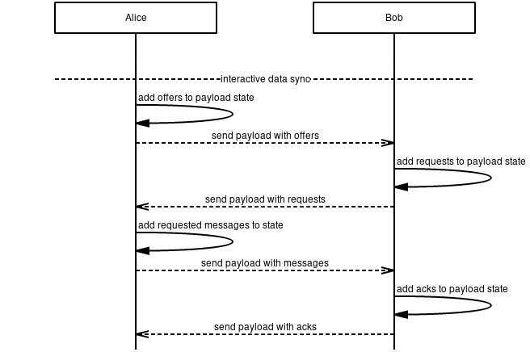
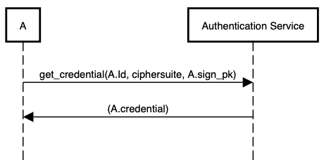
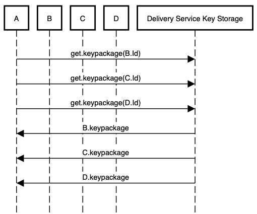
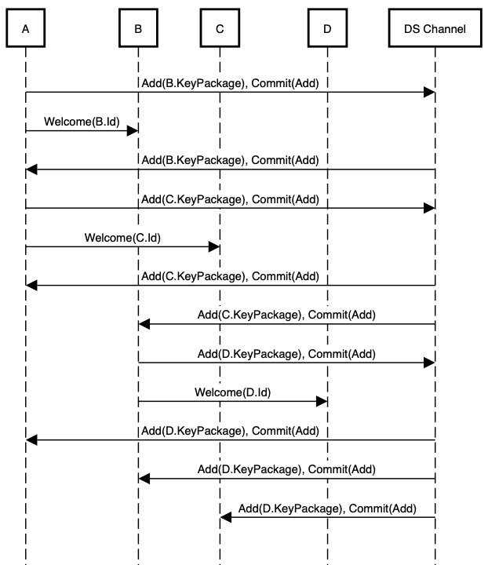
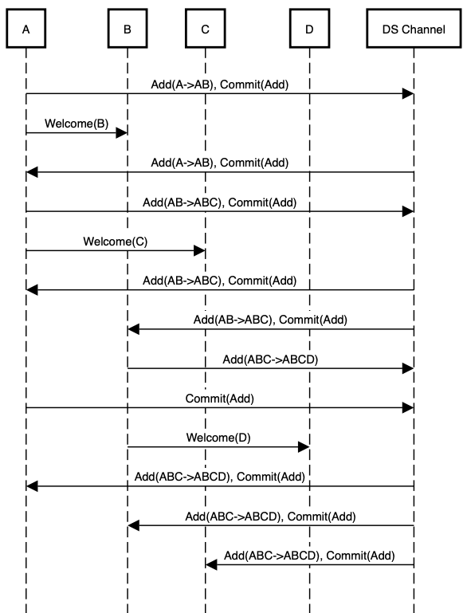
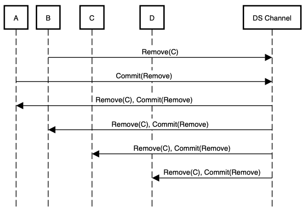
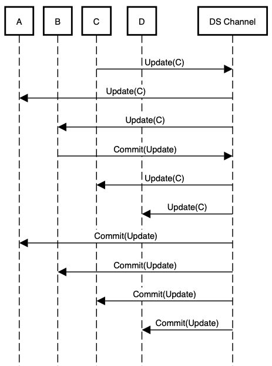
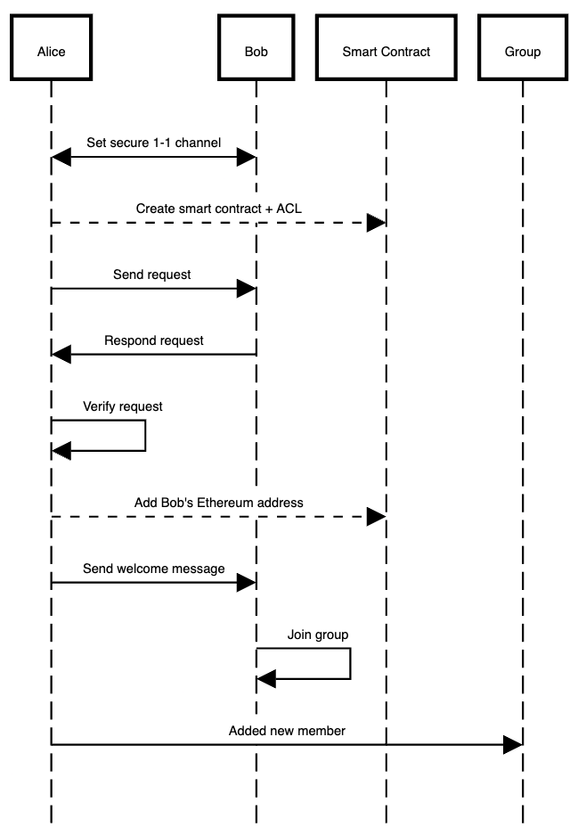
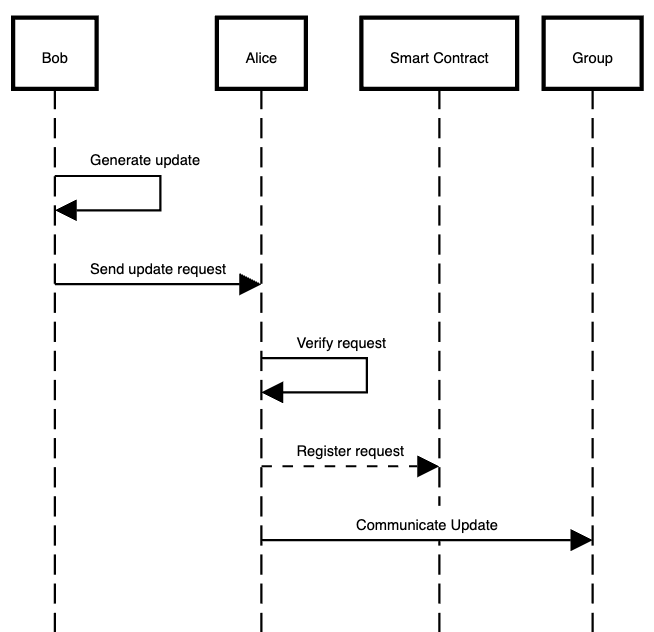

Vac RFC Index
An IETF-style index of Vac-managed RFCs across Waku, Nomos, Codex, and Status. Use the filters below to jump straight to a specification.
Vac RFCs
Vac builds public good protocols for the decentralised web. Vac acts as a custodian for the protocols that live in the RFC-Index repository. With the goal of widespread adoption, Vac will make sure the protocols adhere to a set of principles, including but not limited to liberty, security, privacy, decentralisation and inclusivity.
To learn more, visit Vac Research
1/COSS
Timeline
- 2025-12-22 —
b1a5783— Chore/mdbook updates (#237) - 2025-12-18 —
d03e699— ci: add mdBook configuration (#233) - 2025-11-04 —
dd397ad— Update Coss Date (#206) - 2024-10-09 —
d5e0072— cosmetic: fix external links in 1/COSS (#100) - 2024-09-13 —
3ab314d— Fix Files for Linting (#94) - 2024-08-09 —
ed2c68f— 1/COSS: New RFC Process (#4) - 2024-02-01 —
3eaccf9— Update and rename COSS.md to coss.md - 2024-01-30 —
990d940— Rename COSS.md to COSS.md - 2024-01-27 —
6495074— Rename vac/rfcs/01/README.md to vac/01/COSS.md - 2024-01-25 —
bab16a8— Rename README.md to README.md - 2024-01-25 —
a9162f2— Create README.md
This document describes a consensus-oriented specification system (COSS) for building interoperable technical specifications. COSS is based on a lightweight editorial process that seeks to engage the widest possible range of interested parties and move rapidly to consensus through working code.
This specification is based on Unprotocols 2/COSS, used by the ZeromMQ project. It is equivalent except for some areas:
- recommending the use of a permissive licenses, such as CC0 (with the exception of this document);
- miscellaneous metadata, editor, and format/link updates;
- more inheritance from the IETF Standards Process, e.g. using RFC categories: Standards Track, Informational, and Best Common Practice;
- standards track specifications SHOULD follow a specific structure that both streamlines editing, and helps implementers to quickly comprehend the specification
- specifications MUST feature a header providing specific meta information
- raw specifications will not be assigned numbers
- section explaining the IFT Request For Comments specification process managed by the Vac service department
License
Copyright (c) 2008-26 the Editor and Contributors.
This Specification is free software; you can redistribute it and/or modify it under the terms of the GNU General Public License as published by the Free Software Foundation; either version 3 of the License, or (at your option) any later version.
This specification is distributed in the hope that it will be useful, but WITHOUT ANY WARRANTY; without even the implied warranty of MERCHANTABILITY or FITNESS FOR A PARTICULAR PURPOSE. See the GNU General Public License for more details.
You should have received a copy of the GNU General Public License along with this program; if not, see gnu.org.
Change Process
This document is governed by the 1/COSS (COSS).
Language
The key words "MUST", "MUST NOT", "REQUIRED", "SHALL", "SHALL NOT", "SHOULD", "SHOULD NOT", "RECOMMENDED", "MAY", and "OPTIONAL" in this document are to be interpreted as described in RFC 2119.
Goals
The primary goal of COSS is to facilitate the process of writing, proving, and improving new technical specifications. A "technical specification" defines a protocol, a process, an API, a use of language, a methodology, or any other aspect of a technical environment that can usefully be documented for the purposes of technical or social interoperability.
COSS is intended to above all be economical and rapid, so that it is useful to small teams with little time to spend on more formal processes.
Principles:
- We aim for rough consensus and running code; inspired by the IETF Tao.
- Specifications are small pieces, made by small teams.
- Specifications should have a clearly responsible editor.
- The process should be visible, objective, and accessible to anyone.
- The process should clearly separate experiments from solutions.
- The process should allow deprecation of old specifications.
Specifications should take minutes to explain, hours to design, days to write, weeks to prove, months to become mature, and years to replace. Specifications have no special status except that accorded by the community.
Architecture
COSS is designed around fast, easy to use communications tools. Primarily, COSS uses a wiki model for editing and publishing specifications texts.
- The domain is the conservancy for a set of specifications.
- The domain is implemented as an Internet domain.
- Each specification is a document together with references and attached resources.
- A sub-domain is a initiative under a specific domain.
Individuals can become members of the domain by completing the necessary legal clearance. The copyright, patent, and trademark policies of the domain must be clarified in an Intellectual Property policy that applies to the domain.
Specifications exist as multiple pages, one page per version, (discussed below in "Branching and Merging"), which should be assigned URIs that MAY include an number identifier.
Thus, we refer to new specifications by specifying its domain, its sub-domain and short name. The syntax for a new specification reference is:
<domain>/<sub-domain>/<shortname>
For example, this specification should be rfc.vac.dev/vac/COSS, if the status were raw.
A number will be assigned to the specification when obtaining draft status. New versions of the same specification will be assigned a new number. The syntax for a specification reference is:
<domain>/<sub-domain>/<number>/<shortname>
For example, this specification is rfc.vac.dev/vac/1/COSS. The short form 1/COSS may be used when referring to the specification from other specifications in the same domain.
Specifications (excluding raw specifications) carries a different number including branches.
COSS Lifecycle
Every specification has an independent lifecycle that documents clearly its current status. For a specification to receive a lifecycle status, a new specification SHOULD be presented by the team of the sub-domain. After discussion amongst the contributors has reached a rough consensus, as described in RFC7282, the specification MAY begin the process to upgrade it's status.
A specification has five possible states that reflect its maturity and contractual weight:

Raw Specifications
All new specifications are raw specifications. Changes to raw specifications can be unilateral and arbitrary. A sub-domain MAY use the raw status for new specifications that live under their domain. Raw specifications have no contractual weight.
Draft Specifications
When raw specifications can be demonstrated, they become draft specifications and are assigned numbers. Changes to draft specifications should be done in consultation with users. Draft specifications are contracts between the editors and implementers.
Stable Specifications
When draft specifications are used by third parties, they become stable specifications. Changes to stable specifications should be restricted to cosmetic ones, errata and clarifications. Stable specifications are contracts between editors, implementers, and end-users.
Deprecated Specifications
When stable specifications are replaced by newer draft specifications, they become deprecated specifications. Deprecated specifications should not be changed except to indicate their replacements, if any. Deprecated specifications are contracts between editors, implementers and end-users.
Retired Specifications
When deprecated specifications are no longer used in products, they become retired specifications. Retired specifications are part of the historical record. They should not be changed except to indicate their replacements, if any. Retired specifications have no contractual weight.
Deleted Specifications
Deleted specifications are those that have not reached maturity (stable) and were discarded. They should not be used and are only kept for their historical value. Only Raw and Draft specifications can be deleted.
Editorial control
A specification MUST have a single responsible editor, the only person who SHALL change the status of the specification through the lifecycle stages.
A specification MAY also have additional contributors who contribute changes to it. It is RECOMMENDED to use a process similar to C4 process to maximize the scale and diversity of contributions.
Unlike the original C4 process however, it is RECOMMENDED to use CC0 as a more permissive license alternative. We SHOULD NOT use GPL or GPL-like license. One exception is this specification, as this was the original license for this specification.
The editor is responsible for accurately maintaining the state of specifications, for retiring different versions that may live in other places and for handling all comments on the specification.
Branching and Merging
Any member of the domain MAY branch a specification at any point. This is done by copying the existing text, and creating a new specification with the same name and content, but a new number. Since raw specifications are not assigned a number, branching by any member of a sub-domain MAY differentiate specifications based on date, contributors, or version number within the document. The ability to branch a specification is necessary in these circumstances:
- To change the responsible editor for a specification, with or without the cooperation of the current responsible editor.
- To rejuvenate a specification that is stable but needs functional changes. This is the proper way to make a new version of a specification that is in stable or deprecated status.
- To resolve disputes between different technical opinions.
The responsible editor of a branched specification is the person who makes the branch.
Branches, including added contributions, are derived works and thus licensed under the same terms as the original specification. This means that contributors are guaranteed the right to merge changes made in branches back into their original specifications.
Technically speaking, a branch is a different specification, even if it carries the same name. Branches have no special status except that accorded by the community.
Conflict resolution
COSS resolves natural conflicts between teams and vendors by allowing anyone to define a new specification. There is no editorial control process except that practised by the editor of a new specification. The administrators of a domain (moderators) may choose to interfere in editorial conflicts, and may suspend or ban individuals for behaviour they consider inappropriate.
Specification Structure
Meta Information
Specifications MUST contain the following metadata. It is RECOMMENDED that specification metadata is specified as a YAML header (where possible). This will enable programmatic access to specification metadata.
| Key | Value | Type | Example |
|---|---|---|---|
| shortname | short name | string | 1/COSS |
| title | full name | string | Consensus-Oriented Specification System |
| status | status | string | draft |
| category | category | string | Best Current Practice |
| tags | 0 or several tags | list | waku-application, waku-core-protocol |
| editor | editor name/email | string | Oskar Thoren oskarth@titanproxy.com |
| contributors | contributors | list | - Pieter Hintjens ph@imatix.com - André Rebentisch andre@openstandards.de - Alberto Barrionuevo abarrio@opentia.es - Chris Puttick chris.puttick@thehumanjourney.net - Yurii Rashkovskii yrashk@gmail.com |
IFT/Vac RFC Process
[!Note] This section is introduced to allow contributors to understand the IFT (Institute of Free Technology) Vac RFC specification process. Other organizations may make changes to this section according to their needs.
Vac is a department under the IFT organization that provides RFC (Request For Comments) specification services. This service works to help facilitate the RFC process, assuring standards are followed. Contributors within the service SHOULD assist a sub-domain in creating a new specification, editing a specification, and promoting the status of a specification along with other tasks. Once a specification reaches some level of maturity by rough consensus, the specification SHOULD enter the Vac RFC process. Similar to the IETF working group adoption described in RFC6174, the Vac RFC process SHOULD facilitate all updates to the specification.
Specifications are introduced by projects, under a specific domain, with the intention of becoming technically mature documents. The IFT domain currently houses the following projects:
When a specification is promoted to draft status, the number that is assigned MAY be incremental or by the sub-domain and the Vac RFC process. Standards track specifications MUST be based on the Vac RFC template before obtaining a new status. All changes, comments, and contributions SHOULD be documented.
Conventions
Where possible editors and contributors are encouraged to:
- Refer to and build on existing work when possible, especially IETF specifications.
- Contribute to existing specifications rather than reinvent their own.
- Use collaborative branching and merging as a tool for experimentation.
- Use Semantic Line Breaks: sembr.
Appendix A. Color Coding
It is RECOMMENDED to use color coding to indicate specification's status. Color coded specifications SHOULD use the following color scheme:


2/MVDS
Timeline
- 2025-12-22 —
b1a5783— Chore/mdbook updates (#237) - 2025-12-18 —
d03e699— ci: add mdBook configuration (#233) - 2024-09-13 —
3ab314d— Fix Files for Linting (#94) - 2024-06-28 —
a5b24ac— fix_: broken image links (#81) - 2024-02-01 —
0253d53— Rename MVDS.md to mvds.md - 2024-01-30 —
70326d1— Rename MVDS.md to MVDS.md - 2024-01-27 —
472a7fd— Rename vac/rfcs/02/README.md to vac/02/MVDS.md - 2024-01-25 —
4362a7b— Create README.md
In this specification, we describe a minimum viable protocol for data synchronization inspired by the Bramble Synchronization Protocol (BSP). This protocol is designed to ensure reliable messaging between peers across an unreliable peer-to-peer (P2P) network where they may be unreachable or unresponsive.
We present a reference implementation1 including a simulation to demonstrate its performance.
Definitions
| Term | Description |
|---|---|
| Peer | The other nodes that a node is connected to. |
| Record | Defines a payload element of either the type OFFER, REQUEST, MESSAGE or ACK |
| Node | Some process that is able to store data, do processing and communicate for MVDS. |
Wire Protocol
Secure Transport
This specification does not define anything related to the transport of packets. It is assumed that this is abstracted in such a way that any secure transport protocol could be easily implemented. Likewise, properties such as confidentiality, integrity, authenticity and forward secrecy are assumed to be provided by a layer below.
Payloads
Payloads are implemented using protocol buffers v3.
syntax = "proto3";
package vac.mvds;
message Payload {
repeated bytes acks = 5001;
repeated bytes offers = 5002;
repeated bytes requests = 5003;
repeated Message messages = 5004;
}
message Message {
bytes group_id = 6001;
int64 timestamp = 6002;
bytes body = 6003;
}
The payload field numbers are kept more "unique" to ensure no overlap with other protocol buffers.
Each payload contains the following fields:
- Acks: This field contains a list (can be empty)
of
message identifiersinforming the recipient that sender holds a specific message. - Offers: This field contains a list (can be empty)
of
message identifiersthat the sender would like to give to the recipient. - Requests: This field contains a list (can be empty)
of
message identifiersthat the sender would like to receive from the recipient. - Messages: This field contains a list of messages (can be empty).
Message Identifiers: Each message has a message identifier calculated by
hashing the group_id, timestamp and body fields as follows:
HASH("MESSAGE_ID", group_id, timestamp, body);
Group Identifiers: Each message is assigned into a group
using the group_id field,
groups are independent synchronization contexts between peers.
The current HASH function used is sha256.
Synchronization
State
We refer to state as set of records for the types OFFER, REQUEST and
MESSAGE that every node SHOULD store per peer.
state MUST NOT contain ACK records as we do not retransmit those periodically.
The following information is stored for records:
- Type - Either
OFFER,REQUESTorMESSAGE - Send Count - The amount of times a record has been sent to a peer.
- Send Epoch - The next epoch at which a record can be sent to a peer.
Flow
A maximum of one payload SHOULD be sent to peers per epoch,
this payload contains all ACK, OFFER, REQUEST and
MESSAGE records for the specific peer.
Payloads are created every epoch,
containing reactions to previously received records by peers or
new records being sent out by nodes.
Nodes MAY have two modes with which they can send records:
BATCH and INTERACTIVE mode.
The following rules dictate how nodes construct payloads
every epoch for any given peer for both modes.
NOTE: A node may send messages both in interactive and in batch mode.
Interactive Mode
- A node initially offers a
MESSAGEwhen attempting to send it to a peer. This means anOFFERis added to the next payload and state for the given peer. - When a node receives an
OFFER, aREQUESTis added to the next payload and state for the given peer. - When a node receives a
REQUESTfor a previously sentOFFER, theOFFERis removed from the state and the correspondingMESSAGEis added to the next payload and state for the given peer. - When a node receives a
MESSAGE, theREQUESTis removed from the state and anACKis added to the next payload for the given peer. - When a node receives an
ACK, theMESSAGEis removed from the state for the given peer. - All records that require retransmission are added to the payload,
given
Send Epochhas been reached.

Figure 1: Delivery without retransmissions in interactive mode.
Batch Mode
- When a node sends a
MESSAGE, it is added to the next payload and the state for the given peer. - When a node receives a
MESSAGE, anACKis added to the next payload for the corresponding peer. - When a node receives an
ACK, theMESSAGEis removed from the state for the given peer. - All records that require retransmission are added to the payload,
given
Send Epochhas been reached.

Figure 2: Delivery without retransmissions in batch mode.
NOTE: Batch mode is higher bandwidth whereas interactive mode is higher latency.
Retransmission
The record of the type Type SHOULD be retransmitted
every time Send Epoch is smaller than or equal to the current epoch.
Send Epoch and Send Count MUST be increased every time a record is retransmitted.
Although no function is defined on how to increase Send Epoch,
it SHOULD be exponentially increased until reaching an upper bound
where it then goes back to a lower epoch in order to
prevent a record's Send Epoch's from becoming too large.
NOTE: We do not retransmission
ACKs as we do not know when they have arrived, therefore we simply resend them every time we receive aMESSAGE.
Formal Specification
MVDS has been formally specified using TLA+: https://github.com/vacp2p/formalities/tree/master/MVDS.
Acknowledgments
- Preston van Loon
- Greg Markou
- Rene Nayman
- Jacek Sieka
Copyright
Copyright and related rights waived via CC0.
Footnotes
3/REMOTE-LOG
Timeline
- 2025-12-22 —
b1a5783— Chore/mdbook updates (#237) - 2025-12-18 —
d03e699— ci: add mdBook configuration (#233) - 2024-09-13 —
3ab314d— Fix Files for Linting (#94) - 2024-02-01 —
3fd8b5a— Update and rename README.md to remote-log.md - 2024-01-30 —
dce61fe— Create README.md
A remote log is a replication of a local log. This means a node can read data that originally came from a node that is offline.
This specification is complemented by a proof of concept implementation1.
Definitions
| Term | Definition |
|---|---|
| CAS | Content-addressed storage. Stores data that can be addressed by its hash. |
| NS | Name system. Associates mutable data to a name. |
| Remote log | Replication of a local log at a different location. |
Wire Protocol
Secure Transport, storage, and name system
This specification does not define anything related to: secure transport, content addressed storage, or the name system. It is assumed these capabilities are abstracted away in such a way that any such protocol can easily be implemented.
Payloads
Payloads are implemented using protocol buffers v3.
CAS service:
syntax = "proto3";
package vac.cas;
service CAS {
rpc Add(Content) returns (Address) {}
rpc Get(Address) returns (Content) {}
}
message Address {
bytes id = 1;
}
message Content {
bytes data = 1;
}
NS service:
syntax = "proto3";
package vac.cas;
service NS {
rpc Update(NameUpdate) returns (Response) {}
rpc Fetch(Query) returns (Content) {}
}
message NameUpdate {
string name = 1;
bytes content = 2;
}
message Query {
string name = 1;
}
message Content {
bytes data = 1;
}
message Response {
bytes data = 1;
}
Remote log:
syntax = "proto3";
package vac.cas;
message RemoteLog {
repeated Pair pair = 1;
bytes tail = 2;
message Pair {
bytes remoteHash = 1;
bytes localHash = 2;
bytes data = 3;
}
}
Synchronization
Roles
There are four fundamental roles:
- Alice
- Bob
- Name system (NS)
- Content-addressed storage (CAS)
The remote log protobuf is what is stored in the name system.
"Bob" can represent anything from 0 to N participants. Unlike Alice, Bob only needs read-only access to NS and CAS.
Flow

Remote log
The remote log lets receiving nodes know what data they are missing. Depending on the specific requirements and capabilities of the nodes and name system, the information can be referred to differently. We distinguish between three rough modes:
- Fully replicated log
- Normal sized page with CAS mapping
- "Linked list" mode - minimally sized page with CAS mapping
Data format:
| H1_3 | H2_3 |
| H1_2 | H2_2 |
| H1_1 | H2_1 |
| ------------|
| next_page |
Here the upper section indicates a list of ordered pairs, and the lower section
contains the address for the next page chunk. H1 is the native hash function,
and H2 is the one used by the CAS. The numbers corresponds to the messages.
To indicate which CAS is used, a remote log SHOULD use a multiaddr.
Embedded data:
A remote log MAY also choose to embed the wire payloads that corresponds to the native hash. This bypasses the need for a dedicated CAS and additional round-trips, with a trade-off in bandwidth usage.
| H1_3 | | C_3 |
| H1_2 | | C_2 |
| H1_1 | | C_1 |
| -------------|
| next_page |
Here C stands for the content that would be stored at the CAS.
Both patterns can be used in parallel, e,g. by storing the last k messages
directly and use CAS pointers for the rest. Together with the next_page page
semantics, this gives users flexibility in terms of bandwidth and
latency/indirection, all the way from a simple linked list to a fully replicated
log. The latter is useful for things like backups on durable storage.
Next page semantics
The pointer to the 'next page' is another remote log entry, at a previous point in time.
Interaction with MVDS
vac.mvds.Message payloads are the only payloads that MUST be uploaded. Other messages types MAY be uploaded, depending on the implementation.
Acknowledgments
TBD.
Copyright
Copyright and related rights waived via CC0.
Footnotes
4/MVDS-META
Timeline
- 2025-12-22 —
b1a5783— Chore/mdbook updates (#237) - 2025-12-18 —
d03e699— ci: add mdBook configuration (#233) - 2024-09-13 —
3ab314d— Fix Files for Linting (#94) - 2024-02-01 —
3a396b5— Update and rename README.md to mvds-meta.md - 2024-01-30 —
2e80c3b— Create README.md
In this specification, we describe a method to construct message history that will aid the consistency guarantees of 2/MVDS. Additionally, we explain how data sync can be used for more lightweight messages that do not require full synchronization.
Motivation
In order for more efficient synchronization of conversational messages, information should be provided allowing a node to more effectively synchronize the dependencies for any given message.
Format
We introduce the metadata message which is used to convey information about a message and how it SHOULD be handled.
package vac.mvds;
message Metadata {
repeated bytes parents = 1;
bool ephemeral = 2;
}
Nodes MAY transmit a Metadata message by extending the MVDS message
with a metadata field.
message Message {
bytes group_id = 6001;
int64 timestamp = 6002;
bytes body = 6003;
+ Metadata metadata = 6004;
}
Fields
| Name | Description |
|---|---|
parents | list of parent message identifiers for the specific message. |
ephemeral | indicates whether a message is ephemeral or not. |
Usage
parents
This field contains a list of parent message identifiers
for the specific message.
It MUST NOT contain any messages as parent whose ack flag was set to false.
This establishes a directed acyclic graph (DAG)[^2] of persistent messages.
Nodes MAY buffer messages until dependencies are satisfied for causal consistency[^3], they MAY also pass the messages straight away for eventual consistency[^4].
A parent is any message before a new message that a node is aware of that has no children.
The number of parents for a given message is bound by [0, N],
where N is the number of nodes participating in the conversation,
therefore the space requirements for the parents field is O(N).
If a message has no parents it is considered a root. There can be multiple roots, which might be disconnected, giving rise to multiple DAGs.
ephemeral
When the ephemeral flag is set to false,
a node MUST send an acknowledgment when they have received and processed a message.
If it is set to true, it SHOULD NOT send any acknowledgment.
The flag is false by default.
Nodes MAY decide to not persist ephemeral messages, however they MUST NOT be shared as part of the message history.
Nodes SHOULD send ephemeral messages in batch mode. As their delivery is not needed to be guaranteed.
Copyright
Copyright and related rights waived via CC0.
Footnotes
1: 2/MVDS 2: directed_acyclic_graph 3: Jepsen. Causal Consistency Jepsen, LLC. 4: https://en.wikipedia.org/wiki/Eventual_consistency
25/LIBP2P-DNS-DISCOVERY
Timeline
- 2025-12-22 —
b1a5783— Chore/mdbook updates (#237) - 2025-12-18 —
d03e699— ci: add mdBook configuration (#233) - 2024-09-13 —
3ab314d— Fix Files for Linting (#94) - 2024-03-21 —
2eaa794— Broken Links + Change Editors (#26) - 2024-02-08 —
a3ad14e— Create libp2p-dns-discovery.md
25/LIBP2P-DNS-DISCOVERY specifies a scheme to implement libp2p
peer discovery via DNS for Waku v2.
The generalised purpose is to retrieve an arbitrarily long, authenticated,
updateable list of libp2p peers
to bootstrap connection to a libp2p network.
Since 10/WAKU2
currently specifies use of libp2p peer identities,
this method is suitable for a new Waku v2 node
to discover other Waku v2 nodes to connect to.
This specification is largely based on EIP-1459,
with the only deviation being the type of address being encoded (multiaddr vs enr).
Also see this earlier explainer
for more background on the suitability of DNS based discovery for Waku v2.
List encoding
The peer list MUST be encoded as a Merkle tree.
EIP-1459 specifies the URL scheme
to refer to such a DNS node list.
This specification uses the same approach, but with a matree scheme:
matree://<key>@<fqdn>
where
matreeis the selectedmultiaddrMerkle tree scheme<fqdn>is the fully qualified domain name on which the list can be found<key>is the base32 encoding of the compressed 32-byte binary public key that signed the list.
The example URL from EIP-1459, adapted to the above scheme becomes:
matree://AM5FCQLWIZX2QFPNJAP7VUERCCRNGRHWZG3YYHIUV7BVDQ5FDPRT2@peers.example.org
Each entry within the Merkle tree MUST be contained within a DNS TXT record
and stored in a subdomain (except for the base URL matree entry).
The content of any TXT record
MUST be small enough to fit into the 512-byte limit imposed on UDP DNS packets,
which limits the number of hashes that can be contained within a branch entry.
The subdomain name for each entry
is the base32 encoding of the abbreviated keccak256 hash of its text content.
See this example
of a fully populated tree for more information.
Entry types
The following entry types are derived from EIP-1459
and adapted for use with multiaddrs:
Root entry
The tree root entry MUST use the following format:
matree-root:v1 m=<ma-root> l=<link-root> seq=<sequence number> sig=<signature>
where
ma-rootandlink-rootrefer to the root hashes of subtrees containingmultiaddrsand links to other subtrees, respectivelysequence-numberis the tree's update sequence number. This number SHOULD increase with each update to the tree.signatureis a 65-byte secp256k1 EC signature over the keccak256 hash of the root record content, excluding thesig=part, encoded as URL-safe base64
Branch entry
Branch entries MUST take the format:
matree-branch:<h₁>,<h₂>,...,<hₙ>
where
<h₁>,<h₂>,...,<hₙ>are the hashes of other subtree entries
Leaf entries
There are two types of leaf entries:
Link entries
For the subtree pointed to by link-root,
leaf entries MUST take the format:
matree://<key>@<fqdn>
which links to a different list located in another domain.
multiaddr entries
For the subtree pointed to by ma-root,
leaf entries MUST take the format:
ma:<multiaddr>
which contains the multiaddr of a libp2p peer.
Client protocol
A client MUST adhere to the client protocol
as specified in EIP-1459,
and adapted for usage with multiaddr entry types below:
To find nodes at a given DNS name a client MUST perform the following steps:
- Resolve the TXT record of the DNS name and
check whether it contains a valid
matree-root:v1entry. - Verify the signature on the root against the known public key and check whether the sequence number is larger than or equal to any previous number seen for that name.
- Resolve the TXT record of a hash subdomain indicated in the record and verify that the content matches the hash.
- If the resolved entry is of type:
matree-branch: parse the list of hashes and continue resolving them (step 3).ma: import themultiaddrand add it to a local list of discovered nodes.
Copyright
Copyright and related rights waived via CC0.
References
10/WAKU2- EIP-1459: Client Protocol
- EIP-1459: Node Discovery via DNS
libp2plibp2ppeer identity- Merkle trees
32/RLN-V1
Timeline
- 2025-12-22 —
b1a5783— Chore/mdbook updates (#237) - 2025-12-18 —
d03e699— ci: add mdBook configuration (#233) - 2024-09-13 —
3ab314d— Fix Files for Linting (#94) - 2024-08-05 —
eb25cd0— chore: replace email addresses (#86) - 2024-06-06 —
cbefa48— 32/RLN-V1: Move to Draft (#40) - 2024-03-21 —
2eaa794— Broken Links + Change Editors (#26) - 2024-02-01 —
94db406— Update rln-v1.md - 2024-02-01 —
a23299f— Update and rename RLN-V1.md to rln-v1.md - 2024-01-27 —
539575b— Create RLN-V1.md
Abstract
The following specification covers the RLN construct as well as some auxiliary libraries useful for interacting with it. Rate limiting nullifier (RLN) is a construct based on zero-knowledge proofs that provides an anonymous rate-limited signaling/messaging framework suitable for decentralized (and centralized) environments. Anonymity refers to the unlinkability of messages to their owner.
Motivation
RLN guarantees a messaging rate is enforced cryptographically while preserving the anonymity of the message owners. A wide range of applications can benefit from RLN and provide desirable security features. For example, an e-voting system can integrate RLN to contain the voting rate while protecting the voters-vote unlinkability. Another use case is to protect an anonymous messaging system against DDoS and spam attacks by constraining messaging rate of users. This latter use case is explained in 17/WAKU2-RLN-RELAY RFC.
Wire Format Specification
The key words “MUST”, “MUST NOT”, “REQUIRED”, “SHALL”, “SHALL NOT”, “SHOULD”, “SHOULD NOT”, “RECOMMENDED”, “MAY”, and “OPTIONAL” in this document are to be interpreted as described in 2119.
Flow
The users participate in the protocol by first registering to an application-defined group referred by the membership group. Registration to the group is mandatory for signaling in the application. After registration, group members can generate a zero-knowledge proof of membership for their signals and can participate in the application. Usually, the membership requires a financial or social stake which is beneficial for the prevention of inclusion of Sybils within the membership group. Group members are allowed to send one signal per external nullifier (an identifier that groups signals and can be thought of as a voting booth). If a user generates more signals than allowed, the user risks being slashed - by revealing his membership secret credentials. If the financial stake is put in place, the user also risks his stake being taken.
Generally the flow can be described by the following steps:
- Registration
- Signaling
- Verification and slashing
Registration
Depending on the application requirements, the registration can be implemented in different ways, for example:
- centralized registrations, by using a central server
- decentralized registrations, by using a smart contract
The users' identity commitments (explained in section User Identity) are stored in a Merkle tree, and the users can obtain a Merkle proof proving that they are part of the group.
Also depending on the application requirements, usually a financial or social stake is introduced. An example for financial stake is:
For each registration a certain amount of ETH is required. An example for social stake is using Interep as a registry, users need to prove that they have a highly reputable social media account.
Implementation notes
User identity
The user's identity is composed of:
{
identity_secret: [identity_nullifier, identity_trapdoor],
identity_secret_hash: poseidonHash(identity_secret),
identity_commitment: poseidonHash([identity_secret_hash])
}
For registration, the user MUST submit their identity_commitment
(along with any additional registration requirements) to the registry.
Upon registration, they SHOULD receive leaf_index value
which represents their position in the Merkle tree.
Receiving a leaf_index is not a hard requirement and is application specific.
The other way around is
the users calculating the leaf_index themselves upon successful registration.
Signaling
After registration, the users can participate in the application by sending signals to the other participants in a decentralised manner or to a centralised server. Along with their signal, they MUST generate a zero-knowledge proof by using the circuit with the specification described above.
For generating a proof, the users need to obtain the required parameters or compute them themselves, depending on the application implementation and client libraries supported by the application. For example, the users MAY store the membership Merkle tree on their end and generate a Merkle proof whenever they want to generate a signal.
Implementation Notes
Signal hash
The signal hash can be generated by hashing the raw signal (or content)
using the keccak256 hash function.
External nullifier
The external nullifier MUST be computed as the Poseidon hash of the current epoch (e.g. a value equal to or derived from the current UNIX timestamp divided by the epoch length) and the RLN identifier.
external_nullifier = poseidonHash([epoch, rln_identifier]);
Obtaining Merkle proof
The Merkle proof SHOULD be obtained locally or from a trusted third party.
By using the incremental Merkle tree algorithm,
the Merkle can be obtained by providing the leaf_index of the identity_commitment.
The proof (Merkle_proof) is composed of the following fields:
{
root: bigint,
indices: number[],
path_elements: bigint[][]
}
- root - The root of membership group Merkle tree at the time of publishing the message
- indices - The index fields of the leafs in the Merkle tree - used by the Merkle tree algorithm for verification
- path_elements - Auxiliary data structure used for storing the path to the leaf - used by the Merkle proof algorithm for verificaton
Generating proof
For proof generation, the user MUST submit the following fields to the circuit:
{
identity_secret: identity_secret_hash,
path_elements: Merkle_proof.path_elements,
identity_path_index: Merkle_proof.indices,
x: signal_hash,
external_nullifier: external_nullifier
}
Calculating output
The proof output is calculated locally,
in order for the required fields for proof verification
to be sent along with the proof.
The proof output is composed of the y share of the secret equation and the internal_nullifier.
The internal_nullifier represents a unique fingerprint of a user
for a given epoch and app.
The following fields are needed for proof output calculation:
{
identity_secret_hash: bigint,
external_nullifier: bigint,
x: bigint
}
The output [y, internal_nullifier] is calculated in the following way:
a_0 = identity_secret_hash;
a_1 = poseidonHash([a0, external_nullifier]);
y = a_0 + x * a_1;
internal_nullifier = poseidonHash([a_1]);
It relies on the properties of the Shamir's Secret sharing scheme.
Sending the output message
The user's output message (output_message),
containing the signal SHOULD contain the following fields at minimum:
{
signal: signal, # non-hashed signal,
proof: zk_proof,
internal_nullifier: internal_nullifier,
x: x, # signal_hash,
y: y,
rln_identifier: rln_identifier
}
Additionally depending on the application, the following fields MAY be required:
{
root: Merkle_proof.root,
epoch: epoch
}
Verification and slashing
The slashing implementation is dependent on the type of application. If the application is implemented in a centralised manner, and everything is stored on a single server, the slashing will be implemented only on the server. Otherwise if the application is distributed, the slashing will be implemented on each user's client.
Notes from Implementation
Each user of the protocol
(server or otherwise) MUST store metadata for each message received by each user,
for the given epoch.
The data can be deleted when the epoch passes.
Storing metadata is REQUIRED,
so that if a user sends more than one unique signal per epoch,
they can be slashed and removed from the protocol.
The metadata stored contains the x, y shares and
the internal_nullifier for the user for each message.
If enough such shares are present, the user's secret can be retreived.
One way of storing received metadata (messaging_metadata) is the following format:
{
[external_nullifier]: {
[internal_nullifier]: {
x_shares: [],
y_shares: []
}
}
}
Verification
The output message verification consists of the following steps:
external_nullifiercorrectness- non-duplicate message check
zk_proofzero-knowledge proof verification- spam verification
1. external_nullifier correctness
Upon received output_message,
first the epoch and rln_identifier fields are checked,
to ensure that the message matches the current external_nullifier.
If the external_nullifier is correct the verification continues, otherwise,
the message is discarded.
2. non-duplicate message check
The received message is checked to ensure it is not duplicate.
The duplicate message check is performed by verifying that the x and y
fields do not exist in the messaging_metadata object.
If the x and y fields exist in the x_shares and
y_shares array for the external_nullifier and
the internal_nullifier the message can be considered as a duplicate.
Duplicate messages are discarded.
3. zk_proof verification
The zk_proof SHOULD be verified by providing the zk_proof field
to the circuit verifier along with the public_signal:
[
y,
Merkle_proof.root,
internal_nullifier,
x, # signal_hash
external_nullifier
]
If the proof verification is correct, the verification continues, otherwise the message is discarded.
4. Double signaling verification
After the proof is verified the x, and
y fields are added to the x_shares and y_shares
arrays of the messaging_metadata external_nullifier and
internal_nullifier object.
If the length of the arrays is equal to the signaling threshold (limit),
the user can be slashed.
Slashing
After the verification,
the user SHOULD be slashed if two different shares are present
to reconstruct their identity_secret_hash from x_shares and
y_shares fields, for their internal_nullifier.
The secret can be retreived by the properties of the Shamir's secret sharing scheme.
In particular the secret (a_0) can be retrieved by computing Lagrange polynomials.
After the secret is retreived,
the user's identity_commitment SHOULD be generated from the secret and
it can be used for removing the user from the membership Merkle tree
(zeroing out the leaf that contains the user's identity_commitment).
Additionally, depending on the application the identity_secret_hash
MAY be used for taking the user's provided stake.
Technical overview
The main RLN construct is implemented using a ZK-SNARK circuit. However, it is helpful to describe the other necessary outside components for interaction with the circuit, which together with the ZK-SNARK circuit enable the above mentioned features.
Terminology
| Term | Description |
|---|---|
| ZK-SNARK | zksnarks |
| Stake | Financial or social stake required for registering in the RLN applications. Common stake examples are: locking cryptocurrency (financial), linking reputable social identity. |
| Identity secret | An array of two unique random components (identity nullifier and identity trapdoor), which must be kept private by the user. Secret hash and identity commitment are derived from this array. |
| Identity nullifier | Random 32 byte value used as component for identity secret generation. |
| Identity trapdoor | Random 32 byte value used as component for identity secret generation. |
| Identity secret hash | The hash of the identity secret, obtained using the Poseidon hash function. It is used for deriving the identity commitment of the user, and as a private input for zero-knowledge proof generation. The secret hash should be kept private by the user. |
| Identity commitment | Hash obtained from the Identity secret hash by using the poseidon hash function. It is used by the users for registering in the protocol. |
| Signal | The message generated by a user. It is an arbitrary bit string that may represent a chat message, a URL request, protobuf message, etc. |
| Signal hash | Keccak256 hash of the signal modulo circuit's field characteristic, used as an input in the RLN circuit. |
| RLN Identifier | Random finite field value unique per RLN app. It is used for additional cross-application security. The role of the RLN identifier is protection of the user secrets from being compromised when signals are being generated with the same credentials in different apps. |
| RLN membership tree | Merkle tree data structure, filled with identity commitments of the users. Serves as a data structure that ensures user registrations. |
| Merkle proof | Proof that a user is member of the RLN membership tree. |
RLN Zero-Knowledge Circuit specific terms
| Term | Description |
|---|---|
| x | Keccak hash of the signal, same as signal hash (Defined above). |
| A0 | The identity secret hash. |
| A1 | Poseidon hash of [A0, External nullifier] (see about External nullifier below). |
| y | The result of the polynomial equation (y = a0 + a1*x). The public output of the circuit. |
| External nullifier | Poseidon hash of [Epoch, RLN Identifier]. An identifier that groups signals and can be thought of as a voting booth. |
| Internal nullifier | Poseidon hash of [A1]. This field ensures that a user can send only one valid signal per external nullifier without risking being slashed. Public input of the circuit. |
Zero-Knowledge Circuits specification
Anonymous signaling with a controlled rate limit is enabled by proving that the user is part of a group which has high barriers to entry (form of stake) and enabling secret reveal if more than 1 unique signal is produced per external nullifier. The membership part is implemented using membership Merkle trees and Merkle proofs, while the secret reveal part is enabled by using the Shamir's Secret Sharing scheme. Essentially the protocol requires the users to generate zero-knowledge proof to be able to send signals and participate in the application. The zero knowledge proof proves that the user is member of a group, but also enforces the user to share part of their secret for each signal in an external nullifier. The external nullifier is usually represented by timestamp or a time interval. It can also be thought of as a voting booth in voting applications.
The zero-knowledge Circuit is implemented using a Groth-16 ZK-SNARK, using the circomlib library.
System parameters
DEPTH- Merkle tree depth
Circuit parameters
Public Inputs
xexternal_nullifier
Private Inputs
identity_secret_hashpath_elements- rln membership proof componentidentity_path_index- rln membership proof component
Outputs
yroot- the rln membership tree rootinternal_nullifier
Hash function
Canonical Poseidon hash implementation is used, as implemented in the circomlib library, according to the Poseidon paper. This Poseidon hash version (canonical implementation) uses the following parameters:
| Hash inputs | t | RF | RP |
|---|---|---|---|
| 1 | 2 | 8 | 56 |
| 2 | 3 | 8 | 57 |
| 3 | 4 | 8 | 56 |
| 4 | 5 | 8 | 60 |
| 5 | 6 | 8 | 60 |
| 6 | 7 | 8 | 63 |
| 7 | 8 | 8 | 64 |
| 8 | 9 | 8 | 63 |
Membership implementation
For a valid signal, a user's identity_commitment
(more on identity commitments below) must exist in identity membership tree.
Membership is proven by providing a membership proof (witness).
The fields from the membership proof REQUIRED for the verification are:
path_elements and identity_path_index.
IncrementalQuinTree algorithm is used for constructing the Membership Merkle tree. The circuits are reused from this repository. You can find out more details about the IncrementalQuinTree algorithm here.
Slashing and Shamir's Secret Sharing
Slashing is enabled by using polynomials and Shamir's Secret sharing.
In order to produce a valid proof,
identity_secret_hash as a private input to the circuit.
Then a secret equation is created in the form of:
y = a_0 + x * a_1;
where a_0 is the identity_secret_hash and a_1 = hash(a_0, external nullifier).
Along with the generated proof,
the users MUST provide a (x, y) share which satisfies the line equation,
in order for their proof to be verified.
x is the hashed signal, while the y is the circuit output.
With more than one pair of unique shares, anyone can derive a_0, i.e. the identity_secret_hash.
The hash of a signal will be the evaluation point x.
In this way,
a member who sends more than one unique signal per external_nullifier
risks their identity secret being revealed.
Note that shares used in different epochs and
different RLN apps cannot be used to derive the identity_secret_hash.
Thanks to the external_nullifier definition,
also shares computed from same secret within same epoch but
in different RLN apps cannot be used to derive the identity secret hash.
The rln_identifier is a random value from a finite field, unique per RLN app,
and is used for additional cross-application security -
to protect the user secrets being compromised if they use
the same credentials accross different RLN apps.
If rln_identifier is not present,
the user uses the same credentials and
sends a different message for two different RLN apps using the same external_nullifier,
then their user signals can be grouped by the internal_nullifier
which could lead the user's secret revealed.
This is because two separate signals under the same internal_nullifier
can be treated as rate limiting violation.
With adding the rln_identifier field we obscure the internal_nullifier,
so this kind of attack can be hardened because
we don't have the same internal_nullifier anymore.
Identity credentials generation
In order to be able to generate valid proofs,
the users MUST be part of the identity membership Merkle tree.
They are part of the identity membership Merkle tree if
their identity_commitment is placed in a leaf in the tree.
The identity credentials of a user are composed of:
identity_secretidentity_secret_hashidentity_commitment
identity_secret
The identity_secret is generated in the following way:
identity_nullifier = random_32_byte_buffer;
identity_trapdoor = random_32_byte_buffer;
identity_secret = [identity_nullifier, identity_trapdoor];
The same secret SHOULD NOT be used accross different protocols, because revealing the secret at one protocol could break privacy for the user in the other protocols.
identity_secret_hash
The identity_secret_hash is generated by obtaining a Poseidon hash
of the identity_secret array:
identity_secret_hash = poseidonHash(identity_secret);
identity_commitment
The identity_commitment is generated by obtaining a Poseidon hash of the identity_secret_hash:
identity_commitment = poseidonHash([identity_secret_hash]);
Appendix A: Security Considerations
RLN is an experimental and still un-audited technology. This means that the circuits have not been yet audited. Another consideration is the security of the underlying primitives. zk-SNARKS require a trusted setup for generating a prover and verifier keys. The standard for this is to use trusted Multi-Party Computation (MPC) ceremony, which requires two phases. Trusted MPC ceremony has not yet been performed for the RLN circuits.
SSS Security Assumptions
Shamir-Secret Sharing requires polynomial coefficients
to be independent of each other.
However, a_1 depends on a_0 through the Poseidon hash algorithm.
Due to the design of Poseidon,
it is possible to
attack
the protocol.
It was decided not to change the circuits design,
since at the moment the attack is infeasible.
Therefore, implementers must be aware that the current version
provides approximately 160-bit security and not 254.
Possible improvements:
- change the circuit to make coefficients independent;
- switch to other hash function (Keccak, SHA);
Appendix B: Identity Scheme Choice
The hashing scheme used is based on the design decisions which also include the Semaphore circuits. Our goal was to ensure compatibility of the secrets for apps that use Semaphore and RLN circuits while also not compromising on security because of using the same secrets.
For example, let's say there is a voting app that uses Semaphore, and also a chat app that uses RLN. The UX would be better if the users would not need to care about complicated identity management (secrets and commitments) they use for each app, and it would be much better if they could use a single id commitment for this. Also in some cases these kind of dependency is required - RLN chat app using Interep as a registry (instead of using financial stake). One potential concern about this interoperability is a slashed user on the RLN app side having their security compromised on the semaphore side apps as well. i.e. obtaining the user's secret, anyone would be able to generate valid semaphore proofs as the slashed user. We don't want that, and we should keep user's app specific security threats in the domain of that app alone.
To achieve the above interoperability UX while preventing the shared app security model (i.e slashing user on an RLN app having impact on Semaphore apps), we had to do the follow in regard the identity secret and identity commitment:
identity_secret = [identity_nullifier, identity_trapdoor];
identity_secret_hash = poseidonHash(identity_secret);
identity_commitment = poseidonHash([identity_secret_hash]);
Secret components for generating Semaphore proof:
identity_nullifieridentity_trapdoor
Secret components for generting RLN proof:
identity_secret_hash
When a user is slashed on the RLN app side, their identity_secret_hash is revealed.
However, a semaphore proof can't be generated because
we do not know the user's identity_nullifier and identity_trapdoor.
With this design we achieve:
identity_commitment (Semaphore) == identity_commitment (RLN)
secret (semaphore) != secret (RLN).
This is the only option we had for the scheme in order to satisfy the properties described above.
Also, for RLN we do a single secret component input for the circuit. Thus we need to hash the secret array (two components) to a secret hash, and we use that as a secret component input.
Appendix C: Auxiliary Tooling
There are few additional tools implemented for easier integrations and usage of the RLN protocol.
zerokit is a set of Zero Knowledge modules,
written in Rust and designed to be used in many different environments.
Among different modules, it supports Semaphore and RLN.
zk-kit
is a typescript library which exposes APIs for identity credentials generation,
as well as proof generation.
It supports various protocols (Semaphore, RLN).
zk-keeper
is a browser plugin which allows for safe credential storing and
proof generation.
You can think of MetaMask for zero-knowledge proofs.
It uses zk-kit under the hood.
Appendix D: Example Usage
The following examples are code snippets using the zerokit RLN module.
The examples are written in rust.
Creating a RLN Object
#![allow(unused)] fn main() { use rln::protocol::*; use rln::public::*; use std::io::Cursor; // We set the RLN parameters: // - the tree height; // - the circuit resource folder (requires a trailing "/"). let tree_height = 20; let resources = Cursor::new("../zerokit/rln/resources/tree_height_20/"); // We create a new RLN instance let mut rln = RLN::new(tree_height, resources); }
Generating Identity Credentials
#![allow(unused)] fn main() { // We generate an identity tuple let mut buffer = Cursor::new(Vec::<u8>::new()); rln.extended_key_gen(&mut buffer).unwrap(); // We deserialize the keygen output to obtain // the identiy_secret and id_commitment let (identity_trapdoor, identity_nullifier, identity_secret_hash, id_commitment) = deserialize_identity_tuple(buffer.into_inner()); }
Adding ID Commitment to the RLN Merkle Tree
#![allow(unused)] fn main() { // We define the tree index where id_commitment will be added let id_index = 10; // We serialize id_commitment and pass it to set_leaf let mut buffer = Cursor::new(serialize_field_element(id_commitment)); rln.set_leaf(id_index, &mut buffer).unwrap(); }
Setting Epoch and Signal
#![allow(unused)] fn main() { // We generate epoch from a date seed and we ensure is // mapped to a field element by hashing-to-field its content let epoch = hash_to_field(b"Today at noon, this year"); // We set our signal let signal = b"RLN is awesome"; }
Generating Proof
#![allow(unused)] fn main() { // We prepare input to the proof generation routine let proof_input = prepare_prove_input(identity_secret, id_index, epoch, signal); // We generate a RLN proof for proof_input let mut in_buffer = Cursor::new(proof_input); let mut out_buffer = Cursor::new(Vec::<u8>::new()); rln.generate_rln_proof(&mut in_buffer, &mut out_buffer) .unwrap(); // We get the public outputs returned by the circuit evaluation let proof_data = out_buffer.into_inner(); }
Verifiying Proof
#![allow(unused)] fn main() { // We prepare input to the proof verification routine let verify_data = prepare_verify_input(proof_data, signal); // We verify the zero-knowledge proof against the provided proof values let mut in_buffer = Cursor::new(verify_data); let verified = rln.verify(&mut in_buffer).unwrap(); // We ensure the proof is valid assert!(verified); }
For more details please visit the
zerokit library.
Copyright
Copyright and related rights waived via CC0
References
- 17/WAKU2-RLN-RELAY RFC
- Interep
- incremental Merkle tree algorithm
- Shamir's Secret sharing scheme
- Lagrange polynomials
- ZK-SNARK
- Merkle trees
- Groth-16 ZK-SNARK
- circomlib
- Poseidon hash implementation
- circomlib library
- IncrementalQuinTree
- IncrementalQuinTree algorithm
- Multi-Party Computation (MPC)
- Poseidon hash attack
- zerokit
- zk-kit
- zk-keeper
- rust
Informative
- [1] privacy-scaling-explorations
- [2] security-considerations-of-zk-snark-parameter-multi-party-computationsecurity-considerations-of-zk-snark-parameter-multi-party-computation/
- [3] rln-circuits
- [4] rln docs
Vac Raw Specifications
All Vac specifications that have not reached draft status will live in this repository. To learn more about raw specifications, take a look at 1/COSS.
HASHGRAPHLIKE CONSENSUS
Timeline
- 2025-12-22 —
b1a5783— Chore/mdbook updates (#237) - 2025-12-18 —
d03e699— ci: add mdBook configuration (#233) - 2025-09-15 —
f051117— VAC-RAW/Consensus-hashgraphlike RFC (#142)
Abstract
This document specifies a scalable, decentralized, and Byzantine Fault Tolerant (BFT) consensus mechanism inspired by Hashgraph, designed for binary decision-making in P2P networks.
Motivation
Consensus is one of the essential components of decentralization. In particular, in the decentralized group messaging application is used for binary decision-making to govern the group. Therefore, each user contributes to the decision-making process. Besides achieving decentralization, the consensus mechanism MUST be strong:
-
Under the assumption of at least
2/3honest users in the network. -
Each user MUST conclude the same decision and scalability: message propagation in the network MUST occur within
O(log n)rounds, wherenis the total number of peers, in order to preserve the scalability of the messaging application.
Format Specification
The key words “MUST”, “MUST NOT”, “REQUIRED”, “SHALL”, “SHALL NOT”, “SHOULD”, “SHOULD NOT”, “RECOMMENDED”, “MAY”, and “OPTIONAL” in this document are to be interpreted as described in 2119.
Flow
Any user in the group initializes the consensus by creating a proposal.
Next, the user broadcasts the proposal to the whole network.
Upon each user receives the proposal, validates the proposal,
adds its vote as yes or no and with its signature and timestamp.
The user then sends the proposal and vote to a random peer in a P2P setup,
or to a subscribed gossipsub channel if gossip-based messaging is used.
Therefore, each user first validates the signature and then adds its new vote.
Each sending message counts as a round.
After log(n) rounds all users in the network have the others vote
if at least 2/3 number of users are honest where honesty follows the protocol.
In general, the voting-based consensus consists of the following phases:
- Initialization of voting
- Exchanging votes across the rounds
- Counting the votes
Assumptions
- The users in the P2P network can discover the nodes or they are subscribing same channel in a gossipsub.
- We MAY have non-reliable (silent) nodes.
- Proposal owners MUST know the number of voters.
1. Initialization of voting
A user initializes the voting with the proposal payload which is implemented using protocol buffers v3 as follows:
syntax = "proto3";
package vac.voting;
message Proposal {
string name = 10; // Proposal name
string payload = 11; // Proposal description
uint32 proposal_id = 12; // Unique identifier of the proposal
bytes proposal_owner = 13; // Public key of the creator
repeated Votes = 14; // Vote list in the proposal
uint32 expected_voters_count = 15; // Maximum number of distinct voters
uint32 round = 16; // Number of Votes
uint64 timestamp = 17; // Creation time of proposal
uint64 expiration_time = 18; // The time interval that the proposal is active.
bool liveness_criteria_yes = 19; // Shows how managing the silent peers vote
}
message Vote {
uint32 vote_id = 20; // Unique identifier of the vote
bytes vote_owner = 21; // Voter's public key
uint32 proposal_id = 22; // Linking votes and proposals
int64 timestamp = 23; // Time when the vote was cast
bool vote = 24; // Vote bool value (true/false)
bytes parent_hash = 25; // Hash of previous owner's Vote
bytes received_hash = 26; // Hash of previous received Vote
bytes vote_hash = 27; // Hash of all previously defined fields in Vote
bytes signature = 28; // Signature of vote_hash
}
To initiate a consensus for a proposal,
a user MUST complete all the fields in the proposal, including attaching its vote
and the payload that shows the purpose of the proposal.
Notably, parent_hash and received_hash are empty strings because there is no previous or received hash.
Then the initialization section ends when the user who creates the proposal sends it
to the random peer from the network or sends it to the proposal to the specific channel.
2. Exchanging votes across the peers
Once the peer receives the proposal message P_1 from a 1-1 or a gossipsub channel does the following checks:
-
Check the signatures of the each votes in proposal, in particular for proposal
P_1, verify the signature ofV_1whereV_1 = P_1.votes[0]withV_1.signatureandV_1.vote_owner -
Do
parent_hashcheck: If there are repeated votes from the same sender, check that the hash of the former vote is equal to theparent_hashof the later vote. -
Do
received_hashcheck: If there are multiple votes in a proposal, check that the hash of a vote is equal to thereceived_hashof the next one. -
After successful verification of the signature and hashes, the receiving peer proceeds to generate
P_2containing a new voteV_2as following:4.1. Add its public key as
P_2.vote_owner.4.2. Set
timestamp.4.3. Set boolean
vote.4.4. Define
V_2.parent_hash = 0if there is no previous peer's vote, otherwise hash of previous owner's vote.4.5. Set
V_2.received_hash = hash(P_1.votes[0]).4.6. Set
proposal_idfor thevote.4.7. Calculate
vote_hashby hash of all previously defined fields in Vote:V_2.vote_hash = hash(vote_id, owner, proposal_id, timestamp, vote, parent_hash, received_hash)4.8. Sign
vote_hashwith its private key corresponding the public key asvote_ownercomponent then addsV_2.vote_hash. -
Create
P_2with by addingV_2as follows:5.1. Assign
P_2.name,P_2.proposal_id, andP_2.proposal_ownerto be identical to those inP_1.5.2. Add the
V_2to theP_2.Voteslist.5.3. Increase the round by one, namely
P_2.round = P_1.round + 1.5.4. Verify that the proposal has not expired by checking that:
P_2.timestamp - current_time < P_1.expiration_time. If this does not hold, other peers ignore the message.
After the peer creates the proposal P_2 with its vote V_2,
sends it to the random peer from the network or
sends it to the proposal to the specific channel.
3. Determining the result
Because consensus depends on meeting a quorum threshold,
each peer MUST verify the accumulated votes to determine whether the necessary conditions have been satisfied.
The voting result is set YES if the majority of the 2n/3 from the distinct peers vote YES.
To verify, the findDistinctVoter method processes the proposal by traversing its Votes list to determine the number of unique voters.
If this method returns true, the peer proceeds with strong validation, which ensures that if any honest peer reaches a decision, no other honest peer can arrive at a conflicting result.
-
Check each
signaturein the vote as shown in the Section 2. -
Check the
parent_hashchain if there are multiple votes from the same owner namelyvote_iandvote_i+1respectively, the parent hash ofvote_i+1should be the hash ofvote_i -
Check the
previous_hashchain, each received hash ofvote_i+1should be equal to the hash ofvote_i. -
Check the
timestampagainst the replay attack. In particular, thetimestampcannot be the old in the determined threshold. -
Check that the liveness criteria defined in the Liveness section are satisfied.
If a proposal is verified by all the checks,
the countVote method counts each YES vote from the list of Votes.
4. Properties
The consensus mechanism satisfies liveness and security properties as follows:
Liveness
Liveness refers to the ability of the protocol to eventually reach a decision when sufficient honest participation is present.
In this protocol, if n > 2 and more than n/2 of the votes among at least 2n/3 distinct peers are YES,
then the consensus result is defined as YES; otherwise, when n ≤ 2, unanimous agreement (100% YES votes) is required.
The peer calculates the result locally as shown in the Section 3. From the hashgraph property, if a node could calculate the result of a proposal, it implies that no peer can calculate the opposite of the result. Still, reliability issues can cause some situations where peers cannot receive enough messages, so they cannot calculate the consensus result.
Rounds are incremented when a peer adds and sends the new proposal.
Calculating the required number of rounds, 2n/3 from the distinct peers' votes is achieved in two ways:
2n/3rounds in pure P2P networks2rounds in gossipsub
Since the message complexity is O(1) in the gossipsub channel,
in case the network has reliability issues,
the second round is used for the peers cannot receive all the messages from the first round.
If an honest and online peer has received at least one vote but not enough to reach consensus, it MAY continue to propagate its own vote — and any votes it has received — to support message dissemination. This process can continue beyond the expected round count, as long as it remains within the expiration time defined in the proposal. The expiration time acts as a soft upper bound to ensure that consensus is either reached or aborted within a bounded timeframe.
Equality of votes
An equality of votes occurs when verifying at least 2n/3 distinct voters and
applying liveness_criteria_yes the number of YES and NO votes is equal.
Handling ties is an application-level decision. The application MUST define a deterministic tie policy:
RETRY: re-run the vote with a new proposal_id, optionally adjusting parameters.
REJECT: abort the proposal and return voting result as NO.
The chosen policy SHOULD be consistent for all peers via proposal's payload to ensure convergence on the same outcome.
Silent Node Management
Silent nodes are the nodes that not participate the voting as YES or NO. There are two possible counting votes for the silent peers.
- Silent peers means YES: Silent peers counted as YES vote, if the application prefer the strong rejection for NO votes.
- Silent peers means NO: Silent peers counted as NO vote, if the application prefer the strong acception for NO votes.
The proposal is set to default true, which means silent peers' votes are counted as YES namely liveness_criteria_yes is set true by default.
Security
This RFC uses cryptographic primitives to prevent the malicious behaviours as follows:
- Vote forgery attempt: creating unsigned invalid votes
- Inconsistent voting: a malicious peer submits conflicting votes (e.g., YES to some peers and NO to others) in different stages of the protocol, violating vote consistency and attempting to undermine consensus.
- Integrity breaking attempt: tampering history by changing previous votes.
- Replay attack: storing the old votes to maliciously use in fresh voting.
5. Copyright
Copyright and related rights waived via CC0
6. References
ETH-DCGKA
Timeline
- 2025-12-22 —
b1a5783— Chore/mdbook updates (#237) - 2025-12-18 —
d03e699— ci: add mdBook configuration (#233) - 2025-04-04 —
517b639— Update the RFCs: Vac Raw RFC (#143) - 2024-10-03 —
c655980— Eth secpm splitted (#91) - 2024-09-13 —
3ab314d— Fix Files for Linting (#94) - 2024-05-27 —
7e3a625— ETH-SECPM-DEC (#28)
Abstract
This document introduces a decentralized group messaging protocol using Ethereum adresses as identifiers. It is based in the proposal DCGKA by Weidner et al. It includes also approximations to overcome limitations related to using PKI and the multi-device setting.
Motivation
The need for secure communications has become paramount. Traditional centralized messaging protocols are susceptible to various security threats, including unauthorized access, data breaches, and single points of failure. Therefore a decentralized approach to secure communication becomes increasingly relevant, offering a robust solution to address these challenges.
Secure messaging protocols used should have the following key features:
-
Asynchronous Messaging: Users can send messages even if the recipients are not online at the moment.
-
Resilience to Compromise: If a user's security is compromised, the protocol ensures that previous messages remain secure through forward secrecy (FS). This means that messages sent before the compromise cannot be decrypted by adversaries. Additionally, the protocol maintains post-compromise security (PCS) by regularly updating keys, making it difficult for adversaries to decrypt future communication.
-
Dynamic Group Management: Users can easily add or remove group members at any time, reflecting the flexible nature of communication within the app.
In this field, there exists a trilemma, similar to what one observes in blockchain, involving three key aspects:
- security,
- scalability, and
- decentralization.
For instance, protocols like the MLS perform well in terms of scalability and security. However, they falls short in decentralization.
Newer studies such as CoCoa improve features related to security and scalability, but they still rely on servers, which may not be fully trusted though they are necessary.
On the other hand, older studies like Causal TreeKEM exhibit decent scalability (logarithmic) but lack forward secrecy and have weak post-compromise security (PCS).
The creators of DCGKA introduce a decentralized, asynchronous secure group messaging protocol that supports dynamic groups. This protocol operates effectively on various underlying networks without strict requirements on message ordering or latency. It can be implemented in peer-to-peer or anonymity networks, accommodating network partitions, high latency links, and disconnected operation seamlessly. Notably, the protocol doesn't rely on servers or a consensus protocol for its functionality.
This proposal provides end-to-end encryption with forward secrecy and post-compromise security, even when multiple users concurrently modify the group state.
Theory
Protocol overview
This protocol makes use of ratchets to provide FS by encrypting each message with a different key.
In the figure one can see the ratchet for encrypting a sequence of messages.
The sender requires an initial update secret I_1, which is introduced in a PRG.
The PRG will produce two outputs, namely a symmetric key for AEAD encryption, and
a seed for the next ratchet state.
The associated data needed in the AEAD encryption includes the message index i.
The ciphertext c_i associated to message m_i
is then broadcasted to all group members.
The next step requires deleting I_1, k_i and any old ratchet state.
After a period of time the sender may replace the ratchet state with new update secrets
I_2, I_3, and so on.
To start a post-compromise security update,
a user creates a new random value known as a seed secret and
shares it with every other group member through a secure two-party channel.
Upon receiving the seed secret,
each group member uses it to calculate an update secret for both the sender's ratchet
and their own.
Additionally, the recipient sends an unencrypted acknowledgment to the group
confirming the update.
Every member who receives the acknowledgment updates
not only the ratchet for the original sender but
also the ratchet for the sender of the acknowledgment.
Consequently, after sharing the seed secret through n - 1 two-party messages and
confirming it with n - 1 broadcast acknowledgments,
every group member has derived an update secret and updated their ratchet accordingly.
When removing a group member, the user who initiates the removal conducts a post-compromise security update by sending the update secret to all group members except the one being removed. To add a new group member, each existing group member shares the necessary state with the new user, enabling them to derive their future update secrets.
Since group members may receive messages in various orders, it's important to ensure that each sender's ratchet is updated consistently with the same sequence of update secrets at each group member.
The network protocol used in this scheme ensures that messages from the same sender are processed in the order they were sent.
Components of the protocol
This protocol relies in 3 components: authenticated causal broadcast (ACB), decentralized group membership (DGM) and 2-party secure messaging (2SM).
Authenticated causal broadcast
A causal order is a partial order relation < on messages.
Two messages m_1 and m_2 are causally ordered, or
m_1 causally precedes m_2
(denoted by m_1 < m_2), if one of the following contiditions hold:
m_1andm_2were sent by the same group member, andm_1was sent beforem_2.m_2was sent by a group member U, andm_1was received and processed byUbefore sendingm_2.- There exists
m_3such thatm_1 < m_3andm_3 < m_2.
Causal broadcast requires that before processing m, a group member must
process all preceding messages {m' | m' < m}.
The causal broadcast module used in this protocol authenticates the sender of each message, as well as its causal ordering metadata, using a digital signature under the sender’s identity key. This prevents a passive adversary from impersonating users or affecting causally ordered delivery.
Decentralized group membership
This protocol assumes the existence of a decentralized group membership function (denoted as DGM) that takes a set of membership change messages and their causal order relantionships, and returns the current set of group members’ IDs. It needs to be deterministic and depend only on causal order, and not exact order.
2-party secure messaging (2SM)
This protocol makes use of bidirectional 2-party secure messaging schemes,
which consist of 3 algorithms: 2SM-Init, 2SM-Send and 2SM-Receive.
Function 2SM-Init
This function takes two IDs as inputs:
ID1 representing the local user and ID2 representing the other party.
It returns an initial protocol state sigma.
The 2SM protocol relies on a Public Key Infrastructure (PKI) or
a key server to map these IDs to their corresponding public keys.
In practice, the PKI should incorporate ephemeral prekeys.
This allows users to send messages to a new group member,
even if that member is currently offline.
Function 2SM-Send
This function takes a state sigma and a plaintext m as inputs, and returns
a new state sigma’ and a ciphertext c.
Function 2SM-Receive
This function takes a state sigma and a ciphertext c, and
returns a new state sigma’ and a plaintext m.
This function takes a state sigma and a ciphertext c, and returns a new
state sigma’ and a plaintext m.
Function 2SM Syntax
The variable sigma denotes the state consisting in the variables below:
sigma.mySks[0] = sk
sigma.nextIndex = 1
sigma.receivedSk = empty_string
sigma.otherPk = pk`<br>
sigma.otherPksender = “other”
sigma.otherPkIndex = 0
2SM-Init
On input a key pair (sk, pk), this functions otuputs a state sigma.
2SM-Send
This function encrypts the message m using sigma.otherPk, which represents
the other party’s current public key.
This key is determined based on the last public key generated for the other
party or the last public key received from the other party,
whichever is more recent. sigma.otherPkSender is set to me in the former
case and other in the latter case.
Metadata including otherPkSender and otherPkIndex are included in the
message to indicate which of the recipient’s public keys is being utilized.
Additionally, this function generates a new key pair for the local user,
storing the secret key in sigma.mySks and sending the public key.
Similarly, it generates a new key pair for the other party,
sending the secret key (encrypted) and storing the public key in
sigma.otherPk.
sigma.mySks[sigma.nextIndex], myNewPk) = PKE-Gen()
(otherNewSk, otherNewPk) = PKE-Gen()
plaintext = (m, otherNewSk, sigma`.nextIndex, myNewPk)
msg = (PKE-Enc(sigma.otherPk, plaintext), sigma.otherPkSender, sigma.otherPkIndex)
sigma.nextIndex++
(sigma.otherPk, sigma.otherPkSender, sigma.otherPkIndex) = (otherNewPk, "me", empty_string)
return (sigma`, msg)
2SM-Receive
This function utilizes the metadata of the message c to determine which
secret key to utilize for decryption, assigning it to sk.
If the secret key corresponds to one generated by ourselves,
that secret key along with all keys with lower index are deleted.
This deletion is indicated by sigma.mySks[≤ keyIndex] = empty_string.
Subsequently, the new public and secret keys contained in the message are
stored.
(ciphertext, keySender, keyIndex) = c
if keySender = "other" then
sk = sigma.mySks[keyIndex]
sigma.mySks[≤ keyIndex] = empty_string
else sk = sigma.receivedSk
(m, sigma.receivedSk, sigma.otherPkIndex, sigma.otherPk) = PKE-Dec(sk, ciphertext)
sigma.otherPkSender = "other"
return (sigma, m)
PKE Syntax
The required PKE that MUST be used is ElGamal with a 2048-bit modulus p.
Parameters
The following parameters must be used:
p = 308920927247127345254346920820166145569
g = 2
PKE-KGen
Each user u MUST do the following:
PKE-KGen():
a = randint(2, p-2)
pk = (p, g, g^a)
sk = a
return (pk, sk)
PKE-Enc
A user v encrypting a message m for u MUST follow these steps:
PKE-Enc(pk):
k = randint(2, p-2)
eta = g^k % p
delta = m * (g^a)^k % p
return ((eta, delta))
PKE-Dec
The user u recovers a message m from a ciphertext c
by performing the following operations:
PKE-Dec(sk):
mu = eta^(p-1-sk) % p
return ((mu * delta) % p)
DCGKA Syntax
Auxiliary functions
There exist 6 functions that are auxiliary for the rest of components of the protocol, namely:
init
This function takes an ID as input and returns its associated initial state,
denoted by gamma:
gamma.myId = ID
gamma.mySeq = 0
gamma.history = empty
gamma.nextSeed = empty_string
gamma.2sm[·] = empty_string
gamma.memberSecret[·, ·, ·] = empty_string
gamma.ratchet[·] = empty_string
return (gamma)
encrypt-to
Upon reception of the recipient’s ID and a plaintext, it encrypts a direct
message for another group member.
Should it be the first message for a particular ID,
then the 2SM protocol state is initialized and stored in
gamma.2sm[recipient.ID].
One then uses 2SM_Send to encrypt the message and store the updated protocol
in gamma.
if gamma.2sm[recipient_ID] = empty_string then
gamma.2sm[recipient_ID] = 2SM_Init(gamma.myID, recipient_ID)
(gamma.2sm[recipient_ID], ciphertext) = 2SM_Send(gamma.2sm[recipient_ID], plaintext)
return (gamma, ciphertext)
decrypt-from
After receiving the sender’s ID and a ciphertext, it behaves as the reverse
function of encrypt-to and has a similar initialization:
if gamma.2sm[sender_ID] = empty_string then
gamma.2sm[sender_ID] = 2SM_Init(gamma.myID, sender_ID)
(gamma.2sm[sender_ID], plaintext) = 2SM_Receive(gamma.2sm[sender_ID], ciphertext)
return (gamma, plaintext)
update-ratchet
This function generates the next update secret I_update for the group member
ID.
The ratchet state is stored in gamma.ratchet[ID].
It is required to use a HMAC-based key derivation function HKDF to combine the
ratchet state with an input, returning an update secret and a new ratchet
state.
(updateSecret, gamma.ratchet[ID]) = HKDF(gamma.ratchet[ID], input)
return (gamma, updateSecret)
member-view
This function calculates the set of group members
based on the most recent control message sent by the specified user ID.
It filters the group membership operations
to include only those observed by the specified ID, and
then invokes the DGM function to generate the group membership.
ops = {m in gamma.history st. m was sent or acknowledged by ID}
return DGM(ops)
generate-seed
This functions generates a random bit string and
sends it encrypted to each member of the group using the 2SM mechanism.
It returns the updated protocol state and
the set of direct messages (denoted as dmsgs) to send.
gamma.nextSeed = random.randbytes()
dmsgs = empty
for each ID in recipients:
(gamma, msg) = encrypt-to(gamma, ID, gamma.nextSeed)
dmsgs = dmsgs + (ID, msg)
return (gamma, dmsgs)
Creation of a group
A group is generated in a 3 steps procedure:
- A user calls the
createfunction and broadcasts a control message of type create. - Each receiver of the message processes the message and broadcasts an ack control message.
- Each member processes the ack message received.
create
This function generates a create control message and calls generate-seed to
define the set of direct messages that need to be sent.
Then it calls process-create to process the control message for this user.
The function process-create returns a tuple including an updated state gamma
and an update secret I.
control = (“create”, gamma.mySeq, IDs)
(gamma, dmsgs) = generate-seed(gamma, IDs)
(gamma, _, _, I, _) = process-create(gamma, gamma.myId, gamma.mySeq, IDs, empty_string)
return (gamma, control, dmsgs, I)
process-seed
This function initially employs member-view to identify the users who were
part of the group when the control message was dispatched.
Then, it attempts to acquire the seed secret through the following steps:
- If the control message was dispatched by the local user, it uses the most
recent invocation of
generate-seedstored the seed secret ingamma.nextSeed. - If the
controlmessage was dispatched by another user, and the local user is among its recipients, the function utilizesdecrypt-fromto decrypt the direct message that includes the seed secret. - Otherwise, it returns an
ackmessage without deriving an update secret.
Afterwards, process-seed generates separate member secrets for each group
member from the seed secret by combining the seed secret and
each user ID using HKDF.
The secret for the sender of the message is stored in senderSecret, while
those for the other group members are stored in gamma.memberSecret.
The sender's member secret is immediately utilized to update their KDF ratchet
and compute their update secret I_sender using update-ratchet.
If the local user is the sender of the control message, the process is
completed, and the update secret is returned.
However, if the seed secret is received from another user, an ack control
message is constructed for broadcast, including the sender ID and sequence
number of the message being acknowledged.
The final step computes an update secret I_me for the local user invoking the
process-ack function.
recipients = member-view(gamma, sender) - {sender}
if sender = gamma.myId then seed = gamma.nextSeed; gamma.nextSeed =
empty_string
else if gamma.myId in recipients then (gamma, seed) = decrypt-from(gamma,
sender, dmsg)
else
return (gamma, (ack, ++gamma.mySeq, (sender, seq)), empty_string ,
empty_string , empty_string)
for ID in recipients do gamma.memberSecret[sender, seq, ID] = HKDF(seed, ID)
senderSecret = HKDF(seed, sender)
(gamma, I_sender) = update-ratchet(gamma, sender, senderSecret)
if sender = gamma.myId then return (gamma, empty_string , empty_string ,
I_sender, empty_string)
control = (ack, ++gamma.mySeq, (sender, seq))
members = member-view(gamma, gamma.myId)
forward = empty
for ID in {members - (recipients + {sender})}
s = gamma.memberSecret[sender, seq, gamma.myId]
(gamma, msg) = encrypt-to(gamma, ID, s)
forward = forward + {(ID, msg)}
(gamma, _, _, I_me, _) = process-ack(gamma, gamma.myId, gamma.mySeq,
(sender, seq), empty_string)
return (gamma, control, forward, I_sender, I_me)
process-create
This function is called by the sender and each of the receivers of the create
control message.
First, it records the information from the create message in the
gamma.history+ {op}, which is used to track group membership changes. Then,
it proceeds to call process-seed.
op = (”create”, sender, seq, IDs)
gamma.history = gamma.history + {op}
return (process-seed(gamma, sender, seq, dmsg))
process-ack
This function is called by those group members once they receive an ack
message.
In process-ack, ackID and ackSeq are the sender and sequence number of
the acknowledged message.
Firstly, if the acknowledged message is a group membership operation, it
records the acknowledgement in gamma.history.
Following this, the function retrieves the relevant member secret from
gamma.memberSecret, which was previously obtained from the seed secret
contained in the acknowledged message.
Finally, it updates the ratchet for the sender of the ack and returns the
resulting update secret.
if (ackID, ackSeq) was a create / add / remove then
op = ("ack", sender, seq, ackID, ackSeq)
gamma.history = gamma.history + {op}`
s = gamma.memberSecret[ackID, ackSeq, sender]
gamma.memberSecret[ackID, ackSeq, sender] = empty_string
if (s = empty_string) & (dmsg = empty_string) then return (gamma, empty_string,
empty_string, empty_string, empty_string)
if (s = empty_string) then (gamma, s) = decrypt-from(gamma, sender, dmsg)
(gamma, I) = update-ratchet(gamma, sender, s)
return (gamma, empty_string, empty_string, I, empty_string)
The HKDF function MUST follow RFC 5869 using the hash function SHA256.
Post-compromise security updates and group member removal
The functions update and remove share similarities with create:
they both call the function generate-seed to encrypt a new seed secret for
each group member.
The distinction lies in the determination of the group members using member view.
In the case of remove, the user being removed is excluded from the recipients
of the seed secret.
Additionally, the control message they construct is designated with type
update or remove respectively.
Likewise, process-update and process-remove are akin to process-create.
The function process-update skips the update of gamma.history,
whereas process-remove includes a removal operation in the history.
update
control = ("update", ++gamma.mySeq, empty_string)
recipients = member-view(gamma, gamma.myId) - {gamma.myId}
(gamma, dmsgs) = generate-seed(gamma, recipients)
(gamma, _, _, I , _) = process-update(gamma, gamma.myId, gamma.mySeq,
empty_string, empty_string)
return (gamma, control, dmsgs, I)
remove
control = ("remove", ++gamma.mySeq, empty)
recipients = member-view(gamma, gamma.myId) - {ID, gamma.myId}
(gamma, dmsgs) = generate-seed(gamma, recipients)
(gamma, _, _, I , _) = process-update(gamma, gamma.myId, gamma.mySeq, ID,
empty_string)
return (gamma, control, dmsgs, I)
process-update
return process-seed(gamma, sender, seq, dmsg)
process-remove
op = ("remove", sender, seq, removed)
gamma.history = gamma.history + {op}
return process-seed(gamma, sender, seq, dmsg)
Group member addition
add
When adding a new group member, an existing member initiates the process by
invoking the add function and providing the ID of the user to be added.
This function prepares a control message marked as add for broadcast to the
group. Simultaneously, it creates a welcome message intended for the new member
as a direct message.
This welcome message includes the current state of the sender's KDF ratchet,
encrypted using 2SM, along with the history of group membership operations
conducted so far.
control = ("add", ++gamma.mySeq, ID)
(gamma, c) = encrypt-to(gamma, ID, gamma.ratchet[gamma.myId])
op = ("add", gamma.myId, gamma.mySeq, ID)
welcome = (gamma.history + {op}, c)
(gamma, _, _, I, _) = process-add(gamma, gamma.myId, gamma.mySeq, ID, empty_string)
return (gamma, control, (ID, welcome), I)
process-add
This function is invoked by both the sender and each recipient of an add
message, which includes the new group member. If the local user is the newly
added member, the function proceeds to call process-welcome and then exits.
Otherwise, it extends gamma.history with the add operation.
Line 5 determines whether the local user was already a group member at the time
the add message was sent; this condition is typically true but may be false
if multiple users were added concurrently.
On lines 6 to 8, the ratchet for the sender of the add message is updated
twice. In both calls to update-ratchet, a constant string is used as the
ratchet input instead of a random seed secret.
The value returned by the first ratchet update is stored in
gamma.memberSecret as the added user’s initial member secret. The result of
the second ratchet update becomes I_sender, the update secret for the sender
of the add message. On line 10, if the local user is the sender, the update
secret is returned.
If the local user is not the sender, an acknowledgment for the add message is
required.
Therefore, on line 11, a control message of type add-ack is constructed for
broadcast.
Subsequently, in line 12 the current ratchet state is encrypted using 2SM to
generate a direct message intended for the added user, allowing them to decrypt
subsequent messages sent by the sender.
Finally, in lines 13 to 15, process-add-ack is called to calculate the local
user’s update secret (I_me), which is then returned along with I_sender.
if added = gamma.myId then return process-welcome(gamma, sender, seq, dmsg)
op = ("add", sender, seq, added)
gamma.history = gamma.history + {op}
if gamma.myId in member-view(gamma, sender) then
(gamma, s) = update-ratchet(gamma, sender, "welcome")
gamma.memberSecret[sender, seq, added] = s
(gamma, I_sender) = update-ratchet(gamma, sender, "add")
else I_sender = empty_string
if sender = gamma.myId then return (gamma, empty_string, empty_string,
I_sender, empty_string)
control = ("add-ack", ++gamma.mySeq, (sender, seq))
(gamma, c) = encrypt-to(gamma, added, ratchet[gamma.myId])
(gamma, _, _, I_me, _) = process-add-ack(gamma, gamma.myId, gamma.mySeq,
(sender, seq), empty_string)
return (gamma, control, {(added, c)}, I_sender, I_me)
process-add-ack
This function is invoked by both the sender and each recipient of an add-ack
message, including the new group member. Upon lines 1–2, the acknowledgment is
added to gamma.history, mirroring the process in process-ack.
If the current user is the new group member, the add-ack message includes the
direct message constructed in process-add; this direct message contains the
encrypted ratchet state of the sender of the add-ack, then it is decrypted on
lines 3–5.
Upon line 6, a check is performed to check if the local user was already a
group member at the time the add-ack was sent. If affirmative, a new update
secret I for the sender of the add-ack is computed on line 7 by invoking
update-ratchet with the constant string add.
In the scenario involving the new member, the ratchet state was recently initialized on line 5. This ratchet update facilitates all group members, including the new addition, to derive each member’s update by obtaining any update secret from before their inclusion.
op = ("ack", sender, seq, ackID, ackSeq)
gamma$.history = gamma.history + {op}
if dmsg != empty_string then
(gamma, s) = decrypt-from(gamma, sender, dmsg)
gamma.ratchet[sender] = s
if gamma.myId in member-view(gamma, sender) then
(gamma, I) = update-ratchet(gamma, sender, "add")
return (gamma, empty_string, empty_string, I, empty_string)
else return (gamma, empty_string, empty_string, empty_string, empty_string)
process-welcome
This function serves as the second step called by a newly added group member.
In this context, adderHistory represents the adding user’s copy of
gamma.history sent in their welcome message, which is utilized to initialize
the added user’s history.
Here, c denotes the ciphertext of the adding user’s ratchet state, which is
decrypted on line 2 using decrypt-from.
Once gamma.ratchet[sender] is initialized, update-ratchet is invoked twice
on lines 3 to 5 with the constant strings welcome and add respectively.
These operations mirror the ratchet operations performed by every other group
member in process-add.
The outcome of the first update-ratchet call becomes the first member secret
for the added user,
while the second call returns I_sender, the update secret for the sender of
the add operation.
Subsequently, the new group member constructs an ack control message to
broadcast on line 6 and calls process-ack to compute their initial update
secret I_me. The function process-ack reads from gamma.memberSecret and
passes it to update-ratchet. The previous ratchet state for the new member is
the empty string empty, as established by init, thereby initializing the
new member’s ratchet.
Upon receiving the new member’s ack, every other group member initializes
their copy of the new member’s ratchet in a similar manner.
By the conclusion of process-welcome, the new group member has acquired
update secrets for themselves and the user who added them.
The ratchets for other group members are initialized by process-add-ack.
gamma.history = adderHistory
(gamma, gamma.ratchet[sender]) = decrypt-from(gamma, sender, c)
(gamma, s) = update-ratchet(gamma, sender, "welcome")
gamma.memberSecret[sender, seq, gamma.myId] = s
(gamma, I_sender) = update-ratchet(gamma, sender, "add")
control = ("ack", ++gamma.mySeq, (sender, seq))
(gamma, _, _, I_me, _) = process-ack(gamma, gamma.myId, gamma.mySeq, (sender,
seq), empty_string)
return (gamma, control, empty_string , I_sender, I_me)
Privacy Considerations
Dependency on PKI
The DCGKA proposal presents some limitations highlighted by the authors. Among these limitations one finds the requirement of a PKI (or a key server) mapping IDs to public keys.
One method to overcome this limitation is adapting the protocol SIWE (Sign in
with Ethereum) so a user u_1 who wants to start a communication with a user
u_2 can interact with latter’s wallet to request a public key using an
Ethereum address as ID.
SIWE
The SIWE (Sign In With Ethereum) proposal was a suggested standard for leveraging Ethereum to authenticate and authorize users on web3 applications. Its goal is to establish a standardized method for users to sign in to web3 applications using their Ethereum address and private key, mirroring the process by which users currently sign in to web2 applications using their email and password. Below follows the required steps:
- A server generates a unique Nonce for each user intending to sign in.
- A user initiates a request to connect to a website using their wallet.
- The user is presented with a distinctive message that includes the Nonce and details about the website.
- The user authenticates their identity by signing in with their wallet.
- Upon successful authentication, the user's identity is confirmed or approved.
- The website grants access to data specific to the authenticated user.
Our approach
The idea in the DCGKA setting closely resembles the procedure outlined in SIWE. Here:
- The server corresponds to user D1,who initiates a request (instead of generating a nonce) to obtain the public key of user D2.
- Upon receiving the request, the wallet of D2 send the request to the user,
- User D2 receives the request from the wallet, and decides whether accepts or rejects.
- The wallet and responds with a message containing the requested public key in case of acceptance by D2.
This message may be signed, allowing D1 to verify that the owner of the received public key is indeed D2.
Multi-device setting
One may see the set of devices as a group and create a group key for internal
communications.
One may use treeKEM for instance, since it provides interesting properties like
forward secrecy and post-compromise security.
All devices share the same ID, which is held by one of them, and from other
user’s point of view, they would look as a single user.
Using servers, like in the paper Multi-Device for Signal, should be avoided; but this would imply using a particular device as receiver and broadcaster within the group. There is an obvious drawback which is having a single device working as a “server”. Should this device be attacked or without connection, there should be a mechanism for its revocation and replacement.
Another approach for communications between devices could be using the keypair of each device. This could open the door to use UPKE, since keypairs should be regenerated frequently.
Each time a device sends a message, either an internal message or an external message, it needs to replicate and broadcast it to all devices in the group.
The mechanism for the substitution of misbehaving leader devices follows:
- Each device within a group knows the details of other leader devices. This information may come from metadata in received messages, and is replicated by the leader device.
- To replace a leader, the user should select any other device within its group and use it to send a signed message to all other users.
- To get the ability to sign messages, this new leader should request the keypair associated to the ID to the wallet.
- Once the leader has been changed, it revocates access from DCGKA to the former leader using the DCGKA protocol.
- The new leader starts a key update in DCGKA.
Not all devices in a group should be able to send messages to other users. Only
the leader device should be in charge of sending and receiving messages.
To prevent other devices from sending messages outside their group, a
requirement should be signing each message. The keys associated to the ID
should only be in control of the leader device.
The leader device is in charge of setting the keys involved in the DCGKA. This information must be replicated within the group to make sure it is updated.
To detect missing messages or potential misbehavior, messages must include a counter.
Using UPKE
Managing the group of devices of a user can be done either using a group key protocol such as treeKEM or using the keypair of each device. Setting a common key for a group of devices under the control of the same actor might be excessive, furthermore it may imply some of the problems one can find in the usual setting of a group of different users; for example: one of the devices may not participate in the required updating processes, representing a threat for the group.
The other approach to managing the group of devices is using each device’s keypair, but it would require each device updating these materia frequently, something that may not happens.
UPKE is a form of asymetric cryptography where any user can update any other user’s key pair by running an update algorithm with (high-entropy) private coins. Any sender can initiate a key update by sending a special update ciphertext. This ciphertext updates the receiver’s public key and also, once processed by the receiver, will update their secret key.
To the best of my knowledge, there exists several efficient constructions both UPKE from ElGamal (based in the DH assumption) and UPKE from Lattices (based in lattices). None of them have been implemented in a secure messaging protocol, and this opens the door to some novel research.
Copyright
Copyright and related rights waived via CC0.
References
- DCGKA
- MLS
- CoCoa
- Causal TreeKEM
- SIWE
- Multi-device for Signal
- UPKE
- UPKE from ElGamal
- UPKE from Lattices
ETH-MLS-OFFCHAIN
Timeline
- 2025-12-22 —
b1a5783— Chore/mdbook updates (#237) - 2025-12-18 —
d03e699— ci: add mdBook configuration (#233) - 2025-11-26 —
e39d288— VAC/RAW/ ETH-MLS-OFFCHAIN RFC multi-steward support (#193) - 2025-08-21 —
3b968cc— VAC/RAW/ ETH-MLS-OFFCHAIN RFC (#166)
Abstract
The following document specifies Ethereum authenticated scalable and decentralized secure group messaging application by integrating Message Layer Security (MLS) backend. Decentralization refers each user is a node in P2P network and each user has voice for any changes in group. This is achieved by integrating a consensus mechanism. Lastly, this RFC can also be referred to as de-MLS, decentralized MLS, to emphasize its deviation from the centralized trust assumptions of traditional MLS deployments.
Motivation
Group messaging is a fundamental part of digital communication, yet most existing systems depend on centralized servers, which introduce risks around privacy, censorship, and unilateral control. In restrictive settings, servers can be blocked or surveilled; in more open environments, users still face opaque moderation policies, data collection, and exclusion from decision-making processes. To address this, we propose a decentralized, scalable peer-to-peer group messaging system where each participant runs a node, contributes to message propagation, and takes part in governance autonomously. Group membership changes are decided collectively through a lightweight partially synchronous, fault-tolerant consensus protocol without a centralized identity. This design enables truly democratic group communication and is well-suited for use cases like activist collectives, research collaborations, DAOs, support groups, and decentralized social platforms.
Format Specification
The key words “MUST”, “MUST NOT”, “REQUIRED”, “SHALL”, “SHALL NOT”, “SHOULD”, “SHOULD NOT”, “RECOMMENDED”, “MAY”, and “OPTIONAL” in this document are to be interpreted as described in 2119.
Assumptions
- The nodes in the P2P network can discover other nodes or will connect to other nodes when subscribing to same topic in a gossipsub.
- We MAY have non-reliable (silent) nodes.
- We MUST have a consensus that is lightweight, scalable and finalized in a specific time.
Roles
The three roles used in de-MLS is as follows:
node: Nodes are participants in the network that are not currently members of any secure group messaging session but remain available as potential candidates for group membership.member: Members are special nodes in the secure group messaging who obtains current group key of secure group messaging. Each node is assigned a unique identity represented as a 20-byte value namedmember id.steward: Stewards are special and transparent members in the secure group messaging who organize the changes by releasing commit messages upon the voted proposals. There are two special subsets of steward as epoch and backup steward, which are defined in the section de-MLS Objects.
MLS Background
The de-MLS consists of MLS backend, so the MLS services and other MLS components are taken from the original MLS specification, with or without modifications.
MLS Services
MLS is operated in two services authentication service (AS) and delivery service (DS).
Authentication service enables group members to authenticate the credentials presented by other group members.
The delivery service routes MLS messages among the nodes or
members in the protocol in the correct order and
manage the keyPackage of the users where the keyPackage is the objects
that provide some public information about a user.
MLS Objects
Following section presents the MLS objects and components that used in this RFC:
Epoch: Time intervals that changes the state that is defined by members,
section 3.4 in MLS RFC 9420.
MLS proposal message: Members MUST receive the proposal message prior to the
corresponding commit message that initiates a new epoch with key changes,
in order to ensure the intended security properties, section 12.1 in MLS RFC 9420.
Here, the add and remove proposals are used.
Application message: This message type used in arbitrary encrypted communication between group members.
This is restricted by MLS RFC 9420 as if there is pending proposal,
the application message should be cut.
Note that: Since the MLS is based on servers, this delay between proposal and commit messages are very small.
Commit message: After members receive the proposals regarding group changes,
the committer, who may be any member of the group, as specified in MLS RFC 9420,
generates the necessary key material for the next epoch, including the appropriate welcome messages
for new joiners and new entropy for removed members. In this RFC, the committers only MUST be stewards.
de-MLS Objects
This section presents the de-MLS objects:
Voting proposal: Similar to MLS proposals, but processed only if approved through a voting process.
They function as application messages in the MLS group,
allowing the steward to collect them without halting the protocol.
There are three types of voting proposal according to the type of consensus as in shown Consensus Types section,
these are, commit proposal, steward election proposal and emergency criteria proposal.
Epoch steward: The steward assigned to commit in epoch E according to the steward list.
Holds the primary responsibility for creating commit in that epoch.
Backup steward: The steward next in line after the epoch steward on the steward list in epoch E.
Only becomes active if the epoch steward is malicious or fails,
in which case it completes the commitment phase.
If unused in epoch E, it automatically becomes the epoch steward in epoch E+1.
Steward list: It is an ordered list that contains the member ids of authorized stewards.
Each steward in the list becomes main responsible for creating the commit message when its turn arrives,
according to this order for each epoch.
For example, suppose there are two stewards in the list steward A first and steward B last in the list.
steward A is responsible for creating the commit message for first epoch.
Similarly, steward B is for the last epoch.
Since the epoch steward is the primary committer for an epoch,
it holds the main responsibility for producing the commit.
However, other stewards MAY also generate a commit within the same epoch to preserve liveness
in case the epoch steward is inactive or slow.
Duplicate commits are not re-applied and only the single valid commit for the epoch is accepted by the group,
as in described in section filtering proposals against the multiple comitting.
Therefore, if a malicious steward occurred, the backup steward will be charged with committing.
Lastly, the size of the list named as sn, which also shows the epoch interval for steward list determination.
Flow
General flow is as follows:
- A steward initializes a group just once, and then sends out Group Announcements (GA) periodically.
- Meanwhile, each
nodecreates and sends theircredentialincludeskeyPackage. - Each
membercreatesvoting proposalssends them to from MLS group duringepoch E. - Meanwhile, the
stewardcollects finalizedvoting proposalsfrom MLS group and converts them intoMLS proposalsthen sends them with correspondingcommit messages - Evantually, with the commit messages, all members starts the next
epoch E+1.
Creating Voting Proposal
A member MAY initializes the voting with the proposal payload
which is implemented using protocol buffers v3 as follows:
syntax = "proto3";
message Proposal {
string name = 10; // Proposal name
string payload = 11; // Describes the what is voting fore
int32 proposal_id = 12; // Unique identifier of the proposal
bytes proposal_owner = 13; // Public key of the creator
repeated Vote votes = 14; // Vote list in the proposal
int32 expected_voters_count = 15; // Maximum number of distinct voters
int32 round = 16; // Number of Votes
int64 timestamp = 17; // Creation time of proposal
int64 expiration_time = 18; // Time interval that the proposal is active
bool liveness_criteria_yes = 19; // Shows how managing the silent peers vote
}
message Vote {
int32 vote_id = 20; // Unique identifier of the vote
bytes vote_owner = 21; // Voter's public key
int64 timestamp = 22; // Time when the vote was cast
bool vote = 23; // Vote bool value (true/false)
bytes parent_hash = 24; // Hash of previous owner's Vote
bytes received_hash = 25; // Hash of previous received Vote
bytes vote_hash = 26; // Hash of all previously defined fields in Vote
bytes signature = 27; // Signature of vote_hash
}
The voting proposal MAY include adding a node or removing a member.
After the member creates the voting proposal,
it is emitted to the network via the MLS Application message with a lightweight,
epoch based voting such as hashgraphlike consensus.
This consensus result MUST be finalized within the epoch as YES or NO.
If the voting result is YES, this points out the voting proposal will be converted into
the MLS proposal by the steward and following commit message that starts the new epoch.
Creating welcome message
When a MLS MLS proposal message is created by the steward,
a commit message SHOULD follow,
as in section 12.04 MLS RFC 9420 to the members.
In order for the new member joining the group to synchronize with the current members
who received the commit message,
the steward sends a welcome message to the node as the new member,
as in section 12.4.3.1. MLS RFC 9420.
Single steward
To naive way to create a decentralized secure group messaging is having a single transparent steward
who only applies the changes regarding the result of the voting.
This is mostly similar with the general flow and specified in voting proposal and welcome message creation sections.
- Each time a single
stewardinitializes a group with group parameters with parameters as in section 8.1. Group Context in MLS RFC 9420. stewardcreates a group anouncement (GA) according to the previous step and broadcast it to the all network periodically. GA message is visible in network to allnodes.- The each
nodewho wants to be amemberneeds to obtain this anouncement and createcredentialincludeskeyPackagethat is specified in MLS RFC 9420 section 10. - The
nodesend theKeyPackagesin plaintext with its signature with currentstewardpublic key which anounced in welcome topic. This step is crucial for security, ensuring that malicious nodes/stewards cannot use others'KeyPackages. It also provides flexibility for liveness in multi-steward settings, allowing more than one steward to obtainKeyPackagesto commit. - The
stewardaggregates allKeyPackagesutilizes them to provision group additions for new members, based on the outcome of the voting process. - Any
memberstart to createvoting proposalsfor adding or removing users, and present them to the voting in the MLS group as an application message.
However, unlimited use of voting proposals within the group may be misused by
malicious or overly active members.
Therefore, an application-level constraint can be introduced to limit the number
or frequency of proposals initiated by each member to prevent spam or abuse.
7. Meanwhile, the steward collects finalized voting proposals with in epoch E,
that have received affirmative votes from members via application messages.
Otherwise, the steward discards proposals that did not receive a majority of "YES" votes.
Since voting proposals are transmitted as application messages, omitting them does not affect
the protocol’s correctness or consistency.
8. The steward converts all approved voting proposals into
corresponding MLS proposals and commit message, and
transmits both in a single operation as in MLS RFC 9420 section 12.4,
including welcome messages for the new members.
Therefore, the commit message ends the previous epoch and create new ones.
9. The members applied the incoming commit message by checking the signatures and voting proposals
and synchronized with the upcoming epoch.
Multi stewards
Decentralization has already been achieved in the previous section. However, to improve availability and ensure censorship resistance, the single steward protocol is extended to a multi steward architecture. In this design, each epoch is coordinated by a designated steward, operating under the same protocol as the single steward model. Thus, the multi steward approach primarily defines how steward roles rotate across epochs while preserving the underlying structure and logic of the original protocol. Two variants of the multi steward design are introduced to address different system requirements.
Consensus Types
Consensus is agnostic with its payload; therefore, it can be used for various purposes.
Note that each message for the consensus of proposals is an application message in the MLS object section.
It is used in three ways as follows:
Commit proposal: It is the proposal instance that is specified in Creating Voting Proposal section withProposal.payloadMUST show the commit request frommembers. Any member MAY create this proposal in any epoch andepoch stewardMUST collect and commit YES voted proposals. This is the only proposal type common to both single steward and multi steward designs.Steward election proposal: This is the process that finalizes thesteward list, which sets and orders stewards responsible for creating commits over a predefined number of range in (sn_min,sn_max). The validity of the choosensteward listends when the last steward in the list (the one at the final index) completes its commit. At that point, a newsteward election proposalMUST be initiated again by any member during the corresponding epoch. TheProposal.payloadfield MUST represent the ordered identities of the proposed stewards. Each steward election proposal MUST be verified and finalized through the consensus process so that members can identify which steward will be responsible in each epoch and detect any unauthorized steward commits.Emergency criteria proposal: If there is a malicious member or steward, this event MUST be voted on to finalize it. If this returns YES, the next epoch MUST include the removal of the member or steward. In a specific case where a steward is removed from the group, causing the total number of stewards to fall belowsn_min,
it is required to repeat thesteward election proposal.Proposal.payloadMUST consist of the evidence of the dishonesty as described in the Steward violation list, and the identifier of the malicious member or steward. This proposal can be created by any member in any epoch.
The order of consensus proposal messages is important to achieving a consistent result. Therefore, messages MUST be prioritized by type in the following order, from highest to lowest priority:
-
Emergency criteria proposal -
Steward election proposal -
Commit proposal
This means that if a higher-priority consensus proposal is present in the network, lower-priority messages MUST be withheld from transmission until the higher-priority proposals have been finalized.
Steward list creation
The steward list consists of steward nominees who will become actual stewards if the steward election proposal is finalized with YES,
is arbitrarily chosen from member and OPTIONALLY adjusted depending on the needs of the implementation.
The steward list size, defined by the minimum sn_min and maximum sn_max bounds,
is determined at the time of group creation.
The sn_min requirement is applied only when the total number of members exceeds sn_min;
if the number of available members falls below this threshold,
the list size automatically adjusts to include all existing members.
The actual size of the list MAY vary within this range as sn, with the minimum value being at least 1.
The index of the slots shows epoch info and value of index shows member ids.
The next in line steward for the epoch E is named as epoch steward, which has index E.
And the subsequent steward in the epoch E is named as the backup steward.
For example, let's assume steward list is (S3, S2, S1) if in the previous epoch the roles were
(backup steward: S2, epoch steward: S1), then in the next epoch they become
(backup steward: S3, epoch steward: S2) by shifting.
If the epoch steward is honest, the backup steward does not involve the process in epoch,
and the backup steward will be the epoch steward within the epoch E+1.
If the epoch steward is malicious, the backup steward is involved in the commitment phase in epoch E
and the former steward becomes the backup steward in epoch E.
Liveness criteria:
Once the active steward list has completed its assigned epochs,
members MUST proceed to elect the next set of stewards
(which MAY include some or all of the previous members).
This election is conducted through a type 2 consensus procedure, steward election proposal.
A Steward election proposal is considered valid only if the resulting steward list
is produced through a deterministic process that ensures an unbiased distribution of steward assignments,
since allowing bias could enable a malicious participant to manipulate the list
and retain control within a favored group for multiple epochs.
The list MUST consist of at least sn_min members, including retained previous stewards,
sorted according to the ascending value of SHA256(epoch E || member id || group id),
where epoch E is the epoch in which the election proposal is initiated,
and group id for shuffling the list across the different groups.
Any proposal with a list that does not adhere to this generation method MUST be rejected by all members.
We assume that there are no recurring entries in SHA256(epoch E || member id || group id), since the SHA256 outputs are unique
when there is no repetition in the member id values, against the conflicts on sorting issues.
Multi steward with big consensuses
In this model, all group modifications, such as adding or removing members,
must be approved through consensus by all participants,
including the steward assigned for epoch E.
A configuration with multiple stewards operating under a shared consensus protocol offers
increased decentralization and stronger protection against censorship.
However, this benefit comes with reduced operational efficiency.
The model is therefore best suited for small groups that value
decentralization and censorship resistance more than performance.
To create a multi steward with a big consensus, the group is initialized with a single steward as specified as follows:
- The steward initialized the group with the config file.
This config file MUST contain (
sn_min,sn_max) as thesteward listsize range. - The steward adds the members as a centralized way till the number of members reaches the
sn_min. Then, members propose lists by voting proposal with sizesnas a consensus among all members, as mentioned in the consensus section 2, according to the checks: the size of the proposed listsnis in the interval (sn_min,sn_max). Note that if the total number of members is belowsn_min, then the steward list size MUST be equal to the total member count. - After the voting proposal ends up with a
steward list, and group changes are ready to be committed as specified in single steward section with a difference which is members also check the committed steward isepoch stewardorbackup steward, otherwise anyone can createemergency criteria proposal. - If the
epoch stewardviolates the changing process as mentioned in the section Steward violation list, one of the members MUST initialize theemergency criteria proposalto remove the malicious Steward. Thenbackup stewardfulfills the epoch by committing again correctly.
A large consensus group provides better decentralization, but it requires significant coordination, which MAY not be suitable for groups with more than 1000 members.
Multi steward with small consensuses
The small consensus model offers improved efficiency with a trade-off in decentralization.
In this design, group changes require consensus only among the stewards, rather than all members.
Regular members participate by periodically selecting the stewards by steward election proposal
but do not take part in commit decision by commit proposal.
This structure enables faster coordination since consensus is achieved within a smaller group of stewards.
It is particularly suitable for large user groups, where involving every member in each decision would be impractical.
The flow is similar to the big consensus including the steward list finalization with all members consensus
only the difference here, the commit messages requires commit proposal only among the stewards.
Filtering proposals against the multiple comitting
Since stewards are allowed to produce a commit even when they are not the designated epoch steward,
multiple commits may appear within the same epoch, often reflecting recurring versions of the same proposal.
To ensure a consistent outcome, the valid commit for the epoch SHOULD be selected as the one derived
from the longest proposal chain, ordered by the ascending value of each proposal as SHA256(proposal).
All other cases, such as invalid commits or commits based on proposals that were not approved through voting,
can be easily detected and discarded by the members.
Steward violation list
A steward’s activity is called a violation if the action is one or more of the following:
- Broken commit: The steward releases a different commit message from the voted
commit proposal. This activity is identified by thememberssince the MLS RFC 9420 provides the methods that members can use to identify the broken commit messages that are possible in a few situations, such as commit and proposal incompatibility. Specifically, the broken commit can arise as follows:- The commit belongs to the earlier epoch.
- The commit message should equal the latest epoch
- The commit needs to be compatible with the previous epoch’s
MLS proposal.
- Broken MLS proposal: The steward prepares a different
MLS proposalfor the correspondingvoting proposal. This activity is identified by thememberssince bothMLS proposalandvoting proposalare visible and can be identified by checking the hash ofProposal.payloadandMLSProposal.payloadis the same as RFC9240 section 12.1. Proposals. - Censorship and inactivity: The situation where there is a voting proposal that is visible for every member,
and the Steward does not provide an MLS proposal and commit.
This activity is again identified by the
memberssincevoting proposalsare visible to every member in the group, therefore each member can verify that there is noMLS proposalcorresponding tovoting proposal.
Security Considerations
In this section, the security considerations are shown as de-MLS assurance.
- Malicious Steward: A Malicious steward can act maliciously, as in the Steward violation list section. Therefore, de-MLS enforces that any steward only follows the protocol under the consensus order and commits without emergency criteria application.
- Malicious Member: A member is only marked as malicious when the member acts by releasing a commit message.
- Steward list election bias: Although SHA256 is used together with two global variables to shuffle stewards in a deterministic and verifiable manner, this approach only minimizes election bias; it does not completely eliminate it. This design choice is intentional, in order to preserve the efficiency advantages provided by the MLS mechanism.
Copyright
Copyright and related rights waived via CC0
References
ETH-MLS-ONCHAIN
Timeline
- 2025-12-22 —
b1a5783— Chore/mdbook updates (#237) - 2025-12-18 —
d03e699— ci: add mdBook configuration (#233) - 2025-04-04 —
517b639— Update the RFCs: Vac Raw RFC (#143) - 2024-10-03 —
c655980— Eth secpm splitted (#91) - 2024-08-29 —
13aaae3— Update eth-secpm.md (#84) - 2024-05-21 —
e234e9d— Update eth-secpm.md (#35) - 2024-03-21 —
2eaa794— Broken Links + Change Editors (#26) - 2024-02-28 —
b842725— Update eth-secpm.md - 2024-02-01 —
f2e1b4c— Rename ETH-SECPM.md to eth-secpm.md - 2024-02-01 —
22bb331— Update ETH-SECPM.md - 2024-01-27 —
5b8ce46— Create ETH-SECPM.md
Motivation
The need for secure communications has become paramount.
Traditional centralized messaging protocols are susceptible to various security threats,
including unauthorized access, data breaches, and single points of failure.
Therefore a decentralized approach to secure communication becomes increasingly relevant,
offering a robust solution to address these challenges.
This document specifies a private messaging service using the Ethereum blockchain as authentication service. Rooted in the existing model, this proposal addresses the deficiencies related to forward privacy and authentication inherent in the current framework. The specification is divided into the following sections:
- Private group messaging protocol, based on the MLS protocol.
- Specification of an Ethereum-based authentication protocol, based on SIWE.
Protocol flow
The following steps outline the flow of the protocol.
Account Registration and Key Generation
Each user starts by registering their Ethereum account.
It is used as the authentication service.
Upon registration, the user generates a KeyPackage
that contains a public key
and supporting metadata required for the MLS group.
Group Initialization and Member Management
When a new group is created, the initiating client generates a new GroupContext.
It contains a unique group ID and an initial epoch.
To add members, the initiator sends an Add request,
which includes the new member’s KeyPackage.
Existing members can update their identity in the group using the Update proposal,
which replaces the sender’s LeafNode in the group’s ratchet tree.
Members can be removed from the group via a Remove proposal,
which specifies the index of the member to be removed from the tree.
Upon processing this proposal,
the group generates a new group key to ensure that removed members
no longer have access to future communications.
Commit and Authentication
After receiving a valid list of proposals (Add, Update, Remove),
a client initiates a Commit message,
processing the pending proposals and updates the group’s state.
The Commit message includes the updated GroupContext
and a FramedContentAuthData,
which ensures that all group members are aware of the changes.
Each member verifies the FramedContentAuthData to ensure the changes are consistent
with the current epoch of the GroupContext.
Message Exchange
Once the group is established and all members have processed the latest Commit,
messages can be securely exchanged using
the session keyderived from the group's ratchet tree.
Each message is encapsulated within a FramedContent structure
and authenticated using the FramedContentAuthData,
ensuring message integrity.
Group members use the current GroupContext to validate incoming messages
and ensure they are consistent with the current group state.
Use of smart contracts
This protocol accomplishes decentralization through the use of smart contracts for managing groups. They are used to register users in a group and keep the state of the group updated. Smart contracts MUST include an ACL to keep the state of the group.
Private group messaging protocol
Background
The Messaging Layer Security (MLS) protocol aims at providing a group of users with end-to-end encryption in an authenticated and asynchronous way. The main security characteristics of the protocol are: Message confidentiality and authentication, sender authentication, membership agreement, post-remove and post-update security, and forward secrecy and post-compromise security. The MLS protocol achieves: low-complexity, group integrity, synchronization and extensibility.
This document describes how the structure and methods of the MLS protocol are extended for their application in decentralized environments. The approach described in this document makes use of smart contracts. It makes use of a smart contract to manage each group chat. Furthermore, this document describes how to use the Sign-in With Ethereum protocol as authentication method.
Structure
Each MLS session uses a single cipher suite that specifies the primitives to be used in group key computations. The cipher suite MUST use:
X488as Diffie-Hellman function.SHA256as KDF.AES256-GCMas AEAD algorithm.SHA512as hash function.XEd448for digital signatures.
Formats for public keys, signatures and public-key encryption MUST follow Section 5.1 of RFC9420.
Hash-based identifiers
Some MLS messages refer to other MLS objects by hash. These identifiers MUST be computed according to Section 5.2 of RFC9420.
Credentials
Each member of a group presents a credential that provides one or more identities for the member and associates them with the member's signing key. The identities and signing key are verified by the Authentication Service in use for a group.
Credentials MUST follow the specifications of section 5.3 of RFC9420.
Below follows the flow diagram for the generation of credentials. Users MUST generate key pairs by themselves. 
Message framing
Handshake and application messages use a common framing structure providing encryption to ensure confidentiality within the group, and signing to authenticate the sender.
The structure is:
PublicMessage: represents a message that is only signed, and not encrypted. The definition and the encoding/decoding of aPublicMessageMUST follow the specification in section 6.2 of RFC9420.PrivateMessage: represents a signed and encrypted message, with protections for both the content of the message and related metadata.
The definition, and the encoding/decoding of a PrivateMessage
MUST follow the specification in section 6.3 of
RFC9420.
Applications MUST use PrivateMessage to encrypt application messages.
Applications SHOULD use PrivateMessage to encode handshake messages.
Each encrypted MLS message carries a "generation" number which is a per-sender incrementing counter. If a group member observes a gap in the generation sequence for a sender, then they know that they have missed a message from that sender.
Nodes contents
This section makes use of sections 4 and 7 of RFC9420.
The nodes of a ratchet tree (Section 4 in RFC9420) contain several types of data:
- Leaf nodes describe individual members.
- Parent nodes describe subgroups.
Contents of each kind of node, and its structure MUST follow the indications described in sections 7.1 and 7.2 of RFC9420.
Leaf node validation
KeyPackage objects describe the client's capabilities and
provides keys that can be used to add the client to a group.
The validity of a leaf node needs to be verified at the following stages:
- When a leaf node is downloaded in a
KeyPackage, before it is used to add the client to the group. - When a leaf node is received by a group member in an Add, Update, or Commit message.
- When a client validates a ratchet tree.
A client MUST verify the validity of a leaf node following the instructions of section 7.3 in RFC9420.
Ratchet tree evolution
Whenever a member initiates an epoch change, they MAY need to refresh the key pairs of their leaf and of the nodes on their direct path. This is done to keep forward secrecy and post-compromise security. The member initiating the epoch change MUST follow this procedure. A member updates the nodes along its direct path as follows:
- Blank all the nodes on the direct path from the leaf to the root.
- Generate a fresh HPKE key pair for the leaf.
- Generate a sequence of path secrets, one for each node on the leaf's filtered direct path.
It MUST follow the procedure described in section 7.4 of RFC9420.
- Compute the sequence of HPKE key pairs
(node_priv,node_pub), one for each node on the leaf's direct path.
It MUST follow the procedure described in section 7.4 of RFC9420.
Views of the tree synchronization
After generating fresh key material and applying it to update their local tree state, the generator broadcasts this update to other members of the group. This operation MUST be done according to section 7.5 of RFC9420.
Leaf synchronization
Changes to group memberships MUST be represented by adding and removing leaves of the tree. This corresponds to increasing or decreasing the depth of the tree, resulting in the number of leaves being doubled or halved. These operations MUST be done as described in section 7.7 of RFC9420.
Tree and parent hashing
Group members can agree on the cryptographic state of the group by
generating a hash value that represents the contents of the group
ratchet tree and the member’s credentials.
The hash of the tree is the hash of its root node,
defined recursively from the leaves.
Tree hashes summarize the state of a tree at point in time.
The hash of a leaf is the hash of the LeafNodeHashInput object.
At the same time the hash of a parent node, including the root,
is the hash of a ParentNodeHashInput object.
Parent hashes capture information about
how keys in the tree were populated.
Tree and parent hashing MUST follow the directions in Sections 7.8 and 7.9 of RFC9420.
Key schedule
Group keys are derived using the Extract and Expand functions from
the KDF for the group's cipher suite,
as well as the functions defined below:
ExpandWithLabel(Secret, Label, Context, Length) = KDF.Expand(Secret, KDFLabel, Length)
DeriveSecret(Secret, Label) = ExpandWithLabel(Secret, Label, "", KDF.Nh)
KDFLabel MUST be specified as:
struct {
uint16 length;
opaque label<V>;
opaque context<V>;
} KDFLabel;
The fields of KDFLabel MUST be:
length = Length;
label = "MLS 1.0 " + Label;
context = Context;
Each member of the group MUST maintaint a GroupContext object
summarizing the state of the group.
The sturcture of such object MUST be:
struct {
ProtocolVersion version = mls10;
CipherSuite cipher_suite;
opaque group_id<V>;
uint64 epoch;
opaque tree_hash<V>;
opaque confirmed_trasncript_hash<V>;
Extension extension<V>;
} GroupContext;
The use of key scheduling MUST follow the indications in sections 8.1 - 8.7 in RFC9420.
Secret trees
For the generation of encryption keys and nonces, the key schedule
begins with the encryption_secret at the root and derives a tree of
secrets with the same structure as the group's ratchet tree.
Each leaf in the secret tree is associated with the same group member
as the corresponding leaf in the ratchet tree.
If N is a parent node in the secret tree, the secrets of the children
of N MUST be defined following section 9 of
RFC9420.
Encryption keys
MLS encrypts three different types of information:
- Metadata (sender information).
- Handshake messages (Proposal and Commit).
- Application messages.
For handshake and application messages, a sequence of keys is derived via a sender ratchet. Each sender has their own sender ratchet, and each step along the ratchet is called a generation. These procedures MUST follow section 9.1 of RFC9420.
Deletion schedule
All security-sensitive values MUST be deleted as soon as they are consumed.
A sensitive value S is consumed if:
- S was used to encrypt or (successfully) decrypt a message.
- A key, nonce, or secret derived from S has been consumed.
The deletion procedure MUST follow the instruction described in section 9.2 of RFC9420.
Key packages
KeyPackage objects are used to ease the addition of clients to a group asynchronously.
A KeyPackage object specifies:
- Protocol version and cipher suite supported by the client.
- Public keys that can be used to encrypt Welcome messages. Welcome messages provide new members with the information to initialize their state for the epoch in which they were added or in which they want to add themselves to the group
- The content of the leaf node that should be added to the tree to represent this client.
KeyPackages are intended to be used only once and SHOULD NOT be reused.
Clients MAY generate and publish multiple KeyPackages to support multiple cipher suites.
The structure of the object MUST be:
struct {
ProtocolVersion version;
CipherSuite cipher_suite;
HPKEPublicKey init_key;
LeafNode leaf_node;
Extension extensions<V>;
/* SignWithLabel(., "KeyPackageTBS", KeyPackageTBS) */
opaque signature<V>;
}
struct {
ProtocolVersion version;
CipheSuite cipher_suite;
HPKEPublicKey init_key;
LeafNode leaf_node;
Extension extensions<V>;
}
KeyPackage object MUST be verified when:
- A
KeyPackageis downloaded by a group member, before it is used to add the client to the group. - When a
KeyPackageis received by a group member in anAddmessage.
Verification MUST be done as follows:
- Verify that the cipher suite and protocol version of the
KeyPackagematch those in theGroupContext. - Verify that the
leaf_nodeof theKeyPackageis valid for aKeyPackage. - Verify that the signature on the
KeyPackageis valid. - Verify that the value of
leaf_node.encryption_keyis different from the value of theinit_key field.
HPKE public keys are opaque values in a format defined by Section 4 of RFC9180.
Signature public keys are represented as opaque values in a format defined by the cipher suite's signature scheme.
Group creation
A group is always created with a single member. Other members are then added to the group using the usual Add/Commit mechanism. The creator of a group MUST set:
- the group ID.
- cipher suite.
- initial extensions for the group.
If the creator intends to add other members at the time of creation,
then it SHOULD fetch KeyPackages for those members, and select a
cipher suite and extensions according to their capabilities.
The creator MUST use the capabilities information in these
KeyPackages to verify that the chosen version and cipher suite is the
best option supported by all members.
Group IDs SHOULD be constructed so they are unique with high probability.
To initialize a group, the creator of the group MUST initialize a one member group with the following initial values:
- Ratchet tree: A tree with a single node, a leaf node containing an HPKE public key and credential for the creator.
- Group ID: A value set by the creator.
- Epoch:
0. - Tree hash: The root hash of the above ratchet tree.
- Confirmed transcript hash: The zero-length octet string.
- Epoch secret: A fresh random value of size
KDF.Nh. - Extensions: Any values of the creator's choosing.
The creator MUST also calculate the interim transcript hash:
- Derive the
confirmation_keyfor the epoch according to Section 8 of RFC9420. - Compute a
confirmation_tagover the emptyconfirmed_transcript_hashusing theconfirmation_keyas described in Section 8.1 of RFC9420. - Compute the updated
interim_transcript_hashfrom theconfirmed_transcript_hashand theconfirmation_tagas described in Section 8.2 RFC9420.
All members of a group MUST support the cipher suite and protocol
version in use. Additional requirements MAY be imposed by including a
required_capabilities extension in the GroupContext.
struct {
ExtensionType extension_types<V>;
ProposalType proposal_types<V>;
CredentialType credential_types<V>;
}
The flow diagram shows the procedure to fetch key material from other users:

Below follows the flow diagram for the creation of a group:

Group evolution
Group membership can change, and existing members can change their keys in order to achieve post-compromise security. In MLS, each such change is accomplished by a two-step process:
- A proposal to make the change is broadcast to the group in a Proposal message.
- A member of the group or a new member broadcasts a Commit message that causes one or more proposed changes to enter into effect.
The group evolves from one cryptographic state to another each time a Commit message is sent and processed. These states are called epochs and are uniquely identified among states of the group by eight-octet epoch values.
Proposals are included in a FramedContent by way of a Proposal
structure that indicates their type:
struct {
ProposalType proposal_type;
select (Proposal.proposal_type) {
case add: Add:
case update: Update;
case remove: Remove;
case psk: PreSharedKey;
case reinit: ReInit;
case external_init: ExternalInit;
case group_context_extensions: GroupContextExtensions;
}
}
On receiving a FramedContent containing a Proposal, a client MUST
verify the signature inside FramedContentAuthData and that the epoch
field of the enclosing FramedContent is equal to the epoch field of the
current GroupContext object.
If the verification is successful, then the Proposal SHOULD be cached
in such a way that it can be retrieved by hash in a later Commit
message.
Proposals are organized as follows:
Add: requests that a client with a specified KeyPackage be added to the group.Update: similar to Add, it replaces the sender's LeafNode in the tree instead of adding a new leaf to the tree.Remove: requests that the member with the leaf index removed be removed from the group.ReInit: requests to reinitialize the group with different parameters.ExternalInit: used by new members that want to join a group by using an external commit.GroupContentExtensions: it is used to update the list of extensions in the GroupContext for the group.
Proposals structure and semantics MUST follow sections 12.1.1 - 12.1.7 of RFC9420.
Any list of commited proposals MUST be validated either by a the group member who created the commit, or any group member processing such commit. The validation MUST be done according to one of the procedures described in Section 12.2 of RFC9420.
When creating or processing a Commit, a client applies a list of
proposals to the ratchet tree and GroupContext.
The client MUST apply the proposals in the list in the order described
in Section 12.3 of RFC9420.
Below follows the flow diagram for the addition of a member to a group:

The diagram below shows the procedure to remove a group member:

The flow diagram below shows an update procedure:

Commit messages
Commit messages initiate new group epochs. It informs group members to update their representation of the state of the group by applying the proposals and advancing the key schedule.
Each proposal covered by the Commit is included by a
ProposalOrRef value.
ProposalOrRef identify the proposal to be applied by value
or by reference.
Commits that refer to new Proposals from the committer
can be included by value.
Commits for previously sent proposals from anyone can be sent
by reference.
Proposals sent by reference are specified by including the hash of the
AuthenticatedContent.
Group members that have observed one or more valid proposals within an epoch MUST send a Commit message before sending application data. A sender and a receiver of a Commit MUST verify that the committed list of proposals is valid. The sender of a Commit SHOULD include all valid proposals received during the current epoch.
Functioning of commits MUST follow the instructions of Section 12.4 of RFC9420.
Application messages
Handshake messages provide an authenticated group key exchange
to clients.
To protect application messages sent among the members of a group, the
encryption_secret provided by the key schedule is used to derive a
sequence of nonces and keys for message encryption.
Each client MUST maintain their local copy of the key schedule for each epoch during which they are a group member. They derive new keys, nonces, and secrets as needed. This data MUST be deleted as soon as they have been used.
Group members MUST use the AEAD algorithm associated with the negotiated MLS ciphersuite to encrypt and decrypt Application messages according to the Message Framing section. The group identifier and epoch allow a device to know which group secrets should be used and from which Epoch secret to start computing other secrets and keys. Application messages SHOULD be padded to provide resistance against traffic analysis techniques. This avoids additional information to be provided to an attacker in order to guess the length of the encrypted message. Padding SHOULD be used on messages with zero-valued bytes before AEAD encryption.
Functioning of application messages MUST follow the instructions of Section 15 of RFC9420.
Implementation of the onchain component of the protocol
Assumptions
- Users have set a secure 1-1 communication channel.
- Each group is managed by a separate smart contract.
Addition of members to a group
- On-chain: Alice creates a Smart Contract with ACL.
- Off-chain: Alice sends the contract address and an invitation message to Bob over the secure channel.
- Off-chain: Bob sends a signed response confirming his Ethereum address and agreement to join.
- Off-chain: Alice verifies the signature using the public key of Bob.
- On-chain: Alice adds Bob’s address to the ACL.
- Off-chain: Alice sends a welcome message to Bob.
- Off-chain: Alice sends a broadcast message to all group members, notifying them the addition of Bob.

Updates in groups
Removal requests and update requests are considered the same operation. One assumes Alice is the creator of the contract. They MUST be processed as follows:
- Off-chain: Bob creates a new update request.
- Off-chain: Bob sends the update request to Alice.
- Off-chain: Alice verifies the request.
- On-chain: If the verification is successfull, Alice sends it to the smart contract for registration.
- Off-chain: Alice sends a broadcast message communicating the update to all users.

Ethereum-based authentication protocol
Introduction
Sign-in with Ethereum describes how Ethereum accounts authenticate with off-chain services by signing a standard message format parameterized by scope, session details, and security mechanisms. Sign-in with Ethereum (SIWE), which is described in the EIP 4361, MUST be the authentication method required.
Pattern
Message format (ABNF)
A SIWE Message MUST conform with the following Augmented Backus–Naur Form (RFC 5234) expression.
sign-in-with-ethereum =
[ scheme "://" ] domain %s" wants you to sign in with your
Ethereum account:" LF address LF
LF
[ statement LF ]
LF
%s"URI: " uri LF
%s"Version: " version LF
%s"Chain ID: " chain-id LF
%s"Nonce: " nonce LF
%s"Issued At: " issued-at
[ LF %s"Expiration Time: " expiration-time ]
[ LF %s"Not Before: " not-before ]
[ LF %s"Request ID: " request-id ]
[ LF %s"Resources:"
resources ]
scheme = ALPHA *( ALPHA / DIGIT / "+" / "-" / "." )
; See RFC 3986 for the fully contextualized
; definition of "scheme".
domain = authority
; From RFC 3986:
; authority = [ userinfo "@" ] host [ ":" port ]
; See RFC 3986 for the fully contextualized
; definition of "authority".
address = "0x" 40*40HEXDIG
; Must also conform to captilization
; checksum encoding specified in EIP-55
; where applicable (EOAs).
statement = *( reserved / unreserved / " " )
; See RFC 3986 for the definition
; of "reserved" and "unreserved".
; The purpose is to exclude LF (line break).
uri = URI
; See RFC 3986 for the definition of "URI".
version = "1"
chain-id = 1*DIGIT
; See EIP-155 for valid CHAIN_IDs.
nonce = 8*( ALPHA / DIGIT )
; See RFC 5234 for the definition
; of "ALPHA" and "DIGIT".
issued-at = date-time
expiration-time = date-time
not-before = date-time
; See RFC 3339 (ISO 8601) for the
; definition of "date-time".
request-id = *pchar
; See RFC 3986 for the definition of "pchar".
resources = *( LF resource )
resource = "- " URI
This specification defines the following SIWE Message fields that can be parsed from a SIWE Message by following the rules in ABNF Message Format. This section follows the section ABNF message format in EIP 4361.
-
schemeOPTIONAL. The URI scheme of the origin of the request. Its value MUST be a RFC 3986 URI scheme. -
domainREQUIRED. The domain that is requesting the signing. Its value MUST be a RFC 3986 authority. The authority includes an OPTIONAL port. If the port is not specified, the default port for the provided scheme is assumed.
If scheme is not specified, HTTPS is assumed by default.
-
addressREQUIRED. The Ethereum address performing the signing. Its value SHOULD be conformant to mixed-case checksum address encoding specified in ERC-55 where applicable. -
statementOPTIONAL. A human-readable ASCII assertion that the user will sign which MUST NOT include '\n' (the byte 0x0a). -
uriREQUIRED. An RFC 3986 URI referring to the resource that is the subject of the signing. -
versionREQUIRED. The current version of the SIWE Message, which MUST be 1 for this specification. -
chain-idREQUIRED. The EIP-155 Chain ID to which the session is bound, and the network where Contract Accounts MUST be resolved. -
nonceREQUIRED. A random string (minimum 8 alphanumeric characters) chosen by the relying party and used to prevent replay attacks. -
issued-atREQUIRED. The time when the message was generated, typically the current time.
Its value MUST be an ISO 8601 datetime string.
expiration-timeOPTIONAL. The time when the signed authentication message is no longer valid.
Its value MUST be an ISO 8601 datetime string.
not-beforeOPTIONAL. The time when the signed authentication message will become valid.
Its value MUST be an ISO 8601 datetime string.
-
request-idOPTIONAL. An system-specific identifier that MAY be used to uniquely refer to the sign-in request. -
resourcesOPTIONAL. A list of information or references to information the user wishes to have resolved as part of authentication by the relying party.
Every resource MUST be a RFC 3986 URI separated by "\n- " where \n is the byte 0x0a.
Signing and Verifying Messages with Ethereum Accounts
-
For Externally Owned Accounts, the verification method specified in ERC-191 MUST be used.
-
For Contract Accounts,
-
The verification method specified in ERC-1271 SHOULD be used. Otherwise, the implementer MUST clearly define the verification method to attain security and interoperability for both wallets and relying parties.
-
When performing ERC-1271 signature verification, the contract performing the verification MUST be resolved from the specified
chain-id. -
Implementers SHOULD take into consideration that ERC-1271 implementations are not required to be pure functions. They can return different results for the same inputs depending on blockchain state. This can affect the security model and session validation rules.
-
Resolving Ethereum Name Service (ENS) Data
-
The relying party or wallet MAY additionally perform resolution of ENS data, as this can improve the user experience by displaying human friendly information that is related to the
address. Resolvable ENS data include:- The primary ENS name.
- The ENS avatar.
- Any other resolvable resources specified in the ENS documentation.
-
If resolution of ENS data is performed, implementers SHOULD take precautions to preserve user privacy and consent. Their
addresscould be forwarded to third party services as part of the resolution process.
Implementer steps: specifying the request origin
The domain and, if present, the scheme, in the SIWE Message MUST
correspond to the origin from where the signing request was made.
Implementer steps: verifying a signed message
The SIWE Message MUST be checked for conformance to the ABNF Message Format and its signature MUST be checked as defined in Signing and Verifying Messages with Ethereum Accounts.
Implementer steps: creating sessions
Sessions MUST be bound to the address and not to further resolved resources that can change.
Implementer steps: interpreting and resolving resources
Implementers SHOULD ensure that that URIs in the listed resources are human-friendly when expressed in plaintext form.
Wallet implementer steps: verifying the message format
The full SIWE message MUST be checked for conformance to the ABNF defined in ABNF Message Format.
Wallet implementers SHOULD warn users if the substring "wants you to sign in with your Ethereum account" appears anywhere in an
ERC-191
message signing request unless the message fully conforms to the format
defined ABNF Message Format.
Wallet implementer steps: verifying the request origin
Wallet implementers MUST prevent phishing attacks by verifying the
origin of the request against the scheme and domain fields in the
SIWE Message.
The origin SHOULD be read from a trusted data source such as the browser window or over WalletConnect ERC-1328 sessions for comparison against the signing message contents.
Wallet implementers MAY warn instead of rejecting the verification if the origin is pointing to localhost.
The following is a RECOMMENDED algorithm for Wallets to conform with the requirements on request origin verification defined by this specification.
The algorithm takes the following input variables:
- fields from the SIWE message.
originof the signing request: the origin of the page which requested the signin via the provider.allowedSchemes: a list of schemes allowed by the Wallet.defaultScheme: a scheme to assume when none was provided. Wallet implementers in the browser SHOULD use https.- developer mode indication: a setting deciding if certain risks should
be a warning instead of rejection. Can be manually configured or
derived from
originbeing localhost.
The algorithm is described as follows:
- If
schemewas not provided, then assigndefaultSchemeas scheme. - If
schemeis not contained inallowedSchemes, then theschemeis not expected and the Wallet MUST reject the request. Wallet implementers in the browser SHOULD limit the list of allowedSchemes to just 'https' unless a developer mode is activated. - If
schemedoes not match the scheme of origin, the Wallet SHOULD reject the request. Wallet implementers MAY show a warning instead of rejecting the request if a developer mode is activated. In that case the Wallet continues processing the request. - If the
hostpart of thedomainandorigindo not match, the Wallet MUST reject the request unless the Wallet is in developer mode. In developer mode the Wallet MAY show a warning instead and continues procesing the request. - If
domainandoriginhave mismatching subdomains, the Wallet SHOULD reject the request unless the Wallet is in developer mode. In developer mode the Wallet MAY show a warning instead and continues procesing the request. - Let
portbe the port component ofdomain, and if no port is contained in domain, assign port the default port specified for the scheme. - If
portis not empty, then the Wallet SHOULD show a warning if theportdoes not match the port oforigin. - If
portis empty, then the Wallet MAY show a warning iforigincontains a specific port. - Return request origin verification completed.
Wallet implementer steps: creating SIWE interfaces
Wallet implementers MUST display to the user the following fields from
the SIWE Message request by default and prior to signing, if they are
present: scheme, domain, address, statement, and resources.
Other present fields MUST also be made available to the user prior to
signing either by default or through an extended interface.
Wallet implementers displaying a plaintext SIWE Message to the user SHOULD require the user to scroll to the bottom of the text area prior to signing.
Wallet implementers MAY construct a custom SIWE user interface by parsing the ABNF terms into data elements for use in the interface. The display rules above still apply to custom interfaces.
Wallet implementer steps: supporting internationalization (i18n)
After successfully parsing the message into ABNF terms, translation MAY happen at the UX level per human language.
Consideration to secure 1-to-1 channels
There are situations where users need to set one-to-one communication channels in a secure way. One of these situations is when a user A wants to add a new user B to an existing group. In such situations communications between users MUST be done following the instructions in this specification describing the use of X3DH in combination with the double ratchet mechanism.
Considerations with respect to decentralization
The MLS protocol assumes the existence of a (central, untrusted) delivery service, whose responsabilites include:
- Acting as a directory service providing the initial keying material for clients to use.
- Routing MLS messages among clients.
The central delivery service can be avoided in protocols using the publish/gossip approach, such as gossipsub.
Concerning keys, each node can generate and disseminate their encryption key among the other nodes, so they can create a local version of the tree that allows for the generation of the group key.
Another important component is the authentication service, which is replaced with SIWE in this specification.
Privacy and Security Considerations
- For the information retrieval, the algorithm MUST include a access control mechanisms to restrict who can call the set and get functions.
- One SHOULD include event logs to track changes in public keys.
- The curve vurve448 MUST be chosen due to its higher security level: 224-bit security instead of the 128-bit security provided by X25519.
- It is important that Bob MUST NOT reuse
SPK.
Copyright
Copyright and related rights waived via CC0.
References
- Augmented BNF for Syntax Specifications
- Gossipsub
- HMAC-based Extract-and-Expand Key Derivation Function
- Hybrid Public Key Encryption
- Security Analysis and Improvements for the IETF MLS Standard for Group Messaging
- Signed Data Standard
- Sign-In with Ethereum
- Standard Signature Validation Method for Contracts
- The Messaging Layer Security Protocol
- Toy Ethereum Private Messaging Protocol
- Uniform Resource Identifier
- WalletConnect URI Format
ETH-SECPM
Timeline
- 2025-12-22 —
b1a5783— Chore/mdbook updates (#237) - 2025-12-18 —
d03e699— ci: add mdBook configuration (#233) - 2025-06-05 —
36caaa6— Fix Errors rfc.vac.dev (#165) - 2025-06-02 —
db90adc— Fix LaTeX errors (#163) - 2025-04-04 —
517b639— Update the RFCs: Vac Raw RFC (#143) - 2024-08-29 —
13aaae3— Update eth-secpm.md (#84) - 2024-05-21 —
e234e9d— Update eth-secpm.md (#35) - 2024-03-21 —
2eaa794— Broken Links + Change Editors (#26) - 2024-02-28 —
b842725— Update eth-secpm.md - 2024-02-01 —
f2e1b4c— Rename ETH-SECPM.md to eth-secpm.md - 2024-02-01 —
22bb331— Update ETH-SECPM.md - 2024-01-27 —
5b8ce46— Create ETH-SECPM.md
NOTE
The content of this specification has been split between ETH-DEMLS and NOISE-X3DH-RATCHET RFCs.
Motivation
The need for secure communications has become paramount.
Traditional centralized messaging protocols are susceptible to various security threats,
including unauthorized access, data breaches, and single points of failure.
Therefore a decentralized approach to secure communication becomes increasingly relevant,
offering a robust solution to address these challenges.
This specification outlines a private messaging service using the Ethereum blockchain as authentication service. Rooted in the existing model, this proposal addresses the deficiencies related to forward privacy and authentication inherent in the current framework. The specification is divided into 3 sections:
- Private 1-to-1 communications protocol, based on Signal's double ratchet.
- Private group messaging protocol, based on the MLS protocol.
- Description of an Ethereum-based authentication protocol, based on SIWE.
Private 1-to-1 communications protocol
Theory
The specification is based on the noise protocol framework. It corresponds to the double ratchet scheme combined with the X3DH algorithm, which will be used to initialize the former. We chose to express the protocol in noise to be be able to use the noise streamlined implementation and proving features. The X3DH algorithm provides both authentication and forward secrecy, as stated in the X3DH specification.
This protocol will consist of several stages:
- Key setting for X3DH: this step will produce prekey bundles for Bob which will be fed into X3DH. It will also allow Alice to generate the keys required to run the X3DH algorithm correctly.
- Execution of X3DH: This step will output
a common secret key
SKtogether with an additional data vectorAD. Both will be used in the double ratchet algorithm initialization. - Execution of the double ratchet algorithm
for forward secure, authenticated communications,
using the common secret key
SK, obtained from X3DH, as a root key.
The protocol assumes the following requirements:
- Alice knows Bob’s Ethereum address.
- Bob is willing to participate in the protocol, and publishes his public key.
- Bob’s ownership of his public key is verifiable,
- Alice wants to send message M to Bob.
- An eavesdropper cannot read M’s content even if she is storing it or relaying it.
The inclusion of this first section devoted to secure 1-to-1 communications between users is motivated by the fact certain interactions between existing group members and prospective new members require secure communication channels.
Syntax
Cryptographic suite
The following cryptographic functions MUST be used:
X488as Diffie-Hellman functionDH.SHA256as KDF.AES256-GCMas AEAD algorithm.SHA512as hash function.XEd448for digital signatures.
X3DH initialization
This scheme MUST work on the curve curve448. The X3DH algorithm corresponds to the IX pattern in Noise.
Bob and Alice MUST define personal key pairs
(ik_B, IK_B) and (ik_A, IK_A) respectively where:
- The key
ikmust be kept secret, - and the key
IKis public.
Bob MUST generate new keys using
(ik_B, IK_B) = GENERATE_KEYPAIR(curve = curve448).
Bob MUST also generate a public key pair
(spk_B, SPK_B) = GENERATE_KEYPAIR(curve = curve448).
SPK is a public key generated and stored at medium-term.
Both signed prekey and the certificate MUST
undergo periodic replacement.
After replacing the key,
Bob keeps the old private key of SPK
for some interval, dependant on the implementation.
This allows Bob to decrypt delayed messages.
Bob MUST sign SPK for authentication:
SigSPK = XEd448(ik, Encode(SPK))
A final step requires the definition of
prekey_bundle = (IK, SPK, SigSPK, OPK_i)
One-time keys OPK MUST be generated as
(opk_B, OPK_B) = GENERATE_KEYPAIR(curve = curve448).
Before sending an initial message to Bob,
Alice MUST generate an AD: AD = Encode(IK_A) || Encode(IK_B).
Alice MUST generate ephemeral key pairs
(ek, EK) = GENERATE_KEYPAIR(curve = curve448).
The function Encode() transforms a
curve448 public key into a byte sequence.
This is specified in the RFC 7748
on elliptic curves for security.
One MUST consider q = 2^446 - 13818066809895115352007386748515426880336692474882178609894547503885
for digital signatures with (XEd448_sign, XEd448_verify):
XEd448_sign((ik, IK), message):
Z = randbytes(64)
r = SHA512(2^456 - 2 || ik || message || Z )
R = (r * convert_mont(5)) % q
h = SHA512(R || IK || M)
s = (r + h * ik) % q
return (R || s)
XEd448_verify(u, message, (R || s)):
if (R.y >= 2^448) or (s >= 2^446): return FALSE
h = (SHA512(R || 156326 || message)) % q
R_check = s * convert_mont(5) - h * 156326
if R == R_check: return TRUE
return FALSE
convert_mont(u):
u_masked = u % mod 2^448
inv = ((1 - u_masked)^(2^448 - 2^224 - 3)) % (2^448 - 2^224 - 1)
P.y = ((1 + u_masked) * inv)) % (2^448 - 2^224 - 1)
P.s = 0
return P
Use of X3DH
This specification combines the double ratchet with X3DH using the following data as initialization for the former:
- The
SKoutput from X3DH becomes theSKinput of the double ratchet. See section 3.3 of Signal Specification for a detailed description. - The
ADoutput from X3DH becomes theADinput of the double ratchet. See sections 3.4 and 3.5 of Signal Specification for a detailed description. - Bob’s signed prekey
SigSPKBfrom X3DH is used as Bob’s initial ratchet public key of the double ratchet.
X3DH has three phases:
- Bob publishes his identity key and prekeys to a server, a network, or dedicated smart contract.
- Alice fetches a prekey bundle from the server, and uses it to send an initial message to Bob.
- Bob receives and processes Alice's initial message.
Alice MUST perform the following computations:
dh1 = DH(IK_A, SPK_B, curve = curve448)
dh2 = DH(EK_A, IK_B, curve = curve448)
dh3 = DH(EK_A, SPK_B)
SK = KDF(dh1 || dh2 || dh3)
Alice MUST send to Bob a message containing:
IK_A, EK_A.- An identifier to Bob's prekeys used.
- A message encrypted with AES256-GCM using
ADandSK.
Upon reception of the initial message, Bob MUST:
- Perform the same computations above with the
DH()function. - Derive
SKand constructAD. - Decrypt the initial message encrypted with
AES256-GCM. - If decryption fails, abort the protocol.
Initialization of the double datchet
In this stage Bob and Alice have generated key pairs
and agreed a shared secret SK using X3DH.
Alice calls RatchetInitAlice() defined below:
RatchetInitAlice(SK, IK_B):
state.DHs = GENERATE_KEYPAIR(curve = curve448)
state.DHr = IK_B
state.RK, state.CKs = HKDF(SK, DH(state.DHs, state.DHr))
state.CKr = None
state.Ns, state.Nr, state.PN = 0
state.MKSKIPPED = {}
The HKDF function MUST be the proposal by
Krawczyk and Eronen.
In this proposal chaining_key and input_key_material
MUST be replaced with SK and the output of DH respectively.
Similarly, Bob calls the function RatchetInitBob() defined below:
RatchetInitBob(SK, (ik_B,IK_B)):
state.DHs = (ik_B, IK_B)
state.Dhr = None
state.RK = SK
state.CKs, state.CKr = None
state.Ns, state.Nr, state.PN = 0
state.MKSKIPPED = {}
Encryption
This function performs the symmetric key ratchet.
RatchetEncrypt(state, plaintext, AD):
state.CKs, mk = HMAC-SHA256(state.CKs)
header = HEADER(state.DHs, state.PN, state.Ns)
state.Ns = state.Ns + 1
return header, AES256-GCM_Enc(mk, plaintext, AD || header)
The HEADER function creates a new message header
containing the public key from the key pair output of the DHfunction.
It outputs the previous chain length pn,
and the message number n.
The returned header object contains ratchet public key
dh and integers pn and n.
Decryption
The function RatchetDecrypt() decrypts incoming messages:
RatchetDecrypt(state, header, ciphertext, AD):
plaintext = TrySkippedMessageKeys(state, header, ciphertext, AD)
if plaintext != None:
return plaintext
if header.dh != state.DHr:
SkipMessageKeys(state, header.pn)
DHRatchet(state, header)
SkipMessageKeys(state, header.n)
state.CKr, mk = HMAC-SHA256(state.CKr)
state.Nr = state.Nr + 1
return AES256-GCM_Dec(mk, ciphertext, AD || header)
Auxiliary functions follow:
DHRatchet(state, header):
state.PN = state.Ns
state.Ns = state.Nr = 0
state.DHr = header.dh
state.RK, state.CKr = HKDF(state.RK, DH(state.DHs, state.DHr))
state.DHs = GENERATE_KEYPAIR(curve = curve448)
state.RK, state.CKs = HKDF(state.RK, DH(state.DHs, state.DHr))
SkipMessageKeys(state, until):
if state.NR + MAX_SKIP < until:
raise Error
if state.CKr != none:
while state.Nr < until:
state.CKr, mk = HMAC-SHA256(state.CKr)
state.MKSKIPPED[state.DHr, state.Nr] = mk
state.Nr = state.Nr + 1
TrySkippedMessageKey(state, header, ciphertext, AD):
if (header.dh, header.n) in state.MKSKIPPED:
mk = state.MKSKIPPED[header.dh, header.n]
delete state.MKSKIPPED[header.dh, header.n]
return AES256-GCM_Dec(mk, ciphertext, AD || header)
else: return None
Information retrieval
Static data
Some data, such as the key pairs (ik, IK) for Alice and Bob,
MAY NOT be regenerated after a period of time.
Therefore the prekey bundle MAY be stored in long-term
storage solutions, such as a dedicated smart contract
which outputs such a key pair when receiving an Ethereum wallet
address.
Storing static data is done using a dedicated
smart contract PublicKeyStorage which associates
the Ethereum wallet address of a user with his public key.
This mapping is done by PublicKeyStorage
using a publicKeys function, or a setPublicKey function.
This mapping is done if the user passed an authorization process.
A user who wants to retrieve a public key associated
with a specific wallet address calls a function getPublicKey.
The user provides the wallet address as the only
input parameter for getPublicKey.
The function outputs the associated public key
from the smart contract.
Ephemeral data
Storing ephemeral data on Ethereum MAY be done using a combination of on-chain and off-chain solutions. This approach provides an efficient solution to the problem of storing updatable data in Ethereum.
- Ethereum stores a reference or a hash that points to the off-chain data.
- Off-chain solutions can include systems like IPFS, traditional cloud storage solutions, or decentralized storage networks such as a Swarm.
In any case, the user stores the associated IPFS hash, URL or reference in Ethereum.
The fact of a user not updating the ephemeral information can be understood as Bob not willing to participate in any communication.
This applies to KeyPackage,
which in the MLS specification are meant
o be stored in a directory provided by the delivery service.
If such an element does not exist,
KeyPackage MUST be stored according
to one of the two options outlined above.
Private group messaging protocol
Theoretical content
The Messaging Layer Security(MLS) protocol aims at providing a group of users with end-to-end encryption in an authenticated and asynchronous way. The main security characteristics of the protocol are: Message confidentiality and authentication, sender authentication, membership agreement, post-remove and post-update security, and forward secrecy and post-compromise security. The MLS protocol achieves: low-complexity, group integrity, synchronization and extensibility.
The extension to group chat described in forthcoming sections is built upon the MLS protocol.
Structure
Each MLS session uses a single cipher suite that specifies the primitives to be used in group key computations. The cipher suite MUST use:
X488as Diffie-Hellman function.SHA256as KDF.AES256-GCMas AEAD algorithm.SHA512as hash function.XEd448for digital signatures.
Formats for public keys, signatures and public-key encryption MUST follow Section 5.1 of RFC9420.
Hash-based identifiers
Some MLS messages refer to other MLS objects by hash. These identifiers MUST be computed according to Section 5.2 of RFC9420.
Credentials
Each member of a group presents a credential that provides one or more identities for the member and associates them with the member's signing key. The identities and signing key are verified by the Authentication Service in use for a group.
Credentials MUST follow the specifications of section 5.3 of RFC9420.
Below follows the flow diagram for the generation of credentials.
Users MUST generate key pairs by themselves.

Message framing
Handshake and application messages use a common framing structure providing encryption to ensure confidentiality within the group, and signing to authenticate the sender.
The structure is:
PublicMessage: represents a message that is only signed, and not encrypted. The definition and the encoding/decoding of aPublicMessageMUST follow the specification in section 6.2 of RFC9420.PrivateMessage: represents a signed and encrypted message, with protections for both the content of the message and related metadata.
The definition, and the encoding/decoding of a PrivateMessage MUST
follow the specification in section 6.3 of
RFC9420.
Applications MUST use PrivateMessage to encrypt application messages.
Applications SHOULD use PrivateMessage to encode handshake messages.
Each encrypted MLS message carries a "generation" number which is a per-sender incrementing counter. If a group member observes a gap in the generation sequence for a sender, then they know that they have missed a message from that sender.
Nodes contents
The nodes of a ratchet tree contain several types of data:
- Leaf nodes describe individual members.
- Parent nodes describe subgroups.
Contents of each kind of node, and its structure MUST follow the indications described in sections 7.1 and 7.2 of RFC9420.
Leaf node validation
KeyPackage objects describe the client's capabilities and provides
keys that can be used to add the client to a group.
The validity of a leaf node needs to be verified at the following stages:
- When a leaf node is downloaded in a
KeyPackage, before it is used to add the client to the group. - When a leaf node is received by a group member in an Add, Update, or Commit message.
- When a client validates a ratchet tree.
A client MUST verify the validity of a leaf node following the instructions of section 7.3 in RFC9420.
Ratchet tree evolution
Whenever a member initiates an epoch change, they MAY need to refresh the key pairs of their leaf and of the nodes on their direct path. This is done to keep forward secrecy and post-compromise security. The member initiating the epoch change MUST follow this procedure procedure. A member updates the nodes along its direct path as follows:
- Blank all the nodes on the direct path from the leaf to the root.
- Generate a fresh HPKE key pair for the leaf.
- Generate a sequence of path secrets, one for each node on the leaf's filtered direct path.
It MUST follow the procedure described in section 7.4 of [RFC9420 (https://datatracker.ietf.org/doc/rfc9420/).
- Compute the sequence of HPKE key pairs
(node_priv,node_pub), one for each node on the leaf's direct path.
It MUST follow the procedure described in section 7.4 of [RFC9420 (https://datatracker.ietf.org/doc/rfc9420/).
Views of the tree synchronization
After generating fresh key material and applying it to update their local tree state, the generator broadcasts this update to other members of the group. This operation MUST be done according to section 7.5 of [RFC9420 (https://datatracker.ietf.org/doc/rfc9420/).
Leaf synchronization
Changes to group memberships MUST be represented by adding and removing leaves of the tree. This corresponds to increasing or decreasing the depth of the tree, resulting in the number of leaves being doubled or halved. These operations MUST be done as described in section 7.7 of [RFC9420 (https://datatracker.ietf.org/doc/rfc9420/).
Tree and parent hashing
Group members can agree on the cryptographic state of the group by
generating a hash value that represents the contents of the group
ratchet tree and the member’s credentials.
The hash of the tree is the hash of its root node, defined recursively
from the leaves.
Tree hashes summarize the state of a tree at point in time.
The hash of a leaf is the hash of the LeafNodeHashInput object.
At the same time, the hash of a parent node including the root, is the
hash of a ParentNodeHashInput object.
Parent hashes capture information about how keys in the tree were
populated.
Tree and parent hashing MUST follow the directions in Sections 7.8 and 7.9 of RFC9420.
Key schedule
Group keys are derived using the Extract and Expand functions from
the KDF for the group's cipher suite, as well as the functions defined
below:
ExpandWithLabel(Secret, Label, Context, Length) = KDF.Expand(Secret,
KDFLabel, Length)
DeriveSecret(Secret, Label) = ExpandWithLabel(Secret, Label, "",
KDF.Nh)
KDFLabel MUST be specified as:
struct {
uint16 length;
opaque label<V>;
opaque context<V>;
} KDFLabel;
The fields of KDFLabel MUST be:
length = Length;
label = "MLS 1.0 " + Label;
context = Context;
Each member of the group MUST maintaint a GroupContext object
summarizing the state of the group.
The sturcture of such object MUST be:
struct {
ProtocolVersion version = mls10;
CipherSuite cipher_suite;
opaque group_id<V>;
uint64 epoch;
opaque tree_hash<V>;
opaque confirmed_trasncript_hash<V>;
Extension extension<V>;
} GroupContext;
The use of key scheduling MUST follow the indications in sections 8.1 - 8.7 in RFC9420.
Secret trees
For the generation of encryption keys and nonces, the key schedule
begins with the encryption_secret at the root and derives a tree of
secrets with the same structure as the group's ratchet tree.
Each leaf in the secret tree is associated with the same group member
as the corresponding leaf in the ratchet tree.
If N is a parent node in the secret tree, the secrets of the children
of N MUST be defined following section 9 of
RFC9420.
Encryption keys
MLS encrypts three different types of information:
- Metadata (sender information).
- Handshake messages (Proposal and Commit).
- Application messages.
For handshake and application messages, a sequence of keys is derived via a sender ratchet. Each sender has their own sender ratchet, and each step along the ratchet is called a generation. These procedures MUST follow section 9.1 of RFC9420.
Deletion schedule
All security-sensitive values MUST be deleted as soon as they are consumed.
A sensitive value S is consumed if:
- S was used to encrypt or (successfully) decrypt a message.
- A key, nonce, or secret derived from S has been consumed.
The deletion procedure MUST follow the instruction described in section 9.2 of RFC9420.
Key packages
KeyPackage objects are used to ease the addition of clients to a group asynchronously. A KeyPackage object specifies:
- Protocol version and cipher suite supported by the client.
- Public keys that can be used to encrypt Welcome messages. Welcome messages provide new members with the information to initialize their state for the epoch in which they were added or in which they want to add themselves to the group
- The content of the leaf node that should be added to the tree to represent this client.
KeyPackages are intended to be used only once and SHOULD NOT be reused.
Clients MAY generate and publish multiple KeyPackages to support multiple cipher suites.
The structure of the object MUST be:
struct {
ProtocolVersion version;
CipherSuite cipher_suite;
HPKEPublicKey init_key;
LeafNode leaf_node;
Extension extensions<V>;
/* SignWithLabel(., "KeyPackageTBS", KeyPackageTBS) */
opaque signature<V>;
}
struct {
ProtocolVersion version;
CipheSuite cipher_suite;
HPKEPublicKey init_key;
LeafNode leaf_node;
Extension extensions<V>;
}
KeyPackage object MUST be verified when:
- A
KeyPackageis downloaded by a group member, before it is used to add the client to the group. - When a
KeyPackageis received by a group member in anAddmessage.
Verification MUST be done as follows:
- Verify that the cipher suite and protocol version of the
KeyPackagematch those in theGroupContext. - Verify that the
leaf_nodeof theKeyPackageis valid for aKeyPackage. - Verify that the signature on the
KeyPackageis valid. - Verify that the value of
leaf_node.encryption_keyis different from the value of theinit_key field.
HPKE public keys are opaque values in a format defined by Section 4 of RFC9180.
Signature public keys are represented as opaque values in a format defined by the cipher suite's signature scheme.
Group creation
A group is always created with a single member. Other members are then added to the group using the usual Add/Commit mechanism. The creator of a group MUST set:
- the group ID.
- cipher suite.
- initial extensions for the group.
If the creator intends to add other members at the time of creation,
then it SHOULD fetch KeyPackages for those members, and select a
cipher suite and extensions according to their capabilities.
The creator MUST use the capabilities information in these
KeyPackages to verify that the chosen version and cipher suite is the
best option supported by all members.
Group IDs SHOULD be constructed so they are unique with high probability.
To initialize a group, the creator of the group MUST initialize a one member group with the following initial values:
- Ratchet tree: A tree with a single node, a leaf node containing an HPKE public key and credential for the creator.
- Group ID: A value set by the creator.
- Epoch:
0. - Tree hash: The root hash of the above ratchet tree.
- Confirmed transcript hash: The zero-length octet string.
- Epoch secret: A fresh random value of size
KDF.Nh. - Extensions: Any values of the creator's choosing.
The creator MUST also calculate the interim transcript hash:
- Derive the
confirmation_keyfor the epoch according to Section 8 of RFC9420. - Compute a
confirmation_tagover the emptyconfirmed_transcript_hashusing theconfirmation_keyas described in Section 8.1 of RFC9420. - Compute the updated
interim_transcript_hashfrom theconfirmed_transcript_hashand theconfirmation_tagas described in Section 8.2 RFC9420.
All members of a group MUST support the cipher suite and protocol
version in use. Additional requirements MAY be imposed by including a
required_capabilities extension in the GroupContext.
struct {
ExtensionType extension_types<V>;
ProposalType proposal_types<V>;
CredentialType credential_types<V>;
}
The flow diagram shows the procedure to fetch key material from other
users:

Below follows the flow diagram for the creation of a group:

Group evolution
Group membership can change, and existing members can change their keys in order to achieve post-compromise security. In MLS, each such change is accomplished by a two-step process:
- A proposal to make the change is broadcast to the group in a Proposal message.
- A member of the group or a new member broadcasts a Commit message that causes one or more proposed changes to enter into effect.
The group evolves from one cryptographic state to another each time a Commit message is sent and processed. These states are called epochs and are uniquely identified among states of the group by eight-octet epoch values.
Proposals are included in a FramedContent by way of a Proposal
structure that indicates their type:
struct {
ProposalType proposal_type;
select (Proposal.proposal_type) {
case add: Add:
case update: Update;
case remove: Remove;
case psk: PreSharedKey;
case reinit: ReInit;
case external_init: ExternalInit;
case group_context_extensions: GroupContextExtensions;
}
On receiving a FramedContent containing a Proposal, a client MUST
verify the signature inside FramedContentAuthData and that the epoch
field of the enclosing FramedContent is equal to the epoch field of the
current GroupContext object.
If the verification is successful, then the Proposal SHOULD be cached
in such a way that it can be retrieved by hash in a later Commit
message.
Proposals are organized as follows:
Add: requests that a client with a specified KeyPackage be added to the group.Update: similar to Add, it replaces the sender's LeafNode in the tree instead of adding a new leaf to the tree.Remove: requests that the member with the leaf index removed be removed from the group.ReInit: requests to reinitialize the group with different parameters.ExternalInit: used by new members that want to join a group by using an external commit.GroupContentExtensions: it is used to update the list of extensions in the GroupContext for the group.
Proposals structure and semantics MUST follow sections 12.1.1 - 12.1.7 of RFC9420.
Any list of commited proposals MUST be validated either by a the group member who created the commit, or any group member processing such commit. The validation MUST be done according to one of the procedures described in Section 12.2 of RFC9420.
When creating or processing a Commit, a client applies a list of
proposals to the ratchet tree and GroupContext.
The client MUST apply the proposals in the list in the order described
in Section 12.3 of RFC9420.
Below follows the flow diagram for the addition of a member to a group:

The diagram below shows the procedure to remove a group member:

The flow diagram below shows an update procedure:

Commit messages
Commit messages initiate new group epochs. It informs group members to update their representation of the state of the group by applying the proposals and advancing the key schedule.
Each proposal covered by the Commit is included by a ProposalOrRef
value.
ProposalOrRef identify the proposal to be applied by value or by
reference.
Commits that refer to new Proposals from the committer can be included
by value.
Commits for previously sent proposals from anyone can be sent by
reference.
Proposals sent by reference are specified by including the hash of the
AuthenticatedContent.
Group members that have observed one or more valid proposals within an epoch MUST send a Commit message before sending application data. A sender and a receiver of a Commit MUST verify that the committed list of proposals is valid. The sender of a Commit SHOULD include all valid proposals received during the current epoch.
Functioning of commits MUST follow the instructions of Section 12.4 of RFC9420.
Application messages
Handshake messages provide an authenticated group key exchange to
clients.
To protect application messages sent among the members of a group, the
encryption_secret provided by the key schedule is used to derive a
sequence of nonces and keys for message encryption.
Each client MUST maintain their local copy of the key schedule for each epoch during which they are a group member. They derive new keys, nonces, and secrets as needed. This data MUST be deleted as soon as they have been used.
Group members MUST use the AEAD algorithm associated with the negotiated MLS ciphersuite to encrypt and decrypt Application messages according to the Message Framing section. The group identifier and epoch allow a device to know which group secrets should be used and from which Epoch secret to start computing other secrets and keys. Application messages SHOULD be padded to provide resistance against traffic analysis techniques. This avoids additional information to be provided to an attacker in order to guess the length of the encrypted message. Padding SHOULD be used on messages with zero-valued bytes before AEAD encryption.
Functioning of application messages MUST follow the instructions of Section 15 of RFC9420.
Considerations with respect to decentralization
The MLS protocol assumes the existence on a (central, untrusted) delivery service, whose responsabilites include:
- Acting as a directory service providing the initial keying material for clients to use.
- Routing MLS messages among clients.
The central delivery service can be avoided in protocols using the publish/gossip approach, such as gossipsub.
Concerning keys, each node can generate and disseminate their encryption key among the other nodes, so they can create a local version of the tree that allows for the generation of the group key.
Another important component is the authentication service, which is replaced with SIWE in this specification.
Ethereum-based authentication protocol
Introduction
Sign-in with Ethereum describes how Ethereum accounts authenticate with off-chain services by signing a standard message format parameterized by scope, session details, and security mechanisms. Sign-in with Ethereum (SIWE), which is described in the [EIP 4361 (https://eips.ethereum.org/EIPS/eip-4361), MUST be the authentication method required.
Pattern
Message format (ABNF)
A SIWE Message MUST conform with the following Augmented Backus–Naur Form (RFC 5234) expression.
sign-in-with-ethereum =
[ scheme "://" ] domain %s" wants you to sign in with your
Ethereum account:" LF address LF
LF
[ statement LF ]
LF
%s"URI: " uri LF
%s"Version: " version LF
%s"Chain ID: " chain-id LF
%s"Nonce: " nonce LF
%s"Issued At: " issued-at
[ LF %s"Expiration Time: " expiration-time ]
[ LF %s"Not Before: " not-before ]
[ LF %s"Request ID: " request-id ]
[ LF %s"Resources:"
resources ]
scheme = ALPHA *( ALPHA / DIGIT / "+" / "-" / "." )
; See RFC 3986 for the fully contextualized
; definition of "scheme".
domain = authority
; From RFC 3986:
; authority = [ userinfo "@" ] host [ ":" port ]
; See RFC 3986 for the fully contextualized
; definition of "authority".
address = "0x" 40*40HEXDIG
; Must also conform to captilization
; checksum encoding specified in EIP-55
; where applicable (EOAs).
statement = *( reserved / unreserved / " " )
; See RFC 3986 for the definition
; of "reserved" and "unreserved".
; The purpose is to exclude LF (line break).
uri = URI
; See RFC 3986 for the definition of "URI".
version = "1"
chain-id = 1*DIGIT
; See EIP-155 for valid CHAIN_IDs.
nonce = 8*( ALPHA / DIGIT )
; See RFC 5234 for the definition
; of "ALPHA" and "DIGIT".
issued-at = date-time
expiration-time = date-time
not-before = date-time
; See RFC 3339 (ISO 8601) for the
; definition of "date-time".
request-id = *pchar
; See RFC 3986 for the definition of "pchar".
resources = *( LF resource )
resource = "- " URI
This specification defines the following SIWE Message fields that can be parsed from a SIWE Message by following the rules in ABNF Message Format:
-
schemeOPTIONAL. The URI scheme of the origin of the request. Its value MUST be a RFC 3986 URI scheme. -
domainREQUIRED. The domain that is requesting the signing. Its value MUST be a RFC 3986 authority. The authority includes an OPTIONAL port. If the port is not specified, the default port for the provided scheme is assumed.
If scheme is not specified, HTTPS is assumed by default.
-
addressREQUIRED. The Ethereum address performing the signing. Its value SHOULD be conformant to mixed-case checksum address encoding specified in ERC-55 where applicable. -
statementOPTIONAL. A human-readable ASCII assertion that the user will sign which MUST NOT include '\n' (the byte 0x0a). -
uriREQUIRED. An RFC 3986 URI referring to the resource that is the subject of the signing. -
versionREQUIRED. The current version of the SIWE Message, which MUST be 1 for this specification. -
chain-idREQUIRED. The EIP-155 Chain ID to which the session is bound, and the network where Contract Accounts MUST be resolved. -
nonceREQUIRED. A random string (minimum 8 alphanumeric characters) chosen by the relying party and used to prevent replay attacks. -
issued-atREQUIRED. The time when the message was generated, typically the current time.
Its value MUST be an ISO 8601 datetime string.
expiration-timeOPTIONAL. The time when the signed authentication message is no longer valid.
Its value MUST be an ISO 8601 datetime string.
not-beforeOPTIONAL. The time when the signed authentication message will become valid.
Its value MUST be an ISO 8601 datetime string.
-
request-idOPTIONAL. An system-specific identifier that MAY be used to uniquely refer to the sign-in request. -
resourcesOPTIONAL. A list of information or references to information the user wishes to have resolved as part of authentication by the relying party.
Every resource MUST be a RFC 3986 URI separated by "\n- " where \n is the byte 0x0a.
Signing and Verifying Messages with Ethereum Accounts
-
For Externally Owned Accounts, the verification method specified in ERC-191 MUST be used.
-
For Contract Accounts,
-
The verification method specified in ERC-1271 SHOULD be used. Otherwise, the implementer MUST clearly define the verification method to attain security and interoperability for both wallets and relying parties.
-
When performing ERC-1271 signature verification, the contract performing the verification MUST be resolved from the specified
chain-id. -
Implementers SHOULD take into consideration that [ERC-1271 (https://eips.ethereum.org/EIPS/eip-1271) implementations are not required to be pure functions. They can return different results for the same inputs depending on blockchain state. This can affect the security model and session validation rules.
-
Resolving Ethereum Name Service (ENS) Data
-
The relying party or wallet MAY additionally perform resolution of ENS data, as this can improve the user experience by displaying human friendly information that is related to the
address. Resolvable ENS data include:- The primary ENS name.
- The ENS avatar.
- Any other resolvable resources specified in the ENS documentation.
-
If resolution of ENS data is performed, implementers SHOULD take precautions to preserve user privacy and consent. Their
addresscould be forwarded to third party services as part of the resolution process.
Implementer steps: specifying the request origin
The domain and, if present, the scheme, in the SIWE Message MUST
correspond to the origin from where the signing request was made.
Implementer steps: verifying a signed message
The SIWE Message MUST be checked for conformance to the ABNF Message Format and its signature MUST be checked as defined in Signing and Verifying Messages with Ethereum Accounts.
Implementer steps: creating sessions
Sessions MUST be bound to the address and not to further resolved resources that can change.
Implementer steps: interpreting and resolving resources
Implementers SHOULD ensure that that URIs in the listed resources are human-friendly when expressed in plaintext form.
Wallet implementer steps: verifying the message format
The full SIWE message MUST be checked for conformance to the ABNF defined in ABNF Message Format.
Wallet implementers SHOULD warn users if the substring "wants you to sign in with your Ethereum account" appears anywhere in an [ERC-191
(https://eips.ethereum.org/EIPS/eip-191) message signing request unless
the message fully conforms to the format defined ABNF Message Format.
Wallet implementer steps: verifying the request origin
Wallet implementers MUST prevent phishing attacks by verifying the
origin of the request against the scheme and domain fields in the
SIWE Message.
The origin SHOULD be read from a trusted data source such as the browser window or over WalletConnect ERC-1328 sessions for comparison against the signing message contents.
Wallet implementers MAY warn instead of rejecting the verification if the origin is pointing to localhost.
The following is a RECOMMENDED algorithm for Wallets to conform with the requirements on request origin verification defined by this specification.
The algorithm takes the following input variables:
- fields from the SIWE message.
originof the signing request: the origin of the page which requested the signin via the provider.allowedSchemes: a list of schemes allowed by the Wallet.defaultScheme: a scheme to assume when none was provided. Wallet implementers in the browser SHOULD use https.- developer mode indication: a setting deciding if certain risks should
be a warning instead of rejection. Can be manually configured or
derived from
originbeing localhost.
The algorithm is described as follows:
- If
schemewas not provided, then assigndefaultSchemeas scheme. - If
schemeis not contained inallowedSchemes, then theschemeis not expected and the Wallet MUST reject the request. Wallet implementers in the browser SHOULD limit the list of allowedSchemes to just 'https' unless a developer mode is activated. - If
schemedoes not match the scheme of origin, the Wallet SHOULD reject the request. Wallet implementers MAY show a warning instead of rejecting the request if a developer mode is activated. In that case the Wallet continues processing the request. - If the
hostpart of thedomainandorigindo not match, the Wallet MUST reject the request unless the Wallet is in developer mode. In developer mode the Wallet MAY show a warning instead and continues procesing the request. - If
domainandoriginhave mismatching subdomains, the Wallet SHOULD reject the request unless the Wallet is in developer mode. In developer mode the Wallet MAY show a warning instead and continues procesing the request. - Let
portbe the port component ofdomain, and if no port is contained in domain, assign port the default port specified for the scheme. - If
portis not empty, then the Wallet SHOULD show a warning if theportdoes not match the port oforigin. - If
portis empty, then the Wallet MAY show a warning iforigincontains a specific port. - Return request origin verification completed.
Wallet implementer steps: creating SIWE interfaces
Wallet implementers MUST display to the user the following fields from
the SIWE Message request by default and prior to signing, if they are
present: scheme, domain, address, statement, and resources.
Other present fields MUST also be made available to the user prior to
signing either by default or through an extended interface.
Wallet implementers displaying a plaintext SIWE Message to the user SHOULD require the user to scroll to the bottom of the text area prior to signing.
Wallet implementers MAY construct a custom SIWE user interface by parsing the ABNF terms into data elements for use in the interface. The display rules above still apply to custom interfaces.
Wallet implementer steps: supporting internationalization (i18n)
After successfully parsing the message into ABNF terms, translation MAY happen at the UX level per human language.
Privacy and Security Considerations
- The double ratchet "recommends" using AES in CBC mode. Since encryption must be with an AEAD encryption scheme, we will use AES in GCM mode instead (supported by Noise).
- For the information retrieval, the algorithm MUST include a access control mechanisms to restrict who can call the set and get functions.
- One SHOULD include event logs to track changes in public keys.
- The curve vurve448 MUST be chosen due to its higher security level: 224-bit security instead of the 128-bit security provided by X25519.
- It is important that Bob MUST NOT reuse
SPK.
Considerations related to the use of Ethereum addresses
With respect to the Authentication Service
- If users used their Ethereum addresses as identifiers, they MUST generate their own credentials. These credentials MUST use the digital signature key pair associated to the Ethereum address.
- Other users can verify credentials.
- With this approach, there is no need to have a dedicated Authentication Service responsible for the issuance and verification of credentials.
- The interaction diagram showing the generation of credentials becomes obsolete.
With respect to the Delivery Service
- Users MUST generate their own KeyPackage.
- Other users can verify KeyPackages when required.
- A Delivery Service storage system MUST verify KeyPackages before storing them.
- Interaction diagrams involving the DS do not change.
Consideration related to the onchain component of the protocol
Assumptions
- Users have set a secure 1-1 communication channel.
- Each group is managed by a separate smart contract.
Addition of members to a group
Alice knows Bob’s Ethereum address
- Off-chain - Alice and Bob set a secure communication channel.
- Alice creates the smart contract associated to the group. This smart contract MUST include an ACL.
- Alice adds Bob’s Ethereum address to the ACL.
- Off-chain - Alice sends a request to join the group to Bob. The
request MUST include the contract’s address:
RequestMLSPayload {"You are joining the group with smart contract: 0xabcd"} - Off-chain - Bob responds the request with a digitally signed
response. This response includes Bob’s credentials and key package:
ResponseMLSPayload {sig: signature(ethereum_sk, message_to_sign), address: ethereum_address, credentials, keypackage} - Off-chain - Alice verifies the signature, using Bob’s
ethereum_pkand checks that it corresponds to an address contained in the ACL. - Off-chain - Alice sends a welcome message to Bob.
- Off-chain - Alice SHOULD broadcasts a message announcing the
addition of Bob to other users of the group.

Alice does not know Bob’s Ethereum address
- Off-chain - Alice and Bob set a secure communication channel.
- Alice creates the smart contract associated to the group. This smart contract MUST include an ACL.
- Off-chain - Alice sends a request to join the group to Bob. The
request MUST include the contract’s address:
RequestMLSPayload{"You are joining the group with smart contract: 0xabcd"} - Off-chain - Bob responds the request with a digitally signed
response. This response includes Bob’s credentials, his Ethereum
address and key package:
ResponseMLSPayload {sig: signature(ethereum_sk, message_to_sign), address: ethereum_address, credentials, keypackage} - Off-chain - Alice verifies the signature using Bob’s
ethereum_pk. - Upon reception of Bob’s data, Alice registers data with the smart contract.
- Off-chain - Alice sends a welcome message to Bob.
- Off-chain - Alice SHOULD broadcasts a message announcing the addition of Bob to other users of the group.

Considerations regarding smart contracts
The role of the smart contract includes:
- Register user information and key packages: As described in the previous section.
- Updates of key material.
- Users MUST send any update in their key material to the other users of the group via off-chain messages.
- Upon reception of the new key material, the creator of the contract MUST update the state of the smart contract.
- Deletion of users.
- Any user can submit a proposal for the removal of a user via off-chain message.
- This proposal MUST be sent to the creator of the contract.
- The creator of the contract MUST update the ACL, and send messages to the group for key update.

It is important to note that both user removal and updates of any kind have a similar interaction flow.
- Queries of existing users.
- Any user can query the smart contract to know the state of the group, including existing users and removed ones.
- This aspect MUST be used when adding new members to verify that the prospective key package has not been already used.
Copyright
Copyright and related rights waived via CC0.
References
- Augmented BNF for Syntax Specifications
- Gossipsub
- HMAC-based Extract-and-Expand Key Derivation Function
- Hybrid Public Key Encryption
- Security Analysis and Improvements for the IETF MLS Standard for Group Messaging
- Signed Data Standard
- Sign-In with Ethereum
- Standard Signature Validation Method for Contracts
- The Double Ratchet Algorithm
- The Messaging Layer Security Protocol
- The X3DH Key Agreement Protocol
- Toy Ethereum Private Messaging Protocol
- Uniform Resource Identifier
- WalletConnect URI Format
GOSSIPSUB-TOR-PUSH
Timeline
- 2025-12-22 —
b1a5783— Chore/mdbook updates (#237) - 2025-12-18 —
d03e699— ci: add mdBook configuration (#233) - 2024-09-13 —
3ab314d— Fix Files for Linting (#94) - 2024-05-27 —
99be3b9— Move Raw Specs (#37) - 2024-02-01 —
cd8c9f4— Update and rename GOSSIPSUB-TOR-PUSH.md to gossipsub-tor-push.md - 2024-01-27 —
0db60c1— Create GOSSIPSUB-TOR-PUSH.md
Abstract
This document extends the libp2p gossipsub specification specifying gossipsub Tor Push, a gossipsub-internal way of pushing messages into a gossipsub network via Tor. Tor Push adds sender identity protection to gossipsub.
Protocol identifier: /meshsub/1.1.0
Note: Gossipsub Tor Push does not have a dedicated protocol identifier. It uses the same identifier as gossipsub and works with all pubsub based protocols. This allows nodes that are oblivious to Tor Push to process messages received via Tor Push.
Background
Without extensions, libp2p gossipsub does not protect sender identities.
A possible design of an anonymity extension to gossipsub is pushing messages through an anonymization network before they enter the gossipsub network. Tor is currently the largest anonymization network. It is well researched and works reliably. Basing our solution on Tor both inherits existing security research, as well as allows for a quick deployment.
Using the anonymization network approach, even the first gossipsub node that relays a given message cannot link the message to its sender (within a relatively strong adversarial model). Taking the low bandwidth overhead and the low latency overhead into consideration, Tor offers very good anonymity properties.
Functional Operation
Tor Push allows nodes to push messages over Tor into the gossipsub network. The approach specified in this document is fully backwards compatible. Gossipsub nodes that do not support Tor Push can receive and relay Tor Push messages, because Tor Push uses the same Protocol ID as gossipsub.
Messages are sent over Tor via SOCKS5. Tor Push uses a dedicated libp2p context to prevent information leakage. To significantly increase resilience and mitigate circuit failures, Tor Push establishes several connections, each to a different randomly selected gossipsub node.
Specification
This section specifies the format of Tor Push messages, as well as how Tor Push messages are received and sent, respectively.
Wire Format
The wire format of a Tor Push message corresponds verbatim to a typical libp2p pubsub message.
message Message {
optional string from = 1;
optional bytes data = 2;
optional bytes seqno = 3;
required string topic = 4;
optional bytes signature = 5;
optional bytes key = 6;
}
Receiving Tor Push Messages
Any node supporting a protocol with ID /meshsub/1.1.0 (e.g. gossipsub),
can receive Tor Push messages.
Receiving nodes are oblivious to Tor Push and
will process incoming messages according to the respective meshsub/1.1.0 specification.
Sending Tor Push Messages
In the following, we refer to nodes sending Tor Push messages as Tp-nodes (Tor Push nodes).
Tp-nodes MUST setup a separate libp2p context, i.e. libp2p switch, which MUST NOT be used for any purpose other than Tor Push. We refer to this context as Tp-context. The Tp-context MUST NOT share any data, e.g. peer lists, with the default context.
Tp-peers are peers a Tp-node plans to send Tp-messages to.
Tp-peers MUST support /meshsub/1.1.0.
For retrieving Tp-peers,
Tp-nodes SHOULD use an ambient peer discovery method
that retrieves a random peer sample (from the set of all peers),
e.g. 33/WAKU2-DISCV5.
Tp-nodes MUST establish a connection as described in sub-section
Tor Push Connection Establishment to at least one Tp-peer.
To significantly increase resilience,
Tp-nodes SHOULD establish Tp-connections to D peers,
where D is the desired gossipsub out-degree,
with a default value of 8.
Each Tp-message MUST be sent via the Tp-context over at least one Tp-connection. To increase resilience, Tp-messages SHOULD be sent via the Tp-context over all available Tp-connections.
Control messages of any kind, e.g. gossipsub graft, MUST NOT be sent via Tor Push.
Connection Establishment
Tp-nodes establish a /meshsub/1.1.0 connection to tp-peers via
SOCKS5 over Tor.
Establishing connections, which in turn establishes the respective Tor circuits, can be done ahead of time.
Epochs
Tor Push introduces epochs. The default epoch duration is 10 minutes. (We might adjust this default value based on experiments and evaluation in future versions of this document. It seems a good trade-off between traceablity and circuit building overhead.)
For each epoch, the Tp-context SHOULD be refreshed, which includes
- libp2p peer-ID
- Tp-peer list
- connections to Tp-peers
Both Tp-peer selection for the next epoch and establishing connections to the newly selected peers SHOULD be done during the current epoch and be completed before the new epoch starts. This avoids adding latency to message transmission.
Security/Privacy Considerations
Fingerprinting Attacks
Protocols that feature distinct patterns are prone to fingerprinting attacks when using them over Tor Push. Both malicious guards and exit nodes could detect these patterns and link the sender and receiver, respectively, to transmitted traffic. As a mitigation, such protocols can introduce dummy messages and/or padding to hide patterns.
DoS
General DoS against Tor
Using untargeted DoS to prevent Tor Push messages from entering the gossipsub network would cost vast resources, because Tor Push transmits messages over several circuits and the Tor network is well established.
Targeting the Guard
Denying the service of a specific guard node blocks Tp-nodes using the respective guard. Tor guard selection will replace this guard [TODO elaborate]. Still, messages might be delayed during this window which might be critical to certain applications.
Targeting the Gossipsub Network
Without sophisticated rate limiting (for example using 17/WAKU2-RLN-RELAY), attackers can spam the gossipsub network. It is not enough to just block peers that send too many messages, because these messages might actually come from a Tor exit node that many honest Tp-nodes use. Without Tor Push, protocols on top of gossipsub could block peers if they exceed a certain message rate. With Tor Push, this would allow the reputation-based DoS attack described in Bitcoin over Tor isn't a Good Idea.
Peer Discovery
The discovery mechanism could be abused to link requesting nodes to their Tor connections to discovered nodes. An attacker that controls both the node that responds to a discovery query, and the node who’s ENR the response contains, can link the requester to a Tor connection that is expected to be opened to the node represented by the returned ENR soon after.
Further, the discovery mechanism (e.g. discv5) could be abused to distribute disproportionately many malicious nodes. For instance if p% of the nodes in the network are malicious, an attacker could manipulate the discovery to return malicious nodes with 2p% probability. The discovery mechanism needs to be resilient against this attack.
Roll-out Phase
During the roll-out phase of Tor Push, during which only a few nodes use Tor Push, attackers can narrow down the senders of Tor messages to the set of gossipsub nodes that do not originate messages. Nodes who want anonymity guarantees even during the roll-out phase can use separate network interfaces for their default context and Tp-context, respectively. For the best protection, these contexts should run on separate physical machines.
Copyright
Copyright and related rights waived via CC0.
References
- libp2p gossipsub
- libp2p pubsub
- libp2p pubsub message
- libp2p switch
- SOCKS5
- Tor
- 33/WAKU2-DISCV5
- Bitcoin over Tor isn't a Good Idea
- 17/WAKU2-RLN-RELAY
LOGOS-CAPABILITY-DISCOVERY
Timeline
- 2025-12-22 —
b1a5783— Chore/mdbook updates (#237) - 2025-12-18 —
d03e699— ci: add mdBook configuration (#233) - 2025-12-09 —
aaf158a— VAC/RAW/LOGOS-DISCOVERY-CAPABILITY RFC (#212)
Note: This specification is currently a WIP and undergoing a high rate of changes.
Abstract
This RFC defines the Logos Capability Discovery protocol, a discovery mechanism inspired by DISC-NG service discovery built on top of Kad-dht.
The protocol enables nodes to:
- Advertise their participation in specific services
- Efficiently discover other peers participating in those services
In this RFC, the terms "capability" and "service" are used interchangeably. Within Logos, a node’s “capabilities” map directly to the “services” it participates in. Similarly, "peer" and "node" refer to the same entity: a participant in the Logos Discovery network.
Logos discovery extends Kad-dht toward a multi-service, resilient discovery layer, enhancing reliability while maintaining compatibility with existing Kad-dht behavior. For everything else that isn't explicitly stated herein, it is safe to assume behaviour similar to Kad-dht.
Motivation
In decentralized networks supporting multiple services, efficient peer discovery for specific services is critical. Traditional approaches face several challenges:
- Inefficiency: Random-walk–based discovery is inefficient for unpopular services.
- Load imbalance: A naive approach where nodes advertise their service at DHT peers whose IDs are closest to the service ID leads to hotspots and overload at popular services.
- Scalability: Discovery must scale logarithmically across many distinct services.
Logos discovery addresses these through:
- Service-specific routing tables
- Adaptive advertisement placement with admission control
- Improved lookup operations balancing efficiency and resilience
Format Specification
The key words “MUST”, “MUST NOT”, “REQUIRED”, “SHALL”, “SHALL NOT”, “SHOULD”, “SHOULD NOT”, “RECOMMENDED”, “MAY”, and “OPTIONAL” in this document are to be interpreted as described in 2119.
Protocol Roles
The Logos capability discovery protocol defines three roles that nodes can perform:
Advertiser
Advertisers are nodes that participate in a service and want to be discovered by other peers.
Responsibilities:
- Advertisers SHOULD register advertisements for their service across registrars
- Advertisers SHOULD handle registration responses
Discoverer
Discoverers are nodes attempting to find peers that provide a specific service.
Responsibilities:
- Discoverers SHOULD query registrars for advertisements of a service
Registrar
Registrars are nodes that store and serve advertisements.
Responsibilities:
- Registrars MUST use a waiting time based admission control mechanism to decide whether to store an advertisement coming from an advertiser or not.
- Registrars SHOULD respond to query requests for advertisements coming from discoverers.
Definitions
DHT Routing Table
Every participant in the kad-dht peer discovery layer
maintains the peer routing table KadDHT(peerID).
It is a distributed key-value store with
peer IDs
as key against their matching
signed peer records values.
It is centered on the node's own peerID.
“Centered on” means the table is organized using that ID as the reference point for computing distances with other peers and assigning peers to buckets.
Bucket
Each table is organized into buckets. A bucket is a container that stores information about peers at a particular distance range from the center ID.
For simplicity in this RFC, we represent each bucket as a list of peer IDs. However, in a full implementation, each entry in the bucket MUST store a complete peer information necessary to enable communication.
Bucket Size:
The number of entries a bucket can hold is implementation-dependent.
- Smaller buckets → lower memory usage but reduced resilience to churn
- Larger buckets → better redundancy but increased maintenance overhead
Service
A service is a logical sub-network within the larger peer-to-peer network. It represents a specific capability a node supports — for example, a particular protocol or functionality it offers. A service MUST be identified by a libp2p protocol ID via the identify protocol.
Service ID
The service ID service_id_hash MUST be the SHA-256 hash of the protocol ID.
For example:
| Service Identifier | Service ID |
|---|---|
/waku/store/1.0.0 | 313a14f48b3617b0ac87daabd61c1f1f1bf6a59126da455909b7b11155e0eb8e |
/libp2p/mix/1.2.0 | 9c55878d86e575916b267195b34125336c83056dffc9a184069bcb126a78115d |
Advertisement Cache
An advertisement cache ad_cache is a bounded storage structure
maintained by registrars to store accepted advertisements.
Advertise Table
For every service it participates in, an advertiser node MUST maintain an
advertise table AdvT(service_id_hash) centered on service_id_hash.
The table MAY be initialized using
peers from the advertiser’s KadDHT(peerID) routing table.
It SHOULD be updated opportunistically through interactions with
registrars during the advertisement process.
Each bucket in the advertise table contains a list of registrar peers at a
particular XOR distance range from service_id_hash, which are candidates for placing
advertisements.
Search Table
For every service it attempts to discover, a discoverer node MUST maintain a
search table DiscT(service_id_hash) centered on service_id_hash.
The table MAY be initialized using
peers from the discoverer’sKadDHT(peerID) routing table.
It SHOULD be updated through interactions with
registrars during lookup operations.
Each bucket in the search table contains a list of registrar peers at a
particular XOR distance range from service_id_hash, which discoverers can query to
retrieve advertisements for that service.
Registrar Table
For every service for which it stores and serves advertisements,
a registrar node SHOULD maintain a registrar table RegT(service_id_hash)
centered on service_id_hash.
The table MAY be initialized using peers from the
registrar’s KadDHT(peerID) routing table.
It SHOULD be updated opportunistically
through interactions with advertisers and discoverers.
Each bucket in the registrar table contains a list of peer nodes
at a particular XOR distance range from service_id_hash.
Registrars use this table to return
closerPeers during REGISTER and GET_ADS responses,
enabling advertisers and discoverers to
refine their service-specific routing tables.
Address
A multiaddress is a standardized way used in libp2p to represent network addresses. Implementations SHOULD use multiaddresses for peer connectivity. However, implementations MAY use alternative address representations if they:
- Remain interoperable
- Convey sufficient information (IP + port) to establish connections
Signature
Refer to Peer Ids and Keys
to know about supported signatures.
In the base Kad DHT specification, signatures are optional,
typically implemented as a PKI signature over the tuple (key || value || author).
In this RFC digital signatures MUST be used to
authenticate advertisements and tickets.
Expiry Time E
E is advertisement expiry time in seconds.
The expiry time E is a system wide parameter,
not an individual advertisement field or parameter of an individual registrar.
Data Structures
Advertisement
An advertisement is a data structure
indicating that a specific node participates in a service.
In this RFC we refer to advertisement objects as ads.
For a single advertisement object we use ad.
message Advertisement {
// Service identifier (32-byte SHA-256 hash)
bytes service_id_hash = 1;
// Peer ID of advertiser (32-byte hash of public key)
bytes peerID = 2;
// Multiaddrs of advertiser
repeated bytes addrs = 3;
// Ed25519 signature over (service_id_hash || peerID || addrs)
bytes signature = 4;
// Optional: Service-specific metadata
optional bytes metadata = 5;
// Unix timestamp in seconds
uint64 timestamp = 6;
}
Advertisements MUST include service_id_hash, peerID, addrs and signature fields.
Advertisements MAY include metadata and timestamp fields.
The signature field MUST be a Ed25519 signature over the concatenation of
(service_id_hash || peerID || addrs).
Refer to Signature section for more details.
Implementations MUST verify this signature before accepting an advertisement.
Ticket
Tickets are digitally signed objects issued by registrars to advertisers to reliably indicate how long an advertiser already waited for admission.
message Ticket {
// Copy of the original advertisement
Advertisement ad = 1;
// Ticket creation timestamp (Unix time in seconds)
uint64 t_init = 2;
// Last modification timestamp (Unix time in seconds)
uint64 t_mod = 3;
// Remaining wait time in seconds
uint32 t_wait_for = 4;
// Ed25519 signature over (ad || t_init || t_mod || t_wait_for)
bytes signature = 5;
}
Tickets MUST include ad, t_init, t_mod, t_wait_for and signature fields.
The signature field MUST be an Ed25519 signature over the concatenation of
(ad || t_init || t_mod || t_wait_for).
Refer to Signature section for more details.
Implementations MUST verify this signature before accepting a ticket.
Protocol Specifications
System Parameters
The system parameters are derived directly from the DISC-NG paper. Implementations SHOULD modify them as needed based on specific requirements.
| Parameter | Default Value | Description |
|---|---|---|
K_register | 3 | Max number of active (i.e. unexpired) registrations + ongoing registration attempts per bucket. |
K_lookup | 5 | For each bucket in the search table, number of random registrar nodes queried by discoverers |
F_lookup | 30 | number of advertisers to find in the lookup process. We stop lookup process when we have found these many advertisers |
F_return | 10 | max number of service-specific peers returned from a single registrar |
E | 900 seconds | Advertisement expiry time (15 minutes) |
C | 1,000 | Advertisement cache capacity |
P_occ | 10 | Occupancy exponent for waiting time calculation |
G | 10⁻⁷ | Safety parameter for waiting time calculation |
δ | 1 second | Registration window time |
m | 16 | Number of buckets for advertise table, search table |
Distance
The distance d between any two keys in Logos Capability Discovery
MUST be calculated using the bitwise XOR applied to their 256-bit SHA-256 representations.
This provides a deterministic, uniform, and symmetric way to measure proximity in the keyspace.
The keyspace is the entire numerical range of possible peerID and service_id_hash
— the 256-bit space in which all SHA-256–derived IDs exist.
XOR MUST be used to measure distances between them in the keyspace.
For every node in the network, the peerID is unique.
In this system, both peerID and the service_id_hash are 256-bit SHA-256 hashes.
Thus both belong to the same keyspace.
Advertise table AdvT(service_id_hash), search table DiscT(service_id_hash)
and registrar table RegT(service_id_hash) MUST be centered on service_id_hash
while KadDHT(peerID) table is centered on peerID.
When inserting a node into AdvT(service_id_hash), DiscT(service_id_hash) or RegT(service_id_hash),
the bucket index into which the node will be inserted MUST be determined by:
- x = reference ID which is the
service_id_hash - y = target peer ID
peerID - L = 256 = bit length of IDs
m= 16 = number of buckets in the advertise/search tabled = x ⊕ y = service_id_hash ⊕ peerID= bitwise XOR distance (interpreted as an unsigned integer)
The bucket index i where y is placed in x's advertise/search table is:
- For
d > 0,i = min( ⌊ (m / 256) * (256 − 1 − ⌊log₂(d)⌋) ⌋ , m − 1 ) - For
d = 0,i = m - 1which is the same ID case
If we further simplify it, then:
- Let
lz = CLZ(d)= number of leading zeros in the 256-bit representation ofd i = min( ⌊ (lz * m) / 256 ⌋ , m − 1 )
Lower-index buckets represent peers far away from service_id_hash in the keyspace,
while higher-index buckets contain peers closer to service_id_hash.
This property allows efficient logarithmic routing:
each hop moves to a peer that shares a longer prefix of bits
with the target service_id_hash.
This formula MUST also used when we bootstrap peers.
Bootstrapping MAY be done from the KadDHT(peerID) table.
For every peer present in the table from where we bootstrap,
we MUST use the same formula to place them in AdvT(service_id_hash),
DiscT(service_id_hash) and RegT(service_id_hash) buckets.
Initially the density of peers in the search table DiscT(service_id_hash)
and advertise table AdvT(service_id_hash) around service_id_hash might be low or even null
particularly when service_id_hash and peerID are distant in the keyspace
(as KadDHT(peerID) is centered on peerID).
The buckets SHOULD be filled opportunistically
while interacting with peers during the search or advertisement process.
Registrars, apart from responding to queries,
SHOULD return a list of peers as response.closerPeers .
These peers SHOULD be added to buckets in AdvT(service_id_hash) and DiscT(service_id_hash).
While adding peers implementations MUST use the same formula.
Note:
The response.closerPeers field returned by registrars SHOULD include
a list of peer information object which contains both peer IDs and addresses,
as the latter is required to contact peers.
In this RFC, we simplify representation by listing only peer IDs,
but full implementations SHOULD include address information.
RPC Messages
All RPC messages MUST be sent using the libp2p Kad-dht message format with new message types added for Logos discovery operations.
Message Types
The following message types MUST be added to the Kad-dht Message.MessageType enum:
enum MessageType {
// ... existing Kad-dht message types ...
REGISTER = 6;
GET_ADS = 7;
}
REGISTER Message
REGISTER Request
Advertisers SHOULD send REGISTER request message to registrars
to admit the advertiser's advertisemnet for a service
into the registrar's ad_cache.
message Message {
MessageType type = 1; // REGISTER
bytes key = 2; // service_id_hash
Advertisement ad = 3; // The advertisement to register
optional Ticket ticket = 4; // Optional: ticket from previous attempt
}
Advertisers SHOULD include the service_id_hash in the key field
and the advertisement in the ad field of the request.
If this is a retry attempt, advertisers SHOULD include
the latest ticket received from the registrar.
REGISTER Response
REGISTER response SHOULD be sent by registrars to advertisers.
enum RegistrationStatus {
CONFIRMED = 0; // Advertisement accepted
WAIT = 1; // wait, ticket provided
REJECTED = 2; // Advertisement rejected
}
message Message {
MessageType type = 1; // REGISTER
RegistrationStatus status = 2;
optional Ticket ticket = 3; // Provided if status = WAIT
repeated Peer closerPeers = 4; // Peers for populating advertise table
}
Registrars SHOULD set the status field to indicate the result of the registration attempt.
If status is WAIT, registrars MUST provide a valid ticket.
Registrars SHOULD include closerPeers to help populate the advertiser's table.
GET_ADS Message
GET_ADS Request
Discoverers send GET_ADS request message to registrars
to get advertisements for a particular service.
message Message {
MessageType type = 1; // GET_ADS
bytes key = 2; // service_id_hash to look up
}
Discoverers SHOULD include the service_id_hash they are searching for in the key field.
GET_ADS Response
Registrars SHOULD respond to discoverer's GET_ADS request
using the following response structure.
message Message {
MessageType type = 1; // GET_ADS
repeated Advertisement ads = 2; // Up to F_return advertisements
repeated Peer closerPeers = 3; // Peers for populating search table
}
Registrars MUST return up to F_return advertisements for the requested service.
Registrars SHOULD include closerPeers to help populate the discoverer's search table.
Sequence Diagram
Advertisement Placement
Overview
ADVERTISE(service_id_hash) lets advertisers publish itself
as a participant in a particular service_id_hash .
It spreads advertisements for its service across multiple registrars, such that other peers can find it efficiently.
Advertisement Algorithm
Advertisers place advertisements across multiple registrars using the ADVERTISE() algorithm.
The advertisers run ADVERTISE() periodically.
Implementations may choose the interval based on their requirements.
procedure ADVERTISE(service_id_hash):
ongoing ← MAP<bucketIndex; LIST<registrars>>
AdvT(service_id_hash) ← KadDHT(peerID)
for i in 0, 1, ..., m-1:
while ongoing[i].size < K_register:
registrar ← AdvT(service_id_hash).getBucket(i).getRandomNode()
if registrar = None:
break
end if
ongoing[i].add(registrar)
ad.service_id_hash ← service_id_hash
ad.peerID ← peerID
ad.addrs ← node.addrs
ad.timestamp ← NOW()
SIGN(ad)
async(ADVERTISE_SINGLE(registrar, ad, i, service_id_hash))
end while
end for
end procedure
procedure ADVERTISE_SINGLE(registrar, ad, i, service_id_hash):
ticket ← None
while True:
response ← registrar.Register(ad, ticket)
AdvT(service_id_hash).add(response.closerPeers)
if response.status = Confirmed:
SLEEP(E)
break
else if response.status = Wait:
SLEEP(min(E, response.ticket.t_wait_for))
ticket ← response.ticket
else:
break
end if
end while
ongoing[i].remove(registrar)
end procedure
Refer to the Advertiser Algorithms Explanation section for a detailed explanation.
Service Discovery
Overview
Discoverers are nodes attempting to find peers that
provide a specific service identified by service_id_hash.
Discovery Table DiscT(service_id_hash) Requirements
For each service that a discoverer wants to find,
it MUST instantiate a search table DiscT(service_id_hash),
centered on that service_id_hash.
Discoverers MAY bootstrap DiscT(service_id_hash) by copying existing entries
from KadDHT(peerID) already maintained by the node.
For every peer present in the table from where we bootstrap,
we MUST use the formula described in the Distance section to place them in buckets.
DiscT(service_id_hash) SHOULD be maintained through interactions
with registrars during lookup operations.
Lookup Requirements
The LOOKUP(service_id_hash) is carried out by discoverer nodes to query registrar nodes
to get advertisements of a particular service_id_hash.
The LOOKUP(service_id_hash) procedure MUST work as a gradual search
on the search table DiscT(service_id_hash) of the service whose advertisements it wants.
The LOOKUP(service_id_hash) MUST start from far buckets (b_0)
which has registrar nodes with fewer shared bits with service_id_hash
and moving to buckets (b_(m-1)) containing registrar nodes with
higher number of shared bits or closer to service_id_hash.
To perform a lookup, discoverers:
- SHOULD query
K_lookuprandom registrar nodes from every bucket ofDiscT(service_id_hash). - MUST verify the signature of each advertisement received before accepting it.
- SHOULD add closer peers returned by registrars
in the response to
DiscT(service_id_hash)to improve future lookups. - SHOULD retrieve at most
F_returnadvertisement peers from a single registrar. - SHOULD run the lookup process periodically. Implementations can choose the interval based on their requirements.
Lookup Algorithm
We RECOMMEND that the following algorithm be used to implement the service discovery requirements specified above. Implementations MAY use alternative algorithms as long as they satisfy requirements specified in the previous section.
procedure LOOKUP(service_id_hash):
DiscT(service_id_hash) ← KadDHT(peerID)
foundPeers ← SET<Peers>
for i in 0, 1, ..., m-1:
for j in 0, ..., K_lookup - 1:
peer ← DiscT(service_id_hash).getBucket(i).getRandomNode()
if peer = None:
break
end if
response ← peer.GetAds(service_id_hash)
for ad in response.ads:
assert(ad.hasValidSignature())
foundPeers.add(ad.peerID)
if foundPeers.size ≥ F_lookup:
break
end if
end for
DiscT(service_id_hash).add(response.closerPeers)
if foundPeers.size ≥ F_lookup:
return foundPeers
end if
end for
end for
return foundPeers
end procedure
Refer to the Lookup Algorithm Explanation section for the detailed explanation.
Admission Protocol
Overview
Registrars are nodes that store and serve advertisements. They play a critical role in the Logos discovery network by acting as intermediaries between advertisers and discoverers.
Admission Control Requirements
Registrars MUST use a waiting time based admission protocol
to admit advertisements into their ad_cache.
The mechanism does not require registrars to maintain
any state for each ongoing request preventing DoS attacks.
When a registrar node receives a REGISTER request from an advertiser node
to admit its ad for a service into the ad_cache,
the registrar MUST process the request according to the following requirements:
- The registrar MUST NOT admit an advertisement
if an identical
adalready exists in thead_cache. - The Registrar MUST calculate waiting time for the advertisement
using the formula specified in the
Waiting Time Calculation section.
The waiting time determines how long the advertiser must wait
before the
adcan be admitted to thead_cache. - If no
ticketis provided in theREGISTERrequest then this is the advertiser's first registration attempt for thead. The registrar MUST create a newticketand return the signedticketto the advertiser with statusWait. - If the advertiser provides a
ticketin theREGISTERrequest from a previous attempt:- The registrar MUST verify the
ticket.signatureis valid and was issued by this registrar. - The registrar MUST verify that
ticket.admatches theadin the current request - The registrar MUST verify that the
adis still not in thead_cache - The registrar MUST verify the retry is within the registration window
- If any verification fails, the registrar MUST reject the request
- The registrar MUST recalculate the waiting time based on current cache state
- The registrar MUST calculate remaining wait time:
t_remaining = t_wait - (NOW() - ticket.t_init). This ensures advertisers accumulate waiting time across retries
- The registrar MUST verify the
- If
t_remaining ≤ 0, the registrar MUST add theadto thead_cachewithad.Timestampset to current Unix time. The registrar SHOULD return response withstatus = Confirmed - If
t_remaining > 0, the advertiser SHOULD continue waiting. The registrar MUST issue a newticketwith updatedticket.t_modandticket.t_wait_for = MIN(E, t_remaining). The registrar MUST sign the newticket. The registrar SHOULD return response with statusWaitand the new signedticket. - The registrar SHOULD include a list of closer peers (
response.closerPeers) to help the advertiser improve its advertise table.
ad_cache maintainence:
- The total size of the
ad_cacheMUST be limited by its capacityC. - Each
adstored in thead_cacheMUST have an associated expiry timeE, after which theadis MUST be automatically removed. - When processing or periodically cleaning,
the registrar MUST check
if currentTime - ad.Timestamp > E. If true, theadis expired and MUST be removed from the cache. ad_cacheMUST NOT store duplicatead.
Registration Flow
We RECOMMEND that the following algorithm be used by registrars to implement the admission control requirements specified above.
Refer to the Register Message section
for the request and response structure of REGISTER.
procedure REGISTER(ad, ticket):
assert(ad not in ad_cache)
response.ticket.ad ← ad
t_wait ← CALCULATE_WAITING_TIME(ad)
if ticket.empty():
t_remaining ← t_wait
response.ticket.t_init ← NOW()
response.ticket.t_mod ← NOW()
else:
assert(ticket.hasValidSignature())
assert(ticket.ad = ad)
assert(ad.notInAdCache())
t_scheduled ← ticket.t_mod + ticket.t_wait_for
assert(t_scheduled ≤ NOW() ≤ t_scheduled + δ)
t_remaining ← t_wait - (NOW() - ticket.t_init)
end if
if t_remaining ≤ 0:
ad_cache.add(ad)
response.status ← Confirmed
else:
response.status ← Wait
response.ticket.t_wait_for ← MIN(E, t_remaining)
response.ticket.t_mod ← NOW()
SIGN(response.ticket)
end if
response.closerPeers ← GETPEERS(ad.service_id_hash)
return response
end procedure
Refer to the Register Algorithm Explanation section for detailed explanation.
Lookup Response Algorithm
Registrars respond to GET_ADS requests from discoverers
using the LOOKUP_RESPONSE() algorithm.
Refer to GET_ADS Message section
for the request and response structure of GET_ADS.
procedure LOOKUP_RESPONSE(service_id_hash):
response.ads ← ad_cache.getAdvertisements(service_id_hash)[:F_return]
response.closerPeers ← GETPEERS(service_id_hash)
return response
end procedure
- Fetch all
adsforservice_id_hashfrom the registrar’sad_cache. Then return up toF_returnof them (a system parameter limiting how manyadsare sent per query by a registrar). - Call the
GETPEERS(service_id_hash)function to get a list of peers from across the registrar’s routing tableRegT(service_id_hash). - Send the assembled response (advertisements + closer peers) back to the discoverer.
Peer Table Updates
While responding to both REGISTER requests by advertisers
and GET_ADS request by discoverers,
the contacted registrar node also returns a list of peers.
To get this list of peers, the registrar runs the GETPEERS(service_id_hash) algorithm.
Both advertisers and discoverers update their
service-specific tables using this list of peers.
procedure GETPEERS(service_id_hash):
peers ← SET<peers>
RegT(service_id_hash) ← KadDHT(peerID)
for i in 0, 1, ..., m-1:
peer ← b_i(service_id_hash).getRandomNode()
if peer ≠ None:
peers.add(peer)
end if
end for
return peers
end procedure
peersis initialized as an empty set to avoid storing duplicates- The registrar table
RegT(service_id_hash)is initialized from the node’sKadDHT(peerID)routing table. Refer to the Distance section on how to add peers. - Go through all
mbuckets in the registrar’s table — from farthest to closest relative to theservice_id_hash.- Pick one random peer from bucket
i.getRandomNode()function remembers already returned nodes and never returns the same one twice. - If peer returned is not null then we move on to next bucket. Else we try to get another peer in the same bucket
- Pick one random peer from bucket
- Return
peerswhich contains one peer from every bucket ofRegT(service_id_hash).
Malicious registrars could return large numbers of malicious nodes in a specific bucket.
To limit this risk, a node communicating with a registrar asks it to return a single peer per bucket
from registrar’s view of the routing table RegT(service_id_hash).
Contacting registrars in consecutive buckets divides the search space by a constant factor,
and allows learning new peers from more densely-populated routing tables towards the destination.
The procedure mitigates the risk of having malicious peers polluting the table
while still learning rare peers in buckets close to service_id_hash.
Waiting Time Calculation
Formula
The waiting time is the time advertisers have to
wait before their ad is admitted to the ad_cache.
The waiting time is given based on the ad itself
and the current state of the registrar’s ad_cache.
The waiting time for an advertisement MUST be calculated using:
w(ad) = E × (1/(1 - c/C)^P_occ) × (c(ad.service_id_hash)/C + score(getIP(ad.addrs)) + G)
c: Current cache occupancyc(ad.service_id_hash): Number of advertisements forservice_id_hashin cachegetIP(ad.addrs)is a function to get the IP address from the multiaddress of the advertisement.score(getIP(ad.addrs)): IP similarity score (0 to 1). Refer to the IP Similarity Score section
Section System Parameters can be referred for the definitions of the remaining parameters in the formula.
Issuing waiting times promote diversity in the ad_cache.
It results in high waiting times and slower admission for malicious advertisers
using Sybil identities from a limited number of IP addresses.
It also promotes less popular services with fast admission
ensuring fairness and robustness against failures of single registrars.
Scaling
The waiting time is normalized by the ad’s expiry time E.
It binds waiting time to E and allows us to reason about the number of incoming requests
regardless of the time each ad spends in the ad_cache.
Occupancy Score
occupancy_score = 1 / (1 - c/C)^P_occ
The occupancy score increases progressively as the cache fills:
- When
c << C: Score ≈ 1 (minimal impact) - As the
ad_cachefills up, the score will be amplified by the divisor of the equation. The higher the value ofP_occ, the faster the increase. Implementations should consider this while setting the value forP_occ - As
c → C: Score → ∞ (prevents overflow)
Service Similarity
service_similarity = c(ad.service_id_hash) / C
The service similarity score promotes diversity:
- Low when
service_id_hashhas few advertisements in cache. Thus lower waiting time. - High when
service_id_hashdominates the cache. Thus higher waiting time.
IP Similarity Score
The IP similarity score is used to detect and limit Sybil attacks where malicious actors create multiple advertisements from the same network or IP prefix.
Registrars MUST use an IP similarity score to
limit the number of ads coming from the same subnetwork
by increasing their waiting time.
The IP similarity mechanism:
- MUST calculate a score ranging from 0 to 1, where:
- A score closer to 1 indicates IPs sharing similar prefixes (potential Sybil behavior)
- A score closer to 0 indicates diverse IPs (legitimate behavior)
- MUST track IP addresses of
adscurrently in thead_cache. - MUST update its tracking structure when:
- A new
adis admitted to thead_cache: MUST add the IP - An
adexpires after timeE: MUST remove IP if there are no other activeadsfrom the same IP
- A new
- MUST calculate the IP similarity score every time a waiting time is calculated for a new registration attempt.
Tree Structure
We RECOMMEND using an IP tree data structure
to efficiently track and calculate IP similarity scores.
An IP tree is a binary tree that stores
IPs used by ads currently present in the ad_cache.
This data structure provides logarithmic time complexity
for insertion, deletion, and score calculation.
Implementations MAY use alternative data structures
as long as they satisfy the requirements specified above.
The recommended IP tree has the following structure:
- Each tree vertex stores a
IP_countershowing how many IPs pass through that node. - Apart from root, the IP tree is a 32-level binary tree
- The
IP_counterof every vertex of the tree is initially set to 0. - edges represent consecutive 0s or 1s in a binary representation of IPv4 addresses.
- While inserting an IPv4 address into the tree using
ADD_IP_TO_TREE()algorithm,IP_counters of all the visited vertices are increased by 1. The visited path is the binary representation of the IPv4 address. IPv4 addresses are inserted into the tree only when they are admitted to thead_cache. - The IP tree is traversed to calculate the IP score using
CALCULATE_IP_SCORE()every time the waiting time is calculated. - When an
adexpires afterEtheadis removed from thead_cacheand the IP tree is also updated using theREMOVE_FROM_IP_TREE()algorithm by decreasing theIP_counters on the path. The path is the binary representation of the IPv4 address. - the root
IP_counterstores the number of IPv4 addresses that are currently present in thead_cache
ADD_IP_TO_TREE() algorithm
When an ad is admitted to the ad_cache,
its IPv4 address MUST be added to the IP tracking structure.
We RECOMMEND the ADD_IP_TO_TREE() algorithm for adding IPv4 addresses to the IP tree.
This algorithm ensures efficient insertion with O(32) time complexity.
Implementations MAY use alternative approaches as long as they maintain
accurate IP tracking for similarity calculation.
procedure ADD_IP_TO_TREE(tree, IP):
v ← tree.root
bits ← IP.toBinary()
for i in 0, 1, ..., 31:
v.IP_counter ← v.IP_counter + 1
if bits[i] = 0:
v ← v.left
else:
v ← v.right
end if
end for
end procedure
- Start from the root node of the tree.
Initialize current node variable
vto root of the treetree.root. - Convert the IP address into its binary form (32 bits) and sore in variable
bits - Go through each bit of the IP address, from the most significant (leftmost
0) to the least (rightmost31).- Increase the
IP_counterfor the current nodev.IP_counter. This records that another IP passed through this vertexv(i.e., shares this prefix). - Move to the next node in the tree. Go left
v.leftif the current bitbits[i]is0. Go rightv.rightif it’s1. This follows the path corresponding to the IP’s binary representation.
- Increase the
CALCULATE_IP_SCORE() algorithm
Every time a waiting time is calculated for a registration attempt, the registrar MUST calculate the IP similarity score for the advertiser's IP address. This score determines how similar the IP is to other IPs already in the cache.
We RECOMMEND the CALCULATE_IP_SCORE() algorithm for calculating IP similarity scores.
This algorithm traverses the IP tree to detect how many IPs share common prefixes,
providing an effective measure of potential Sybil behavior.
Implementations MAY use alternative approaches
as long as they accurately measure IP similarity on a 0-1 scale.
procedure CALCULATE_IP_SCORE(tree, IP):
v ← tree.root
score ← 0
bits ← IP.toBinary()
for i in 0, 1, ..., 31:
if bits[i] = 0:
v ← v.left
else:
v ← v.right
end if
if v.IP_counter > tree.root.IP_counter / 2^i:
score ← score + 1
end if
end for
return score / 32
end procedure
- Start from the root node of the tree.
- Initialize the similarity score
scoreto 0. This score will later show how common the IP’s prefix is among existing IPs. - Convert the IP address into its binary form (32 bits) and sore in variable
bits - Go through each bit of the IP address,
from the most significant (leftmost
0) to the least (rightmost31).- Move to the next node in the tree.
Go left
v.leftif the current bitbits[i]is0. Go rightv.rightif it’s1. This follows the path corresponding to the IP’s binary representation. - Check if this node’s
IP_counteris larger than expected in a perfectly balanced tree. If it is, that means too many IPs share this prefix, so increase the similarity scorescoreby 1.
- Move to the next node in the tree.
Go left
- Divide the total score by 32 (the number of bits in the IP) and return it.
REMOVE_FROM_IP_TREE() algorithm
When an ad expires after time E,
the registrar MUST remove the ad from the ad_cache.
The registrar MUST also remove the IP from IP tracking structure
if there are no other active ad in ad_cache from the same IP.
We RECOMMEND the REMOVE_FROM_IP_TREE() algorithm for removing IPv4 addresses from the IP tree.
This algorithm ensures efficient deletion with O(32) time complexity.
Implementations MAY use alternative approaches as long as they maintain accurate IP tracking.
procedure REMOVE_FROM_IP_TREE(tree, IP):
v ← tree.root
bits ← IP.toBinary()
for i in 0, 1, ..., 31:
v.IP_counter ← v.IP_counter - 1
if bits[i] = 0:
v ← v.left
else:
v ← v.right
end if
end for
end procedure
Implementations can extend the IP tree algorithms to IPv6 by using a 128-level binary tree, corresponding to the 128-bit length of IPv6 addresses.
Safety Parameter
The safety parameter G ensures waiting times never reach zero even when:
- Service similarity is zero (new service).
- IP similarity is zero (completely distinct IP)
It prevents ad_cache overflow in cases when attackers try to
send ads for random services or from diverse IPs.
Lower Bound Enforcement
To prevent "ticket grinding" attacks where advertisers repeatedly request new tickets hoping for better waiting times, registrars MUST enforce lower bounds:
Invariant: A new waiting time w_2 at time t_2
cannot be smaller than a previous waiting time w_1 at time t_1
(where t_1 < t_2) by more than the elapsed time:
w_2 ≥ w_1 - (t_2 - t_1)
Thus registrars MUST maintain lower bound state for:
- Each service in the cache:
bound(service_id_hash)andtimestamp(service_id_hash) - Each IP prefix in the IP tree:
bound(IP)andtimestamp(IP)
The total waiting time will respect the lower bound if lower bound is enforced on these.
These two sets have a bounded size as number of ads present in the ad_cache
at a time is bounded by the cache capacity C.
How SHOULD lower bound be calculated for service IDs:
When new service_id_hash enters the cache, bound(service_id_hash) is set to 0,
and a timestamp(service_id_hash) is set to the current time.
When a new ticket request arrives for the same service_id_hash,
the registrar calculates the service waiting time w_s and then applies the lower-bound rule:
w_s = max(w_s, bound(service_id_hash) - timestamp(service_id_hash))
The values bound(service_id_hash) and timestamp(service_id_hash)
are updated whenever a new ticket is issued
and the condition w_s > (bound(service_id_hash) - timestamp(service_id_hash))is satisfied.
How SHOULD lower bound be calculated for IPs: Registrars enforce lower-bound state for the advertiser’s IP address using IP tree (refer to the IP Similarity Score section).
Implementation Notes
Client and Server Mode
Logos discovery respects the client/server mode distinction from the base Kad-dht specification:
- Server mode nodes: MAY be Discoverer, Advertiser or Registrar
- Client mode nodes: MUST be only Discoverer
Implementations MAY include incentivization mechanisms to encourage peers to participate as advertisers or registrars, rather than operating solely in client mode. This helps prevent free-riding behavior, ensures a fair distribution of network load, and maintains the overall resilience and availability of the discovery layer. Incentivization mechanisms are beyond the scope of this RFC.
References
[0] Kademlia: A Peer-to-Peer Information System Based on the XOR Metric
[1] DISC-NG: Robust Service Discovery in the Ethereum Global Network
[2] libp2p Kademlia DHT specification
Appendix
This appendix provides detailed explanations of some algorithms and helper procedures referenced throughout this RFC. To maintain clarity and readability in the main specification, the body contains only the concise pseudocode and high-level descriptions.
Advertiser Algorithms Explanation
Refer to the Advertisement Algorithm section for the pseudocode.
ADVERTISE() algorithm explanation
- Initialize a map
ongoingfor tracking which registrars are currently being advertised to. - Initialize the advertise table
AdvT(service_id_hash)by bootstrapping peers from the advertiser’sKadDHT(peerID)routing table. (Refer to the Distance section) - Iterate over all buckets (i = 0 through
m-1), wheremis the number of buckets inAdvT(service_id_hash)andongoingmap. Each bucket corresponds to a particular distance from theservice_id_hash.ongoing[i]contains list of registrars with active (unexpired) registrations or ongoing registration attempts at a distanceifrom theservice_id_hashof the service that the advertiser is advertising for.- Advertisers continuously maintain up to
K_registeractive (unexpired) registrations or ongoing registration attempts in every bucket of theongoingmap for its service. IncreasingK_registermakes the advertiser easier to find at the cost of increased communication and storage costs. - Pick a random registrar from bucket
iofAdvT(service_id_hash)to advertise to.AdvT(service_id_hash).getBucket(i)→ returns a list of registrars in bucketifrom the advertise tableAdvT(service_id_hash).getRandomNode()→ function returns a random registrar node. The advertiser tries to place its advertisement into that registrar. The function remembers already returned nodes and never returns the same one twice during the sameadplacement process. If there are no peers, it returnsNone.
- if we get a peer then we add that to that bucket
ongoing[i] - Build the advertisement object
adcontainingservice_id_hash,peerID,addrs, andtimestamp(Refer to the Advertisement section) . Then it is signed by the advertiser using the node’s private key (Ed25519 signature) - Then send this
adasynchronously to the selected registrar. The helperADVERTISE_SINGLE()will handle registration to a single registrar. Asynchronous execution allows multipleads(to multiple registrars) to proceed in parallel.
ADVERTISE_SINGLE() algorithm explanation
ADVERTISE_SINGLE() algorithm handles registration to one registrar at a time
- Initialize
tickettoNoneas we have not yet got any ticket from registrar - Keep trying until the registrar confirms or rejects the
ad.- Send the
adto the registrar usingRegisterrequest. Request structure is described in section Register Message Structure. If we already have a ticket, include it in the request. - The registrar replies with a
response. Refer to the Register Message Structure section for the response structure - Add the list of peers returned by the registrar
response.closerPeersto the advertise tableAdvT(service_id_hash). Refer to the [Distance](#distance section) on how to add. These help improve the table for future use. - If the registrar accepted the advertisement successfully,
wait for
Eseconds, then stop retrying because theadis already registered. - If the registrar says “wait” (its cache is full or overloaded),
sleep for the time written in the ticket
ticket.t_wait_for(but not more thanE). Then updateticketwith the new one from the registrar, and try again. - If the registrar rejects the ad, stop trying with this registrar.
- Send the
- Remove this registrar from the
ongoingmap in bucket i (ongoing[i]), since we’ve finished trying with it.
Discoverer Algorithms
LOOKUP(service_id_hash) algorithm explanation
Refer to the Lookup Algorithm section for the pseudocode.
- The Discovery Table
DiscT(service_id_hash)is initialized by bootstrapping peers from the discoverer’sKadDHT(peerID)routing table. (refer to the Distance section) - Create an empty set
foundPeersto store unique advertisers peer IDs discovered during the lookup. - Go through each bucket of the search table
DiscT(service_id_hash)— from farthest (b₀) to closest (bₘ₋₁) to the service IDservice_id_hash. For each bucket, query up toK_lookuprandom peers.- Pick a random registrar node from bucket
iof the search tableDiscT(service_id_hash)to queryDiscT(service_id_hash).getBucket(i)→ returns a list of registrars in bucketifrom the search tableDiscT(service_id_hash).getRandomNode()→ function returns a random registrar node. The discover queries this node to getadsfor a particular service IDservice_id_hash. The function remembers already returned nodes and never returns the same one twice. If there are no peers, it returnsNone.
- A
GET_ADSrequest is sent to the selected registrar peer. Refer to the GET_ADS Message section to see the request and response structure forGET_ADS. The response returned by the registrar node is stored inresponse - The
responsecontains a list of advertisementsresponse.ads. A queried registrar returns at mostF_returnadvertisements. If it returns more we can just randomly keepF_returnof them. For each advertisement returned:- Verify its digital signature for authenticity.
- Add the advertiser’s peer ID
ad.peerIDto the listfoundPeers.
- The
responsealso contains a list of peersresponse.closerPeersthat is inserted into the search tableDiscT(service_id_hash). Refer to the Distance section for how it is added. - Stop early if enough advertiser peers (
F_lookup) have been found — no need to continue searching. For popular servicesF_lookupadvertisers are generally found in the initial phase from the farther buckets and the search terminates. But for unpopular ones it might take longer but not more thanO(log N)where N is number of nodes participating in the network as registrars. - If early stop doesn’t happen then the search stops when no unqueried registrars remain in any of the buckets.
- Pick a random registrar node from bucket
- Return
foundPeerswhich is the final list of discovered advertisers that provide serviceservice_id_hash
Making the advertisers and discoverers walk towards service_id_hash in a similar fashion
guarantees that the two processes overlap and contact a similar set of registrars that relay the ads.
At the same time, contacting random registrars in each encountered bucket using getRandomNode()
makes it difficult for an attacker to strategically place malicious registrars in the network.
The first bucket b_0(service_id_hash) covers the largest fraction of the key space
as it corresponds to peers with no common prefix to service_id_hash (i.e. 50% of all the registrars).
Placing malicious registrars in this fraction of the key space
to impact service discovery process would require considerable resources.
Subsequent buckets cover smaller fractions of the key space,
making it easier for the attacker to place Sybils
but also increasing the chance of advertisers already gathering enough ads in previous buckets.
Parameters F_return and F_lookup play an important role in setting a compromise between security and efficiency.
A small value of F_return << F_lookup increases the diversity of the source of ads received by the discoverer
but increases search time, and requires reaching buckets covering smaller key ranges where eclipse risks are higher.
On the other hand, similar values for F_lookup and F_return reduce overheads
but increase the danger of a discoverer receiving ads uniquely from malicious nodes.
Finally, low values of F_lookup stop the search operation early,
before reaching registrars close to the service hash, contributing to a more balanced load distribution.
Implementations should consider these trade-offs carefully when selecting appropriate values.
Registrar Algorithms
REGISTER() algorithm explanation
Refer to the Registration Flow section for the pseudocode
- Make sure this advertisement
adis not already in the registrar’s advertisement cachead_cache. Duplicates are not allowed. An advertiser can place at most oneadfor a specificservice_id_hashin thead_cacheof a given registrar. - Prepare a response ticket
response.ticketlinked to thisad. - Then calculate how long the advertiser should wait
t_waitbefore being admitted. Refer to the Waiting Time Calculation section for details. - Check if this is the first registration attempt (no ticket yet):
- If yes then it’s the first try. The advertiser must wait for the full waiting time
t_wait. The ticket’s creation timet_initand last-modified timet_modare both set toNOW(). - If no, then this is a retry, so a previous ticket exists.
- Validate that the ticket is properly signed by the registrar,
belongs to this same advertisement and that the
adis still not already in thead_cache. - Ensure the retry is happening within the allowed time window
δafter the scheduled time. If the advertiser waits too long or too short, the ticket is invalid. - Calculate how much waiting time is left
t_remainingby subtracting how long the advertiser has already waited (NOW() - ticket.t_init) fromt_wait.
- Validate that the ticket is properly signed by the registrar,
belongs to this same advertisement and that the
- If yes then it’s the first try. The advertiser must wait for the full waiting time
- Check if the remaining waiting time
t_remainingis less than or equal to 0. This means the waiting time is over.t_remainingcan be 0 also when the registrar decides that the advertiser doesn’t have to wait for admission to thead_cache(waiting timet_waitis 0).- If yes, add the
adtoad_cacheand confirm registration. The advertisement is now officially registered. - If no, then there is still time to wait.
In this case registrar does not store
adbut instead issues a ticket.- set
reponse.statustowait - Update the ticket with the new remaining waiting time
t_wait_for - Update the ticket last modification time
t_mod - Sign the ticket again. The advertiser will retry later using this new ticket.
- set
- If yes, add the
- Add a list of peers closer to the
ad.service_id_hashusing theGETPEERS()function to the response (the advertiser uses this to update its advertise tableAdvT(service_id_hash)). - Send the full response back to the advertiser
Upon receiving a ticket, the advertiser waits for the specified t_wait time
before trying to register again with the same registrar.
Each new registration attempt must include the latest ticket issued by that registrar.
A ticket can only be used within a limited registration window δ,
which is chosen to cover the maximum expected delay between the advertiser and registrar.
This rule prevents attackers from collecting many tickets, accumulating waiting times,
and submitting them all at once to overload the registrar.
Advertisers only read the waiting time t_wait from the ticket —
they do not use the creation time t_init or the modification time t_mod.
Therefore, clock synchronization between advertisers and registrars is not required.
The waiting time t_wait is not fixed.
Each time an advertiser tries to register,
the registrar recalculates a new waiting time based on its current cache state.
The remaining time t_remaining is then computed as the difference between
the new waiting time and the time the advertiser has already waited, as recorded in the ticket.
With every retry, the advertiser accumulates waiting time and will eventually be admitted.
However, if the advertiser misses its registration window or fails to include the last ticket,
it loses all accumulated waiting time and must restart the registration process from the beginning.
Implementations must consider these factors while deciding the registration window δ time.
This design lets registrars prioritize advertisers that have waited longer
without keeping any per-request state before the ad is admitted to the cache.
Because waiting times are recalculated and tickets are stored only on the advertiser’s side,
the registrar is protected from memory exhaustion
and DoS attacks caused by inactive or malicious advertisers.
LIBP2P-MIX
Timeline
- 2025-12-22 —
b1a5783— Chore/mdbook updates (#237) - 2025-12-18 —
d03e699— ci: add mdBook configuration (#233) - 2025-12-15 —
dabc317— fixing format errors in mix rfc (#229) - 2025-12-12 —
4f54254— fix format errors in math sections for mix rfc (#225) - 2025-12-11 —
7f1df32— chore: use sembreaks for easy review and edits (#223) - 2025-12-10 —
e742cd5— RFC Addition: Section 9 Security Considerations (#194) - 2025-12-10 —
9d11a22— docs: finalize Section 8 Sphinx Packet Construction and Handling (#202) - 2025-10-05 —
36be428— RFC Refactor: Sphinx Packet Format (#173) - 2025-06-27 —
5e3b478— RFC Refactor PR: Modular Rewrite of Mix Protocol Specification (#158) - 2025-06-02 —
db90adc— Fix LaTeX errors (#163) - 2024-11-08 —
38fce27— typo fix - 2024-09-16 —
7f5276e— libp2p Mix Protocol Spec Draft (#97)
Abstract
The Mix Protocol defines a decentralized anonymous message routing layer for libp2p networks. It enables sender anonymity by routing each message through a decentralized mix overlay network composed of participating libp2p nodes, known as mix nodes. Each message is routed independently in a stateless manner, allowing other libp2p protocols to selectively anonymize messages without modifying their core protocol behavior.
1. Introduction
The Mix Protocol is a custom libp2p protocol that defines a message-layer routing abstraction designed to provide sender anonymity in peer-to-peer systems built on the libp2p stack. It addresses the absence of native anonymity primitives in libp2p by offering a modular, content-agnostic protocol that other libp2p protocols can invoke when anonymity is required.
This document describes the design, behavior, and integration of the Mix Protocol within the libp2p architecture. Rather than replacing or modifying existing libp2p protocols, the Mix Protocol complements them by operating independently of connection state and protocol negotiation. It is intended to be used as an optional anonymity layer that can be selectively applied on a per-message basis.
Integration with other libp2p protocols is handled through external interface components—the Mix Entry and Exit layers—which mediate between these protocols and the Mix Protocol instances. These components allow applications to defer anonymity concerns to the Mix layer without altering their native semantics or transport assumptions.
The rest of this document describes the motivation for the protocol, defines relevant terminology, presents the protocol architecture, and explains how the Mix Protocol interoperates with the broader libp2p protocol ecosystem.
2. Terminology
The key words "MUST", "MUST NOT", "REQUIRED", "SHALL", "SHALL NOT", "SHOULD", "SHOULD NOT", "RECOMMENDED", "MAY", and "OPTIONAL" in this document are to be interpreted as described in RFC 2119.
The following terms are used throughout this specification:
-
Origin Protocol A libp2p protocol (e.g., Ping, GossipSub) that generates and receives the actual message payload. The origin protocol MUST decide on a per-message basis whether to route the message through the Mix Protocol or not.
-
Mix Node A libp2p node that supports the Mix Protocol and participates in the mix network. A mix node initiates anonymous routing when invoked with a message. It also receives and processes Sphinx packets when selected as a hop in a mix path.
-
Mix Path A non-repeating sequence of mix nodes through which a Sphinx packet is routed across the mix network.
-
Mixify A per-message flag set by the origin protocol to indicate that a message should be routed using the Mix Protocol or not. Only messages with mixify set are forwarded to the Mix Entry Layer. Other messages SHOULD be routed using the origin protocol's default behavior. The phrases 'messages to be mixified', 'to mixify a message' and related variants are used informally throughout this document to refer to messages that either have the
mixifyflag set or are selected to have it set. -
Mix Entry Layer A component that receives messages to be mixified from an origin protocol and forwards them to the local Mix Protocol instance. The Entry Layer is external to the Mix Protocol.
-
Mix Exit Layer A component that receives decrypted messages from a Mix Protocol instance and delivers them to the appropriate origin protocol instance at the destination. Like the Entry Layer, it is external to the Mix Protocol.
-
Mixnet or Mix Network A decentralized overlay network formed by all nodes that support the Mix Protocol. It operates independently of libp2p's protocol-level routing and origin protocol behavior.
-
Sphinx Packet A cryptographic packet format used by the Mix Protocol to encapsulate messages. It uses layered encryption to hide routing information and protect message contents as packets are forwarded hop-by-hop. Sphinx packets are fixed-size and indistinguishable from one another, providing unlinkability and metadata protection.
-
Initialization Vector (IV) A fixed-length input used to initialize block ciphers to add randomness to the encryption process. It ensures that encrypting the same plaintext with the same key produces different ciphertexts. The IV is not secret but must be unique for each encryption.
-
Single-Use Reply Block (SURB) A pre-computed Sphinx header that encodes a return path back to the sender. SURBs are generated by the sender and included in the Sphinx packet sent to the recipient. It enables the recipient to send anonymous replies, without learning the sender's identity, the return path, or the forwarding delays.
3. Motivation and Background
libp2p enables modular peer-to-peer applications, but it lacks built-in support for sender anonymity. Most protocols expose persistent peer identifiers, transport metadata, or traffic patterns that can be exploited to deanonymize users through passive observation or correlation.
While libp2p supports NAT traversal mechanisms such as Circuit Relay, these focus on connectivity rather than anonymity. Relays may learn peer identities during stream setup and can observe traffic timing and volume, offering no protection against metadata analysis.
libp2p also supports a Tor transport for network-level anonymity, tunneling traffic through long-lived, encrypted circuits. However, Tor relies on session persistence and is ill-suited for protocols requiring per-message unlinkability.
The Mix Protocol addresses this gap with a decentralized message routing layer based on classical mix network principles. It applies layered encryption and per-hop delays to obscure both routing paths and timing correlations. Each message is routed independently, providing resistance to traffic analysis and protection against metadata leakage
By decoupling anonymity from connection state and transport negotiation, the Mix Protocol offers a modular privacy abstraction that existing libp2p protocols can adopt without altering their core behavior.
To better illustrate the differences in design goals and threat models, the following subsection contrasts the Mix Protocol with Tor, a widely known anonymity system.
3.1 Comparison with Tor
The Mix Protocol differs fundamentally from Tor in several ways:
-
Unlinkability: In the Mix Protocol, there is no direct connection between source and destination. Each message is routed independently, eliminating correlation through persistent circuits.
-
Delay-based mixing: Mix nodes introduce randomized delays (e.g., from an exponential distribution) before forwarding messages, making timing correlation significantly harder.
-
High-latency focus: Tor prioritizes low-latency communication for interactive web traffic, whereas the Mix Protocol is designed for scenarios where higher latency is acceptable in exchange for stronger anonymity.
-
Message-based design: Each message in the Mix Protocol is self-contained and independently routed. No sessions or state are maintained between messages.
-
Resistance to endpoint attacks: The Mix Protocol is less susceptible to certain endpoint-level attacks, such as traffic volume correlation or targeted probing, since messages are delayed, reordered, and unlinkable at each hop.
To understand the underlying anonymity properties of the Mix Protocol, we next describe the core components of a mix network.
4. Mixing Strategy and Packet Format
The Mix Protocol relies on two core design elements to achieve sender unlinkability and metadata protection: a mixing strategy and a cryptographically secure mix packet format.
4.1 Mixing Strategy
A mixing strategy defines how mix nodes delay and reorder incoming packets to resist timing correlation and input-output linkage. Two commonly used approaches are batch-based mixing and continuous-time mixing.
In batching-based mixing, each mix node collects incoming packets over a fixed or adaptive interval, shuffles them, and forwards them in a batch. While this provides some unlinkability, it introduces high latency, requires synchronized flushing rounds, and may result in bursty output traffic. Anonymity is bounded by the batch size, and performance may degrade under variable message rates.
The Mix Protocol instead uses continuous-time mixing, where each mix node applies a randomized delay to every incoming packet, typically drawn from an exponential distribution. This enables theoretically unbounded anonymity sets, since any packet may, with non-zero probability, be delayed arbitrarily long. In practice, the distribution is truncated once the probability of delay falls below a negligible threshold. Continuous-time mixing also offers improved bandwidth utilization and smoother output traffic compared to batching-based approaches.
To make continuous-time mixing tunable and predictable, the sender MUST select the mean delay for each hop and encode it into the Sphinx packet header. This allows top-level applications to balance latency and anonymity according to their requirements.
4.2 Mix Packet Format
A mix packet format defines how messages are encapsulated and routed through a mix network. It must ensure unlinkability between incoming and outgoing packets, prevent metadata leakage (e.g., path length, hop position, or payload size), and support uniform processing by mix nodes regardless of direction or content.
The Mix Protocol uses Sphinx packets to meet these goals. Each message is encrypted in layers corresponding to the selected mix path. As a packet traverses the network, each mix node removes one encryption layer to obtain the next hop and delay, while the remaining payload remains encrypted and indistinguishable.
Sphinx packets are fixed in size and bit-wise unlinkable. This ensures that they appear identical on the wire regardless of payload, direction, or route length, reducing opportunities for correlation based on packet size or format. Even mix nodes learn only the immediate routing information and the delay to be applied. They do not learn their position in the path or the total number of hops.
The packet format is resistant to tagging and replay attacks and is compact and efficient to process. Sphinx packets also include per-hop integrity checks and enforces a maximum path length. Together with a constant-size header and payload, this provides bounded protection against endless routing and malformed packet propagation.
It also supports anonymous and indistinguishable reply messages through Single-Use Reply Blocks (SURBs), although reply support is not implemented yet.
A complete specification of the Sphinx packet structure and fields is provided in [Section 6].
5. Protocol Overview
The Mix Protocol defines a decentralized, message-based routing layer that provides sender anonymity within the libp2p framework. It is agnostic to message content and semantics. Each message is treated as an opaque payload, wrapped into a Sphinx packet and routed independently through a randomly selected mix path. Along the path, each mix node removes one layer of encryption, adds a randomized delay, and forwards the packet to the next hop. This combination of layered encryption and per-hop delay provides resistance to traffic analysis and enables message-level unlinkability.
Unlike typical custom libp2p protocols, the Mix Protocol is stateless—it does not establish persistent streams, negotiate protocols, or maintain sessions. Each message is self-contained and routed independently.
The Mix Protocol sits above the transport layer and below the protocol layer in the libp2p stack. It provides a modular anonymity layer that other libp2p protocols MAY invoke selectively on a per-message basis.
Integration with other libp2p protocols is handled through external components that mediate between the origin protocol and the Mix Protocol instances. This enables selective anonymous routing without modifying protocol semantics or internal behavior.
The following subsections describe how the Mix Protocol integrates with origin protocols via the Mix Entry and Exit layers, how per-message anonymity is controlled through the mixify flag, the rationale for defining Mix as a protocol rather than a transport, and the end-to-end message interaction flow.
5.1 Integration with Origin Protocols
libp2p protocols that wish to anonymize messages MUST do so by integrating with the Mix Protocol via the Mix Entry and Exit layers.
-
The Mix Entry Layer receives messages to be mixified from an origin protocol and forwards them to the local Mix Protocol instance.
-
The Mix Exit Layer receives the final decrypted message from a Mix Protocol instance and forwards it to the appropriate origin protocol instance at the destination over a client-only connection.
This integration is external to the Mix Protocol and is not handled by mix nodes themselves.
5.2 Mixify Option
Some origin protocols may require selective anonymity, choosing to anonymize only certain messages based on their content, context, or destination. For example, a protocol may only anonymize messages containing sensitive metadata while delivering others directly to optimize performance.
To support this, origin protocols MAY implement a per-message mixify flag that indicates whether a message should be routed using the Mix Protocol.
- If the flag is set, the message MUST be handed off to the Mix Entry Layer for anonymous routing.
- If the flag is not set, the message SHOULD be routed using the origin protocol's default mechanism.
This design enables protocols to invoke the Mix Protocol only for selected messages, providing fine-grained control over privacy and performance trade-offs.
5.3 Why a Protocol, Not a Transport
The Mix Protocol is specified as a custom libp2p protocol rather than a transport to support selective anonymity while remaining compatible with libp2p's architecture.
As noted in Section 5.2, origin protocols may anonymize only specific messages based on content or context. Supporting such selective behavior requires invoking Mix on a per-message basis.
libp2p transports, however, are negotiated per peer connection and apply globally to all messages exchanged between two peers. Enabling selective anonymity at the transport layer would therefore require changes to libp2p's core transport semantics.
Defining Mix as a protocol avoids these constraints and offers several benefits:
- Supports selective invocation on a per-message basis.
- Works atop existing secure transports (e.g., QUIC, TLS) without requiring changes to the transport stack.
- Preserves a stateless, content-agnostic model focused on anonymous message routing.
- Integrates seamlessly with origin protocols via the Mix Entry and Exit layers.
This design preserves the modularity of the libp2p stack and allows Mix to be adopted without altering existing transport or protocol behavior.
5.4 Protocol Interaction Flow
A typical end-to-end Mix Protocol flow consists of the following three conceptual phases. Only the second phase—the anonymous routing performed by mix nodes—is part of the core Mix Protocol. The entry-side and exit-side integration steps are handled externally by the Mix Entry and Exit layers.
-
Entry-side Integration (Mix Entry Layer):
- The origin protocol generates a message and sets the
mixifyflag. - The message is passed to the Mix Entry Layer, which invokes the local Mix Protocol instance with the message, destination, and origin protocol codec as input.
- The origin protocol generates a message and sets the
-
Anonymous Routing (Core Mix Protocol):
- The Mix Protocol instance wraps the message in a Sphinx packet and selects a random mix path.
- Each mix node along the path:
- Processes the Sphinx packet by removing one encryption layer.
- Applies a delay and forwards the packet to the next hop.
- The final node in the path (exit node) decrypts the final layer, extracting the original plaintext message, destination, and origin protocol codec.
-
Exit-side Integration (Mix Exit Layer):
- The Mix Exit Layer receives the plaintext message, destination, and origin protocol codec.
- It routes the message to the destination origin protocol instance using a client-only connection.
The destination node does not need to support the Mix Protocol to receive or respond to anonymous messages.
The behavior described above represents the core Mix Protocol. In addition, the protocol supports a set of pluggable components that extend its functionality. These components cover areas such as node discovery, delay strategy, spam resistance, cover traffic generation, and incentivization. Some are REQUIRED for interoperability; others are OPTIONAL or deployment-specific. The next section describes each component.
5.5 Stream Management and Multiplexing
Each Mix Protocol message is routed independently, and forwarding it to the next hop requires opening a new libp2p stream using the Mix Protocol. This applies to both the initial Sphinx packet transmission and each hop along the mix path.
In high-throughput environments (e.g., messaging systems with continuous anonymous traffic), mix nodes may frequently communicate with a subset of mix nodes. Opening a new stream for each Sphinx packet in such scenarios can incur performance costs, as each stream setup requires a multistream handshake for protocol negotiation.
While libp2p supports multiplexing multiple streams over a single transport connection using stream muxers such as mplex and yamux, it does not natively support reusing the same stream over multiple message transmissions. However, stream reuse may be desirable in the mixnet setting to reduce overhead and avoid hitting per protocol stream limits between peers.
The lifecycle of streams, including their reuse, eviction, or pooling strategy, is outside the scope of this specification. It SHOULD be handled by the libp2p host, connection manager, or transport stack.
Mix Protocol implementations MUST NOT assume persistent stream availability and SHOULD gracefully fall back to opening a new stream when reuse is not possible.
6. Pluggable Components
Pluggable components define functionality that extends or configures the behavior of the Mix Protocol beyond its core message routing logic. Each component in this section falls into one of two categories:
- Required for interoperability and path construction (e.g., discovery, delay strategy).
- Optional or deployment-specific (e.g., spam protection, cover traffic, incentivization).
The following subsections describe the role and expected behavior of each.
6.1 Discovery
The Mix Protocol does not mandate a specific peer discovery mechanism. However, nodes participating in the mixnet MUST be discoverable so that other nodes can construct routing paths that include them.
To enable this, regardless of the discovery mechanism used, each mix node MUST make the following information available to peers:
- Indicate Mix Protocol support (e.g., using a
mixfield or bit). - Its X25519 public key for Sphinx encryption.
- One or more routable libp2p multiaddresses that identify the mix node's own network endpoints.
To support sender anonymity at scale, discovery mechanism SHOULD support unbiased random sampling from the set of live mix nodes. This enables diverse path construction and reduces exposure to adversarial routing bias.
While no existing mechanism provides unbiased sampling by default, Waku's ambient discovery—an extension over Discv5—demonstrates an approximate solution. It combines topic-based capability advertisement with periodic peer sampling. A similar strategy could potentially be adapted for the Mix Protocol.
A more robust solution would involve integrating capability-aware discovery directly into the libp2p stack, such as through extensions to libp2p-kaddht.
This would enable direct lookup of mix nodes based on protocol support and eliminate reliance on external mechanisms such as Discv5.
Such an enhancement remains exploratory and is outside the scope of this specification.
Regardless of the mechanism, the goal is to ensure mix nodes are discoverable and that path selection is resistant to bias and node churn.
6.2 Delay Strategy
The Mix Protocol uses per-hop delay as a core mechanism for achieving timing unlinkability. For each hop in the mix path, the sender MUST specify a mean delay value, which is embedded in the Sphinx packet header. The mix node at each hop uses this value to sample a randomized delay before forwarding the packet.
By default, delays are sampled from an exponential distribution. This supports continuous-time mixing, produces smooth output traffic, and enables tunable trade-offs between latency and anonymity. Importantly, it allows for unbounded anonymity sets: each packet may, with non-zero probability, be delayed arbitrarily long.
The delay strategy is considered pluggable, and other distributions MAY be used to match application-specific anonymity or performance requirements. However, any delay strategy MUST ensure that:
- Delays are sampled independently at each hop.
- Delay sampling introduces sufficient variability to obscure timing correlation between packet arrival and forwarding across multiple hops.
Strategies that produce deterministic or tightly clustered output delays are NOT RECOMMENDED, as they increase the risk of timing correlation. Delay strategies SHOULD introduce enough uncertainty to prevent adversaries from linking packet arrival and departure times, even when monitoring multiple hops concurrently.
6.3 Spam Protection
The Mix Protocol supports optional spam protection mechanisms to defend recipients against abusive or unsolicited traffic. These mechanisms are applied at the exit node, which is the final node in the mix path before the message is delivered to its destination via the respective libp2p protocol.
Exit nodes that enforce spam protection MUST validate the attached proof before forwarding the message. If validation fails, the message MUST be discarded.
Common strategies include Proof of Work (PoW), Verifiable Delay Functions (VDFs), and Rate-limiting Nullifiers (RLNs).
The sender is responsible for appending the appropriate spam protection data (e.g., nonce, timestamp) to the message payload. The format and verification logic depend on the selected method. An example using PoW is included in Appendix A.
Note: The spam protection mechanisms described above are intended to protect the destination application or protocol from message abuse or flooding. They do not provide protection against denial-of-service (DoS) or resource exhaustion attacks targeting the mixnet itself (e.g., flooding mix nodes with traffic, inducing processing overhead, or targeting bandwidth).
Protections against attacks targeting the mixnet itself are not defined in this specification but are critical to the long-term robustness of the system. Future versions of the protocol may define mechanisms to rate-limit clients, enforce admission control, or incorporate incentives and accountability to defend the mixnet itself from abuse.
6.4 Cover Traffic
Cover traffic is an optional mechanism used to improve privacy by making the presence or absence of actual messages indistinguishable to observers. It helps achieve unobservability where a passive adversary cannot determine whether a node is sending real messages or not.
In the Mix Protocol, cover traffic is limited to loop messages—dummy Sphinx packets that follow a valid mix path and return to the originating node. These messages carry no application payload but are indistinguishable from real messages in structure, size, and routing behavior.
Cover traffic MAY be generated by either mix nodes or senders. The strategy for generating such traffic—such as timing and frequency—is pluggable and not specified in this document.
Implementations that support cover traffic SHOULD generate loop messages at randomized intervals. This helps mask actual sending behavior and increases the effective anonymity set. Timing strategies such as Poisson processes or exponential delays are commonly used, but the choice is left to the implementation.
In addition to enhancing privacy, loop messages can be used to assess network liveness or path reliability without requiring explicit acknowledgments.
6.5 Incentivization
The Mix Protocol supports a simple tit-for-tat model to discourage free-riding and promote mix node participation. In this model, nodes that wish to send anonymous messages using the Mix Protocol MUST also operate a mix node. This requirement ensures that participants contribute to the anonymity set they benefit from, fostering a minimal form of fairness and reciprocity.
This tit-for-tat model is intentionally lightweight and decentralized. It deters passive use of the mixnet by requiring each user to contribute bandwidth and processing capacity. However, it does not guarantee the quality of service provided by participating nodes. For example, it does not prevent nodes from running low-quality or misbehaving mix instances, nor does it deter participation by compromised or transient peers.
The Mix Protocol does not mandate any form of payment, token exchange, or accounting. More sophisticated economic models—such as stake-based participation, credentialed relay networks, or zero-knowledge proof-of-contribution systems—MAY be layered on top of the protocol or enforced via external coordination.
Additionally, network operators or application-layer policies MAY require nodes to maintain minimum uptime, prove their participation, or adhere to service-level guarantees.
While the Mix Protocol defines a minimum participation requirement, additional incentivization extensions are considered pluggable and experimental in this version of the specification. No specific mechanism is standardized.
7. Core Mix Protocol Responsibilities
This section defines the core routing behavior of the Mix Protocol, which all conforming implementations MUST support.
The Mix Protocol defines the logic for anonymously routing messages through the decentralized mix network formed by participating libp2p nodes. Each mix node MUST implement support for:
- initiating anonymous routing when invoked with a message.
- receiving and processing Sphinx packets when selected as a hop in a mix path.
These roles and their required behaviors are defined in the following subsections.
7.1 Protocol Identifier
The Mix Protocol is identified by the protocol string "/mix/1.0.0".
All Mix Protocol interactions occur over libp2p streams negotiated using this identifier. Each Sphinx packet transmission—whether initiated locally or forwarded as part of a mix path—involves opening a new libp2p stream to the next hop. Implementations MAY optimize performance by reusing streams where appropriate; see Section 5.5 for more details on stream management.
7.2 Initiation
A mix node initiates anonymous routing only when it is explicitly invoked with a message to be routed. As specified in Section 5.2, the decision to anonymize a message is made by the origin protocol. When anonymization is required, the origin protocol instance forwards the message to the Mix Entry Layer, which then passes the message to the local Mix Protocol instance for routing.
To perform message initiation, a mix node MUST:
- Select a random mix path.
- Assign a delay value for each hop and encode it into the Sphinx packet header.
- Wrap message in a Sphinx packet by applying layered encryption in reverse order of nodes in the selected mix path.
- Forward the resulting packet to the first mix node in the mix path using the Mix Protocol.
The Mix Protocol does not interpret message content or origin protocol context. Each invocation is stateless, and the implementation MUST NOT retain routing metadata or per-message state after the packet is forwarded.
7.3 Sphinx Packet Receiving and Processing
A mix node that receives a Sphinx packet is oblivious to its position in the path. The first hop is indistinguishable from other intermediary hops in terms of processing and behavior.
After decrypting one layer of the Sphinx packet, the node MUST inspect the routing information. If this layer indicates that the next hop is the final destination, the packet MUST be processed as an exit. Otherwise, it MUST be processed as an intermediary.
7.3.1 Intermediary Processing
To process a Sphinx packet as an intermediary, a mix node MUST:
- Extract the next hop address and associated delay from the decrypted packet.
- Wait for the specified delay.
- Forward the updated packet to the next hop using the Mix Protocol.
A mix node performing intermediary processing MUST treat each packet as stateless and self-contained.
7.3.2 Exit Processing
To process a Sphinx packet as an exit, a mix node MUST:
- Extract the plaintext message from the final decrypted packet.
- Validate any attached spam protection proof.
- Discard the message if spam protection validation fails.
- Forward the valid message to the Mix Exit Layer for delivery to the destination origin protocol instance.
The node MUST NOT retain decrypted content after forwarding.
The routing behavior described in this section relies on the use of Sphinx packets to preserve unlinkability and confidentiality across hops. The next section specifies their structure, cryptographic components, and construction.
8. Sphinx Packet Format
The Mix Protocol uses the Sphinx packet format to enable unlinkable, multi-hop message routing with per-hop confidentiality and integrity. Each message transmitted through the mix network is encapsulated in a Sphinx packet constructed by the initiating mix node. The packet is encrypted in layers such that each hop in the mix path can decrypt exactly one layer and obtain the next-hop routing information and forwarding delay, without learning the complete path or the message origin. Only the final hop learns the destination, which is encoded in the innermost routing layer.
Sphinx packets are self-contained and indistinguishable on the wire, providing strong metadata protection. Mix nodes forward packets without retaining state or requiring knowledge of the source or destination beyond their immediate routing target.
To ensure uniformity, each Sphinx packet consists of a fixed-length header and a payload that is padded to a fixed maximum size. Although the original message payload may vary in length, padding ensures that all packets are identical in size on the wire. This ensures unlinkability and protects against correlation attacks based on message size.
If a message exceeds the maximum supported payload size, it MUST be fragmented before being passed to the Mix Protocol. Fragmentation and reassembly are the responsibility of the origin protocol or the top-level application. The Mix Protocol handles only messages that do not require fragmentation.
The structure, encoding, and size constraints of the Sphinx packet are detailed in the following subsections.
8.1 Packet Structure Overview
Each Sphinx packet consists of three fixed-length header fields— $α$, $β$, and $γ$ —followed by a fixed-length encrypted payload $δ$. Together, these components enable per-hop message processing with strong confidentiality and integrity guarantees in a stateless and unlinkable manner.
- $α$ (Alpha): An ephemeral public value. Each mix node uses its private key and $α$ to derive a shared session key for that hop. This session key is used to decrypt and process one layer of the packet.
- $β$ (Beta): The nested encrypted routing information. It encodes the next hop address, the forwarding delay, integrity check $γ$ for the next hop, and the $β$ for subsequent hops. At the final hop, $β$ encodes the destination address and fixed-length zero padding to preserve uniform size.
- $γ$ (Gamma): A message authentication code computed over $β$ using the session key derived from $α$. It ensures header integrity at each hop.
- $δ$ (Delta): The encrypted payload. It consists of the message padded to a fixed maximum length and encrypted in layers corresponding to each hop in the mix path.
At each hop, the mix node derives the session key from $α$, verifies the header integrity using $γ$, decrypts one layer of $β$ to extract the next hop and delay, and decrypts one layer of $δ$. It then constructs a new packet with updated values of $α$, $β$, $γ$, and $δ$, and forwards it to the next hop. At the final hop, the mix node decrypts the innermost layer of $β$ and $δ$, which yields the destination address and the original application message respectively.
All Sphinx packets are fixed in size and indistinguishable on the wire. This uniform format, combined with layered encryption and per-hop integrity protection, ensures unlinkability, tamper resistance, and robustness against correlation attacks.
The structure and semantics of these fields, the cryptographic primitives used, and the construction and processing steps are defined in the following subsections.
8.2 Cryptographic Primitives
This section defines the cryptographic primitives used in Sphinx packet construction and processing.
-
Security Parameter: All cryptographic operations target a minimum of $κ = 128$ bits of security, balancing performance with resistance to modern attacks.
-
Elliptic Curve Group $\mathbb{G}$:
- Curve: Curve25519
- Notation: Let $g$ denote the canonical base point (generator) of $\mathbb{G}$.
- Purpose: Used for deriving Diffie–Hellman-style shared key at each hop using $α$.
- Representation: Small 32-byte group elements, efficient for both encryption and key exchange.
- Scalar Field: The curve is defined over the finite field $\mathbb{Z}_q$, where $q = 2^{252} + 27742317777372353535851937790883648493$. Ephemeral exponents used in Sphinx packet construction are selected uniformly at random from $\mathbb{Z}_q^*$, the multiplicative subgroup of $\mathbb{Z}_q$.
-
Hash Function:
- Construction: SHA-256
- Notation: The hash function is denoted by $H(\cdot)$ in subsequent sections.
-
Key Derivation Function (KDF):
- Purpose: To derive encryption keys, IVs, and MAC key from the shared session key at each hop.
- Construction: SHA-256 hash with output truncated to $128$ bits.
- Key Derivation: The KDF key separation labels (e.g.,
"aes_key","mac_key") are fixed strings and MUST be agreed upon across implementations.
-
Symmetric Encryption: AES-128 in Counter Mode (AES-CTR)
- Purpose: To encrypt $β$ and $δ$ for each hop.
- Keys and IVs: Each derived from the session key for the hop using the KDF.
-
Message Authentication Code (MAC):
- Construction: HMAC-SHA-256 with output truncated to $128$ bits.
- Purpose: To compute $γ$ for each hop.
- Key: Derived using KDF from the session key for the hop.
These primitives are used consistently throughout packet construction and decryption, as described in the following sections.
8.3 Packet Component Sizes
This section defines the size of each component in a Sphinx packet, deriving them from the security parameter and protocol parameters introduced earlier. All Sphinx packets MUST be fixed in length to ensure uniformity and indistinguishability on the wire. The serialized packet is structured as follows:
+--------+----------+--------+----------+
| α | β | γ | δ |
| 32 B | variable | 16 B | variable |
+--------+----------+--------+----------+
8.3.1 Header Field Sizes
The header consists of the fields $α$, $β$, and $γ$, totaling a fixed size per maximum path length:
-
$α$ (Alpha): 32 bytes The size of $α$ is determined by the elliptic curve group representation used (Curve25519), which encodes group elements as 32-byte values.
-
$β$ (Beta): $((t + 1)r + 1)κ$ bytes The size of $β$ depends on:
-
Maximum path length ($r$): The recommended value of $r=5$ balances bandwidth versus anonymity tradeoffs.
-
Combined address and delay width ($tκ$): The recommended $t=6$ accommodates standard libp2p relay multiaddress representations plus a 2-byte delay field. While the actual multiaddress and delay fields may be shorter, they are padded to $tκ$ bytes to maintain fixed field size. The structure and rationale for the $tκ$ block and its encoding are specified in Section 8.4.
Note: This expands on the original Sphinx packet format, which embeds a fixed $κ$-byte mix node identifier per hop in $β$. The Mix Protocol generalizes this to $tκ$ bytes to accommodate libp2p multiaddresses and forwarding delays while preserving the cryptographic properties of the original design.
-
Per-hop $γ$ size ($κ$) (defined below): Accounts for the integrity tag included with each hop's routing information.
Using the recommended value of $r=5$ and $t=6$, the resulting $β$ size is $576$ bytes. At the final hop, $β$ encodes the destination address in the first $tκ-2$ bytes and the remaining bytes are zero-padded.
-
-
$γ$ (Gamma): $16$ bytes The size of $γ$ equals the security parameter $κ$, providing a $κ$-bit integrity tag at each hop.
Thus, the total header length is:
$\begin{aligned} |Header| &= α + β + γ \\ &= 32 + ((t + 1)r + 1)κ + 16 \end{aligned}$
Notation: $|x|$ denotes the size (in bytes) of field $x$.
Using the recommended value of $r = 5$ and $t = 6$, the header size is:
$\begin{aligned} |Header| &= 32 + 576 + 16 \\ &= 624 \ bytes \end{aligned}$
8.3.2 Payload Size
This subsection defines the size of the encrypted payload $δ$ in a Sphinx packet.
$δ$ contains the application message, padded to a fixed maximum length to ensure all packets are indistinguishable on the wire. The size of $δ$ is calculated as:
$\begin{aligned} |δ| &= TotalPacketSize - HeaderSize \end{aligned}$
The recommended total packet size is $4608$ bytes, chosen to:
- Accommodate larger libp2p application messages, such as those commonly observed in Status chat using Waku (typically ~4KB payloads),
- Allow inclusion of additional data such as SURBs without requiring fragmentation,
- Maintain reasonable per-hop processing and bandwidth overhead.
This recommended total packet size of $4608$ bytes yields:
$\begin{aligned} Payload &= 4608 - 624 \\ &= 3984\ bytes \end{aligned}$
Implementations MUST account for payload extensions, such as SURBs, when determining the maximum message size that can be encapsulated in a single Sphinx packet. Details on SURBs are defined in [Section X.X].
The following subsection defines the padding and fragmentation requirements for ensuring this fixed-size constraint.
8.3.3 Padding and Fragmentation
Implementations MUST ensure that all messages shorter than the maximum payload size are padded before Sphinx encapsulation to ensure that all packets are indistinguishable on the wire. Messages larger than the maximum payload size MUST be fragmented by the origin protocol or top-level application before being passed to the Mix Protocol. Reassembly is the responsibility of the consuming application, not the Mix Protocol.
8.3.4 Anonymity Set Considerations
The fixed maximum packet size is a configurable parameter. Protocols or applications that choose to configure a different packet size (either larger or smaller than the default) MUST be aware that using unique or uncommon packet sizes can reduce their effective anonymity set to only other users of the same size. Implementers SHOULD align with widely used defaults to maximize anonymity set size.
Similarly, parameters such as $r$ and $t$ are configurable. Changes to these parameters affect header size and therefore impact payload size if the total packet size remains fixed. However, if such changes alter the total packet size on the wire, the same anonymity set considerations apply.
The following subsection defines how the next-hop or destination address and forwarding delay are encoded within $β$ to enable correct routing and mixing behavior.
8.4 Address and Delay Encoding
Each hop's $β$ includes a fixed-size block containing the next-hop address and the forwarding delay, except for the final hop, which encodes the destination address and a delay-sized zero padding. This section defines the structure and encoding of that block.
The combined address and delay block MUST be exactly $tκ$ bytes in length, as defined in Section 8.3.1, regardless of the actual address or delay values. The first $(tκ - 2)$ bytes MUST encode the address, and the final $2$ bytes MUST encode the forwarding delay. This fixed-length encoding ensures that packets remain indistinguishable on the wire and prevents correlation attacks based on routing metadata structure.
Implementations MAY use any address and delay encoding format agreed upon by all participating mix nodes, as long as the combined length is exactly $tκ$ bytes. The encoding format MUST be interpreted consistently by all nodes within a deployment.
For interoperability, a recommended default encoding format involves:
-
Encoding the next-hop or destination address as a libp2p multi-address:
- To keep the address block compact while allowing relay connectivity, each mix node is limited to one IPv4 circuit relay multiaddress. This ensures that most nodes can act as mix nodes, including those behind NATs or firewalls.
- In libp2p terms, this combines transport addresses with multiple peer identities to form an address that describes a relay circuit:
/ip4/<ipv4>/tcp/<port>/p2p/<relayPeerID>/p2p-circuit/p2p/<relayedPeerID>Variants may include directly reachable peers and transports such as/quic-v1, depending on the mix node's supported stack. - IPv6 support is deferred, as it adds $16$ bytes just for the IP field.
- Future revisions may extend this format to support IPv6 or DNS-based multiaddresses.
With these constraints, the recommended encoding layout is:
- IPv4 address (4 bytes)
- Protocol identifier e.g., TCP or QUIC (1 byte)
- Port number (2 bytes)
- Peer IDs (39 bytes, post-Base58 decoding)
-
Encoding the forwarding delay as an unsigned 16-bit integer (2 bytes), representing the mean delay in milliseconds for the configured delay distribution, using big endian network byte order. The delay distribution is pluggable, as defined in Section 6.2.
If the encoded address or delay is shorter than its respective allocated field, it MUST be padded with zeros. If it exceeds the allocated size, it MUST be rejected or truncated according to the implementation policy.
Note: Future versions of the Mix Protocol may support address compression by encoding only the peer identifier and relying on external peer discovery mechanisms to retrieve full multiaddresses at runtime. This would allow for more compact headers and greater address flexibility, but requires fast and reliable lookup support across deployments. This design is out of scope for the current version.
With the field sizes and encoding conventions established, the next section describes how a mix node constructs a complete Sphinx packet when initiating the Mix Protocol.
8.5 Packet Construction
This section defines how a mix node constructs a Sphinx packet when initiating the Mix Protocol on behalf of a local origin protocol instance. The construction process wraps the message in a sequence of encryption layers—one for each hop—such that only the corresponding mix node can decrypt its layer and retrieve the routing instructions for that hop.
8.5.1 Inputs
To initiate the Mix Protocol, the origin protocol instance submits a message to the Mix Entry Layer on the same node. This layer forwards it to the local Mix Protocol instance, which constructs a Sphinx packet using the following REQUIRED inputs:
- Application message: The serialized message provided by the origin protocol instance. The Mix Protocol instance applies any configured spam protection mechanism and attaches one or two SURBs prior to encapsulating the message in the Sphinx packet. The initiating node MUST ensure that the resulting payload size does not exceed the maximum supported size defined in Section 8.3.2.
- Origin protocol codec: The libp2p protocol string corresponding to the origin protocol instance. This is included in the payload so that the exit node can route the message to the intended destination protocol after decryption.
- Mix Path length $L$: The number of mix nodes to include in the path. The mix path MUST consist of at least three hops, each representing a distinct mix node.
- Destination address $Δ$: The routing address of the intended recipient of the message. This address is encoded in $(tκ - 2)$ bytes as defined in Section 8.4 and revealed only at the last hop.
8.5.2 Construction Steps
This subsection defines how the initiating mix node constructs a complete Sphinx packet using the inputs defined in Section 8.5.1. The construction MUST follow the cryptographic structure defined in Section 8.1, use the primitives specified in Section 8.2, and adhere to the component sizes and encoding formats from Section 8.3 and Section 8.4.
The construction MUST proceed as follows:
-
Prepare Application Message
- Apply any configured spam protection mechanism (e.g., PoW, VDF, RLN) to the serialized message. Spam protection mechanisms are pluggable as defined in Section 6.3.
- Attach one or more SURBs, if required. Their format and processing are specified in [Section X.X].
- Append the origin protocol codec in a format that enables the exit node to reliably extract it during parsing. A recommended encoding approach is to prefix the codec string with its length, encoded as a compact varint field limited to two bytes. Regardless of the scheme used, implementations MUST agree on the format within a deployment to ensure deterministic decoding.
- Pad the result to the maximum application message length of $3968$ bytes using a deterministic padding scheme. This value is derived from the fixed payload size in Section 8.3.2 ($3984$ bytes) minus the security parameter $κ = 16$ bytes defined in Section 8.2. The chosen scheme MUST yield a fixed-size padded output and MUST be consistent across all mix nodes to ensure correct interpretation during unpadding. For example, schemes that explicitly encode the padding length and prepend zero-valued padding bytes MAY be used.
- Let the resulting message be $m$.
-
Select A Mix Path
- First obtain an unbiased random sample of live, routable mix nodes using some discovery mechanism. The choice of discovery mechanism is deployment-specific as defined in Section 6.1. The discovery mechanism MUST be unbiased and provide, at a minimum, the multiaddress and X25519 public key of each mix node.
- From this sample, choose a random mix path of length $L \geq 3$. As defined in Section 2, a mix path is a non-repeating sequence of mix nodes.
- For each hop $i \in {0 \ldots L-1}$:
- Retrieve the multiaddress and corresponding X25519 public key $y_i$ of the $i$-th mix node.
- Encode the multiaddress in $(tκ - 2)$ bytes as defined in Section 8.4. Let the resulting encoded multiaddress be $\mathrm{addr_i}$.
-
Wrap Plaintext Payload In Sphinx Packet
a. Compute Ephemeral Secrets
- Choose a random private exponent $x \in_R \mathbb{Z}_q^*$.
- Initialize:
$
\begin{aligned} α_0 &= g^x \\ s_0 &= y_0^x \\ b_0 &= H(α_0\ |\ s_0) \end{aligned}$ - For each hop $i$ (from $1$ to $L-1$), compute:
$
\begin{aligned} α_i &= α_{i-1}^{b_{i-1}} \\ s_i &= y_{i}^{x\prod_{\text{j=0}}^{\text{i-1}} b_{j}} \\ b_i &= H(α_i\ |\ s_i) \end{aligned}$
Note that the length of $α_i$ is $32$ bytes, $0 \leq i \leq L-1$ as defined in Section 8.3.1.
b. Compute Per-Hop Filler Strings Filler strings are encrypted strings that are appended to the header during encryption. They ensure that the header length remains constant across hops, regardless of the position of a node in the mix path.
To compute the sequence of filler strings, perform the following steps:
-
Initialize $Φ_0 = \epsilon$ (empty string).
-
For each $i$ (from $1$ to $L-1$):
-
Derive per-hop AES key and IV:
$
\begin{array}{l} Φ_{\mathrm{aes\_key}_{i-1}} = \mathrm{KDF}(\text{"aes\_key"} \mid s_{i-1})\\ Φ_{\mathrm{iv}_{i-1}} = \mathrm{KDF}(\text{"iv"} \mid s_{i-1}) \end{array}$ -
Compute the filler string $Φ_i$ using $\text{AES-CTR}^\prime_i$, which is AES-CTR encryption with the keystream starting from index $((t+1)(r-i)+t+2)κ$ :
$
\begin{array}{l} Φ_i = \mathrm{AES\text{-}CTR}'_i\bigl(Φ_{\mathrm{aes\_key}_{i-1}}, Φ_{\mathrm{iv}_{i-1}}, Φ_{i-1} \mid 0_{(t+1)κ} \bigr), \\ \text{where } 0_x \text{ defines the string of } 0 \text{ bits of length } x\text{.} \end{array}$
-
Note that the length of $Φ_i$ is $(t+1)iκ$, $0 \leq i \leq L-1$.
c. Construct Routing Header The routing header as defined in Section 8.1 is the encrypted structure that carries the forwarding instructions for each hop. It ensures that a mix node can learn only its immediate next hop and forwarding delay without inferring the full path.
Filler strings computed in the previous step are appended during encryption to ensure that the header length remains constant across hops. This prevents a node from distinguishing its position in the path based on header size.
To construct the routing header, perform the following steps for each hop $i = L-1$ down to $0$, recursively:
-
Derive per-hop AES key, MAC key, and IV:
$
\begin{array}{l} β_{\mathrm{aes\_key}_i} = \mathrm{KDF}(\text{"aes\_key"} \mid s_i)\\ \mathrm{mac\_key}_i = \mathrm{KDF}(\text{"mac\_key"} \mid s_{i})\\ β_{\mathrm{iv}_i} = \mathrm{KDF}(\text{"iv"} \mid s_i) \end{array}$ -
Set the per hop two-byte encoded delay $\mathrm{delay}_i$ as defined in Section 8.4:
- If final hop (i.e., $i = L - 1$), encode two byte zero padding.
- For all other hop $i$, $i < L - 1$, select the mean forwarding delay for the delay strategy configured by the application, and encode it as a two-byte value. The delay strategy is pluggable, as defined in Section 6.2.
-
Using the derived keys and encoded forwarding delay, compute the nested encrypted routing information $β_i$:
-
If $i = L-1$ (i.e., exit node):
$
\begin{array}{l} β_i = \mathrm{AES\text{-}CTR}\bigl(β_{\mathrm{aes\_key}_i}, β_{\mathrm{iv}_i}, Δ \mid \mathrm{delay}_i \mid 0_{((t+1)(r-L)+2)κ} \bigr) \bigm| Φ_{L-1} \end{array}$ -
Otherwise (i.e., intermediary node):
$
\begin{array}{l} β_i = \mathrm{AES\text{-}CTR}\bigl(β_{\mathrm{aes\_key}_i}, β_{\mathrm{iv}_i}, \mathrm{addr}_{i+1} \mid \mathrm{delay}_i \mid γ_{i+1} \mid β_{i+1 \, [0 \ldots (r(t+1) - t)κ - 1]} \bigr),\\ \text{where notation } X_{[a \ldots b]} \text{ denotes the substring of } X \text{ from byte offset } a \text{ to } b\text{, inclusive, using zero-based indexing.} \end{array}$
Note that the length of $\beta_i$ is $(r(t+1)+1)κ$, $0 \leq i \leq L-1$ as defined in Section 8.3.1.
-
Compute the message authentication code $γ_i$:
$
\begin{array}{l} γ_i = \mathrm{HMAC\text{-}SHA\text{-}256}\bigl(\mathrm{mac\_key}_i, β_i \bigr) \end{array}$
Note that the length of $\gamma_i$ is $κ$, $0 \leq i \leq L-1$ as defined in Section 8.3.1.
-
d. Encrypt Payload The encrypted payload $δ$ contains the message $m$ defined in Step 1, prepended with a $κ$-byte string of zeros. It is encrypted in layers such that each hop in the mix path removes exactly one layer using the per-hop session key. This ensures that only the final hop (i.e., the exit node) can fully recover $m$, validate its integrity, and forward it to the destination. To compute the encrypted payload, perform the following steps for each hop $i = L-1$ down to $0$, recursively:
-
Derive per-hop AES key and IV:
$
\begin{array}{l} δ_{\mathrm{aes\_key}_i} = \mathrm{KDF}(\text{"δ\_aes\_key"} \mid s_i)\\ δ_{\mathrm{iv}_i} = \mathrm{KDF}(\text{"δ\_iv"} \mid s_i) \end{array}$ -
Using the derived keys, compute the encrypted payload $δ_i$:
-
If $i = L-1$ (i.e., exit node):
$
\begin{array}{l} δ_i = \mathrm{AES\text{-}CTR}\bigl(δ_{\mathrm{aes\_key}_i}, δ_{\mathrm{iv}_i}, 0_{κ} \mid m \bigr) \end{array}$ -
Otherwise (i.e., intermediary node):
$
\begin{array}{l} δ_i = \mathrm{AES\text{-}CTR}\bigl(δ_{\mathrm{aes\_key}_i}, δ_{\mathrm{iv}_i}, δ_{i+1} \bigr) \end{array}$
Note that the length of $\delta_i$, $0 \leq i \leq L-1$ is $|m| + κ$ bytes.
Given that the derived size of $\delta_i$ is $3984$ bytes as defined in Section 8.3.2, this allows $m$ to be of length $3984-16 = 3968$ bytes as defined in Step 1.
-
e. Assemble Final Packet The final Sphinx packet is structured as defined in Section 8.3:
α = α_0 // 32 bytes β = β_0 // 576 bytes γ = γ_0 // 16 bytes δ = δ_0 // 3984 bytesSerialize the final packet using a consistent format and prepare it for transmission.
f. Transmit Packet
- Sample a randomized delay from the same distribution family used for per-hop delays (in Step 3.e.) with an independently chosen mean.
This delay prevents timing correlation when multiple Sphinx packets are sent in quick succession. Such bursts may occur when an upstream protocol fragments a large message, or when several messages are sent close together.
- After the randomized delay elapses, transmit the serialized packet to the first hop via a libp2p stream negotiated under the
"/mix/1.0.0"protocol identifier.
Implementations MAY reuse an existing stream to the first hop as described in Section 5.5, if doing so does not introduce any observable linkability between the packets.
Once a Sphinx packet is constructed and transmitted by the initiating node, it is processed hop-by-hop by the remaining mix nodes in the path.
Each node receives the packet over a libp2p stream negotiated under the "/mix/1.0.0" protocol.
The following subsection defines the per-hop packet handling logic expected of each mix node, depending on whether it acts as an intermediary or an exit.
8.6 Sphinx Packet Handling
Each mix node MUST implement a handler for incoming data received over libp2p streams negotiated under the "/mix/1.0.0" protocol identifier.
The incoming stream may have been reused by the previous hop, as described in Section 5.5.
Implementations MUST ensure that packet handling remains stateless and unlinkable, regardless of stream reuse.
Upon receiving the stream payload, the node MUST interpret it as a Sphinx packet and process it in one of two roles—intermediary or exit— as defined in Section 7.3. This section defines the exact behavior for both roles.
8.6.1 Shared Preprocessing
Upon receiving a stream payload over a libp2p stream, the mix node MUST first deserialize it into a Sphinx packet (α, β, γ, δ).
The deserialized fields MUST match the sizes defined in Section 8.5.2 step 3.e., and the total packet length MUST match the fixed packet size defined in Section 8.3.2.
If the stream payload does not match the expected length, it MUST be discarded and the processing MUST terminate.
After successful deserialization, the mix node performs the following steps:
-
Derive Session Key
Let $x \in \mathbb{Z}_q^*$ denote the node's X25519 private key. Compute the shared secret $s = α^x$.
-
Check for Replays
- Compute the tag $H(s)$.
- If the tag exists in the node's table of previously seen tags, discard the packet and terminate processing.
- Otherwise, store the tag in the table.
The table MAY be flushed when the node rotates its private key. Implementations SHOULD perform this cleanup securely and automatically.
-
Check Header Integrity
-
Derive the MAC key from the session secret $s$:
$
\begin{array}{l} \mathrm{mac\_key} = \mathrm{KDF}(\text{"mac\_key"} \mid s) \end{array}$ -
Verify the integrity of the routing header:
$
\begin{array}{l} γ \stackrel{?}{=} \mathrm{HMAC\text{-}SHA\text{-}256}(\mathrm{mac\_key}, β) \end{array}$If the check fails, discard the packet and terminate processing.
-
-
Decrypt One Layer of the Routing Header
-
Derive the routing header AES key and IV from the session secret $s$:
$
\begin{array}{l} β_{\mathrm{aes\_key}} = \mathrm{KDF}(\text{"aes\_key"} \mid s)\\ β_{\mathrm{iv}} = \mathrm{KDF}(\text{"iv"} \mid s) \end{array}$ -
Decrypt the suitably padded $β$ to obtain the routing block $B$ for this hop:
$
\begin{array}{l} B = \mathrm{AES\text{-}CTR}\bigl(β_{\mathrm{aes\_key}}, β_{\mathrm{iv}}, β \mid 0_{(t+1)κ} \bigr) \end{array}$This step removes the filler string appended during header encryption in Section 8.5.2 step 3.c. and yields the plaintext routing information for this hop.
The routing block $B$ MUST be parsed according to the rules and field layout defined in Section 8.6.2 to determine whether the current node is an intermediary or the exit.
-
-
Decrypt One Layer of the Payload
-
Derive the payload AES key and IV from the session secret $s$:
$
\begin{array}{l} δ_{\mathrm{aes\_key}} = \mathrm{KDF}(\text{"δ\_aes\_key"} \mid s)\\ δ_{\mathrm{iv}} = \mathrm{KDF}(\text{"δ\_iv"} \mid s) \end{array}$ -
Decrypt one layer of the encrypted payload $δ$:
$
\begin{array}{l} δ' = \mathrm{AES\text{-}CTR}\bigl(δ_{\mathrm{aes\_key}}, δ_{\mathrm{iv}}, δ \bigr) \end{array}$
The resulting $δ'$ is the decrypted payload for this hop and MUST be interpreted depending on the parsed node's role, determined by $B$, as described in Section 8.6.2.
-
8.6.2 Node Role Determination
As described in Section 8.6.1, the mix node obtains the routing block $B$ by decrypting one layer of the encrypted header $β$.
At this stage, the node MUST determine whether it is an intermediary or the exit based on the prefix of $B$, in accordance with the construction of $β_i$ defined in Section 8.5.2 step 3.c.:
- If the first $(tκ - 2)$ bytes of $B$ contain a nonzero-encoded address, immediately followed by a two-byte zero delay, and then $((t + 1)(r - L) + t + 2)κ$ bytes of all-zero padding, process the packet as an exit.
- Otherwise, process the packet as an intermediary.
The following subsections define the precise behavior for each case.
8.6.3 Intermediary Processing
Once the node determines its role as an intermediary following the steps in Section 8.6.2, it MUST perform the following steps to interpret routing block $B$ and decrypted payload $δ'$ obtained in Section 8.6.1:
-
Parse Routing Block
Parse the routing block $B$ according to the $β_i$, $i \neq L - 1$ construction defined in Section 8.5.2 step 3.c.:
-
Extract the first $(tκ - 2)$ bytes of $B$ as the next hop address $\mathrm{addr}$
$
\begin{array}{l} \mathrm{addr} = B_{[0\ldots(tκ - 2) - 1]} \end{array}$ -
Extract next two bytes as the mean delay $\mathrm{delay}$
$
\begin{array}{l} \mathrm{delay} = B_{[(tκ - 2)\ldots{tκ} - 1]} \end{array}$ -
Extract next $κ$ bytes as the next hop MAC $γ'$
$
\begin{array}{l} γ' = B_{[tκ\ldots(t + 1)κ - 1]} \end{array}$ -
Extract next $(r(t+1)+1)κ$ bytes as the next hop routing information $β'$
$
\begin{array}{l} β' = B_{[(t + 1)κ\ldots(r(t +1 ) + t + 2)κ - 1]} \end{array}$
If parsing fails, discard the packet and terminate processing.
-
-
Update Header Fields
Update the header fields according to the construction steps defined in Section 8.5.2:
-
Compute the next hop ephemeral public value $α'$, deriving the blinding factor $b$ from the shared secret $s$ computed in Section 8.6.1 step 1.
$
\begin{aligned} b &= H(α\ |\ s) \\ α' &= α^b \end{aligned}$ -
Use the $β'$ and $γ'$ extracted in Step 1. as the routing information and MAC respectively in the outgoing packet.
-
-
Update Payload
Use the decrypted payload $δ'$ computed in Section 8.6.1 step 5. as the payload in the outgoing packet.
-
Assemble Final Packet The final Sphinx packet is structured as defined in Section 8.3:
α = α' // 32 bytes β = β' // 576 bytes γ = γ' // 16 bytes δ = δ' // 3984 bytesSerialize $α'$ using the same format used in Section 8.5.2. The remaining fields are already fixed-length buffers and do not require further transformation.
-
Transmit Packet
-
Interpret the $\mathrm{addr}$ and $\mathrm{delay}$ extracted in Step 1. according to the encoding format used during construction in Section 8.5.2 Step 3.c.
-
Sample the actual forwarding delay from the configured delay distribution, using the decoded mean delay value as the distribution parameter.
-
After the forwarding delay elapses, transmit the serialized packet to the next hop address via a libp2p stream negotiated under the
"/mix/1.0.0"protocol identifier.
Implementations MAY reuse an existing stream to the next hop as described in Section 5.5, if doing so does not introduce any observable linkability between the packets.
-
-
Erase State
-
After transmission, erase all temporary values securely from memory, including session keys, decrypted content, and routing metadata.
-
If any error occurs—such as malformed header, invalid delay, or failed stream transmission—silently discard the packet and do not send any error response.
-
8.6.4 Exit Processing
Once the node determines its role as an exit following the steps in Section 8.6.2, it MUST perform the following steps to interpret routing block $B$ and decrypted payload $δ'$ obtained in Section 8.6.1:
-
Parse Routing Block
Parse the routing block $B$ according to the $β_i$, $i = L - 1$ construction defined in Section 8.5.2 step 3.c.:
-
Extract first $(tκ - 2)$ bytes of $B$ as the destination address $Δ$
$
\begin{array}{l} Δ = B_{[0\ldots(tκ - 2) - 1]} \end{array}$
-
-
Recover Padded Application Message
-
Verify the decrypted payload $δ'$ computed in Section 8.6.1 step 5.:
$
\begin{array}{l} δ'_{[0\ldots{κ} - 1]} \stackrel{?}{=} 0_{κ} \end{array}$
If the check fails, discard $δ'$ and terminate processing.
-
Extract rest of the bytes of $δ'$ as the padded application message $m$:
$
\begin{array}{l} m = δ'_{[κ\ldots]},\; \; \; \text{where notation } X_{[a \ldots]} \text{ denotes the substring of } X \text{ from byte offset } a \text{ to the end of the string using zero-based indexing.} \end{array}$
-
-
Extract Application Message
Interpret recovered $m$ according to the construction steps defined in Section 8.5.2 step 1.:
-
First, unpad $m$ using the deterministic padding scheme defined during construction.
-
Next, parse the unpadded message deterministically to extract:
- optional spam protection proof
- zero or more SURBs
- the origin protocol codec
- the serialized application message
-
Parse and deserialize the metadata fields required for spam validation, SURB extraction, and protocol codec identification, consistent with the format and extensions applied by the initiator. The application message itself MUST remain serialized.
-
If parsing fails at any stage, discard $m$ and terminate processing.
-
-
Handoff to Exit Layer
-
Hand off the serialized application message, the origin protocol codec, and destination address $Δ$ (extracted in step 1.) to the local Exit layer for further processing and delivery.
-
The Exit Layer is responsible for establishing a client-only connection and forwarding the message to the destination. Implementations MAY reuse an existing stream to the destination, if doing so does not introduce any observable linkability between forwarded messages.
-
9. Security Considerations
This section describes the security guarantees and limitations of the Mix Protocol. It begins by outlining the anonymity properties provided by the core protocol when routing messages through the mix network. It then discusses the trust assumptions required at the edges of the network, particularly at the final hop. Finally, it presents an alternative trust model for destinations that support Mix Protocol directly, followed by a summary of broader limitations and areas that may be addressed in future iterations.
9.1 Security Guarantees of the Core Mix Protocol
The core Mix Protocol—comprising anonymous routing through a sequence of mix nodes using Sphinx packets—provides the following security guarantees:
- Sender anonymity: Each message is wrapped in layered encryption and routed independently, making it unlinkable to the sender even if multiple mix nodes are colluding.
- Metadata protection: All messages are fixed in size and indistinguishable on the wire. Sphinx packets reveal only the immediate next hop and delay to each mix node. No intermediate node learns its position in the path or the total pathlength.
- Traffic analysis resistance: Continuous-time mixing with randomized per-hop delays reduces the risk of timing correlation and input-output linkage.
- Per-hop confidentiality and integrity: Each hop decrypts only its assigned layer of the Sphinx packet and verifies header integrity via a per-hop MAC.
- No long-term state: All routing is stateless. Mix nodes do not maintain per-message metadata, reducing the surface for correlation attacks.
These guarantees hold only within the boundaries of the Mix Protocol. Additional trust assumptions are introduced at the edges, particularly at the final hop, where the decrypted message is handed off to the Mix Exit Layer for delivery to the destination outside the mixnet. The next subsection discusses these trust assumptions in detail.
9.2 Exit Node Trust Model
The Mix Protocol ensures strong sender anonymity and metadata protection between the Mix Entry and Exit layers. However, once a Sphinx packet is decrypted at the final hop, additional trust assumptions are introduced. The node processing the final layer of encryption is trusted to forward the correct message to the destination and return any reply using the provided reply key. This section outlines the resulting trust boundaries.
9.2.1 Message Delivery and Origin Trust
At the final hop, the decrypted Sphinx packet reveals the plaintext message and destination address. The exit node is then trusted to deliver this message to the destination application, and—if a reply is expected—to return the response using the embedded reply key.
In this model, the exit node becomes a privileged middleman. It has full visibility into the decrypted payload. Specifically, the exit node could tamper with either direction of communication without detection:
- It may alter or drop the forwarded message.
- It may fabricate a reply instead of forwarding the actual response from the destination.
This limitation is consistent with the broader mixnet trust model. While intermediate nodes are constrained by layered encryption, edge nodes—specifically the initiating and the exit nodes in the path—are inherently more privileged and operate outside the cryptographic protections of the mixnet.
In systems like Tor, such exit-level tampering is mitigated by long-lived circuits that allow endpoints to negotiate shared session keys (e.g., via TLS). A malicious exit cannot forge a valid forward message or response without access to these session secrets.
The Mix Protocol, by contrast, is stateless and message-based. Each message is routed independently, with no persistent circuit or session context. As a result, endpoints cannot correlate messages, establish session keys, or validate message origin. That is, the exit remains a necessary point of trust for message delivery and response handling.
The next subsection describes a related limitation: the exit's ability to pose as a legitimate client to the destination's origin protocol, and how that can be abused to bypass application-layer expectations.
9.2.2 Origin Protocol Trust and Client Role Abuse
In addition to the message delivery and origin trust assumption, the exit node also initiates a client-side connection to the origin protocol instance at the destination. From the destination's perspective, this appears indistinguishable from a conventional peer connection, and the exit is accepted as a legitimate peer.
As a result, any protocol-level safeguards and integrity checks are applied to the exit node as well. However, since the exit node is not a verifiable peer and may open fresh connections at will, such protections are limited in their effectiveness. A malicious exit may repeatedly initiate new connections, send well-formed fabricated messages and circumvent any peer scoring mechanisms by reconnecting. These messages are indistinguishable from legitimate peer messages from the destination's point of view.
This class of attack is distinct from basic message tampering. Even if the message content is well-formed and semantically valid, the exit's role as an unaccountable client allows it to bypass application-level assumptions about peer behavior. This results in protocol misuse, targeted disruption, or spoofed message injection that the destination cannot attribute.
Despite these limitations, this model is compatible with legacy protocols and destinations that do not support the Mix Protocol. It allows applications to preserve sender anonymity without requiring any participation from the recipient.
However, in scenarios that demand stronger end-to-end guarantees—such as verifiable message delivery, origin authentication, or control over client access—it may be beneficial for the destination itself to operate a Mix instance. This alternative model is described in the next subsection.
9.3 Destination as Final Hop
In some deployments, it may be desirable for the destination node to participate in the Mix Protocol directly. In this model, the destination operates its own Mix instance and is selected as the final node in the mix path. The decrypted message is then delivered by the Mix Exit Layer directly to the destination's local origin protocol instance, without relying on a separate exit node.
From a security standpoint, this model provides end-to-end integrity guarantees. It removes the trust assumption on an external exit. The message is decrypted and delivered entirely within the destination node, eliminating the risk of tampering during the final delivery step. The response, if used, is also encrypted and returned by the destination itself, avoiding reliance on a third-party node to apply the reply key.
This model also avoids client role abuse. Since the Mix Exit Layer delivers the message locally, the destination need not accept arbitrary inbound connections from external clients. This removes the risk of an adversarial exit posing as a peer and injecting protocol-compliant but unauthorized messages.
This approach does require the destination to support the Mix Protocol. However, this requirement can be minimized by supporting a lightweight mode in which the destination only sends and receives messages via Mix, without participating in message routing for other nodes. This is similar to the model adopted by Waku, where edge nodes are not required to relay traffic but still interact with the network. In practice, this tradeoff is often acceptable.
The core Mix Protocol does not mandate destination participation. However, implementations MAY support this model as an optional mode for use in deployments that require stronger end-to-end security guarantees. The discovery mechanism MAY include a flag to advertise support for routing versus receive-only participation. Additional details on discovery configurations are out of scope for this specification.
This trust model is not required for interoperability, but is recommended when assessing deployment-specific threat models, especially in protocols that require message integrity or authenticated replies.
9.4 Known Protocol Limitations
The Mix Protocol provides strong sender anonymity and metadata protection guarantees within the mix network. However, it does not address all classes of network-level disruption or application-layer abuse. This section outlines known limitations that deployments MUST consider when evaluating system resilience and reliability.
9.4.1 Undetectable Node Misbehavior
The Mix Protocol in its current version does not include mechanisms to detect or attribute misbehavior by mix nodes. Since Sphinx packets are unlinkable and routing is stateless, malicious or faulty nodes may delay, drop, or selectively forward packets without detection.
This behavior is indistinguishable from benign network failure. There is no native support for feedback, acknowledgment, or proof-of-relay. As a result, unreliable nodes cannot be penalized or excluded based on observed reliability.
Future versions may explore accountability mechanisms. For now, deployments MAY improve robustness by sending each packet along multiple paths as defined in [Section X.X], but MUST treat message loss as a possibility.
9.4.2 No Built-in Retry or Acknowledgment
The Mix protocol does not support retransmission, delivery acknowledgments, or automated fallback logic. Each message is sent once and routed independently through the mixnet. If a message is lost or a node becomes unavailable, recovery is the responsibility of the top-level application.
Single-Use Reply Blocks (SURBs) (defined in Section[X.X]) enable destinations to send responses back to the sender via a fresh mix path. However, SURBs are optional, and their usage for acknowledgments or retries must be coordinated by the application.
Applications using the Mix Protocol MUST treat delivery as probabilistic. To improve reliability, the sender MAY:
- Use parallel transmission across
Ddisjoint paths. - Estimate end-to-end delay bounds based on chosen per-hop delays (defined in Section 6.2), and retry using different paths if a response is not received within the expected window.
These strategies MUST be implemented at the origin protocol layer or through Mix integration logic and are not enforced by the Mix Protocol itself.
9.4.3 No Sybil Resistance
The Mix Protocol does not include any built-in defenses against Sybil attacks. All nodes that support the protocol and are discoverable via peer discovery are equally eligible for path selection. An adversary that operates a large number of Sybil nodes may be selected into mix paths more often than expected, increasing the likelihood of partial or full path compromise.
In the worst case, if an adversary controls a significant fraction of nodes (e.g., one-third of the network), the probability that a given path includes only adversarial nodes increases sharply. This raises the risk of deanonymization through end-to-end traffic correlation or timing analysis.
Deployments concerned with Sybil resistance MAY implement passive defenses such as minimum path length constraints. More advanced mitigations such as stake-based participation or resource proofs typically require some form of trusted setup or blockchain-based coordination.
Such defenses are out of scope in the current version of the Mix Protocol, but are critical to ensuring anonymity at scale and may be explored in future iterations.
9.4.4 Vulnerability to Denial-of-Service Attacks
The Mix Protocol does not provide built-in defenses against denial-of-service (DoS) attacks targeting mix nodes. A malicious mix node may generate a high volume of valid Sphinx packets to exhaust computational, memory, or bandwidth resources along random paths through the network.
This risk stems from the protocol's stateless and sender-anonymous design. Mix nodes process each packet independently and cannot distinguish honest users from attackers. There is no mechanism to attribute packets, limit per-sender usage, or apply network-wide fairness constraints.
Application-level defenses—such as PoW, VDFs, and RLNs (defined in Section 6.3) to protect destination endpoints—do not address abuse within the mixnet. Mix nodes remain vulnerable to volumetric attacks even when destinations are protected.
While the Mix Protocol includes safeguards such as layered encryption, per-hop integrity checks, and fixed-size headers, these primarily defend against tagging attacks and structurally invalid or malformed traffic. The Sphinx packet format also enforces a maximum path length $(L \leq r)$, which prevents infinite loops or excessively long paths being embedded. However, these protections do not prevent adversaries from injecting large volumes of short, well-formed messages to exhaust mix node resources.
DoS protection—such as admission control, rate-limiting, or resource-bound access—MUST be implemented outside the core protocol. Any such mechanism MUST preserve sender unlinkability and SHOULD be evaluated carefully to avoid introducing correlation risks.
Defending against large-scale DoS attacks is considered a deployment-level responsibility and is out of scope for this specification.
NOISE-X3DH-DOUBLE-RATCHET
Timeline
- 2025-12-22 —
b1a5783— Chore/mdbook updates (#237) - 2025-12-18 —
d03e699— ci: add mdBook configuration (#233) - 2025-04-04 —
517b639— Update the RFCs: Vac Raw RFC (#143) - 2024-10-03 —
c655980— Eth secpm splitted (#91)
Motivation
The need for secure communications has become paramount. This specification outlines a protocol describing a secure 1-to-1 comunication channel between 2 users. The main components are the X3DH key establishment mechanism, combined with the double ratchet. The aim of this combination of schemes is providing a protocol with both forward secrecy and post-compromise security.
Theory
The specification is based on the noise protocol framework. It corresponds to the double ratchet scheme combined with the X3DH algorithm, which will be used to initialize the former. We chose to express the protocol in noise to be be able to use the noise streamlined implementation and proving features. The X3DH algorithm provides both authentication and forward secrecy, as stated in the X3DH specification.
This protocol will consist of several stages:
- Key setting for X3DH: this step will produce prekey bundles for Bob which will be fed into X3DH. It will also allow Alice to generate the keys required to run the X3DH algorithm correctly.
- Execution of X3DH: This step will output
a common secret key
SKtogether with an additional data vectorAD. Both will be used in the double ratchet algorithm initialization. - Execution of the double ratchet algorithm
for forward secure, authenticated communications,
using the common secret key
SK, obtained from X3DH, as a root key.
The protocol assumes the following requirements:
- Alice knows Bob’s Ethereum address.
- Bob is willing to participate in the protocol, and publishes his public key.
- Bob’s ownership of his public key is verifiable,
- Alice wants to send message M to Bob.
- An eavesdropper cannot read M’s content even if she is storing it or relaying it.
Syntax
Cryptographic suite
The following cryptographic functions MUST be used:
X488as Diffie-Hellman functionDH.SHA256as KDF.AES256-GCMas AEAD algorithm.SHA512as hash function.XEd448for digital signatures.
X3DH initialization
This scheme MUST work on the curve curve448. The X3DH algorithm corresponds to the IX pattern in Noise.
Bob and Alice MUST define personal key pairs
(ik_B, IK_B) and (ik_A, IK_A) respectively where:
- The key
ikmust be kept secret, - and the key
IKis public.
Bob MUST generate new keys using
(ik_B, IK_B) = GENERATE_KEYPAIR(curve = curve448).
Bob MUST also generate a public key pair
(spk_B, SPK_B) = GENERATE_KEYPAIR(curve = curve448).
SPK is a public key generated and stored at medium-term.
Both signed prekey and the certificate MUST
undergo periodic replacement.
After replacing the key,
Bob keeps the old private key of SPK
for some interval, dependant on the implementation.
This allows Bob to decrypt delayed messages.
Bob MUST sign SPK for authentication:
SigSPK = XEd448(ik, Encode(SPK))
A final step requires the definition of
prekey_bundle = (IK, SPK, SigSPK, OPK_i)
One-time keys OPK MUST be generated as
(opk_B, OPK_B) = GENERATE_KEYPAIR(curve = curve448).
Before sending an initial message to Bob,
Alice MUST generate an AD: AD = Encode(IK_A) || Encode(IK_B).
Alice MUST generate ephemeral key pairs
(ek, EK) = GENERATE_KEYPAIR(curve = curve448).
The function Encode() transforms a
curve448 public key into a byte sequence.
This is specified in the RFC 7748
on elliptic curves for security.
One MUST consider q = 2^446 - 13818066809895115352007386748515426880336692474882178609894547503885
for digital signatures with (XEd448_sign, XEd448_verify):
XEd448_sign((ik, IK), message):
Z = randbytes(64)
r = SHA512(2^456 - 2 || ik || message || Z )
R = (r * convert_mont(5)) % q
h = SHA512(R || IK || M)
s = (r + h * ik) % q
return (R || s)
XEd448_verify(u, message, (R || s)):
if (R.y >= 2^448) or (s >= 2^446): return FALSE
h = (SHA512(R || 156326 || message)) % q
R_check = s * convert_mont(5) - h * 156326
if R == R_check: return TRUE
return FALSE
convert_mont(u):
u_masked = u % mod 2^448
inv = ((1 - u_masked)^(2^448 - 2^224 - 3)) % (2^448 - 2^224 - 1)
P.y = ((1 + u_masked) * inv)) % (2^448 - 2^224 - 1)
P.s = 0
return P
Use of X3DH
This specification combines the double ratchet with X3DH using the following data as initialization for the former:
- The
SKoutput from X3DH becomes theSKinput of the double ratchet. See section 3.3 of Signal Specification for a detailed description. - The
ADoutput from X3DH becomes theADinput of the double ratchet. See sections 3.4 and 3.5 of Signal Specification for a detailed description. - Bob’s signed prekey
SigSPKBfrom X3DH is used as Bob’s initial ratchet public key of the double ratchet.
X3DH has three phases:
- Bob publishes his identity key and prekeys to a server, a network, or dedicated smart contract.
- Alice fetches a prekey bundle from the server, and uses it to send an initial message to Bob.
- Bob receives and processes Alice's initial message.
Alice MUST perform the following computations:
dh1 = DH(IK_A, SPK_B, curve = curve448)
dh2 = DH(EK_A, IK_B, curve = curve448)
dh3 = DH(EK_A, SPK_B)
SK = KDF(dh1 || dh2 || dh3)
Alice MUST send to Bob a message containing:
IK_A, EK_A.- An identifier to Bob's prekeys used.
- A message encrypted with AES256-GCM using
ADandSK.
Upon reception of the initial message, Bob MUST:
- Perform the same computations above with the
DH()function. - Derive
SKand constructAD. - Decrypt the initial message encrypted with
AES256-GCM. - If decryption fails, abort the protocol.
Initialization of the double datchet
In this stage Bob and Alice have generated key pairs
and agreed a shared secret SK using X3DH.
Alice calls RatchetInitAlice() defined below:
RatchetInitAlice(SK, IK_B):
state.DHs = GENERATE_KEYPAIR(curve = curve448)
state.DHr = IK_B
state.RK, state.CKs = HKDF(SK, DH(state.DHs, state.DHr))
state.CKr = None
state.Ns, state.Nr, state.PN = 0
state.MKSKIPPED = {}
The HKDF function MUST be the proposal by
Krawczyk and Eronen.
In this proposal chaining_key and input_key_material
MUST be replaced with SK and the output of DH respectively.
Similarly, Bob calls the function RatchetInitBob() defined below:
RatchetInitBob(SK, (ik_B,IK_B)):
state.DHs = (ik_B, IK_B)
state.Dhr = None
state.RK = SK
state.CKs, state.CKr = None
state.Ns, state.Nr, state.PN = 0
state.MKSKIPPED = {}
Encryption
This function performs the symmetric key ratchet.
RatchetEncrypt(state, plaintext, AD):
state.CKs, mk = HMAC-SHA256(state.CKs)
header = HEADER(state.DHs, state.PN, state.Ns)
state.Ns = state.Ns + 1
return header, AES256-GCM_Enc(mk, plaintext, AD || header)
The HEADER function creates a new message header
containing the public key from the key pair output of the DHfunction.
It outputs the previous chain length pn,
and the message number n.
The returned header object contains ratchet public key
dh and integers pn and n.
Decryption
The function RatchetDecrypt() decrypts incoming messages:
RatchetDecrypt(state, header, ciphertext, AD):
plaintext = TrySkippedMessageKeys(state, header, ciphertext, AD)
if plaintext != None:
return plaintext
if header.dh != state.DHr:
SkipMessageKeys(state, header.pn)
DHRatchet(state, header)
SkipMessageKeys(state, header.n)
state.CKr, mk = HMAC-SHA256(state.CKr)
state.Nr = state.Nr + 1
return AES256-GCM_Dec(mk, ciphertext, AD || header)
Auxiliary functions follow:
DHRatchet(state, header):
state.PN = state.Ns
state.Ns = state.Nr = 0
state.DHr = header.dh
state.RK, state.CKr = HKDF(state.RK, DH(state.DHs, state.DHr))
state.DHs = GENERATE_KEYPAIR(curve = curve448)
state.RK, state.CKs = HKDF(state.RK, DH(state.DHs, state.DHr))
SkipMessageKeys(state, until):
if state.NR + MAX_SKIP < until:
raise Error
if state.CKr != none:
while state.Nr < until:
state.CKr, mk = HMAC-SHA256(state.CKr)
state.MKSKIPPED[state.DHr, state.Nr] = mk
state.Nr = state.Nr + 1
TrySkippedMessageKey(state, header, ciphertext, AD):
if (header.dh, header.n) in state.MKSKIPPED:
mk = state.MKSKIPPED[header.dh, header.n]
delete state.MKSKIPPED[header.dh, header.n]
return AES256-GCM_Dec(mk, ciphertext, AD || header)
else: return None
Information retrieval
Static data
Some data, such as the key pairs (ik, IK) for Alice and Bob,
MAY NOT be regenerated after a period of time.
Therefore the prekey bundle MAY be stored in long-term
storage solutions, such as a dedicated smart contract
which outputs such a key pair when receiving an Ethereum wallet
address.
Storing static data is done using a dedicated
smart contract PublicKeyStorage which associates
the Ethereum wallet address of a user with his public key.
This mapping is done by PublicKeyStorage
using a publicKeys function, or a setPublicKey function.
This mapping is done if the user passed an authorization process.
A user who wants to retrieve a public key associated
with a specific wallet address calls a function getPublicKey.
The user provides the wallet address as the only
input parameter for getPublicKey.
The function outputs the associated public key
from the smart contract.
Ephemeral data
Storing ephemeral data on Ethereum MAY be done using a combination of on-chain and off-chain solutions. This approach provides an efficient solution to the problem of storing updatable data in Ethereum.
- Ethereum stores a reference or a hash that points to the off-chain data.
- Off-chain solutions can include systems like IPFS, traditional cloud storage solutions, or decentralized storage networks such as a Swarm.
In any case, the user stores the associated IPFS hash, URL or reference in Ethereum.
The fact of a user not updating the ephemeral information can be understood as Bob not willing to participate in any communication.
Copyright
Copyright and related rights waived via CC0.
References
RLN-INTEREP-SPEC
Timeline
- 2025-12-22 —
b1a5783— Chore/mdbook updates (#237) - 2025-12-18 —
d03e699— ci: add mdBook configuration (#233) - 2024-09-13 —
3ab314d— Fix Files for Linting (#94) - 2024-08-05 —
eb25cd0— chore: replace email addresses (#86) - 2024-05-27 —
99be3b9— Move Raw Specs (#37) - 2024-02-01 —
860bae2— Update rln-interep-spec.md - 2024-02-01 —
3f722d9— Update and rename README.md to rln-interep-spec.md - 2024-01-30 —
ea62398— Create README.md
Abstract
This spec integrates Interep into the RLN spec. Interep is a group management protocol that allows for the creation of groups of users and the management of their membership. It is used to manage the membership of the RLN group.
Interep ties in web2 identities with reputation, and sorts the users into groups based on their reputation score. For example, a GitHub user with over 100 followers is considered to have "gold" reputation.
Interep uses Semaphore under the hood to allow anonymous signaling of membership in a group. Therefore, a user with a "gold" reputation can prove the existence of their membership without revealing their identity.
RLN is used for spam prevention, and Interep is used for group management.
By using Interep with RLN, we allow users to join RLN membership groups without the need for on-chain financial stake.
Motivation
To have Sybil-Resistant group management, there are implementations of RLN which make use of financial stake on-chain. However, this is not ideal because it reduces the barrier of entry for honest participants.
In this case, honest participants will most likely have a web2 identity accessible to them, which can be used for joining an Interep reputation group. By modifying the RLN spec to use Interep, we can have Sybil-Resistant group management without the need for on-chain financial stake.
Since RLN and Interep both use Semaphore-style credentials, it is possible to use the same set of credentials for both.
Functional Operation
Using Interep with RLN involves the following steps -
- Generate Semaphore credentials
- Verify reputation and join Interep group
- Join RLN membership group via interaction with Smart Contract, by passing a proof of membership to the Interep group
1. Generate Semaphore credentials
Semaphore credentials are generated in a standard way, depicted in the Semaphore documentation.
2. Verify reputation and join Interep group
Using the Interep app deployed on Goerli, the user can check their reputation tier and join the corresponding group. This results in a transaction to the Interep contract, which adds them to the group.
3. Join RLN membership group
Instead of sending funds to the RLN contract to join the membership group, the user can send a proof of membership to the Interep group. This proof is generated by the user, and is verified by the contract. The contract ensures that the user is a member of the Interep group, and then adds them to the RLN membership group.
Following is the modified signature of the register function in the RLN contract -
/// @param groupId: Id of the group.
/// @param signal: Semaphore signal.
/// @param nullifierHash: Nullifier hash.
/// @param externalNullifier: External nullifier.
/// @param proof: Zero-knowledge proof.
/// @param idCommitment: ID Commitment of the member.
function register(
uint256 groupId,
bytes32 signal,
uint256 nullifierHash,
uint256 externalNullifier,
uint256[8] calldata proof,
uint256 idCommitment
)
Verification of messages
Messages are verified the same way as in the RLN spec.
Slashing
The slashing mechanism is the same as in the RLN spec. It is important to note that the slashing may not have the intended effect on the user, since the only consequence is that they cannot send messages. This is due to the fact that the user can send a identity commitment in the registration to the RLN contract, which is different than the one used in the Interep group.
Proof of Concept
A proof of concept is available at vacp2p/rln-interp-contract which integrates Interep with RLN.
Security Considerations
- As mentioned in Slashing, the slashing mechanism may not have the intended effect on the user.
- This spec inherits the security considerations of the RLN spec.
- This spec inherits the security considerations of Interep.
- A user may make multiple registrations using the same Interep proofs but different identity commitments. The way to mitigate this is to check if the nullifier hash has been detected previously in proof verification.
References
- RLN spec
- Interep
- Semaphore
- Decentralized cloudflare using Interep
- Interep contracts
- RLN contract
- RLNP2P
RLN-STEALTH-COMMITMENTS
Timeline
- 2025-12-22 —
b1a5783— Chore/mdbook updates (#237) - 2025-12-18 —
d03e699— ci: add mdBook configuration (#233) - 2024-09-13 —
3ab314d— Fix Files for Linting (#94) - 2024-08-05 —
eb25cd0— chore: replace email addresses (#86) - 2024-04-15 —
0b0e00f— feat(rln-stealth-commitments): add initial tech writeup (#23)
Abstract
This specification describes the usage of stealth commitments to add prospective users to a network-governed 32/RLN-V1 membership set.
Motivation
When 32/RLN-V1 is enforced in 10/Waku2, all users are required to register to a membership set. The membership set will store user identities allowing the secure interaction within an application. Forcing a user to do an on-chain transaction to join a membership set is an onboarding friction, and some projects may be opposed to this method. To improve the user experience, stealth commitments can be used by a counterparty to register identities on the user's behalf, while maintaining the user's anonymity.
This document specifies a privacy-preserving mechanism,
allowing a counterparty to utilize 32/RLN-V1
to register an identityCommitment on-chain.
Counterparties will be able to register members
to a RLN membership set without exposing the user's private keys.
Background
The 32/RLN-V1 protocol,
consists of a smart contract that stores a idenitityCommitment
in a membership set.
In order for a user to join the membership set,
the user is required to make a transaction on the blockchain.
A set of public keys is used to compute a stealth commitment for a user,
as described in ERC-5564.
This specification is an implementation of the
ERC-5564 scheme,
tailored to the curve that is used in the 32/RLN-V1 protocol.
This can be used in a couple of ways in applications:
- Applications can add users to the 32/RLN-V1 membership set in a batch.
- Users of the application can register other users to the 32/RLN-V1 membership set.
This is useful when the prospective user does not have access to funds on the network that 32/RLN-V1 is deployed on.
Wire Format Specification
The two parties, the requester and the receiver, MUST exchange the following information:
message Request {
// The spending public key of the requester
bytes spending_public_key = 1;
// The viewing public key of the requester
bytes viewing_public_key = 2;
}
Generate Stealth Commitment
The application or user SHOULD generate a stealth_commitment
after a request to do so is received.
This commitment MAY be inserted into the corresponding application membership set.
Once the membership set is updated, the receiver SHOULD exchange the following as a response to the request:
message Response {
// The used to check if the stealth_commitment belongs to the requester
bytes view_tag = 2;
// The stealth commitment for the requester
bytes stealth_commitment = 3;
// The ephemeral public key used to generate the commitment
bytes ephemeral_public_key = 4;
}
The receiver MUST generate an ephemeral_public_key,
view_tag and stealth_commitment.
This will be used to check the stealth commitment
used to register to the membership set,
and the user MUST be able to check ownership with their viewing_public_key.
Implementation Suggestions
An implementation of the Stealth Address scheme is available in the erc-5564-bn254 repository, which also includes a test to generate a stealth commitment for a given user.
Security/Privacy Considerations
This specification inherits the security and privacy considerations of the Stealth Address scheme.
Copyright
Copyright and related rights waived via CC0.
References
RLN-V2
Timeline
- 2025-12-22 —
b1a5783— Chore/mdbook updates (#237) - 2025-12-18 —
d03e699— ci: add mdBook configuration (#233) - 2024-09-13 —
3ab314d— Fix Files for Linting (#94) - 2024-05-27 —
99be3b9— Move Raw Specs (#37) - 2024-02-01 —
8342636— Update and rename RLN-V2.md to rln-v2.md - 2024-01-27 —
d7e84b4— Create RLN-V2.md
Abstract
The protocol specified in this document is an improvement of 32/RLN-V1, being more general construct, that allows to set various limits for an epoch (it's 1 message per epoch in 32/RLN-V1) while remaining almost as simple as it predecessor. Moreover, it allows to set different rate-limits for different RLN app users based on some public data, e.g. stake or reputation.
Motivation
The main goal of this RFC is to generalize 32/RLN-V1 and expand its applications. There are two different subprotocols based on this protocol:
- RLN-Same - RLN with the same rate-limit for all users;
- RLN-Diff - RLN that allows to set different rate-limits for different users.
It is important to note that by using a large epoch limit value,
users will be able to remain anonymous,
because their internal_nullifiers will not be repeated until they exceed the limit.
Flow
As in 32/RLN-V1, the general flow can be described by three steps:
- Registration
- Signaling
- Verification and slashing
The two sub-protocols have different flows, and hence are defined separately.
Important note
All terms and parameters used remain the same as in 32/RLN-V1, more details here
RLN-Same flow
Registration
The registration process in the RLN-Same subprotocol does not differ from 32/RLN-V1.
Signalling
For proof generation, the user needs to submit the following fields to the circuit:
{
identity_secret: identity_secret_hash,
path_elements: Merkle_proof.path_elements,
identity_path_index: Merkle_proof.indices,
x: signal_hash,
message_id: message_id,
external_nullifier: external_nullifier,
message_limit: message_limit
}
Calculating output
The following fields are needed for proof output calculation:
{
identity_secret_hash: bigint,
external_nullifier: bigint,
message_id: bigint,
x: bigint,
}
The output [y, internal_nullifier] is calculated in the following way:
a_0 = identity_secret_hash
a_1 = poseidonHash([a0, external_nullifier, message_id])
y = a_0 + x * a_1
internal_nullifier = poseidonHash([a_1])
RLN-Diff flow
Registration
id_commitment in 32/RLN-V1 is equal to poseidonHash(identity_secret).
The goal of RLN-Diff is to set different rate-limits for different users.
It follows that id_commitment must somehow depend
on the user_message_limit parameter,
where 0 <= user_message_limit <= message_limit.
There are few ways to do that:
- Sending
identity_secret_hash=poseidonHash(identity_secret, userMessageLimit)and zk proof thatuser_message_limitis valid (is in the right range). This approach requires zkSNARK verification, which is an expensive operation on the blockchain. - Sending the same
identity_secret_hashas in 32/RLN-V1 (poseidonHash(identity_secret)) and a user_message_limit publicly to a server or smart-contract whererate_commitment=poseidonHash(identity_secret_hash, userMessageLimit)is calculated. The leaves in the membership Merkle tree would be the rate_commitments of the users. This approach requires additional hashing in the Circuit, but it eliminates the need for zk proof verification for the registration.
Both methods are correct, and the choice of the method is left to the implementer. It is recommended to use second method for the reasons already described. The following flow description will also be based on the second method.
Signalling
For proof generation, the user need to submit the following fields to the circuit:
{
identity_secret: identity_secret_hash,
path_elements: Merkle_proof.path_elements,
identity_path_index: Merkle_proof.indices,
x: signal_hash,
message_id: message_id,
external_nullifier: external_nullifier,
user_message_limit: message_limit
}
Calculating output
The Output is calculated in the same way as the RLN-Same sub-protocol.
Verification and slashing
Verification and slashing in both subprotocols remain the same as in 32/RLN-V1.
The only difference that may arise is the message_limit check in RLN-Same,
since it is now a public input of the Circuit.
ZK Circuits specification
The design of the 32/RLN-V1 circuits is different from the circuits of this protocol. RLN-v2 requires additional algebraic constraints. The membership proof and Shamir's Secret Sharing constraints remain unchanged.
The ZK Circuit is implemented using a Groth-16 ZK-SNARK, using the circomlib library. Both schemes contain compile-time constants/system parameters:
- DEPTH - depth of membership Merkle tree
- LIMIT_BIT_SIZE - bit size of
limitnumbers, e.g. for the 16 - maximumlimitnumber is 65535.
The main difference of the protocol is that instead of a new polynomial
(a new value a_1) for a new epoch, a new polynomial is generated for each message.
The user assigns an identifier to each message;
the main requirement is that this identifier be in the range from 1 to limit.
This is proven using range constraints.
RLN-Same circuit
Circuit parameters
Public Inputs
xexternal_nullifiermessage_limit- limit per epoch
Private Inputs
identity_secret_hashpath_elementsidentity_path_indexmessage_id
Outputs
yrootinternal_nullifier
RLN-Diff circuit
In the RLN-Diff scheme, instead of the public parameter message_limit,
a parameter is used that is set for each user during registration (user_message_limit);
the message_id value is compared to it in the same way
as it is compared to message_limit in the case of RLN-Same.
Circuit parameters
Public Inputs
xexternal_nullifier
Private Inputs
identity_secret_hashpath_elementsidentity_path_indexmessage_iduser_message_limit
Outputs
yrootinternal_nullifier
Appendix A: Security considerations
Although there are changes in the circuits, this spec inherits all the security considerations of 32/RLN-V1.
Copyright
Copyright and related rights waived via CC0.
References
SDS
Timeline
- 2025-12-22 —
b1a5783— Chore/mdbook updates (#237) - 2025-12-18 —
d03e699— ci: add mdBook configuration (#233) - 2025-10-24 —
6980237— Fix Linting Errors (#204) - 2025-10-13 —
171e934— docs: add SDS-Repair extension (#176) - 2025-10-02 —
6672c5b— docs: update lamport timestamps to uint64, pegged to current time (#196) - 2025-09-15 —
b1da703— fix: use milliseconds for Lamport timestamp initialization (#179) - 2025-08-22 —
3505da6— sds lint fix (#177) - 2025-08-19 —
536d31b— docs: re-add sender ID to messages (#170) - 2025-03-07 —
8ee2a6d— docs: add optional retrieval hint to causal history in sds (#130) - 2025-02-20 —
235c1d5— docs: clarify receiving sync messages (#131) - 2025-02-18 —
7182459— docs: update sds sync message requirements (#129) - 2025-01-28 —
7a01711— fix(sds): remove optional from causal history field in Message protobuf (#123) - 2024-12-17 —
08b363d— Update SDS.md: Remove Errors (#115) - 2024-11-28 —
bee78c4— docs: add SDS protocol for scalable e2e reliability (#108)
Abstract
This specification introduces the Scalable Data Sync (SDS) protocol to achieve end-to-end reliability when consolidating distributed logs in a decentralized manner. The protocol is designed for a peer-to-peer (p2p) topology where an append-only log is maintained by each member of a group of nodes who may individually append new entries to their local log at any time and is interested in merging new entries from other nodes in real-time or close to real-time while maintaining a consistent order. The outcome of the log consolidation procedure is that all nodes in the group eventually reflect in their own logs the same entries in the same order. The protocol aims to scale to very large groups.
Motivation
A common application that fits this model is a p2p group chat (or group communication), where the participants act as log nodes and the group conversation is modelled as the consolidated logs maintained on each node. The problem of end-to-end reliability can then be stated as ensuring that all participants eventually see the same sequence of messages in the same causal order, despite the challenges of network latency, message loss, and scalability present in any communications transport layer. The rest of this document will assume the terminology of a group communication: log nodes being the participants in the group chat and the logged entries being the messages exchanged between participants.
Design Assumptions
We make the following simplifying assumptions for a proposed reliability protocol:
- Broadcast routing: Messages are broadcast disseminated by the underlying transport. The selected transport takes care of routing messages to all participants of the communication.
- Store nodes: There are high-availability caches (a.k.a. Store nodes) from which missed messages can be retrieved. These caches maintain the full history of all messages that have been broadcast. This is an optional element in the protocol design, but improves scalability by reducing direct interactions between participants.
- Message ID: Each message has a globally unique, immutable ID (or hash). Messages can be requested from the high-availability caches or other participants using the corresponding message ID.
- Participant ID: Each participant has a globally unique, immutable ID visible to other participants in the communication.
- Sender ID: The Participant ID of the original sender of a message, often coupled with a Message ID.
Wire protocol
The keywords “MUST”, “MUST NOT”, “REQUIRED”, “SHALL”, “SHALL NOT”, “SHOULD”, “SHOULD NOT”, “RECOMMENDED”, “MAY”, and “OPTIONAL” in this document are to be interpreted as described in 2119.
Message
Messages MUST adhere to the following meta structure:
syntax = "proto3";
message HistoryEntry {
string message_id = 1; // Unique identifier of the SDS message, as defined in `Message`
optional bytes retrieval_hint = 2; // Optional information to help remote parties retrieve this SDS message; For example, A Waku deterministic message hash or routing payload hash
optional string sender_id = 3; // Participant ID of original message sender. Only populated if using optional SDS Repair extension
}
message Message {
string sender_id = 1; // Participant ID of the message sender
string message_id = 2; // Unique identifier of the message
string channel_id = 3; // Identifier of the channel to which the message belongs
optional uint64 lamport_timestamp = 10; // Logical timestamp for causal ordering in channel
repeated HistoryEntry causal_history = 11; // List of preceding message IDs that this message causally depends on. Generally 2 or 3 message IDs are included.
optional bytes bloom_filter = 12; // Bloom filter representing received message IDs in channel
repeated HistoryEntry repair_request = 13; // Capped list of history entries missing from sender's causal history. Only populated if using the optional SDS Repair extension.
optional bytes content = 20; // Actual content of the message
}
The sending participant MUST include its own globally unique identifier in the sender_id field.
In addition, it MUST include a globally unique identifier for the message in the message_id field,
likely based on a message hash.
The channel_id field MUST be set to the identifier of the channel of group communication
that is being synchronized.
For simple group communications without individual channels,
the channel_id SHOULD be set to 0.
The lamport_timestamp, causal_history and
bloom_filter fields MUST be set according to the protocol steps
set out below.
These fields MAY be left unset in the case of ephemeral messages.
The message content MAY be left empty for periodic sync messages,
otherwise it MUST contain the application-level content
Note: Close readers may notice that, outside of filtering messages originating from the sender itself, the
sender_idfield is not used for much. Its importance is expected to increase once a p2p retrieval mechanism is added to SDS, as is planned for the protocol.
Participant state
Each participant MUST maintain:
- A Lamport timestamp for each channel of communication, initialized to current epoch time in millisecond resolution. The Lamport timestamp is increased as described in the protocol steps to maintain a logical ordering of events while staying close to the current epoch time. This allows the messages from new joiners to be correctly ordered with other recent messages, without these new participants first having to synchronize past messages to discover the current Lamport timestamp.
- A bloom filter for received message IDs per channel. The bloom filter SHOULD be rolled over and recomputed once it reaches a predefined capacity of message IDs. Furthermore, it SHOULD be designed to minimize false positives through an optimal selection of size and hash functions.
- A buffer for unacknowledged outgoing messages
- A buffer for incoming messages with unmet causal dependencies
- A local log (or history) for each channel, containing all message IDs in the communication channel, ordered by Lamport timestamp.
Messages in the unacknowledged outgoing buffer can be in one of three states:
- Unacknowledged - there has been no acknowledgement of message receipt by any participant in the channel
- Possibly acknowledged - there has been ambiguous indication that the message has been possibly received by at least one participant in the channel
- Acknowledged - there has been sufficient indication that the message has been received by at least some of the participants in the channel. This state will also remove the message from the outgoing buffer.
Protocol Steps
For each channel of communication,
participants MUST follow these protocol steps to populate and interpret
the lamport_timestamp, causal_history and bloom_filter fields.
Send Message
Before broadcasting a message:
- the participant MUST set its local Lamport timestamp
to the maximum between the current value +
1and the current epoch time in milliseconds. In other words the local Lamport timestamp is set tomax(timeNowInMs, current_lamport_timestamp + 1). - the participant MUST include the increased Lamport timestamp in the message's
lamport_timestampfield. - the participant MUST determine the preceding few message IDs in the local history
and include these in an ordered list in the
causal_historyfield. The number of message IDs to include in thecausal_historydepends on the application. We recommend a causal history of two message IDs. - the participant MAY include a
retrieval_hintin theHistoryEntryfor each message ID in thecausal_historyfield. This is an application-specific field to facilitate retrieval of messages, e.g. from high-availability caches. - the participant MUST include the current
bloom_filterstate in the broadcast message.
After broadcasting a message, the message MUST be added to the participant’s buffer of unacknowledged outgoing messages.
Receive Message
Upon receiving a message,
- the participant SHOULD ignore the message if it has a
sender_idmatching its own. - the participant MAY deduplicate the message by comparing its
message_idto previously received message IDs. - the participant MUST review the ACK status of messages in its unacknowledged outgoing buffer using the received message's causal history and bloom filter.
- if the message has a populated
contentfield, the participant MUST include the received message ID in its local bloom filter. - the participant MUST verify that all causal dependencies are met
for the received message.
Dependencies are met if the message IDs in the
causal_historyof the received message appear in the local history of the receiving participant.
If all dependencies are met and the message has a populated content field,
the participant MUST deliver the message.
If dependencies are unmet,
the participant MUST add the message to the incoming buffer of messages
with unmet causal dependencies.
Deliver Message
Triggered by the Receive Message procedure.
If the received message’s Lamport timestamp is greater than the participant's local Lamport timestamp, the participant MUST update its local Lamport timestamp to match the received message. The participant MUST insert the message ID into its local log, based on Lamport timestamp. If one or more message IDs with the same Lamport timestamp already exists, the participant MUST follow the Resolve Conflicts procedure.
Resolve Conflicts
Triggered by the Deliver Message procedure.
The participant MUST order messages with the same Lamport timestamp in ascending order of message ID. If the message ID is implemented as a hash of the message, this means the message with the lowest hash would precede other messages with the same Lamport timestamp in the local log.
Review ACK Status
Triggered by the Receive Message procedure.
For each message in the unacknowledged outgoing buffer,
based on the received bloom_filter and causal_history:
- the participant MUST mark all messages in the received
causal_historyas acknowledged. - the participant MUST mark all messages included in the
bloom_filteras possibly acknowledged. If a message appears as possibly acknowledged in multiple received bloom filters, the participant MAY mark it as acknowledged based on probabilistic grounds, taking into account the bloom filter size and hash number.
Periodic Incoming Buffer Sweep
The participant MUST periodically check causal dependencies for each message in the incoming buffer. For each message in the incoming buffer:
- the participant MAY attempt to retrieve missing dependencies from the Store node
(high-availability cache) or other peers.
It MAY use the application-specific
retrieval_hintin theHistoryEntryto facilitate retrieval. - if all dependencies of a message are met, the participant MUST proceed to deliver the message.
If a message's causal dependencies have failed to be met after a predetermined amount of time, the participant MAY mark them as irretrievably lost.
Periodic Outgoing Buffer Sweep
The participant MUST rebroadcast unacknowledged outgoing messages after a set period. The participant SHOULD use distinct resend periods for unacknowledged and possibly acknowledged messages, prioritizing unacknowledged messages.
Periodic Sync Message
For each channel of communication, participants SHOULD periodically send sync messages to maintain state. These sync messages:
- MUST be sent with empty content
- MUST include a Lamport timestamp increased to
max(timeNowInMs, current_lamport_timestamp + 1), wheretimeNowInMsis the current epoch time in milliseconds. - MUST include causal history and bloom filter according to regular message rules
- MUST NOT be added to the unacknowledged outgoing buffer
- MUST NOT be included in causal histories of subsequent messages
- MUST NOT be included in bloom filters
- MUST NOT be added to the local log
Since sync messages are not persisted, they MAY have non-unique message IDs without impacting the protocol. To avoid network activity bursts in large groups, a participant MAY choose to only send periodic sync messages if no other messages have been broadcast in the channel after a random backoff period.
Participants MUST process the causal history and bloom filter of these sync messages following the same steps as regular messages, but MUST NOT persist the sync messages themselves.
Ephemeral Messages
Participants MAY choose to send short-lived messages for which no synchronization or reliability is required. These messages are termed ephemeral.
Ephemeral messages SHOULD be sent with lamport_timestamp, causal_history, and
bloom_filter unset.
Ephemeral messages SHOULD NOT be added to the unacknowledged outgoing buffer
after broadcast.
Upon reception,
ephemeral messages SHOULD be delivered immediately without buffering for causal dependencies
or including in the local log.
SDS Repair (SDS-R)
SDS Repair (SDS-R) is an optional extension module for SDS, allowing participants in a communication to collectively repair any gaps in causal history (missing messages) preferably over a limited time window. Since SDS-R acts as coordinated rebroadcasting of missing messages, which involves all participants of the communication, it is most appropriate in a limited use case for repairing relatively recent missed dependencies. It is not meant to replace mechanisms for long-term consistency, such as peer-to-peer syncing or the use of a high-availability centralised cache (Store node).
SDS-R message fields
SDS-R adds the following fields to SDS messages:
sender_idinHistoryEntry: the original message sender's participant ID. This is used to determine the group of participants who will respond to a repair request.repair_requestinMessage: a capped list of history entries missing for the message sender and for which it's requesting a repair.
SDS-R participant state
SDS-R adds the following to each participant state:
-
Outgoing repair request buffer: a list of locally missing
HistoryEntrys each mapped to a future request timestamp,T_req, after which this participant will request a repair if at that point the missing dependency has not been repaired yet.T_reqis computed as a pseudorandom backoff from the timestamp when the dependency was detected missing. DeterminingT_reqis described below. We RECOMMEND that the outgoing repair request buffer be chronologically ordered in ascending order ofT_req. -
Incoming repair request buffer: a list of locally available
HistoryEntrys that were requested for repair by a remote participant AND for which this participant might be an eligible responder, each mapped to a future response timestamp,T_resp, after which this participant will rebroadcast the corresponding requestedMessageif at that point no other participant had rebroadcast theMessage.T_respis computed as a pseudorandom backoff from the timestamp when the repair was first requested. DeterminingT_respis described below. We describe below how a participant can determine if they're an eligible responder for a specific repair request. -
Augmented local history log: for each message ID kept in the local log for which the participant could be a repair responder, the full SDS
Messagemust be cached rather than just the message ID, in case this participant is called upon to rebroadcast the message. We describe below how a participant can determine if they're an eligible responder for a specific message.
Note: The required state can likely be significantly reduced in future by simply requiring that a responding participant should reconstruct the original Message when rebroadcasting, rather than the simpler, but heavier,
requirement of caching the entire received Message content in local history.
SDS-R global state
For a specific channel (that is, within a specific SDS-controlled communication) the following SDS-R configuration state SHOULD be common for all participants in the conversation:
T_min: the minimum time period to wait before a missing causal entry can be repaired. We RECOMMEND a value of at least 30 seconds.T_max: the maximum time period over which missing causal entries can be repaired. We RECOMMEND a value of between 120 and 600 seconds.
Furthermore, to avoid a broadcast storm with multiple participants responding to a repair request,
participants in a single channel MAY be divided into discrete response groups.
Participants will only respond to a repair request if they are in the response group for that request.
The global num_response_groups variable configures the number of response groups for this communication.
Its use is described below.
A reasonable default value for num_response_groups is one response group for every 128 participants.
In other words, if the (roughly) expected number of participants is expressed as num_participants, then
num_response_groups = num_participants div 128 + 1.
In other words, if there are fewer than 128 participants in a communication,
they will all belong to the same response group.
We RECOMMEND that the global state variables T_min, T_max and num_response_groups
be set statically for a specific SDS-R application,
based on expected number of group participants and volume of traffic.
Note: Future versions of this protocol will recommend dynamic global SDS-R variables, based on the current number of participants.
SDS-R send message
SDS-R adds the following steps when sending a message:
Before broadcasting a message,
- the participant SHOULD populate the
repair_requestfield in the message with eligible entries from the outgoing repair request buffer. An entry is eligible to be included in arepair_requestif its corresponding request timestamp,T_req, has expired (in other words,T_req <= current_time). The maximum number of repair request entries to include is up to the application. We RECOMMEND that this quota be filled by the eligible entries from the outgoing repair request buffer with the lowestT_req. We RECOMMEND a maximum of 3 entries. If there are no eligible entries in the buffer, this optional field MUST be left unset.
SDS-R receive message
On receiving a message,
- the participant MUST remove entries matching the received message ID from its outgoing repair request buffer. This ensures that the participant does not request repairs for dependencies that have now been met.
- the participant MUST remove entries matching the received message ID from its incoming repair request buffer. This ensures that the participant does not respond to repair requests that another participant has already responded to.
- the participant SHOULD add any unmet causal dependencies to its outgoing repair request buffer against a unique
T_reqtimestamp for that entry. It MUST compute theT_reqfor each such HistoryEntry according to the steps outlined in Determine T_req. - for each item in the
repair_requestfield:- the participant MUST remove entries matching the repair message ID from its own outgoing repair request buffer. This limits the number of participants that will request a common missing dependency.
- if the participant has the requested
Messagein its local history and is an eligible responder for the repair request, it SHOULD add the request to its incoming repair request buffer against a uniqueT_resptimestamp for that entry. It MUST compute theT_respfor each such repair request according to the steps outlined in Determine T_resp. It MUST determine if it's an eligible responder for a repair request according to the steps outlined in Determine response group.
Determine T_req
A participant determines the repair request timestamp, T_req,
for a missing HistoryEntry as follows:
T_req = current_time + hash(participant_id, message_id) % (T_max - T_min) + T_min
where current_time is the current timestamp,
participant_id is the participant's own participant ID
(not the sender_id in the missing HistoryEntry),
message_id is the missing HistoryEntry's message ID,
and T_min and T_max are as set out in SDS-R global state.
This allows T_req to be pseudorandomly and linearly distributed as a backoff of between T_min and T_max from current time.
Note: placing
T_reqvalues on an exponential backoff curve will likely be more appropriate and is left for a future improvement.
Determine T_resp
A participant determines the repair response timestamp, T_resp,
for a HistoryEntry that it could repair as follows:
distance = hash(participant_id) XOR hash(sender_id)
T_resp = current_time + distance*hash(message_id) % T_max
where current_time is the current timestamp,
participant_id is the participant's own (local) participant ID,
sender_id is the requested HistoryEntry sender ID,
message_id is the requested HistoryEntry message ID,
and T_max is as set out in SDS-R global state.
We first calculate the logical distance between the local participant_id and
the original sender_id.
If this participant is the original sender, the distance will be 0.
It should then be clear that the original participant will have a response backoff time of 0,
making it the most likely responder.
The T_resp values for other eligible participants will be pseudorandomly and
linearly distributed as a backoff of up to T_max from current time.
Note: placing
T_respvalues on an exponential backoff curve will likely be more appropriate and is left for a future improvement.
Determine response group
Given a message with sender_id and message_id,
a participant with participant_id is in the response group for that message if
hash(participant_id, message_id) % num_response_groups == hash(sender_id, message_id) % num_response_groups
where num_response_groups is as set out in SDS-R global state.
This ensures that a participant will always be in the response group for its own published messages.
It also allows participants to determine immediately on first reception of a message or
a history entry if they are in the associated response group.
SDS-R incoming repair request buffer sweep
An SDS-R participant MUST periodically check if there are any incoming requests in the incoming repair request buffer* that is due for a response.
For each item in the buffer,
the participant SHOULD broadcast the corresponding Message from local history
if its corresponding response timestamp, T_resp, has expired
(in other words, T_resp <= current_time).
SDS-R Periodic Sync Message
If the participant is due to send a periodic sync message, it SHOULD send the message according to SDS-R send message if there are any eligible items in the outgoing repair request buffer, regardless of whether other participants have also recently broadcast a Periodic Sync message.
Copyright
Copyright and related rights waived via CC0.
TEMPLATE
## (Info, remove this section)This section contains meta info about writing RFCs. This section (including its subsections) MUST be removed.
COSS explains the Vac RFC process.
Tags
The tags metadata SHOULD contain a list of tags if applicable.
Currently identified tags comprise
waku/core-protocolfor Waku protocol definitions (e.g. store, relay, light push),waku/applicationfor applications built on top of Waku protocol (e.g. eth-dm, toy-chat),
Abstract
Background / Rationale / Motivation
This section serves as an introduction providing background information and a motivation/rationale for why the specified protocol is useful.
Theory / Semantics
A standard track RFC in stable status MUST feature this section.
A standard track RFC in raw or draft status SHOULD feature this section.
This section SHOULD explain in detail how the proposed protocol works.
It may touch on the wire format where necessary for the explanation.
This section MAY also specify endpoint behaviour when receiving specific messages,
e.g. the behaviour of certain caches etc.
Wire Format Specification / Syntax
A standard track RFC in stable status MUST feature this section.
A standard track RFC in raw or draft status SHOULD feature this section.
This section SHOULD not contain explanations of semantics and
focus on concisely defining the wire format.
Implementations MUST adhere to these exact formats to interoperate with other implementations.
It is fine, if parts of the previous section that touch on the wire format are repeated.
The purpose of this section is having a concise definition
of what an implementation sends and accepts.
Parts that are not specified here are considered implementation details.
Implementors are free to decide on how to implement these details.
An optional implementation suggestions section may provide suggestions
on how to approach implementation details, and,
if available, point to existing implementations for reference.
Implementation Suggestions (optional)
(Further Optional Sections)
Security/Privacy Considerations
A standard track RFC in stable status MUST feature this section.
A standard track RFC in raw or draft status SHOULD feature this section.
Informational RFCs (in any state) may feature this section.
If there are none, this section MUST explicitly state that fact.
This section MAY contain additional relevant information,
e.g. an explanation as to why there are no security consideration
for the respective document.
Copyright
Copyright and related rights waived via CC0.
References
References MAY be subdivided into normative and informative.
normative
A list of references that MUST be read to fully understand and/or implement this protocol. See RFC3967 Section 1.1.
informative
A list of additional references.
Waku RFCs
Waku builds a family of privacy-preserving, censorship-resistant communication protocols for web3 applications.
Contributors can visit Waku RFCs for new Waku specifications under discussion.
Waku Standards - Core
Core Waku protocol specifications, including messaging, peer discovery, and network primitives.
10/WAKU2
Timeline
- 2025-12-22 —
b1a5783— Chore/mdbook updates (#237) - 2025-12-18 —
d03e699— ci: add mdBook configuration (#233) - 2025-04-15 —
34aa3f3— Fix links 10/WAKU2 (#153) - 2025-04-09 —
cafa04f— 10/WAKU2: Update (#125) - 2024-11-20 —
ff87c84— Update Waku Links (#104) - 2024-09-13 —
3ab314d— Fix Files for Linting (#94) - 2024-03-21 —
2eaa794— Broken Links + Change Editors (#26) - 2024-02-01 —
8e14d58— Update waku2.md - 2024-02-01 —
6cf68fd— Update waku2.md - 2024-02-01 —
6734b16— Update waku2.md - 2024-01-31 —
356649a— Update and rename WAKU2.md to waku2.md - 2024-01-27 —
550238c— Rename README.md to WAKU2.md - 2024-01-27 —
eef961b— remove rfs folder - 2024-01-26 —
d6651b7— Update README.md - 2024-01-25 —
6e98666— Rename README.md to README.md - 2024-01-25 —
9b740d8— Rename waku/10/README.md to waku/specs/standards/core/10-WAKU2/README.md - 2024-01-24 —
330c35b— Create README.md
Abstract
Waku is a family of modular peer-to-peer protocols for secure communication. The protocols are designed to be secure, privacy-preserving, censorship-resistant and being able to run in resource-restricted environments. At a high level, it implements Pub/Sub over libp2p and adds a set of capabilities to it. These capabilities are things such as: (i) retrieving historical messages for mostly-offline devices (ii) adaptive nodes, allowing for heterogeneous nodes to contribute to the network (iii) preserving bandwidth usage for resource-restriced devices
This makes Waku ideal for running a p2p protocol on mobile devices and other similar restricted environments.
Historically, it has its roots in 6/WAKU1, which stems from Whisper, originally part of the Ethereum stack. However, Waku acts more as a thin wrapper for Pub/Sub and has a different API. It is implemented in an iterative manner where initial focus is on porting essential functionality to libp2p. See rough road map (2020) for more historical context.
Motivation and Goals
Waku, as a family of protocols, is designed to have a set of properties that are useful for many applications:
1.Useful for generalized messaging.
Many applications require some form of messaging protocol to communicate between different subsystems or different nodes. This messaging can be human-to-human, machine-to-machine or a mix. Waku is designed to work for all these scenarios.
2.Peer-to-peer.
Applications sometimes have requirements that make them suitable for peer-to-peer solutions:
- Censorship-resistant with no single point of failure
- Adaptive and scalable network
- Shared infrastructure
3.Runs anywhere.
Applications often run in restricted environments, where resources or the environment is restricted in some fashion. For example:
- Limited bandwidth, CPU, memory, disk, battery, etc.
- Not being publicly connectable
- Only being intermittently connected; mostly-offline
4.Privacy-preserving.
Applications often have a desire for some privacy guarantees, such as:
- Pseudonymity and not being tied to any personally identifiable information (PII)
- Metadata protection in transit
- Various forms of unlinkability, etc.
5.Modular design.
Applications often have different trade-offs when it comes to what properties they and their users value. Waku is designed in a modular fashion where an application protocol or node can choose what protocols they run. We call this concept adaptive nodes.
For example:
- Resource usage vs metadata protection
- Providing useful services to the network vs mostly using it
- Stronger guarantees for spam protection vs economic registration cost
For more on the concept of adaptive nodes and what this means in practice, please see the 30/ADAPTIVE-NODES spec.
Specification
The keywords “MUST”, “MUST NOT”, “REQUIRED”, “SHALL”, “SHALL NOT”, “SHOULD”, “SHOULD NOT”, “RECOMMENDED”, “MAY”, and “OPTIONAL” in this document are to be interpreted as described in 2119.
Network Interaction Domains
While Waku is best thought of as a single cohesive thing, there are three network interaction domains:
(a) gossip domain (b) discovery domain (c) request/response domain
Protocols and Identifiers
Since Waku is built on top of libp2p, many protocols have a libp2p protocol identifier. The current main protocol identifiers are:
/vac/waku/relay/2.0.0/vac/waku/store-query/3.0.0/vac/waku/filter/2.0.0-beta1/vac/waku/lightpush/2.0.0-beta1
This is in addition to protocols that specify messages, payloads, and recommended usages. Since these aren't negotiated libp2p protocols, they are referred to by their RFC ID. For example:
- 14/WAKU2-MESSAGE and 26/WAKU-PAYLOAD for message payloads
- 23/WAKU2-TOPICS and 27/WAKU2-PEERS for recommendations around usage
There are also more experimental libp2p protocols such as:
/vac/waku/waku-rln-relay/2.0.0-alpha1/vac/waku/peer-exchange/2.0.0-alpha1
The semantics of these protocols are referred to by RFC ID 17/WAKU2-RLN-RELAY and 34/WAKU2-PEER-EXCHANGE.
Use of libp2p and Protobuf
Unless otherwise specified, all protocols are implemented over libp2p and use Protobuf by default. Since messages are exchanged over a bi-directional binary stream, as a convention, libp2p protocols prefix binary message payloads with the length of the message in bytes. This length integer is encoded as a protobuf varint.
Gossip Domain
Waku is using gossiping to disseminate messages throughout the network.
Protocol identifier: /vac/waku/relay/2.0.0
See 11/WAKU2-RELAY specification for more details.
For an experimental privacy-preserving economic spam protection mechanism, see 17/WAKU2-RLN-RELAY.
See 23/WAKU2-TOPICS for more information about the recommended topic usage.
Direct use of libp2p protocols
In addition to /vac/waku/* protocols,
Waku MAY directly use the following libp2p protocols:
- libp2p ping protocol with protocol id
/ipfs/ping/1.0.0
for liveness checks between peers, or to keep peer-to-peer connections alive.
- libp2p identity and identity/push with protocol IDs
/ipfs/id/1.0.0
and
/ipfs/id/push/1.0.0
respectively, as basic means for capability discovery. These protocols are anyway used by the libp2p connection establishment layer Waku is built on. We plan to introduce a new Vac capability discovery protocol with better anonymity properties and more functionality.
Transports
Waku is built in top of libp2p, and like libp2p it strives to be transport agnostic. We define a set of recommended transports in order to achieve a baseline of interoperability between clients. This section describes these recommended transports.
Waku client implementations SHOULD support the TCP transport. Where TCP is supported it MUST be enabled for both dialing and listening, even if other transports are available.
Waku nodes running in environments that do not allow the use of TCP directly, MAY use other transports.
A Waku node SHOULD support secure websockets for bidirectional communication streams, for example in a web browser context.
A node MAY support unsecure websockets if required by the application or running environment.
Discovery Domain
Discovery Methods
Waku can retrieve a list of nodes to connect to using DNS-based discovery as per EIP-1459. While this is a useful way of bootstrapping connection to a set of peers, it MAY be used in conjunction with an ambient peer discovery procedure to find other nodes to connect to, such as Node Discovery v5. It is possible to bypass the discovery domain by specifying static nodes.
Use of ENR
WAKU2-ENR
describes the usage of EIP-778 ENR (Ethereum Node Records)
for Waku discovery purposes.
It introduces two new ENR fields, multiaddrs and
waku2, that a Waku node MAY use for discovery purposes.
These fields MUST be used under certain conditions, as set out in the specification.
Both EIP-1459 DNS-based discovery and Node Discovery v5 operate on ENR,
and it's reasonable to expect even wider utility for ENR in Waku networks in the future.
Request/Response Domain
In addition to the Gossip domain, Waku provides a set of request/response protocols. They are primarily used in order to get Waku to run in resource restricted environments, such as low bandwidth or being mostly offline.
Historical Message Support
Protocol identifier*: /vac/waku/store-query/3.0.0
This is used to fetch historical messages for mostly offline devices. See 13/WAKU2-STORE spec specification for more details.
There is also an experimental fault-tolerant addition to the store protocol that relaxes the high availability requirement. See 21/WAKU2-FAULT-TOLERANT-STORE
Content Filtering
Protocol identifier*: /vac/waku/filter/2.0.0-beta1
This is used to preserve more bandwidth when fetching a subset of messages. See 12/WAKU2-FILTER specification for more details.
LightPush
Protocol identifier*: /vac/waku/lightpush/2.0.0-beta1
This is used for nodes with short connection windows and limited bandwidth to publish messages into the Waku network. See 19/WAKU2-LIGHTPUSH specification for more details.
Other Protocols
The above is a non-exhaustive list, and due to the modular design of Waku, there may be other protocols here that provide a useful service to the Waku network.
Overview of Protocol Interaction
See the sequence diagram below for an overview of how different protocols interact.

-
We have six nodes, A-F. The protocols initially mounted are indicated as such. The PubSub topics
pubtopic1andpubtopic2is used for routing and indicates that it is subscribed to messages on that topic for relay, see 11/WAKU2-RELAY for details. Ditto for 13/WAKU2-STORE where it indicates that these messages are persisted on that node. -
Node A creates a WakuMessage
msg1with a ContentTopiccontentTopic1. See 14/WAKU2-MESSAGE for more details. If WakuMessage version is set to 1, we use the 6/WAKU1 compatibledatafield with encryption. See 7/WAKU-DATA for more details. -
Node F requests to get messages filtered by PubSub topic
pubtopic1and ContentTopiccontentTopic1. Node D subscribes F to this filter and will in the future forward messages that match that filter. See 12/WAKU2-FILTER for more details. -
Node A publishes
msg1onpubtopic1and subscribes to that relay topic. It then gets relayed further from B to D, but not C since it doesn't subscribe to that topic. See 11/WAKU2-RELAY. -
Node D saves
msg1for possible later retrieval by other nodes. See 13/WAKU2-STORE. -
Node D also pushes
msg1to F, as it has previously subscribed F to this filter. See 12/WAKU2-FILTER. -
At a later time, Node E comes online. It then requests messages matching
pubtopic1andcontentTopic1from Node D. Node D responds with messages meeting this (and possibly other) criteria. See 13/WAKU2-STORE.
Appendix A: Upgradability and Compatibility
Compatibility with Waku Legacy
6/WAKU1 and Waku are different protocols all together. They use a different transport protocol underneath; 6/WAKU1 is devp2p RLPx based while Waku uses libp2p. The protocols themselves also differ as does their data format. Compatibility can be achieved only by using a bridge that not only talks both devp2p RLPx and libp2p, but that also transfers (partially) the content of a packet from one version to the other.
See 15/WAKU-BRIDGE for details on a bidirectional bridge mode.
Appendix B: Security
Each protocol layer of Waku provides a distinct service and is associated with a separate set of security features and concerns. Therefore, the overall security of Waku depends on how the different layers are utilized. In this section, we overview the security properties of Waku protocols against a static adversarial model which is described below. Note that a more detailed security analysis of each Waku protocol is supplied in its respective specification as well.
Primary Adversarial Model
In the primary adversarial model, we consider adversary as a passive entity that attempts to collect information from others to conduct an attack, but it does so without violating protocol definitions and instructions.
The following are not considered as part of the adversarial model:
- An adversary with a global view of all the peers and their connections.
- An adversary that can eavesdrop on communication links between arbitrary pairs of peers (unless the adversary is one end of the communication). Specifically, the communication channels are assumed to be secure.
Security Features
Pseudonymity
Waku by default guarantees pseudonymity for all of the protocol layers
since parties do not have to disclose their true identity
and instead they utilize libp2p PeerID as their identifiers.
While pseudonymity is an appealing security feature,
it does not guarantee full anonymity since the actions taken under the same pseudonym
i.e., PeerID can be linked together and
potentially result in the re-identification of the true actor.
Anonymity / Unlinkability
At a high level, anonymity is the inability of an adversary in linking an actor to its data/performed action (the actor and action are context-dependent). To be precise about linkability, we use the term Personally Identifiable Information (PII) to refer to any piece of data that could potentially be used to uniquely identify a party. For example, the signature verification key, and the hash of one's static IP address are unique for each user and hence count as PII. Notice that users' actions can be traced through their PIIs (e.g., signatures) and hence result in their re-identification risk. As such, we seek anonymity by avoiding linkability between actions and the actors / actors' PII. Concerning anonymity, Waku provides the following features:
Publisher-Message Unlinkability:
This feature signifies the unlinkability of a publisher
to its published messages in the 11/WAKU2-RELAY protocol.
The Publisher-Message Unlinkability
is enforced through the StrictNoSign policy due to which the data fields
of pubsub messages that count as PII for the publisher must be left unspecified.
Subscriber-Topic Unlinkability: This feature stands for the unlinkability of the subscriber to its subscribed topics in the 11/WAKU2-RELAY protocol. The Subscriber-Topic Unlinkability is achieved through the utilization of a single PubSub topic. As such, subscribers are not re-identifiable from their subscribed topic IDs as the entire network is linked to the same topic ID. This level of unlinkability / anonymity is known as k-anonymity where k is proportional to the system size (number of subscribers). Note that there is no hard limit on the number of the pubsub topics, however, the use of one topic is recommended for the sake of anonymity.
Spam protection
This property indicates that no adversary can flood the system
(i.e., publishing a large number of messages in a short amount of time),
either accidentally or deliberately, with any kind of message
i.e. even if the message content is valid or useful.
Spam protection is partly provided in 11/WAKU2-RELAY
through the scoring mechanism
provided for by GossipSub v1.1.
At a high level,
peers utilize a scoring function to locally score the behavior
of their connections and remove peers with a low score.
Data confidentiality, Integrity, and Authenticity
Confidentiality can be addressed through data encryption whereas integrity and authenticity are achievable through digital signatures. These features are provided for in 14/WAKU2-MESSAGE (version 1)` through payload encryption as well as encrypted signatures.
Security Considerations
Lack of anonymity/unlinkability in the protocols involving direct connections
including 13/WAKU2-STORE and 12/WAKU2-FILTER protocols:
The anonymity/unlinkability is not guaranteed in the protocols like 13/WAKU2-STORE
and 12/WAKU2-FILTER where peers need to have direct connections
to benefit from the designated service.
This is because during the direct connections peers utilize PeerID
to identify each other,
therefore the service obtained in the protocol is linkable
to the beneficiary's PeerID (which counts as PII).
For 13/WAKU2-STORE,
the queried node would be able to link the querying node's PeerID
to its queried topics.
Likewise, in the 12/WAKU2-FILTER,
a full node can link the light node's PeerIDs to its content filter.
Appendix C: Implementation Notes
Implementation Matrix
There are multiple implementations of Waku and its protocols:
Below you can find an overview of the specifications that they implement as they relate to Waku. This includes Waku legacy specifications, as they are used for bridging between the two networks.
| Spec | nim-waku (Nim) | go-waku (Go) | js-waku (Node JS) | js-waku (Browser JS) |
|---|---|---|---|---|
| 6/WAKU1 | ✔ | |||
| 7/WAKU-DATA | ✔ | ✔ | ||
| 8/WAKU-MAIL | ✔ | |||
| 9/WAKU-RPC | ✔ | |||
| 10/WAKU2 | ✔ | 🚧 | 🚧 | ✔ |
| 11/WAKU2-RELAY | ✔ | ✔ | ✔ | ✔ |
| 12/WAKU2-FILTER | ✔ | ✔ | ||
| 13/WAKU2-STORE | ✔ | ✔ | ✔* | ✔* |
| 14/WAKU2-MESSAGE) | ✔ | ✔ | ✔ | ✔ |
| 15/WAKU2-BRIDGE | ✔ | |||
| 16/WAKU2-RPC | ✔ | |||
| 17/WAKU2-RLN-RELAY | 🚧 | |||
| 18/WAKU2-SWAP | 🚧 | |||
| 19/WAKU2-LIGHTPUSH | ✔ | ✔ | ✔** | ✔** |
| 21/WAKU2-FAULT-TOLERANT-STORE | ✔ | ✔ |
*js-waku implements 13/WAKU2-STORE as a querying node only. **js-waku only implements 19/WAKU2-LIGHTPUSH requests.
Recommendations for Clients
To implement a minimal Waku client, we recommend implementing the following subset in the following order:
- 10/WAKU2 - this specification
- 11/WAKU2-RELAY - for basic operation
- 14/WAKU2-MESSAGE - version 0 (unencrypted)
- 13/WAKU2-STORE - for historical messaging (query mode only)
To get compatibility with Waku Legacy:
- 7/WAKU-DATA
- 14/WAKU2-MESSAGE - version 1 (encrypted with
7/WAKU-DATA)
For an interoperable keep-alive mechanism:
- libp2p ping protocol, with periodic pings to connected peers
Appendix D: Future work
The following features are currently experimental, under research and initial implementations:
Economic Spam Resistance:
We aim to enable an incentivized spam protection technique
to enhance 11/WAKU2-RELAY by using rate limiting nullifiers.
More details on this can be found in 17/WAKU2-RLN-RELAY.
In this advanced method,
peers are limited to a certain rate of messaging per epoch and
an immediate financial penalty is enforced for spammers who break this rate.
Prevention of Denial of Service (DoS) and Node Incentivization:
Denial of service signifies the case where an adversarial node
exhausts another node's service capacity (e.g., by making a large number of requests)
and makes it unavailable to the rest of the system.
DoS attack is to be mitigated through the accounting model as described in 18/WAKU2-SWAP.
In a nutshell, peers have to pay for the service they obtain from each other.
In addition to incentivizing the service provider,
accounting also makes DoS attacks costly for malicious peers.
The accounting model can be used in 13/WAKU2-STORE and
12/WAKU2-FILTER to protect against DoS attacks.
Additionally, this gives node operators who provide a useful service to the network an incentive to perform that service. See 18/WAKU2-SWAP for more details on this piece of work.
Copyright
Copyright and related rights waived via CC0.
References
11/WAKU2-RELAY
Timeline
- 2025-12-22 —
b1a5783— Chore/mdbook updates (#237) - 2025-12-18 —
d03e699— ci: add mdBook configuration (#233) - 2024-09-13 —
3ab314d— Fix Files for Linting (#94) - 2024-02-01 —
b346ad2— Update relay.md - 2024-02-01 —
0904a8b— Update and rename RELAY.md to relay.md - 2024-01-27 —
8ff46fa— Rename WAKU2-RELAY.md to RELAY.md - 2024-01-27 —
4c4591c— Rename README.md to WAKU2-RELAY.md - 2024-01-27 —
eef961b— remove rfs folder - 2024-01-25 —
6874961— Create README.md
11/WAKU2-RELAY specifies a Publish/Subscribe approach
to peer-to-peer messaging with a strong focus on privacy,
censorship-resistance, security and scalability.
Its current implementation is a minor extension of the
libp2p GossipSub protocol
and prescribes gossip-based dissemination.
As such the scope is limited to defining a separate
protocol id
for 11/WAKU2-RELAY, establishing privacy and security requirements,
and defining how the underlying GossipSub is to be interpreted and
implemented within the Waku and cryptoeconomic domain.
11/WAKU2-RELAY should not be confused with libp2p circuit relay.
Protocol identifier: /vac/waku/relay/2.0.0
Security Requirements
The 11/WAKU2-RELAY protocol is designed to provide the following security properties
under a static Adversarial Model.
Note that data confidentiality, integrity, and
authenticity are currently considered out of scope for 11/WAKU2-RELAY and
must be handled by higher layer protocols such as 14/WAKU2-MESSAGE.
-
Publisher-Message Unlinkability: This property indicates that no adversarial entity can link a published
Messageto its publisher. This feature also implies the unlinkability of the publisher to its published topic ID as theMessageembodies the topic IDs. -
Subscriber-Topic Unlinkability: This feature stands for the inability of any adversarial entity from linking a subscriber to its subscribed topic IDs.
Terminology
Personally identifiable information (PII) refers to any piece of data that can be used to uniquely identify a user. For example, the signature verification key, and the hash of one's static IP address are unique for each user and hence count as PII.
Adversarial Model
- Any entity running the
11/WAKU2-RELAYprotocol is considered an adversary. This includes publishers, subscribers, and all the peers' direct connections. Furthermore, we consider the adversary as a passive entity that attempts to collect information from others to conduct an attack but it does so without violating protocol definitions and instructions. For example, under the passive adversarial model, no malicious subscriber hides the messages it receives from other subscribers as it is against the description of11/WAKU2-RELAY. However, a malicious subscriber may learn which topics are subscribed to by which peers. - The following are not considered as part of the adversarial model:
- An adversary with a global view of all the peers and their connections.
- An adversary that can eavesdrop on communication links between arbitrary pairs of peers (unless the adversary is one end of the communication). In other words, the communication channels are assumed to be secure.
Wire Specification
The PubSub interface specification
defines the protobuf RPC messages
exchanged between peers participating in a GossipSub network.
We republish these messages here for ease of reference and
define how 11/WAKU2-RELAY uses and interprets each field.
Protobuf definitions
The PubSub RPC messages are specified using protocol buffers v2
syntax = "proto2";
message RPC {
repeated SubOpts subscriptions = 1;
repeated Message publish = 2;
message SubOpts {
optional bool subscribe = 1;
optional string topicid = 2;
}
message Message {
optional string from = 1;
optional bytes data = 2;
optional bytes seqno = 3;
repeated string topicIDs = 4;
optional bytes signature = 5;
optional bytes key = 6;
}
}
NOTE: The various control messages defined for GossipSub are used as specified there. NOTE: The
TopicDescriptoris not currently used by11/WAKU2-RELAY.
Message fields
The Message protobuf defines the format in which content is relayed between peers.
11/WAKU2-RELAY specifies the following usage requirements for each field:
-
The
fromfield MUST NOT be used, following theStrictNoSignsignature policy. -
The
datafield MUST be filled out with aWakuMessage. See14/WAKU2-MESSAGEfor more details. -
The
seqnofield MUST NOT be used, following theStrictNoSignsignature policy. -
The
topicIDsfield MUST contain the content-topics that a message is being published on. -
The
signaturefield MUST NOT be used, following theStrictNoSignsignature policy. -
The
keyfield MUST NOT be used, following theStrictNoSignsignature policy.
SubOpts fields
The SubOpts protobuf defines the format
in which subscription options are relayed between peers.
A 11/WAKU2-RELAY node MAY decide to subscribe or
unsubscribe from topics by sending updates using SubOpts.
The following usage requirements apply:
-
The
subscribefield MUST contain a boolean, wheretrueindicates subscribe andfalseindicates unsubscribe to a topic. -
The
topicidfield MUST contain the pubsub topic.
Note: The
topicidrefering to pubsub topic andtopicIdrefering to content-topic are detailed in 23/WAKU2-TOPICS.
Signature Policy
The StrictNoSign option
MUST be used, to ensure that messages are built without the signature,
key, from and seqno fields.
Note that this does not merely imply that these fields be empty, but
that they MUST be absent from the marshalled message.
Security Analysis
- Publisher-Message Unlinkability:
To address publisher-message unlinkability,
one should remove any PII from the published message.
As such,
11/WAKU2-RELAYfollows theStrictNoSignpolicy as described in libp2p PubSub specs. As the result of theStrictNoSignpolicy,Messages should be built without thefrom,signatureandkeyfields since each of these three fields individually counts as PII for the author of the message (one can link the creation of the message with libp2p peerId and thus indirectly with the IP address of the publisher). Note that removing identifiable information from messages cannot lead to perfect unlinkability. The direct connections of a publisher might be able to figure out whichMessages belong to that publisher by analyzing its traffic. The possibility of such inference may get higher when thedatafield is also not encrypted by the upper-level protocols.
- Subscriber-Topic Unlinkability:
To preserve subscriber-topic unlinkability,
it is recommended by
10/WAKU2to use a single PubSub topic in the11/WAKU2-RELAYprotocol. This allows an immediate subscriber-topic unlinkability where subscribers are not re-identifiable from their subscribed topic IDs as the entire network is linked to the same topic ID. This level of unlinkability / anonymity is known as k-anonymity where k is proportional to the system size (number of participants of Waku relay protocol). However, note that11/WAKU2-RELAYsupports the use of more than one topic. In case that more than one topic id is utilized, preserving unlinkability is the responsibility of the upper-level protocols which MAY adopt partitioned topics technique to achieve K-anonymity for the subscribed peers.
Future work
- Economic spam resistance:
In the spam-protected
11/WAKU2-RELAYprotocol, no adversary can flood the system with spam messages (i.e., publishing a large number of messages in a short amount of time). Spam protection is partly provided by GossipSub v1.1 through scoring mechanism. At a high level, peers utilize a scoring function to locally score the behavior of their connections and remove peers with a low score.11/WAKU2-RELAYaims at enabling an advanced spam protection mechanism with economic disincentives by utilizing Rate Limiting Nullifiers. In a nutshell, peers must conform to a certain message publishing rate per a system-defined epoch, otherwise, they get financially penalized for exceeding the rate. More details on this new technique can be found in17/WAKU2-RLN-RELAY.
- Providing Unlinkability, Integrity and Authenticity simultaneously:
Integrity and authenticity are typically addressed through digital signatures and
Message Authentication Code (MAC) schemes, however,
the usage of digital signatures (where each signature is bound to a particular peer)
contradicts with the unlinkability requirement
(messages signed under a certain signature key are verifiable by a verification key
that is bound to a particular publisher).
As such, integrity and authenticity are missing features in
11/WAKU2-RELAYin the interest of unlinkability. In future work, advanced signature schemes like group signatures can be utilized to enable authenticity, integrity, and unlinkability simultaneously. In a group signature scheme, a member of a group can anonymously sign a message on behalf of the group as such the true signer is indistinguishable from other group members.
Copyright
Copyright and related rights waived via CC0.
References
12/WAKU2-FILTER
Timeline
- 2025-12-22 —
b1a5783— Chore/mdbook updates (#237) - 2025-12-18 —
d03e699— ci: add mdBook configuration (#233) - 2025-03-25 —
e8a3f8a— 12/WAKU2-FILTER: Update (#119) - 2024-09-13 —
3ab314d— Fix Files for Linting (#94) - 2024-02-01 —
e4d8f27— Update and rename FILTER.md to filter.md - 2024-01-27 —
046a3b7— Rename WAKU2-FILTER.md to FILTER.md - 2024-01-27 —
57124a7— Rename README.md to WAKU2-FILTER.md - 2024-01-27 —
eef961b— remove rfs folder - 2024-01-25 —
940d795— Rename waku/12/README.md to waku/rfcs/standards/core/12/README.md - 2024-01-22 —
420adf1— Vac RFC index initial structure
previous versions: 00
Protocol identifiers:
- filter-subscribe:
/vac/waku/filter-subscribe/2.0.0-beta1 - filter-push:
/vac/waku/filter-push/2.0.0-beta1
Abstract
This specification describes the 12/WAKU2-FILTER protocol,
which enables a client to subscribe to a subset of real-time messages from a Waku peer.
This is a more lightweight version of 11/WAKU2-RELAY,
useful for bandwidth restricted devices.
This is often used by nodes with lower resource limits to subscribe to full Relay nodes and
only receive the subset of messages they desire,
based on content topic interest.
Motivation
Unlike the 13/WAKU2-STORE protocol for historical messages, this protocol allows for native lower latency scenarios, such as instant messaging. It is thus complementary to it.
Strictly speaking, it is not just doing basic request-response, but performs sender push based on receiver intent. While this can be seen as a form of light publish/subscribe, it is only used between two nodes in a direct fashion. Unlike the Gossip domain, this is suitable for light nodes which put a premium on bandwidth. No gossiping takes place.
It is worth noting that a light node could get by with only using the 13/WAKU2-STORE protocol to query for a recent time window, provided it is acceptable to do frequent polling.
Semantics
The key words “MUST”, “MUST NOT”, “REQUIRED”, “SHALL”, “SHALL NOT”, “SHOULD”, “SHOULD NOT”, “RECOMMENDED”, “MAY”, and “OPTIONAL” in this document are to be interpreted as described in 2119.
Content filtering
Content filtering is a way to do
message-based filtering.
Currently the only content filter being applied is on contentTopic.
Terminology
The term Personally identifiable information (PII) refers to any piece of data that can be used to uniquely identify a user. For example, the signature verification key, and the hash of one's static IP address are unique for each user and hence count as PII.
Protobuf
syntax = "proto3";
// Protocol identifier: /vac/waku/filter-subscribe/2.0.0-beta1
message FilterSubscribeRequest {
enum FilterSubscribeType {
SUBSCRIBER_PING = 0;
SUBSCRIBE = 1;
UNSUBSCRIBE = 2;
UNSUBSCRIBE_ALL = 3;
}
string request_id = 1;
FilterSubscribeType filter_subscribe_type = 2;
// Filter criteria
optional string pubsub_topic = 10;
repeated string content_topics = 11;
}
message FilterSubscribeResponse {
string request_id = 1;
uint32 status_code = 10;
optional string status_desc = 11;
}
// Protocol identifier: /vac/waku/filter-push/2.0.0-beta1
message MessagePush {
WakuMessage waku_message = 1;
optional string pubsub_topic = 2;
}
Filter-Subscribe
A filter service node MUST support the filter-subscribe protocol to allow filter clients to subscribe, modify, refresh and unsubscribe a desired set of filter criteria. The combination of different filter criteria for a specific filter client node is termed a "subscription". A filter client is interested in receiving messages matching the filter criteria in its registered subscriptions.
Since a filter service node is consuming resources to provide this service, it MAY account for usage and adapt its service provision to certain clients.
Filter Subscribe Request
A client node MUST send all filter requests in a FilterSubscribeRequest message.
This request MUST contain a request_id.
The request_id MUST be a uniquely generated string.
Each request MUST include a filter_subscribe_type, indicating the type of request.
Filter Subscribe Response
When responding to a FilterSubscribeRequest,
a filter service node SHOULD send a FilterSubscribeResponse
with a requestId matching that of the request.
This response MUST contain a status_code indicating if the request was successful
or not.
Successful status codes are in the 2xx range.
Client nodes SHOULD consider all other status codes as error codes and
assume that the requested operation had failed.
In addition,
the filter service node MAY choose to provide a more detailed status description
in the status_desc field.
Filter matching
In the description of each request type below,
the term "filter criteria" refers to the combination of pubsub_topic and
a set of content_topics.
The request MAY include filter criteria,
conditional to the selected filter_subscribe_type.
If the request contains filter criteria,
it MUST contain a pubsub_topic
and the content_topics set MUST NOT be empty.
A 14/WAKU2-MESSAGE matches filter criteria
when its content_topic is in the content_topics set
and it was published on a matching pubsub_topic.
Filter Subscribe Types
The filter-subscribe types are defined as follows:
SUBSCRIBER_PING
A filter client that sends a FilterSubscribeRequest with
filter_subscribe_type set to SUBSCRIBER_PING,
requests that the filter service node SHOULD indicate if it has any active subscriptions
for this client.
The filter client SHOULD exclude any filter criteria from the request.
The filter service node SHOULD respond with a success status_code
if it has any active subscriptions for this client
or an error status_code if not.
The filter service node SHOULD ignore any filter criteria in the request.
SUBSCRIBE
A filter client that sends a FilterSubscribeRequest with
filter_subscribe_type set to SUBSCRIBE
requests that the filter service node SHOULD push messages
matching this filter to the client.
The filter client MUST include the desired filter criteria in the request.
A client MAY use this request type to modify an existing subscription
by providing additional filter criteria in a new request.
A client MAY use this request type to refresh an existing subscription
by providing the same filter criteria in a new request.
The filter service node SHOULD respond with a success status_code
if it successfully honored this request
or an error status_code if not.
The filter service node SHOULD respond with an error status_code and
discard the request if the FilterSubscribeRequest
does not contain valid filter criteria,
i.e. both a pubsub_topic and a non-empty content_topics set.
UNSUBSCRIBE
A filter client that sends a FilterSubscribeRequest with
filter_subscribe_type set to UNSUBSCRIBE
requests that the service node SHOULD stop pushing messages
matching this filter to the client.
The filter client MUST include the filter criteria
it desires to unsubscribe from in the request.
A client MAY use this request type to modify an existing subscription
by providing a subset of the original filter criteria
to unsubscribe from in a new request.
The filter service node SHOULD respond with a success status_code
if it successfully honored this request
or an error status_code if not.
The filter service node SHOULD respond with an error status_code and
discard the request if the unsubscribe request does not contain valid filter criteria,
i.e. both a pubsub_topic and a non-empty content_topics set.
UNSUBSCRIBE_ALL
A filter client that sends a FilterSubscribeRequest with
filter_subscribe_type set to UNSUBSCRIBE_ALL
requests that the service node SHOULD stop pushing messages
matching any filter to the client.
The filter client SHOULD exclude any filter criteria from the request.
The filter service node SHOULD remove any existing subscriptions for this client.
It SHOULD respond with a success status_code if it successfully honored this request
or an error status_code if not.
Filter-Push
A filter client node MUST support the filter-push protocol to allow filter service nodes to push messages matching registered subscriptions to this client.
A filter service node SHOULD push all messages
matching the filter criteria in a registered subscription
to the subscribed filter client.
These WakuMessages
are likely to come from 11/WAKU2-RELAY,
but there MAY be other sources or protocols where this comes from.
This is up to the consumer of the protocol.
If a message push fails,
the filter service node MAY consider the client node to be unreachable.
If a specific filter client node is not reachable from the service node
for a period of time,
the filter service node MAY choose to stop pushing messages to the client and
remove its subscription.
This period is up to the service node implementation.
It is RECOMMENDED to set 1 minute as a reasonable default.
Message Push
Each message MUST be pushed in a MessagePush message.
Each MessagePush MUST contain one (and only one) waku_message.
If this message was received on a specific pubsub_topic,
it SHOULD be included in the MessagePush.
A filter client SHOULD NOT respond to a MessagePush.
Since the filter protocol does not include caching or fault-tolerance,
this is a best effort push service with no bundling
or guaranteed retransmission of messages.
A filter client SHOULD verify that each MessagePush it receives
originated from a service node where the client has an active subscription
and that it matches filter criteria belonging to that subscription.
Adversarial Model
Any node running the WakuFilter protocol
i.e., both the subscriber node and
the queried node are considered as an adversary.
Furthermore, we consider the adversary as a passive entity
that attempts to collect information from other nodes to conduct an attack but
it does so without violating protocol definitions and instructions.
For example, under the passive adversarial model,
no malicious node intentionally hides the messages
matching to one's subscribed content filter
as it is against the description of the WakuFilter protocol.
The following are not considered as part of the adversarial model:
- An adversary with a global view of all the nodes and their connections.
- An adversary that can eavesdrop on communication links between arbitrary pairs of nodes (unless the adversary is one end of the communication). In specific, the communication channels are assumed to be secure.
Security Considerations
Note that while using WakuFilter allows light nodes to save bandwidth,
it comes with a privacy cost in the sense that they need to
disclose their liking topics to the full nodes to retrieve the relevant messages.
Currently, anonymous subscription is not supported by the WakuFilter, however,
potential solutions in this regard are discussed below.
Future Work
Anonymous filter subscription:
This feature guarantees that nodes can anonymously subscribe for a message filter
(i.e., without revealing their exact content filter).
As such, no adversary in the WakuFilter protocol
would be able to link nodes to their subscribed content filers.
The current version of the WakuFilter protocol does not provide anonymity
as the subscribing node has a direct connection to the full node and
explicitly submits its content filter to be notified about the matching messages.
However, one can consider preserving anonymity through one of the following ways:
- By hiding the source of the subscription i.e., anonymous communication. That is the subscribing node shall hide all its PII in its filter request e.g., its IP address. This can happen by the utilization of a proxy server or by using Tor
Note that the current structure of filter requests
i.e., FilterRPC does not embody any piece of PII, otherwise,
such data fields must be treated carefully to achieve anonymity.
- By deploying secure 2-party computations in which the subscribing node obtains the messages matching a content filter whereas the full node learns nothing about the content filter as well as the messages pushed to the subscribing node. Examples of such 2PC protocols are Oblivious Transfers and one-way Private Set Intersections (PSI).
Copyright
Copyright and related rights waived via CC0.
References
- 11/WAKU2-RELAY
- message-based filtering
- 13/WAKU2-STORE
- 14/WAKU2-MESSAGE
- Oblivious Transfers
- 12/WAKU2-FILTER previous version: 00
Informative
13/WAKU2-STORE
Timeline
- 2025-12-22 —
b1a5783— Chore/mdbook updates (#237) - 2025-12-18 —
d03e699— ci: add mdBook configuration (#233) - 2025-04-15 —
1b8b2ac— Add missing status to 13/WAKU-STORE (#149) - 2025-02-03 —
a60a2c4— 13/WAKU-STORE: Update (#124) - 2024-09-13 —
3ab314d— Fix Files for Linting (#94) - 2024-08-05 —
eb25cd0— chore: replace email addresses (#86) - 2024-03-21 —
2eaa794— Broken Links + Change Editors (#26) - 2024-02-01 —
755be94— Update and rename STORE.md to store.md - 2024-01-27 —
3baed07— Rename README.md to STORE.md - 2024-01-27 —
eef961b— remove rfs folder - 2024-01-25 —
51e2879— Create README.md
Previous version: 00
Abstract
This specification explains the WAKU2-STORE protocol,
which enables querying of 14/WAKU2-MESSAGEs.
Protocol identifier*: /vac/waku/store-query/3.0.0
Terminology
The term PII, Personally Identifiable Information, refers to any piece of data that can be used to uniquely identify a user. For example, the signature verification key, and the hash of one's static IP address are unique for each user and hence count as PII.
Wire Specification
The key words “MUST”, “MUST NOT”, “REQUIRED”, “SHALL”, “SHALL NOT”, “SHOULD”, “SHOULD NOT”, “RECOMMENDED”, “MAY”, and “OPTIONAL” in this document are to be interpreted as described in RFC2119.
Design Requirements
The concept of ephemeral messages introduced in 14/WAKU2-MESSAGE affects WAKU2-STORE as well.
Nodes running WAKU2-STORE SHOULD support ephemeral messages as specified in 14/WAKU2-MESSAGE.
Nodes running WAKU2-STORE SHOULD NOT store messages with the ephemeral flag set to true.
Payloads
syntax = "proto3";
// Protocol identifier: /vac/waku/store-query/3.0.0
package waku.store.v3;
import "waku/message/v1/message.proto";
message WakuMessageKeyValue {
optional bytes message_hash = 1; // Globally unique key for a Waku Message
// Full message content and associated pubsub_topic as value
optional waku.message.v1.WakuMessage message = 2;
optional string pubsub_topic = 3;
}
message StoreQueryRequest {
string request_id = 1;
bool include_data = 2; // Response should include full message content
// Filter criteria for content-filtered queries
optional string pubsub_topic = 10;
repeated string content_topics = 11;
optional sint64 time_start = 12;
optional sint64 time_end = 13;
// List of key criteria for lookup queries
repeated bytes message_hashes = 20; // Message hashes (keys) to lookup
// Pagination info. 50 Reserved
optional bytes pagination_cursor = 51; // Message hash (key) from where to start query (exclusive)
bool pagination_forward = 52;
optional uint64 pagination_limit = 53;
}
message StoreQueryResponse {
string request_id = 1;
optional uint32 status_code = 10;
optional string status_desc = 11;
repeated WakuMessageKeyValue messages = 20;
optional bytes pagination_cursor = 51;
}
General Store Query Concepts
Waku Message Key-Value Pairs
The store query protocol operates as a query protocol for a key-value store of historical messages,
with each entry having a 14/WAKU2-MESSAGE
and associated pubsub_topic as the value,
and deterministic message hash as the key.
The store can be queried to return either a set of keys or a set of key-value pairs.
Within the store query protocol,
the 14/WAKU2-MESSAGE keys and
values MUST be represented in a WakuMessageKeyValue message.
This message MUST contain the deterministic message_hash as the key.
It MAY contain the full 14/WAKU2-MESSAGE and
associated pubsub topic as the value in the message and
pubsub_topic fields, depending on the use case as set out below.
If the message contains a value entry in addition to the key,
both the message and pubsub_topic fields MUST be populated.
The message MUST NOT have either message or pubsub_topic populated with the other unset.
Both fields MUST either be set or unset.
Waku Message Store Eligibility
In order for a message to be eligible for storage:
- it MUST be a valid 14/WAKU2-MESSAGE.
- the
timestampfield MUST be populated with the Unix epoch time, at which the message was generated in nanoseconds. If at the time of storage thetimestampdeviates by more than 20 seconds either into the past or the future when compared to the store node’s internal clock, the store node MAY reject the message. - the
ephemeralfield MUST be set tofalse.
Waku message sorting
The key-value entries in the store MUST be time-sorted by the 14/WAKU2-MESSAGE timestamp attribute.
Where two or more key-value entries have identical timestamp values,
the entries MUST be further sorted by the natural order of their message hash keys.
Within the context of traversing over key-value entries in the store,
"forward" indicates traversing the entries in ascending order,
whereas "backward" indicates traversing the entries in descending order.
Pagination
If a large number of entries in the store service node match the query criteria provided in a StoreQueryRequest,
the client MAY make use of pagination
in a chain of store query request and response transactions
to retrieve the full response in smaller batches termed "pages".
Pagination can be performed either in a forward or backward direction.
A store query client MAY indicate the maximum number of matching entries it wants in the StoreQueryResponse,
by setting the page size limit in the pagination_limit field.
Note that a store service node MAY enforce its own limit
if the pagination_limit is unset
or larger than the service node's internal page size limit.
A StoreQueryResponse with a populated pagination_cursor indicates that more stored entries match the query than included in the response.
A StoreQueryResponse without a populated pagination_cursor indicates that
there are no more matching entries in the store.
The client MAY request the next page of entries from the store service node
by populating a subsequent StoreQueryRequest with the pagination_cursor
received in the StoreQueryResponse.
All other fields and query criteria MUST be the same as in the preceding StoreQueryRequest.
A StoreQueryRequest without a populated pagination_cursor indicates that
the client wants to retrieve the "first page" of the stored entries matching the query.
Store Query Request
A client node MUST send all historical message queries within a StoreQueryRequest message.
This request MUST contain a request_id.
The request_id MUST be a uniquely generated string.
If the store query client requires the store service node to include 14/WAKU2-MESSAGE values in the query response,
it MUST set include_data to true.
If the store query client requires the store service node to return only message hash keys in the query response,
it SHOULD set include_data to false.
By default, therefore, the store service node assumes include_data to be false.
A store query client MAY include query filter criteria in the StoreQueryRequest.
There are two types of filter use cases:
- Content filtered queries and
- Message hash lookup queries
Content filtered queries
A store query client MAY request the store service node to filter historical entries by a content filter. Such a client MAY create a filter on content topic, on time range or on both.
To filter on content topic,
the client MUST populate both the pubsub_topic and content_topics field.
The client MUST NOT populate either pubsub_topic or
content_topics and leave the other unset.
Both fields MUST either be set or unset.
A mixed content topic filter with just one of either pubsub_topic or
content_topics set, SHOULD be regarded as an invalid request.
To filter on time range, the client MUST set time_start, time_end or both.
Each time_ field should contain a Unix epoch timestamp in nanoseconds.
An unset time_start SHOULD be interpreted as "from the oldest stored entry".
An unset time_end SHOULD be interpreted as "up to the youngest stored entry".
If any of the content filter fields are set,
namely pubsub_topic, content_topic, time_start, or time_end,
the client MUST NOT set the message_hashes field.
Message hash lookup queries
A store query client MAY request the store service node to filter historical entries by one or more matching message hash keys. This type of query acts as a "lookup" against a message hash key or set of keys already known to the client.
In order to perform a lookup query,
the store query client MUST populate the message_hashes field with the list of message hash keys it wants to lookup in the store service node.
If the message_hashes field is set,
the client MUST NOT set any of the content filter fields,
namely pubsub_topic, content_topic, time_start, or time_end.
Presence queries
A presence query is a special type of lookup query that allows a client to check for the presence of one or more messages in the store service node, without retrieving the full contents (values) of the messages. This can, for example, be used as part of a reliability mechanism, whereby store query clients verify that previously published messages have been successfully stored.
In order to perform a presence query,
the store query client MUST populate the message_hashes field in the StoreQueryRequest with the list of message hashes
for which it wants to verify presence in the store service node.
The include_data property MUST be set to false.
The client SHOULD interpret every message_hash returned in the messages field of the StoreQueryResponse as present in the store.
The client SHOULD assume that all other message hashes included in the original StoreQueryRequest but
not in the StoreQueryResponse is not present in the store.
Pagination info
The store query client MAY include a message hash as pagination_cursor,
to indicate at which key-value entry a store service node SHOULD start the query.
The pagination_cursor is treated as exclusive
and the corresponding entry will not be included in subsequent store query responses.
For forward queries,
only messages following (see sorting) the one indexed at pagination_cursor
will be returned.
For backward queries,
only messages preceding (see sorting) the one indexed at pagination_cursor
will be returned.
If the store query client requires the store service node to perform a forward query,
it MUST set pagination_forward to true.
If the store query client requires the store service node to perform a backward query,
it SHOULD set pagination_forward to false.
By default, therefore, the store service node assumes pagination to be backward.
A store query client MAY indicate the maximum number of matching entries it wants in the StoreQueryResponse,
by setting the page size limit in the pagination_limit field.
Note that a store service node MAY enforce its own limit
if the pagination_limit is unset
or larger than the service node's internal page size limit.
See pagination for more on how the pagination info is used in store transactions.
Store Query Response
In response to any StoreQueryRequest,
a store service node SHOULD respond with a StoreQueryResponse with a requestId matching that of the request.
This response MUST contain a status_code indicating if the request was successful or not.
Successful status codes are in the 2xx range.
A client node SHOULD consider all other status codes as error codes and
assume that the requested operation had failed.
In addition,
the store service node MAY choose to provide a more detailed status description in the status_desc field.
Filter matching
For content filtered queries,
an entry in the store service node matches the filter criteria in a StoreQueryRequest if each of the following conditions are met:
- its
content_topicis in the requestcontent_topicsset and it was published on a matchingpubsub_topicOR the requestcontent_topicsandpubsub_topicfields are unset - its
timestampis larger or equal than the requeststart_timeOR the requeststart_timeis unset - its
timestampis smaller than the requestend_timeOR the requestend_timeis unset
Note that for content filtered queries, start_time is treated as inclusive and
end_time is treated as exclusive.
For message hash lookup queries,
an entry in the store service node matches the filter criteria if its message_hash is in the request message_hashes set.
The store service node SHOULD respond with an error code and discard the request if the store query request contains both content filter criteria and message hashes.
Populating response messages
The store service node SHOULD populate the messages field in the response
only with entries matching the filter criteria provided in the corresponding request.
Regardless of whether the response is to a forward or backward query,
the messages field in the response MUST be ordered in a forward direction
according to the message sorting rules.
If the corresponding StoreQueryRequest has include_data set to true,
the service node SHOULD populate both the message_hash and
message for each entry in the response.
In all other cases,
the store service node SHOULD populate only the message_hash field for each entry in the response.
Paginating the response
The response SHOULD NOT contain more messages than the pagination_limit provided in the corresponding StoreQueryRequest.
It is RECOMMENDED that the store node defines its own maximum page size internally.
If the pagination_limit in the request is unset,
or exceeds this internal maximum page size,
the store service node SHOULD ignore the pagination_limit field and
apply its own internal maximum page size.
In response to a forward StoreQueryRequest:
- if the
pagination_cursoris set, the store service node SHOULD populate themessagesfield with matching entries following thepagination_cursor(exclusive). - if the
pagination_cursoris unset, the store service node SHOULD populate themessagesfield with matching entries from the first entry in the store. - if there are still more matching entries in the store
after the maximum page size is reached while populating the response,
the store service node SHOULD populate the
pagination_cursorin theStoreQueryResponsewith the message hash key of the last entry included in the response.
In response to a backward StoreQueryRequest:
- if the
pagination_cursoris set, the store service node SHOULD populate themessagesfield with matching entries preceding thepagination_cursor(exclusive). - if the
pagination_cursoris unset, the store service node SHOULD populate themessagesfield with matching entries from the last entry in the store. - if there are still more matching entries in the store
after the maximum page size is reached while populating the response,
the store service node SHOULD populate the
pagination_cursorin theStoreQueryResponsewith the message hash key of the first entry included in the response.
Security Consideration
The main security consideration while using this protocol is that a querying node has to reveal its content filters of interest to the queried node, hence potentially compromising their privacy.
Adversarial Model
Any peer running the WAKU2-STORE protocol, i.e.
both the querying node and the queried node, are considered as an adversary.
Furthermore,
we currently consider the adversary as a passive entity that attempts to collect information from other peers to conduct an attack but
it does so without violating protocol definitions and instructions.
As we evolve the protocol,
further adversarial models will be considered.
For example, under the passive adversarial model,
no malicious node hides or
lies about the history of messages as it is against the description of the WAKU2-STORE protocol.
The following are not considered as part of the adversarial model:
- An adversary with a global view of all the peers and their connections.
- An adversary that can eavesdrop on communication links between arbitrary pairs of peers (unless the adversary is one end of the communication). Specifically, the communication channels are assumed to be secure.
Future Work
-
Anonymous query: This feature guarantees that nodes can anonymously query historical messages from other nodes i.e., without disclosing the exact topics of 14/WAKU2-MESSAGE they are interested in.
As such, no adversary in theWAKU2-STOREprotocol would be able to learn which peer is interested in which content filters i.e., content topics of 14/WAKU2-MESSAGE. The current version of theWAKU2-STOREprotocol does not provide anonymity for historical queries, as the querying node needs to directly connect to another node in theWAKU2-STOREprotocol and explicitly disclose the content filters of its interest to retrieve the corresponding messages. However, one can consider preserving anonymity through one of the following ways: -
By hiding the source of the request i.e., anonymous communication. That is the querying node shall hide all its PII in its history request e.g., its IP address. This can happen by the utilization of a proxy server or by using Tor. Note that the current structure of historical requests does not embody any piece of PII, otherwise, such data fields must be treated carefully to achieve query anonymity.
- By deploying secure 2-party computations in which the querying node obtains the historical messages of a certain topic, the queried node learns nothing about the query. Examples of such 2PC protocols are secure one-way Private Set Intersections (PSI).
- Robust and verifiable timestamps: Messages timestamp is a way to show that
the message existed prior to some point in time.
However, the lack of timestamp verifiability can create room for a range of attacks,
including injecting messages with invalid timestamps pointing to the far future.
To better understand the attack,
consider a store node whose current clock shows
2021-01-01 00:00:30(and assume all the other nodes have a synchronized clocks +-20seconds). The store node already has a list of messages,(m1,2021-01-01 00:00:00), (m2,2021-01-01 00:00:01), ..., (m10:2021-01-01 00:00:20), that are sorted based on their timestamp.
An attacker sends a message with an arbitrary large timestamp e.g., 10 hours ahead of the correct clock(m',2021-01-01 10:00:30). The store node placesm'at the end of the list,(m1,2021-01-01 00:00:00), (m2,2021-01-01 00:00:01), ..., (m10:2021-01-01 00:00:20), (m',2021-01-01 10:00:30). Now another message arrives with a valid timestamp e.g.,(m11, 2021-01-01 00:00:45). However, since its timestamp precedes the malicious messagem', it gets placed beforem'in the list i.e.,(m1,2021-01-01 00:00:00), (m2,2021-01-01 00:00:01), ..., (m10:2021-01-01 00:00:20), (m11, 2021-01-01 00:00:45), (m',2021-01-01 10:00:30). In fact, for the next 10 hours,m'will always be considered as the most recent message and served as the last message to the querying nodes irrespective of how many other messages arrive afterward.
A robust and verifiable timestamp allows the receiver of a message to verify that a message has been generated prior to the claimed timestamp. One solution is the use of open timestamps e.g., block height in Blockchain-based timestamps. That is, messages contain the most recent block height perceived by their senders at the time of message generation. This proves accuracy within a range of minutes (e.g., in Bitcoin blockchain) or seconds (e.g., in Ethereum 2.0) from the time of origination.
Copyright
Copyright and related rights waived via CC0.
References
14/WAKU2-MESSAGE
Timeline
- 2025-12-22 —
b1a5783— Chore/mdbook updates (#237) - 2025-12-18 —
d03e699— ci: add mdBook configuration (#233) - 2025-04-09 —
8052808— 14/WAKU2-MESSAGE: Move to Stable (#120) - 2024-11-20 —
ff87c84— Update Waku Links (#104) - 2024-09-13 —
3ab314d— Fix Files for Linting (#94) - 2024-08-05 —
eb25cd0— chore: replace email addresses (#86) - 2024-03-21 —
2eaa794— Broken Links + Change Editors (#26) - 2024-02-01 —
8e70159— Update and rename MESSAGE.md to message.md - 2024-01-27 —
88df5d8— Rename README.md to MESSAGE.md - 2024-01-27 —
eef961b— remove rfs folder - 2024-01-25 —
9cd48a8— Create README.md
Abstract
10/WAKU2 is a family of modular peer-to-peer protocols for secure communication. These protocols are designed to be secure, privacy-preserving, and censorship-resistant and can run in resource-restricted environments. At a high level, 10/WAKU2 implements a publish/subscribe messaging pattern over libp2p and adds capabilities.
The present document specifies the 10/WAKU2 message format. A way to encapsulate the messages sent with specific information security goals, and Whisper/6/WAKU1 backward compatibility.
Motivation
When sending messages over Waku, there are multiple requirements:
- One may have a separate encryption layer as part of the application.
- One may want to provide efficient routing for resource-restricted devices.
- One may want to provide compatibility with 6/WAKU1 envelopes.
- One may want encrypted payloads by default.
- One may want to provide unlinkability to get metadata protection.
This specification attempts to provide for these various requirements.
Semantics
The key words “MUST”, “MUST NOT”, “REQUIRED”, “SHALL”, “SHALL NOT”, “SHOULD”, “SHOULD NOT”, “RECOMMENDED”, “MAY”, and “OPTIONAL” in this document are to be interpreted as described in 2119.
Waku Message
A WakuMessage is constituted by the combination of data payload and
attributes that, for example, a publisher sends to a topic and
is eventually delivered to subscribers.
The WakuMessage attributes are key-value pairs of metadata associated with a message.
The message data payload is the part of the transmitted WakuMessage
that is the actual message information.
The data payload is also treated as a WakuMessage attribute for convenience.
Message Attributes
-
The
payloadattribute MUST contain the message data payload to be sent. -
The
content_topicattribute MUST specify a string identifier that can be used for content-based filtering, as described in 23/WAKU2-TOPICS. -
The
metaattribute, if present, contains an arbitrary application-specific variable-length byte array with a maximum length limit of 64 bytes. This attribute can be utilized to convey supplementary details to various 10/WAKU2 protocols, thereby enabling customized processing based on its contents. -
The
versionattribute, if present, contains a version number to discriminate different types of payload encryption. If omitted, the value SHOULD be interpreted as version 0. -
The
timestampattribute, if present, signifies the time at which the message was generated by its sender. This attribute MAY contain the Unix epoch time in nanoseconds. If the attribute is omitted, it SHOULD be interpreted as timestamp 0. -
The
rate_limit_proofattribute, if present, contains a rate limit proof encoded as per 17/WAKU2-RLN-RELAY. -
The
ephemeralattribute, if present, signifies the transient nature of the message. For example, an ephemeral message SHOULD not be persisted by other nodes on the same network. If this attribute is set totrue, the message SHOULD be interpreted as ephemeral. If, instead, the attribute is omitted or set tofalse, the message SHOULD be interpreted as non-ephemeral.
Wire Format
The WakuMessage wire format is specified using protocol buffers v3.
syntax = "proto3";
message WakuMessage {
bytes payload = 1;
string content_topic = 2;
optional uint32 version = 3;
optional sint64 timestamp = 10;
optional bytes meta = 11;
optional bytes rate_limit_proof = 21;
optional bool ephemeral = 31;
}
An example proto file following this specification can be found here (vacp2p/waku).
Payload encryption
The WakuMessage payload MAY be encrypted.
The message version attribute indicates
the schema used to encrypt the payload data.
-
Version 0: The payload SHOULD be interpreted as unencrypted; additionally, it CAN indicate that the message payload has been encrypted at the application layer.
-
Version 1: The payload SHOULD be encrypted using 6/WAKU1 payload encryption specified in 26/WAKU-PAYLOAD. This provides asymmetric and symmetric encryption. The key agreement is performed out of band. And provides an encrypted signature and padding for some form of unlinkability.
-
Version 2: The payload SHOULD be encoded according to WAKU2-NOISE. The Waku Noise protocol provides symmetric encryption and asymmetric key exchange.
Any version value not included in this list is reserved for future specification.
And, in this case, the payload SHOULD be interpreted as unencrypted by the Waku layer.
Whisper/6/WAKU1 envelope compatibility
Whisper/6/WAKU1 envelopes are compatible with Waku messages format.
- Whisper/6/WAKU1
topicfield SHOULD be mapped to Waku message'scontent_topicattribute. - Whisper/6/WAKU1
datafield SHOULD be mapped to Waku message'spayloadattribute.
10/WAKU2 implements a publish/subscribe messaging pattern over libp2p.
This makes some Whisper/6/WAKU1 envelope fields redundant
(e.g., expiry, ttl, topic, etc.), so they can be ignored.
Deterministic message hashing
In Protocol Buffers v3, the deterministic serialization is not canonical across the different implementations and languages. It is also unstable across different builds with schema changes due to unknown fields.
To overcome this interoperability limitation, a 10/WAKU2 message's hash MUST be computed following this schema:
message_hash = sha256(concat(pubsub_topic, message.payload, message.content_topic, message.meta, message.timestamp))
If an optional attribute, such as meta, is absent,
the concatenation of attributes SHOULD exclude it.
This recommendation is made to ensure that the concatenation process proceeds smoothly
when certain attributes are missing and to maintain backward compatibility.
This hashing schema is deemed appropriate for use cases where a cross-implementation deterministic hash is needed, such as message deduplication and integrity validation. The collision probability offered by this hashing schema can be considered negligible. This is due to the deterministic concatenation order of the message attributes, coupled with using a SHA-2 (256-bit) hashing algorithm.
Test vectors
The WakuMessage hash computation (meta size of 12 bytes):
pubsub_topic = "/waku/2/default-waku/proto" (0x2f77616b752f322f64656661756c742d77616b752f70726f746f)
message.payload = 0x010203045445535405060708
message.content_topic = "/waku/2/default-content/proto" (0x2f77616b752f322f64656661756c742d636f6e74656e742f70726f746f)
message.meta = 0x73757065722d736563726574
message.timestamp = 0x175789bfa23f8400
message_hash = 0x64cce733fed134e83da02b02c6f689814872b1a0ac97ea56b76095c3c72bfe05
The WakuMessage hash computation (meta size of 64 bytes):
pubsub_topic = "/waku/2/default-waku/proto" (0x2f77616b752f322f64656661756c742d77616b752f70726f746f)
message.payload = 0x010203045445535405060708
message.content_topic = "/waku/2/default-content/proto" (0x2f77616b752f322f64656661756c742d636f6e74656e742f70726f746f)
message.meta = 0x000102030405060708090a0b0c0d0e0f101112131415161718191a1b1c1d1e1f202122232425262728292a2b2c2d2e2f303132333435363738393a3b3c3d3e3f
message.timestamp = 0x175789bfa23f8400
message_hash = 0x7158b6498753313368b9af8f6e0a0a05104f68f972981da42a43bc53fb0c1b27
The WakuMessage hash computation (meta attribute not present):
pubsub_topic = "/waku/2/default-waku/proto" (0x2f77616b752f322f64656661756c742d77616b752f70726f746f)
message.payload = 0x010203045445535405060708
message.content_topic = "/waku/2/default-content/proto" (0x2f77616b752f322f64656661756c742d636f6e74656e742f70726f746f)
message.meta = <not-present>
message.timestamp = 0x175789bfa23f8400
message_hash = 0xa2554498b31f5bcdfcbf7fa58ad1c2d45f0254f3f8110a85588ec3cf10720fd8
The WakuMessage hash computation (payload length 0):
pubsub_topic = "/waku/2/default-waku/proto" (0x2f77616b752f322f64656661756c742d77616b752f70726f746f)
message.payload = []
message.content_topic = "/waku/2/default-content/proto" (0x2f77616b752f322f64656661756c742d636f6e74656e742f70726f746f)
message.meta = 0x73757065722d736563726574
message.timestamp = 0x175789bfa23f8400
message_hash = 0x483ea950cb63f9b9d6926b262bb36194d3f40a0463ce8446228350bd44e96de4
Security Considerations
Confidentiality, integrity, and authenticity
The level of confidentiality, integrity, and
authenticity of the WakuMessage payload is discretionary.
Accordingly, the application layer shall utilize the encryption and
signature schemes supported by 10/WAKU2,
to meet the application-specific privacy needs.
Reliability of the timestamp attribute
The message timestamp attribute is set by the sender.
Therefore, because message timestamps aren’t independently verified,
this attribute is prone to exploitation and misuse.
It should not solely be relied upon for operations such as message ordering.
For example, a malicious actor can arbitrarily set the timestamp of a WakuMessage
to a high value so that it always shows up as the most recent message
in a chat application.
Applications using 10/WAKU2 messages’ timestamp attribute
are RECOMMENDED to use additional methods for more robust message ordering.
An example of how to deal with message ordering against adversarial message timestamps
can be found in the Status protocol,
see 62/STATUS-PAYLOADS.
Reliability of the ephemeral attribute
The message ephemeral attribute is set by the sender.
Since there is currently no incentive mechanism
for network participants to behave correctly,
this attribute is inherently insecure.
A malicious actor can tamper with the value of a Waku message’s ephemeral attribute,
and the receiver would not be able to verify the integrity of the message.
Copyright
Copyright and related rights waived via CC0.
References
- 10/WAKU2
- 6/WAKU1
- 23/WAKU2-TOPICS
- 17/WAKU2-RLN-RELAY
- 64/WAKU2-NETWORK
- protocol buffers v3
- 26/WAKU-PAYLOAD
- WAKU2-NOISE
- 62/STATUS-PAYLOADS
15/WAKU-BRIDGE
Timeline
- 2025-12-22 —
b1a5783— Chore/mdbook updates (#237) - 2025-12-18 —
d03e699— ci: add mdBook configuration (#233) - 2025-01-28 —
c3d5fe6— 15/WAKU2-BRIDGE: Update (#113) - 2024-09-13 —
3ab314d— Fix Files for Linting (#94) - 2024-02-01 —
d637b10— Update and rename BRIDGE.md to bridge.md - 2024-01-27 —
4bf2f6e— Rename README.md to BRIDGE.md - 2024-01-27 —
eef961b— remove rfs folder - 2024-01-25 —
f883f26— Create README.md
Abstract
This specification describes how 6/WAKU1 traffic can be used with 10/WAKU2 networks.
Wire Format
The keywords “MUST”, “MUST NOT”, “REQUIRED”, “SHALL”, “SHALL NOT”, “SHOULD”, “SHOULD NOT”, “RECOMMENDED”, “MAY”, and “OPTIONAL” in this document are to be interpreted as described in 2119.
A bridge requires supporting both Waku versions:
Publishing Packets
Packets received on 6/WAKU1 networks SHOULD be published just once on 10/WAKU2 networks. More specifically, the bridge SHOULD publish this through 11/WAKU2-RELAY (PubSub domain).
When publishing such packet,
the creation of a new Message with a new WakuMessage as data field is REQUIRED.
The data and
topic field, from the 6/WAKU1 Envelope,
MUST be copied to the payload and content_topic fields of the WakuMessage.
See 14/WAKU2-MESSAGE
for message format details.
Other fields such as nonce, expiry and
ttl will be dropped as they become obsolete in 10/WAKU2.
Before this is done, the usual envelope verification still applies:
- Expiry & future time verification
- PoW verification
- Size verification
Bridging SHOULD occur through the 11/WAKU2-RELAY, but it MAY also be done on other 10/WAKU2 protocols (e.g. 12/WAKU2-FILTER). The latter is however not advised as it will increase the complexity of the bridge and because of the Security Considerations explained further below.
Packets received on 10/WAKU2 networks,
SHOULD be posted just once on 6/WAKU1 networks.
The 14/WAKU2-MESSAGE contains only the payload and
contentTopic fields.
The bridge MUST create a new 6/WAKU1 Envelope and
copy over the payload and contentFilter
fields to the data and topic fields.
Next, before posting on the network,
the bridge MUST set a new expiry, ttl and do the PoW nonce calculation.
Security Considerations
As mentioned above,
a bridge will be posting new 6/WAKU1 envelopes,
which requires doing the PoW nonce calculation.
This could be a DoS attack vector, as the PoW calculation will make it more expensive to post the message compared to the original publishing on 10/WAKU2 networks. Low PoW setting will lower this problem, but it is likely that it is still more expensive.
For this reason, it is RECOMMENDED to run bridges independently of other nodes, so that a bridge that gets overwhelmed does not disrupt regular Waku v2 to v2 traffic.
Bridging functionality SHOULD also be carefully implemented so that messages do not bounce back and forth between the 10/WAKU2 and 6/WAKU1 networks. The bridge SHOULD properly track messages with a seen filter, so that no amplification occurs.
Copyright
Copyright and related rights waived via CC0.
References
17/WAKU2-RLN-RELAY
Timeline
- 2025-12-22 —
b1a5783— Chore/mdbook updates (#237) - 2025-12-18 —
d03e699— ci: add mdBook configuration (#233) - 2024-11-20 —
776c1b7— rfc-index: Update (#110) - 2024-09-13 —
3ab314d— Fix Files for Linting (#94) - 2024-08-05 —
eb25cd0— chore: replace email addresses (#86) - 2024-06-06 —
5064ded— Update 17/WAKU2-RLN-RELAY: Proof Size (#44) - 2024-05-28 —
7b443c1— 17/WAKU2-RLN-RELAY: Update (#32) - 2024-03-21 —
2eaa794— Broken Links + Change Editors (#26) - 2024-02-01 —
244ea55— Update and rename RLN-RELAY.md to rln-relay.md - 2024-01-27 —
7bcefac— Rename README.md to RLN-RELAY.md - 2024-01-27 —
eef961b— remove rfs folder - 2024-01-26 —
1ed5919— Update README.md - 2024-01-25 —
4b3b4e3— Create README.md
Abstract
This specification describes the 17/WAKU2-RLN-RELAY protocol,
which is an extension of 11/WAKU2-RELAY
to provide spam protection using Rate Limiting Nullifiers (RLN).
The security objective is to contain spam activity in the 64/WAKU-NETWORK by enforcing a global messaging rate to all the peers. Peers that violate the messaging rate are considered spammers and their message is considered spam. Spammers are also financially punished and removed from the system.
Motivation
In open and anonymous p2p messaging networks, one big problem is spam resistance. Existing solutions, such as Whisper’s proof of work, are computationally expensive hence not suitable for resource-limited nodes. Other reputation-based approaches might not be desirable, due to issues around arbitrary exclusion and privacy.
We augment the 11/WAKU2-RELAY protocol
with a novel construct of RLN
to enable an efficient economic spam prevention mechanism
that can be run in resource-constrained environments.
Specification
The key words “MUST”, “MUST NOT”, “REQUIRED”, “SHALL”, “SHALL NOT”, “SHOULD”, “SHOULD NOT”, “RECOMMENDED”, “MAY”, and “OPTIONAL” in this document are to be interpreted as described in 2119.
Flow
The messaging rate is defined by the period
which indicates how many messages can be sent in a given period.
We define an epoch as $\lceil$ unix_time / period $\rceil$.
For example, if unix_time is 1644810116 and we set period to 30,
then epoch is $\lceil$ (unix_time/period) $\rceil$ = 54827003.
NOTE: The
epochrefers to the epoch in RLN and not Unix epoch. This means a message can only be sent every period, where theperiodis up to the application.
See section Recommended System Parameters
for the RECOMMENDED method to set a sensible period value depending on the application.
Peers subscribed to a spam-protected pubsubTopic
are only allowed to send one message per epoch.
The higher-level layers adopting 17/WAKU2-RLN-RELAY
MAY choose to enforce the messaging rate for WakuMessages
with a specific contentTopic published on a pubsubTopic.
Setup and Registration
A pubsubTopic that is spam-protected requires subscribed peers to form a RLN group.
- Peers MUST be registered to the RLN group to be able to publish messages.
- Registration MAY be moderated through a smart contract deployed on the Ethereum blockchain.
Each peer has an RLN key pair denoted by sk
and pk.
- The secret key
skis secret data and MUST be persisted securely by the peer. - The state of the membership contract
SHOULD contain a list of all registered members' public identity keys i.e.,
pks.
For registration,
a peer MUST create a transaction to invoke the registration function on the contract,
which registers its pk in the RLN group.
- The transaction MUST transfer additional tokens to the contract to be staked.
This amount is denoted by
staked_fundand is a system parameter. The peer who has the secret keyskassociated with a registeredpkwould be able to withdraw a portionreward_portionof the staked fund by providing valid proof.
reward_portion is also a system parameter.
NOTE: Initially
skis only known to its owning peer however, it may get exposed to other peers in case the owner attempts spamming the system i.e., sending more than one message perepoch.
An overview of registration is illustrated in Figure 1.

Publishing
To publish at a given epoch, the publishing peer proceeds
based on the regular 11/WAKU2-RELAY protocol.
However, to protect against spamming, each WakuMessage
(which is wrapped inside the data field of a PubSub message)
MUST carry a RateLimitProof with the following fields.
Section Payload covers the details about the type and
encoding of these fields.
- The
merkle_rootcontains the root of the Merkle tree. - The
epochrepresents the current epoch. - The
nullifieris an internal nullifier acting as a fingerprint that allows specifying whether two messages are published by the same peer during the sameepoch. - The
nullifieris a deterministic value derived fromskandepochtherefore any two messages issued by the same peer (i.e., using the samesk) for the sameepochare guaranteed to have identicalnullifiers. - The
share_xandshare_ycan be seen as partial disclosure of peer'sskfor the intendedepoch. They are derived deterministically from peer'sskand currentepochusing Shamir secret sharing scheme.
If a peer discloses more than one such pair (share_x, share_y) for the same epoch,
it would allow full disclosure of its sk and
hence get access to its staked fund in the membership contract.
- The
prooffield is a zero-knowledge proof signifying that:
- The message owner is the current member of the group i.e.,
the peer's identity commitment key,
pk, is part of the membership group Merkle tree with the rootmerkle_root. share_xandshare_yare correctly computed.- The
nullifieris constructed correctly. For more details about the proof generation check RLN The proof generation relies on the knowledge of two pieces of private information i.e.,skandauthPath. TheauthPathis a subset of Merkle tree nodes by which a peer can prove the inclusion of itspkin the group.
The proof generation also requires a set of public inputs which are:
the Merkle tree root merkle_root, the current epoch, and
the message for which the proof is going to be generated.
In 17/WAKU2-RLN-RELAY,
the message is the concatenation of WakuMessage's payload filed and
its contentTopic i.e., payload||contentTopic.
Group Synchronization
Proof generation relies on the knowledge of Merkle tree root merkle_root and
authPath which both require access to the membership Merkle tree.
Getting access to the Merkle tree can be done in various ways:
-
Peers construct the tree locally. This can be done by listening to the registration and deletion events emitted by the membership contract. Peers MUST update the local Merkle tree on a per-block basis. This is discussed further in the Merkle Root Validation section.
-
For synchronizing the state of slashed
pks, disseminate such information through apubsubTopicto which all peers are subscribed. A deletion transaction SHOULD occur on the membership contract. The benefit of an off-chain slashing is that it allows real-time removal of spammers as opposed to on-chain slashing in which peers get informed with a delay, where the delay is due to mining the slashing transaction.
For the group synchronization,
one important security consideration is that peers MUST make sure they always use
the most recent Merkle tree root in their proof generation.
The reason is that using an old root can allow inference
about the index of the user's pk in the membership tree
hence compromising user privacy and breaking message unlinkability.
Routing
Upon the receipt of a PubSub message via 11/WAKU2-RELAY protocol,
the routing peer parses the data field as a WakuMessage and
gets access to the RateLimitProof field.
The peer then validates the RateLimitProof as explained next.
Epoch Validation
If the epoch attached to the WakuMessage is more than max_epoch_gap,
apart from the routing peer's current epoch,
then the WakuMessage MUST be discarded and considered invalid.
This is to prevent a newly registered peer from spamming the system
by messaging for all the past epochs.
max_epoch_gap is a system parameter
for which we provide some recommendations in section Recommended System Parameters.
Merkle Root Validation
The routing peers MUST check whether the provided Merkle root
in the RateLimitProof is valid.
It can do so by maintaining a local set of valid Merkle roots,
which consist of acceptable_root_window_size past roots.
These roots refer to the final state of the Merkle tree
after a whole block consisting of group changes is processed.
The Merkle roots are updated on a per-block basis instead of a per-event basis.
This is done because if Merkle roots are updated on a per-event basis,
some peers could send messages with a root that refers to a Merkle tree state
that might get invalidated while the message is still propagating in the network,
due to many registrations happening during this time frame.
By updating roots on a per-block basis instead,
we will have only one root update per-block processed,
regardless on how many registrations happened in a block, and
peers will be able to successfully propagate messages in a time frame
corresponding to roughly the size of the roots window times the block mining time.
Atomic processing of the blocks are necessary so that even if the peer is unable to process one event, the previous roots remain valid, and can be used to generate valid RateLimitProof's.
This also allows peers which are not well connected to the network
to be able to send messages, accounting for network delay.
This network delay is related to the nature of asynchronous network conditions,
which means that peers see membership changes asynchronously, and
therefore may have differing local Merkle trees.
See Recommended System Parameters
on choosing an appropriate acceptable_root_window_size.
Proof Verification
The routing peers MUST check whether the zero-knowledge proof proof is valid.
It does so by running the zk verification algorithm as explained in RLN.
If proof is invalid then the message MUST be discarded.
Spam detection
To enable local spam detection and slashing,
routing peers MUST record the nullifier, share_x, and share_y
of incoming messages which are not discarded i.e.,
not found spam or with invalid proof or epoch.
To spot spam messages, the peer checks whether a message
with an identical nullifier has already been relayed.
- If such a message exists and its
share_xandshare_ycomponents are different from the incoming message, then slashing takes place. That is, the peer uses theshare_xandshare_yof the new message and theshare'_xandshare'_yof the old record to reconstruct theskof the message owner. Theskthen MAY be used to delete the spammer from the group and withdraw a portionreward_portionof its staked funds. - If the
share_xandshare_yfields of the previously relayed message are identical to the incoming message, then the message is a duplicate and MUST be discarded. - If none is found, then the message gets relayed.
An overview of the routing procedure and slashing is provided in Figure 2.

Payloads
Payloads are protobuf messages implemented using protocol buffers v3.
Nodes MAY extend the 14/WAKU2-MESSAGE
with a rate_limit_proof field to indicate that their message is not spam.
syntax = "proto3";
message RateLimitProof {
bytes proof = 1;
bytes merkle_root = 2;
bytes epoch = 3;
bytes share_x = 4;
bytes share_y = 5;
bytes nullifier = 6;
}
message WakuMessage {
bytes payload = 1;
string content_topic = 2;
optional uint32 version = 3;
optional sint64 timestamp = 10;
optional bool ephemeral = 31;
RateLimitProof rate_limit_proof = 21;
}
WakuMessage
rate_limit_proof holds the information required to prove that the message owner
has not exceeded the message rate limit.
RateLimitProof
Below is the description of the fields of RateLimitProof and their types.
| Parameter | Type | Description |
|---|---|---|
proof | array of 256 bytes uncompressed or 128 bytes compressed | the zkSNARK proof as explained in the Publishing process |
merkle_root | array of 32 bytes in little-endian order | the root of membership group Merkle tree at the time of publishing the message |
share_x and share_y | array of 32 bytes each | Shamir secret shares of the user's secret identity key sk . share_x is the Poseidon hash of the WakuMessage's payload concatenated with its contentTopic . share_y is calculated using Shamir secret sharing scheme |
nullifier | array of 32 bytes | internal nullifier derived from epoch and peer's sk as explained in RLN construct |
Recommended System Parameters
The system parameters are summarized in the following table, and the RECOMMENDED values for a subset of them are presented next.
| Parameter | Description |
|---|---|
period | the length of epoch in seconds |
staked_fund | the amount of funds to be staked by peers at the registration |
reward_portion | the percentage of staked_fund to be rewarded to the slashers |
max_epoch_gap | the maximum allowed gap between the epoch of a routing peer and the incoming message |
acceptable_root_window_size | The maximum number of past Merkle roots to store |
Epoch Length
A sensible value for the period depends on the application
for which the spam protection is going to be used.
For example, while the period of 1 second i.e.,
messaging rate of 1 per second, might be acceptable for a chat application,
might be too low for communication among Ethereum network validators.
One should look at the desired throughput of the application
to decide on a proper period value.
Maximum Epoch Gap
We discussed in the Routing section that the gap between the epoch
observed by the routing peer and
the one attached to the incoming message
should not exceed a threshold denoted by max_epoch_gap.
The value of max_epoch_gap can be measured based on the following factors.
- Network transmission delay
Network_Delay: the maximum time that it takes for a message to be fully disseminated in the GossipSub network. - Clock asynchrony
Clock_Asynchrony: The maximum difference between the Unix epoch clocks perceived by network peers which can be due to clock drifts.
With a reasonable approximation of the preceding values,
one can set max_epoch_gap as
max_epoch_gap
$= \lceil \frac{\text{Network Delay} + \text{Clock Asynchrony}}{\text{Epoch Length}}\rceil$
where period is the length of the epoch in seconds.
Network_Delay and Clock_Asynchrony MUST have the same resolution as period.
By this formulation, max_epoch_gap indeed measures the maximum number of epochs
that can elapse since a message gets routed from its origin
to all the other peers in the network.
acceptable_root_window_size depends upon the underlying chain's average blocktime,
block_time
The lower bound for the acceptable_root_window_size SHOULD be set as $acceptable_root_window_size=(Network_Delay)/block_time$
Network_Delay MUST have the same resolution as block_time.
By this formulation,
acceptable_root_window_size will provide a lower bound
of how many roots can be acceptable by a routing peer.
The acceptable_root_window_size should indicate how many blocks may have been mined
during the time it takes for a peer to receive a message.
This formula represents a lower bound of the number of acceptable roots.
Copyright
Copyright and related rights waived via CC0.
References
11/WAKU2-RELAY- 64/WAKU-NETWORK
- RLN
- 14/WAKU2-MESSAGE
- RLN documentation
- Public inputs to the RLN circuit
- Shamir secret sharing scheme used in RLN
- RLN internal nullifier
19/WAKU2-LIGHTPUSH
Timeline
- 2025-12-22 —
b1a5783— Chore/mdbook updates (#237) - 2025-12-18 —
d03e699— ci: add mdBook configuration (#233) - 2024-11-20 —
ff87c84— Update Waku Links (#104) - 2024-09-13 —
3ab314d— Fix Files for Linting (#94) - 2024-03-21 —
2eaa794— Broken Links + Change Editors (#26) - 2024-02-01 —
c88680a— Update and rename LIGHTPUSH.md to lightpush.md - 2024-01-27 —
f9efd29— Rename README.md to LIGHTPUSH.md - 2024-01-27 —
eef961b— remove rfs folder - 2024-01-25 —
c90013b— Create README.md
Protocol identifier: /vac/waku/lightpush/2.0.0-beta1
Motivation and Goals
Light nodes with short connection windows and limited bandwidth wish to publish messages into the Waku network. Additionally, there is sometimes a need for confirmation that a message has been received "by the network" (here, at least one node).
19/WAKU2-LIGHTPUSH is a request/response protocol for this.
Payloads
syntax = "proto3";
message PushRequest {
string pubsub_topic = 1;
WakuMessage message = 2;
}
message PushResponse {
bool is_success = 1;
// Error messages, etc
string info = 2;
}
message PushRPC {
string request_id = 1;
PushRequest request = 2;
PushResponse response = 3;
}
Message Relaying
Nodes that respond to PushRequests MUST either
relay the encapsulated message via 11/WAKU2-RELAY protocol
on the specified pubsub_topic,
or forward the PushRequest via 19/LIGHTPUSH on a WAKU2-DANDELION
stem.
If they are unable to do so for some reason,
they SHOULD return an error code in PushResponse.
Security Considerations
Since this can introduce an amplification factor, it is RECOMMENDED for the node relaying to the rest of the network to take extra precautions. This can be done by rate limiting via 17/WAKU2-RLN-RELAY.
Note that the above is currently not fully implemented.
Copyright
Copyright and related rights waived via CC0.
References
31/WAKU2-ENR
Timeline
- 2025-12-22 —
b1a5783— Chore/mdbook updates (#237) - 2025-12-18 —
d03e699— ci: add mdBook configuration (#233) - 2025-10-16 —
e4f5f28— Update WAKU-ENR: Move to Draft (#180)
Abstract
This specification describes the usage of the ENR (Ethereum Node Records) format for 10/WAKU2 purposes. The ENR format is defined in EIP-778 [3].
This specification is an extension of EIP-778, ENR used in Waku MUST adhere to both EIP-778 and 31/WAKU2-ENR.
Motivation
EIP-1459 with the usage of ENR has been implemented [1] [2] as a discovery protocol for Waku.
EIP-778 specifies a number of pre-defined keys. However, the usage of these keys alone does not allow for certain transport capabilities to be encoded, such as Websocket. Currently, Waku nodes running in a browser only support websocket transport protocol. Hence, new ENR keys need to be defined to allow for the encoding of transport protocol other than raw TCP.
Usage of Multiaddr Format Rationale
One solution would be to define new keys such as ws to encode the websocket port of a node.
However, we expect new transport protocols to be added overtime such as quic.
Hence, this would only provide a short term solution until another specification would need to be added.
Moreover, secure websocket involves SSL certificates. SSL certificates are only valid for a given domain and ip, so an ENR containing the following information:
- secure websocket port
- ipv4 fqdn
- ipv4 address
- ipv6 address
Would carry some ambiguity: Is the certificate securing the websocket port valid for the ipv4 fqdn? the ipv4 address? the ipv6 address?
The 10/WAKU2 protocol family is built on the libp2p protocol stack. Hence, it uses multiaddr to format network addresses.
Directly storing one or several multiaddresses in the ENR would fix the issues listed above:
- multiaddr is self-describing and support addresses for any network protocol: No new specification would be needed to support encoding other transport protocols in an ENR.
- multiaddr contains both the host and port information, allowing the ambiguity previously described to be resolved.
Wire Format
multiaddrs ENR key
We define a multiaddrs key.
- The value MUST be a list of binary encoded multiaddr prefixed by their size.
- The size of the multiaddr MUST be encoded in a Big Endian unsigned 16-bit integer.
- The size of the multiaddr MUST be encoded in 2 bytes.
- The
secp256k1value MUST be present on the record;secp256k1is defined in EIP-778 and contains the compressed secp256k1 public key. - The node's peer id SHOULD be deduced from the
secp256k1value. - The multiaddresses SHOULD NOT contain a peer id except for circuit relay addresses
- For raw TCP & UDP connections details,
EIP-778 pre-defined keys SHOULD be used;
The keys
tcp,udp,ip(andtcp6,udp6,ip6for IPv6) are enough to convey all necessary information; - To save space,
multiaddrskey SHOULD only be used for connection details that cannot be represented using the EIP-778 pre-defined keys. - The 300 bytes size limit as defined by EIP-778 still applies; In practice, it is possible to encode 3 multiaddresses in ENR, more or less could be encoded depending on the size of each multiaddress.
Usage
Many connection types
Alice is a Waku node operator, she runs a node that supports inbound connection for the following protocols:
- TCP 10101 on
1.2.3.4 - UDP 20202 on
1.2.3.4 - TCP 30303 on
1234:5600:101:1::142 - UDP 40404 on
1234:5600:101:1::142 - Secure Websocket on
wss://example.com:443/ - QUIC on
quic://quic.example.com:443/ - A circuit relay address
/ip4/1.2.3.4/tcp/55555/p2p/QmRelay/p2p-circuit/p2p/QmAlice
Alice SHOULD structure the ENR for her node as follows:
| key | value |
|---|---|
tcp | 10101 |
udp | 20202 |
tcp6 | 30303 |
udp6 | 40404 |
ip | 1.2.3.4 |
ip6 | 1234:5600:101:1::142 |
secp256k1 | Alice's compressed secp256k1 public key, 33 bytes |
multiaddrs | len1 | /dns4/example.com/tcp/443/wss | len2 | /dns4/quic.examle.com/tcp/443/quic | len3 | /ip4/1.2.3.4/tcp/55555/p2p/QmRelay |
Where multiaddrs:
|is the concatenation operator,len1is the length of/dns4/example.com/tcp/443/wssbyte representation,len2is the length of/dns4/quic.examle.com/tcp/443/quicbyte representation.len3is the length of/ip4/1.2.3.4/tcp/55555/p2p/QmRelaybyte representation. Notice that the/p2p-circuitcomponent is not stored, but, since circuit relay addresses are the only one containing ap2pcomponent, it's safe to assume that any address containing this component is a circuit relay address. Decoding this type of multiaddresses would require appending the/p2p-circuitcomponent.
Raw TCP only
Bob is a node operator that runs a node that supports inbound connection for the following protocols:
- TCP 10101 on
1.2.3.4
Bob SHOULD structure the ENR for his node as follows:
| key | value |
|---|---|
tcp | 10101 |
ip | 1.2.3.4 |
secp256k1 | Bob's compressed secp256k1 public key, 33 bytes |
As Bob's node's connection details can be represented with EIP-778's pre-defined keys only,
it is not needed to use the multiaddrs key.
Limitations
Supported key type is secp256k1 only.
Support for other elliptic curve cryptography such as ed25519 MAY be used.
waku2 ENR key
We define a waku2 field key:
- The value MUST be an 8-bit flag field,
where bits set to
1indicatetrueand bits set to0indicatefalsefor the relevant flags. - The flag values already defined are set out below,
with
bit 7the most significant bit andbit 0the least significant bit.
| bit 7 | bit 6 | bit 5 | bit 4 | bit 3 | bit 2 | bit 1 | bit 0 |
|---|---|---|---|---|---|---|---|
undef | undef | undef | sync | lightpush | filter | store | relay |
- In the scheme above, the flags
sync,lightpush,filter,storeandrelaycorrelates with support for protocols with the same name. If a protocol is not supported, the corresponding field MUST be set tofalse. Indicating positive support for any specific protocol is OPTIONAL, though it MAY be required by the relevant application or discovery process. - Flags marked as
undefis not yet defined. These SHOULD be set tofalseby default.
Key Usage
- A Waku node MAY choose to populate the
waku2field for enhanced discovery capabilities, such as indicating supported protocols. Such a node MAY indicate support for any specific protocol by setting the corresponding flag totrue. - Waku nodes that want to participate in Node Discovery Protocol v5 [4], however,
MUST implement the
waku2key with at least one flag set totrue. - Waku nodes that discovered other participants using Discovery v5,
MUST filter out participant records that do not implement this field or
do not have at least one flag set to
true. - In addition, such nodes MAY choose to filter participants on specific flags
(such as supported protocols),
or further interpret the
waku2field as required by the application.
Copyright
Copyright and related rights waived via CC0.
References
33/WAKU2-DISCV5
Timeline
- 2025-12-22 —
b1a5783— Chore/mdbook updates (#237) - 2025-12-18 —
d03e699— ci: add mdBook configuration (#233) - 2025-04-29 —
5971166— Update discv5.md (#139) - 2024-11-20 —
87d4ff7— Workflow Fix: markdown-lint (#111) - 2024-11-20 —
dcc579c— Update WAKU2-PEER-EXCHANGE: Move to draft (#7) - 2024-11-20 —
ff87c84— Update Waku Links (#104) - 2024-09-13 —
3ab314d— Fix Files for Linting (#94) - 2024-03-21 —
2eaa794— Broken Links + Change Editors (#26) - 2024-02-01 —
38d68ce— Update discv5.md - 2024-02-01 —
b8f8d20— Update and rename DISCV5.md to discv5.md - 2024-01-27 —
c6ef447— Rename README.md to DISCV5.md - 2024-01-27 —
eef961b— remove rfs folder - 2024-01-25 —
037474d— Create README.md
Abstract
33/WAKU2-DISCV5 specifies a modified version of
Ethereum's Node Discovery Protocol v5
as a means for ambient node discovery.
10/WAKU2 uses the 33/WAKU2-DISCV5 ambient node discovery network
for establishing a decentralized network of interconnected Waku2 nodes.
In its current version,
the 33/WAKU2-DISCV5 discovery network
is isolated from the Ethereum Discovery v5 network.
Isolation improves discovery efficiency,
which is especially significant with a low number of Waku nodes
compared to the total number of Ethereum nodes.
Disclaimer
This version of 33/WAKU2-DISCV5 has a focus on timely deployment
of an efficient discovery method for 10/WAKU2.
Establishing a separate discovery network is in line with this focus.
However, we are aware of potential resilience problems
(see section on security considerations) and
are discussing
and researching hybrid approaches.
Background and Rationale
11/WAKU2-RELAY assumes the existence of a network of Waku2 nodes. For establishing and growing this network, new nodes trying to join the Waku2 network need a means of discovering nodes within the network. 10/WAKU2 supports the following discovery methods in order of increasing decentralization
- hard coded bootstrap nodes
DNS discovery(based on EIP-1459)34/WAKU2-PEER-EXCHANGE33/WAKU2-DISCV5(specified in this document)
The purpose of ambient node discovery within 10/WAKU2
is discovering Waku2 nodes in a decentralized way.
The unique selling point of 33/WAKU2-DISCV5 is its holistic view of the network,
which allows avoiding hotspots and allows merging the network after a split.
While the other methods provide either a fixed or local set of nodes,
33/WAKU2-DISCV5 can provide a random sample of Waku2 nodes.
Future iterations of this document will add the possibility
of efficiently discovering Waku2 nodes that have certain capabilities,
e.g. holding messages of a certain time frame
during which the querying node was offline.
Separate Discovery Network
w.r.t. Waku2 Relay Network
33/WAKU2-DISCV5 spans an overlay network separate from the
GossipSub
network 11/WAKU2-RELAY builds on.
Because it is a P2P network on its own, it also depends on bootstrap nodes.
Having a separate discovery network reduces load on the bootstrap nodes,
because the actual work is done by randomly discovered nodes.
This also increases decentralization.
w.r.t. Ethereum Discovery v5
33/WAKU2-DISCV5 spans a discovery network
isolated from the Ethereum Discovery v5 network.
Another simple solution would be taking part in the Ethereum Discovery network, and filtering Waku nodes based on whether they support WAKU2-ENR. This solution is more resilient towards eclipse attacks. However, this discovery method is very inefficient for small percentages of Waku nodes (see estimation). It boils down to random walk discovery and does not offer a O(log(n)) hop bound. The rarer the requested property (in this case Waku), the longer a random walk will take until finding an appropriate node, which leads to a needle-in-the-haystack problem. Using a dedicated Waku2 discovery network, nodes can query this discovery network for a random set of nodes and all (well-behaving) returned nodes can serve as bootstrap nodes for other Waku2 protocols.
A more sophisticated solution would be using Discv5 topic discovery. However, in its current state it also has efficiency problems for small percentages of Waku nodes and is still in the design phase (see here).
Currently, the Ethereum discv5 network is very efficient in finding other discv5 nodes, but it is not so efficient for finding discv5 nodes that have a specific property or offer specific services, e.g. Waku.
As part of our discv5 roadmap,
we consider two ideas for future versions of 33/WAKU2-DISCV5
- Discv5 topic discovery with adjustments (ideally upstream)
- a hybrid solution that uses both a separate discv5 network and a Waku-ENR-filtered Ethereum discv5 network
Semantics
33/WAKU2-DISCV5 fully inherits the discv5 semantics.
Before announcing their address via Waku2 discv5, nodes SHOULD check if this address is publicly reachable. Nodes MAY use the libp2p AutoNAT protocol to perform that check. Nodes SHOULD only announce publicly reachable addresses via Waku2 discv5, to avoid cluttering peer lists with nodes that are not reachable.
Wire Format Specification
33/WAKU2-DISCV5 inherits the discv5 wire protocol
except for the following differences
WAKU2-Specific protocol-id
Ethereum discv5:
header = static-header || authdata
static-header = protocol-id || version || flag || nonce || authdata-size
protocol-id = <b>"discv5"</b>
version = 0x0001
authdata-size = uint16 -- byte length of authdata
flag = uint8 -- packet type identifier
nonce = uint96 -- nonce of message
33/WAKU2-DISCV5:
kcode>
header = static-header || authdata
static-header = protocol-id || version || flag || nonce || authdata-size
protocol-id = <b>"d5waku"</b>
version = 0x0001
authdata-size = uint16 -- byte length of authdata
flag = uint8 -- packet type identifier
nonce = uint96 -- nonce of message
Suggestions for Implementations
Existing discv5 implementations
- can be augmented to make the
protocol-idselectable using a compile-time flag as in this feature branch of nim-eth/discv5. - can be forked followed by changing the
protocol-idstring as in go-waku.
Security Considerations
Sybil attack
Implementations should limit the number of bucket entries that have the same network parameters (IP address / port) to mitigate Sybil attacks.
Eclipse attack
Eclipse attacks aim to eclipse certain regions in a DHT. Malicious nodes provide false routing information for certain target regions. The larger the desired eclipsed region, the more resources (i.e. controlled nodes) the attacker needs. This introduces an efficiency versus resilience tradeoff. Discovery is more efficient if information about target objects (e.g. network parameters of nodes supporting Waku) are closer to a specific DHT address. If nodes providing specific information are closer to each other, they cover a smaller range in the DHT and are easier to eclipse.
Sybil attacks greatly increase the power of eclipse attacks, because they significantly reduce resources necessary to mount a successful eclipse attack.
Security Implications of a Separate Discovery Network
A dedicated Waku discovery network is more likely to be subject to successful eclipse attacks (and to DoS attacks in general). This is because eclipsing in a smaller network requires less resources for the attacker. DoS attacks render the whole network unusable if the percentage of attacker nodes is sufficient.
Using random walk discovery would mitigate eclipse attacks targeted at specific capabilities, e.g. Waku. However, this is because eclipse attacks aim at the DHT overlay structure, which is not used by random walks. So, this mitigation would come at the cost of giving up overlay routing efficiency. The efficiency loss is especially severe with a relatively small number of Waku nodes.
Properly protecting against eclipse attacks is challenging and raises research questions that we will address in future stages of our discv5 roadmap.
References
- 10/WAKU2
34/WAKU2-PEER-EXCHANGE- 11/WAKU2-RELAY
- WAKU2-ENR
- Node Discovery Protocol v5 (
discv5) discv5semantics.discv5wire protocoldiscv5topic discovery- libp2p AutoNAT protocol
EIP-1459GossipSub- Waku discv5 roadmap discussion
- discovery efficiency estimation
- implementation: Nim
- implementation: Go
Copyright
Copyright and related rights waived via CC0.
34/WAKU2-PEER-EXCHANGE
Timeline
- 2025-12-22 —
b1a5783— Chore/mdbook updates (#237) - 2025-12-18 —
d03e699— ci: add mdBook configuration (#233) - 2024-12-07 —
2b297d5— Update peer-exchange.md to fix a build error (#114) - 2024-11-20 —
87d4ff7— Workflow Fix: markdown-lint (#111) - 2024-11-20 —
dcc579c— Update WAKU2-PEER-EXCHANGE: Move to draft (#7)
Abstract
This document specifies a simple request-response peer exchange protocol. Responders send information about a requested number of peers. The main purpose of this protocol is providing resource restricted devices with peers.
Protocol Identifier
/vac/waku/peer-exchange/2.0.0-alpha1
Background and Motivation
It may not be feasible, on resource restricted devices, to take part in distributed random sampling ambient peer discovery protocols, such as 33/WAKU2-DISCV5. The Waku peer discovery protocol, specified in this document, allows resource restricted devices to request a list of peers from a service node. Network parameters necessary to connect to this service node COULD be learned from a static bootstrapping method or using EIP-1459: Node Discovery via DNS. The advantage of using Waku peer exchange to discover new peers, compared to relying on a static peer list or DNS discovery, is a more even load distribution. If a lot of resource restricted nodes would use the same service nodes as relay or store nodes, the load on these would be very high. Heavily used static nodes also add a centralized element. Downtime of such a node might significantly impact the network.
However, the resource efficiency of this protocol comes at an anonymity cost, which is explained in the Security/Privacy Considerations section. This protocol SHOULD only be used if 33/WAKU2-DISCV5 is infeasible.
Theory and Protocol Semantics
The keywords “MUST”, “MUST NOT”, “REQUIRED”, “SHALL”, “SHALL NOT”, “SHOULD”, “SHOULD NOT”, “RECOMMENDED”, “MAY”, and “OPTIONAL” in this document are to be interpreted as described in 2119.
The peer exchange protocol, specified in this document, is a simple request-response protocol. As Figure 1 illustrates, the requesting node sends a request to a peer, which acts as the responder. The responder replies with a list of ENRs as specified in WAKU2-ENR. The multiaddresses used to connect to the respective peers can be extracted from the ENRs.

In order to protect its anonymity, the responder MUST NOT provide peers from its actively used peer list as this opens pathways to Neighbourhood Surveillance attacks, as described in the Security/Privacy Considerations Section. The responder SHOULD provide a set of peers that has been retrieved using ambient peer discovery methods supporting random sampling, e.g. 33/WAKU2-DISCV5. This both protects the responder's anonymity as well as helps distributing load.
To allow for fast responses, responders SHOULD retrieve peers unsolicited (before receiving a query) and maintain a queue of peers for the purpose of providing them in peer exchange responses. To get the best anonymity properties with respect to response peer sets, responders SHOULD use each of these peers only once.
To save bandwidth, and as a trade off to anonymity, responders MAY maintain a larger cache of exchange peers and randomly sample response sets from this local cache. The size of the cache SHOULD be large enough to allow randomly sampling peer sets that (on average) do not overlap too much. The responder SHOULD periodically replace the oldest peers in the cache. The RECOMMENDED options for the cache size are described in the Implementation Suggestions Section.
Requesters, in the context of the specified peer exchange protocol, SHOULD be resource restricted devices. While any node could technically act as a requester, using the peer exchange protocol comes with two drawbacks:
- reducing anonymity
- causing load on responder nodes
Wire Format Specification
syntax = "proto3";
message PeerInfo {
bytes enr = 1;
}
message PeerExchangeQuery {
uint64 num_peers = 1;
}
message PeerExchangeResponse {
repeated PeerInfo peer_infos = 1;
}
message PeerExchangeRPC {
PeerExchangeQuery query = 1;
PeerExchangeResponse response = 2;
}
The enr field contains a Waku ENR as specified in WAKU2-ENR.
Requesters send a PeerExchangeQuery to a peer.
Responders SHOULD include a maximum of num_peers PeerInfo instances into a response.
Responders send a PeerExchangeResponse to requesters
containing a list of PeerInfo instances, which in turn hold an ENR.
Implementation Suggestions
Discovery Interface
Implementations can implement the libp2p discovery interface:
Exchange Peer Cache Size
The size of the (optional) exchange peer cache discussed in
Theory and Protocol Semantics
depends on the average number of requested peers,
which is expected to be the outbound degree of the underlying
libp2p gossipsub
mesh network.
The RECOMMENDED value for this outbound degree is 6 (see parameter D in 29/WAKU2-CONFIG).
It is RECOMMENDED for the cache to hold at least 10 times as many peers (60).
The RECCOMENDED cache size also depends on the number of requesters a responder is expected to serve within a refresh cycle. A refresh cycle is the time interval in which all peers in the cache are expected to be replaced. If the number of requests expected per refresh cycle exceeds 600 (10 times the above recommended 60), it is RECOMMENDED to increase the cache size to at least a tenth of that number.
Security Considerations
Privacy and Anonymity
The peer exchange protocol specified in this document comes with anonymity and security implications. We differentiate these implications into the requester and responder side, respectively.
Requester
With a simple peer exchange protocol, the requester is inherently susceptible to both neighbourhood surveillance and controlled neighbourhood attacks.
To mount a neighbourhood surveillance attack, an attacker has to connect to the peers of the victim node. The peer exchange protocol allows a malicious responder to easily get into this position. The responder connects to a set of peers and simply returns this set of peers to the requester.
The peer exchange protocol also makes it much easier to get into the position required for the controlled neighbourhood attack: A malicious responder provides controlled peers in the response peer list.
More on these attacks may be found in our research log article.
As a weak mitigation the requester MAY ask several peers and select a subset of the returned peers.
Responder
Responders that answer with active mesh peers are more vulnerable to a neighbourhood surveillance attack. Responding with the set of active mesh peers allows a malicious requester to get into the required position more easily. It takes away the first hurdle of the neighbourhood surveillance attack: The attacker knows which peers to try to connect to. This increased vulnerability can be avoided by only responding with randomly sampled sets of peers, e.g. by requesting a random peer set via 33/WAKU2-DISCV5. (As stated in the Theory and Protocol Semantics Section, these peer sets SHOULD be retrieved unsolicitedly before receiving requests to achieve faster response times.)
Responders are also susceptible to amplification DoS attacks.
Requesters send a simple message request which causes responders to
engage in ambient peer discovery to retrieve a new random peer set.
As a mitigation, responders MAY feature a seen cache for requests and
only answer once per time interval.
The exchange-peer cache discussed in Theory and Protocol Semantics Section
also provides mitigation.
Still, frequent queries can tigger the refresh cycle more often.
The seen cache MAY be used in conjunction to provide additional mitigation.
Further Considerations
The response field contains ENRs as specified in WAKU2-ENR. While ENRs contain signatures, they do not violate the Waku relay no-sign policy, because they are part of the discovery domain and are not propagated in the relay domain. However, there might still be some form of leakage: ENRs could be used to track peers and facilitate linking attacks. We will investigate this further in our Waku anonymity analysis.
Copyright
Copyright and related rights waived via CC0.
References
- 33/WAKU2-DISCV5
- EIP-1459: Node Discovery via DNS
- WAKU2-ENR
- multiaddress
- libp2p discovery interface in nim
- libp2p discovery interface in javascript
- libp2p gossipsub
- 29/WAKU2-CONFIG
- Waku Relay Anonymity
- Waku relay no-sign policy
36/WAKU2-BINDINGS-API
Timeline
- 2025-12-22 —
b1a5783— Chore/mdbook updates (#237) - 2025-12-18 —
d03e699— ci: add mdBook configuration (#233) - 2024-09-13 —
3ab314d— Fix Files for Linting (#94) - 2024-03-21 —
2eaa794— Broken Links + Change Editors (#26) - 2024-02-28 —
cb56103— Update bindings-api.md - 2024-02-01 —
e9469d0— Update and rename BINDINGS-API.md to bindings-api.md - 2024-01-27 —
76e514a— Rename README.md to BINDINGS-API.md - 2024-01-27 —
eef961b— remove rfs folder - 2024-01-25 —
6bd686d— Create README.md
Introduction
Native applications that wish to integrate Waku may not be able to use nwaku and its JSON RPC API due to constraints on packaging, performance or executables.
An alternative is to link existing Waku implementation as a static or dynamic library in their application.
This specification describes the C API that SHOULD be implemented by native Waku library and that SHOULD be used to consume them.
Design requirements
The API should be generic enough, so:
- it can be implemented by both nwaku and go-waku C-Bindings,
- it can be consumed from a variety of languages such as C#, Kotlin, Swift, Rust, C++, etc.
The selected format to pass data to and from the API is JSON.
It has been selected due to its widespread usage and easiness of use. Other alternatives MAY replace it in the future (C structure, protobuf) if it brings limitations that need to be lifted.
The API
General
WakuCallBack type
All the API functions require passing callbacks which will be executed depending on the result of the execution result. These callbacks are defined as
typedef void (*WakuCallBack) (const char* msg, size_t len_0);
With msg containing a \0 terminated string, and len_0 the length of this string.
The format of the data sent to these callbacks
will depend on the function being executed.
The data can be characters, numeric or json.
Status Codes
The API functions return an integer with status codes depending on the execution result. The following status codes are defined:
0- Success1- Error2- Missing callback
JsonMessage type
A Waku Message in JSON Format:
{
payload: string;
contentTopic: string;
version: number;
timestamp: number;
}
Fields:
payload: base64 encoded payload,waku_utils_base64_encodecan be used for this.contentTopic: The content topic to be set on the message.version: The Waku Message version number.timestamp: Unix timestamp in nanoseconds.
DecodedPayload type
A payload once decoded, used when a received Waku Message is encrypted:
interface DecodedPayload {
pubkey?: string;
signature?: string;
data: string;
padding: string;
}
Fields:
pubkey: Public key that signed the message (optional), hex encoded with0xprefix,signature: Message signature (optional), hex encoded with0xprefix,data: Decrypted message payload base64 encoded,padding: Padding base64 encoded.
FilterSubscription type
The criteria to create subscription to a light node in JSON Format:
{
contentFilters: ContentFilter[];
pubsubTopic: string?;
}
Fields:
contentFilters: Array ofContentFilterbeing subscribed to / unsubscribed from.topic: Optional pubsub topic.
ContentFilter type
{
contentTopic: string;
}
Fields:
contentTopic: The content topic of a Waku message.
StoreQuery type
Criteria used to retrieve historical messages
interface StoreQuery {
pubsubTopic?: string;
contentFilters?: ContentFilter[];
startTime?: number;
endTime?: number;
pagingOptions?: PagingOptions
}
Fields:
pubsubTopic: The pubsub topic on which messages are published.contentFilters: Array ofContentFilterto query for historical messages,startTime: The inclusive lower bound on the timestamp of queried messages. This field holds the Unix epoch time in nanoseconds.endTime: The inclusive upper bound on the timestamp of queried messages. This field holds the Unix epoch time in nanoseconds.pagingOptions: Paging information inPagingOptionsformat.
StoreResponse type
The response received after doing a query to a store node:
interface StoreResponse {
messages: JsonMessage[];
pagingOptions?: PagingOptions;
}
Fields:
messages: Array of retrieved historical messages inJsonMessageformat.pagingOption: Paging information inPagingOptionsformat from which to resume further historical queries
PagingOptions type
interface PagingOptions {
pageSize: number;
cursor?: Index;
forward: bool;
}
Fields:
pageSize: Number of messages to retrieve per page.cursor: Message Index from which to perform pagination. If not included and forward is set to true, paging will be performed from the beginning of the list. If not included and forward is set to false, paging will be performed from the end of the list.forward:trueif paging forward,falseif paging backward
Index type
interface Index {
digest: string;
receiverTime: number;
senderTime: number;
pubsubTopic: string;
}
Fields:
digest: Hash of the message at thisIndex.receiverTime: UNIX timestamp in nanoseconds at which the message at thisIndexwas received.senderTime: UNIX timestamp in nanoseconds at which the message is generated by its sender.pubsubTopic: The pubsub topic of the message at thisIndex.
Events
Asynchronous events require a callback to be registered.
An example of an asynchronous event that might be emitted is receiving a message.
When an event is emitted,
this callback will be triggered receiving a JSON string of type JsonSignal.
JsonSignal type
{
type: string;
event: any;
}
Fields:
type: Type of signal being emitted. Currently, onlymessageis available.event: Format depends on the type of signal.
For example:
{
"type": "message",
"event": {
"pubsubTopic": "/waku/2/default-waku/proto",
"messageId": "0x6496491e40dbe0b6c3a2198c2426b16301688a2daebc4f57ad7706115eac3ad1",
"wakuMessage": {
"payload": "TODO",
"contentTopic": "/my-app/1/notification/proto",
"version": 1,
"timestamp": 1647826358000000000
}
}
}
type | event Type |
|---|---|
message | JsonMessageEvent |
JsonMessageEvent type
Type of event field for a message event:
{
pubsubTopic: string;
messageId: string;
wakuMessage: JsonMessage;
}
pubsubTopic: The pubsub topic on which the message was received.messageId: The message id.wakuMessage: The message inJsonMessageformat.
waku_set_event_callback
extern void waku_set_event_callback(WakuCallBack cb){}
Register callback to act as event handler and receive application signals, which are used to react to asynchronous events in Waku.
Parameters
WakuCallBack cb: callback that will be executed when an async event is emitted.
Node management
JsonConfig type
Type holding a node configuration:
interface JsonConfig {
host?: string;
port?: number;
advertiseAddr?: string;
nodeKey?: string;
keepAliveInterval?: number;
relay?: boolean;
relayTopics?: Array<string>;
gossipsubParameters?: GossipSubParameters;
minPeersToPublish?: number
legacyFilter?: boolean;
discV5?: boolean;
discV5BootstrapNodes?: Array<string>;
discV5UDPPort?: number;
store?: boolean;
databaseURL?: string;
storeRetentionMaxMessages?: number;
storeRetentionTimeSeconds?: number;
websocket?: Websocket;
dns4DomainName?: string;
}
Fields:
All fields are optional.
If a key is undefined, or null, a default value will be set.
host: Listening IP address. Default0.0.0.0.port: Libp2p TCP listening port. Default60000. Use0for random.advertiseAddr: External address to advertise to other nodes. Can be ip4, ip6 or dns4, dns6. Ifnull, the multiaddress(es) generated from the ip and port specified in the config (or default ones) will be used. Default:null.nodeKey: Secp256k1 private key in Hex format (0x123...abc). Default random.keepAliveInterval: Interval in seconds for pinging peers to keep the connection alive. Default20.relay: Enable relay protocol. Defaulttrue.relayTopics: Array of pubsub topics that WakuRelay will automatically subscribe to when the node starts Default[]gossipSubParameters: custom gossipsub parameters. SeeGossipSubParameterssection for defaultsminPeersToPublish: The minimum number of peers required on a topic to allow broadcasting a message. Default0.legacyFilter: Enable Legacy Filter protocol. Defaultfalse.discV5: Enable DiscoveryV5. DefaultfalsediscV5BootstrapNodes: Array of bootstrap nodes ENRdiscV5UDPPort: UDP port for DiscoveryV5 Default9000store: Enable store protocol to persist message history DefaultfalsedatabaseURL: url connection string. Accepts SQLite and PostgreSQL connection strings Default:sqlite3://store.dbstoreRetentionMaxMessages: max number of messages to store in the database. Default10000storeRetentionTimeSeconds: max number of seconds that a message will be persisted in the database. Default2592000(30d)websocket: custom websocket support parameters. SeeWebsocketsection for defaultsdns4DomainName: the domain name resolving to the node's public IPv4 address.
For example:
{
"host": "0.0.0.0",
"port": 60000,
"advertiseAddr": "1.2.3.4",
"nodeKey": "0x123...567",
"keepAliveInterval": 20,
"relay": true,
"minPeersToPublish": 0
}
GossipsubParameters type
Type holding custom gossipsub configuration:
interface GossipSubParameters {
D?: number;
D_low?: number;
D_high?: number;
D_score?: number;
D_out?: number;
HistoryLength?: number;
HistoryGossip?: number;
D_lazy?: number;
GossipFactor?: number;
GossipRetransmission?: number;
HeartbeatInitialDelayMs?: number;
HeartbeatIntervalSeconds?: number;
SlowHeartbeatWarning?: number;
FanoutTTLSeconds?: number;
PrunePeers?: number;
PruneBackoffSeconds?: number;
UnsubscribeBackoffSeconds?: number;
Connectors?: number;
MaxPendingConnections?: number;
ConnectionTimeoutSeconds?: number;
DirectConnectTicks?: number;
DirectConnectInitialDelaySeconds?: number;
OpportunisticGraftTicks?: number;
OpportunisticGraftPeers?: number;
GraftFloodThresholdSeconds?: number;
MaxIHaveLength?: number;
MaxIHaveMessages?: number;
IWantFollowupTimeSeconds?: number;
}
Fields:
All fields are optional.
If a key is undefined, or null, a default value will be set.
d: optimal degree for a GossipSub topic mesh. Default6dLow: lower bound on the number of peers we keep in a GossipSub topic mesh Default5dHigh: upper bound on the number of peers we keep in a GossipSub topic mesh. Default12dScore: affects how peers are selected when pruning a mesh due to over subscription. Default4dOut: sets the quota for the number of outbound connections to maintain in a topic mesh. Default2historyLength: controls the size of the message cache used for gossip. Default5historyGossip: controls how many cached message ids we will advertise in IHAVE gossip messages. Default3dLazy: affects how many peers we will emit gossip to at each heartbeat. Default6gossipFactor: affects how many peers we will emit gossip to at each heartbeat. Default0.25gossipRetransmission: controls how many times we will allow a peer to request the same message id through IWANT gossip before we start ignoring them. Default3heartbeatInitialDelayMs: short delay in milliseconds before the heartbeat timer begins after the router is initialized. Default100millisecondsheartbeatIntervalSeconds: controls the time between heartbeats. Default1secondslowHeartbeatWarning: duration threshold for heartbeat processing before emitting a warning. Default0.1fanoutTTLSeconds: controls how long we keep track of the fanout state. Default60secondsprunePeers: controls the number of peers to include in prune Peer eXchange. Default16pruneBackoffSeconds: controls the backoff time for pruned peers. Default60secondsunsubscribeBackoffSeconds: controls the backoff time to use when unsuscribing from a topic. Default10secondsconnectors: number of active connection attempts for peers obtained through PX. Default8maxPendingConnections: maximum number of pending connections for peers attempted through px. Default128connectionTimeoutSeconds: timeout in seconds for connection attempts. Default30secondsdirectConnectTicks: the number of heartbeat ticks for attempting to reconnect direct peers that are not currently connected. Default300directConnectInitialDelaySeconds: initial delay before opening connections to direct peers. Default1secondopportunisticGraftTicks: number of heartbeat ticks for attempting to improve the mesh with opportunistic grafting. Default60opportunisticGraftPeers: the number of peers to opportunistically graft. Default2graftFloodThresholdSeconds: If a GRAFT comes before GraftFloodThresholdSeconds has elapsed since the last PRUNE, then there is an extra score penalty applied to the peer through P7. Default10secondsmaxIHaveLength: max number of messages to include in an IHAVE message, also controls the max number of IHAVE ids we will accept and request with IWANT from a peer within a heartbeat. Default5000maxIHaveMessages: max number of IHAVE messages to accept from a peer within a heartbeat. Default10iWantFollowupTimeSeconds: Time to wait for a message requested through IWANT following an IHAVE advertisement. Default3secondsseenMessagesTTLSeconds: configures when a previously seen message ID can be forgotten about. Default120seconds
Websocket type
Type holding custom websocket support configuration:
interface Websocket {
enabled?: bool;
host?: string;
port?: number;
secure?: bool;
certPath?: string;
keyPath?: string;
}
Fields:
All fields are optional.
If a key is undefined, or null, a default value will be set.
If using secure websockets support, certPath and
keyPath become mandatory attributes.
Unless selfsigned certificates are used,
it will probably make sense in the JsonConfiguration
to specify the domain name used in the certificate in the dns4DomainName attribute.
enabled: indicates if websockets support will be enabled Defaultfalsehost: listening address for websocket connections Default0.0.0.0port: TCP listening port for websocket connection (0for random, binding to443requires root access) Default60001, if secure websockets support is enabled, the default is6443“secure: enable secure websockets support DefaultfalsecertPath: secure websocket certificate pathkeyPath: secure websocket key path
waku_new
extern int waku_new(char* jsonConfig, WakuCallBack onErrCb){}
Instantiates a Waku node.
Parameters
char* jsonConfig: JSON string containing the options used to initialize a waku node. TypeJsonConfig. It can beNULLto use defaults.WakuCallBack onErrCb:WakuCallBack. Callback to be executed if the function fails
Returns
int with a status code. Possible values:
- 0 - The operation was completed successfuly.
- 1 - The operation failed for any reason.
onErrCbwill be executed with the reason the function execution failed. - 2 - The function is missing the
onErrCbcallback
waku_start
extern int waku_start(WakuCallBack onErrCb){}
Starts a Waku node mounting all the protocols that were enabled during the Waku node instantiation.
Parameters
WakuCallBack onErrCb: callback to be executed if the function fails
Returns
int with a status code. Possible values:
- 0 - The operation was completed successfuly.
- 1 - The operation failed for any reason.
onErrCbwill be executed with the reason the function execution failed. - 2 - The function is missing the
onErrCbcallback
waku_stop
extern int waku_stop(WakuCallBack onErrCb){}
Stops a Waku node.
Parameters
WakuCallBack onErrCb: callback to be executed if the function fails
Returns
int with a status code. Possible values:
- 0 - The operation was completed successfuly.
- 1 - The operation failed for any reason.
onErrCbwill be executed with the reason the function execution failed. - 2 - The function is missing the
onErrCbcallback
waku_peerid
extern int waku_peerid(WakuCallBack onOkCb, WakuCallBack onErrCb){}
Get the peer ID of the waku node.
Parameters
WakuCallBack onOkCb: callback to be executed if the function is succesfulWakuCallBack onErrCb: callback to be executed if the function fails
Returns
int with a status code. Possible values:
- 0 - The operation was completed successfuly.
onOkCbwill receive the base58 encoded peer ID, for exampleQmWjHKUrXDHPCwoWXpUZ77E8o6UbAoTTZwf1AD1tDC4KNP - 1 - The operation failed for any reason.
onErrCbwill be executed with the reason the function execution failed. - 2 - The function is missing the
onOkCboronErrCbcallback
waku_listen_addresses
extern int waku_listen_addresses(WakuCallBack onOkCb, WakuCallBack onErrCb){}
Get the multiaddresses the Waku node is listening to.
Parameters
WakuCallBack onOkCb: callback to be executed if the function is succesfulWakuCallBack onErrCb: callback to be executed if the function fails
Returns
int with a status code. Possible values:
- 0 - The operation was completed successfuly.
onOkCbwill receive a json array of multiaddresses. The multiaddresses arestrings. For example:
[
"/ip4/127.0.0.1/tcp/30303",
"/ip4/1.2.3.4/tcp/30303",
"/dns4/waku.node.example/tcp/8000/wss"
]
- 1 - The operation failed for any reason.
onErrCbwill be executed with the reason the function execution failed. - 2 - The function is missing the
onOkCbandonErrCbcallback
Connecting to peers
waku_add_peer
extern int waku_add_peer(char* address, char* protocolId, WakuCallBack onOkCb, WakuCallBack onErrCb){}
Add a node multiaddress and protocol to the waku node's peerstore.
Parameters
char* address: A multiaddress (with peer id) to reach the peer being added.char* protocolId: A protocol we expect the peer to support.WakuCallBack onOkCb: callback to be executed if the function is succesfulWakuCallBack onErrCb: callback to be executed if the function fails
Returns
int with a status code. Possible values:
- 0 - The operation was completed successfuly.
onOkCbwill receive the base 58 peer ID of the peer that was added. - 1 - The operation failed for any reason.
onErrCbwill be executed with the reason the function execution failed. - 2 - The function is missing the
onOkCboronErrCbcallback
waku_connect
extern int waku_connect(char* address, int timeoutMs, WakuCallBack onErrCb){}
Dial peer using a multiaddress.
Parameters
char* address: A multiaddress to reach the peer being dialed.int timeoutMs: Timeout value in milliseconds to execute the call. If the function execution takes longer than this value, the execution will be canceled and an error returned. Use0for no timeout.WakuCallBack onErrCb: callback to be executed if the function fails
Returns
int with a status code. Possible values:
- 0 - The operation was completed successfuly.
- 1 - The operation failed for any reason.
onErrCbwill be executed with the reason the function execution failed. - 2 - The function is missing the
onErrCbcallback
waku_connect_peerid
extern int waku_connect_peerid(char* peerId, int timeoutMs, WakuCallBack onErrCb){}
Dial peer using its peer ID.
Parameters
char* peerID: Peer ID to dial. The peer must be already known. It must have been added before withwaku_add_peeror previously dialed withwaku_connect.int timeoutMs: Timeout value in milliseconds to execute the call. If the function execution takes longer than this value, the execution will be canceled and an error returned. Use0for no timeout.WakuCallBack onErrCb: callback to be executed if the function fails
Returns
int with a status code. Possible values:
- 0 - The operation was completed successfuly.
- 1 - The operation failed for any reason.
onErrCbwill be executed with the reason the function execution failed. - 2 - The function is missing the
onErrCbcallback
waku_disconnect
extern int waku_disconnect(char* peerId, WakuCallBack onErrCb){}
Disconnect a peer using its peerID
Parameters
char* peerID: Peer ID to disconnect.WakuCallBack onErrCb: callback to be executed if the function fails
Returns
int with a status code. Possible values:
- 0 - The operation was completed successfuly.
- 1 - The operation failed for any reason.
onErrCbwill be executed with the reason the function execution failed. - 2 - The function is missing the
onErrCbcallback
waku_peer_cnt
extern int waku_peer_cnt(WakuCallBack onOkCb, WakuCallBack onErrCb){}
Get number of connected peers.
Parameters
WakuCallBack onOkCb: callback to be executed if the function is succesfulWakuCallBack onErrCb: callback to be executed if the function fails
Returns
int with a status code. Possible values:
- 0 - The operation was completed successfuly.
onOkCbwill receive the number of connected peers. - 1 - The operation failed for any reason.
onErrCbwill be executed with the reason the function execution failed. - 2 - The function is missing the
onOkCboronErrCbcallback
waku_peers
extern int waku_peers(WakuCallBack onOkCb, WakuCallBack onErrCb){}
Retrieve the list of peers known by the Waku node.
Parameters
WakuCallBack onOkCb: callback to be executed if the function is succesfulWakuCallBack onErrCb: callback to be executed if the function fails
Returns
int with a status code. Possible values:
- 0 - The operation was completed successfuly.
onOkCbwill receive a json array with the list of peers. This list has this format:
[
{
"peerID": "16Uiu2HAmJb2e28qLXxT5kZxVUUoJt72EMzNGXB47RedcBafeDCBA",
"protocols": [
"/ipfs/id/1.0.0",
"/vac/waku/relay/2.0.0",
"/ipfs/ping/1.0.0"
],
"addrs": [
"/ip4/1.2.3.4/tcp/30303"
],
"connected": true
}
]
- 1 - The operation failed for any reason.
onErrCbwill be executed with the reason the function execution failed. - 2 - The function is missing the
onOkCboronErrCbcallback
Waku Relay
waku_content_topic
extern int waku_content_topic(char* applicationName, unsigned int applicationVersion, char* contentTopicName, char* encoding, WakuCallBack onOkCb){}
Create a content topic string according to RFC 23.
Parameters
char* applicationNameunsigned int applicationVersionchar* contentTopicNamechar* encoding: depending on the payload, useproto,rlporrfc26WakuCallBack onOkCb: callback to be executed if the function is succesful
Returns
int with a status code. Possible values:
- 0 - The operation was completed successfuly.
onOkCbwill receive the content topic formatted according to RFC 23:/{application-name}/{version-of-the-application}/{content-topic-name}/{encoding} - 1 - The operation failed for any reason.
- 2 - The function is missing the
onOkCbcallback
waku_pubsub_topic
extern int waku_pubsub_topic(char* name, char* encoding, WakuCallBack onOkCb){}
Create a pubsub topic string according to RFC 23.
Parameters
char* namechar* encoding: depending on the payload, useproto,rlporrfc26WakuCallBack onOkCb: callback to be executed if the function is succesful
Returns
int with a status code. Possible values:
- 0 - The operation was completed successfuly.
onOkCbwill get populated with a pubsub topic formatted according to RFC 23:/waku/2/{topic-name}/{encoding} - 1 - The operation failed for any reason.
- 2 - The function is missing the
onOkCbcallback
waku_default_pubsub_topic
extern int waku_default_pubsub_topic(WakuCallBack onOkCb){}
Returns the default pubsub topic used for exchanging waku messages defined in RFC 10.
Parameters
WakuCallBack onOkCb: callback to be executed if the function is succesful
Returns
int with a status code. Possible values:
- 0 - The operation was completed successfuly.
onOkCbwill get populated with/waku/2/default-waku/proto - 1 - The operation failed for any reason.
- 2 - The function is missing the
onOkCbcallback
waku_relay_publish
extern int waku_relay_publish(char* messageJson, char* pubsubTopic, int timeoutMs, WakuCallBack onOkCb, WakuCallBack onErrCb){}
Publish a message using Waku Relay.
Parameters
char* messageJson: JSON string containing the Waku Message asJsonMessage.char* pubsubTopic: pubsub topic on which to publish the message. IfNULL, it uses the default pubsub topic.int timeoutMs: Timeout value in milliseconds to execute the call. If the function execution takes longer than this value, the execution will be canceled and an error returned. Use0for no timeout.WakuCallBack onOkCb: callback to be executed if the function is succesfulWakuCallBack onErrCb: callback to be executed if the function fails
If the execution is successful, the result field contains the message ID.
Returns
int with a status code. Possible values:
- 0 - The operation was completed successfuly.
onOkCbwill get populated with the message ID - 1 - The operation failed for any reason.
onErrCbwill be executed with the reason the function execution failed. - 2 - The function is missing the
onOkCboronErrCbcallback
waku_relay_enough_peers
extern int waku_relay_enough_peers(char* pubsubTopic, WakuCallBack onOkCb, WakuCallBack onErrCb){}
Determine if there are enough peers to publish a message on a given pubsub topic.
Parameters
char* pubsubTopic: Pubsub topic to verify. IfNULL, it verifies the number of peers in the default pubsub topic.WakuCallBack onOkCb: callback to be executed if the function is succesfulWakuCallBack onErrCb: callback to be executed if the function fails
Returns
int with a status code. Possible values:
- 0 - The operation was completed successfuly.
onOkCbwill receive a stringbooleanindicating whether there are enough peers, i.e.trueorfalse - 1 - The operation failed for any reason.
onErrCbwill be executed with the reason the function execution failed. - 2 - The function is missing the
onOkCboronErrCbcallback
waku_relay_subscribe
extern int waku_relay_subscribe(char* topic, WakuCallBack onErrCb){}
Subscribe to a Waku Relay pubsub topic to receive messages.
Parameters
char* topic: Pubsub topic to subscribe to. IfNULL, it subscribes to the default pubsub topic.WakuCallBack onErrCb: callback to be executed if the function fails
Returns
int with a status code. Possible values:
- 0 - The operation was completed successfuly.
- 1 - The operation failed for any reason.
onErrCbwill be executed with the reason the function execution failed. - 2 - The function is missing the
onErrCbcallback
Events
When a message is received,
a "message" event is emitted containing the message, pubsub topic,
and node ID in which
the message was received.
The event type is JsonMessageEvent.
For Example:
{
"type": "message",
"event": {
"pubsubTopic": "/waku/2/default-waku/proto",
"messageId": "0x6496491e40dbe0b6c3a2198c2426b16301688a2daebc4f57ad7706115eac3ad1",
"wakuMessage": {
"payload": "TODO",
"contentTopic": "/my-app/1/notification/proto",
"version": 1,
"timestamp": 1647826358000000000
}
}
}
waku_relay_unsubscribe
extern int waku_relay_unsubscribe(char* topic, WakuCallBack onErrCb)
Closes the pubsub subscription to a pubsub topic. No more messages will be received from this pubsub topic.
Parameters
char* pusubTopic: Pubsub topic to unsubscribe from. IfNULL, unsubscribes from the default pubsub topic.WakuCallBack onErrCb: callback to be executed if the function fails
Returns
int with a status code. Possible values:
- 0 - The operation was completed successfuly.
- 1 - The operation failed for any reason.
- 2 - The function is missing the
onErrCbcallback
waku_relay_topics
extern int waku_relay_topics(WakuCallBack onOkCb, WakuCallBack onErrCb)
Get the list of subscribed pubsub topics in Waku Relay.
Parameters
WakuCallBack onOkCb: callback to be executed if the function is succesfulWakuCallBack onErrCb: callback to be executed if the function fails
Returns
int with a status code. Possible values:
- 0 - The operation was completed successfuly.
onOkCbwill receive a json array of pubsub topics i.e["pubsubTopic1", "pubsubTopic2"] - 1 - The operation failed for any reason.
onErrCbwill be executed with the reason the function execution failed. - 2 - The function is missing the
onOkCboronErrCbcallback
Waku Filter
waku_filter_subscribe
extern int waku_filter_subscribe(char* filterJSON, char* peerID, int timeoutMs, WakuCallBack onOkCb, WakuCallBack onErrCb)
Creates a subscription to a filter full node matching a content filter..
Parameters
char* filterJSON: JSON string containing theFilterSubscriptionto subscribe to.char* peerID: Peer ID to subscribe to. The peer must be already known. It must have been added before withwaku_add_peeror previously dialed withwaku_connect_peer. UseNULLto automatically select a node.int timeoutMs: Timeout value in milliseconds to execute the call. If the function execution takes longer than this value, the execution will be canceled and an error returned. Use0for no timeout.WakuCallBack onOkCb: callback to be executed if the function is succesfulWakuCallBack onErrCb: callback to be executed if the function fails
Returns
int with a status code. Possible values:
- 0 - The operation was completed successfuly.
onOkCbwill receive the subscription details, for example:
{
"peerID": "....",
"pubsubTopic": "...",
"contentTopics": [...]
}
- 1 - The operation failed for any reason.
onErrCbwill be executed with the reason the function execution failed. - 2 - The function is missing the
onOkCboronErrCbcallback
Events
When a message is received,
a "message" event is emitted containing the message, pubsub topic,
and node ID in which the message was received.
The event type is JsonMessageEvent.
For Example:
{
"type": "message",
"event": {
"pubsubTopic": "/waku/2/default-waku/proto",
"messageId": "0x6496491e40dbe0b6c3a2198c2426b16301688a2daebc4f57ad7706115eac3ad1",
"wakuMessage": {
"payload": "TODO",
"contentTopic": "/my-app/1/notification/proto",
"version": 1,
"timestamp": 1647826358000000000
}
}
}
waku_filter_ping
extern int waku_filter_ping(char* peerID, int timeoutMs, WakuCallBack onErrCb){}
Used to know if a service node has an active subscription for this client
Parameters
char* peerID: Peer ID to check for an active subscription The peer must be already known. It must have been added before withwaku_add_peeror previously dialed withwaku_connect_peer.int timeoutMs: Timeout value in milliseconds to execute the call. If the function execution takes longer than this value, the execution will be canceled and an error returned. Use0for no timeout.WakuCallBack onErrCb: callback to be executed if the function fails
Returns
int with a status code. Possible values:
- 0 - The operation was completed successfuly.
- 1 - The operation failed for any reason.
onErrCbwill be executed with the reason the function execution failed. - 2 - The function is missing the
onErrCbcallback
waku_filter_unsubscribe
extern int waku_filter_unsubscribe(filterJSON *C.char, char* peerID, int timeoutMs, WakuCallBack onErrCb){}
Sends a requests to a service node to stop pushing messages matching this filter to this client. It might be used to modify an existing subscription by providing a subset of the original filter criteria
Parameters
char* filterJSON: JSON string containing theFilterSubscriptioncriteria to unsubscribe fromchar* peerID: Peer ID to unsubscribe from The peer must be already known. It must have been added before withwaku_add_peeror previously dialed withwaku_connect_peer.int timeoutMs: Timeout value in milliseconds to execute the call. If the function execution takes longer than this value, the execution will be canceled and an error returned. Use0for no timeout.WakuCallBack onErrCb: callback to be executed if the function fails
Returns
int with a status code. Possible values:
- 0 - The operation was completed successfuly.
- 1 - The operation failed for any reason.
onErrCbwill be executed with the reason the function execution failed. - 2 - The function is missing the
onOkCboronErrCbcallback
waku_filter_unsubscribe_all
extern int waku_filter_unsubscribe_all(char* peerID, int timeoutMs, WakuCallBack onOkCb, WakuCallBack onErrCb){}
Sends a requests to a service node (or all service nodes) to stop pushing messages
Parameters
char* peerID: Peer ID to unsubscribe from The peer must be already known. It must have been added before withwaku_add_peeror previously dialed withwaku_connect_peer. UseNULLto unsubscribe from all peers with active subscriptionsint timeoutMs: Timeout value in milliseconds to execute the call. If the function execution takes longer than this value, the execution will be canceled and an error returned. Use0for no timeout.WakuCallBack onOkCb: callback to be executed if the function is succesfulWakuCallBack onErrCb: callback to be executed if the function fails
Returns
int with a status code. Possible values:
- 0 - The operation was completed successfuly.
onOkCbwill receive an array with information about the state of each unsubscription attempt (one per peer)
[
{
"peerID": ....,
"error": "" // Empty if succesful
},
...
]
- 1 - The operation failed for any reason.
onErrCbwill be executed with the reason the function execution failed. - 2 - The function is missing the
onOkCboronErrCbcallback
Waku Legacy Filter
waku_legacy_filter_subscribe
extern int waku_legacy_filter_subscribe(char* filterJSON, char* peerID, int timeoutMs, WakuCallBack onErrCb){}
Creates a subscription in a lightnode for messages that matches a content filter
and optionally a PubSub topic.
Parameters
char* filterJSON: JSON string containing theLegacyFilterSubscriptionto subscribe to.char* peerID: Peer ID to subscribe to. The peer must be already known. It must have been added before withwaku_add_peeror previously dialed withwaku_connect_peer. UseNULLto automatically select a node.int timeoutMs: Timeout value in milliseconds to execute the call. If the function execution takes longer than this value, the execution will be canceled and an error returned. Use0for no timeout.WakuCallBack onErrCb: callback to be executed if the function fails
Returns
int with a status code. Possible values:
- 0 - The operation was completed successfuly.
- 1 - The operation failed for any reason.
onErrCbwill be executed with the reason the function execution failed. - 2 - The function is missing the
onErrCbcallback
Events
When a message is received,
a "message" event is emitted containing the message, pubsub topic,
and node ID in which the message was received.
The event type is JsonMessageEvent.
For Example:
{
"type": "message",
"event": {
"pubsubTopic": "/waku/2/default-waku/proto",
"messageId": "0x6496491e40dbe0b6c3a2198c2426b16301688a2daebc4f57ad7706115eac3ad1",
"wakuMessage": {
"payload": "TODO",
"contentTopic": "/my-app/1/notification/proto",
"version": 1,
"timestamp": 1647826358000000000
}
}
}
waku_legacy_filter_unsubscribe
extern int waku_legacy_filter_unsubscribe(char* filterJSON, int timeoutMs, WakuCallBack onErrCb){}
Removes subscriptions in a light node matching a content filter and,
optionally, a PubSub topic.
Parameters
char* filterJSON: JSON string containing theLegacyFilterSubscription.int timeoutMs: Timeout value in milliseconds to execute the call. If the function execution takes longer than this value, the execution will be canceled and an error returned. Use0for no timeout.WakuCallBack onErrCb: callback to be executed if the function fails
Returns
int with a status code. Possible values:
- 0 - The operation was completed successfuly.
- 1 - The operation failed for any reason.
onErrCbwill be executed with the reason the function execution failed. - 2 - The function is missing the
onErrCbcallback
Waku Lightpush
waku_lightpush_publish
extern int waku_lightpush_publish(char* messageJSON, char* topic, char* peerID, int timeoutMs, WakuCallBack onOkCb, WakuCallBack onErrCb){}
Publish a message using Waku Lightpush.
Parameters
char* messageJson: JSON string containing the Waku Message asJsonMessage.char* pubsubTopic: pubsub topic on which to publish the message. IfNULL, it uses the default pubsub topic.char* peerID: Peer ID supporting the lightpush protocol. The peer must be already known. It must have been added before withwaku_add_peeror previously dialed withwaku_connect_peer. UseNULLto automatically select a node.int timeoutMs: Timeout value in milliseconds to execute the call. If the function execution takes longer than this value, the execution will be canceled and an error returned. Use0for no timeout.WakuCallBack onOkCb: callback to be executed if the function is succesfulWakuCallBack onErrCb: callback to be executed if the function fails
Note: messageJson.version is overwritten to 0.
Returns
int with a status code. Possible values:
- 0 - The operation was completed successfuly.
onOkCbwill receive the message ID - 1 - The operation failed for any reason.
onErrCbwill be executed with the reason the function execution failed. - 2 - The function is missing the
onOkCboronErrCbcallback
Waku Store
waku_store_query
extern int waku_store_query(char* queryJSON, char* peerID, int timeoutMs, WakuCallBack onOkCb, WakuCallBack onErrCb){}
Retrieves historical messages on specific content topics.
This method may be called with PagingOptions,
to retrieve historical messages on a per-page basis.
If the request included PagingOptions, the node
must return messages on a per-page basis and
include PagingOptions in the response.
These PagingOptions
must contain a cursor pointing to the Index from which a new page can be requested.
Parameters
char* queryJSON: JSON string containing theStoreQuery.char* peerID: Peer ID supporting the store protocol. The peer must be already known. It must have been added before withwaku_add_peeror previously dialed withwaku_connect_peer.int timeoutMs: Timeout value in milliseconds to execute the call. If the function execution takes longer than this value, the execution will be canceled and an error returned. Use0for no timeout.WakuCallBack onOkCb: callback to be executed if the function is succesfulWakuCallBack onErrCb: callback to be executed if the function fails
Returns
int with a status code. Possible values:
- 0 - The operation was completed successfuly.
onOkCbwill receive aStoreResponse. - 1 - The operation failed for any reason.
onErrCbwill be executed with the reason the function execution failed. - 2 - The function is missing the
onOkCboronErrCbcallback
waku_store_local_query
extern int waku_store_local_query(char* queryJSON, WakuCallBack onOkCb, WakuCallBack onErrCb){}
Retrieves locally stored historical messages on specific content topics.
This method may be called with PagingOptions,
to retrieve historical messages on a per-page basis.
If the request included PagingOptions, the node
must return messages on a per-page basis and
include PagingOptions in the response.
These PagingOptions
must contain a cursor pointing to the Index from which a new page can be requested.
Parameters
char* queryJSON: JSON string containing theStoreQuery.int timeoutMs: Timeout value in milliseconds to execute the call. If the function execution takes longer than this value, the execution will be canceled and an error returned. Use0for no timeout.WakuCallBack onOkCb: callback to be executed if the function is succesfulWakuCallBack onErrCb: callback to be executed if the function fails
Returns
int with a status code. Possible values:
- 0 - The operation was completed successfuly.
onOkCbwill receive aStoreResponse. - 1 - The operation failed for any reason.
onErrCbwill be executed with the reason the function execution failed. - 2 - The function is missing the
onOkCboronErrCbcallback
Encrypting messages
waku_encode_symmetric
extern int waku_encode_symmetric(char* messageJson, char* symmetricKey, char* optionalSigningKey, WakuCallBack onOkCb, WakuCallBack onErrCb){}
Encrypt a message using symmetric encryption and optionally sign the message
Parameters
char* messageJson: JSON string containing the Waku Message asJsonMessage.char* symmetricKey: hex encoded secret key to be used for encryption.char* optionalSigningKey: hex encoded private key to be used to sign the message.WakuCallBack onOkCb: callback to be executed if the function is succesfulWakuCallBack onErrCb: callback to be executed if the function fails
Note: messageJson.version is overwritten to 1.
Returns
int with a status code. Possible values:
- 0 - The operation was completed successfuly.
onOkCbwill receive the encrypted waku message which can be broadcasted with relay or lightpush protocol publish functions. - 1 - The operation failed for any reason.
onErrCbwill be executed with the reason the function execution failed. - 2 - The function is missing the
onOkCboronErrCbcallback
waku_encode_asymmetric
extern int waku_encode_asymmetric(char* messageJson, char* publicKey, char* optionalSigningKey, WakuCallBack onOkCb, WakuCallBack onErrCb){}
Encrypt a message using asymmetric encryption and optionally sign the message
Parameters
char* messageJson: JSON string containing the Waku Message asJsonMessage.char* publicKey: hex encoded public key to be used for encryption.char* optionalSigningKey: hex encoded private key to be used to sign the message.WakuCallBack onOkCb: callback to be executed if the function is succesfulWakuCallBack onErrCb: callback to be executed if the function fails
Note: messageJson.version is overwritten to 1.
Returns
int with a status code. Possible values:
- 0 - The operation was completed successfuly.
onOkCbwill receive the encrypted waku message which can be broadcasted with relay or lightpush protocol publish functions. - 1 - The operation failed for any reason.
onErrCbwill be executed with the reason the function execution failed. - 2 - The function is missing the
onOkCboronErrCbcallback
Decrypting messages
waku_decode_symmetric
extern int waku_decode_symmetric(char* messageJson, char* symmetricKey, WakuCallBack onOkCb, WakuCallBack onErrCb){}
Decrypt a message using a symmetric key
Parameters
char* messageJson: JSON string containing the Waku Message asJsonMessage.char* symmetricKey: 32 byte symmetric key hex encoded.WakuCallBack onOkCb: callback to be executed if the function is succesfulWakuCallBack onErrCb: callback to be executed if the function fails
Note: messageJson.version is expected to be 1.
Returns
int with a status code. Possible values:
- 0 - The operation was completed successfuly.
onOkCbwill receive the decoded payload as aDecodedPayload.
{
"pubkey": "0x......",
"signature": "0x....",
"data": "...",
"padding": "..."
}
- 1 - The operation failed for any reason.
onErrCbwill be executed with the reason the function execution failed. - 2 - The function is missing the
onOkCboronErrCbcallback
waku_decode_asymmetric
extern int waku_decode_asymmetric(char* messageJson, char* privateKey, WakuCallBack onOkCb, WakuCallBack onErrCb){}
Decrypt a message using a secp256k1 private key
Parameters
char* messageJson: JSON string containing the Waku Message asJsonMessage.char* privateKey: secp256k1 private key hex encoded.WakuCallBack onOkCb: callback to be executed if the function is succesfulWakuCallBack onErrCb: callback to be executed if the function fails
Note: messageJson.version is expected to be 1.
Returns
int with a status code. Possible values:
- 0 - The operation was completed successfuly.
onOkCbwill receive the decoded payload as aDecodedPayload.
{
"pubkey": "0x......",
"signature": "0x....",
"data": "...",
"padding": "..."
}
- 1 - The operation failed for any reason.
onErrCbwill be executed with the reason the function execution failed. - 2 - The function is missing the
onOkCboronErrCbcallback
DNS Discovery
waku_dns_discovery
extern int waku_dns_discovery(char* url, char* nameserver, int timeoutMs, WakuCallBack onOkCb, WakuCallBack onErrCb){}
Returns a list of multiaddress and enrs given a url to a DNS discoverable ENR tree
Parameters
char* url: URL containing a discoverable ENR treechar* nameserver: The nameserver to resolve the ENR tree url. IfNULLor empty, it will automatically use the default system dns.int timeoutMs: Timeout value in milliseconds to execute the call. If the function execution takes longer than this value, the execution will be canceled and an error returned. Use0for no timeout.WakuCallBack onOkCb: callback to be executed if the function is succesfulWakuCallBack onErrCb: callback to be executed if the function fails
Returns
int with a status code. Possible values:
- 0 - The operation was completed successfuly.
onOkCbwill receive an array objects describing the multiaddresses, enr and peerID each node found.
[
{
"peerID":"16Uiu2HAmPLe7Mzm8TsYUubgCAW1aJoeFScxrLj8ppHFivPo97bUZ",
"multiaddrs":[
"/ip4/134.209.139.210/tcp/30303/p2p/16Uiu2HAmPLe7Mzm8TsYUubgCAW1aJoeFScxrLj8ppHFivPo97bUZ",
"/dns4/node-01.do-ams3.wakuv2.test.statusim.net/tcp/8000/wss/p2p/16Uiu2HAmPLe7Mzm8TsYUubgCAW1aJoeFScxrLj8ppHFivPo97bUZ"
],
"enr":"enr:-M-4QCtJKX2WDloRYDT4yjeMGKUCRRcMlsNiZP3cnPO0HZn6IdJ035RPCqsQ5NvTyjqHzKnTM6pc2LoKliV4CeV0WrgBgmlkgnY0gmlwhIbRi9KKbXVsdGlhZGRyc7EALzYobm9kZS0wMS5kby1hbXMzLndha3V2Mi50ZXN0LnN0YXR1c2ltLm5ldAYfQN4DiXNlY3AyNTZrMaEDnr03Tuo77930a7sYLikftxnuG3BbC3gCFhA4632ooDaDdGNwgnZfg3VkcIIjKIV3YWt1Mg8"
},
...
]
- 1 - The operation failed for any reason.
onErrCbwill be executed with the reason the function execution failed. - 2 - The function is missing the
onOkCboronErrCbcallback
DiscoveryV5
waku_discv5_update_bootnodes
extern int waku_discv5_update_bootnodes(char* bootnodes, WakuCallBack onErrCb)`
Update the bootnode list used for discovering new peers via DiscoveryV5
Parameters
char* bootnodes: JSON array containing the bootnode ENRs i.e.["enr:...", "enr:..."]WakuCallBack onErrCb: callback to be executed if the function fails
Returns
int with a status code. Possible values:
- 0 - The operation was completed successfuly.
- 1 - The operation failed for any reason.
onErrCbwill be executed with the reason the function execution failed. - 2 - The function is missing the
onErrCbcallback
Copyright
Copyright and related rights waived via CC0.
64/WAKU2-NETWORK
Timeline
- 2025-12-22 —
b1a5783— Chore/mdbook updates (#237) - 2025-12-18 —
d03e699— ci: add mdBook configuration (#233) - 2025-02-25 —
0277fd0— docs: update dead links in 64/Network (#133) - 2024-09-13 —
3ab314d— Fix Files for Linting (#94) - 2024-07-09 —
77029a2— Add RLNv2 to TheWakuNetwork (#82) - 2024-05-10 —
e5b859a— Update WAKU2-NETWORK: Move to draft (#5)
Abstract
This specification describes an opinionated deployment of 10/WAKU2 protocols to form a coherent and shared decentralized messaging network that is open-access, useful for generalized messaging, privacy-preserving, scalable and accessible even to resource-restricted devices. We'll refer to this opinionated deployment simply as the public Waku Network, the Waku Network or, if the context is clear, the network in the rest of this document. All The Waku Network configuration parameters are listed here.
Theory / Semantics
Routing protocol
The Waku Network is built on the 17/WAKU2-RLN-RELAY routing protocol, which in turn is an extension of 11/WAKU2-RELAY with spam protection measures.
Network shards
Traffic in the Waku Network is sharded into eight 17/WAKU2-RLN-RELAY pubsub topics. Each pubsub topic is named according to the static shard naming format defined in WAKU2-RELAY-SHARDING with:
<cluster_id>set to1<shard_number>occupying the range0to7. In other words, the Waku Network is a 17/WAKU2-RLN-RELAY network routed on the combination of the eight pubsub topics:
/waku/2/rs/1/0
/waku/2/rs/1/1
...
/waku/2/rs/1/7
A node MUST use 66/WAKU2-METADATA
protocol to identify the <cluster_id> that every
inbound/outbound peer that attempts to connect supports.
In any of the following cases, the node MUST trigger a disconnection:
- 66/WAKU2-METADATA dial fails.
- 66/WAKU2-METADATA
reports an empty
<cluster_id>. - 66/WAKU2-METADATA
reports a
<cluster_id>different than1.
Roles
There are two distinct roles evident in the network, those of:
- nodes, and
- applications.
Nodes
Nodes are the individual software units using 10/WAKU2 protocols to form a p2p messaging network. Nodes, in turn, can participate in a shard as full relayers, i.e. relay nodes, or by running a combination of protocols suitable for resource-restricted environments, i.e. non-relay nodes. Nodes can also provide various services to the network, such as storing historical messages or protecting the network against spam. See the section on default services for more.
Relay nodes
Relay nodes MUST follow 17/WAKU2-RLN-RELAY to route messages to other nodes in the network for any of the pubsub topics defined as the Waku Network shards. Relay nodes MAY choose to subscribe to any of these shards, but MUST be subscribed to at least one defined shard. Each relay node SHOULD be subscribed to as many shards as it has resources to support. If a relay node supports an encapsulating application, it SHOULD be subscribed to all the shards servicing that application. If resource restrictions prevent a relay node from servicing all shards used by the encapsulating application, it MAY choose to support some shards as a non-relay node.
Bootstrapping and discovery
Nodes MAY use any method to bootstrap connection to the network, but it is RECOMMENDED that each node retrieves a list of bootstrap peers to connect to using EIP-1459 DNS-based discovery. Relay nodes SHOULD use 33/WAKU2-DISCV5 to continually discover other peers in the network. Each relay node MUST encode its supported shards into its discoverable ENR, as described in WAKU2-RELAY-SHARDING. The ENR MUST be updated if the set of supported shards change. A node MAY choose to ignore discovered peers that do not support any of the shards in its own subscribed set.
Transports
Relay nodes MUST follow 10/WAKU2 specifications with regards to supporting different transports. If TCP transport is available, each relay node MUST support it as transport for both dialing and listening. In addition, a relay node SHOULD support secure websockets for bidirectional communication streams, for example to allow connections from and to web browser-based clients. A relay node MAY support unsecure websockets if required by the application or running environment.
Default services
For each supported shard, each relay node SHOULD enable and support the following protocols as a service node:
- 12/WAKU2-FILTER to allow resource-restricted peers to subscribe to messages matching a specific content filter.
- 13/WAKU2-STORE to allow other peers to request historical messages from this node.
- 19/WAKU2-LIGHTPUSH to allow resource-restricted peers to request publishing a message to the network on their behalf.
- WAKU2-PEER-EXCHANGE to allow resource-restricted peers to discover more peers in a resource efficient way.
Store service nodes
Each relay node SHOULD support 13/WAKU2-STORE
as a store service node, for each supported shard.
The store SHOULD be configured to retain at least 12 hours of messages
per supported shard.
Store service nodes SHOULD only store messages
with a valid rate_limit_proof attribute.
Non-relay nodes
Nodes MAY opt out of relay functionality on any network shard and instead request services from relay nodes as clients using any of the defined service protocols:
- 12/WAKU2-FILTER to subscribe to messages matching a specific content filter.
- 13/WAKU2-STORE to request historical messages matching a specific content filter.
- 19/WAKU2-LIGHTPUSH to request publishing a message to the network.
- WAKU2-PEER-EXCHANGE to discover more peers in a resource efficient way.
Store client nodes
Nodes MAY request historical messages from 13/WAKU2-STORE
service nodes as store clients.
A store client SHOULD discard any messages retrieved from a store service node
that do not contain a valid rate_limit_proof attribute.
The client MAY consider service nodes returning messages
without a valid rate_limit_proof attribute as untrustworthy.
The mechanism by which this may happen is currently underdefined.
Applications
Applications are the higher-layer projects or platforms that make use of the generalized messaging capability of the network. In other words, an application defines a payload used in the various 10/WAKU2 protocols. Any participant in an application SHOULD make use of an underlying node in order to communicate on the network. Applications SHOULD make use of an autosharding API to allow the underlying node to automatically select the target shard on the Waku Network. See the section on autosharding for more.
RLN rate-limiting
The 17/WAKU2-RLN-RELAY protocol uses RLN-V2
proofs to ensure that a pre-agreed rate limit
of x messages every y seconds is not exceeded by any publisher.
While the network is under capacity,
individual relayers MAY choose to freely route messages without RLN proofs
up to a discretionary bandwidth limit,
after which messages without proofs MUST be discarded by relay nodes.
This bandwidth limit SHOULD be enforced using a bandwidth validation mechanism
separate from a RLN rate-limiting.
This implies that quality of service and
reliability is significantly lower for messages without proofs
and at times of high network utilization these messages may not be relayed at all.
RLN Parameters
The Waku Network uses the following RLN parameters:
rlnRelayUserMessageLimit=100: Amount of messages that a membership is allowed to publish per epoch. Configurable between0andMAX_MESSAGE_LIMIT.rlnEpochSizeSec=600: Size of the epoch in seconds.rlnRelayChainId=11155111: Network in which the RLN contract is deployed, aka Sepolia.rlnRelayEthContractAddress=0xCB33Aa5B38d79E3D9Fa8B10afF38AA201399a7e3: Network address where RLN memberships are stored.staked_fund=0: In other words, the Waku Network does not use RLN staking. Registering a membership just requires to pay gas.MAX_MESSAGE_LIMIT=100: Maximum amount of messages allowed per epoch for any membership. Enforced in the contract.max_epoch_gap=20: Maximum allowed gap in seconds into the past or future compared to the validator's clock.
Nodes MUST reject messages not respecting any of these parameters. Nodes SHOULD use Network Time Protocol (NTP) to synchronize their own clocks, thereby ensuring valid timestamps for proof generation and validation. Publishers to the Waku Network SHOULD register an RLN membership.
RLN Proofs
Each RLN member MUST generate and attach an RLN proof to every published message as described in 17/WAKU2-RLN-RELAY and RLN-V2. Slashing is not implemented for the Waku Network. Instead, validators will penalise peers forwarding messages exceeding the rate limit as specified for the rate-limiting validation mechanism. This incentivizes all relay nodes to validate RLN proofs and reject messages violating rate limits in order to continue participating in the network.
Network traffic
All payload on the Waku Network MUST be encapsulated in a 14/WAKU2-MESSAGE with rate limit proof extensions defined for 17/WAKU2-RLN-RELAY. Each message on the Waku Network SHOULD be validated by each relayer, according to the rules discussed under message validation.
Message Attributes
- The mandatory
payloadattribute MUST contain the message data payload as crafted by the application. - The mandatory
content_topicattribute MUST specify a string identifier that can be used for content-based filtering. This is also crafted by the application. See Autosharding for more on the content topic format. - The optional
metaattribute MAY be omitted. If present, will form part of the message uniqueness vector described in 14/WAKU2-MESSAGE. - The optional
versionattribute SHOULD be set to0. It MUST be interpreted as0if not present. - The mandatory
timestampattribute MUST contain the Unix epoch time at which the message was generated by the application. The value MUST be in nanoseconds. It MAY contain a fudge factor of up to 1 seconds in either direction to improve resistance to timing attacks. - The optional
ephemeralattribute MUST be set totrue, if the message should not be persisted by the Waku Network. - The optional
rate_limit_proofattribute SHOULD be populated with the RLN proof as set out in RLN Proofs. Messages with this field unpopulated MAY be discarded from the network by relayers. This field MUST be populated if the message should be persisted by the Waku Network.
Message Size
Any 14/WAKU2-MESSAGE published to the network
MUST NOT exceed an absolute maximum size of 150 kilobytes.
This limit applies to the entire message after protobuf serialization,
including attributes.
It is RECOMMENDED not to exceed an average size of 4 kilobytes
for 14/WAKU2-MESSAGE published to the network.
Message Validation
Relay nodes MUST apply gossipsub v1.1 validation to each relayed message and SHOULD apply all of the rules set out in the section below to determine the validity of a message. Validation has one of three outcomes, repeated here from the gossipsub specification for ease of reference:
- Accept - the message is considered valid and it MUST be delivered and forwarded to the network.
- Reject - the message is considered invalid, MUST be rejected and SHOULD trigger a gossipsub scoring penalty against the transmitting peer.
- Ignore - the message SHOULD NOT be delivered and forwarded to the network, but this MUST NOT trigger a gossipsub scoring penalty against the transmitting peer.
The following validation rules are defined:
Decoding failure
If a message fails to decode as a valid 14/WAKU2-MESSAGE, the relay node MUST reject the message. This SHOULD trigger a penalty against the transmitting peer.
Invalid timestamp
If a message has a timestamp deviating by more than 20 seconds
either into the past or the future
when compared to the relay node's internal clock,
the relay node MUST reject the message.
This allows for some deviation between internal clocks,
network routing latency and
an optional fudge factor when timestamping new messages.
Free bandwidth exceeded
If a message contains no RLN proof
and the current bandwidth utilization on the shard the message was published to
equals or exceeds 1 Mbps,
the relay node SHOULD ignore the message.
Invalid RLN epoch
If a message contains an RLN proof
and the epoch attached to the proof deviates by more than max_epoch_gap seconds
from the relay node's own epoch,
the relay node MUST reject the message.
max_epoch_gap is set to 20 seconds for the Waku Network.
Invalid RLN proof
If a message contains an RLN proof and the zero-knowledge proof is invalid according to the verification process described in RLN-V2, the relay node MUST ignore the message.
Rate limit exceeded
If a message contains an RLN proof
and the relay node detects double signaling
according to the verification process described in RLN-V2,
the relay node MUST reject the message
for violating the agreed rate limit of rlnRelayUserMessageLimit messages
every rlnEpochSizeSec second.
This SHOULD trigger a penalty against the transmitting peer.
Autosharding
Nodes in the Waku Network SHOULD allow encapsulating applications to use autosharding, as defined in WAKU2-RELAY-SHARDING by automatically determining the appropriate pubsub topic from the list of defined Waku Network shards. This allows the application to omit the target pubsub topic when invoking any Waku protocol function. Applications using autosharding MUST use content topics in the format defined in WAKU2-RELAY-SHARDING and SHOULD use the short length format:
/{application-name}/{version-of-the-application}/{content-topic-name}/{encoding}
When an encapsulating application makes use of autosharding the underlying node MUST determine the target pubsub topic(s) from the content topics provided by the application using the hashing mechanism defined in WAKU2-RELAY-SHARDING.
Copyright
Copyright and related rights waived via CC0.
References
- 10/WAKU2
- 17/WAKU2-RLN-RELAY
- 11/WAKU2-RELAY
- WAKU2-RELAY-SHARDING
- 66/WAKU2-METADATA
- EIP-1459 DNS-based discovery
- 33/WAKU2-DISCV5
- 12/WAKU2-FILTER
- 13/WAKU2-STORE
- 19/WAKU2-LIGHTPUSH
- 34/WAKU2-PEER-EXCHANGE
- 32/RLN-V1
- RLN-V2
- 14/WAKU2-MESSAGE
- gossipsub v1.1 validation
- WAKU2-RELAY-SHARDING
- The Waku Network Config
66/WAKU2-METADATA
Timeline
- 2025-12-22 —
b1a5783— Chore/mdbook updates (#237) - 2025-12-18 —
d03e699— ci: add mdBook configuration (#233) - 2025-07-31 —
4361e29— Add implementation recommendation for metadata (#168) - 2025-05-13 —
f829b12— waku/standards/core/66/metadata.md update (#148) - 2024-09-13 —
3ab314d— Fix Files for Linting (#94) - 2024-04-17 —
d82eacc— Update WAKU2-METADATA: Move to draft (#6)
Abstract
This specification describes the metadata that can be associated with a 10/WAKU2 node.
Metadata Protocol
The keywords “MUST”, // List style “MUST NOT”, “REQUIRED”, “SHALL”, “SHALL NOT”, “SHOULD”, “SHOULD NOT”, “RECOMMENDED”, “NOT RECOMMENDED”, “MAY”, and “OPTIONAL” in this document are to be interpreted as described in RFC 2119.
Waku specifies a req/resp protocol that provides information about the node's capabilities. Such metadata MAY be used by other peers for subsequent actions such as light protocol requests or disconnection.
The node that makes the request, includes its metadata so that the receiver is aware of it, without requiring another round trip. The parameters are the following:
clusterId: Unique identifier of the cluster that the node is running in.shards: Shard indexes that the node is subscribed to via11/WAKU2-RELAY.
Protocol Identifier
/vac/waku/metadata/1.0.0
Request
message WakuMetadataRequest {
optional uint32 cluster_id = 1;
repeated uint32 shards = 2;
}
Response
message WakuMetadataResponse {
optional uint32 cluster_id = 1;
repeated uint32 shards = 2;
}
Implementation Suggestions
Triggering Metadata Request
A node SHOULD proceed with metadata request upon first connection to a remote node. A node SHOULD use the remote node's libp2p peer id as identifier for this heuristic.
A node MAY proceed with metadata request upon reconnection to a remote peer.
A node SHOULD store the remote peer's metadata information for future reference. A node MAY implement a TTL regarding a remote peer's metadata, and refresh it upon expiry by initiating another metadata request. It is RECOMMENDED to set the TTL to 6 hours.
A node MAY trigger a metadata request after receiving an error response from a remote note
stating they do not support a specific cluster or shard.
For example, when using a request-response service such as 19/WAKU2-LIGHTPUSH.
Providing Cluster Id
A node MUST include their cluster id into their metadata payload. It is RECOMMENDED for a node to operate on a single cluster id.
Providing Shard Information
- Nodes that mount
11/WAKU2-RELAYMAY include the shards they are subscribed to in their metadata payload. - Shard-relevant services are message related services,
such as
13/WAKU2-STORE, 12/WAKU2-FILTER and19/WAKU2-LIGHTPUSHbut not34/WAKU2-PEER-EXCHANGE - Nodes that mount
11/WAKU2-RELAYand a shard-relevant service SHOULD include the shards they are subscribed to in their metadata payload. - Nodes that do not mount
11/WAKU2-RELAYSHOULD NOT include any shard information
Using Cluster Id
When reading the cluster id of a remote peer, the local node MAY disconnect if their cluster id is different from the remote peer.
Using Shard Information
It is NOT RECOMMENDED to disconnect from a peer based on the fact that their shard information is different from the local node.
Ahead of doing a shard-relevant request, a node MAY use the previously received metadata shard information to select a peer that support the targeted shard.
For non-shard-relevant requests, a node SHOULD NOT discriminate a peer based on medata shard information.
Copyright
Copyright and related rights waived via CC0.
References
Waku Standards - Application
Application-layer specifications built on top of Waku core protocols.
20/TOY-ETH-PM
Timeline
- 2025-12-22 —
b1a5783— Chore/mdbook updates (#237) - 2025-12-18 —
d03e699— ci: add mdBook configuration (#233) - 2025-04-09 —
3b152e4— 20/TOY-ETH-PM: Update (#141) - 2024-09-13 —
3ab314d— Fix Files for Linting (#94) - 2024-03-21 —
2eaa794— Broken Links + Change Editors (#26) - 2024-01-31 —
89a94a5— Update toy-eth-pm.md - 2024-01-30 —
c4ff509— Create toy-eth-pm.md - 2024-01-30 —
8841f49— Update toy-eth-pm.md - 2024-01-29 —
a16a2b4— Create toy-eth-pm.md
Content Topics:
- Public Key Broadcast:
/eth-pm/1/public-key/proto - Private Message:
/eth-pm/1/private-message/proto
Abstract
This specification explains the Toy Ethereum Private Message protocol which enables a peer to send an encrypted message to another peer over the Waku network using the peer's Ethereum address.
Goal
Alice wants to send an encrypted message to Bob, where only Bob can decrypt the message. Alice only knows Bob's Ethereum Address.
The goal of this specification is to demonstrate how Waku can be used for encrypted messaging purposes, using Ethereum accounts for identity. This protocol caters to Web3 wallet restrictions, allowing it to be implemented using standard Web3 API. In the current state, Toy Ethereum Private Message, ETH-PM, has privacy and features limitations, has not been audited and hence is not fit for production usage. We hope this can be an inspiration for developers wishing to build on top of Waku.
Design Requirements
The key words “MUST”, “MUST NOT”, “REQUIRED”, “SHALL”, “SHALL NOT”, “SHOULD”, “SHOULD NOT”, “RECOMMENDED”, “MAY”, and “OPTIONAL” in this document are to be interpreted as described in 2119.
Variables
Here are the variables used in the protocol and their definition:
Bis Bob's Ethereum address (or account),bis the private key ofB, and is only known by Bob.B'is Bob's Encryption Public Key, for whichb'is the private key.Mis the private message that Alice sends to Bob.
The proposed protocol MUST adhere to the following design requirements:
- Alice knows Bob's Ethereum address
- Bob is willing to participate to Eth-PM, and publishes
B' - Bob's ownership of
B'MUST be verifiable - Alice wants to send message
Mto Bob - Bob SHOULD be able to get
Musing 10/WAKU2 - Participants only have access to their Ethereum Wallet via the Web3 API
- Carole MUST NOT be able to read
M's content, even if she is storing it or relaying it - Waku Message Version 1 Asymmetric Encryption is used for encryption purposes.
Limitations
Alice's details are not included in the message's structure, meaning that there is no programmatic way for Bob to reply to Alice or verify her identity.
Private messages are sent on the same content topic for all users. As the recipient data is encrypted, all participants must decrypt all messages which can lead to scalability issues.
This protocol does not guarantee Perfect Forward Secrecy nor Future Secrecy: If Bob's private key is compromised, past and future messages could be decrypted. A solution combining regular X3DH bundle broadcast with Double Ratchet encryption would remove these limitations; See the Status secure transport specification for an example of a protocol that achieves this in a peer-to-peer setting.
Bob MUST decide to participate in the protocol before Alice can send him a message. This is discussed in more detail in Consideration for a non-interactive/uncoordinated protocol
The Protocol
Generate Encryption KeyPair
First, Bob needs to generate a keypair for Encryption purposes.
Bob SHOULD get 32 bytes from a secure random source as Encryption Private Key, b'.
Then Bob can compute the corresponding SECP-256k1 Public Key, B'.
Broadcast Encryption Public Key
For Alice to encrypt messages for Bob,
Bob SHOULD broadcast his Encryption Public Key B'.
To prove that the Encryption Public Key B'
is indeed owned by the owner of Bob's Ethereum Account B,
Bob MUST sign B' using B.
Sign Encryption Public Key
To prove ownership of the Encryption Public Key,
Bob must sign it using EIP-712 v3,
meaning calling eth_signTypedData_v3 on his wallet's API.
Note: While v4 also exists, it is not available on all wallets and the features brought by v4 is not needed for the current use case.
The TypedData to be passed to eth_signTypedData_v3 MUST be as follows, where:
encryptionPublicKeyis Bob's Encryption Public Key,B', in hex format, without0xprefix.bobAddressis Bob's Ethereum address, corresponding toB, in hex format, with0xprefix.
const typedData = {
domain: {
chainId: 1,
name: 'Ethereum Private Message over Waku',
version: '1',
},
message: {
encryptionPublicKey: encryptionPublicKey,
ownerAddress: bobAddress,
},
primaryType: 'PublishEncryptionPublicKey',
types: {
EIP712Domain: [
{ name: 'name', type: 'string' },
{ name: 'version', type: 'string' },
{ name: 'chainId', type: 'uint256' },
],
PublishEncryptionPublicKey: [
{ name: 'encryptionPublicKey', type: 'string' },
{ name: 'ownerAddress', type: 'string' },
],
},
}
Public Key Message
The resulting signature is then included in a PublicKeyMessage, where
encryption_public_keyis Bob's Encryption Public KeyB', not compressed,eth_addressis Bob's Ethereum AddressB,signatureis the EIP-712 as described above.
syntax = "proto3";
message PublicKeyMessage {
bytes encryption_public_key = 1;
bytes eth_address = 2;
bytes signature = 3;
}
This MUST be wrapped in a 14/WAKU-MESSAGE version 0, with the Public Key Broadcast content topic. Finally, Bob SHOULD publish the message on Waku.
Consideration for a non-interactive/uncoordinated protocol
Alice has to get Bob's public Key to send a message to Bob. Because an Ethereum Address is part of the hash of the public key's account, it is not enough in itself to deduce Bob's Public Key.
This is why the protocol dictates that Bob MUST send his Public Key first, and Alice MUST receive it before she can send him a message.
Moreover, nwaku, the reference implementation of 13/WAKU2-STORE, stores messages for a maximum period of 30 days. This means that Bob would need to broadcast his public key at least every 30 days to be reachable.
Below we are reviewing possible solutions to mitigate this "sign up" step.
Retrieve the public key from the blockchain
If Bob has signed at least one transaction with his account then his Public Key can be extracted from the transaction's ECDSA signature. The challenge with this method is that standard Web3 Wallet API does not allow Alice to specifically retrieve all/any transaction sent by Bob.
Alice would instead need to use the eth.getBlock API
to retrieve Ethereum blocks one by one.
For each block, she would need to check the from value of each transaction
until she finds a transaction sent by Bob.
This process is resource intensive and can be slow when using services such as Infura due to rate limits in place, which makes it inappropriate for a browser or mobile phone environment.
An alternative would be to either run a backend that can connect directly to an Ethereum node, use a centralized blockchain explorer or use a decentralized indexing service such as The Graph.
Note that these would resolve a UX issue only if a sender wants to proceed with air drops.
Indeed, if Bob does not publish his Public Key in the first place then it MAY be an indication that he does not participate in this protocol and hence will not receive messages.
However, these solutions would be helpful if the sender wants to proceed with an air drop of messages: Send messages over Waku for users to retrieve later, once they decide to participate in this protocol. Bob may not want to participate first but may decide to participate at a later stage and would like to access previous messages. This could make sense in an NFT offer scenario: Users send offers to any NFT owner, NFT owner may decide at some point to participate in the protocol and retrieve previous offers.
Publishing the public in long term storage
Another improvement would be for Bob not having to re-publish his public key every 30 days or less. Similarly to above, if Bob stops publishing his public key then it MAY be an indication that he does not participate in the protocol anymore.
In any case, the protocol could be modified to store the Public Key in a more permanent storage, such as a dedicated smart contract on the blockchain.
Send Private Message
Alice MAY monitor the Waku network to collect Ethereum Address and
Encryption Public Key tuples.
Alice SHOULD verify that the signatures of PublicKeyMessages she receives
are valid as per EIP-712.
She SHOULD drop any message without a signature or with an invalid signature.
Using Bob's Encryption Public Key, retrieved via 10/WAKU2, Alice MAY now send an encrypted message to Bob.
If she wishes to do so,
Alice MUST encrypt her message M using Bob's Encryption Public Key B',
as per 26/WAKU-PAYLOAD Asymmetric Encryption specs.
Alice SHOULD now publish this message on the Private Message content topic.
Copyright
Copyright and related rights waived via CC0.
References
- 10/WAKU2
- Waku Message Version 1
- X3DH
- Double Ratchet
- Status secure transport specification
- EIP-712
- 13/WAKU2-STORE
- The Graph
26/WAKU2-PAYLOAD
Timeline
- 2025-12-22 —
b1a5783— Chore/mdbook updates (#237) - 2025-12-18 —
d03e699— ci: add mdBook configuration (#233) - 2025-03-31 —
f08de10— 26/WAKU2-PAYLOADS: Update (#136) - 2024-09-13 —
3ab314d— Fix Files for Linting (#94) - 2024-03-21 —
2eaa794— Broken Links + Change Editors (#26) - 2024-01-31 —
33cf551— Update payload.md - 2024-01-31 —
29acb80— Rename README.md to payload.md - 2024-01-27 —
eef961b— remove rfs folder - 2024-01-25 —
7bd0712— Create README.md
Abstract
This specification describes how Waku provides confidentiality, authenticity, and integrity, as well as some form of unlinkability. Specifically, it describes how encryption, decryption and signing works in 6/WAKU1 and in 10/WAKU2 with 14/WAKU-MESSAGE.
This specification effectively replaces 7/WAKU-DATA as well as 6/WAKU1 Payload encryption but written in a way that is agnostic and self-contained for 6/WAKU1 and 10/WAKU2.
Large sections of the specification originate from EIP-627: Whisper spec as well from RLPx Transport Protocol spec (ECIES encryption) with some modifications.
Specification
The keywords “MUST”, “MUST NOT”, “REQUIRED”, “SHALL”, “SHALL NOT”, “SHOULD”, “SHOULD NOT”, “RECOMMENDED”, “MAY”, and “OPTIONAL” in this document are to be interpreted as described in 2119.
For 6/WAKU1,
the data field is used in the waku envelope
and the field MAY contain the encrypted payload.
For 10/WAKU2,
the payload field is used in WakuMessage
and MAY contain the encrypted payload.
The fields that are concatenated and
encrypted as part of the data (Waku legacy) or
payload (Waku) field are:
flagspayload-lengthpayloadpaddingsignature
Design requirements
- Confidentiality: The adversary SHOULD NOT be able to learn what data is being sent from one Waku node to one or several other Waku nodes.
- Authenticity: The adversary SHOULD NOT be able to cause Waku endpoint to accept data from any third party as though it came from the other endpoint.
- Integrity: The adversary SHOULD NOT be able to cause a Waku endpoint to accept data that has been tampered with.
Notable, forward secrecy is not provided for at this layer. If this property is desired, a more fully featured secure communication protocol can be used on top.
It also provides some form of unlinkability since:
- only participants who are able to decrypt a message can see its signature
- payload are padded to a fixed length
Cryptographic primitives
- AES-256-GCM (for symmetric encryption)
- ECIES
- ECDSA
- KECCAK-256
ECIES is using the following cryptosystem:
- Curve: secp256k1
- KDF: NIST SP 800-56 Concatenation Key Derivation Function, with SHA-256 option
- MAC: HMAC with SHA-256
- AES: AES-128-CTR
ABNF
Using Augmented Backus-Naur form (ABNF) we have the following format:
; 1 byte; first two bits contain the size of payload-length field,
; third bit indicates whether the signature is present.
flags = 1OCTET
; contains the size of payload.
payload-length = 4*OCTET
; byte array of arbitrary size (may be zero).
payload = *OCTET
; byte array of arbitrary size (may be zero).
padding = *OCTET
; 65 bytes, if present.
signature = 65OCTET
data = flags payload-length payload padding [signature]
; This field is called payload in Waku
payload = data
Signature
Those unable to decrypt the payload/data are also unable to access the signature.
The signature, if provided,
SHOULD be the ECDSA signature of the Keccak-256 hash of the unencrypted data
using the secret key of the originator identity.
The signature is serialized as the concatenation of the r, s and v parameters
of the SECP-256k1 ECDSA signature, in that order.
r and s MUST be big-endian encoded, fixed-width 256-bit unsigned.
v MUST be an 8-bit big-endian encoded,
non-normalized and should be either 27 or 28.
See Ethereum "Yellow paper": Appendix F Signing transactions for more information on signature generation, parameters and public key recovery.
Encryption
Symmetric
Symmetric encryption uses AES-256-GCM for
authenticated encryption.
The output of encryption is of the form (ciphertext, tag, iv)
where ciphertext is the encrypted message,
tag is a 16 byte message authentication tag and
iv is a 12 byte initialization vector (nonce).
The message authentication tag and
initialization vector iv field MUST be appended to the resulting ciphertext,
in that order.
Note that previous specifications and
some implementations might refer to iv as nonce or salt.
Asymmetric
Asymmetric encryption uses the standard Elliptic Curve Integrated Encryption Scheme (ECIES) with SECP-256k1 public key.
ECIES
This section originates from the RLPx Transport Protocol spec specification with minor modifications.
The cryptosystem used is:
- The elliptic curve secp256k1 with generator
G. KDF(k, len): the NIST SP 800-56 Concatenation Key Derivation Function.MAC(k, m): HMAC using the SHA-256 hash function.AES(k, iv, m): the AES-128 encryption function in CTR mode.
Special notation used: X || Y denotes concatenation of X and Y.
Alice wants to send an encrypted message that can be decrypted by
Bob's static private key kB.
Alice knows about Bobs static public key KB.
To encrypt the message m, Alice generates a random number r and
corresponding elliptic curve public key R = r * G and
computes the shared secret S = Px where (Px, Py) = r * KB.
She derives key material for encryption and
authentication as kE || kM = KDF(S, 32)
as well as a random initialization vector iv.
Alice sends the encrypted message R || iv || c || d where c = AES(kE, iv , m)
and d = MAC(sha256(kM), iv || c) to Bob.
For Bob to decrypt the message R || iv || c || d,
he derives the shared secret S = Px where (Px, Py) = kB * R
as well as the encryption and authentication keys kE || kM = KDF(S, 32).
Bob verifies the authenticity of the message
by checking whether d == MAC(sha256(kM), iv || c)
then obtains the plaintext as m = AES(kE, iv || c).
Padding
The padding field is used to align data size,
since data size alone might reveal important metainformation.
Padding can be arbitrary size.
However, it is recommended that the size of data field
(excluding the iv and tag) before encryption (i.e. plain text)
SHOULD be a multiple of 256 bytes.
Decoding a message
In order to decode a message, a node SHOULD try to apply both symmetric and asymmetric decryption operations. This is because the type of encryption is not included in the message.
Copyright
Copyright and related rights waived via CC0.
References
- 6/WAKU1
- 10/WAKU2 spec
- 14/WAKU-MESSAGE version 1
- 7/WAKU-DATA
- EIP-627: Whisper spec
- RLPx Transport Protocol spec (ECIES encryption)
- Status 5/SECURE-TRANSPORT
- Augmented Backus-Naur form (ABNF)
- Ethereum "Yellow paper": Appendix F Signing transactions
- authenticated encryption
53/WAKU2-X3DH
Timeline
- 2025-12-22 —
b1a5783— Chore/mdbook updates (#237) - 2025-12-18 —
d03e699— ci: add mdBook configuration (#233) - 2025-07-01 —
b60abdb— update waku/standards/application/53/x3dh.md (#150) - 2024-09-13 —
3ab314d— Fix Files for Linting (#94) - 2024-08-05 —
eb25cd0— chore: replace email addresses (#86) - 2024-03-21 —
2eaa794— Broken Links + Change Editors (#26) - 2024-02-01 —
51567b1— Rename X3DH.md to x3dh.md - 2024-01-31 —
9fd3266— Update and rename README.md to X3DH.md - 2024-01-27 —
eef961b— remove rfs folder - 2024-01-25 —
5e95a1a— Rename README.md to README.md - 2024-01-25 —
555eb20— Create README.md
Abstract
This document describes a method that can be used to provide a secure channel between two peers, and thus provide confidentiality, integrity, authenticity and forward secrecy. It is transport-agnostic and works over asynchronous networks.
It builds on the X3DH and Double Ratchet specifications, with some adaptations to operate in a decentralized environment.
Motivation
Nodes on a network may want to communicate with each other in a secure manner, without other nodes network being able to read their messages.
Specification
Definitions
-
Perfect Forward Secrecy is a feature of specific key-agreement protocols which provide assurances that session keys will not be compromised even if the private keys of the participants are compromised. Specifically, past messages cannot be decrypted by a third-party who manages to obtain those private key.
-
Secret channel describes a communication channel where a Double Ratchet algorithm is in use.
Design Requirements
- Confidentiality: The adversary should not be able to learn what data is being exchanged between two Status clients.
- Authenticity: The adversary should not be able to cause either endpoint to accept data from any third party as though it came from the other endpoint.
- Forward Secrecy: The adversary should not be able to learn what data was exchanged between two clients if, at some later time, the adversary compromises one or both of the endpoints.
- Integrity: The adversary should not be able to cause either endpoint to accept data that has been tampered with.
All of these properties are ensured by the use of Signal's Double Ratchet
Conventions
Types used in this specification are defined using the Protobuf wire format.
End-to-End Encryption
End-to-end encryption (E2EE) takes place between two clients. The main cryptographic protocol is a Double Ratchet protocol, which is derived from the Off-the-Record protocol, using a different ratchet. The Waku v2 protocol subsequently encrypts the message payload, using symmetric key encryption. Furthermore, the concept of prekeys (through the use of X3DH) is used to allow the protocol to operate in an asynchronous environment. It is not necessary for two parties to be online at the same time to initiate an encrypted conversation.
Cryptographic Protocols
This protocol uses the following cryptographic primitives:
- X3DH
- Elliptic curve Diffie-Hellman key exchange (secp256k1)
- KECCAK-256
- ECDSA
- ECIES
- Double Ratchet
-
HMAC-SHA-256 as MAC
-
Elliptic curve Diffie-Hellman key exchange (Curve25519)
-
AES-256-CTR with HMAC-SHA-256 and IV derived alongside an encryption key
The node achieves key derivation using HKDF.
-
Pre-keys
Every client SHOULD initially generate some key material which is stored locally:
- Identity keypair based on secp256k1 -
IK - A signed prekey based on secp256k1 -
SPK - A prekey signature -
Sig(IK, Encode(SPK))
More details can be found in the X3DH Prekey bundle creation section of 2/ACCOUNT.
Prekey bundles MAY be extracted from any peer's messages,
or found via searching for their specific topic, {IK}-contact-code.
The following methods can be used to retrieve prekey bundles from a peer's messages:
- contact codes;
- public and one-to-one chats;
- QR codes;
- ENS record;
- Decentralized permanent storage (e.g. Swarm, IPFS).
- Waku
Waku SHOULD be used for retrieving prekey bundles.
Since bundles stored in QR codes or ENS records cannot be updated to delete already used keys, the bundle MAY be rotated every 24 hours, and distributed via Waku.
Flow
The key exchange can be summarized as follows:
-
Initial key exchange: Two parties, Alice and Bob, exchange their prekey bundles, and derive a shared secret.
-
Double Ratchet: The two parties use the shared secret to derive a new encryption key for each message they send.
-
Chain key update: The two parties update their chain keys. The chain key is used to derive new encryption keys for future messages.
-
Message key derivation: The two parties derive a new message key from their chain key, and use it to encrypt a message.
1. Initial key exchange flow (X3DH)
Section 3 of the X3DH protocol describes the initial key exchange flow, with some additional context:
- The peers' identity keys
IK_AandIK_Bcorrespond to their public keys; - Since it is not possible to guarantee that a prekey will be used only once
in a decentralized world, the one-time prekey
OPK_Bis not used in this scenario; - Nodes SHOULD not send Bundles to a centralized server, but instead provide them in a decentralized way as described in the Pre-keys section.
Alice retrieves Bob's prekey bundle, however it is not specific to Alice. It contains:
Wire format:
// X3DH prekey bundle
message Bundle {
// Identity key 'IK_B'
bytes identity = 1;
// Signed prekey 'SPK_B' for each device, indexed by 'installation-id'
map<string,SignedPreKey> signed_pre_keys = 2;
// Prekey signature 'Sig(IK_B, Encode(SPK_B))'
bytes signature = 4;
// When the bundle was created locally
int64 timestamp = 5;
}
message SignedPreKey {
bytes signed_pre_key = 1;
uint32 version = 2;
}
The signature is generated by sorting installation-id in lexicographical order,
and concatenating the signed-pre-key and version:
installation-id-1signed-pre-key1version1installation-id2signed-pre-key2-version-2
2. Double Ratchet
Having established the initial shared secret SK through X3DH,
it SHOULD be used to seed a Double Ratchet exchange between Alice and Bob.
Refer to the Double Ratchet spec for more details.
The initial message sent by Alice to Bob is sent as a top-level ProtocolMessage
(reference wire format)
containing a map of DirectMessageProtocol indexed by installation-id
(reference wire format):
message ProtocolMessage {
// The installation id of the sender
string installation_id = 2;
// A sequence of bundles
repeated Bundle bundles = 3;
// One to one message, encrypted, indexed by installation_id
map<string,DirectMessageProtocol> direct_message = 101;
// Public message, not encrypted
bytes public_message = 102;
}
message EncryptedMessageProtocol {
X3DHHeader X3DH_header = 1;
DRHeader DR_header = 2;
DHHeader DH_header = 101;
// Encrypted payload
// if a bundle is available, contains payload encrypted with the Double Ratchet algorithm;
// otherwise, payload encrypted with output key of DH exchange (no Perfect Forward Secrecy).
bytes payload = 3;
}
Where:
-
X3DH_header: theX3DHHeaderfield inDirectMessageProtocolcontains:
message X3DHHeader {
// Alice's ephemeral key `EK_A`
bytes key = 1;
// Bob's bundle signed prekey
bytes id = 4;
}
DR_header: Double ratchet header (reference wire format). Used when Bob's public bundle is available:
message DRHeader {
// Alice's current ratchet public key
bytes key = 1;
// number of the message in the sending chain
uint32 n = 2;
// length of the previous sending chain
uint32 pn = 3;
// Bob's bundle ID
bytes id = 4;
}
Alice's current ratchet public key (above) is mentioned in DR spec section 2.2
DH_header: Diffie-Hellman header (used when Bob's bundle is not available): (reference wire format)
message DHHeader {
// Alice's compressed ephemeral public key.
bytes key = 1;
}
3. Chain key update
The chain key MUST be updated according to the DR_Header
received in the EncryptedMessageProtocol message,
described in 2.Double Ratchet.
4. Message key derivation
The message key MUST be derived from a single ratchet step in the symmetric-key ratchet as described in Symmetric key ratchet
The message key MUST be used to encrypt the next message to be sent.
Security Considerations
-
Inherits the security considerations of X3DH and Double Ratchet.
-
Inherits the security considerations of the Waku v2 protocol.
-
The protocol is designed to be used in a decentralized manner, however, it is possible to use a centralized server to serve prekey bundles. In this case, the server is trusted.
Privacy Considerations
- This protocol does not provide message unlinkability. It is possible to link messages signed by the same keypair.
Copyright
Copyright and related rights waived via CC0.
References
- X3DH
- Double Ratchet
- Signal's Double Ratchet
- Protobuf
- Off-the-Record protocol
- The Waku v2 protocol
- HKDF
- 2/ACCOUNT
- reference wire format
- Symmetric key ratchet
54/WAKU2-X3DH-SESSIONS
Timeline
- 2025-12-22 —
b1a5783— Chore/mdbook updates (#237) - 2025-12-18 —
d03e699— ci: add mdBook configuration (#233) - 2025-04-24 —
db365cb— update waku/standards/application/54/x3dh-sessions.md (#151) - 2024-09-13 —
3ab314d— Fix Files for Linting (#94) - 2024-08-05 —
eb25cd0— chore: replace email addresses (#86) - 2024-03-21 —
2eaa794— Broken Links + Change Editors (#26) - 2024-02-01 —
0e490d4— Rename X3DH-sessions.md to x3dh-sessions.md - 2024-01-31 —
7f8b187— Update and rename README.md to X3DH-sessions.md - 2024-01-27 —
a22c2a0— Rename README.md to README.md - 2024-01-27 —
eef961b— remove rfs folder - 2024-01-25 —
484df92— Create README.md
Abstract
This document specifies how to manage sessions based on an X3DH key exchange. This includes how to establish new sessions, how to re-establish them, how to maintain them, and how to close them.
53/WAKU2-X3DH specifies the Waku X3DH protocol
for end-to-end encryption.
Once two peers complete an X3DH handshake, they SHOULD establish an X3DH session.
Session Establishment
A node identifies a peer by their installation-id
which MAY be interpreted as a device identifier.
Discovery of pre-key bundles
The node's pre-key bundle MUST be broadcast on a content topic derived from the node's public key, so that the first message may be PFS-encrypted. Each peer MUST publish their pre-key bundle periodically to this topic, otherwise they risk not being able to perform key-exchanges with other peers. Each peer MAY publish to this topic when their metadata changes, so that the other peer can update their local record.
If peer A wants to send a message to peer B, it MUST derive the topic from peer B's public key, which has been shared out of band. Partitioned topics have been used to balance privacy and efficiency of broadcasting pre-key bundles.
The number of partitions that MUST be used is 5000.
The topic MUST be derived as follows:
var partitionsNum *big.Int = big.NewInt(5000)
var partition *big.Int = big.NewInt(0).Mod(peerBPublicKey, partitionsNum)
partitionTopic := "contact-discovery-" + strconv.FormatInt(partition.Int64(), 10)
var hash []byte = keccak256(partitionTopic)
var topicLen int = 4
if len(hash) < topicLen {
topicLen = len(hash)
}
var contactCodeTopic [4]byte
for i = 0; i < topicLen; i++ {
contactCodeTopic[i] = hash[i]
}
Initialization
A node initializes a new session once a successful X3DH exchange has taken place. Subsequent messages will use the established session until re-keying is necessary.
Negotiated topic to be used for the session
After the peers have performed the initial key exchange, they MUST derive a topic from their shared secret to send messages on. To obtain this value, take the first four bytes of the keccak256 hash of the shared secret encoded in hexadecimal format.
sharedKey, err := ecies.ImportECDSA(myPrivateKey).GenerateShared(
ecies.ImportECDSAPublic(theirPublicKey),
16,
16,
)
hexEncodedKey := hex.EncodeToString(sharedKey)
var hash []byte = keccak256(hexEncodedKey)
var topicLen int = 4
if len(hash) < topicLen {
topicLen = len(hash)
}
var topic [4]byte
for i = 0; i < topicLen; i++ {
topic[i] = hash[i]
}
To summarize, following is the process for peer B to establish a session with peer A:
- Listen to peer B's Contact Code Topic to retrieve their bundle information, including a list of active devices
- Peer A sends their pre-key bundle on peer B's partitioned topic
- Peer A and peer B perform the key-exchange using the shared pre-key bundles
- The negotiated topic is derived from the shared secret
- Peers A & B exchange messages on the negotiated topic
Concurrent sessions
If a node creates two sessions concurrently between two peers, the one with the symmetric key first in byte order SHOULD be used, this marks that the other has expired.
Re-keying
On receiving a bundle from a given peer with a higher version, the old bundle SHOULD be marked as expired and a new session SHOULD be established on the next message sent.
Multi-device support
Multi-device support is quite challenging
as there is not a central place where information on which and how many devices
(identified by their respective installation-id) a peer has, is stored.
Furthermore, account recovery always needs to be taken into consideration, where a user wipes clean the whole device and the node loses all the information about any previous sessions. Taking these considerations into account, the way the network propagates multi-device information using X3DH bundles, which will contain information about paired devices as well as information about the sending device. This means that every time a new device is paired, the bundle needs to be updated and propagated with the new information, the user has the responsibility to make sure the pairing is successful.
The method is loosely based on Signal's Sesame Algorithm.
Pairing
A new installation-id MUST be generated on a per-device basis.
The device should be paired as soon as possible if other devices are present.
If a bundle is received, which has the same IK as the keypair present on the device,
the devices MAY be paired.
Once a user enables a new device,
a new bundle MUST be generated which includes pairing information.
The bundle MUST be propagated to contacts through the usual channels.
Removal of paired devices is a manual step that needs to be applied on each device, and consist simply in disabling the device, at which point pairing information will not be propagated anymore.
Sending messages to a paired group
When sending a message,
the peer SHOULD send a message to other installation-id that they have seen.
The node caps the number of devices to n, ordered by last activity.
The node sends messages using pairwise encryption, including their own devices.
Where n is the maximum number of devices that can be paired.
Account recovery
Account recovery is the same as adding a new device, and it MUST be handled the same way.
Partitioned devices
In some cases
(i.e. account recovery when no other pairing device is available, device not paired),
it is possible that a device will receive a message
that is not targeted to its own installation-id.
In this case an empty message containing bundle information MUST be sent back,
which will notify the receiving end not to include the device in any further communication.
Security Considerations
- Inherits all security considerations from 53/WAKU2-X3DH.
Recommendations
- The value of
nSHOULD be configured by the app-protocol.- The default value SHOULD be 3, since a larger number of devices will result in a larger bundle size, which may not be desirable in a peer-to-peer network.
Copyright
Copyright and related rights waived via CC0.
References
Waku Standards - Legacy
Legacy Waku standards retained for reference and historical compatibility.
6/WAKU1
Timeline
- 2025-12-22 —
b1a5783— Chore/mdbook updates (#237) - 2025-12-18 —
d03e699— ci: add mdBook configuration (#233) - 2024-09-13 —
3ab314d— Fix Files for Linting (#94) - 2024-03-21 —
2eaa794— Broken Links + Change Editors (#26) - 2024-02-12 —
be052c8— Rename waku/standards/core/waku_legacy/6/waku1.md to waku/standards/legacy/6/waku1.md - 2024-02-12 —
7d83b3d— Rename waku/standards/core/6/waku1.md to waku/standards/core/waku_legacy/6/waku1.md - 2024-02-01 —
161b35a— Update and rename WAKU1.md to waku1.md - 2024-01-27 —
4c666c6— Create WAKU1.md - 2024-01-27 —
61f7641— Create WAKU0.md
This specification describes the format of Waku packets within the ÐΞVp2p Wire Protocol. This spec substitutes EIP-627. Waku is a fork of the original Whisper protocol that enables better usability for resource restricted devices, such as mostly-offline bandwidth-constrained smartphones. It does this through (a) light node support, (b) historic envelopes (with a mailserver) (c) expressing topic interest for better bandwidth usage and (d) basic rate limiting.
Motivation
Waku was created to incrementally improve in areas that Whisper is lacking in, with special attention to resource restricted devices. We specify the standard for Waku packets in order to ensure forward compatibility of different Waku clients, backwards compatibility with Whisper clients, as well as to allow multiple implementations of Waku and its capabilities. We also modify the language to be more unambiguous, concise and consistent.
Definitions
| Term | Definition |
|---|---|
| Batch Ack | An abbreviated term for Batch Acknowledgment |
| Light node | A Waku node that does not forward any envelopes through the Messages packet. |
| Envelope | Messages sent and received by Waku nodes. Described in ABNF spec waku-envelope |
| Node | Some process that is able to communicate for Waku. |
Underlying Transports and Prerequisites
Use of DevP2P
For nodes to communicate, they MUST implement devp2p and run RLPx. They MUST have some way of connecting to other nodes. Node discovery is largely out of scope for this spec, but see the appendix for some suggestions on how to do this.
This protocol needs to advertise the waku/1 capability.
Gossip based routing
In Whisper, envelopes are gossiped between peers. Whisper is a form of rumor-mongering protocol that works by flooding to its connected peers based on some factors. Envelopes are eligible for retransmission until their TTL expires. A node SHOULD relay envelopes to all connected nodes if an envelope matches their PoW and bloom filter settings. If a node works in light mode, it MAY choose not to forward envelopes. A node MUST NOT send expired envelopes, unless the envelopes are sent as a 8/WAKU-MAIL response. A node SHOULD NOT send an envelope to a peer that it has already sent before.
Maximum Packet Size
Nodes SHOULD limit the maximum size of both packets and envelopes. If a packet or envelope exceeds its limit, it MUST be dropped.
- RLPx Packet Size - This size MUST be checked before a message is decoded.
- Waku Envelope Size - Each envelope contained in an RLPx packet MUST then separately be checked against the maximum envelope size.
Clients MAY use their own maximum packet and envelope sizes.
The default values are 1.5mb for the RLPx Packet and 1mb for a Waku envelope.
Wire Specification
Use of RLPx transport protocol
All Waku packets are sent as devp2p RLPx transport protocol, version 51 packets. These packets MUST be RLP-encoded arrays of data containing two objects: packet code followed by another object (whose type depends on the packet code). See informal RLP spec and the Ethereum Yellow Paper, appendix B for more details on RLP.
Waku is a RLPx subprotocol called waku with version 0.
The version number corresponds to the major version in the header spec.
Minor versions should not break compatibility of waku,
this would result in a new major.
(Some exceptions to this apply in the Draft stage
of where client implementation is rapidly change).
ABNF specification
Using Augmented Backus-Naur form (ABNF) we have the following format:
; Packet codes 0 - 127 are reserved for Waku protocol
packet-code = 1*3DIGIT
; rate limits per packet
packet-limit-ip = 1*DIGIT
packet-limit-peerid = 1*DIGIT
packet-limit-topic = 1*DIGIT
; rate limits by size in bytes
bytes-limit-ip = 1*DIGIT
bytes-limit-peerid = 1*DIGIT
bytes-limit-topic = 1*DIGIT
packet-rate-limits = "[" packet-limit-ip packet-limit-peerid packet-limit-topic "]"
bytes-rate-limits = "[" bytes-limit-ip bytes-limit-peerid bytes-limit-topic "]"
pow-requirement-key = 0
bloom-filter-key = 1
light-node-key = 2
confirmations-enabled-key = 3
packet-rate-limits-key = 4
topic-interest-key = 5
bytes-rate-limits-key = 6
status-options = "["
[ pow-requirement-key pow-requirement ]
[ bloom-filter-key bloom-filter ]
[ light-node-key light-node ]
[ confirmations-enabled-key confirmations-enabled ]
[ packet-rate-limits-key packet-rate-limits ]
[ topic-interest-key topic-interest ]
[ bytes-limits-key bytes-rate-limits ]
"]"
status = status-options
status-update = status-options
confirmations-enabled = BIT
light-node = BIT
; pow is "a single floating point value of PoW.
; This value is the IEEE 754 binary representation
; of a 64-bit floating point number packed as a uint64.
; Values of qNAN, sNAN, INF and -INF are not allowed.
; Negative values are also not allowed."
pow = 1*DIGIT "." 1*DIGIT
pow-requirement = pow
; bloom filter is "a byte array"
bloom-filter = *OCTET
waku-envelope = "[" expiry ttl topic data nonce "]"
; List of topics interested in
topic-interest = "[" *10000topic "]"
; 4 bytes (UNIX time in seconds)
expiry = 4OCTET
; 4 bytes (time-to-live in seconds)
ttl = 4OCTET
; 4 bytes of arbitrary data
topic = 4OCTET
; byte array of arbitrary size
; (contains encrypted payload)
data = *OCTET
; 8 bytes of arbitrary data
; (used for PoW calculation)
nonce = 8OCTET
messages = 1*waku-envelope
; version of the confirmation packet
version = 1*DIGIT
; keccak256 hash of the envelopes batch data (raw bytes)
; for which the confirmation is sent
hash = *OCTET
hasherror = *OCTET
; error code
code = 1*DIGIT
; a descriptive error message
description = *ALPHA
error = "[" hasherror code description "]"
errors = *error
response = "[" hash errors "]"
confirmation = "[" version response "]"
; message confirmation packet types
batch-ack = confirmation
message-response = confirmation
; mail server / client specific
p2p-request = waku-envelope
p2p-message = 1*waku-envelope
p2p-request-complete = *OCTET
; packet-format needs to be paired with its
; corresponding packet-format
packet-format = "[" packet-code packet-format "]"
required-packet = 0 status /
1 messages /
22 status-update /
optional-packet = 11 batch-ack /
12 message-response /
126 p2p-request-complete /
126 p2p-request /
127 p2p-message
packet = "[" required-packet [ optional-packet ] "]"
All primitive types are RLP encoded. Note that, per RLP specification,
integers are encoded starting from 0x00.
Packet Codes
The packet codes reserved for Waku protocol: 0 - 127.
Packets with unknown codes MUST be ignored without generating any error, for forward compatibility of future versions.
The Waku sub-protocol MUST support the following packet codes:
| Name | Int Value |
|---|---|
| Status | 0 |
| Messages | 1 |
| Status Update | 22 |
The following message codes are optional, but they are reserved for specific purpose.
| Name | Int Value | Comment |
|---|---|---|
| Batch Ack | 11 | |
| Message Response | 12 | |
| P2P Request Complete | 125 | |
| P2P Request | 126 | |
| P2P Message | 127 |
Packet usage
Status
The Status packet serves as a Waku handshake and peers MUST exchange this packet upon connection. It MUST be sent after the RLPx handshake and prior to any other Waku packets.
A Waku node MUST await the Status packet from a peer before engaging in other Waku protocol activity with that peer. When a node does not receive the Status packet from a peer, before a configurable timeout, it SHOULD disconnect from that peer.
Upon retrieval of the Status packet, the node SHOULD validate the packet received and validated the Status packet. Note that its peer might not be in the same state.
When a node is receiving other Waku packets from a peer before a Status packet is received, the node MUST ignore these packets and SHOULD disconnect from that peer. Status packets received after the handshake is completed MUST also be ignored.
The Status packet MUST contain an association list containing various options. All options within this association list are OPTIONAL, ordering of the key-value pairs is not guaranteed and therefore MUST NOT be relied on. Unknown keys in the association list SHOULD be ignored.
Messages
This packet is used for sending the standard Waku envelopes.
Status Update
The Status Update packet is used to communicate an update of the settings of the node. The format is the same as the Status packet, all fields are optional. If none of the options are specified the packet MUST be ignored and considered a noop. Fields that are omitted are considered unchanged, fields that haven't changed SHOULD not be transmitted.
PoW Requirement Field
When PoW Requirement is updated, peers MUST NOT deliver envelopes with PoW lower than the PoW Requirement specified.
PoW is defined as average number of iterations, required to find the current BestBit (the number of leading zero bits in the hash), divided by envelope size and TTL:
PoW = (2**BestBit) / (size * TTL)
PoW calculation:
fn short_rlp(envelope) = rlp of envelope, excluding env_nonce field. fn pow_hash(envelope, env_nonce) = sha3(short_rlp(envelope) ++ env_nonce) fn pow(pow_hash, size, ttl) = 2**leading_zeros(pow_hash) / (size * ttl)
where size is the size of the RLP-encoded envelope,
excluding env_nonce field (size of short_rlp(envelope)).
Bloom Filter Field
The bloom filter is used to identify a number of topics to a peer without compromising (too much) privacy over precisely what topics are of interest. Precise control over the information content (and thus efficiency of the filter) may be maintained through the addition of bits.
Blooms are formed by the bitwise OR operation on a number of bloomed topics. The bloom function takes the topic and projects them onto a 512-bit slice. At most, three bits are marked for each bloomed topic.
The projection function is defined as a mapping from a 4-byte slice S to a 512-bit slice D; for ease of explanation, S will dereference to bytes, whereas D will dereference to bits.
LET D[*] = 0 FOREACH i IN { 0, 1, 2 } DO LET n = S[i] IF S[3] & (2 ** i) THEN n += 256 D[n] = 1 END FOR
A full bloom filter (all the bits set to 1)
means that the node is to be considered a Full Node and it will accept any topic.
If both topic interest and bloom filter are specified, topic interest always takes precedence and bloom filter MUST be ignored.
If only bloom filter is specified, the current topic interest MUST be discarded and only the updated bloom filter MUST be used when forwarding or posting envelopes.
A bloom filter with all bits set to 0 signals that the node is not currently interested in receiving any envelope.
Topic Interest Field
Topic interest is used to share a node's interest in envelopes with specific topics. It does this in a more bandwidth considerate way, at the expense of some metadata protection. Peers MUST only send envelopes with specified topics.
It is currently bounded to a maximum of 10000 topics. If you are interested in more topics than that, this is currently underspecified and likely requires updating it. The constant is subject to change.
If only topic interest is specified, the current bloom filter MUST be discarded and only the updated topic interest MUST be used when forwarding or posting envelopes.
An empty array signals that the node is not currently interested in receiving any envelope.
Rate Limits Field
Rate limits is used to inform other nodes of their self defined rate limits.
In order to provide basic Denial-of-Service attack protection, each node SHOULD define its own rate limits. The rate limits SHOULD be applied on IPs, peer IDs, and envelope topics.
Each node MAY decide to whitelist, i.e. do not rate limit, selected IPs or peer IDs.
If a peer exceeds node's rate limits, the connection between them MAY be dropped.
Each node SHOULD broadcast its rate limits to its peers
using the status-update packet.
The rate limits MAY also be sent as an optional parameter in the handshake.
Each node SHOULD respect rate limits advertised by its peers. The number of packets SHOULD be throttled in order not to exceed peer's rate limits. If the limit gets exceeded, the connection MAY be dropped by the peer.
Two rate limits strategies are applied:
- Number of packets per second
- Size of packets (in bytes) per second
Both strategies SHOULD be applied per IP address, peer id and topic.
The size limit SHOULD be greater or equal than the maximum packet size.
Light Node Field
When the node's light-node field is set to true,
the node SHOULD NOT forward Envelopes from its peers.
A node connected to a peer with the light-node field set to true
MUST NOT depend on the peer for forwarding Envelopes.
Confirmations Enabled Field
When the node's confirmations-enabled field is set to true,
the node SHOULD send message confirmations
to its peers.
Batch Ack and Message Response
Message confirmations tell a node that an envelope originating from it has been received by its peers, allowing a node to know whether an envelope has or has not been received.
A node MAY send a message confirmation for any batch of envelopes
received with a Messages packet (0x01).
A message confirmation is sent using Batch Ack packet (0x0B) or
Message Response packet (0x0C).
The message confirmation is specified in the ABNF specification.
The current version in the confirmation is 1.
The supported error codes:
1: time sync error which happens when an envelope is too old or was created in the future (typically because of an unsynchronized clock of a node).
The drawback of sending message confirmations is that it increases the noise in the network because for each sent envelope, a corresponding confirmation is broadcast by one or more peers.
P2P Request
This packet is used for sending Dapp-level peer-to-peer requests, e.g. Waku Mail Client requesting historic (expired) envelopes from the Waku Mail Server.
P2P Message
This packet is used for sending the peer-to-peer envelopes, which are not supposed to be forwarded any further. E.g. it might be used by the Waku Mail Server for delivery of historic (expired) envelopes, which is otherwise not allowed.
P2P Request Complete
This packet is used to indicate that all envelopes,
requested earlier with a P2P Request packet (0x7E),
have been sent via one or more P2P Message packets (0x7F).
The content of the packet is explained in the Waku Mail Server specification.
Payload Encryption
Asymmetric encryption uses the standard Elliptic Curve Integrated Encryption Scheme with SECP-256k1 public key.
Symmetric encryption uses AES GCM algorithm with random 96-bit nonce.
Packet code Rationale
Packet codes 0x00 and 0x01 are already used in all Waku / Whisper versions.
Packet code 0x02 and 0x03 were previously used in Whisper but
are deprecated as of Waku v0.4
Packet code 0x22 is used to dynamically change the settings of a node.
Packet codes 0x7E and 0x7F may be used to implement Waku Mail Server and
Client.
Without the P2P Message packet it would be impossible to deliver the historic envelopes,
since they will be recognized as expired, and
the peer will be disconnected for violating the Waku protocol.
They might be useful for other purposes
when it is not possible to spend time on PoW,
e.g. if a stock exchange will want to provide live feed about the latest trades.
Additional capabilities
Waku supports multiple capabilities. These include light node, rate limiting and bridging of traffic. Here we list these capabilities, how they are identified, what properties they have and what invariants they must maintain.
Additionally, there is the capability of a mailserver which is documented in its on specification.
Light node
The rationale for light nodes is to allow for interaction with waku on resource restricted devices as bandwidth can often be an issue.
Light nodes MUST NOT forward any incoming envelopes, they MUST only send their own envelopes. When light nodes happen to connect to each other, they SHOULD disconnect. As this would result in envelopes being dropped between the two.
Light nodes are identified by the light_node value in the Status packet.
Accounting for resources (experimental)
Nodes MAY implement accounting, keeping track of resource usage. It is heavily inspired by Swarm's SWAP protocol, and works by doing pairwise accounting for resources.
Each node keeps track of resource usage with all other nodes. Whenever an envelope is received from a node that is expected (fits bloom filter or topic interest, is legal, etc) this is tracked.
Every epoch (say, every minute or every time an event happens) statistics SHOULD be aggregated and saved by the client:
| peer | sent | received |
|---|---|---|
| peer1 | 0 | 123 |
| peer2 | 10 | 40 |
In later versions this will be amended by nodes communication thresholds, settlements and disconnect logic.
Upgradability and Compatibility
General principles and policy
The currently advertised capability is waku/1.
This needs to be advertised in the hello ÐΞVp2p packet.
If a node supports multiple versions of waku, those needs to be explicitly advertised.
For example if both waku/0 and waku/1 are supported,
both waku/0 and waku/1 MUST be advertised.
These are policies that guide how we make decisions when it comes to upgradability, compatibility, and extensibility:
-
Waku aims to be compatible with previous and future versions.
-
In cases where we want to break this compatibility, we do so gracefully and as a single decision point.
-
To achieve this, we employ the following two general strategies:
- a) Accretion (including protocol negotiation) over changing data
- b) When we want to change things, we give it a new name (for example, a version number).
Examples:
- We enable bridging between
shh/6andwaku/1until such a time as when we are ready to gracefully drop support forshh/6(1, 2, 3). - When we add parameter fields, we (currently) do so by accreting them in a list, so old clients can ignore new fields (dynamic list) and new clients can use new capabilities (1, 3).
- To better support (2) and (3) in the future, we will likely release a new version that gives better support for open, growable maps (association lists or native map type) (3)
- When we we want to provide a new set of packets that have different requirements, we do so under a new protocol version and employ protocol versioning. This is a form of accretion at a level above - it ensures a client can support both protocols at once and drop support for legacy versions gracefully. (1,2,3)
Backwards Compatibility
Waku is a different subprotocol from Whisper so it isn't directly compatible. However, the data format is the same, so compatibility can be achieved by the use of a bridging mode as described below. Any client which does not implement certain packet codes should gracefully ignore the packets with those codes. This will ensure the forward compatibility.
Waku-Whisper bridging
waku/1 and shh/6 are different DevP2P subprotocols,
however they share the same data format making their envelopes compatible.
This means we can bridge the protocols naively, this works as follows.
Roles:
- Waku client A, only Waku capability
- Whisper client B, only Whisper capability
- WakuWhisper bridge C, both Waku and Whisper capability
Flow:
- A posts envelope; B posts envelope.
- C picks up envelope from A and B and relays them both to Waku and Whisper.
- A receives envelope on Waku; B on Whisper.
Note: This flow means if another bridge C1 is active, we might get duplicate relaying for a envelope between C1 and C2. I.e. Whisper(<>Waku<>Whisper)<>Waku, A-C1-C2-B. Theoretically this bridging chain can get as long as TTL permits.
Forward Compatibility
It is desirable to have a strategy for maintaining forward compatibility
between waku/1 and future version of waku.
Here we outline some concerns and strategy for this.
- Connecting to nodes with multiple versions:
The way this SHOULD be accomplished is by negotiating the versions of subprotocols,
within the
hellopacket nodes transmit their capabilities along with a version. The highest common version should then be used. - Adding new packet codes: New packet codes can be added easily due to the available packet codes. Unknown packet codes SHOULD be ignored. Upgrades that add new packet codes SHOULD implement some fallback mechanism if no response was received for nodes that do not yet understand this packet.
- Adding new options in
status-options: New options can be added to thestatus-optionsassociation list in thestatusandstatus-updatepacket as options are OPTIONAL and unknown option keys SHOULD be ignored. A node SHOULD NOT disconnect from a peer when receivingstatus-optionswith unknown option keys.
Appendix A: Security considerations
There are several security considerations to take into account when running Waku. Chief among them are: scalability, DDoS-resistance and privacy. These also vary depending on what capabilities are used. The security considerations for extra capabilities, such as mailservers can be found in their respective specifications.
Scalability and UX
Bandwidth usage
In version 0 of Waku, bandwidth usage is likely to be an issue. For more investigation into this, see the theoretical scaling model described here.
Gossip-based routing
Use of gossip-based routing doesn't necessarily scale. It means each node can see an envelope multiple times, and having too many light nodes can cause propagation probability that is too low. See Whisper vs PSS for more and a possible Kademlia based alternative.
Lack of incentives
Waku currently lacks incentives to run nodes, which means node operators are more likely to create centralized choke points.
Privacy
Light node privacy
The main privacy concern with a light node is that it has to reveal its topic interests (in addition to its IP/ID) to its directed peers. This is because when a light node publishes an envelope, its directed peers will know that the light node owns that envelope (as light nodes do not relay other envelopes). Therefore, the directed peers of a light node can make assumptions about what envelopes (topics) the light node is interested in.
Mailserver client privacy
A mailserver client fetches archival envelopes from a mailserver through a direct connection. In this direct connection, the client discloses its IP/ID as well as the topics/ bloom filter it is interested in to the mailserver. The collection of such information allows the mailserver to link clients' IP/IDs to their topic interests and build a profile for each client over time. As such, the mailserver client has to trust the mailserver with this level of information.
Bloom filter privacy
By having a bloom filter where only the topics you are interested in are set, you reveal which envelopes you are interested in. This is a fundamental tradeoff between bandwidth usage and privacy, though the tradeoff space is likely suboptimal in terms of the Anonymity trilemma.
Privacy guarantees not rigorous
Privacy for Whisper / Waku haven't been studied rigorously for various threat models like global passive adversary, local active attacker, etc. This is unlike e.g. Tor and mixnets.
Topic hygiene
Similar to bloom filter privacy, if you use a very specific topic you reveal more information. See scalability model linked above.
Spam resistance
PoW bad for heterogeneous devices:
Proof of work is a poor spam prevention mechanism. A mobile device can only have a very low PoW in order not to use too much CPU / burn up its phone battery. This means someone can spin up a powerful node and overwhelm the network.
Censorship resistance
Devp2p TCP port blockable:
By default Devp2p runs on port 30303,
which is not commonly used for any other service.
This means it is easy to censor, e.g. airport WiFi.
This can be mitigated somewhat by running on e.g. port 80 or 443,
but there are still outstanding issues.
See libp2p and Tor's Pluggable Transport for how this can be improved.
Appendix B: Implementation Notes
Implementation Matrix
Recommendations for clients
Notes useful for implementing Waku mode.
1.Avoid duplicate envelopes
To avoid duplicate envelopes, only connect to one Waku node. Benign duplicate envelopes is an intrinsic property of Whisper which often leads to a N factor increase in traffic, where N is the number of peers you are connected to.
2.Topic specific recommendations
Consider partition topics based on some usage, to avoid too much traffic on a single topic.
Node discovery
Resource restricted devices SHOULD use EIP-1459 to discover nodes.
Known static nodes MAY also be used.
Changelog
Initial Release
- Add section on P2P Request Complete packet and update packet code table.
- Correct the header hierarchy for the status-options fields.
- Consistent use of the words packet, message and envelope.
- Added section on max packet size
- Complete the ABNF specification and minor ABNF fixes.
Version 1.1
Released June 09, 2020
- Add rate limit per bytes
Version 1.0
Released April 21,2020
- Removed
versionfrom handshake - Changed
RLPkeys from 48,49.. to 0,1.. - Upgraded to
waku/1
Version 0.6
Released April 21,2020
- Mark spec as Deprecated mode in terms of its lifecycle.
Version 0.5
Released March 17,2020
- Clarify the preferred way of handling unknown keys
in the
status-optionsassociation list. - Correct spec/implementation mismatch: Change RLP keys to be the their int values in order to reflect production behavior
Version 0.4
Released February 21, 2020.
- Simplify implementation matrix with latest state
- Introduces a new required packet code Status Code (
0x22) for communicating option changes - Deprecates the following packet codes: PoW Requirement (
0x02), Bloom Filter (0x03), Rate limits (0x20), Topic interest (0x21) - all superseded by the new Status Code (0x22) - Increased
topic-interestcapacity from 1000 to 10000
Version 0.3
Released February 13, 2020.
- Recommend DNS based node discovery over other Discovery methods.
- Mark spec as Draft mode in terms of its lifecycle.
- Simplify Changelog and misc formatting.
- Handshake/Status packet not compatible with shh/6 nodes; specifying options as association list.
- Include topic-interest in Status handshake.
- Upgradability policy.
topic-interestpacket code.
Version 0.2
Released December 10, 2019.
- General style improvements.
- Fix ABNF grammar.
- Mailserver requesting/receiving.
- New packet codes: topic-interest (experimental), rate limits (experimental).
- More details on handshake modifications.
- Accounting for resources mode (experimental)
- Appendix with security considerations: scalability and UX, privacy, and spam resistance.
- Appendix with implementation notes and implementation matrix across various clients with breakdown per capability.
- More details on handshake and parameters.
- Describe rate limits in more detail.
- More details on mailserver and mail client API.
- Accounting for resources mode (very experimental).
- Clarify differences with Whisper.
Version 0.1
Initial version. Released November 21, 2019.
Differences between shh/6 and waku/1
Summary of main differences between this spec and Whisper v6, as described in EIP-627:
- RLPx subprotocol is changed from
shh/6towaku/1. - Light node capability is added.
- Optional rate limiting is added.
- Status packet has following additional parameters: light-node, confirmations-enabled and rate-limits
- Mail Server and Mail Client functionality is now part of the specification.
- P2P Message packet contains a list of envelopes instead of a single envelope.
Copyright
Copyright and related rights waived via CC0.
Footnotes
Felix Lange et al. The RLPx Transport Protocol. Ethereum.
7/WAKU-DATA
Timeline
- 2025-12-22 —
b1a5783— Chore/mdbook updates (#237) - 2025-12-18 —
d03e699— ci: add mdBook configuration (#233) - 2024-09-13 —
3ab314d— Fix Files for Linting (#94) - 2024-03-21 —
2eaa794— Broken Links + Change Editors (#26) - 2024-02-12 —
a57d7b4— Rename data.md to data.md - 2024-01-31 —
900a3e9— Update and rename DATA.md to data.md - 2024-01-27 —
662eb12— Rename README.md to DATA.md - 2024-01-27 —
eef961b— remove rfs folder - 2024-01-25 —
93c3896— Create README.md
This specification describes the encryption, decryption and signing of the content in the data field used in Waku.
Specification
The data field is used within the waku envelope,
the field MUST contain the encrypted payload of the envelope.
The fields that are concatenated and encrypted as part of the data field are:
- flags
- auxiliary field
- payload
- padding
- signature
In case of symmetric encryption, a salt
(a.k.a. AES Nonce, 12 bytes) field MUST be appended.
ABNF
Using Augmented Backus-Naur form (ABNF) we have the following format:
; 1 byte; first two bits contain the size of auxiliary field,
; third bit indicates whether the signature is present.
flags = 1OCTET
; contains the size of payload.
auxiliary-field = 4*OCTET
; byte array of arbitrary size (may be zero)
payload = *OCTET
; byte array of arbitrary size (may be zero).
padding = *OCTET
; 65 bytes, if present.
signature = 65OCTET
; 2 bytes, if present (in case of symmetric encryption).
salt = 2OCTET
data = flags auxiliary-field payload padding [signature] [salt]
Signature
Those unable to decrypt the envelope data are also unable to access the signature.
The signature, if provided,
is the ECDSA signature of the Keccak-256 hash of the unencrypted data
using the secret key of the originator identity.
The signature is serialized as the concatenation of the R, S and
V parameters of the SECP-256k1 ECDSA signature, in that order.
R and S MUST be big-endian encoded, fixed-width 256-bit unsigned.
V MUST be an 8-bit big-endian encoded,
non-normalized and should be either 27 or 28.
Padding
The padding field is used to align data size, since data size alone might reveal important metainformation. Padding can be arbitrary size. However, it is recommended that the size of Data Field (excluding the Salt) before encryption (i.e. plain text) SHOULD be factor of 256 bytes.
Copyright
Copyright and related rights waived via CC0.
8/WAKU-MAIL
Timeline
- 2025-12-22 —
b1a5783— Chore/mdbook updates (#237) - 2025-12-18 —
d03e699— ci: add mdBook configuration (#233) - 2024-09-13 —
3ab314d— Fix Files for Linting (#94) - 2024-03-21 —
2eaa794— Broken Links + Change Editors (#26) - 2024-02-12 —
fa77279— Rename mail.md to mail.md - 2024-01-31 —
0c8e39b— Rename MAIL.md to mail.md - 2024-01-27 —
de5cfa2— Rename README.md to MAIL.md - 2024-01-27 —
eef961b— remove rfs folder - 2024-01-25 —
28e7862— Create README.md
Abstract
In this specification, we describe Mailservers. These are nodes responsible for archiving envelopes and delivering them to peers on-demand.
Specification
A node which wants to provide mailserver functionality MUST store envelopes
from incoming Messages packets (Waku packet-code 0x01).
The envelopes can be stored in any format,
however they MUST be serialized and deserialized to the Waku envelope format.
A mailserver SHOULD store envelopes for all topics to be generally useful for any peer, however for specific use cases it MAY store envelopes for a subset of topics.
Requesting Historic Envelopes
In order to request historic envelopes,
a node MUST send a packet P2P Request (0x7e)
to a peer providing mailserver functionality.
This packet requires one argument which MUST be a Waku envelope.
In the Waku envelope's payload section, there MUST be RLP-encoded information about the details of the request:
; UNIX time in seconds; oldest requested envelope's creation time
lower = 4OCTET
; UNIX time in seconds; newest requested envelope's creation time
upper = 4OCTET
; array of Waku topics encoded in a bloom filter to filter envelopes
bloom = 64OCTET
; unsigned integer limiting the number of returned envelopes
limit = 4OCTET
; array of a cursor returned from the previous request (optional)
cursor = *OCTET
; List of topics interested in
topics = "[" *1000topic "]"
; 4 bytes of arbitrary data
topic = 4OCTET
payload-without-topic = "[" lower upper bloom limit [ cursor ] "]"
payload-with-topic = "[" lower upper bloom limit cursor [ topics ] "]"
payload = payload-with-topic | payload-without-topic
The Cursor field SHOULD be filled in if a number of envelopes between Lower and
Upper is greater than Limit so that the requester can send another request
using the obtained Cursor value.
What exactly is in the Cursor is up to the implementation.
The requester SHOULD NOT use a Cursor obtained from one mailserver in a request
to another mailserver because the format or the result MAY be different.
The envelope MUST be encrypted with a symmetric key agreed between the requester and Mailserver.
If Topics is used the Cursor field MUST be specified
for the argument order to be unambiguous.
However, it MAY be set to null.
Topics is used to specify which topics a node is interested in.
If Topics is not empty,
a mailserver MUST only send envelopes that belong to a topic from Topics list and
Bloom value MUST be ignored.
Receiving Historic Envelopes
Historic envelopes MUST be sent to a peer as a packet with a P2P Message code (0x7f)
followed by an array of Waku envelopes.
A Mailserver MUST limit the amount of messages sent,
either by the Limit specified in the request or
limited to the maximum RLPx packet size,
whichever limit comes first.
In order to receive historic envelopes from a mailserver, a node MUST trust the selected mailserver, that is allow to receive expired packets with the P2P Message code. By default, such packets are discarded.
Received envelopes MUST be passed through the Whisper envelope pipelines so that they are picked up by registered filters and passed to subscribers.
For a requester, to know that all envelopes have been sent by mailserver,
it SHOULD handle P2P Request Complete code (0x7d).
This code is followed by a list with:
; array with a Keccak-256 hash of the envelope containing the original request.
request-id = 32OCTET
; array with a Keccak-256 hash of the last sent envelope for the request.
last-envelope-hash = 32OCTET
; array of a cursor returned from the previous request (optional)
cursor = *OCTET
payload = "[" request-id last-envelope-hash [ cursor ] "]"
If Cursor is not empty,
it means that not all envelopes were sent due to the set Limit in the request.
One or more consecutive requests MAY be sent with Cursor field filled
in order to receive the rest of the envelopes.
Security considerations
There are several security considerations to take into account when running or interacting with Mailservers. Chief among them are: scalability, DDoS-resistance and privacy.
Mailserver High Availability requirement:
A mailserver has to be online to receive envelopes for other nodes, this puts a high availability requirement on it.
Mailserver client privacy:
A mailserver client fetches archival envelopes from a mailserver through a direct connection. In this direct connection, the client discloses its IP/ID as well as the topics/ bloom filter it is interested in to the mailserver. The collection of such information allows the mailserver to link clients' IP/IDs to their topic interests and build a profile for each client over time. As such, the mailserver client has to trust the mailserver with this level of information. A similar concern exists for the light nodes and their direct peers which is discussed in the security considerations of 6/WAKU1.
Mailserver trusted connection:
A mailserver has a direct TCP connection, which means they are trusted to send traffic. This means a malicious or malfunctioning mailserver can overwhelm an individual node.
Changelog
| Version | Comment |
|---|---|
| 1.0.0 | marked stable as it is in use. |
| 0.2.0 | Add topic interest to reduce bandwidth usage |
| 0.1.0 | Initial Release |
Difference between wms 0.1 and wms 0.2
topicsoption
Copyright
Copyright and related rights waived via CC0.
9/WAKU-RPC
Timeline
- 2025-12-22 —
b1a5783— Chore/mdbook updates (#237) - 2025-12-18 —
d03e699— ci: add mdBook configuration (#233) - 2024-09-13 —
3ab314d— Fix Files for Linting (#94) - 2024-03-21 —
2eaa794— Broken Links + Change Editors (#26) - 2024-02-12 —
5eb393f— Rename waku/legacy/9/rpc.md to waku/standards/legacy/9/rpc.md - 2024-02-12 —
9617146— Rename waku/standards/core/waku_legacy/9/waku2-rpc.md to waku/legacy/9/rpc.md - 2024-02-12 —
75705cd— Rename waku/standards/core/9/waku2-rpc.md to waku/standards/core/waku_legacy/9/waku2-rpc.md - 2024-02-01 —
e808e36— Create waku2-rpc.md
This specification describes the RPC API that Waku nodes MAY adhere to. The unified API allows clients to easily be able to connect to any node implementation. The API described is privileged as a node stores the keys of clients.
Introduction
This API is based off the Whisper V6 RPC API.
Wire Protocol
Transport
Nodes SHOULD expose a JSON RPC API
that can be accessed.
The JSON RPC version SHOULD be 2.0.
Below is an example request:
{
"jsonrpc":"2.0",
"method":"waku_version",
"params":[],
"id":1
}
Fields
| Field | Description |
|---|---|
jsonrpc | Contains the used JSON RPC version (Default: 2.0) |
method | Contains the JSON RPC method that is being called |
params | An array of parameters for the request |
id | The request ID |
Objects
In this section you will find objects used throughout the JSON RPC API.
Message
The message object represents a Waku message. Below you will find the description of the attributes contained in the message object. A message is the decrypted payload and padding of an envelope along with all of its metadata and other extra information such as the hash.
| Field | Type | Description |
|---|---|---|
sig | string | Public Key that signed this message |
recipientPublicKey | string | The recipients public key |
ttl | number | Time-to-live in seconds |
timestamp | number | Unix timestamp of the message generation |
topic | string | 4 bytes, the message topic |
payload | string | Decrypted payload |
padding | string | Optional padding, byte array of arbitrary length |
pow | number | The proof of work value |
hash | string | Hash of the enveloped message |
Filter
The filter object represents filters that can be applied to retrieve messages. Below you will find the description of the attributes contained in the filter object.
| Field | Type | Description |
|---|---|---|
symKeyID | string | ID of the symmetric key for message decryption |
privateKeyID | string | ID of private (asymmetric) key for message decryption |
sig | string | Public key of the signature |
minPow | number | Minimal PoW requirement for incoming messages |
topics | array | Array of possible topics, this can also contain partial topics |
allowP2P | boolean | Indicates if this filter allows processing of direct peer-to-peer messages |
All fields are optional, however symKeyID or privateKeyID must be present,
it cannot be both.
Additionally, the topics field is only optional when an asymmetric key is used.
Methods
waku_version
The waku_version method returns the current version number.
Parameters
none
Response
- string - The version number.
waku_info
The waku_info method returns information about a Waku node.
Parameters
none
Response
The response is an Object containing the following fields:
minPow[number] - The current PoW requirement.maxEnvelopeSize[float] - The current maximum envelope size in bytes.memory[number] - The memory size of the floating messages in bytes.envelopes[number] - The number of floating envelopes.
waku_setMaxEnvelopeSize
Sets the maximum envelope size allowed by this node.
Any envelopes larger than this size both incoming and outgoing will be rejected.
The envelope size can never exceed the underlying envelope size of 10mb.
Parameters
- number - The message size in bytes.
Response
- bool -
trueon success or an error on failure.
waku_setMinPoW
Sets the minimal PoW required by this node.
Parameters
- number - The new PoW requirement.
Response
- bool -
trueon success or an error on failure.
waku_markTrustedPeer
Marks a specific peer as trusted allowing it to send expired messages.
Parameters
- string -
enodeof the peer.
Response
- bool -
trueon success or an error on failure.
waku_newKeyPair
Generates a keypair used for message encryption and decryption.
Parameters
none
Response
- string - Key ID on success or an error on failure.
waku_addPrivateKey
Stores a key and returns its ID.
Parameters
- string - Private key as hex bytes.
Response
- string - Key ID on success or an error on failure.
waku_deleteKeyPair
Deletes a specific key if it exists.
Parameters
- string - ID of the Key pair.
Response
- bool -
trueon success or an error on failure.
waku_hasKeyPair
Checks if the node has a private key of a key pair matching the given ID.
Parameters
- string - ID of the Key pair.
Response
- bool -
trueorfalseor an error on failure.
waku_getPublicKey
Returns the public key for an ID.
Parameters
- string - ID of the Key.
Response
- string - The public key or an error on failure.
waku_getPrivateKey
Returns the private key for an ID.
Parameters
- string - ID of the Key.
Response
- string - The private key or an error on failure.
waku_newSymKey
Generates a random symmetric key and stores it under an ID. This key can be used to encrypt and decrypt messages where the key is known to both parties.
Parameters
none
Response
- string - The key ID or an error on failure.
waku_addSymKey
Stores the key and returns its ID.
Parameters
- string - The raw key for symmetric encryption hex encoded.
Response
- string - The key ID or an error on failure.
waku_generateSymKeyFromPassword
Generates the key from a password and stores it.
Parameters
- string - The password.
Response
- string - The key ID or an error on failure.
waku_hasSymKey
Returns whether there is a key associated with the ID.
Parameters
- string - ID of the Key.
Response
- bool -
trueorfalseor an error on failure.
waku_getSymKey
Returns the symmetric key associated with an ID.
Parameters
- string - ID of the Key.
Response
- string - Raw key on success or an error of failure.
waku_deleteSymKey
Deletes the key associated with an ID.
Parameters
- string - ID of the Key.
Response
- bool -
trueorfalseor an error on failure.
waku_subscribe
Creates and registers a new subscription to receive notifications for inbound Waku messages.
Parameters
The parameters for this request is an array containing the following fields:
- string - The ID of the function call, in case of Waku this must contain the value "messages".
- object - The message filter.
Response
- string - ID of the subscription or an error on failure.
Notifications
Notifications received by the client contain a message matching the filter. Below is an example notification:
{
"jsonrpc": "2.0",
"method": "waku_subscription",
"params": {
"subscription": "02c1f5c953804acee3b68eda6c0afe3f1b4e0bec73c7445e10d45da333616412",
"result": {
"sig": "0x0498ac1951b9078a0549c93c3f6088ec7c790032b17580dc3c0c9e900899a48d89eaa27471e3071d2de6a1f48716ecad8b88ee022f4321a7c29b6ffcbee65624ff",
"recipientPublicKey": null,
"ttl": 10,
"timestamp": 1498577270,
"topic": "0xffaadd11",
"payload": "0xffffffdddddd1122",
"padding": "0x35d017b66b124dd4c67623ed0e3f23ba68e3428aa500f77aceb0dbf4b63f69ccfc7ae11e39671d7c94f1ed170193aa3e327158dffdd7abb888b3a3cc48f718773dc0a9dcf1a3680d00fe17ecd4e8d5db31eb9a3c8e6e329d181ecb6ab29eb7a2d9889b49201d9923e6fd99f03807b730780a58924870f541a8a97c87533b1362646e5f573dc48382ef1e70fa19788613c9d2334df3b613f6e024cd7aadc67f681fda6b7a84efdea40cb907371cd3735f9326d02854",
"pow": 0.6714754098360656,
"hash": "0x17f8066f0540210cf67ef400a8a55bcb32a494a47f91a0d26611c5c1d66f8c57"
}
}
}
waku_unsubscribe
Cancels and removes an existing subscription. The node MUST stop sending the client notifications.
Parameters
- string - The subscription ID.
Response
- bool -
trueorfalse
waku_newMessageFilter
Creates a new message filter within the node. This filter can be used to poll for new messages that match the criteria.
Parameters
The request must contain a message filter as its parameter.
Response
- string - The ID of the filter.
waku_deleteMessageFilter
Removes a message filter from the node.
Parameters
- string - ID of the filter created with
waku_newMessageFilter.
Response
- bool -
trueon success or an error on failure.
waku_getFilterMessages
Retrieves messages that match a filter criteria and were received after the last time this function was called.
Parameters
- string - ID of the filter created with
waku_newMessageFilter.
Response
The response contains an array of messages or an error on failure.
waku_post
The waku_post method creates a waku envelope and propagates it to the network.
Parameters
The parameters is an Object containing the following fields:
symKeyID[string]optional- The ID of the symmetric key used for encryptionpubKey[string]optional- The public key for message encryption.sig[string]optional- The ID of the signing key.ttl[number] - The time-to-live in seconds.topic[string] - 4 bytes message topic.payload[string] - The payload to be encrypted.padding[string]optional- The padding, a byte array of arbitrary length.powTime[number] - Maximum time in seconds to be spent on the proof of work.powTarget[number] - Minimal PoW target required for this message.targetPeer[string]optional- The optional peer ID for peer-to-peer messages.
Either the symKeyID or the pubKey need to be present.
It can not be both.
Response
- bool -
trueon success or an error on failure.
Changelog
| Version | Comment |
|---|---|
| 1.0.0 | Initial release. |
Copyright
Copyright and related rights waived via CC0.
Waku Informational RFCs
Informational Waku documents covering guidance, examples, and supporting material.
22/TOY-CHAT
Timeline
- 2025-12-22 —
b1a5783— Chore/mdbook updates (#237) - 2025-12-18 —
d03e699— ci: add mdBook configuration (#233) - 2024-09-13 —
3ab314d— Fix Files for Linting (#94) - 2024-01-31 —
722c3d2— Rename TOY-CHAT.md to toy-chat.md - 2024-01-29 —
5c5ea36— Update TOY-CHAT.md - 2024-01-27 —
411e135— Create TOY-CHAT.md
Content Topic: /toy-chat/2/huilong/proto.
This specification explains a toy chat example using Waku v2. This protocol is mainly used to:
- Dogfood Waku v2,
- Show an example of how to use Waku v2.
Currently, all main Waku v2 implementations support the toy chat protocol: nim-waku, js-waku (NodeJS and web) and go-waku.
Note that this is completely separate from the protocol the Status app is using for its chat functionality.
Design
The chat protocol enables sending and receiving messages in a chat room. There is currently only one chat room, which is tied to the content topic. The messages SHOULD NOT be encrypted.
The contentTopic MUST be set to /toy-chat/2/huilong/proto.
Payloads
syntax = "proto3";
message Chat2Message {
uint64 timestamp = 1;
string nick = 2;
bytes payload = 3;
}
timestamp: The time at which the message was sent, in Unix Epoch seconds,nick: The nickname of the user sending the message,payload: The text of the messages, UTF-8 encoded.
Copyright
Copyright and related rights waived via CC0.
23/WAKU2-TOPICS
Timeline
- 2025-12-22 —
b1a5783— Chore/mdbook updates (#237) - 2025-12-18 —
d03e699— ci: add mdBook configuration (#233) - 2025-04-22 —
4df2d5f— update waku/informational/23/topics.md (#144) - 2025-01-02 —
dc7497a— add usage guidelines for waku content topics (#117) - 2024-11-20 —
ff87c84— Update Waku Links (#104) - 2024-09-13 —
3ab314d— Fix Files for Linting (#94) - 2024-03-21 —
2eaa794— Broken Links + Change Editors (#26) - 2024-02-07 —
e63d8a0— Update topics.md - 2024-01-31 —
b8f088c— Update and rename README.md to topics.md - 2024-01-31 —
2b693e8— Update README.md - 2024-01-29 —
055c525— Update README.md - 2024-01-27 —
eef961b— remove rfs folder - 2024-01-25 —
a11dfed— Create README.md
This document outlines recommended usage of topic names in Waku v2. In 10/WAKU2 spec there are two types of topics:
- Pubsub topics, used for routing
- Content topics, used for content-based filtering
Pubsub Topics
Pubsub topics are used for routing of messages (see 11/WAKU2-RELAY), and can be named implicitly by Waku sharding (see RELAY-SHARDING). This document comprises recommendations for explicitly naming pubsub topics (e.g. when choosing named sharding as specified in RELAY-SHARDING).
Pubsub Topic Format
Pubsub topics SHOULD follow the following structure:
/waku/2/{topic-name}
This namespaced structure makes compatibility, discoverability, and automatic handling of new topics easier.
The first two parts indicate:
- it relates to the Waku protocol domain, and
- the version is 2.
If applicable, it is RECOMMENDED to structure {topic-name}
in a hierarchical way as well.
Note: In previous versions of this document, the structure was
/waku/2/{topic-name}/{encoding}. The now deprecated/{encoding}was always set to/proto, which indicated that the data field in pubsub is serialized/encoded as protobuf. The inspiration for this format was taken from Ethereum 2 P2P spec. However, because the payload of messages transmitted over 11/WAKU2-RELAY must be a 14/WAKU2-MESSAGE, which specifies the wire format as protobuf,/protois the only valid encoding. This makes the/protoindication obsolete. The encoding of thepayloadfield of a WakuMessage is indicated by the/{encoding}part of the content topic name. Specifying an encoding is only significant for the actual payload/data field. Waku preserves this option by allowing to specify an encoding for the WakuMessage payload field as part of the content topic name.
Default PubSub Topic
The Waku v2 default pubsub topic is:
/waku/2/default-waku/proto
The {topic name} part is default-waku/proto,
which indicates it is default topic for exchanging WakuMessages;
/proto remains for backwards compatibility.
Application Specific Names
Larger apps can segregate their pubsub meshes using topics named like:
/waku/2/status/
/waku/2/walletconnect/
This indicates that these networks carry WakuMessages, but for different domains completely.
Named Topic Sharding Example
The following is an example of named sharding, as specified in RELAY-SHARDING.
waku/2/waku-9_shard-0/
...
waku/2/waku-9_shard-9/
This indicates explicitly that the network traffic has been partitioned into 10 buckets.
Content Topics
The other type of topic that exists in Waku v2 is a content topic. This is used for content based filtering. See 14/WAKU2-MESSAGE spec for where this is specified. Note that this doesn't impact routing of messages between relaying nodes, but it does impact using request/reply protocols such as 12/WAKU2-FILTER and 13/WAKU2-STORE.
This is especially useful for nodes that have limited bandwidth, and only want to pull down messages that match this given content topic.
Since all messages are relayed using the relay protocol regardless of content topic, you MAY use any content topic you wish without impacting how messages are relayed.
Content Topic Format
The format for content topics is as follows:
/{application-name}/{version-of-the-application}/{content-topic-name}/{encoding}
The name of a content topic is application-specific. As an example, here's the content topic used for an upcoming testnet:
/toychat/2/huilong/proto
Content Topic Naming Recommendations
Application names SHOULD be unique to avoid conflicting issues with other protocols.
Application version (if applicable) SHOULD be specified in the version field.
The {content-topic-name} portion of the content topic is up to the application,
and depends on the problem domain.
It can be hierarchical, for instance to separate content, or
to indicate different bandwidth and privacy guarantees.
The encoding field indicates the serialization/encoding scheme
for the WakuMessage payload field.
Content Topic usage guidelines
Applications SHOULD be mindful while designing/using content topics so that a bloat of content-topics does not happen. A content-topic bloat causes performance degradation in Store and Filter protocols while trying to retrieve messages.
Store queries have been noticed to be considerably slow (e.g doubling of response-time when content-topic count is increased from 10 to 100) when a lot of content-topics are involved in a single query. Similarly, a number of filter subscriptions increase, which increases complexity on client side to maintain and manage these subscriptions.
Applications SHOULD analyze the query/filter criteria for fetching messages from the network and select/design content topics to match such filter criteria. e.g: even though applications may want to segregate messages into different sets based on some application logic, if those sets of messages are always fetched/queried together from the network, then all those messages SHOULD use a single content-topic.
Differences with Waku v1
In 5/WAKU1 there is no actual routing. All messages are sent to all other nodes. This means that we are implicitly using the same pubsub topic that would be something like:
/waku/1/default-waku/rlp
Topics in Waku v1 correspond to Content Topics in Waku v2.
Bridging Waku v1 and Waku v2
To bridge Waku v1 and Waku v2 we have a 15/WAKU-BRIDGE. For mapping Waku v1 topics to Waku v2 content topics, the following structure for the content topic SHOULD be used:
/waku/1/<4bytes-waku-v1-topic>/rfc26
The <4bytes-waku-v1-topic> SHOULD be the lowercase hex representation
of the 4-byte Waku v1 topic.
A 0x prefix SHOULD be used.
/rfc26 indicates that the bridged content is encoded according to RFC 26/WAKU2-PAYLOAD.
See 15/WAKU-BRIDGE
for a description of the bridged fields.
This creates a direct mapping between the two protocols. For example:
/waku/1/0x007f80ff/rfc26
Copyright
Copyright and related rights waived via CC0.
References
- 10/WAKU2 spec
- 11/WAKU2-RELAY
- RELAY-SHARDING
- Ethereum 2 P2P spec
- 14/WAKU2-MESSAGE
- 12/WAKU2-FILTER
- 13/WAKU2-STORE
- 6/WAKU1
- 15/WAKU-BRIDGE
- 26/WAKU-PAYLOAD
27/WAKU2-PEERS
Timeline
- 2025-12-22 —
b1a5783— Chore/mdbook updates (#237) - 2025-12-18 —
d03e699— ci: add mdBook configuration (#233) - 2025-04-22 —
af7c413— update waku/informational/27/peers.md (#145) - 2024-09-13 —
3ab314d— Fix Files for Linting (#94) - 2024-03-21 —
2eaa794— Broken Links + Change Editors (#26) - 2024-01-31 —
4b77d10— Update and rename README.md to peers.md - 2024-01-31 —
e65c359— Update README.md - 2024-01-31 —
4a78cac— Update README.md - 2024-01-27 —
eef961b— remove rfs folder - 2024-01-25 —
7daec2f— Create README.md
27/WAKU2-PEERS describes a recommended minimal set of peer storage and
peer management features to be implemented by Waku v2 clients.
In this context, peer storage refers to a client's ability to keep track of discovered or statically-configured peers and their metadata. It also deals with matters of peer persistence, or the ability to store peer data on disk to resume state after a client restart.
Peer management is a closely related concept and refers to the set of actions a client MAY choose to perform based on its knowledge of its connected peers, e.g. triggering reconnects/disconnects, keeping certain connections alive, etc.
Peer store
The peer store SHOULD be an in-memory data structure where information about discovered or configured peers are stored. It SHOULD be considered the main source of truth for peer-related information in a Waku v2 client. Clients MAY choose to persist this store on-disk.
Tracked peer metadata
It is RECOMMENDED that a Waku v2 client tracks at least the following information about each of its peers in a peer store:
| Metadata | Description |
|---|---|
| Public key | The public key for this peer. This is related to the libp2p Peer ID. |
| Addresses | Known transport layer multiaddrs for this peer. |
| Protocols | The libp2p protocol IDs supported by this peer. This can be used to track the client's connectivity to peers supporting different Waku v2 protocols, e.g. 11/WAKU2-RELAY or 13/WAKU2-STORE. |
| Connectivity | Tracks the peer's current connectedness state. See Peer connectivity below. |
| Disconnect time | The timestamp at which this peer last disconnected. This becomes important when managing peer reconnections |
Peer connectivity
A Waku v2 client SHOULD track at least the following connectivity states for each of its peers:
NotConnected: The peer has been discovered or configured on this client, but no attempt has yet been made to connect to this peer. This is the default state for a new peer.CannotConnect: The client attempted to connect to this peer, but failed.CanConnect: The client was recently connected to this peer and disconnected gracefully.Connected: The client is actively connected to this peer.
This list does not preclude clients from tracking more advanced connectivity metadata,
such as a peer's blacklist status (see 18/WAKU2-SWAP).
Persistence
A Waku v2 client MAY choose to persist peers across restarts, using any offline storage technology, such as an on-disk database. Peer persistence MAY be used to resume peer connections after a client restart.
Peer management
Waku v2 clients will have different requirements when it comes to managing the peers tracked in the peer store. It is RECOMMENDED that clients support:
- automatic reconnection to peers under certain conditions
- connection keep-alive
Reconnecting peers
A Waku v2 client MAY choose to reconnect to previously connected, managed peers under certain conditions. Such conditions include, but are not limited to:
- Reconnecting to all
relay-capable peers after a client restart. This will require persistent peer storage.
If a client chooses to automatically reconnect to previous peers, it MUST respect the backing off period specified for GossipSub v1.1 before attempting to reconnect. This requires keeping track of the last time each peer was disconnected.
Connection keep-alive
A Waku v2 client MAY choose to implement a keep-alive mechanism to certain peers.
If a client chooses to implement keep-alive on a connection,
it SHOULD do so by sending periodic libp2p pings
as per 10/WAKU2 client recommendations.
The recommended period between pings SHOULD be at most 50%
of the shortest idle connection timeout for the specific client and transport.
For example, idle TCP connections often times out after 10 to 15 minutes.
Implementation note: the
nim-wakuclient currently implements a keep-alive mechanism every5 minutes, in response to a TCP connection timeout of10 minutes.
Copyright
Copyright and related rights waived via CC0.
References
Peer IDmultiaddrsprotocol IDs11/WAKU2-RELAY13/WAKU2-STORE18/WAKU2-SWAP- backing off period
- libp2p pings
10/WAKU2client recommendations
29/WAKU2-CONFIG
Timeline
- 2025-12-22 —
b1a5783— Chore/mdbook updates (#237) - 2025-12-18 —
d03e699— ci: add mdBook configuration (#233) - 2025-04-22 —
7408956— update waku/informational/29/config.md (#146) - 2024-09-13 —
3ab314d— Fix Files for Linting (#94) - 2024-01-31 —
c506eac— Update and rename CONFIG.md to config.md - 2024-01-31 —
930f84d— Update and rename README.md to CONFIG.md - 2024-01-27 —
eef961b— remove rfs folder - 2024-01-25 —
e6396b9— Create README.md
29/WAKU2-CONFIG describes the RECOMMENDED values
to assign to configurable parameters for Waku v2 clients.
Since Waku v2 is built on libp2p,
most of the parameters and reasonable defaults are derived from there.
Waku v2 relay messaging is specified in 11/WAKU2-RELAY,
a minor extension of the libp2p GossipSub protocol.
GossipSub behaviour is controlled by a series of adjustable parameters.
Waku v2 clients SHOULD configure these parameters to the recommended values below.
GossipSub v1.0 parameters
GossipSub v1.0 parameters are defined in the corresponding libp2p specification.
We repeat them here with RECOMMMENDED values for 11/WAKU2-RELAY implementations.
| Parameter | Purpose | RECOMMENDED value |
|---|---|---|
D | The desired outbound degree of the network | 6 |
D_low | Lower bound for outbound degree | 4 |
D_high | Upper bound for outbound degree | 8 |
D_lazy | (Optional) the outbound degree for gossip emission | D |
heartbeat_interval | Time between heartbeats | 1 second |
fanout_ttl | Time-to-live for each topic's fanout state | 60 seconds |
mcache_len | Number of history windows in message cache | 5 |
mcache_gossip | Number of history windows to use when emitting gossip | 3 |
seen_ttl | Expiry time for cache of seen message ids | 2 minutes |
GossipSub v1.1 parameters
GossipSub v1.1 extended GossipSub v1.0 and
introduced several new parameters.
We repeat the global parameters here
with RECOMMMENDED values for 11/WAKU2-RELAY implementations.
| Parameter | Description | RECOMMENDED value |
|---|---|---|
PruneBackoff | Time after pruning a mesh peer before we consider grafting them again. | 1 minute |
FloodPublish | Whether to enable flood publishing | true |
GossipFactor | % of peers to send gossip to, if we have more than D_lazy available | 0.25 |
D_score | Number of peers to retain by score when pruning from oversubscription | D_low |
D_out | Number of outbound connections to keep in the mesh. | D_low - 1 |
11/WAKU2-RELAY clients SHOULD implement a peer scoring mechanism
with the parameter constraints as
specified by libp2p.
Other configuration
The following behavioural parameters are not specified by libp2p,
but nevertheless describes constraints that 11/WAKU2-RELAY clients
MAY choose to implement.
| Parameter | Description | RECOMMENDED value |
|---|---|---|
BackoffSlackTime | Slack time to add to prune backoff before attempting to graft again | 2 seconds |
IWantPeerBudget | Maximum number of IWANT messages to accept from a peer within a heartbeat | 25 |
IHavePeerBudget | Maximum number of IHAVE messages to accept from a peer within a heartbeat | 10 |
IHaveMaxLength | Maximum number of messages to include in an IHAVE message | 5000 |
Copyright
Copyright and related rights waived via CC0.
References
- libp2p
- 11/WAKU2-RELAY
- libp2p GossipSub protocol
- corresponding libp2p specification
- several new parameters
30/ADAPTIVE-NODES
Timeline
- 2025-12-22 —
b1a5783— Chore/mdbook updates (#237) - 2025-12-18 —
d03e699— ci: add mdBook configuration (#233) - 2025-04-29 —
91c9679— update waku/informational/30/adaptive-nodes.md (#147) - 2024-09-13 —
3ab314d— Fix Files for Linting (#94) - 2024-01-31 —
b35846a— Update and rename README.md to adaptive-nodes.md - 2024-01-27 —
eef961b— remove rfs folder - 2024-01-25 —
04036ad— Create README.md
This is an informational spec that show cases the concept of adaptive nodes.
Node types - a continuum
We can look at node types as a continuum, from more restricted to less restricted, fewer resources to more resources.

Possible limitations
- Connectivity: Not publicly connectable vs static IP and DNS
- Connectivity: Mostly offline to mostly online to always online
- Resources: Storage, CPU, Memory, Bandwidth
Accessibility and motivation
Some examples:
- Opening browser window: costs nothing, but contribute nothing
- Desktop: download, leave in background, contribute somewhat
- Cluster: expensive, upkeep, but can contribute a lot
These are also illustrative, so a node in a browser in certain environment might contribute similarly to Desktop.
Adaptive nodes
We call these nodes adaptive nodes to highlights different modes of contributing, such as:
- Only leeching from the network
- Relaying messages for one or more topics
- Providing services for lighter nodes such as lightpush and filter
- Storing historical messages to various degrees
- Ensuring relay network can't be spammed with RLN
Planned incentives
Incentives to run a node is currently planned around:
- SWAP for accounting and settlement of services provided
- RLN RELAY for spam protection
- Other incentivization schemes are likely to follow and is an area of active research
Node protocol selection
Each node can choose which protocols to support, depending on its resources and goals.

Protocols like 11/WAKU2-RELAY, as well as [12], [13], [19], and [21], correspond to libp2p protocols.
However, other protocols like 16/WAKU2-RPC (local HTTP JSON-RPC), 25/LIBP2P-DNS-DISCOVERY, Discovery v5 (DevP2P) or interfacing with distributed storage, are running on different network stacks.
This is in addition to protocols that specify payloads, such as 14/WAKU2-MESSAGE, 26/WAKU2-PAYLOAD, or application specific ones. As well as specs that act more as recommendations, such as 23/WAKU2-TOPICS or 27/WAKU2-PEERS.
Waku network visualization
We can better visualize the network with some illustrative examples.
Topology and topics
This illustration shows an example topology with different PubSub topics for the relay protocol.

Legend
This illustration shows an example of content topics a node is interested in.

The dotted box shows what content topics (application-specific) a node is interested in.
A node that is purely providing a service to the network might not care.
In this example, we see support for toy chat, a topic in Waku v1 (Status chat), WalletConnect, and SuperRare community.
Auxiliary network
This is a separate component with its own topology.
Behavior and interaction with other protocols specified in Vac RFCs, e.g. 25/LIBP2P-DNS-DISCOVERY and 15/WAKU-BRIDGE.
Node Cross Section
This one shows a cross-section of nodes in different dimensions and shows how the connections look different for different protocols.

Copyright
Copyright and related rights waived via CC0.
References
Deprecated RFCs
Deprecated specifications are no longer used in Waku products. This subdirectory is for achrive purpose and should not be used in production ready implementations. Visit Waku RFCs for new Waku specifications under discussion.
5/WAKU0
Timeline
- 2025-12-22 —
b1a5783— Chore/mdbook updates (#237) - 2025-12-18 —
d03e699— ci: add mdBook configuration (#233) - 2024-09-13 —
3ab314d— Fix Files for Linting (#94) - 2024-01-31 —
9770963— Rename WAKU0.md to waku0.md - 2024-01-31 —
ac8fe6d— Rename waku/rfc/deprecated/5/WAKU0.md to waku/deprecated/5/WAKU0.md - 2024-01-27 —
61f7641— Create WAKU0.md
This specification describes the format of Waku messages within the ÐΞVp2p Wire Protocol. This spec substitutes EIP-627. Waku is a fork of the original Whisper protocol that enables better usability for resource restricted devices, such as mostly-offline bandwidth-constrained smartphones. It does this through (a) light node support, (b) historic messages (with a mailserver) (c) expressing topic interest for better bandwidth usage and (d) basic rate limiting.
Motivation
Waku was created to incrementally improve in areas that Whisper is lacking in, with special attention to resource restricted devices. We specify the standard for Waku messages in order to ensure forward compatibility of different Waku clients, backwards compatibility with Whisper clients, as well as to allow multiple implementations of Waku and its capabilities. We also modify the language to be more unambiguous, concise and consistent.
Definitions
| Term | Definition |
|---|---|
| Light node | A Waku node that does not forward any messages. |
| Envelope | Messages sent and received by Waku nodes. |
| Node | Some process that is able to communicate for Waku. |
Underlying Transports and Prerequisites
Use of DevP2P
For nodes to communicate, they MUST implement devp2p and run RLPx. They MUST have some way of connecting to other nodes. Node discovery is largely out of scope for this spec, but see the appendix for some suggestions on how to do this.
Gossip based routing
In Whisper, messages are gossiped between peers. Whisper is a form of rumor-mongering protocol that works by flooding to its connected peers based on some factors. Messages are eligible for retransmission until their TTL expires. A node SHOULD relay messages to all connected nodes if an envelope matches their PoW and bloom filter settings. If a node works in light mode, it MAY choose not to forward envelopes. A node MUST NOT send expired envelopes, unless the envelopes are sent as a mailserver response. A node SHOULD NOT send a message to a peer that it has already sent before.
Wire Specification
Use of RLPx transport protocol
All Waku messages are sent as devp2p RLPx transport protocol, version 51 packets. These packets MUST be RLP-encoded arrays of data containing two objects: packet code followed by another object (whose type depends on the packet code). See informal RLP spec and the Ethereum Yellow Paper, appendix B for more details on RLP.
Waku is a RLPx subprotocol called waku with version 0.
The version number corresponds to the major version in the header spec.
Minor versions should not break compatibility of waku,
this would result in a new major.
(Some exceptions to this apply in the Draft stage
of where client implementation is rapidly change).
ABNF specification
Using Augmented Backus-Naur form (ABNF) we have the following format:
; Packet codes 0 - 127 are reserved for Waku protocol
packet-code = 1*3DIGIT
; rate limits
limit-ip = 1*DIGIT
limit-peerid = 1*DIGIT
limit-topic = 1*DIGIT
rate-limits = "[" limit-ip limit-peerid limit-topic "]"
pow-requirement-key = 48
bloom-filter-key = 49
light-node-key = 50
confirmations-enabled-key = 51
rate-limits-key = 52
topic-interest-key = 53
status-options = "["
[ pow-requirement-key pow-requirement ]
[ bloom-filter-key bloom-filter ]
[ light-node-key light-node ]
[ confirmations-enabled-key confirmations-enabled ]
[ rate-limits-key rate-limits ]
[ topic-interest-key topic-interest ]
"]"
status = "[" version status-options "]"
status-update = status-options
; version is "an integer (as specified in RLP)"
version = DIGIT
confirmations-enabled = BIT
light-node = BIT
; pow is "a single floating point value of PoW.
; This value is the IEEE 754 binary representation
; of a 64-bit floating point number.
; Values of qNAN, sNAN, INF and -INF are not allowed.
; Negative values are also not allowed."
pow = 1*DIGIT "." 1*DIGIT
pow-requirement = pow
; bloom filter is "a byte array"
bloom-filter = *OCTET
waku-envelope = "[" expiry ttl topic data nonce "]"
; List of topics interested in
topic-interest = "[" *10000topic "]"
; 4 bytes (UNIX time in seconds)
expiry = 4OCTET
; 4 bytes (time-to-live in seconds)
ttl = 4OCTET
; 4 bytes of arbitrary data
topic = 4OCTET
; byte array of arbitrary size
; (contains encrypted message)
data = OCTET
; 8 bytes of arbitrary data
; (used for PoW calculation)
nonce = 8OCTET
messages = 1*waku-envelope
; mail server / client specific
p2p-request = waku-envelope
p2p-message = 1*waku-envelope
; packet-format needs to be paired with its
; corresponding packet-format
packet-format = "[" packet-code packet-format "]"
required-packet = 0 status /
1 messages /
22 status-update /
optional-packet = 126 p2p-request / 127 p2p-message
packet = "[" required-packet [ optional-packet ] "]"
All primitive types are RLP encoded. Note that, per RLP specification,
integers are encoded starting from 0x00.
Packet Codes
The message codes reserved for Waku protocol: 0 - 127.
Messages with unknown codes MUST be ignored without generating any error, for forward compatibility of future versions.
The Waku sub-protocol MUST support the following packet codes:
| Name | Int Value |
|---|---|
| Status | 0 |
| Messages | 1 |
| Status Update | 22 |
The following message codes are optional, but they are reserved for specific purpose.
| Name | Int Value | Comment |
|---|---|---|
| Batch Ack | 11 | |
| Message Response | 12 | |
| P2P Request | 126 | |
| P2P Message | 127 |
Packet usage
Status
The Status message serves as a Waku handshake and peers MUST exchange this message upon connection. It MUST be sent after the RLPx handshake and prior to any other Waku messages.
A Waku node MUST await the Status message from a peer before engaging in other Waku protocol activity with that peer. When a node does not receive the Status message from a peer, before a configurable timeout, it SHOULD disconnect from that peer.
Upon retrieval of the Status message, the node SHOULD validate the message received and validated the Status message. Note that its peer might not be in the same state.
When a node is receiving other Waku messages from a peer before a Status message is received, the node MUST ignore these messages and SHOULD disconnect from that peer. Status messages received after the handshake is completed MUST also be ignored.
The status message MUST contain an association list containing various options. All options within this association list are OPTIONAL, ordering of the key-value pairs is not guaranteed and therefore MUST NOT be relied on. Unknown keys in the association list SHOULD be ignored.
Messages
This packet is used for sending the standard Waku envelopes.
Status Update
The Status Update message is used to communicate an update of the settings of the node. The format is the same as the Status message, all fields are optional. If none of the options are specified the message MUST be ignored and considered a noop. Fields that are omitted are considered unchanged, fields that haven't changed SHOULD not be transmitted.
PoW Requirement update
When PoW is updated, peers MUST NOT deliver the sender envelopes with PoW lower than specified in this message.
PoW is defined as average number of iterations, required to find the current BestBit (the number of leading zero bits in the hash), divided by message size and TTL:
PoW = (2**BestBit) / (size * TTL)
PoW calculation:
#![allow(unused)] fn main() { fn short_rlp(envelope) = rlp of envelope, excluding env_nonce field. fn pow_hash(envelope, env_nonce) = sha3(short_rlp(envelope) ++ env_nonce) fn pow(pow_hash, size, ttl) = 2**leading_zeros(pow_hash) / (size * ttl) }
where size is the size of the RLP-encoded envelope,
excluding env_nonce field (size of short_rlp(envelope)).
Bloom filter update
The bloom filter is used to identify a number of topics to a peer without compromising (too much) privacy over precisely what topics are of interest. Precise control over the information content (and thus efficiency of the filter) may be maintained through the addition of bits.
Blooms are formed by the bitwise OR operation on a number of bloomed topics. The bloom function takes the topic and projects them onto a 512-bit slice. At most, three bits are marked for each bloomed topic.
The projection function is defined as a mapping from a 4-byte slice S to a 512-bit slice D; for ease of explanation, S will dereference to bytes, whereas D will dereference to bits.
LET D[*] = 0
FOREACH i IN { 0, 1, 2 } DO
LET n = S[i]
IF S[3] & (2 ** i) THEN n += 256
D[n] = 1
END FOR
A full bloom filter (all the bits set to 1)
means that the node is to be considered a Full Node and it will accept any topic.
If both Topic Interest and bloom filter are specified, Topic Interest always takes precedence and bloom filter MUST be ignored.
If only bloom filter is specified, the current Topic Interest MUST be discarded and only the updated bloom filter MUST be used when forwarding or posting envelopes.
A bloom filter with all bits set to 0 signals that the node is not currently interested in receiving any envelope.
Topic Interest update
This packet is used by Waku nodes for sharing their interest in messages with specific topics. It does this in a more bandwidth considerate way, at the expense of some metadata protection. Peers MUST only send envelopes with specified topics.
It is currently bounded to a maximum of 10000 topics. If you are interested in more topics than that, this is currently underspecified and likely requires updating it. The constant is subject to change.
If only Topic Interest is specified, the current bloom filter MUST be discarded and only the updated Topic Interest MUST be used when forwarding or posting envelopes.
An empty array signals that the node is not currently interested in receiving any envelope.
Rate Limits update
This packet is used for informing other nodes of their self defined rate limits.
In order to provide basic Denial-of-Service attack protection, each node SHOULD define its own rate limits. The rate limits SHOULD be applied on IPs, peer IDs, and envelope topics.
Each node MAY decide to whitelist, i.e. do not rate limit, selected IPs or peer IDs.
If a peer exceeds node's rate limits, the connection between them MAY be dropped.
Each node SHOULD broadcast its rate limits to its peers using the rate limits packet. The rate limits MAY also be sent as an optional parameter in the handshake.
Each node SHOULD respect rate limits advertised by its peers. The number of packets SHOULD be throttled in order not to exceed peer's rate limits. If the limit gets exceeded, the connection MAY be dropped by the peer.
Message Confirmations update
Message confirmations tell a node that a message originating from it has been received by its peers, allowing a node to know whether a message has or has not been received.
A node MAY send a message confirmation for any batch of messages received with a packet Messages Code.
A message confirmation is sent using Batch Acknowledge packet or Message Response packet. The Batch Acknowledge packet is followed by a keccak256 hash of the envelopes batch data.
The current version of the message response is 1.
Using Augmented Backus-Naur form (ABNF) we have the following format:
; a version of the Message Response
version = 1*DIGIT
; keccak256 hash of the envelopes batch data (raw bytes) for which the confirmation is sent
hash = *OCTET
hasherror = *OCTET
; error code
code = 1*DIGIT
; a descriptive error message
description = *ALPHA
error = "[" hasherror code description "]"
errors = *error
response = "[" hash errors "]"
confirmation = "[" version response "]"
The supported codes:
1: means time sync error which happens when an envelope is too old or
created in the future (the root cause is no time sync between nodes).
The drawback of sending message confirmations is that it increases the noise in the network because for each sent message, a corresponding confirmation is broadcast by one or more peers.
P2P Request
This packet is used for sending Dapp-level peer-to-peer requests, e.g. Waku Mail Client requesting old messages from the Waku Mail Server.
P2P Message
This packet is used for sending the peer-to-peer messages, which are not supposed to be forwarded any further. E.g. it might be used by the Waku Mail Server for delivery of old (expired) messages, which is otherwise not allowed.
Payload Encryption
Asymmetric encryption uses the standard Elliptic Curve Integrated Encryption Scheme with SECP-256k1 public key.
Symmetric encryption uses AES GCM algorithm with random 96-bit nonce.
Packet code Rationale
Packet codes 0x00 and 0x01 are already used in all Waku / Whisper versions.
Packet code 0x02 and 0x03 were previously used in Whisper but
are deprecated as of Waku v0.4
Packet code 0x22 is used to dynamically change the settings of a node.
Packet codes 0x7E and 0x7F may be used to implement Waku Mail Server and Client.
Without P2P messages it would be impossible to deliver the old messages,
since they will be recognized as expired,
and the peer will be disconnected for violating the Whisper protocol.
They might be useful for other purposes
when it is not possible to spend time on PoW,
e.g. if a stock exchange will want to provide live feed about the latest trades.
Additional capabilities
Waku supports multiple capabilities. These include light node, rate limiting and bridging of traffic. Here we list these capabilities, how they are identified, what properties they have and what invariants they must maintain.
Additionally there is the capability of a mailserver which is documented in its on specification.
Light node
The rationale for light nodes is to allow for interaction with waku on resource restricted devices as bandwidth can often be an issue.
Light nodes MUST NOT forward any incoming messages, they MUST only send their own messages. When light nodes happen to connect to each other, they SHOULD disconnect. As this would result in messages being dropped between the two.
Light nodes are identified by the light_node value in the status message.
Accounting for resources (experimental)
Nodes MAY implement accounting, keeping track of resource usage. It is heavily inspired by Swarm's SWAP protocol, and works by doing pairwise accounting for resources.
Each node keeps track of resource usage with all other nodes. Whenever an envelope is received from a node that is expected (fits bloom filter or topic interest, is legal, etc) this is tracked.
Every epoch (say, every minute or every time an event happens) statistics SHOULD be aggregated and saved by the client:
| peer | sent | received |
|---|---|---|
| peer1 | 0 | 123 |
| peer2 | 10 | 40 |
In later versions this will be amended by nodes communication thresholds, settlements and disconnect logic.
Upgradability and Compatibility
General principles and policy
These are policies that guide how we make decisions when it comes to upgradability, compatibility, and extensibility:
-
Waku aims to be compatible with previous and future versions.
-
In cases where we want to break this compatibility, we do so gracefully and as a single decision point.
-
To achieve this, we employ the following two general strategies:
- a) Accretion (including protocol negotiation) over changing data
- b) When we want to change things, we give it a new name (for example, a version number).
Examples:
- We enable bridging between
shh/6andwaku/0until such a time as when we are ready to gracefully drop support forshh/6(1, 2, 3). - When we add parameter fields, we (currently) do so by accreting them in a list, so old clients can ignore new fields (dynamic list) and new clients can use new capabilities (1, 3).
- To better support (2) and (3) in the future, we will likely release a new version that gives better support for open, growable maps (association lists or native map type) (3)
- When we we want to provide a new set of messages that have different requirements, we do so under a new protocol version and employ protocol versioning. This is a form of accretion at a level above - it ensures a client can support both protocols at once and drop support for legacy versions gracefully. (1,2,3)
Backwards Compatibility
Waku is a different subprotocol from Whisper so it isn't directly compatible. However, the data format is the same, so compatibility can be achieved by the use of a bridging mode as described below. Any client which does not implement certain packet codes should gracefully ignore the packets with those codes. This will ensure the forward compatibility.
Waku-Whisper bridging
waku/0 and shh/6 are different DevP2P subprotocols,
however they share the same data format making their envelopes compatible.
This means we can bridge the protocols naively, this works as follows.
Roles:
- Waku client A, only Waku capability
- Whisper client B, only Whisper capability
- WakuWhisper bridge C, both Waku and Whisper capability
Flow:
- A posts message; B posts message.
- C picks up message from A and B and relays them both to Waku and Whisper.
- A receives message on Waku; B on Whisper.
Note: This flow means if another bridge C1 is active, we might get duplicate relaying for a message between C1 and C2. I.e. Whisper(<>Waku<>Whisper)<>Waku, A-C1-C2-B. Theoretically this bridging chain can get as long as TTL permits.
Forward Compatibility
It is desirable to have a strategy for maintaining forward compatibility
between waku/0 and future version of waku.
Here we outline some concerns and strategy for this.
-
Connecting to nodes with multiple versions: The way this SHOULD be accomplished in the future is by negotiating the versions of subprotocols, within the
hellomessage nodes transmit their capabilities along with a version. As suggested in EIP-8, if a node connects that has a higher version number for a specific capability, the node with a lower number SHOULD assume backwards compatibility. The node with the higher version will decide if compatibility can be assured between versions, if this is not the case it MUST disconnect. -
Adding new packet codes: New packet codes can be added easily due to the available packet codes. Unknown packet codes SHOULD be ignored. Upgrades that add new packet codes SHOULD implement some fallback mechanism if no response was received for nodes that do not yet understand this packet.
-
Adding new options in
status-options: New options can be added to thestatus-optionsassociation list in thestatusandstatus-updatepacket as options are OPTIONAL and unknown option keys SHOULD be ignored. A node SHOULD NOT disconnect from a peer when receivingstatus-optionswith unknown option keys.
Appendix A: Security considerations
There are several security considerations to take into account when running Waku. Chief among them are: scalability, DDoS-resistance and privacy. These also vary depending on what capabilities are used. The security considerations for extra capabilities such as mailservers can be found in their respective specifications.
Scalability and UX
Bandwidth usage:
In version 0 of Waku, bandwidth usage is likely to be an issue. For more investigation into this, see the theoretical scaling model described here.
Gossip-based routing:
Use of gossip-based routing doesn't necessarily scale. It means each node can see a message multiple times, and having too many light nodes can cause propagation probability that is too low. See Whisper vs PSS for more and a possible Kademlia based alternative.
Lack of incentives:
Waku currently lacks incentives to run nodes, which means node operators are more likely to create centralized choke points.
Privacy
Light node privacy:
The main privacy concern with light nodes is that directly connected peers will know that a message originates from them (as it are the only ones it sends). This means nodes can make assumptions about what messages (topics) their peers are interested in.
Bloom filter privacy:
By having a bloom filter where only the topics you are interested in are set, you reveal which messages you are interested in. This is a fundamental tradeoff between bandwidth usage and privacy, though the tradeoff space is likely suboptimal in terms of the Anonymity trilemma.
Privacy guarantees not rigorous:
Privacy for Whisper / Waku haven't been studied rigorously for various threat models like global passive adversary, local active attacker, etc. This is unlike e.g. Tor and mixnets.
Topic hygiene:
Similar to bloom filter privacy, if you use a very specific topic you reveal more information. See scalability model linked above.
Spam resistance
PoW bad for heterogeneous devices:
Proof of work is a poor spam prevention mechanism. A mobile device can only have a very low PoW in order not to use too much CPU / burn up its phone battery. This means someone can spin up a powerful node and overwhelm the network.
Censorship resistance
Devp2p TCP port blockable:
By default Devp2p runs on port 30303,
which is not commonly used for any other service.
This means it is easy to censor, e.g. airport WiFi.
This can be mitigated somewhat by running on e.g. port 80 or 443,
but there are still outstanding issues.
See libp2p and Tor's Pluggable Transport for how this can be improved.
Appendix B: Implementation Notes
Implementation Matrix
Recommendations for clients
Notes useful for implementing Waku mode.
- Avoid duplicate envelopes:
To avoid duplicate envelopes, only connect to one Waku node. Benign duplicate envelopes is an intrinsic property of Whisper which often leads to a N factor increase in traffic, where N is the number of peers you are connected to.
- Topic specific recommendations -
Consider partition topics based on some usage, to avoid too much traffic on a single topic.
Node discovery
Resource restricted devices SHOULD use EIP-1459 to discover nodes.
Known static nodes MAY also be used.
Changelog
Version 0.6
Released April 21,2020
- Mark spec as Deprecated mode in terms of its lifecycle.
Version 0.5
Released March 17,2020
- Clarify the preferred way of handling unknown keys
in the
status-optionsassociation list. - Correct spec/implementation mismatch: Change RLP keys to be the their int values in order to reflect production behavior
Version 0.4
Released February 21, 2020.
- Simplify implementation matrix with latest state
- Introduces a new required packet code Status Code (
0x22) for communicating option changes - Deprecates the following packet codes:
PoW Requirement (
0x02), Bloom Filter (0x03), Rate limits (0x20), Topic interest (0x21) - all superseded by the new Status Code (0x22) - Increased
topic-interestcapacity from 1000 to 10000
Version 0.3
Released February 13, 2020.
- Recommend DNS based node discovery over other Discovery methods.
- Mark spec as Draft mode in terms of its lifecycle.
- Simplify Changelog and misc formatting.
- Handshake/Status message not compatible with shh/6 nodes; specifying options as association list.
- Include topic-interest in Status handshake.
- Upgradability policy.
topic-interestpacket code.
Version 0.2
Released December 10, 2019.
- General style improvements.
- Fix ABNF grammar.
- Mailserver requesting/receiving.
- New packet codes: topic-interest (experimental), rate limits (experimental).
- More details on handshake modifications.
- Accounting for resources mode (experimental)
- Appendix with security considerations: scalability and UX, privacy, and spam resistance.
- Appendix with implementation notes and implementation matrix across various clients with breakdown per capability.
- More details on handshake and parameters.
- Describe rate limits in more detail.
- More details on mailserver and mail client API.
- Accounting for resources mode (very experimental).
- Clarify differences with Whisper.
Version 0.1
Initial version. Released November 21, 2019.
Differences between shh/6 and waku/0
Summary of main differences between this spec and Whisper v6, as described in EIP-627:
- RLPx subprotocol is changed from
shh/6towaku/0. - Light node capability is added.
- Optional rate limiting is added.
- Status packet has following additional parameters: light-node, confirmations-enabled and rate-limits
- Mail Server and Mail Client functionality is now part of the specification.
- P2P Message packet contains a list of envelopes instead of a single envelope.
Copyright
Copyright and related rights waived via CC0.
Footnotes
Felix Lange et al. The RLPx Transport Protocol. Ethereum.
16/WAKU2-RPC
Timeline
- 2025-12-22 —
b1a5783— Chore/mdbook updates (#237) - 2025-12-18 —
d03e699— ci: add mdBook configuration (#233) - 2024-09-13 —
3ab314d— Fix Files for Linting (#94) - 2024-04-16 —
8b552ba— chore: mark 16/WAKU2-RPC as deprecated (#30) - 2024-03-21 —
2eaa794— Broken Links + Change Editors (#26) - 2024-02-01 —
87b56de— Update and rename RPC.md to rpc.md - 2024-01-27 —
9042acf— Rename README.md to RPC.md - 2024-01-27 —
eef961b— remove rfs folder - 2024-01-25 —
8a53f24— Create README.md
Introduction
This specification describes the JSON-RPC API that Waku v2 nodes MAY adhere to. Refer to the Waku v2 specification for more information on Waku v2.
Wire Protocol
Transport
Nodes SHOULD expose an accessible
JSON-RPC API.
The JSON-RPC version SHOULD be 2.0. Below is an example request:
{
"jsonrpc":"2.0",
"method":"get_waku_v2_debug_info",
"params":[],
"id":1
}
Fields
| Field | Description |
|---|---|
jsonrpc | Contains the used JSON-RPC version (Default: 2.0) |
method | Contains the JSON-RPC method that is being called |
params | An array of parameters for the request |
id | The request ID |
Types
In this specification, the primitive types Boolean, String,
Number and Null, as well as the structured types Array and Object,
are to be interpreted according to the JSON-RPC specification.
It also adopts the same capitalisation conventions.
The following structured types are defined for use throughout the document:
WakuMessage
Refer to Waku Message specification for more information.
WakuMessage is an Object containing the following fields:
| Field | Type | Inclusion | Description |
|---|---|---|---|
payload | String | mandatory | The message payload as a base64 (with padding) encoded data string |
contentTopic | String | optional | Message content topic for optional content-based filtering |
version | Number | optional | Message version. Used to indicate type of payload encryption. Default version is 0 (no payload encryption). |
timestamp | Number | optional | The time at which the message is generated by its sender. This field holds the Unix epoch time in nanoseconds as a 64-bits integer value. |
ephemeral | Boolean | optional | This flag indicates the transient nature of the message. Indicates if the message is eligible to be stored by the store protocol, 13/WAKU2-STORE. |
Method naming
The JSON-RPC methods in this document are designed to be mappable to HTTP REST endpoints.
Method names follow the pattern <method_type>_waku_<protocol_version>_<api>_<api_version>_<resource>
<method_type>: prefix of the HTTP method type that most closely matches the JSON-RPC function. Supportedmethod_typevalues areget,post,put,deleteorpatch.<protocol_version>: Waku version. Currently v2.<api>: one of the listed APIs below, e.g.store,debug, orrelay.<api_version>: API definition version. Currently v1 for all APIs.<resource>: the resource or resource path being addressed
The method post_waku_v2_relay_v1_message, for example,
would map to the HTTP REST endpoint POST /waku/v2/relay/v1/message.
Debug API
Types
The following structured types are defined for use on the Debug API:
WakuInfo
WakuInfo is an Object containing the following fields:
| Field | Type | Inclusion | Description |
|---|---|---|---|
listenAddresses | Array[String] | mandatory | Listening addresses of the node |
enrUri | String | optional | ENR URI of the node |
get_waku_v2_debug_v1_info
The get_waku_v2_debug_v1_info method retrieves information about a Waku v2 node
Parameters
none
Response
WakuInfo- information about a Waku v2 node
get_waku_v2_debug_v1_version
The get_waku_v2_debug_v1_version method retrieves the version of a Waku v2 node
as a string.
The version SHOULD follow semantic versioning.
In case the node's current build is based on a git commit between semantic versions,
the retrieved version string MAY contain the git commit hash alone or
in combination with the latest semantic version.
Parameters
none
Response
string- represents the version of a Waku v2 node
Relay API
Refer to the Waku Relay specification for more information on the relaying of messages.
post_waku_v2_relay_v1_message
The post_waku_v2_relay_v1_message method publishes a message to be relayed on a
PubSub topic
Parameters
| Field | Type | Inclusion | Description |
|---|---|---|---|
topic | String | mandatory | The PubSub topic being published on |
message | WakuMessage | mandatory | The message being relayed |
Response
Bool-trueon success or an error on failure.
post_waku_v2_relay_v1_subscriptions
The post_waku_v2_relay_v1_subscriptions method subscribes a node to an array of
PubSub topics.
Parameters
| Field | Type | Inclusion | Description |
|---|---|---|---|
topics | Array[String] | mandatory | The PubSub topics being subscribed to |
Response
Bool-trueon success or an error on failure.
delete_waku_v2_relay_v1_subscriptions
The delete_waku_v2_relay_v1_subscriptions method unsubscribes a node from an array
of PubSub topics.
Parameters
| Field | Type | Inclusion | Description |
|---|---|---|---|
topics | Array[String] | mandatory | The PubSub topics being unsubscribed from |
Response
Bool-trueon success or an error on failure.
get_waku_v2_relay_v1_messages
The get_waku_v2_relay_v1_messages method returns a list of messages
that were received on a subscribed
PubSub topic
after the last time this method was called.
The server MUST respond with an error
if no subscription exists for the polled topic.
If no message has yet been received on the polled topic,
the server SHOULD return an empty list.
This method can be used to poll a topic for new messages.
Parameters
| Field | Type | Inclusion | Description |
|---|---|---|---|
topic | String | mandatory | The PubSub topic to poll for the latest messages |
Response
Array[WakuMessage] - the latestmessageson the polledtopicor an error on failure.
Relay Private API
The Private API provides functionality to encrypt/decrypt WakuMessage payloads
using either symmetric or asymmetric cryptography.
This allows backwards compatibility with Waku v1 nodes.
It is the API client's responsibility to keep track of the keys
used for encrypted communication.
Since keys must be cached by the client and
provided to the node to encrypt/decrypt payloads,
a Private API SHOULD NOT be exposed on non-local or untrusted nodes.
Types
The following structured types are defined for use on the Private API:
KeyPair
KeyPair is an Object containing the following fields:
| Field | Type | Inclusion | Description |
|---|---|---|---|
privateKey | String | mandatory | Private key as hex encoded data string |
publicKey | String | mandatory | Public key as hex encoded data string |
get_waku_v2_private_v1_symmetric_key
Generates and returns a symmetric key that can be used for message encryption and decryption.
Parameters
none
Response
String- A new symmetric key as hex encoded data string
get_waku_v2_private_v1_asymmetric_keypair
Generates and returns a public/private key pair that can be used for asymmetric message encryption and decryption.
Parameters
none
Response
KeyPair- A new public/private key pair as hex encoded data strings
post_waku_v2_private_v1_symmetric_message
The post_waku_v2_private_v1_symmetric_message method publishes a message
to be relayed on a PubSub topic.
Before being relayed, the message payload is encrypted using the supplied symmetric key. The client MUST provide a symmetric key.
Parameters
| Field | Type | Inclusion | Description |
|---|---|---|---|
topic | String | mandatory | The PubSub topic being published on |
message | WakuMessage | mandatory | The (unencrypted) message being relayed |
symkey | String | mandatory | The hex encoded symmetric key to use for payload encryption. This field MUST be included if symmetric key cryptography is selected |
Response
Bool-trueon success or an error on failure.
post_waku_v2_private_v1_asymmetric_message
The post_waku_v2_private_v1_asymmetric_message method publishes a message
to be relayed on a PubSub topic.
Before being relayed, the message payload is encrypted using the supplied public key. The client MUST provide a public key.
Parameters
| Field | Type | Inclusion | Description |
|---|---|---|---|
topic | String | mandatory | The PubSub topic being published on |
message | WakuMessage | mandatory | The (unencrypted) message being relayed |
publicKey | String | mandatory | The hex encoded public key to use for payload encryption. This field MUST be included if asymmetric key cryptography is selected |
Response
Bool-trueon success or an error on failure.
get_waku_v2_private_v1_symmetric_messages
The get_waku_v2_private_v1_symmetric_messages method decrypts and
returns a list of messages that were received on a subscribed
PubSub topic
after the last time this method was called.
The server MUST respond with an error
if no subscription exists for the polled topic.
If no message has yet been received on the polled topic,
the server SHOULD return an empty list.
This method can be used to poll a topic for new messages.
Before returning the messages, the server decrypts the message payloads using the supplied symmetric key. The client MUST provide a symmetric key.
Parameters
| Field | Type | Inclusion | Description |
|---|---|---|---|
topic | String | mandatory | The PubSub topic to poll for the latest messages |
symkey | String | mandatory | The hex encoded symmetric key to use for payload decryption. This field MUST be included if symmetric key cryptography is selected |
Response
Array[WakuMessage] - the latestmessageson the polledtopicor an error on failure.
get_waku_v2_private_v1_asymmetric_messages
The get_waku_v2_private_v1_asymmetric_messages method decrypts and
returns a list of messages that were received on a subscribed PubSub topic
after the last time this method was called.
The server MUST respond with an error
if no subscription exists for the polled topic.
If no message has yet been received on the polled topic,
the server SHOULD return an empty list.
This method can be used to poll a topic for new messages.
Before returning the messages, the server decrypts the message payloads using the supplied private key. The client MUST provide a private key.
Parameters
| Field | Type | Inclusion | Description |
|---|---|---|---|
topic | String | mandatory | The PubSub topic to poll for the latest messages |
privateKey | String | mandatory | The hex encoded private key to use for payload decryption. This field MUST be included if asymmetric key cryptography is selected |
Response
Array[WakuMessage] - the latestmessageson the polledtopicor an error on failure.
Store API
Refer to the Waku Store specification for more information on message history retrieval.
The following structured types are defined for use on the Store API:
StoreResponse
StoreResponse is an Object containing the following fields:
| Field | Type | Inclusion | Description |
|---|---|---|---|
messages | Array[WakuMessage] | mandatory | Array of retrieved historical messages |
pagingOptions | PagingOptions | conditional | Paging information from which to resume further historical queries |
PagingOptions
pagingOptions is an Object containing the following fields:
| Field | Type | Inclusion | Description |
|---|---|---|---|
pageSize | Number | mandatory | Number of messages to retrieve per page |
cursor | Index | optional | Message Index from which to perform pagination. If not included and forward is set to true, paging will be performed from the beginning of the list. If not included and forward is set to false, paging will be performed from the end of the list. |
forward | Bool | mandatory | true if paging forward, false if paging backward |
Index
Index is an Object containing the following fields:
| Field | Type | Inclusion | Description |
|---|---|---|---|
digest | String | mandatory | A hash for the message at this Index |
receivedTime | Number | mandatory | UNIX timestamp in nanoseconds at which the message at this Index was received |
ContentFilter
ContentFilter is an Object containing the following fields:
| Field | Type | Inclusion | Description |
|---|---|---|---|
contentTopic | String | mandatory | The content topic of a WakuMessage |
get_waku_v2_store_v1_messages
The get_waku_v2_store_v1_messages method retrieves historical messages
on specific content topics.
This method MAY be called with PagingOptions,
to retrieve historical messages on a per-page basis.
If the request included PagingOptions,
the node MUST return messages on a per-page basis and
include PagingOptions in the response.
These PagingOptions MUST contain a cursor pointing
to the Index from which a new page can be requested.
Parameters
| Field | Type | Inclusion | Description |
|---|---|---|---|
pubsubTopic | String | optional | The pubsub topic on which a WakuMessage is published |
contentFilters | Array[ContentFilter] | optional | Array of content filters to query for historical messages |
startTime | Number | optional | The inclusive lower bound on the timestamp of queried WakuMessages. This field holds the Unix epoch time in nanoseconds as a 64-bits integer value. |
endTime | Number | optional | The inclusive upper bound on the timestamp of queried WakuMessages. This field holds the Unix epoch time in nanoseconds as a 64-bits integer value. |
pagingOptions | PagingOptions | optional | Pagination information |
Response
StoreResponse- the response to aqueryfor historical messages.
Filter API
Refer to the Waku Filter specification for more information on content filtering.
Types
The following structured types are defined for use on the Filter API:
ContentFilter
ContentFilter is an Object containing the following fields:
| Field | Type | Inclusion | Description |
|---|---|---|---|
contentTopic | String | mandatory | message content topic |
post_waku_v2_filter_v1_subscription
The post_waku_v2_filter_v1_subscription method creates a subscription in a
light node for messages that matches a content filter
and, optionally, a PubSub topic.
Parameters
| Field | Type | Inclusion | Description |
|---|---|---|---|
contentFilters | Array[ContentFilter] | mandatory | Array of content filters being subscribed to |
topic | String | optional | Message topic |
Response
Bool-trueon success or an error on failure.
delete_waku_v2_filter_v1_subscription
The delete_waku_v2_filter_v1_subscription method removes subscriptions
in a light node matching a content filter and,
optionally, a PubSub topic.
Parameters
| Field | Type | Inclusion | Description |
|---|---|---|---|
contentFilters | Array[ContentFilter] | mandatory | Array of content filters being unsubscribed from |
topic | String | optional | Message topic |
Response
Bool-trueon success or an error on failure.
get_waku_v2_filter_v1_messages
The get_waku_v2_filter_v1_messages method returns a list of messages
that were received on a subscribed content topic
after the last time this method was called.
The server MUST respond with an
error
if no subscription exists for the polled content topic.
If no message has yet been received on the polled content topic,
the server SHOULD respond with an empty list.
This method can be used to poll a content topic for new messages.
Parameters
| Field | Type | Inclusion | Description |
|---|---|---|---|
contentTopic | String | mandatory | The content topic to poll for the latest messages |
Response
Array[WakuMessage] - the latestmessageson the polled contenttopicor an error on failure.
Admin API
The Admin API provides privileged accesses to the internal operations of a Waku v2 node.
The following structured types are defined for use on the Admin API:
WakuPeer
WakuPeer is an Object containing the following fields:
| Field | Type | Inclusion | Description |
|---|---|---|---|
multiaddr | String | mandatory | Multiaddress containing this peer's location and identity |
protocol | String | mandatory | Protocol that this peer is registered for |
connected | bool | mandatory | true if peer has active connection for this protocol, false if not |
get_waku_v2_admin_v1_peers
The get_waku_v2_admin_v1_peers method returns an array of peers
registered on this node.
Since a Waku v2 node may open either continuous or ad hoc connections,
depending on the negotiated protocol,
these peers may have different connected states.
The same peer MAY appear twice in the returned array,
if it is registered for more than one protocol.
Parameters
- none
Response
Array[WakuPeer] - Array of peers registered on this node
post_waku_v2_admin_v1_peers
The post_waku_v2_admin_v1_peers method connects a node to a list of peers.
Parameters
| Field | Type | Inclusion | Description |
|---|---|---|---|
peers | Array[String] | mandatory | Array of peer multiaddrs to connect to. Each multiaddr must contain the location and identity addresses of a peer. |
Response
Bool-trueon success or an error on failure.
Example usage
Store API
get_waku_v2_store_v1_messages
This method is part of the store API and
the specific resources to retrieve are (historical) messages.
The protocol (waku) is on v2, whereas the Store API definition is on v1.
1.get all the historical messages for content topic
"/waku/2/default-content/proto"; no paging required
Request
curl -d '{"jsonrpc":"2.0","id":"id","method":"get_waku_v2_store_v1_messages", "params":["", [{"contentTopic":"/waku/2/default-content/proto"}]]}' --header "Content-Type: application/json" http://localhost:8545
{
"jsonrpc": "2.0",
"id": "id",
"method": "get_waku_v2_store_v1_messages",
"params": [
"",
[
{"contentTopic": "/waku/2/default-content/proto"}
]
]
}
Response
{
"jsonrpc": "2.0",
"id": "id",
"result": {
"messages": [
{
"payload": dGVzdDE,
"contentTopic": "/waku/2/default-content/proto",
"version": 0
},
{
"payload": dGVzdDI,
"contentTopic": "/waku/2/default-content/proto",
"version": 0
},
{
"payload": dGVzdDM,
"contentTopic": "/waku/2/default-content/proto",
"version": 0
}
],
"pagingInfo": null
},
"error": null
}
2.get a single page of historical messages for content topic "/waku/2/default-content/proto";
2 messages per page, backward direction.
Since this is the initial query, no cursor is provided,
so paging will be performed from the end of the list.
Request
curl -d '{"jsonrpc":"2.0","id":"id","method":"get_waku_v2_store_v1_messages", "params":[ "", [{"contentTopic":"/waku/2/default-content/proto"}],{"pageSize":2,"forward":false}]}' --header "Content-Type: application/json" http://localhost:8545
{
"jsonrpc": "2.0",
"id": "id",
"method": "get_waku_v2_store_v1_messages",
"params": [
"",
[
{"contentTopic": "/waku/2/default-content/proto"}
],
{
"pageSize": 2,
"forward": false
}
]
}
Response
{
"jsonrpc": "2.0",
"id": "id",
"result": {
"messages": [
{
"payload": dGVzdDI,
"contentTopic": "/waku/2/default-content/proto",
"version": 0
},
{
"payload": dGVzdDM,
"contentTopic": "/waku/2/default-content/proto",
"version": 0
}
],
"pagingInfo": {
"pageSize": 2,
"cursor": {
"digest": "abcdef",
"receivedTime": 1605887187000000000
},
"forward": false
}
},
"error": null
}
3.get the next page of historical messages for content topic "/waku/2/default-content/proto",
using the cursor received above; 2 messages per page, backward direction.
Request
curl -d '{"jsonrpc":"2.0","id":"id","method":"get_waku_v2_store_v1_messages", "params":[ "", [{"contentTopic":"/waku/2/default-content/proto"}],{"pageSize":2,"cursor":{"digest":"abcdef","receivedTime":1605887187000000000},"forward":false}]}' --header "Content-Type: application/json" http://localhost:8545
{
"jsonrpc": "2.0",
"id": "id",
"method": "get_waku_v2_store_v1_messages",
"params": [
"",
[
{"contentTopic": "/waku/2/default-content/proto"}
],
{
"pageSize": 2,
"cursor": {
"digest": "abcdef",
"receivedTime": 1605887187000000000
},
"forward": false
}
]
}
Response
{
"jsonrpc": "2.0",
"id": "id",
"result": {
"messages": [
{
"payload": dGVzdDE,
"contentTopic": "/waku/2/default-content/proto",
"version": 0
},
],
"pagingInfo": {
"pageSize": 2,
"cursor": {
"digest": "123abc",
"receivedTime": 1605866187000000000
},
"forward": false
}
},
"error": null
}
Copyright
Copyright and related rights waived via CC0.
References
- JSON-RPC specification
- LibP2P Addressing
- LibP2P PubSub specification - topic descriptor
- Waku v2 specification
- IETF RFC 4648 - The Base16, Base32, and Base64 Data Encodings
18/WAKU2-SWAP
Timeline
- 2025-12-22 —
b1a5783— Chore/mdbook updates (#237) - 2025-12-18 —
d03e699— ci: add mdBook configuration (#233) - 2024-09-13 —
3ab314d— Fix Files for Linting (#94) - 2024-04-18 —
8f94e97— docs: deprecate swap protocol (#31) - 2024-03-21 —
2eaa794— Broken Links + Change Editors (#26) - 2024-01-31 —
0d8ad08— Update and rename SWAP.md to swap.md - 2024-01-31 —
3c8410c— Create SWAP.md
Abstract
This specification outlines how we do accounting and settlement based on the provision and usage of resources, most immediately bandwidth usage and/or storing and retrieving of Waku message. This enables nodes to cooperate and efficiently share resources, and in the case of unequal nodes to settle the difference through a relaxed payment mechanism in the form of sending cheques.
Protocol identifier*: /vac/waku/swap/2.0.0-beta1
Motivation
The Waku network makes up a service network, and some nodes provide a useful service to other nodes. We want to account for that, and when imbalances arise, settle this. The core of this approach has some theoretical backing in game theory, and variants of it have practically been proven to work in systems such as Bittorrent. The specific model use was developed by the Swarm project (previously part of Ethereum), and we re-use contracts that were written for this purpose.
By using a delayed payment mechanism in the form of cheques, a barter-like mechanism can arise, and nodes can decide on their own policy as opposed to be strictly tied to a specific payment scheme. Additionally, this delayed settlement eases requirements on the underlying network in terms of transaction speed or costs.
Theoretically, nodes providing and using resources over a long, indefinite, period of time can be seen as an iterated form of Prisoner's Dilemma (PD). Specifically, and more intuitively, since we have a cost and benefit profile for each provision/usage (of Waku Message's, e.g.), and the pricing can be set such that mutual cooperation is incentivized, this can be analyzed as a form of donations game.
Game Theory - Iterated prisoner's dilemma / donation game
What follows is a sketch of what the game looks like between two nodes.
We can look at it as a special case of iterated prisoner's dilemma called a
Donation game
where each node can cooperate with some benefit b at a personal cost c,
where b>c.
From A's point of view:
| A/B | Cooperate | Defect |
|---|---|---|
| Cooperate | b-c | -c |
| Defect | b | 0 |
What this means is that if A and B cooperates,
A gets some benefit b minus a cost c.
If A cooperates and B defects she only gets the cost,
and if she defects and B cooperates A only gets the benefit.
If both defect they get neither benefit nor cost.
The generalized form of PD is:
| A/B | Cooperate | Defect |
|---|---|---|
| Cooperate | R | S |
| Defect | T | P |
With R=reward, S=Sucker's payoff, T=temptation, P=punishment
And the following holds:
T>R>P>S2R>T+S
In our case, this means b>b-c>0>-c and 2(b-c)> b-c which is trivially true.
As this is an iterated game with no clear finishing point in most circumstances, a tit-for-tat strategy is simple, elegant and functional. To be more theoretically precise, this also requires reasonable assumptions on error rate and discount parameter. This captures notions such as "does the perceived action reflect the intended action" and "how much do you value future (uncertain) actions compared to previous actions". See Axelrod - Evolution of Cooperation (book) for more details. In specific circumstances, nodes can choose slightly different policies if there's a strong need for it. A policy is simply how a node chooses to act given a set of circumstances.
A tit-for-tat strategy basically means:
- cooperate first (perform service/beneficial action to other node)
- defect when node stops cooperating (disconnect and similar actions), i.e. when it stops performing according to set parameters re settlement
- resume cooperation if other node does so
This can be complemented with node selection mechanisms.
SWAP protocol overview
We use SWAP for accounting and settlement in conjunction with other request/reply protocols in Waku v2, where accounting is done in a pairwise manner. It is an acronym with several possible meanings (as defined in the Book of Swarm), for example:
- service wanted and provided
- settle with automated payments
- send waiver as payment
- start without a penny
This approach is based on communicating payment thresholds and sending cheques as indications of later payments. Communicating payment thresholds MAY be done out-of-band or as part of the handshake. Sending cheques is done once payment threshold is hit.
See Book of Swarm section 3.2. on Peer-to-peer accounting etc., for more context and details.
Accounting
Nodes perform their own accounting for each relevant peer
based on some "volume"/bandwidth metric.
For now we take this to mean the number of WakuMessages exchanged.
Additionally, a price is attached to each unit. Currently, this is simply a "karma counter" and equal to 1 per message.
Each accounting balance SHOULD be w.r.t. to a given protocol it is accounting for.
NOTE: This may later be complemented with other metrics, either as part of SWAP or more likely outside of it. For example, online time can be communicated and attested to as a form of enhanced quality of service to inform peer selection.
Flow
Assuming we have two store nodes, one operating mostly as a client (A) and another as server (B).
- Node A performs a handshake with B node. B node responds and both nodes communicate their payment threshold.
- Node A and B creates an accounting entry for the other peer, keep track of peer and current balance.
- Node A issues a
HistoryRequest, and B responds with aHistoryResponse. Based on the number of WakuMessages in the response, both nodes update their accounting records. - When payment threshold is reached, Node A sends over a cheque to reach a neutral balance. Settlement of this is currently out of scope, but would occur through a SWAP contract (to be specified). (mock and hard phase).
- If disconnect threshold is reached, Node B disconnects Node A (mock and hard phase).
Note that not all of these steps are mandatory in initial stages, see below for more details. For example, the payment threshold MAY initially be set out of bounds, and policy is only activated in the mock and hard phase.
Protobufs
We use protobuf to specify the handshake and signature. This current protobuf is a work in progress. This is needed for mock and hard phase.
A handshake gives initial information about payment thresholds and possibly other information. A cheque is best thought of as a promise to pay at a later date.
message Handshake {
bytes payment_threshold = 1;
}
// TODO Signature?
// Should probably be over the whole Cheque type
message Cheque {
bytes beneficiary = 1;
// TODO epoch time or block time?
uint32 date = 2;
// TODO ERC20 extension?
// For now karma counter
uint32 amount = 3;
}
Incremental integration and roll-out
To incrementally integrate this into Waku v2, we have divided up the roll-out into three phases:
- Soft - accounting only
- Mock - send mock cheques and take word for it
- Hard Test - blockchain integration and deployed to public testnet (Goerli, Optimism testnet or similar)
- Hard Main - deployed to a public mainnet
An implementation MAY support any of these phases.
Soft phase
In the soft phase only accounting is performed, without consequence for the peers. No disconnect or sending of cheques is performed at this tage.
SWAP protocol is performed in conjunction with another request-reply protocol to account for its usage. It SHOULD be done for 13/WAKU2-STORE and it MAY be done for other request/reply protocols.
A client SHOULD log accounting state per peer and SHOULD indicate when a peer is out of bounds (either of its thresholds met).
Mock phase
In the mock phase, we send mock cheques and send cheques/disconnect peers as appropriate.
- If a node reaches a disconnect threshold, which MUST be outside the payment threshold, it SHOULD disconnect the other peer.
- If a node is within payment balance, the other node SHOULD stay connected to it.
- If a node receives a valid Cheque it SHOULD update its internal accounting records.
- If any node behaves badly, the other node is free to disconnect and
pick another node.
- Peer rating is out of scope of this specification.
Hard phase
In the hard phase, in addition to sending cheques and activating policy, this is done with blockchain integration on a public testnet. More details TBD.
This also includes settlements where cheques can be redeemed.
Copyright
Copyright and related rights waived via CC0.
References
21/WAKU2-FAULT-TOLERANT-STORE
Timeline
- 2025-12-22 —
b1a5783— Chore/mdbook updates (#237) - 2025-12-18 —
d03e699— ci: add mdBook configuration (#233) - 2025-11-04 —
cb4d0de— Update 21/WAKU2-FAULT-TOLERANT-STORE: Deleted (#181) - 2024-09-13 —
3ab314d— Fix Files for Linting (#94) - 2024-03-21 —
2eaa794— Broken Links + Change Editors (#26) - 2024-01-31 —
5da8a11— Update and rename FAULT-TOLERANT-STORE.md to fault-tolerant-store.md - 2024-01-27 —
206133e— Create FAULT-TOLERANT-STORE.md
The reliability of 13/WAKU2-STORE protocol heavily relies on the fact that full nodes i.e., those who persist messages have high availability and uptime and do not miss any messages. If a node goes offline, then it will risk missing all the messages transmitted in the network during that time. In this specification, we provide a method that makes the store protocol resilient in presence of faulty nodes. Relying on this method, nodes that have been offline for a time window will be able to fix the gap in their message history when getting back online. Moreover, nodes with lower availability and uptime can leverage this method to reliably provide the store protocol services as a full node.
Method description
As the first step towards making the 13/WAKU2-STORE protocol fault-tolerant, we introduce a new type of time-based query through which nodes fetch message history from each other based on their desired time window. This method operates based on the assumption that the querying node knows some other nodes in the store protocol which have been online for that targeted time window.
Security Consideration
The main security consideration to take into account while using this method is that a querying node has to reveal its offline time to the queried node. This will gradually result in the extraction of the node's activity pattern which can lead to inference attacks.
Wire Specification
We extend the HistoryQuery protobuf message
with two fields of start_time and end_time to signify the time range to be queried.
Payloads
syntax = "proto3";
message HistoryQuery {
// the first field is reserved for future use
string pubsubtopic = 2;
repeated ContentFilter contentFilters = 3;
PagingInfo pagingInfo = 4;
+ sint64 start_time = 5;
+ sint64 end_time = 6;
}
HistoryQuery
RPC call to query historical messages.
start_time: this field MAY be filled out to signify the starting point of the queried time window. This field holds the Unix epoch time in nanoseconds.
Themessagesfield of the correspondingHistoryResponseMUST contain historical waku messages whosetimestampis larger than or equal to thestart_time.end_time: this field MAY be filled out to signify the ending point of the queried time window. This field holds the Unix epoch time in nanoseconds. Themessagesfield of the correspondingHistoryResponseMUST contain historical waku messages whosetimestampis less than or equal to theend_time.
A time-based query is considered valid if
its end_time is larger than or equal to the start_time.
Queries that do not adhere to this condition will not get through e.g.
an open-end time query in which the start_time is given but
no end_time is supplied is not valid.
If both start_time and
end_time are omitted then no time-window filter takes place.
In order to account for nodes asynchrony, and
assuming that nodes may be out of sync for at most 20 seconds
(i.e., 20000000000 nanoseconds),
the querying nodes SHOULD add an offset of 20 seconds to their offline time window.
That is if the original window is [l,r]
then the history query SHOULD be made for [start_time: l - 20s, end_time: r + 20s].
Note that HistoryQuery preserves AND operation among the queried attributes.
As such, the messages field of the corresponding
HistoryResponse
MUST contain historical waku messages that satisfy the indicated pubsubtopic AND
contentFilters AND the time range [start_time, end_time].
Copyright
Copyright and related rights waived via CC0.
References
Nomos RFCs
Nomos is building a secure, flexible, and scalable infrastructure for developers creating applications for the network state. Published Specifications are currently available here, Nomos Specifications.
Nomos Raw Specifications
Early-stage Nomos specifications that have not yet progressed beyond raw status.
NOMOSDA-ENCODING
Timeline
- 2025-12-22 —
b1a5783— Chore/mdbook updates (#237) - 2025-12-18 —
d03e699— ci: add mdBook configuration (#233) - 2025-09-25 —
39d6f07— added nomos/raw/nomosda-encoding.md draft (#156)
Introduction
This document describes the encoding and verification processes of NomosDA, which is the data availability (DA) solution used by the Nomos blockchain. NomosDA provides an assurance that all data from Nomos blobs are accessible and verifiable by every network participant.
This document presents an implementation specification describing how:
- Encoders encode blobs they want to upload to the Data Availability layer.
- Other nodes implement the verification of blobs that were already uploaded to DA.
Definitions
-
Encoder: An encoder is any actor who performs the encoding process described in this document. This involves committing to the data, generating proofs, and submitting the result to the DA layer.
In the Nomos architecture, the rollup sequencer typically acts as the encoder, but the role is not exclusive and any actor in the DA layer can also act as encoders.
-
Verifier: Verifies its portion of the distributed blob data as per the verification protocol. In the Nomos architecture, the DA nodes act as the verifiers.
Overview
In the encoding stage, the encoder takes the DA parameters and the padded blob data and creates an initial matrix of data chunks. This matrix is expanded using Reed-Solomon coding and various commitments and proofs are created for the data.
When a verifier receives a sample, it verifies the data it receives from the encoder and broadcasts the information if the data is verified. Finally, the verifier stores the sample data for the required length of time.
Construction
The encoder and verifier use the NomosDA cryptographic protocol to carry out their respective functions. These functions are implemented as abstracted and configurable software entities that allow the original data to be encoded and verified via high-level operations.
Glossary
| Name | Description | Representation |
|---|---|---|
Commitment | Commitment as per the NomosDA Cryptographic Protocol | bytes |
Proof | Proof as per the NomosDA Cryptographic Protocol | bytes |
ChunksMatrix | Matrix of chunked data. Each chunk is 31 bytes. Row and Column sizes depend on the encoding necessities. | List[List[bytes]] |
Encoder
An encoder takes a set of parameters and the blob data, and creates a matrix of chunks that it uses to compute the necessary cryptographic data. It produces the set of Reed-Solomon (RS) encoded data, the commitments, and the proofs that are needed prior to dispersal.
flowchart LR
A[DaEncoderParams] -->|Input| B(Encoder)
I[31bytes-padded-input] -->|Input| B
B -->|Creates| D[Chunks matrix]
D --> |Input| C[NomosDA encoding]
C --> E{Encoded data📄}
Encoding Process
The encoder executes the encoding process as follows:
-
The encoder takes the following input parameters:
class DAEncoderParams: column_count: usize bytes_per_field_element: usizeName Description Representation column_countThe number of subnets available for dispersal in the system usize,intin Pythonbytes_per_field_elementThe amount of bytes per data chunk. This is set to 31 bytes. Each chunk has 31 bytes rather than 32 to ensure that the chunk value does not exceed the maximum value on the BLS12-381 elliptic curve. usize,intin Python -
The encoder also includes the blob data to be encoded, which must be of a size that is a multiple of
bytes_per_field_elementbytes. Clients are responsible for padding the data so it fits this constraint. -
The encoder splits the data into
bytes_per_field_element-sized chunks. It also arranges these chunks into rows and columns, creating a matrix. a. The amount of columns of the matrix needs to fit with thecolumn_countparameter, taking into account thers_expansion_factor(currently fixed to 2). i. This means that the size of each row in this matrix is(bytes_per_field_element*column_count)/rs_expansion_factor. b. The amount of rows depends on the size of the data. -
The data is encoded as per the cryptographic details.
-
The encoder provides the encoded data set:
Name Description Representation dataOriginal data byteschunked_dataMatrix before RS expansion ChunksMatrixextended_matrixMatrix after RS expansion ChunksMatrixrow_commitmentsCommitments for each matrix row List[Commitment]combined_column_proofsProofs for each matrix column List[Proof]class EncodedData: data: bytes chunked_data: ChunksMatrix extended_matrix: ChunksMatrix row_commitments: List[Commitment] combined_column_proofs: List[Proof]
Encoder Limits
NomosDA does not impose a fixed limit on blob size at the encoding level. However, protocols that involve resource-intensive operations must include upper bounds to prevent abuse. In the case of NomosDA, blob size limits are expected to be enforced, as part of the protocol's broader responsibility for resource management and fairness.
Larger blobs naturally result in higher computational and bandwidth costs, particularly for the encoder, who must compute a proof for each column. Without size limits, malicious clients could exploit the system by attempting to stream unbounded data to DA nodes. Since payment is provided before blob dispersal, DA nodes are protected from performing unnecessary work. This enables the protocol to safely accept very large blobs, as the primary computational cost falls on the encoder. The protocol can accommodate generous blob sizes in practice, while rejecting only absurdly large blobs, such as those exceeding 1 GB, to prevent denial-of-service attacks and ensure network stability.
To mitigate this, the protocol define acceptable blob size limits, and DA implementations enforce local mitigation strategies, such as flagging or blacklisting clients that violate these constraints.
Verifier
A verifier checks the proper encoding of data blobs it receives. A verifier executes the verification process as follows:
-
The verifier receives a
DASharewith the required verification data:Name Description Representation columnColumn chunks (31 bytes) from the encoded matrix List[bytes]column_idxColumn id ( 0..2047). It is directly related to thesubnetworksin the network specification.u16, unsigned int of 16 bits.intin Pythoncombined_column_proofProof of the random linear combination of the column elements. Proofrow_commitmentsCommitments for each matrix row List[Commitment]blob_idThis is computed as the hash (blake2b) of row_commitmentsbytes -
Upon receiving the above data it verifies the column data as per the cryptographic details. If the verification is successful, the node triggers the replication protocol and stores the blob.
class DAShare: column: Column column_idx: u16 combined_column_proof: Proof row_commitments: List[Commitment] def blob_id(self) -> BlobId: hasher = blake2b(digest_size=32) for c in self.row_commitments: hasher.update(bytes(c)) return hasher.digest()
Verification Logic
sequenceDiagram
participant N as Node
participant S as Subnetwork Column N
loop For each incoming blob column
N-->>N: If blob is valid
N-->>S: Replication
N->>N: Stores blob
end
Details
The encoder and verifier processes described above make use of a variety of cryptographic functions to facilitate the correct verification of column data by verifiers. These functions rely on primitives such as polynomial commitments and Reed-Solomon erasure codes, the details of which are outside the scope of this document. These details, as well as introductions to the cryptographic primitives being used, can be found in the NomosDA Cryptographic Protocol:
NomosDA Cryptographic Protocol
References
- Encoder Specification: GitHub/encoder.py
- Verifier Specification: GitHub/verifier.py
- Cryptographic protocol: NomosDA Cryptographic Protocol
Copyright
Copyright and related rights waived via CC0.
NOMOS-DA-NETWORK
Timeline
- 2025-12-22 —
b1a5783— Chore/mdbook updates (#237) - 2025-12-18 —
d03e699— ci: add mdBook configuration (#233) - 2025-09-25 —
51ef4cd— added nomos/raw/nomosda-network.md (#160)
Introduction
NomosDA is the scalability solution protocol for data availability within the Nomos network.
This document delineates the protocol's structure at the network level,
identifies participants,
and describes the interactions among its components.
Please note that this document does not delve into the cryptographic aspects of the design.
For comprehensive details on the cryptographic operations,
a detailed specification is a work in progress.
Objectives
NomosDA was created to ensure that data from Nomos zones is distributed, verifiable, immutable, and accessible. At the same time, it is optimised for the following properties:
-
Decentralization: NomosDA’s data availability guarantees must be achieved with minimal trust assumptions and centralised actors. Therefore, permissioned DA schemes involving a Data Availability Committee (DAC) had to be avoided in the design. Schemes that require some nodes to download the entire blob data were also off the list due to the disproportionate role played by these “supernodes”.
-
Scalability: NomosDA is intended to be a bandwidth-scalable protocol, ensuring that its functions are maintained as the Nomos network grows. Therefore, NomosDA was designed to minimise the amount of data sent to participants, reducing the communication bottleneck and allowing more parties to participate in the DA process.
To achieve the above properties, NomosDA splits up zone data and distributes it among network participants, with cryptographic properties used to verify the data’s integrity. A major feature of this design is that parties who wish to receive an assurance of data availability can do so very quickly and with minimal hardware requirements. However, this comes at the cost of additional complexity and resources required by more integral participants.
Requirements
In order to ensure that the above objectives are met, the NomosDA network requires a group of participants that undertake a greater burden in terms of active involvement in the protocol. Recognising that not all node operators can do so, NomosDA assigns different roles to different kinds of participants, depending on their ability and willingness to contribute more computing power and bandwidth to the protocol. It was therefore necessary for NomosDA to be implemented as an opt-in Service Network.
Because the NomosDA network has an arbitrary amount of participants, and the data is split into a fixed number of portions (see the Encoding & Verification Specification), it was necessary to define exactly how each portion is assigned to a participant who will receive and verify it. This assignment algorithm must also be flexible enough to ensure smooth operation in a variety of scenarios, including where there are more or fewer participants than the number of portions.
Overview
Network Participants
The NomosDA network includes three categories of participants:
- Executors: Tasked with the encoding and dispersal of data blobs.
- DA Nodes: Receive and verify the encoded data, subsequently temporarily storing it for further network validation through sampling.
- Light Nodes: Employ sampling to ascertain data availability.
Network Distribution
The NomosDA network is segmented into num_subnets subnetworks.
These subnetworks represent subsets of peers from the overarching network,
each responsible for a distinct portion of the distributed encoded data.
Peers in the network may engage in one or multiple subnetworks,
contingent upon network size and participant count.
Sub-protocols
The NomosDA protocol consists of the following sub-protocols:
- Dispersal: Describes how executors distribute encoded data blobs to subnetworks. NomosDA Dispersal
- Replication: Defines how DA nodes distribute encoded data blobs within subnetworks. NomosDA Subnetwork Replication
- Sampling: Used by sampling clients (e.g., light clients) to verify the availability of previously dispersed and replicated data. NomosDA Sampling
- Reconstruction: Describes gathering and decoding dispersed data back into its original form. NomosDA Reconstruction
- Indexing: Tracks and exposes blob metadata on-chain. NomosDA Indexing
Construction
NomosDA Network Registration
Entities wishing to participate in NomosDA must declare their role via SDP (Service Declaration Protocol). Once declared, they're accounted for in the subnetwork construction.
This enables participation in:
- Dispersal (as executor)
- Replication & sampling (as DA node)
- Sampling (as light node)
Subnetwork Assignment
The NomosDA network comprises num_subnets subnetworks,
which are virtual in nature.
A subnetwork is a subset of peers grouped together so nodes know who they should connect with,
serving as groupings of peers tasked with executing the dispersal and replication sub-protocols.
In each subnetwork, participants establish a fully connected overlay,
ensuring all nodes maintain permanent connections for the lifetime of the SDP set
with peers within the same subnetwork.
Nodes refer to nodes in the Data Availability SDP set to ascertain their connectivity requirements across subnetworks.
Assignment Algorithm
The concrete distribution algorithm is described in the following specification: DA Subnetwork Assignation
Executor Connections
Each executor maintains a connection with one peer per subnetwork, necessitating at least num_subnets stable and healthy connections. Executors are expected to allocate adequate resources to sustain these connections. An example algorithm for peer selection would be:
def select_peers(
subnetworks: Sequence[Set[PeerId]],
filtered_subnetworks: Set[int],
filtered_peers: Set[PeerId]
) -> Set[PeerId]:
result = set()
for i, subnetwork in enumerate(subnetworks):
available_peers = subnetwork - filtered_peers
if i not in filtered_subnetworks and available_peers:
result.add(next(iter(available_peers)))
return result
NomosDA Protocol Steps
Dispersal
- The NomosDA protocol is initiated by executors who perform data encoding as outlined in the Encoding Specification.
- Executors prepare and distribute each encoded data portion
to its designated subnetwork (from
0tonum_subnets - 1). - Executors might opt to perform sampling to confirm successful dispersal.
- Post-dispersal, executors publish the dispersed
blob_idand metadata to the mempool.
Replication
DA nodes receive columns from dispersal or replication and validate the data encoding. Upon successful validation, they replicate the validated column to connected peers within their subnetwork. Replication occurs once per blob; subsequent validations of the same blob are discarded.
Sampling
- Sampling is invoked based on the node's current role.
- The node selects
sample_sizerandom subnetworks and queries each for the availability of the corresponding column for the sampled blob. Sampling is deemed successful only if all queried subnetworks respond affirmatively.
- If
num_subnetsis 2048,sample_sizeis 20 as per the sampling research
sequenceDiagram
SamplingClient ->> DANode_1: Request
DANode_1 -->> SamplingClient: Response
SamplingClient ->>DANode_2: Request
DANode_2 -->> SamplingClient: Response
SamplingClient ->> DANode_n: Request
DANode_n -->> SamplingClient: Response
Network Schematics
The overall network and protocol interactions is represented by the following diagram
flowchart TD
subgraph Replication
subgraph Subnetwork_N
N10 -->|Replicate| N20
N20 -->|Replicate| N30
N30 -->|Replicate| N10
end
subgraph ...
end
subgraph Subnetwork_0
N1 -->|Replicate| N2
N2 -->|Replicate| N3
N3 -->|Replicate| N1
end
end
subgraph Sampling
N9 -->|Sample 0| N2
N9 -->|Sample S| N20
end
subgraph Dispersal
Executor -->|Disperse| N1
Executor -->|Disperse| N10
end
Details
Network specifics
The NomosDA network is engineered for connection efficiency. Executors manage numerous open connections, utilizing their resource capabilities. DA nodes, with their resource constraints, are designed to maximize connection reuse.
NomosDA uses multiplexed streams over QUIC connections. For each sub-protocol, a stream protocol ID is defined to negotiate the protocol, triggering the specific protocol once established:
- Dispersal: /nomos/da/{version}/dispersal
- Replication: /nomos/da/{version}/replication
- Sampling: /nomos/da/{version}/sampling
Through these multiplexed streams, DA nodes can utilize the same connection for all sub-protocols. This, combined with virtual subnetworks (membership sets), ensures the overlay node distribution is scalable for networks of any size.
References
- Encoding Specification
- Encoding & Verification Specification
- NomosDA Dispersal
- NomosDA Subnetwork Replication
- DA Subnetwork Assignation
- NomosDA Sampling
- NomosDA Reconstruction
- NomosDA Indexing
- SDP
- invoked based on the node's current role
- 20 as per the sampling research
- multiplexed
- QUIC
Copyright
Copyright and related rights waived via CC0.
P2P-HARDWARE-REQUIREMENTS
Timeline
- 2025-12-22 —
b1a5783— Chore/mdbook updates (#237) - 2025-12-18 —
d03e699— ci: add mdBook configuration (#233) - 2025-09-25 —
34bbd7a— Created nomos/raw/hardware-requirements.md file (#172)
Abstract
This specification defines the hardware requirements for running various types of Nomos blockchain nodes. Hardware needs vary significantly based on the node's role, from lightweight verification nodes to high-performance Zone Executors. The requirements are designed to support diverse participation levels while ensuring network security and performance.
Motivation
The Nomos network is designed to be inclusive and accessible across a wide range of hardware configurations. By defining clear hardware requirements for different node types, we enable:
- Inclusive Participation: Allow users with limited resources to participate as Light Nodes
- Scalable Infrastructure: Support varying levels of network participation based on available resources
- Performance Optimization: Ensure adequate resources for computationally intensive operations
- Network Security: Maintain network integrity through properly resourced validator nodes
- Service Quality: Define requirements for optional services that enhance network functionality
Important Notice: These hardware requirements are preliminary and subject to revision based on implementation testing and real-world network performance data.
Specification
Node Types Overview
Hardware requirements vary based on the node's role and services:
- Light Node: Minimal verification with minimal resources
- Basic Bedrock Node: Standard validation participation
- Service Nodes: Enhanced capabilities for optional network services
Light Node
Light Nodes provide network verification with minimal resource requirements, suitable for resource-constrained environments.
Target Use Cases:
- Mobile devices and smartphones
- Single-board computers (Raspberry Pi, etc.)
- IoT devices with network connectivity
- Users with limited hardware resources
Hardware Requirements:
| Component | Specification |
|---|---|
| CPU | Low-power processor (smartphone/SBC capable) |
| Memory (RAM) | 512 MB |
| Storage | Minimal (few GB) |
| Network | Reliable connection, 1 Mbps free bandwidth |
Basic Bedrock Node (Validator)
Basic validators participate in Bedrock consensus using typical consumer hardware.
Target Use Cases:
- Individual validators on consumer hardware
- Small-scale validation operations
- Entry-level network participation
Hardware Requirements:
| Component | Specification |
|---|---|
| CPU | 2 cores, 2 GHz modern multi-core processor |
| Memory (RAM) | 1 GB minimum |
| Storage | SSD with 100+ GB free space, expandable |
| Network | Reliable connection, 1 Mbps free bandwidth |
Service-Specific Requirements
Nodes can optionally run additional Bedrock Services that require enhanced resources beyond basic validation.
Data Availability (DA) Service
DA Service nodes store and serve data shares for the network's data availability layer.
Service Role:
- Store blockchain data and blob data long-term
- Serve data shares to requesting nodes
- Maintain high availability for data retrieval
Additional Requirements:
| Component | Specification | Rationale |
|---|---|---|
| CPU | Same as Basic Bedrock Node | Standard processing needs |
| Memory (RAM) | Same as Basic Bedrock Node | Standard memory needs |
| Storage | Fast SSD, 500+ GB free | Long-term chain and blob storage |
| Network | High bandwidth (10+ Mbps) | Concurrent data serving |
| Connectivity | Stable, accessible external IP | Direct peer connections |
Network Requirements:
- Capacity to handle multiple concurrent connections
- Stable external IP address for direct peer access
- Low latency for efficient data serving
Blend Protocol Service
Blend Protocol nodes provide anonymous message routing capabilities.
Service Role:
- Route messages anonymously through the network
- Provide timing obfuscation for privacy
- Maintain multiple concurrent connections
Additional Requirements:
| Component | Specification | Rationale |
|---|---|---|
| CPU | Same as Basic Bedrock Node | Standard processing needs |
| Memory (RAM) | Same as Basic Bedrock Node | Standard memory needs |
| Storage | Same as Basic Bedrock Node | Standard storage needs |
| Network | Stable connection (10+ Mbps) | Multiple concurrent connections |
| Connectivity | Stable, accessible external IP | Direct peer connections |
Network Requirements:
- Low-latency connection for effective message blending
- Stable connection for timing obfuscation
- Capability to handle multiple simultaneous connections
Executor Network Service
Zone Executors perform the most computationally intensive work in the network.
Service Role:
- Execute Zone state transitions
- Generate zero-knowledge proofs
- Process complex computational workloads
Critical Performance Note: Zone Executors perform the heaviest computational work in the network. High-performance hardware is crucial for effective participation and may provide competitive advantages in execution markets.
Hardware Requirements:
| Component | Specification | Rationale |
|---|---|---|
| CPU | Very high-performance multi-core processor | Zone logic execution and ZK proving |
| Memory (RAM) | 32+ GB strongly recommended | Complex Zone execution requirements |
| Storage | Same as Basic Bedrock Node | Standard storage needs |
| GPU | Highly recommended/often necessary | Efficient ZK proof generation |
| Network | High bandwidth (10+ Mbps) | Data dispersal and high connection load |
GPU Requirements:
- NVIDIA: CUDA-enabled GPU (RTX 3090 or equivalent recommended)
- Apple: Metal-compatible Apple Silicon
- Performance Impact: Strong GPU significantly reduces proving time
Network Requirements:
- Support for 2048+ direct UDP connections to DA Nodes (for blob publishing)
- High bandwidth for data dispersal operations
- Stable connection for continuous operation
Note: DA Nodes utilizing libp2p connections need sufficient capacity to receive and serve data shares over many connections.
Implementation Requirements
Minimum Requirements
All Nomos nodes MUST meet:
- Basic connectivity to the Nomos network via libp2p
- Adequate storage for their designated role
- Sufficient processing power for their service level
- Reliable network connection with appropriate bandwidth for QUIC transport
Optional Enhancements
Node operators MAY implement:
- Hardware redundancy for critical services
- Enhanced cooling for high-performance configurations
- Dedicated network connections for service nodes utilizing libp2p protocols
- Backup power systems for continuous operation
Resource Scaling
Requirements may vary based on:
- Network Load: Higher network activity increases resource demands
- Zone Complexity: More complex Zones require additional computational resources
- Service Combinations: Running multiple services simultaneously increases requirements
- Geographic Location: Network latency affects optimal performance requirements
Security Considerations
Hardware Security
- Secure Storage: Use encrypted storage for sensitive node data
- Network Security: Implement proper firewall configurations
- Physical Security: Secure physical access to node hardware
- Backup Strategies: Maintain secure backups of critical data
Performance Security
- Resource Monitoring: Monitor resource usage to detect anomalies
- Redundancy: Plan for hardware failures in critical services
- Isolation: Consider containerization or virtualization for service isolation
- Update Management: Maintain secure update procedures for hardware drivers
Performance Characteristics
Scalability
- Light Nodes: Minimal resource footprint, high scalability
- Validators: Moderate resource usage, network-dependent scaling
- Service Nodes: High resource usage, specialized scaling requirements
Resource Efficiency
- CPU Usage: Optimized algorithms for different hardware tiers
- Memory Usage: Efficient data structures for constrained environments
- Storage Usage: Configurable retention policies and compression
- Network Usage: Adaptive bandwidth utilization based on libp2p capacity and QUIC connection efficiency
References
Copyright
Copyright and related rights waived via CC0.
P2P-NAT-SOLUTION
Timeline
- 2025-12-22 —
b1a5783— Chore/mdbook updates (#237) - 2025-12-18 —
d03e699— ci: add mdBook configuration (#233) - 2025-09-25 —
cfb3b78— Created nomos/raw/p2p-nat-solution.md draft (#174)
Abstract
This specification defines a comprehensive NAT (Network Address Translation) traversal solution for the Nomos P2P network. The solution enables nodes to automatically determine their NAT status and establish both outbound and inbound connections regardless of network configuration. The strategy combines AutoNAT, dynamic port mapping protocols, and continuous verification to maximize public reachability while maintaining decentralized operation.
Motivation
Network Address Translation presents a critical challenge for Nomos participants, particularly those operating on consumer hardware without technical expertise. The Nomos network requires a NAT traversal solution that:
- Automatic Operation: Works out-of-the-box without user configuration
- Inclusive Participation: Enables nodes on consumer hardware to participate effectively
- Decentralized Approach: Leverages the existing Nomos P2P network rather than centralized services
- Progressive Fallback: Escalates through increasingly complex protocols as needed
- Dynamic Adaptation: Handles changing network environments and configurations
The solution must ensure that nodes can both establish outbound connections and accept inbound connections from other peers, maintaining network connectivity across diverse NAT configurations.
Specification
Terminology
- Public Node: A node that is publicly reachable via a public IP address or valid port mapping
- Private Node: A node that is not publicly reachable due to NAT/firewall restrictions
- Dialing: The process of establishing a connection using the libp2p protocol stack
- NAT Status: Whether a node is publicly reachable or hidden behind NAT
Key Design Principles
Optional Configuration
The NAT traversal strategy must work out-of-the-box whenever possible. Users who do not want to engage in configuration should only need to install the node software package. However, users requiring full control must be able to configure every aspect of the strategy.
Decentralized Operation
The solution leverages the existing Nomos P2P network for coordination rather than relying on centralized third-party services. This maintains the decentralized nature of the network while providing necessary NAT traversal capabilities.
Progressive Fallback
The protocol begins with lightweight checks and escalates through more complex and resource-intensive protocols. Failure at any step moves the protocol to the next stage in the strategy, ensuring maximum compatibility across network configurations.
Dynamic Network Environment
Unless explicitly configured for static addresses, each node's public or private status is assumed to be dynamic. A once publicly-reachable node can become unreachable and vice versa, requiring continuous monitoring and adaptation.
Node Discovery Considerations
The Nomos public network encourages participation from a large number of nodes, many deployed through simple installation procedures. Some nodes will not achieve Public status, but the discovery protocol must track these peers and allow other nodes to discover them. This prevents network partitioning and ensures Private nodes remain accessible to other participants.
NAT Traversal Protocol
Protocol Requirements
Each node MUST:
- Run an AutoNAT client, except for nodes statically configured as Public
- Use the Identify protocol to advertise support for:
/nomos/autonat/2/dial-requestfor main network/nomos-testnet/autonat/2/dial-requestfor public testnet/nomos/autonat/2/dial-backand/nomos-testnet/autonat/2/dial-backrespectively
NAT State Machine
The NAT traversal process follows a multi-phase state machine:
graph TD
Start@{shape: circle, label: "Start"} -->|Preconfigured public IP or port mapping| StaticPublic[Statically configured as<br/>**Public**]
subgraph Phase0 [Phase 0]
Start -->|Default configuration| Boot
end
subgraph Phase1 [Phase 1]
Boot[Bootstrap and discover AutoNAT servers]--> Inspect
Inspect[Inspect own IP addresses]-->|At least 1 IP address in the public range| ConfirmPublic[AutoNAT]
end
subgraph Phase2 [Phase 2]
Inspect -->|No IP addresses in the public range| MapPorts[Port Mapping Client<br/>UPnP/NAT-PMP/PCP]
MapPorts -->|Successful port map| ConfirmMapPorts[AutoNAT]
end
ConfirmPublic -->|Node's IP address reachable by AutoNAT server| Public[**Public** Node]
ConfirmPublic -->|Node's IP address not reachable by AutoNAT server or Timeout| MapPorts
ConfirmMapPorts -->|Mapped IP address and port reachable by AutoNAT server| Public
ConfirmMapPorts -->|Mapped IP address and port not reachable by AutoNAT server or Timeout| Private
MapPorts -->|Failure or Timeout| Private[**Private** Node]
subgraph Phase3 [Phase 3]
Public -->Monitor
Private --> Monitor
end
Monitor[Network Monitoring] -->|Restart| Inspect
Phase Implementation
Phase 0: Bootstrapping and Identifying Public Nodes
If the node is statically configured by the operator to be Public, the procedure stops here.
The node utilizes bootstrapping and discovery mechanisms to find other Public nodes. The Identify protocol confirms which detected Public nodes support AutoNAT v2.
Phase 1: NAT Detection
The node starts an AutoNAT client and inspects its own addresses. For each public IP address, the node verifies public reachability via AutoNAT. If any public IP addresses are confirmed, the node assumes Public status and moves to Phase 3. Otherwise, it continues to Phase 2.
Phase 2: Automated Port Mapping
The node attempts to secure port mapping on the default gateway using:
- PCP (Port Control Protocol) - Most reliable
- NAT-PMP (NAT Port Mapping Protocol) - Second most reliable
- UPnP-IGD (Universal Plug and Play Internet Gateway Device) - Most widely deployed
Port Mapping Algorithm:
def try_port_mapping():
# Step 1: Get the local IPv4 address
local_ip = get_local_ipv4_address()
# Step 2: Get the default gateway IPv4 address
gateway_ip = get_default_gateway_address()
# Step 3: Abort if local or gateway IP could not be determined
if not local_ip or not gateway_ip:
return "Mapping failed: Unable to get local or gateway IPv4"
# Step 4: Probe the gateway for protocol support
supports_pcp = probe_pcp(gateway_ip)
supports_nat_pmp = probe_nat_pmp(gateway_ip)
supports_upnp = probe_upnp(gateway_ip) # Optional for logging
# Step 5-9: Try protocols in order of reliability
# PCP (most reliable) -> NAT-PMP -> UPnP -> fallback attempts
protocols = [
(supports_pcp, try_pcp_mapping),
(supports_nat_pmp, try_nat_pmp_mapping),
(True, try_upnp_mapping), # Always try UPnP
(not supports_pcp, try_pcp_mapping), # Fallback
(not supports_nat_pmp, try_nat_pmp_mapping) # Last resort
]
for supported, mapping_func in protocols:
if supported:
mapping = mapping_func(local_ip, gateway_ip)
if mapping:
return mapping
return "Mapping failed: No protocol succeeded"
If mapping succeeds, the node uses AutoNAT to confirm public reachability. Upon confirmation, the node assumes Public status. Otherwise, it assumes Private status.
Port Mapping Sequence:
sequenceDiagram
box Node
participant AutoNAT Client
participant NAT State Machine
participant Port Mapping Client
end
participant Router
alt Mapping is successful
Note left of AutoNAT Client: Phase 2
Port Mapping Client ->> +Router: Requests new mapping
Router ->> Port Mapping Client: Confirms new mapping
Port Mapping Client ->> NAT State Machine: Mapping secured
NAT State Machine ->> AutoNAT Client: Requests confirmation<br/>that mapped address<br/>is publicly reachable
alt Node asserts Public status
AutoNAT Client ->> NAT State Machine: Mapped address<br/>is publicly reachable
Note left of AutoNAT Client: Phase 3<br/>Network Monitoring
else Node asserts Private status
AutoNAT Client ->> NAT State Machine: Mapped address<br/>is not publicly reachable
Note left of AutoNAT Client: Phase 3<br/>Network Monitoring
end
else Mapping fails, node asserts Private status
Note left of AutoNAT Client: Phase 2
Port Mapping Client ->> Router: Requests new mapping
Router ->> Port Mapping Client: Refuses new mapping or Timeout
Port Mapping Client ->> NAT State Machine: Mapping failed
Note left of AutoNAT Client: Phase 3<br/>Network Monitoring
end
Phase 3: Network Monitoring
Unless explicitly configured, nodes must monitor their network status and restart from Phase 1 when changes are detected.
Public Node Monitoring:
A Public node must restart when:
- AutoNAT client no longer confirms public reachability
- A previously successful port mapping is lost or refresh fails
Private Node Monitoring:
A Private node must restart when:
- It gains a new public IP address
- Port mapping is likely to succeed (gateway change, sufficient time passed)
Network Monitoring Sequence:
sequenceDiagram
participant AutoNAT Server
box Node
participant AutoNAT Client
participant NAT State Machine
participant Port Mapping Client
end
participant Router
Note left of AutoNAT Server: Phase 3<br/>Network Monitoring
par Refresh mapping and monitor changes
loop periodically refreshes mapping
Port Mapping Client ->> Router: Requests refresh
Router ->> Port Mapping Client: Confirms mapping refresh
end
break Mapping is lost, the node loses Public status
Router ->> Port Mapping Client: Refresh failed or mapping dropped
Port Mapping Client ->> NAT State Machine: Mapping lost
NAT State Machine ->> NAT State Machine: Restart
end
and Monitor public reachability of mapped addresses
loop periodically checks public reachability
AutoNAT Client ->> AutoNAT Server: Requests dialback
AutoNAT Server ->> AutoNAT Client: Dialback successful
end
break
AutoNAT Server ->> AutoNAT Client: Dialback failed or Timeout
AutoNAT Client ->> NAT State Machine: Public reachability lost
NAT State Machine ->> NAT State Machine: Restart
end
end
Note left of AutoNAT Server: Phase 1
Public Node Responsibilities
A Public node MUST:
-
Run an AutoNAT server
-
Listen on and advertise via Identify protocol its publicly reachable multiaddresses:
/{public_peer_ip}/udp/{port}/quic-v1/p2p/{public_peer_id} -
Periodically renew port mappings according to protocol recommendations
-
Maintain high availability for AutoNAT services
Peer Dialing
Other peers can always dial a Public peer using its publicly reachable multiaddresses:
/{public_peer_ip}/udp/{port}/quic-v1/p2p/{public_peer_id}
Implementation Requirements
Mandatory Components
All Nomos nodes MUST implement:
- AutoNAT client for NAT status detection
- Port mapping clients for PCP, NAT-PMP, and UPnP-IGD
- Identify protocol for capability advertisement
- Network monitoring for status change detection
Optional Enhancements
Nodes MAY implement:
- Custom port mapping retry strategies
- Enhanced network change detection
- Advanced AutoNAT server load balancing
- Backup connectivity mechanisms
Configuration Parameters
AutoNAT Configuration
autonat:
client:
dial_timeout: 15s
max_peer_addresses: 16
throttle_global_limit: 30
throttle_peer_limit: 3
server:
dial_timeout: 30s
max_peer_addresses: 16
throttle_global_limit: 30
throttle_peer_limit: 3
Port Mapping Configuration
port_mapping:
pcp:
timeout: 30s
lifetime: 7200s # 2 hours
retry_interval: 300s
nat_pmp:
timeout: 30s
lifetime: 7200s
retry_interval: 300s
upnp:
timeout: 30s
lease_duration: 7200s
retry_interval: 300s
Security Considerations
NAT Traversal Security
- Port Mapping Validation: Verify that requested port mappings are actually created
- AutoNAT Server Trust: Implement peer reputation for AutoNAT servers
- Gateway Communication: Secure communication with NAT devices
- Address Validation: Validate public addresses before advertisement
Privacy Considerations
- IP Address Exposure: Public nodes necessarily expose IP addresses
- Traffic Analysis: Monitor for patterns that could reveal node behavior
- Gateway Information: Minimize exposure of internal network topology
Denial of Service Protection
- AutoNAT Rate Limiting: Implement request throttling for AutoNAT services
- Port Mapping Abuse: Prevent excessive port mapping requests
- Resource Exhaustion: Limit concurrent NAT traversal attempts
Performance Characteristics
Scalability
- AutoNAT Server Load: Distributed across Public nodes
- Port Mapping Overhead: Minimal ongoing resource usage
- Network Monitoring: Efficient periodic checks
Reliability
- Fallback Mechanisms: Multiple protocols ensure high success rates
- Continuous Monitoring: Automatic recovery from connectivity loss
- Protocol Redundancy: Multiple port mapping protocols increase reliability
References
- Multiaddress spec
- Identify protocol spec
- AutoNAT v2 protocol spec
- Circuit Relay v2 protocol spec
- PCP - RFC 6887
- NAT-PMP - RFC 6886
- UPnP IGD - RFC 6970
Copyright
Copyright and related rights waived via CC0.
P2P-NETWORK-BOOTSTRAPPING
Timeline
- 2025-12-22 —
b1a5783— Chore/mdbook updates (#237) - 2025-12-18 —
d03e699— ci: add mdBook configuration (#233) - 2025-09-25 —
aa8a3b0— Created nomos/raw/p2p-network-bootstrapping.md draft (#175)
Introduction
Nomos network bootstrapping is the process by which a new node discovers peers and synchronizes with the existing decentralized network. It ensures that a node can:
- Discover Peers – Find other active nodes in the network.
- Establish Connections – Securely connect to trusted peers.
- Negotiate (libp2p) Protocols - Ensure that other peers operate in the same protocols as the node needs.
Overview
The Nomos P2P network bootstrapping strategy relies on a designated subset of bootstrap nodes to facilitate secure and efficient node onboarding. These nodes serve as the initial entry points for new network participants.
Key Design Principles
Trusted Bootstrap Nodes
A curated set of publicly announced and highly available nodes ensures reliability during initial peer discovery. These nodes are configured with elevated connection limits to handle a high volume of incoming bootstrapping requests from new participants.
Node Configuration & Onboarding
New node operators must explicitly configure their instances with the addresses of bootstrap nodes. This configuration may be preloaded or dynamically fetched from a trusted source to minimize manual setup.
Network Integration
Upon initialization, the node establishes connections with the bootstrap nodes and begins participating in Nomos networking protocols. Through these connections, the node discovers additional peers, synchronizes with the network state, and engages in protocol-specific communication (e.g., consensus, block propagation).
Security & Decentralization Considerations
Trust Minimization: While bootstrap nodes provide initial connectivity, the network rapidly transitions to decentralized peer discovery to prevent over-reliance on any single entity.
Authenticated Announcements: The identities and addresses of bootstrap nodes are publicly verifiable to mitigate impersonation attacks. From libp2p documentation:
To authenticate each others' peer IDs, peers encode their peer ID into a self-signed certificate, which they sign using their host's private key.
Dynamic Peer Management: After bootstrapping, nodes continuously refine their peer lists to maintain a resilient and distributed network topology.
This approach ensures rapid, secure, and scalable network participation while preserving the decentralized ethos of the Nomos protocol.
Protocol
Protocol Overview
The bootstrapping protocol follows libp2p conventions for peer discovery and connection establishment. Implementation details are handled by the underlying libp2p stack with Nomos-specific configuration parameters.
Bootstrapping Process
Step-by-Step bootstrapping process
-
Node Initial Configuration: New nodes load pre-configured bootstrap node addresses. Addresses may be
IPorDNSembedded in a compatible libp2p PeerId multiaddress. Node operators may chose to advertise more than one address. This is out of the scope of this protocol. For example:/ip4/198.51.100.0/udp/4242/p2p/QmYyQSo1c1Ym7orWxLYvCrM2EmxFTANf8wXmmE7DWjhx5Nor/dns/foo.bar.net/udp/4242/p2p/QmYyQSo1c1Ym7orWxLYvCrM2EmxFTANf8wXmmE7DWjhx5N -
Secure Connection: Nodes establish connections to bootstrap nodes announced addresses. Verifies network identity and protocol compatibility.
-
Peer Discovery: Requests and receives validated peer lists from bootstrap nodes. Each entry includes connectivity details as per the peer discovery protocol engaging after the initial connection.
-
Network Integration: Iteratively connects to discovered peers. Gradually build peer connections.
-
Protocol Engagement: Establishes required protocol channels (gossip/consensus/sync). Begins participating in network operations.
-
Ongoing Maintenance: Continuously evaluates and refreshes peer connections. Ideally removes the connection to the bootstrap node itself. Bootstrap nodes may chose to remove the connection on their side to keep high availability for other nodes.
sequenceDiagram
participant Nomos Network
participant Node
participant Bootstrap Node
Node->>Node: Fetches bootstrapping addresses
loop Interacts with bootstrap node
Node->>+Bootstrap Node: Connects
Bootstrap Node->>-Node: Sends discovered peers information
end
loop Connects to Network participants
Node->>Nomos Network: Engages in connections
Node->>Nomos Network: Negotiates protocols
end
loop Ongoing maintenance
Node-->>Nomos Network: Evaluates peer connections
alt Bootstrap connection no longer needed
Node-->>Bootstrap Node: Disconnects
else Bootstrap enforces disconnection
Bootstrap Node-->>Node: Disconnects
end
end
Implementation Details
The bootstrapping process for the Nomos p2p network uses the QUIC transport as specified in the Nomos network specification.
Bootstrapping is separated from the network's peer discovery protocol. It assumes that there is one protocol that would engage as soon as the connection with the bootstrapping node triggers. Currently Nomos network uses kademlia as the current first approach for the Nomos p2p network, this comes granted.
Bootstrap Node Requirements
Bootstrap nodes MUST fulfill the following requirements:
- High Availability: Maintain uptime of 99.5% or higher
- Connection Capacity: Support minimum 1000 concurrent connections
- Geographic Distribution: Deploy across multiple regions
- Protocol Compatibility: Support all required Nomos network protocols
- Security: Implement proper authentication and rate limiting
Network Configuration
Bootstrap node addresses are distributed through:
- Hardcoded addresses in node software releases
- DNS seeds for dynamic address resolution
- Community-maintained lists with cryptographic verification
Security Considerations
Trust Model
Bootstrap nodes operate under a minimal trust model:
- Nodes verify peer identities through cryptographic authentication
- Bootstrap connections are temporary and replaced by organic peer discovery
- No single bootstrap node can control network participation
Attack Mitigation
Sybil Attack Protection: Bootstrap nodes implement connection limits and peer verification to prevent malicious flooding.
Eclipse Attack Prevention: Nodes connect to multiple bootstrap nodes and rapidly diversify their peer connections.
Denial of Service Resistance: Rate limiting and connection throttling protect bootstrap nodes from resource exhaustion attacks.
Performance Characteristics
Bootstrapping Metrics
- Initial Connection Time: Target < 30 seconds to first bootstrap node
- Peer Discovery Duration: Discover minimum viable peer set within 2 minutes
- Network Integration: Full protocol engagement within 5 minutes
Resource Requirements
Bootstrap Nodes
- Memory: Minimum 4GB RAM
- Bandwidth: 100 Mbps sustained
- Storage: 50GB available space
Regular Nodes
- Memory: 512MB for bootstrapping process
- Bandwidth: 10 Mbps during initial sync
- Storage: Minimal requirements
References
- P2P Network Specification (internal document)
- libp2p QUIC Transport
- libp2p Peer IDs and Addressing
- Ethereum bootnodes
- Bitcoin peer discovery
- Cardano nodes connectivity
- Cardano peer sharing
Copyright
Copyright and related rights waived via CC0.
NOMOS-P2P-NETWORK
Timeline
- 2025-12-22 —
b1a5783— Chore/mdbook updates (#237) - 2025-12-18 —
d03e699— ci: add mdBook configuration (#233) - 2025-09-25 —
a3a5b91— Created nomos/raw/p2p-network.md file (#169)
Abstract
This specification defines the peer-to-peer (P2P) network layer for Nomos blockchain nodes. The network serves as the comprehensive communication infrastructure enabling transaction dissemination through mempool and block propagation. The specification leverages established libp2p protocols to ensure robust, scalable performance with low bandwidth requirements and minimal latency while maintaining accessibility for diverse hardware configurations and network environments.
Motivation
The Nomos blockchain requires a reliable, scalable P2P network that can:
- Support diverse hardware: From laptops to dedicated servers across various operating systems and geographic locations
- Enable inclusive participation: Allow non-technical users to operate nodes with minimal configuration
- Maintain connectivity: Ensure nodes remain reachable even with limited connectivity or behind NAT/routers
- Scale efficiently: Support large-scale networks (+10k nodes) with eventual consistency
- Provide low-latency communication: Enable efficient transaction and block propagation
Specification
Network Architecture Overview
The Nomos P2P network addresses three critical challenges:
- Peer Connectivity: Mechanisms for peers to join and connect to the network
- Peer Discovery: Enabling peers to locate and identify network participants
- Message Transmission: Facilitating efficient message exchange across the network
Transport Protocol
QUIC Protocol Transport
The Nomos network employs QUIC protocol as the primary transport protocol, leveraging the libp2p protocol implementation.
Rationale for QUIC protocol:
- Rapid connection establishment
- Enhanced NAT traversal capabilities (UDP-based)
- Built-in multiplexing simplifies configuration
- Production-tested reliability
Peer Discovery
Kademlia DHT
The network utilizes libp2p's Kademlia Distributed Hash Table (DHT) for peer discovery.
Protocol Identifiers:
- Mainnet:
/nomos/kad/1.0.0 - Testnet:
/nomos-testnet/kad/1.0.0
Features:
- Proximity-based peer discovery heuristics
- Distributed peer routing table
- Resilient to network partitions
- Automatic peer replacement
Identify Protocol
Complements Kademlia by enabling peer information exchange.
Protocol Identifiers:
- Mainnet:
/nomos/identify/1.0.0 - Testnet:
/nomos-testnet/identify/1.0.0
Capabilities:
- Protocol support advertisement
- Peer capability negotiation
- Network interoperability enhancement
Future Considerations
The current Kademlia implementation is acknowledged as interim. Future improvements target:
- Lightweight design without full DHT overhead
- Highly-scalable eventual consistency
- Support for 10k+ nodes with minimal resource usage
NAT Traversal
The network implements comprehensive NAT traversal solutions to ensure connectivity across diverse network configurations.
Objectives:
- Configuration-free peer connections
- Support for users with varying technical expertise
- Enable nodes on standard consumer hardware
Implementation:
- Tailored solutions based on user network configuration
- Automatic NAT type detection and adaptation
- Fallback mechanisms for challenging network environments
Note: Detailed NAT traversal specifications are maintained in a separate document.
Message Dissemination
Gossipsub Protocol
Nomos employs gossipsub for reliable message propagation across the network.
Integration:
- Seamless integration with Kademlia peer discovery
- Automatic peer list updates
- Efficient message routing and delivery
Topic Configuration
Mempool Dissemination:
- Mainnet:
/nomos/mempool/0.1.0 - Testnet:
/nomos-testnet/mempool/0.1.0
Block Propagation:
- Mainnet:
/nomos/cryptarchia/0.1.0 - Testnet:
/nomos-testnet/cryptarchia/0.1.0
Network Parameters
Peering Degree:
- Minimum recommended: 8 peers
- Rationale: Ensures redundancy and efficient propagation
- Configurable: Nodes may adjust based on resources and requirements
Bootstrapping
Initial Network Entry
New nodes connect to the network through designated bootstrap nodes.
Process:
- Connect to known bootstrap nodes
- Obtain initial peer list through Kademlia
- Establish gossipsub connections
- Begin participating in network protocols
Bootstrap Node Requirements:
- High availability and reliability
- Geographic distribution
- Version compatibility maintenance
Message Encoding
All network messages follow the Nomos Wire Format specification for consistent encoding and decoding across implementations.
Key Properties:
- Deterministic serialization
- Efficient binary encoding
- Forward/backward compatibility support
- Cross-platform consistency
Note: Detailed wire format specifications are maintained in a separate document.
Implementation Requirements
Mandatory Protocols
All Nomos nodes MUST implement:
- Kademlia DHT for peer discovery
- Identify protocol for peer information exchange
- Gossipsub for message dissemination
Optional Enhancements
Nodes MAY implement:
- Advanced NAT traversal techniques
- Custom peering strategies
- Enhanced message routing optimizations
Network Versioning
Protocol versions follow semantic versioning:
- Major version: Breaking protocol changes
- Minor version: Backward-compatible enhancements
- Patch version: Bug fixes and optimizations
Configuration Parameters
Implementation Note
Current Status: The Nomos P2P network implementation uses hardcoded libp2p protocol parameters for optimal performance and reliability. While the node configuration file (config.yaml) contains network-related settings, the core libp2p protocol parameters (Kademlia DHT, Identify, and Gossipsub) are embedded in the source code.
Node Configuration
The following network parameters are configurable via config.yaml:
Network Backend Settings
network:
backend:
host: 0.0.0.0
port: 3000
node_key: <node_private_key>
initial_peers: []
Protocol-Specific Topics
Mempool Dissemination:
- Mainnet:
/nomos/mempool/0.1.0 - Testnet:
/nomos-testnet/mempool/0.1.0
Block Propagation:
- Mainnet:
/nomos/cryptarchia/0.1.0 - Testnet:
/nomos-testnet/cryptarchia/0.1.0
Hardcoded Protocol Parameters
The following libp2p protocol parameters are currently hardcoded in the implementation:
Peer Discovery Parameters
- Protocol identifiers for Kademlia DHT and Identify protocols
- DHT routing table configuration and query timeouts
- Peer discovery intervals and connection management
Message Dissemination Parameters
- Gossipsub mesh parameters (peer degree, heartbeat intervals)
- Message validation and caching settings
- Topic subscription and fanout management
Rationale for Hardcoded Parameters
- Network Stability: Prevents misconfigurations that could fragment the network
- Performance Optimization: Parameters are tuned for the target network size and latency requirements
- Security: Reduces attack surface by limiting configurable network parameters
- Simplicity: Eliminates need for operators to understand complex P2P tuning
Security Considerations
Network-Level Security
- Peer Authentication: Utilize libp2p's built-in peer identity verification
- Message Validation: Implement application-layer message validation
- Rate Limiting: Protect against spam and DoS attacks
- Blacklisting: Mechanism for excluding malicious peers
Privacy Considerations
- Traffic Analysis: Gossipsub provides some resistance to traffic analysis
- Metadata Leakage: Minimize identifiable information in protocol messages
- Connection Patterns: Randomize connection timing and patterns
Denial of Service Protection
- Resource Limits: Impose limits on connections and message rates
- Peer Scoring: Implement reputation-based peer management
- Circuit Breakers: Automatic protection against resource exhaustion
Node Configuration Example
Nomos Node Configuration is an example node configuration
Performance Characteristics
Scalability
- Target Network Size: 10,000+ nodes
- Message Latency: Sub-second for critical messages
- Bandwidth Efficiency: Optimized for limited bandwidth environments
Resource Requirements
- Memory Usage: Minimal DHT routing table overhead
- CPU Usage: Efficient cryptographic operations
- Network Bandwidth: Adaptive based on node role and capacity
References
Original working document, from Nomos Notion: P2P Network Specification.
- libp2p Specifications
- QUIC Protocol Specification
- Kademlia DHT
- Gossipsub Protocol
- Identify Protocol
- Nomos Implementation - Reference implementation and source code
- Nomos Node Configuration - Example node configuration
Copyright
Copyright and related rights waived via CC0.
NOMOS-SDP
Timeline
- 2025-12-22 —
b1a5783— Chore/mdbook updates (#237) - 2025-12-18 —
d03e699— ci: add mdBook configuration (#233) - 2025-09-25 —
53dfb97— Created nomos/raw/sdp.md draft (#157)
Introduction
This document defines a mechanism enabling validators to declare their participation in specific protocols that require a known and agreed-upon list of participants. Some examples of this are Data Availability and the Blend Network. We create a single repository of identifiers which is used to establish secure communication between validators and provide services. Before being admitted to the repository, the validator proves that it locked at least a minimum stake.
Requirements
The requirements for the protocol are defined as follows:
- A declaration must be backed by a confirmation that the sender of the declaration owns a certain value of the stake.
- A declaration is valid until it is withdrawn or is not used for a service-specific amount of time.
Overview
The SDP enables nodes to declare their eligibility to serve a specific service in the system, and withdraw their declarations.
Protocol Actions
The protocol defines the following actions:
- Declare: A node sends a declaration that confirms its willingness to provide a specific service, which is confirmed by locking a threshold of stake.
- Active: A node marks that its participation in the protocol is active according to the service-specific activity logic. This action enables the protocol to monitor the node's activity. We utilize this as a non-intrusive differentiator of node activity. It is crucial to exclude inactive nodes from the set of active nodes, as it enhances the stability of services.
- Withdraw: A node withdraws its declaration and stops providing a service.
The logic of the protocol is straightforward:
- A node sends a declaration message for a specific service and proves it has a minimum stake.
- The declaration is registered on the ledger, and the node can commence its service according to the service-specific service logic.
- After a service-specific service-providing time, the node confirms its activity.
- The node must confirm its activity with a service-specific minimum frequency; otherwise, its declaration is inactive.
- After the service-specific locking period, the node can send a withdrawal message, and its declaration is removed from the ledger, which means that the node will no longer provide the service.
💡 The protocol messages are subject to a finality that means messages become part of the immutable ledger after a delay. The delay at which it happens is defined by the consensus.
Construction
In this section, we present the main constructions of the protocol. First, we start with data definitions. Second, we describe the protocol actions. Finally, we present part of the Bedrock Mantle design responsible for storing and processing SDP-related messages and data.
Data
In this section, we discuss and define data types, messages, and their storage.
Service Types
We define the following services which can be used for service declaration:
BN: for Blend Network service.DA: for Data Availability service.
class ServiceType(Enum):
BN="BN" # Blend Network
DA="DA" # Data Availability
A declaration can be generated for any of the services above. Any declaration that is not one of the above must be rejected. The number of services might grow in the future.
Minimum Stake
The minimum stake is a global value that defines the minimum stake a node must have to perform any service.
The MinStake is a structure that holds the value of the stake stake_threshold and the block number it was set at: timestamp.
class MinStake:
stake_threshold: StakeThreshold
timestamp: BlockNumber
The stake_thresholds is a structure aggregating all defined MinStake values.
stake_thresholds: list[MinStake]
For more information on how the minimum stake is calculated, please refer to the Nomos documentation.
Service Parameters
The service parameters structure defines the parameters set necessary for correctly handling interaction between the protocol and services. Each of the service types defined above must be mapped to a set of the following parameters:
session_lengthdefines the session length expressed as the number of blocks; the sessions are counted from blocktimestamp.lock_perioddefines the minimum time (as a number of sessions) during which the declaration cannot be withdrawn, this time must include the period necessary for finalizing the declaration (which might be implicit) and provision of a service for least a single session; it can be expressed as the number of blocks by multiplying its value by thesession_length.inactivity_perioddefines the maximum time (as a number of sessions) during which an activation message must be sent; otherwise, the declaration is considered inactive; it can be expressed as the number of blocks by multiplying its value by thesession_length.retention_perioddefines the time (as a number of sessions) after which the declaration can be safely deleted by the Garbage Collection mechanism; it can be expressed as the number of blocks by multiplying its value by thesession_length.timestampdefines the block number at which the parameter was set.
class ServiceParameters:
session_length: NumberOfBlocks
lock_period: NumberOfSessions
inactivity_period: NumberOfSessions
retention_period: NumberOfSessions
timestamp: BlockNumber
The parameters is a structure aggregating all defined ServiceParameters values.
parameters: list[ServiceParameters]
Identifiers
We define the following set of identifiers which are used for service-specific cryptographic operations:
provider_id: used to sign the SDP messages and to establish secure links between validators; it isEd25519PublicKey.zk_id: used for zero-knowledge operations by the validator that includes rewarding (Zero Knowledge Signature Scheme (ZkSignature)).
Locators
A Locator is the address of a validator which is used to establish secure communication between validators. It follows the multiaddr addressing scheme from libp2p, but it must contain only the location part and must not contain the node identity (peer_id).
The provider_id must be used as the node identity. Therefore, the Locator must be completed by adding the provider_id at the end of it, which makes the Locator usable in the context of libp2p.
The length of the Locator is restricted to 329 characters.
The syntax of every Locator entry must be validated.
The common formatting of every Locator must be applied to maintain its unambiguity, to make deterministic ID generation work consistently. The Locator must at least contain only lower case letters and every part of the address must be explicit (no implicit defaults).
Declaration Message
The construction of the declaration message is as follows:
class DeclarationMessage:
service_type: ServiceType
locators: list[Locator]
provider_id: Ed25519PublicKey
zk_id: ZkPublicKey
The locators list length must be limited to reduce the potential for abuse. Therefore, the length of the list cannot be longer than 8.
The message must be signed by the provider_id key to prove ownership of the key that is used for network-level authentication of the validator. The message is also signed by the zk_id key (by default all Mantle transactions are signed with zk_id key).
Declaration Storage
Only valid declaration messages can be stored on the ledger. We define the DeclarationInfo as follows:
class DeclarationInfo:
service: ServiceType
provider_id: Ed25519PublicKey
zk_id: ZkPublicKey
locators: list[Locator]
created: BlockNumber
active: BlockNumber
withdrawn: BlockNumber
nonce: Nonce
Where:
servicedefines the service type of the declaration;provider_idis anEd25519PublicKeyused to sign the message by the validator;zk_idis used for zero-knowledge operations by the validator that includes rewarding (Zero Knowledge Signature Scheme (ZkSignature));locatorsare a copy of thelocatorsfrom theDeclarationMessage;createdrefers to the block number of the block that contained the declaration;activerefers to the latest block number for which the active message was sent (it is set tocreatedby default);withdrawnrefers to the block number for which the service declaration was withdrawn (it is set to 0 by default).- The
noncemust be set to 0 for the declaration message and must increase monotonically by every message sent for thedeclaration_id.
We also define the declaration_id (of a DeclarationId type) that is the unique identifier of DeclarationInfo calculated as a hash of the concatenation of service, provider_id, locators and zk_id. The implementation of the hash function is blake2b using 256 bits of the output.
declaration_id = Hash(service||provider_id||zk_id||locators)
The declaration_id is not stored as part of the DeclarationInfo but it is used to index it.
All DeclarationInfo references are stored in the declarations and are indexed by declaration_id.
declarations: list[declaration_id]
Active Message
The construction of the active message is as follows:
class ActiveMessage:
declaration_id: DeclarationId
nonce: Nonce
metadata: Metadata
where metadata is a service-specific node activeness metadata.
The message must be signed by the zk_id key associated with the declaration_id.
The nonce must increase monotonically by every message sent for the declaration_id.
Withdraw Message
The construction of the withdraw message is as follows:
class WithdrawMessage:
declaration_id: DeclarationId
nonce: Nonce
The message must be signed by the zk_id key from the declaration_id.
The nonce must increase monotonically by every message sent for the declaration_id.
Indexing
Every event must be correctly indexed to enable lighter synchronization of the changes. Therefore, we index every declaration_id according to EventType, ServiceType, and Timestamp. Where EventType = { "created", "active", "withdrawn" } follows the type of the message.
events = {
event_type: {
service_type: {
timestamp: {
declarations: list[declaration_id]
}
}
}
}
Protocol
Declare
The Declare action associates a validator with a service it wants to provide. It requires sending a valid DeclarationMessage (as defined in Declaration Message), which is then processed (as defined below) and stored (as defined in Declaration Storage).
The declaration message is considered valid when all of the following are met:
- The sender meets the stake requirements.
- The
declaration_idis unique. - The sender knows the secret behind the
provider_ididentifier. - The length of the
locatorslist must not be longer than 8. - The
nonceis increasing monotonically.
If all of the above conditions are fulfilled, then the message is stored on the ledger; otherwise, the message is discarded.
Active
The Active action enables marking the provider as actively providing a service. It requires sending a valid ActiveMessage (as defined in Active Message), which is relayed to the service-specific node activity logic (as indicated by the service type in Common SDP Structures).
The Active action updates the active value of the DeclarationInfo, which means that it also activates inactive (but not expired) providers.
The SDP active action logic is:
- A node sends a
ActiveMessagetransaction. - The
ActiveMessageis verified by the SDP logic. a. Thedeclaration_idreturns an existingDeclarationInfo. b. The transaction containingActiveMessageis signed by thezk_id. c. Thewithdrawnfrom theDeclarationInfois set to zero. d. Thenonceis increasing monotonically. - If any of these conditions fail, discard the message and stop processing.
- The message is processed by the service-specific activity logic alongside the
activevalue indicating the period since the last active message was sent. Theactivevalue comes from theDeclarationInfo. - If the service-specific activity logic approves the node active message, then the
activefield of theDeclarationInfois set to the current block height.
Withdraw
The withdraw action enables a withdrawal of a service declaration. It requires sending a valid WithdrawMessage (as defined in Withdraw Message). The withdrawal cannot happen before the end of the locking period, which is defined as the number of blocks counted since created. This lock period is stored as lock_period in the Service Parameters.
The logic of the withdraw action is:
- A node sends a
WithdrawMessagetransaction. - The
WithdrawMessageis verified by the SDP logic: a. Thedeclaration_idreturns an existingDeclarationInfo. b. The transaction containingWithdrawMessageis signed by thezk_id. c. ThewithdrawnfromDeclarationInfois set to zero. d. Thenonceis increasing monotonically. - If any of the above is not correct, then discard the message and stop.
- Set the
withdrawnfrom theDeclarationInfoto the current block height. - Unlock the stake.
Garbage Collection
The protocol requires a garbage collection mechanism that periodically removes unused DeclarationInfo entries.
The logic of garbage collection is:
For every DeclarationInfo in the declarations set, remove the entry if either:
- The entry is past the retention period:
withdrawn + retention_period < current_block_height. - The entry is inactive beyond the inactivity and retention periods:
active + inactivity_period + retention_period < current_block_height.
Query
The protocol must enable querying the ledger in at least the following manner:
GetAllProviderId(timestamp), returns allprovider_ids associated with thetimestamp.GetAllProviderIdSince(timestamp), returns allprovider_ids since thetimestamp.GetAllDeclarationInfo(timestamp), returns allDeclarationInfoentries associated with thetimestamp.GetAllDeclarationInfoSince(timestamp), returns allDeclarationInfoentries since thetimestamp.GetDeclarationInfo(provider_id), returns theDeclarationInfoentry identified by theprovider_id.GetDeclarationInfo(declaration_id), returns theDeclarationInfoentry identified by thedeclaration_id.GetAllServiceParameters(timestamp), returns all entries of theServiceParametersstore for the requestedtimestamp.GetAllServiceParametersSince(timestamp), returns all entries of theServiceParametersstore since the requestedtimestamp.GetServiceParameters(service_type, timestamp), returns the service parameter entry from theServiceParametersstore of aservice_typefor a specifiedtimestamp.GetMinStake(timestamp), returns theMinStakestructure at the requestedtimestamp.GetMinStakeSince(timestamp), returns a set ofMinStakestructures since the requestedtimestamp.
The query must return an error if the retention period for the delegation has passed and the requested information is not available.
The list of queries may be extended.
Every query must return information for a finalized state only.
Mantle and ZK Proof
For more information about the Mantle and ZK proofs, please refer to Mantle Specification.
Appendix
Future Improvements
Refer to the Mantle Specification for a list of potential improvements to the protocol.
References
- Mantle and ZK Proof: Mantle Specification
- Ed25519 Digital Signatures: RFC 8032
- BLAKE2b Cryptographic Hash: RFC 7693
- libp2p Multiaddr: Addressing Specification
- Zero Knowledge Signatures: ZkSignature Scheme
Copyright
Copyright and related rights waived via CC0.
Nomos Deprecated Specifications
Deprecated Nomos specifications kept for archival and reference purposes.
CONSENSUS-CLARO
Timeline
- 2025-12-22 —
b1a5783— Chore/mdbook updates (#237) - 2025-12-18 —
d03e699— ci: add mdBook configuration (#233) - 2025-02-15 —
1ddddc7— update to tree structure (#128) - 2024-09-13 —
3ab314d— Fix Files for Linting (#94) - 2024-02-02 —
f52c54f— Update and rename CLARO.md to claro.md - 2024-01-27 —
01e2781— Create CLARO.md
Abstract
This document specifies Claro: a Byzantine, fault-tolerant, binary decision agreement algorithm that utilizes bounded memory for its execution. Claro is a novel variant of the Snow family providing a probabilistic leaderless BFT consensus algorithm that achieves metastablity via network sub-sampling. We present an application context of the use of Claro in an efficient, leaderless, probabilistic permission-less consensus mechanism. We outline a simple taxonomy of Byzantine adversaries, leaving explicit explorations of to subsequent publication.
NOTE: We have renamed this variant to Claro from Glacier
in order to disambiguate from a previously released research endeavor by
Amores-Sesar, Cachin, and Tedeschi.
Their naming was coincidentally named the same as our work but
is sufficiently differentiated from how ours works.
Motivation
This work is a part of a larger research endeavor to explore highly scalable Byzantine Fault Tolerant (BFT) consensus protocols. Consensus lies at the heart of many decentralized protocols, and thus its characteristics and properties are inherited by applications built on top. Thus, we seek to improve upon the current state of the art in two main directions: base-layer scalability and censorship resistance.
Avalanche has shown to exibit the former in a production environment in a way that is differentiated from Nakamoto consensus and other Proof of Stake (PoS) protocols based in practical Byzantine Fault Tolerant (pBFT) methodologies. We aim to understand its limitations and improve upon them.
Background
Our starting point is Avalanche’s Binary Byzantine Agreement algorithm, called Snowball. As long as modifications allow a DAG to be constructed later on, this simplifies the design significantly. The DAG stays the same in principle: it supports confidence, but the core algorithm can be modeled without.
The concept of the Snowball algorithm is relatively simple. Following is a simplified description (lacking some details, but giving an overview). For further details, please refer to the Avalanche paper.
- The objective is to vote yes/no on a decision (this decision could be a single bit or, in our DAG use case, whether a vertex should be included or not).
- Every node has an eventually-consistent complete view of the network. It will select at random k nodes, and will ask their opinion on the decision (yes/no).
- After this sampling is finished,
if there is a vote that has more than an
alphathreshold, it accumulates one count for this opinion, as well as changes its opinion to this one. But, if a different opinion is received, the counter is reset to 1. If no thresholdalphais reached, the counter is reset to 0 instead. - After several iterations of this algorithm,
we will reach a threshold
beta, and decide on that as final.
Next, we will proceed to describe our new algorithm, based on Snowball.
We have identified a shortcoming of the Snowball algorithm that was a perfect starting point for devising improvements. The scenario is as follows:
- There is a powerful adversary in the network, that controls a large percentage of the node population: 10% to ~50%.
- This adversary follows a strategy that allows them to rapidly change the decision bit (possibly even in a coordinated way) so as to maximally confuse the honest nodes.
- Under normal conditions,
honest nodes will accumulate supermajorities soon enough, and
reach the
betathreshold. However, when an honest node performs a query and does not reach the thresholdalphaof responses, the counter will be set to 0. - The highest threat to Snowball is an adversary
that keeps it from reaching the
betathreshold, managing to continuously reset the counter, and steering Snowball away from making a decision.
This document only outlines the specification to Claro. Subsequent analysis work on Claro (both on its performance and how it differentiates with Snowball) will be published shortly and this document will be updated.
Claro Algorithm Specification
The Claro consensus algorithm computes a boolean decision on a proposition via a set of distributed computational nodes. Claro is a leaderless, probabilistic, binary consensus algorithm with fast finality that provides good reliability for network and Byzantine fault tolerance.
Algorithmic concept
Claro is an evolution of the Snowball Byzantine Binary Agreement (BBA) algorithm, in which we tackle specifically the perceived weakness described above. The main focus is going to be the counter and the triggering of the reset. Following, we elaborate the different modifications and features that have been added to the reference algorithm:
- Instead of allowing the latest evidence to change the opinion completely, we take into account all accumulated evidence, to reduce the impact of high variability when there is already a large amount of evidence collected.
- Eliminate the counter and threshold scheme,
and introduce instead two regimes of operation:
- One focused on grabbing opinions and reacting as soon as possible. This part is somewhat closer conceptually to the reference algorithm.
- Another one focused on interpreting the accumulated data instead of reacting to the latest information gathered.
- Finally, combine those two phases via a transition function. This avoids the creation of a step function, or a sudden change in behavior that could complicate analysis and understanding of the dynamics. Instead, we can have a single algorithm that transfers weight from one operation to the other as more evidence is gathered.
- Additionally, we introduce a function for weighted sampling.
This will allow the combination of different forms of weighting:
- Staking
- Heuristic reputation
- Manual reputation.
It’s worth delving a bit into the way the data is interpreted in order to reach a decision. Our approach is based conceptually on the paper Confidence as Higher-Order Uncertainty, which describes a frequentist approach to decision certainty. The first-order certainty, measured by frequency, is caused by known positive evidence, and the higher-order certainty is caused by potential positive evidence. Because confidence is a relative measurement defined on evidence, it naturally follows comparing the amount of evidence the system knows with the amount that it will know in the near future (defining “near” as a constant).
Intuitively, we are looking for a function of evidence, w,
call it c for confidence, that satisfies the following conditions:
- Confidence
cis a continuous and monotonically increasing function ofw. (More evidence, higher confidence.) - When
w = 0,c = 0. (Without any evidence, confidence is minimum.) - When
wgoes to infinity,cconverges to 1. (With infinite evidence, confidence is maximum.)
The paper describes also a set of operations for the evidence/confidence pairs, so that different sources of knowledge could be combined. However, we leave here the suggestion of a possible research line in the future combining an algebra of evidence/confidence pairs with swarm-propagation algorithm like the one described in this paper.
Initial opinion
A proposal is formulated to which consensus of truth or falsity is
desired. Each node that participates starts the protocol with an
opinion on the proposal, represented in the sequel as NO, NONE,
and YES.
A new proposition is discovered either by local creation or in
response to a query, a node checks its local opinion. If the node can
compute a justification of the proposal, it sets its opinion to one of
YES or NO. If it cannot form an opinion, it leaves its opinion as
NONE.
For now, we will ignore the proposal dissemination process and assume all nodes participating have an initial opinion to respond to within a given request. Further research will relax this assumption and analyze timing attacks on proposal propagation through the network.
The node then participates in a number of query rounds in which it
solicits other node's opinion in query rounds. Given a set of N
leaderless computational nodes, a gossip-based protocol is presumed to
exist which allows members to discover, join, and leave a weakly
transitory maximally connected graph. Joining this graph allows each
node to view a possibly incomplete node membership list of all other
nodes. This view may change as the protocol advances, as nodes join
and leave. Under generalized Internet conditions, the membership of
the graph would experience a churn rate varying across different
time-scales, as the protocol rounds progress. As such, a given node
may not have a view on the complete members participating in the
consensus on a proposal in a given round.
The algorithm is divided into 4 phases:
- Querying
- Computing
confidence,evidence, andaccumulated evidence - Transition function
- Opinion and Decision
Setup Parameters
The node initializes the following integer ratios as constants:
# The following values are constants chosen with justification from experiments
# performed with the adversarial models
#
confidence_threshold
<-- 1
# constant look ahead for number of rounds we expect to finalize a
# decision. Could be set dependent on number of nodes
# visible in the current gossip graph.
look_ahead
<-- 19
# the confidence weighting parameter (aka alpha_1)
certainty
<-- 4 / 5
doubt ;; the lack of confidence weighting parameter (aka alpha_2)
<-- 2 / 5
k_multiplier ;; neighbor threshold multiplier
<-- 2
;;; maximal threshold multiplier, i.e. we will never exceed
;;; questioning k_initial * k_multiplier ^ max_k_multiplier_power peers
max_k_multiplier_power
<-- 4
;;; Initial number of nodes queried in a round
k_initial
<-- 7
;;; maximum query rounds before termination
max_rounds ;; placeholder for simulation work, no justification yet
<-- 100
The following variables are needed to keep the state of Claro:
;; current number of nodes to attempt to query in a round
k
<-- k_original
;; total number of votes examined over all rounds
total_votes
<-- 0
;; total number of YES (i.e. positive) votes for the truth of the proposal
total_positive
<-- 0
;; the current query round, an integer starting from zero
round
<-- 0
Phase One: Query
A node selects k nodes randomly from the complete pool of peers in the
network. This query is can optionally be weighted, so the probability
of selecting nodes is proportional to their
Node Weighting $$ P(i) = \frac{w_i}{\sum_{j=0}^{j=N} w_j} $$
where w is evidence.
The list of nodes is maintained by a separate protocol (the network layer),
and eventual consistency of this knowledge in the network
suffices. Even if there are slight divergences in the network view
from different nodes, the algorithm is resilient to those.
A query is sent to each neighbor with the node's current opinion of
the proposal.
Each node replies with their current opinion on the proposal.
See the wire protocol Interoperability section for details on the semantics and syntax of the "on the wire" representation of this query.
Adaptive querying. An additional optimization in the query
consists of adaptively growing the k constant in the event of
high confusion. We define high confusion as the situation in
which neither opinion is strongly held in a query (i.e. a
threshold is not reached for either yes or no). For this, we will
use the alpha threshold defined below. This adaptive growth of
the query size is done as follows:
Every time the threshold is not reached, we multiply k by a
constant. In our experiments, we found that a constant of 2 works
well, but what really matters is that it stays within that order of
magnitude.
The growth is capped at 4 times the initial k value. Again, this
is an experimental value, and could potentially be increased. This
depends mainly on complex factors such as the size of the query
messages, which could saturate the node bandwidth if the number of
nodes queried is too high.
When the query finishes, the node now initializes the following two values:
new_votes
<-- |total vote replies received in this round to the current query|
positive_votes
<-- |YES votes received from the query|
Phase Two: Computation
When the query returns, three ratios are used later on to compute the
transition function and the opinion forming. Confidence encapsulates
the notion of how much we know (as a node) in relation to how much we
will know in the near future (this being encoded in the look-ahead
parameter l.) Evidence accumulated keeps the ratio of total positive
votes vs the total votes received (positive and negative), whereas the
evidence per round stores the ratio of the current round only.
Parameters $$ \begin{array}{lc} \text{Look-ahead parameter} & l = 20 \newline \text{First evidence parameter} & \alpha_1 = 0.8 \newline \text{Second evidence parameter} & \alpha_2 = 0.5 \newline \end{array} $$
Computation
$$
\begin{array}{lc}
\text{Confidence} & c_{accum} \impliedby \frac{total\ votes}
{total\ votes + l} \newline
\text{Total accumulated evidence}& e_{accum} \impliedby \frac{total\ positive
votes}{total\ votes} \newline
\text{Evidence per round} & e_{round} \impliedby \frac{round\ positive
votes}{round\ votes} \newline
\end{array}
$$
The node runs the new_votes and positive_votes parameters received
in the query round through the following algorithm:
total_votes
+== new_votes
total_positive
+== positive_votes
confidence
<-- total_votes / (total_votes + look_ahead)
total_evidence
<-- total_positive / total_votes
new_evidence
<-- positive_votes / new_votes
evidence
<-- new_evidence * ( 1 - confidence ) + total_evidence * confidence
alpha
<-- doubt * ( 1 - confidence ) + certainty * confidence
Phase Three: Computation
In order to eliminate the need for a step function (a conditional in the code), we introduce a transition function from one regime to the other. Our interest in removing the step function is twofold:
-
Simplify the algorithm. With this change the number of branches is reduced, and everything is expressed as a set of equations.
-
The transition function makes the regime switch smooth, making it harder to potentially exploit the sudden regime change in some unforeseen manner. Such a swift change in operation mode could potentially result in a more complex behavior than initially understood, opening the door to elaborated attacks. The transition function proposed is linear with respect to the confidence.
Transition Function $$ \begin{array}{cl} evidence & \impliedby e_{round} (1 - c_{accum}) + e_{accum} c_{accum} \newline \alpha & \impliedby \alpha_1 (1 - c_{accum}) + \alpha_2 c_{accum} \newline \end{array} $$
Since the confidence is modeled as a ratio that depends on the
constant l, we can visualize the transition function at
different values of l. Recall that this constant encapsulates
the idea of “near future” in the frequentist certainty model: the
higher it is, the more distant in time we consider the next
valuable input of evidence to happen.
We have observed via experiment that for a transition function to be useful, we need establish two requirements:
-
The change has to be balanced and smooth, giving an opportunity to the first regime to operate and not jump directly to the second regime.
-
The convergence to 1.0 (fully operating in the second regime) should happen within a reasonable time-frame. We’ve set this time-frame experimentally at 1000 votes, which is in the order of ~100 queries given a
kof 9.
[[ Note: Avalanche uses k = 20, as an experimental result from their deployment. Due to the fundamental similarities between the algorithms, it’s a good start for us. ]]
The node updates its local opinion on the consensus proposal by
examining the relationship between the evidence accumulated for a
proposal with the confidence encoded in the alpha parameter:
IF
evidence > alpha
THEN
opinion <-- YES
ELSE IF
evidence < 1 - alpha
THEN
opinion <-- NO
If the opinion of the node is NONE after evaluating the relation
between evidence and alpha, adjust the number of uniform randomly
queried nodes by multiplying the neighbors k by the k_multiplier
up to the limit of k_max_multiplier_power query size increases.
;; possibly increase number nodes to uniformly randomly query in next round
WHEN
opinion is NONE
AND
k < k_original * k_multiplier ^ max_k_multiplier_power
THEN
k <-- k * k_multiplier
Decision
The next step is a simple one: change our opinion if the threshold
alpha is reached. This needs to be done separately for the YES/NO
decision, checking both boundaries. The last step is then to decide
on the current opinion. For that, a confidence threshold is
employed. This threshold is derived from the network size, and is
directly related to the number of total votes received.
Decision $$ \begin{array}{cl} evidence > \alpha & \implies \text{opinion YES} \newline evidence < 1 - \alpha & \implies \text{opinion NO} \newline if\ \text{confidence} > c_{target} & THEN \ \text{finalize decision} \newline \end{array} $$
After the OPINION phase is executed, the current value of confidence
is considered: if confidence exceeds a threshold derived from the
network size and directly related to the total votes received, an
honest node marks the decision as final, and always returns this
opinion is response to further queries from other nodes on the
network.
IF
confidence > confidence_threshold
OR
round > max_rounds
THEN
finalized <-- T
QUERY LOOP TERMINATES
ELSE
round +== 1
QUERY LOOP CONTINUES
Thus, after the decision phase, either a decision has been finalized and the local node becomes quiescent never initiating a new query, or it initiates a new query.
Termination
A local round of Claro terminates in one of the following execution model considerations:
-
No queries are received for any newly initiated round for temporal periods observed via a locally computed passage of time. See the following point on local time.
-
The
confidenceon the proposal exceeds our threshold for finalization. -
The number of
roundsexecuted would be greater thanmax_rounds.
Quiescence
After a local node has finalized an opinion into a decision, it enters a quiescent
state whereby it never solicits new votes on the proposal. The local
node MUST reply with the currently finalized decision.
Clock
The algorithm only requires that nodes have computed the drift of observation of the passage of local time, not that that they have coordinated an absolute time with their peers. For an implementation of a phase locked-loop feedback to measure local clock drift see NTP.
Further points
Node receives information during round
In the query step, the node is envisioned as packing information into
the query to cut down on the communication overhead a query to each of
this k nodes containing the node's own current opinion on the
proposal (YES, NO, or NONE). The algorithm does not currently
specify how a given node utilizes this incoming information. A
possible use may be to count unsolicited votes towards a currently
active round, and discard the information if the node is in a
quiescent state.
Problems with Weighting Node Value of Opinions
If the view of other nodes is incomplete, then the sum of the optional weighting will not be a probability distribution normalized to 1.
The current algorithm doesn't describe how the initial opinions are formed.
Implementation status
The following implementations have been created for various testing and simulation purposes:
- Rust
- Python - FILL THIS IN WITH NEWLY CREATED REPO
- Common Lisp - FILL THIS IN WITH NEWLY CREATED REPO
Wire Protocol
For interoperability we present a wire protocol semantics by requiring
the validity of the following statements expressed in Notation3 (aka
n3) about any query performed by a query node:
@prefix rdf: <http://www.w3.org/1999/02/22-rdf-syntax-ns#> .
@prefix rdfs: <http://www.w3.org/2000/01/rdf-schema#> .
@prefix xsd: <http://www.w3.org/2001/XMLSchema#> .
@prefix Claro <https://rdf.logos.co/protocol/Claro#> .
Claro:query
:holds (
:_0 [ rdfs:label "round";
a xsd:postitiveInteger; ],
rdfs:comment """
The current round of this query
A value of zero corresponds to the initial round.
""" ;
:_1 [ rdfs:label "uri";
rdfs:comment """
A unique URI for the proposal.
It MAY be possible to examine the proposal by resolving this resource,
and its associated URIs.
""" ;
a xsd:anyURI ],
:_2 [ rdfs:label "opinion";
rdfs:comment """
The opinion on the proposal
One of the strings "YES" "NO" or "NONE".
""" ;
# TODO constrain as an enumeration on three values efficiently
a xsd:string ]
) .
Nodes are advised to use Waku messages to include their own metadata in serializations as needed.
Syntax
The semantic description presented above can be reliably round-tripped through a suitable serialization mechanism. JSON-LD provides a canonical mapping to UTF-8 JSON.
At their core, the query messages are a simple enumeration of the three possible values of the opinion:
{ NO, NONE, YES }
When represented via integers, such as choosing
{ -1, 0, +1 }
the parity summations across network invariants often become easier to manipulate.
Security Considerations
Privacy
In practice, each honest node gossips its current opinion which reduces the number of messages that need to be gossiped for a given proposal. The resulting impact on the privacy of the node's opinion is not currently analyzed.
Security with respect to various Adversarial Models
Adversarial models have been tested for which the values for current parameters of Claro have been tuned. Exposition of the justification of this tuning need to be completed.
Local Strategies
Random Adversaries
A random adversary optionally chooses to respond to all queries with a random decision. Note that this adversary may be in some sense Byzantine but not malicious. The random adversary also models some software defects involved in not "understanding" how to derive a truth value for a given proposition.
Infantile Adversary
Like a petulant child, an infantile adversary responds with the opposite vote of the honest majority on an opinion.
Omniscient Adversaries
Omniscient adversaries have somehow gained an "unfair" participation in
consensus by being able to control f of N nodes with a out-of-band
"supra-liminal" coordination mechanism. Such adversaries use this
coordinated behavior to delay or sway honest majority consensus.
Passive Gossip Adversary
The passive network omniscient adversary is fully aware at all times of the network state. Such an adversary can always chose to vote in the most efficient way to block the distributed consensus from finalizing.
Active Gossip Adversary
An omniscient gossip adversary somehow not only controls f of N
nodes, but has also has corrupted communications between nodes such
that she may inspect, delay, and drop arbitrary messages. Such an
adversary uses capability to corrupt consensus away from honest
decisions to ones favorable to itself. This adversary will, of
course, choose to participate in an honest manner until defecting is
most advantageous.
Future Directions
Although we have proposed a normative description of the implementation of the underlying binary consensus algorithm (Claro), we believe we have prepared for analysis its adversarial performance in a manner that is amenable to replacement by another member of the snow* family.
We have presumed the existence of a general family of algorithms that can be counted on to vote on nodes in the DAG in a fair manner. Avalanche provides an example of the construction of votes on UTXO transactions. One can express all state machine, i.e. account-based models as checkpoints anchored in UTXO trust, so we believe that this presupposition has some justification. We can envision a need for tooling abstraction that allow one to just program the DAG itself, as they should be of stable interest no matter if Claro isn't.
Informative References
Normative References
Copyright
Copyright and related rights waived via CC0
Codex RFCs
Specifications related the Codex decentralised data storage platform. Visit Codex specs to view the new Codex specifications currently under discussion.
Codex Raw Specifications
Early-stage Codex specifications collected before reaching draft status.
CODEX-BLOCK-EXCHANGE
Timeline
- 2025-12-22 —
b1a5783— Chore/mdbook updates (#237) - 2025-12-18 —
d03e699— ci: add mdBook configuration (#233) - 2025-12-12 —
b2f3564— Improved codex/raw/codex-block-exchange.md file (#215) - 2025-11-19 —
63107d3— Created new codex/raw/codex-block-exchange.md file (#211)
Specification Status
This specification contains a mix of:
- Verified protocol elements: Core message formats, protobuf structures, and addressing modes confirmed from implementation
- Design specifications: Payment flows, state machines, and negotiation strategies representing intended behavior
- Recommended values: Protocol limits and timeouts that serve as guidelines (actual implementations may vary)
- Pending verification: Some technical details (e.g., multicodec 0xCD02) require further validation
Sections marked with notes indicate areas where implementation details may differ from this specification.
Abstract
The Block Exchange (BE) is a core Codex component responsible for peer-to-peer content distribution across the network. It manages the sending and receiving of data blocks between nodes, enabling efficient data sharing and retrieval. This specification defines both an internal service interface and a network protocol for referring to and providing data blocks. Blocks are uniquely identifiable by means of an address and represent fixed-length chunks of arbitrary data.
Semantics
The keywords "MUST", "MUST NOT", "REQUIRED", "SHALL", "SHALL NOT", "SHOULD", "SHOULD NOT", "RECOMMENDED", "MAY", and "OPTIONAL" in this document are to be interpreted as described in RFC 2119.
Definitions
| Term | Description |
|---|---|
| Block | Fixed-length chunk of arbitrary data, uniquely identifiable |
| Standalone Block | Self-contained block addressed by SHA256 hash (CID) |
| Dataset Block | Block in ordered set, addressed by dataset CID + index |
| Block Address | Unique identifier for standalone/dataset addressing |
| WantList | List of block requests sent by a peer |
| Block Delivery | Transmission of block data from one peer to another |
| Block Presence | Indicator of whether peer has requested block |
| Merkle Proof | Proof verifying dataset block position correctness |
| CodexProof | Codex-specific Merkle proof format verifying a block's position within a dataset tree |
| Stream | Bidirectional libp2p communication channel between two peers for exchanging messages |
| Peer Context Store | Internal data structure tracking active peer connections, their WantLists, and exchange state |
| CID | Content Identifier - hash-based identifier for content |
| Multicodec | Self-describing format identifier for data encoding |
| Multihash | Self-describing hash format |
Motivation
The Block Exchange module serves as the fundamental layer for content distribution in the Codex network. It provides primitives for requesting and delivering blocks of data between peers, supporting both standalone blocks and blocks that are part of larger datasets. The protocol is designed to work over libp2p streams and integrates with Codex's discovery, storage, and payment systems.
When a peer wishes to obtain a block, it registers its unique address with the Block Exchange, and the Block Exchange will then be in charge of procuring it by finding a peer that has the block, if any, and then downloading it. The Block Exchange will also accept requests from peers which might want blocks that the node has, and provide them.
Discovery Separation: Throughout this specification we assume that if a peer wants a block, then the peer has the means to locate and connect to peers which either: (1) have the block; or (2) are reasonably expected to obtain the block in the future. In practical implementations, the Block Exchange will typically require the support of an underlying discovery service, e.g., the Codex DHT, to look up such peers, but this is beyond the scope of this document.
The protocol supports two distinct block types to accommodate different use cases: standalone blocks for independent data chunks and dataset blocks for ordered collections of data that form larger structures.
Block Format
The Block Exchange protocol supports two types of blocks:
Standalone Blocks
Standalone blocks are self-contained pieces of data addressed by their SHA256 content identifier (CID). These blocks are independent and do not reference any larger structure.
Properties:
- Addressed by content hash (SHA256)
- Default size: 64 KiB
- Self-contained and independently verifiable
Dataset Blocks
Dataset blocks are part of ordered sets and are addressed by a
(datasetCID, index) tuple.
The datasetCID refers to the Merkle tree root of the entire dataset,
and the index indicates the block's position within that dataset.
Formally, we can define a block as a tuple consisting of raw data and
its content identifier: (data: seq[byte], cid: Cid), where standalone
blocks are addressed by cid, and dataset blocks can be addressed
either by cid or a (datasetCID, index) tuple.
Properties:
- Addressed by
(treeCID, index)tuple - Part of a Merkle tree structure
- Require Merkle proof for verification
- Must be uniformly sized within a dataset
- Final blocks MUST be zero-padded if incomplete
Block Specifications
All blocks in the Codex Block Exchange protocol adhere to the following specifications:
| Property | Value | Description |
|---|---|---|
| Default Block Size | 64 KiB | Standard size for data blocks |
| Maximum Block Size | 100 MiB | Upper limit for block data field |
| Multicodec | codex-block (0xCD02)* | Format identifier |
| Multihash | sha2-256 (0x12) | Hash algorithm for addressing |
| Padding Requirement | Zero-padding | Incomplete final blocks padded |
Note: *The multicodec value 0xCD02 is not currently registered in the official multiformats multicodec table. This may be a reserved/private code pending official registration.
Protocol Limits
To ensure network stability and prevent resource exhaustion, implementations SHOULD enforce reasonable limits. The following are recommended values (actual implementation limits may vary):
| Limit | Recommended Value | Description |
|---|---|---|
| Maximum Block Size | 100 MiB | Maximum size of block data in BlockDelivery |
| Maximum WantList Size | 1000 entries | Maximum entries per WantList message |
| Maximum Concurrent Requests | 256 per peer | Maximum simultaneous block requests per peer |
| Stream Timeout | 60 seconds | Idle stream closure timeout |
| Request Timeout | 300 seconds | Maximum time to fulfill a block request |
| Maximum Message Size | 105 MiB | Maximum total message size (protobuf) |
| Maximum Pending Bytes | 10 GiB | Maximum pending data per peer connection |
Note: These values are not verified from implementation and serve as reasonable guidelines. Actual implementations MAY use different limits based on their resource constraints and deployment requirements.
Enforcement:
- Implementations MUST reject messages exceeding their configured size limits
- Implementations SHOULD track per-peer request counts
- Implementations SHOULD close streams exceeding configured timeout limits
- Implementations MAY implement stricter or more lenient limits based on local resources
Service Interface
The Block Exchange module exposes two core primitives for block management:
requestBlock
async def requestBlock(address: BlockAddress) -> Block
Registers a block address for retrieval and returns the block data when available. This function can be awaited by the caller until the block is retrieved from the network or local storage.
Parameters:
address: BlockAddress - The unique address identifying the block to retrieve
Returns:
Block- The retrieved block data
cancelRequest
async def cancelRequest(address: BlockAddress) -> bool
Cancels a previously registered block request.
Parameters:
address: BlockAddress - The address of the block request to cancel
Returns:
bool- True if the cancellation was successful, False otherwise
Dependencies
The Block Exchange module depends on and interacts with several other Codex components:
| Component | Purpose |
|---|---|
| Discovery Module | DHT-based peer discovery for locating nodes |
| Local Store (Repo) | Persistent block storage for local blocks |
| Advertiser | Announces block availability to the network |
| Network Layer | libp2p connections and stream management |
Protocol Specification
Protocol Identifier
The Block Exchange protocol uses the following libp2p protocol identifier:
/codex/blockexc/1.0.0
Version Negotiation
The protocol version is negotiated through libp2p's multistream-select protocol during connection establishment. The following describes standard libp2p version negotiation behavior; actual Codex implementation details may vary.
Protocol Versioning
Version Format: /codex/blockexc/<major>.<minor>.<patch>
- Major version: Incompatible protocol changes
- Minor version: Backward-compatible feature additions
- Patch version: Backward-compatible bug fixes
Current Version: 1.0.0
Version Negotiation Process
1. Initiator opens stream
2. Initiator proposes: "/codex/blockexc/1.0.0"
3. Responder checks supported versions
4. If supported:
Responder accepts: "/codex/blockexc/1.0.0"
→ Connection established
5. If not supported:
Responder rejects with: "na" (not available)
→ Try fallback version or close connection
Compatibility Rules
Major Version Compatibility:
- Major version
1.x.xis incompatible with2.x.x - Nodes MUST support only their major version
- Cross-major-version communication requires protocol upgrade
Minor Version Compatibility:
- Version
1.1.0MUST be backward compatible with1.0.0 - Newer minors MAY include optional features
- Older nodes ignore unknown message fields (protobuf semantics)
Patch Version Compatibility:
- All patches within same minor version are fully compatible
- Patches fix bugs without changing protocol behavior
Multi-Version Support
Implementations MAY support multiple protocol versions simultaneously:
Supported protocols (in preference order):
1. /codex/blockexc/1.2.0 (preferred, latest features)
2. /codex/blockexc/1.1.0 (fallback, stable)
3. /codex/blockexc/1.0.0 (legacy support)
Negotiation Strategy:
- Propose highest supported version first
- If rejected, try next lower version
- If all rejected, connection fails
- Track peer's supported version for future connections
Feature Detection
For optional features within same major.minor version:
Method 1: Message field presence
- Send message with optional field
- Peer ignores if not supported (protobuf default)
Method 2: Capability exchange (future extension)
- Exchange capability bitmask in initial message
- Enable features only if both peers support
Version Upgrade Path
Backward Compatibility:
- New versions MUST handle messages from older versions
- Unknown message fields silently ignored
- Unknown WantList flags ignored
- Unknown BlockPresence types treated as DontHave
Forward Compatibility:
- Older versions MAY ignore new message types
- Critical features require major version bump
- Optional features use minor version bump
Connection Model
The protocol operates over libp2p streams. When a node wants to communicate with a peer:
- The initiating node dials the peer using the protocol identifier
- A bidirectional stream is established
- Both sides can send and receive messages on this stream
- Messages are encoded using Protocol Buffers
- The stream remains open for the duration of the exchange session
- Peers track active connections in a peer context store
The protocol handles peer lifecycle events:
- Peer Joined: When a peer connects, it is added to the active peer set
- Peer Departed: When a peer disconnects gracefully, its context is cleaned up
- Peer Dropped: When a peer connection fails, it is removed from the active set
Message Flow Examples
This section illustrates typical message exchange sequences for common block exchange scenarios.
Example 1: Standalone Block Request
Scenario: Node A requests a standalone block from Node B
Node A Node B
| |
|--- Message(wantlist) ------------------>|
| wantlist.entries[0]: |
| address.cid = QmABC123 |
| wantType = wantBlock |
| priority = 0 |
| |
|<-- Message(blockPresences, payload) ----|
| blockPresences[0]: |
| address.cid = QmABC123 |
| type = presenceHave |
| payload[0]: |
| cid = QmABC123 |
| data = <64 KiB block data> |
| address.cid = QmABC123 |
| |
Steps:
- Node A sends WantList requesting block with
wantType = wantBlock - Node B checks local storage, finds block
- Node B responds with BlockPresence confirming availability
- Node B includes BlockDelivery with actual block data
- Node A verifies CID matches SHA256(data)
- Node A stores block locally
Example 2: Dataset Block Request with Merkle Proof
Scenario: Node A requests a dataset block from Node B
Node A Node B
| |
|--- Message(wantlist) ------------------>|
| wantlist.entries[0]: |
| address.leaf = true |
| address.treeCid = QmTree456 |
| address.index = 42 |
| wantType = wantBlock |
| |
|<-- Message(payload) ---------------------|
| payload[0]: |
| cid = QmBlock789 |
| data = <64 KiB zero-padded data> |
| address.leaf = true |
| address.treeCid = QmTree456 |
| address.index = 42 |
| proof = <CodexProof bytes> |
| |
Steps:
- Node A sends WantList for dataset block at specific index
- Node B locates block in dataset
- Node B generates CodexProof for block position in Merkle tree
- Node B delivers block with proof
- Node A verifies proof against treeCid
- Node A verifies block data integrity
- Node A stores block with dataset association
Example 3: Block Presence Check (wantHave)
Scenario: Node A checks if Node B has a block without requesting full data
Node A Node B
| |
|--- Message(wantlist) ------------------>|
| wantlist.entries[0]: |
| address.cid = QmCheck999 |
| wantType = wantHave |
| sendDontHave = true |
| |
|<-- Message(blockPresences) -------------|
| blockPresences[0]: |
| address.cid = QmCheck999 |
| type = presenceHave |
| price = 0x00 (free) |
| |
Steps:
- Node A sends WantList with
wantType = wantHave - Node B checks local storage without loading block data
- Node B responds with BlockPresence only (no payload)
- Node A updates peer availability map
- If Node A decides to request, sends new WantList with
wantType = wantBlock
Example 4: Block Not Available
Scenario: Node A requests block Node B doesn't have
Node A Node B
| |
|--- Message(wantlist) ------------------>|
| wantlist.entries[0]: |
| address.cid = QmMissing111 |
| wantType = wantBlock |
| sendDontHave = true |
| |
|<-- Message(blockPresences) -------------|
| blockPresences[0]: |
| address.cid = QmMissing111 |
| type = presenceDontHave |
| |
Steps:
- Node A requests block with
sendDontHave = true - Node B checks storage, block not found
- Node B sends BlockPresence with
presenceDontHave - Node A removes Node B from candidates for this block
- Node A queries discovery service for alternative peers
Example 5: WantList Cancellation
Scenario: Node A cancels a previous block request
Node A Node B
| |
|--- Message(wantlist) ------------------>|
| wantlist.entries[0]: |
| address.cid = QmCancel222 |
| cancel = true |
| |
Steps:
- Node A sends WantList entry with
cancel = true - Node B removes block request from peer's want queue
- Node B stops any pending block transfer for this address
- No response message required for cancellation
Example 6: Delta WantList Update
Scenario: Node A adds requests to existing WantList
Node A Node B
| |
|--- Message(wantlist) ------------------>|
| wantlist.full = false |
| wantlist.entries[0]: |
| address.cid = QmNew1 |
| wantType = wantBlock |
| wantlist.entries[1]: |
| address.cid = QmNew2 |
| wantType = wantBlock |
| |
Steps:
- Node A sends WantList with
full = false(delta update) - Node B merges entries with existing WantList for Node A
- Node B begins processing new requests
- Previous WantList entries remain active
Sequence Diagrams
These diagrams illustrate the complete flow of block exchange operations including service interface, peer discovery, and network protocol interactions.
Complete Block Request Flow
The protocol supports two strategies for WantBlock requests, each with different trade-offs. Implementations may choose the strategy based on network conditions, peer availability, and resource constraints.
Strategy 1: Parallel Request (Low Latency)
In this strategy, the requester sends wantType = wantBlock to all
discovered peers simultaneously.
This minimizes latency as the first peer to respond with the block
data wins, but it wastes bandwidth since multiple peers may send
the same block data.
Trade-offs:
- Pro: Lowest latency - block arrives as soon as any peer can deliver it
- Pro: More resilient to slow or unresponsive peers
- Con: Bandwidth-wasteful - multiple peers may send duplicate data
- Con: Higher network overhead for the requester
- Best for: Time-critical data retrieval, unreliable networks
sequenceDiagram
participant Client
participant BlockExchange
participant LocalStore
participant Discovery
participant PeerA
participant PeerB
participant PeerC
Client->>BlockExchange: requestBlock(address)
BlockExchange->>LocalStore: checkBlock(address)
LocalStore-->>BlockExchange: Not found
BlockExchange->>Discovery: findPeers(address)
Discovery-->>BlockExchange: [PeerA, PeerB, PeerC]
par Send wantBlock to all peers
BlockExchange->>PeerA: Message(wantlist: wantBlock)
BlockExchange->>PeerB: Message(wantlist: wantBlock)
BlockExchange->>PeerC: Message(wantlist: wantBlock)
end
Note over PeerA,PeerC: All peers start preparing block data
PeerB-->>BlockExchange: Message(payload: BlockDelivery)
Note over BlockExchange: First response wins
BlockExchange->>BlockExchange: Verify block
BlockExchange->>LocalStore: Store block
par Cancel requests to other peers
BlockExchange->>PeerA: Message(wantlist: cancel)
BlockExchange->>PeerC: Message(wantlist: cancel)
end
Note over PeerA,PeerC: May have already sent data (wasted bandwidth)
BlockExchange-->>Client: Return block
Strategy 2: Two-Phase Discovery (Bandwidth Efficient)
In this strategy, the requester first sends wantType = wantHave to
discover which peers have the block, then sends wantType = wantBlock
only to a single selected peer.
This conserves bandwidth but adds an extra round-trip of latency.
Trade-offs:
- Pro: Bandwidth-efficient - only one peer sends block data
- Pro: Enables price comparison before committing to a peer
- Pro: Allows selection based on peer reputation or proximity
- Con: Higher latency due to extra round-trip for presence check
- Con: Selected peer may become unavailable between phases
- Best for: Large blocks, paid content, bandwidth-constrained networks
sequenceDiagram
participant Client
participant BlockExchange
participant LocalStore
participant Discovery
participant PeerA
participant PeerB
participant PeerC
Client->>BlockExchange: requestBlock(address)
BlockExchange->>LocalStore: checkBlock(address)
LocalStore-->>BlockExchange: Not found
BlockExchange->>Discovery: findPeers(address)
Discovery-->>BlockExchange: [PeerA, PeerB, PeerC]
Note over BlockExchange: Phase 1: Discovery
par Send wantHave to all peers
BlockExchange->>PeerA: Message(wantlist: wantHave)
BlockExchange->>PeerB: Message(wantlist: wantHave)
BlockExchange->>PeerC: Message(wantlist: wantHave)
end
PeerA-->>BlockExchange: BlockPresence(presenceDontHave)
PeerB-->>BlockExchange: BlockPresence(presenceHave, price=X)
PeerC-->>BlockExchange: BlockPresence(presenceHave, price=Y)
BlockExchange->>BlockExchange: Select best peer (PeerB: lower price)
Note over BlockExchange: Phase 2: Retrieval
BlockExchange->>PeerB: Message(wantlist: wantBlock)
PeerB-->>BlockExchange: Message(payload: BlockDelivery)
BlockExchange->>BlockExchange: Verify block
BlockExchange->>LocalStore: Store block
BlockExchange-->>Client: Return block
Hybrid Approach
Implementations MAY combine both strategies:
- Use two-phase discovery for large blocks or paid content
- Use parallel requests for small blocks or time-critical data
- Adaptively switch strategies based on network conditions
flowchart TD
A[Block Request] --> B{Block Size?}
B -->|Small < 64 KiB| C[Parallel Strategy]
B -->|Large >= 64 KiB| D{Paid Content?}
D -->|Yes| E[Two-Phase Discovery]
D -->|No| F{Network Condition?}
F -->|Reliable| E
F -->|Unreliable| C
C --> G[Return Block]
E --> G
Dataset Block Verification Flow
sequenceDiagram
participant Requester
participant Provider
participant Verifier
Requester->>Provider: WantList(leaf=true, treeCid, index)
Provider->>Provider: Load block at index
Provider->>Provider: Generate CodexProof
Provider->>Requester: BlockDelivery(data, proof)
Requester->>Verifier: Verify proof
alt Proof valid
Verifier-->>Requester: Valid
Requester->>Requester: Verify CID
alt CID matches
Requester->>Requester: Store block
Requester-->>Requester: Success
else CID mismatch
Requester->>Requester: Reject block
Requester->>Provider: Disconnect
end
else Proof invalid
Verifier-->>Requester: Invalid
Requester->>Requester: Reject block
Requester->>Provider: Disconnect
end
Payment Flow with State Channels
sequenceDiagram
participant Buyer
participant Seller
participant StateChannel
Buyer->>Seller: Message(wantlist)
Seller->>Seller: Check block availability
Seller->>Buyer: BlockPresence(price)
alt Buyer accepts price
Buyer->>StateChannel: Create update
StateChannel-->>Buyer: Signed state
Buyer->>Seller: Message(payment: StateChannelUpdate)
Seller->>StateChannel: Verify update
alt Payment valid
StateChannel-->>Seller: Valid
Seller->>Buyer: BlockDelivery(data)
Buyer->>Buyer: Verify block
Buyer->>StateChannel: Finalize
else Payment invalid
StateChannel-->>Seller: Invalid
Seller->>Buyer: BlockPresence(price)
end
else Buyer rejects price
Buyer->>Seller: Message(wantlist.cancel)
end
Peer Lifecycle Management
sequenceDiagram
participant Network
participant BlockExchange
participant PeerStore
participant Peer
Network->>BlockExchange: PeerJoined(Peer)
BlockExchange->>PeerStore: AddPeer(Peer)
BlockExchange->>Peer: Open stream
loop Active exchange
BlockExchange->>Peer: Message(wantlist/payload)
Peer->>BlockExchange: Message(payload/presence)
end
alt Graceful disconnect
Peer->>BlockExchange: Close stream
BlockExchange->>PeerStore: RemovePeer(Peer)
else Connection failure
Network->>BlockExchange: PeerDropped(Peer)
BlockExchange->>PeerStore: RemovePeer(Peer)
BlockExchange->>BlockExchange: Requeue pending requests
end
Message Format
All messages use Protocol Buffers encoding for serialization. The main message structure supports multiple operation types in a single message.
Main Message Structure
message Message {
Wantlist wantlist = 1;
// Field 2 reserved for future use
repeated BlockDelivery payload = 3;
repeated BlockPresence blockPresences = 4;
int32 pendingBytes = 5;
AccountMessage account = 6;
StateChannelUpdate payment = 7;
}
Fields:
wantlist: Block requests from the sender- Field 2: Reserved (unused, see note below)
payload: Block deliveries (actual block data)blockPresences: Availability indicators for requested blockspendingBytes: Number of bytes pending deliveryaccount: Account information for micropaymentspayment: State channel update for payment processing
Note on Missing Field 2:
Field number 2 is intentionally skipped in the Message protobuf definition. This is a common protobuf practice for several reasons:
- Protocol Evolution: Field 2 may have been used in earlier versions and removed, with the field number reserved to prevent reuse
- Forward Compatibility: Reserving field numbers ensures old clients can safely ignore new fields
- Implementation History: May have been used during development and removed before final release
The gap does not affect protocol operation. Protobuf field numbers need not be sequential, and skipping numbers is standard practice for protocol evolution.
Block Address
The BlockAddress structure supports both standalone and dataset block addressing:
message BlockAddress {
bool leaf = 1;
bytes treeCid = 2; // Present when leaf = true
uint64 index = 3; // Present when leaf = true
bytes cid = 4; // Present when leaf = false
}
Fields:
leaf: Indicates if this is dataset block (true) or standalone (false)treeCid: Merkle tree root CID (present whenleaf = true)index: Position of block within dataset (present whenleaf = true)cid: Content identifier of the block (present whenleaf = false)
Addressing Modes:
- Standalone Block (
leaf = false): Direct CID reference to a standalone content block - Dataset Block (
leaf = true): Reference to a block within an ordered set, identified by a Merkle tree root and an index. The Merkle root may refer to either a regular dataset, or a dataset that has undergone erasure-coding
WantList
The WantList communicates which blocks a peer desires to receive:
message Wantlist {
enum WantType {
wantBlock = 0;
wantHave = 1;
}
message Entry {
BlockAddress address = 1;
int32 priority = 2;
bool cancel = 3;
WantType wantType = 4;
bool sendDontHave = 5;
}
repeated Entry entries = 1;
bool full = 2;
}
WantType Values:
wantBlock (0): Request full block deliverywantHave (1): Request availability information only (presence check)
Entry Fields:
address: The block being requestedpriority: Request priority (currently always 0, reserved for future use)cancel: If true, cancels a previous want for this blockwantType: Specifies whether full block or presence is desiredwantHave (1): Only check if peer has the blockwantBlock (0): Request full block data
sendDontHave: If true, peer should respond even if it doesn't have the block
Priority Field Clarification:
The priority field is currently fixed at 0 in all implementations and is
reserved for future protocol extensions. Originally intended for request
prioritization, this feature is not yet implemented.
Current Behavior:
- All WantList entries use
priority = 0 - Implementations MUST accept priority values but MAY ignore them
- Blocks are processed in order received, not by priority
Future Extensions:
The priority field is reserved for:
- Bandwidth Management: Higher priority blocks served first during congestion
- Time-Critical Data: Urgent blocks (e.g., recent dataset indices) prioritized
- Fair Queueing: Priority-based scheduling across multiple peers
- QoS Tiers: Different service levels based on payment/reputation
Implementation Notes:
- Senders SHOULD set
priority = 0for compatibility - Receivers MUST NOT reject messages with non-zero priority
- Future protocol versions may activate priority-based scheduling
- When activated, higher priority values = higher priority (0 = lowest)
WantList Fields:
entries: List of block requestsfull: If true, replaces all previous entries; if false, delta update
Delta Updates:
WantLists support delta updates for efficiency.
When full = false, entries represent additions or modifications to
the existing WantList rather than a complete replacement.
Block Delivery
Block deliveries contain the actual block data along with verification information:
message BlockDelivery {
bytes cid = 1;
bytes data = 2;
BlockAddress address = 3;
bytes proof = 4;
}
Fields:
cid: Content identifier of the blockdata: Raw block data (up to 100 MiB)address: The BlockAddress identifying this blockproof: Merkle proof (CodexProof) verifying block correctness (required for dataset blocks)
Merkle Proof Verification:
When delivering dataset blocks (address.leaf = true):
- The delivery MUST include a Merkle proof (CodexProof)
- The proof verifies that the block at the given index is correctly part of the Merkle tree identified by the tree CID
- This applies to all datasets, irrespective of whether they have been erasure-coded or not
- Recipients MUST verify the proof before accepting the block
- Invalid proofs result in block rejection
Block Presence
Block presence messages indicate whether a peer has or does not have a requested block:
enum BlockPresenceType {
presenceHave = 0;
presenceDontHave = 1;
}
message BlockPresence {
BlockAddress address = 1;
BlockPresenceType type = 2;
bytes price = 3;
}
Fields:
address: The block address being referencedtype: Whether the peer has the block or notprice: Price in wei (UInt256 format, see below)
UInt256 Price Format:
The price field encodes a 256-bit unsigned integer representing the cost in
wei (the smallest Ethereum denomination, where 1 ETH = 10^18 wei).
Encoding Specification:
- Format: 32 bytes, big-endian byte order
- Type: Unsigned 256-bit integer
- Range: 0 to 2^256 - 1
- Zero Price:
0x0000000000000000000000000000000000000000000000000000000000000000(block is free)
Examples:
Free (0 wei):
0x0000000000000000000000000000000000000000000000000000000000000000
1 wei:
0x0000000000000000000000000000000000000000000000000000000000000001
1 gwei (10^9 wei):
0x000000000000000000000000000000000000000000000000000000003b9aca00
0.001 ETH (10^15 wei):
0x00000000000000000000000000000000000000000000000000038d7ea4c68000
1 ETH (10^18 wei):
0x0000000000000000000000000000000000000000000000000de0b6b3a7640000
Maximum (2^256 - 1):
0xffffffffffffffffffffffffffffffffffffffffffffffffffffffffffffffff
Conversion Logic:
# Wei to bytes (big-endian)
def wei_to_bytes(amount_wei: int) -> bytes:
return amount_wei.to_bytes(32, byteorder='big')
# Bytes to wei
def bytes_to_wei(price_bytes: bytes) -> int:
return int.from_bytes(price_bytes, byteorder='big')
# ETH to wei to bytes
def eth_to_price_bytes(amount_eth: float) -> bytes:
amount_wei = int(amount_eth * 10**18)
return wei_to_bytes(amount_wei)
Payment Messages
Payment-related messages for micropayments using Nitro state channels.
Account Message:
message AccountMessage {
bytes address = 1; // Ethereum address to which payments should be made
}
Fields:
address: Ethereum address for receiving payments
Concrete Message Examples
This section provides real-world examples of protobuf messages for different block exchange scenarios.
Example 1: Simple Standalone Block Request
Scenario: Request a single standalone block
Protobuf (wire format representation):
Message {
wantlist: Wantlist {
entries: [
Entry {
address: BlockAddress {
leaf: false
cid: 0x0155a0e40220b94d27b9934d3e08a52e52d7da7dabfac484efe37a5380ee9088f7ace2efcde9 // CID bytes
}
priority: 0
cancel: false
wantType: wantBlock // 0
sendDontHave: true
}
]
full: true
}
}
Hex representation (sample):
0a2e 0a2c 0a24 0001 5512 2012 20b9 4d27
b993 4d3e 08a5 2e52 d7da 7dab fac4 84ef
e37a 5380 ee90 88f7 ace2 efcd e910 0018
0020 0028 011201 01
Example 2: Dataset Block Request
Scenario: Request block at index 100 from dataset
Protobuf:
Message {
wantlist: Wantlist {
entries: [
Entry {
address: BlockAddress {
leaf: true
treeCid: 0x0155a0e40220c5d2460186f7233c927e7db2dcc703c0e500b653ca82273b7bfad8045d85a470 // Tree CID
index: 100
}
priority: 0
cancel: false
wantType: wantBlock
sendDontHave: true
}
]
full: false // Delta update
}
}
Example 3: Block Delivery with Proof
Scenario: Provider sends dataset block with Merkle proof
Protobuf:
Message {
payload: [
BlockDelivery {
cid: 0x0155a0e40220a1b2c3d4e5f6071829... // Block CID
data: <65536 bytes of block data> // 64 KiB
address: BlockAddress {
leaf: true
treeCid: 0x0155a0e40220c5d2460186f7233c927e7db2dcc703c0e500b653ca82273b7bfad8045d85a470
index: 100
}
proof: <CodexProof bytes> // Merkle proof data
// Contains: path indices, sibling hashes, tree height
// Format: Implementation-specific (e.g., [height][index][hash1][hash2]...[hashN])
// Size varies by tree depth (illustrative: ~1KB for depth-10 tree)
}
]
}
Example 4: Block Presence Response
Scenario: Provider indicates block availability with price
Protobuf:
Message {
blockPresences: [
BlockPresence {
address: BlockAddress {
leaf: false
cid: 0x0155a0e40220b94d27b9934d3e08a52e52d7da7dabfac484efe37a5380ee9088f7ace2efcde9
}
type: presenceHave // 0
price: 0x00000000000000000000000000000000000000000000000000038d7ea4c68000 // 0.001 ETH in wei
}
]
}
Example 5: Payment Message
Scenario: Send payment via state channel update
Protobuf:
Message {
account: AccountMessage {
address: 0x742d35Cc6634C0532925a3b844200a717C48D6d9 // 20 bytes Ethereum address
}
payment: StateChannelUpdate {
update: <JSON bytes>
// Contains signed Nitro state as UTF-8 JSON string
// Example: {"channelId":"0x1234...","nonce":42,...}
}
}
Example 6: Multiple Operations in One Message
Scenario: Combined WantList, BlockPresence, and Delivery
Protobuf:
Message {
wantlist: Wantlist {
entries: [
Entry {
address: BlockAddress {
leaf: false
cid: 0x0155a0e40220... // Requesting new block
}
wantType: wantBlock
priority: 0
cancel: false
sendDontHave: true
}
]
full: false
}
blockPresences: [
BlockPresence {
address: BlockAddress {
leaf: false
cid: 0x0155a0e40220... // Response to previous request
}
type: presenceHave
price: 0x00 // Free
}
]
payload: [
BlockDelivery {
cid: 0x0155a0e40220... // Delivering another block
data: <65536 bytes>
address: BlockAddress {
leaf: false
cid: 0x0155a0e40220...
}
}
]
pendingBytes: 131072 // 128 KiB more data pending
}
Example 7: WantList Cancellation
Scenario: Cancel multiple pending requests
Protobuf:
Message {
wantlist: Wantlist {
entries: [
Entry {
address: BlockAddress {
leaf: false
cid: 0x0155a0e40220abc123...
}
cancel: true // Cancellation flag
},
Entry {
address: BlockAddress {
leaf: true
treeCid: 0x0155a0e40220def456...
index: 50
}
cancel: true
}
]
full: false
}
}
CID Format Details
CID Structure:
CID v1 format (multibase + multicodec + multihash):
[0x01] [0x55] [0xa0] [0xe4] [0x02] [0x20] [<32 bytes SHA256 hash>]
│ │ │ │ │ │ │
│ │ │ │ │ │ └─ Hash digest
│ │ │ │ │ └───────── Hash length (32)
│ │ │ │ └──────────────── Hash algorithm (SHA2-256)
│ │ │ └─────────────────────── Codec size
│ │ └────────────────────────────── Codec (raw = 0x55)
│ └───────────────────────────────────── Multicodec prefix
└──────────────────────────────────────────── CID version (1)
Actual: 0x01 55 a0 e4 02 20 <hash bytes>
Example Block CID Breakdown:
Full CID: 0x0155a0e40220b94d27b9934d3e08a52e52d7da7dabfac484efe37a5380ee9088f7ace2efcde9
Parts:
Version: 0x01 (CID v1)
Multicodec: 0x55 (raw)
Codec Size: 0xa0e402 (codex-block = 0xCD02, varint encoded)*
Hash Type: 0x20 (SHA2-256)
Hash Len: 0x12 (20) (32 bytes)
Hash: b94d27b993... (32 bytes SHA256)
State Channel Update:
message StateChannelUpdate {
bytes update = 1; // Signed Nitro state, serialized as JSON
}
Fields:
update: Nitro state channel update containing payment information
Payment Flow and Price Negotiation
The Block Exchange protocol integrates with Nitro state channels to enable micropayments for block delivery.
Payment Requirements
When Payment is Required:
- Blocks marked as paid content by the provider
- Provider's local policy requires payment for specific blocks
- Block size exceeds free tier threshold (implementation-defined)
- Requester has insufficient credit with provider
Free Blocks:
- Blocks explicitly marked as free (
price = 0x00) - Blocks exchanged between trusted peers
- Small metadata blocks (implementation-defined)
Price Discovery
Initial Price Advertisement:
- Requester sends WantList with
wantType = wantHave - Provider responds with BlockPresence including
pricefield - Price encoded as UInt256 in wei (smallest Ethereum unit)
- Requester evaluates price against local policy
Price Format:
price: bytes (32 bytes, big-endian UInt256)
Example: 0x0000000000000000000000000000000000000000000000000de0b6b3a7640000
represents 1 ETH = 10^18 wei
Payment Negotiation Process
Step 1: Price Quote
Requester → Provider: Message(wantlist: wantHave)
Provider → Requester: BlockPresence(type=presenceHave, price=<amount>)
Step 2: Payment Decision
Requester evaluates price:
- Accept: Proceed to payment
- Reject: Send cancellation
- Counter: Not supported in current protocol (future extension)
Step 3: State Channel Update
If accepted:
Requester:
1. Load existing state channel with Provider
2. Create new state with updated balance
3. Sign state update
4. Encode as JSON
Requester → Provider: Message(payment: StateChannelUpdate(update=<signed JSON>))
Step 4: Payment Verification
Provider:
1. Decode state channel update
2. Verify signatures
3. Check balance increase matches price
4. Verify state channel validity
5. Check nonce/sequence number
If valid:
Provider → Requester: BlockDelivery(data, proof)
Else:
Provider → Requester: BlockPresence(price) // Retry with correct payment
Step 5: Delivery and Finalization
Requester:
1. Receive and verify block
2. Store block locally
3. Finalize state channel update
4. Update peer credit balance
Payment State Machine
Note: The following state machine represents a design specification for payment flow logic. Actual implementation may differ.
State: INIT
→ Send wantHave
→ Transition to PRICE_DISCOVERY
State: PRICE_DISCOVERY
← Receive BlockPresence(price)
→ If price acceptable: Transition to PAYMENT_CREATION
→ If price rejected: Transition to CANCELLED
State: PAYMENT_CREATION
→ Create state channel update
→ Send payment message
→ Transition to PAYMENT_PENDING
State: PAYMENT_PENDING
← Receive BlockDelivery: Transition to DELIVERY_VERIFICATION
← Receive BlockPresence(price): Transition to PAYMENT_FAILED
State: PAYMENT_FAILED
→ Retry with corrected payment: Transition to PAYMENT_CREATION
→ Abort: Transition to CANCELLED
State: DELIVERY_VERIFICATION
→ Verify block
→ If valid: Transition to COMPLETED
→ If invalid: Transition to DISPUTE
State: COMPLETED
→ Finalize state channel
→ End
State: CANCELLED
→ Send cancellation
→ End
State: DISPUTE
→ Reject block
→ Dispute state channel update
→ End
State Channel Integration
Account Message Usage:
Sent early in connection to establish payment address:
Message {
account: AccountMessage {
address: 0x742d35Cc6634C0532925a3b8... // Ethereum address
}
}
State Channel Update Format:
{
"channelId": "0x1234...",
"nonce": 42,
"balances": {
"0x742d35Cc...": "1000000000000000000", // Seller balance
"0x8ab5d2F3...": "500000000000000000" // Buyer balance
},
"signatures": [
"0x789abc...", // Buyer signature
"0x456def..." // Seller signature
]
}
Error Scenarios
Insufficient Funds:
- State channel balance < block price
- Response: BlockPresence with price (retry after funding)
Invalid Signature:
- State update signature verification fails
- Response: Reject payment, close stream if repeated
Nonce Mismatch:
- State update nonce doesn't match expected sequence
- Response: Request state sync, retry with correct nonce
Channel Expired:
- State channel past expiration time
- Response: Refuse payment, request new channel creation
Error Handling
The Block Exchange protocol defines error handling for common failure scenarios:
Verification Failures
Merkle Proof Verification Failure:
- Condition: CodexProof validation fails for dataset block
- Action: Reject block delivery, do NOT store block
- Response: Send BlockPresence with
presenceDontHavefor the address - Logging: Log verification failure with peer ID and block address
- Peer Management: Track repeated failures; disconnect after threshold
CID Mismatch:
- Condition: SHA256 hash of block data doesn't match provided CID
- Action: Reject block delivery immediately
- Response: Close stream and mark peer as potentially malicious
- Logging: Log CID mismatch with peer ID and expected/actual CIDs
Network Failures
Stream Disconnection:
- Condition: libp2p stream closes unexpectedly during transfer
- Action: Cancel pending block requests for that peer
- Recovery: Attempt to request blocks from alternative peers
- Timeout: Wait for stream timeout (60s) before peer cleanup
Missing Blocks:
- Condition: Peer responds with
presenceDontHavefor requested block - Action: Remove peer from candidates for this block
- Recovery: Query discovery service for alternative peers
- Fallback: If no peers have block, return error to
requestBlockcaller
Request Timeout:
- Condition: Block not received within request timeout (300s)
- Action: Cancel request with that peer
- Recovery: Retry with different peer if available
- User Notification: If all retry attempts exhausted,
requestBlockreturns timeout error
Protocol Violations
Oversized Messages:
- Condition: Message exceeds maximum size limits
- Action: Close stream immediately
- Peer Management: Mark peer as non-compliant
- No Response: Do not send error message (message may be malicious)
Invalid WantList:
- Condition: WantList exceeds entry limit or contains malformed addresses
- Action: Ignore malformed entries, process valid ones
- Response: Continue processing stream
- Logging: Log validation errors for debugging
Payment Failures:
- Condition: State channel update invalid or payment insufficient
- Action: Do not deliver blocks requiring payment
- Response: Send BlockPresence with price indicating payment needed
- Stream: Keep stream open for payment retry
Recovery Strategies
Retry Responsibility Model
The protocol defines a clear separation between system-level and caller-level retry responsibilities:
System-Level Retry (Automatic):
The Block Exchange module automatically retries in these scenarios:
- Peer failure: If a peer disconnects or times out, the system transparently tries alternative peers from the discovery set
- Transient errors: Network glitches, temporary unavailability
- Peer rotation: Automatic failover to next available peer
The caller's requestBlock call remains pending during system-level retries.
This is transparent to the caller.
Caller-Level Retry (Manual):
The caller is responsible for retry decisions when:
- All peers exhausted: No more peers available from discovery
- Permanent failures: Block doesn't exist in the network
- Timeout exceeded: Request timeout (300s) expired
- Verification failures: All peers provided invalid data
In these cases, requestBlock returns an error and the caller decides
whether to retry, perhaps after waiting or refreshing the peer list
via discovery.
Retry Flow:
requestBlock(address)
│
├─► System tries Peer A ──► Fails
│ │
│ └─► System tries Peer B ──► Fails (automatic, transparent)
│ │
│ └─► System tries Peer C ──► Success ──► Return block
│
└─► All peers failed ──► Return error to caller
│
└─► Caller decides: retry? wait? abort?
Peer Rotation:
When a peer fails to deliver blocks:
- Mark peer as temporarily unavailable for this block
- Query discovery service for alternative peers
- Send WantList to new peers
- Implement exponential backoff before retrying failed peer
Graceful Degradation:
- If verification fails, request block from alternative peer
- If all peers fail, propagate error to caller
- Clean up resources (memory, pending requests) on unrecoverable failures
Error Propagation:
- Service interface functions (
requestBlock,cancelRequest) return errors to callers only after system-level retries are exhausted - Internal errors logged for debugging
- Network errors trigger automatic peer rotation before surfacing to caller
- Verification errors result in block rejection and peer reputation impact
Security Considerations
Block Verification
- All dataset blocks MUST include and verify Merkle proofs before acceptance
- Standalone blocks MUST verify CID matches the SHA256 hash of the data
- Peers SHOULD reject blocks that fail verification immediately
DoS Protection
- Implementations SHOULD limit the number of concurrent block requests per peer
- Implementations SHOULD implement rate limiting for WantList updates
- Large WantLists MAY be rejected to prevent resource exhaustion
Data Integrity
- All blocks MUST be validated before being stored or forwarded
- Zero-padding in dataset blocks MUST be verified to prevent data corruption
- Block sizes MUST be validated against protocol limits
Privacy Considerations
- Block requests reveal information about what data a peer is seeking
- Implementations MAY implement request obfuscation strategies
- Presence information can leak storage capacity details
Rationale
Design Decisions
Two-Tier Block Addressing: The protocol supports both standalone and dataset blocks to accommodate different use cases. Standalone blocks are simpler and don't require Merkle proofs, while dataset blocks enable efficient verification of large datasets without requiring the entire dataset.
WantList Delta Updates: Supporting delta updates reduces bandwidth consumption when peers only need to modify a small portion of their wants, which is common in long-lived connections.
Separate Presence Messages: Decoupling presence information from block delivery allows peers to quickly assess availability without waiting for full block transfers.
Fixed Block Size: The 64 KiB default block size balances efficient network transmission with manageable memory overhead.
Zero-Padding Requirement: Requiring zero-padding for incomplete dataset blocks ensures uniform block sizes within datasets, simplifying Merkle tree construction and verification.
Protocol Buffers: Using Protocol Buffers provides efficient serialization, forward compatibility, and wide language support.
Copyright
Copyright and related rights waived via CC0.
References
Normative
- RFC 2119 - Key words for use in RFCs to Indicate Requirement Levels
- libp2p: https://libp2p.io
- Protocol Buffers: https://protobuf.dev
- Multihash: https://multiformats.io/multihash/
- Multicodec: https://github.com/multiformats/multicodec
Informative
- Codex Documentation: https://docs.codex.storage
- Codex Block Exchange Module Spec: https://github.com/codex-storage/codex-docs-obsidian/blob/main/10%20Notes/Specs/Block%20Exchange%20Module%20Spec.md
- Merkle Trees: https://en.wikipedia.org/wiki/Merkle_tree
- Content Addressing: https://en.wikipedia.org/wiki/Content-addressable_storage
CODEX-MARKETPLACE
Timeline
- 2025-12-22 —
b1a5783— Chore/mdbook updates (#237) - 2025-12-18 —
d03e699— ci: add mdBook configuration (#233) - 2025-11-19 —
d2df7e0— Created codex/raw/codex-marketplace.md file, without integration of Sales a… (#208)
Abstract
Codex Marketplace and its interactions are defined by a smart contract deployed on an EVM-compatible blockchain. This specification describes these interactions for the various roles within the network.
The document is intended for implementors of Codex nodes.
Semantics
The keywords "MUST", "MUST NOT", "REQUIRED", "SHALL", "SHALL NOT", "SHOULD", "SHOULD NOT", "RECOMMENDED", "MAY", and "OPTIONAL" in this document are to be interpreted as described in 2119.
Definitions
| Terminology | Description |
|---|---|
| Storage Provider (SP) | A node in the Codex network that provides storage services to the marketplace. |
| Validator | A node that assists in identifying missing storage proofs. |
| Client | A node that interacts with other nodes in the Codex network to store, locate, and retrieve data. |
| Storage Request or Request | A request created by a client node to persist data on the Codex network. |
| Slot or Storage Slot | A space allocated by the storage request to store a piece of the request's dataset. |
| Smart Contract | A smart contract implementing the marketplace functionality. |
| Token | The ERC20-based token used within the Codex network. |
Motivation
The Codex network aims to create a peer-to-peer storage engine with robust data durability, data persistence guarantees, and a comprehensive incentive structure.
The marketplace is a critical component of the Codex network, serving as a platform where all involved parties interact to ensure data persistence. It provides mechanisms to enforce agreements and facilitate data repair when SPs fail to fulfill their duties.
Implemented as a smart contract on an EVM-compatible blockchain, the marketplace enables various scenarios where nodes assume one or more roles to maintain a reliable persistence layer for users. This specification details these interactions.
The marketplace contract manages storage requests, maintains the state of allocated storage slots, and orchestrates SP rewards, collaterals, and storage proofs.
A node that wishes to participate in the Codex persistence layer MUST implement one or more roles described in this document.
Roles
A node can assume one of the three main roles in the network: the client, SP, and validator.
A client is a potentially short-lived node in the network with the purpose of persisting its data in the Codex persistence layer.
An SP is a long-lived node providing storage for clients in exchange for profit. To ensure a reliable, robust service for clients, SPs are required to periodically provide proofs that they are persisting the data.
A validator ensures that SPs have submitted valid proofs each period where the smart contract required a proof to be submitted for slots filled by the SP.
Part I: Protocol Specification
This part defines the normative requirements for the Codex Marketplace protocol. All implementations MUST comply with these requirements to participate in the Codex network. The protocol is defined by smart contract interactions on an EVM-compatible blockchain.
Storage Request Lifecycle
The diagram below depicts the lifecycle of a storage request:
┌───────────┐
│ Cancelled │
└───────────┘
▲
│ Not all
│ Slots filled
│
┌───────────┐ ┌──────┴─────────────┐ ┌─────────┐
│ Submitted ├───►│ Slots Being Filled ├──────────►│ Started │
└───────────┘ └────────────────────┘ All Slots └────┬────┘
Filled │
│
┌───────────────────────┘
Proving ▼
┌────────────────────────────────────────────────────────────┐
│ │
│ Proof submitted │
│ ┌─────────────────────────► All good │
│ │ │
│ Proof required │
│ │ │
│ │ Proof missed │
│ └─────────────────────────► After some time slashed │
│ eventually Slot freed │
│ │
└────────┬─┬─────────────────────────────────────────────────┘
│ │ ▲
│ │ │
│ │ SP kicked out and Slot freed ┌───────┴────────┐
All good │ ├─────────────────────────────►│ Repair process │
Time ran out │ │ └────────────────┘
│ │
│ │ Too many Slots freed ┌────────┐
│ └─────────────────────────────►│ Failed │
▼ └────────┘
┌──────────┐
│ Finished │
└──────────┘
Client Role
A node implementing the client role mediates the persistence of data within the Codex network.
A client has two primary responsibilities:
- Requesting storage from the network by sending a storage request to the smart contract.
- Withdrawing funds from the storage requests previously created by the client.
Creating Storage Requests
When a user prompts the client node to create a storage request, the client node SHOULD receive the input parameters for the storage request from the user.
To create a request to persist a dataset on the Codex network, client nodes MUST split the dataset into data chunks, $(c_1, c_2, c_3, \ldots, c_{n})$. Using the erasure coding method and the provided input parameters, the data chunks are encoded and distributed over a number of slots. The applied erasure coding method MUST use the Reed-Solomon algorithm. The final slot roots and other metadata MUST be placed into a Manifest (TODO: Manifest RFC). The CID for the Manifest MUST then be used as the cid for the stored dataset.
After the dataset is prepared, a client node MUST call the smart contract function requestStorage(request), providing the desired request parameters in the request parameter. The request parameter is of type Request:
struct Request {
address client;
Ask ask;
Content content;
uint64 expiry;
bytes32 nonce;
}
struct Ask {
uint256 proofProbability;
uint256 pricePerBytePerSecond;
uint256 collateralPerByte;
uint64 slots;
uint64 slotSize;
uint64 duration;
uint64 maxSlotLoss;
}
struct Content {
bytes cid;
bytes32 merkleRoot;
}
The table below provides the description of the Request and the associated types attributes:
| attribute | type | description |
|---|---|---|
client | address | The Codex node requesting storage. |
ask | Ask | Parameters of Request. |
content | Content | The dataset that will be hosted with the storage request. |
expiry | uint64 | Timeout in seconds during which all the slots have to be filled, otherwise Request will get cancelled. The final deadline timestamp is calculated at the moment the transaction is mined. |
nonce | bytes32 | Random value to differentiate from other requests of same parameters. It SHOULD be a random byte array. |
pricePerBytePerSecond | uint256 | Amount of tokens that will be awarded to SPs for finishing the storage request. It MUST be an amount of tokens offered per slot per second per byte. The Ethereum address that submits the requestStorage() transaction MUST have approval for the transfer of at least an equivalent amount of full reward (pricePerBytePerSecond * duration * slots * slotSize) in tokens. |
collateralPerByte | uint256 | The amount of tokens per byte of slot's size that SPs submit when they fill slots. Collateral is then slashed or forfeited if SPs fail to provide the service requested by the storage request (more information in the [Slashing](#### Slashing) section). |
proofProbability | uint256 | Determines the average frequency that a proof is required within a period: $\frac{1}{proofProbability}$. SPs are required to provide proofs of storage to the marketplace contract when challenged. To prevent hosts from only coming online when proofs are required, the frequency at which proofs are requested from SPs is stochastic and is influenced by the proofProbability parameter. |
duration | uint64 | Total duration of the storage request in seconds. It MUST NOT exceed the limit specified in the configuration config.requestDurationLimit. |
slots | uint64 | The number of requested slots. The slots will all have the same size. |
slotSize | uint64 | Amount of storage per slot in bytes. |
maxSlotLoss | uint64 | Max slots that can be lost without data considered to be lost. |
cid | bytes | An identifier used to locate the Manifest representing the dataset. It MUST be a CIDv1, SHA-256 multihash and the data it represents SHOULD be discoverable in the network, otherwise the request will be eventually canceled. |
merkleRoot | bytes32 | Merkle root of the dataset, used to verify storage proofs |
Renewal of Storage Requests
It should be noted that the marketplace does not support extending requests. It is REQUIRED that if the user wants to extend the duration of a request, a new request with the same CID must be [created](### Creating Storage Requests) before the original request completes.
This ensures that the data will continue to persist in the network at the time when the new (or existing) SPs need to retrieve the complete dataset to fill the slots of the new request.
Monitoring and State Management
Client nodes MUST implement the following smart contract interactions for monitoring and state management:
-
getRequest(requestId): Retrieve the full
StorageRequestdata from the marketplace. This function is used for recovery and state verification after restarts or failures. -
requestState(requestId): Query the current state of a storage request. Used for monitoring request progress and determining the appropriate client actions.
-
requestExpiresAt(requestId): Query when the request will expire if not fulfilled.
-
getRequestEnd(requestId): Query when a fulfilled request will end (used to determine when to call
freeSlotorwithdrawFunds).
Client nodes MUST subscribe to the following marketplace events:
-
RequestFulfilled(requestId): Emitted when a storage request has enough filled slots to start. Clients monitor this event to determine when their request becomes active and transitions from the submission phase to the active phase.
-
RequestFailed(requestId): Emitted when a storage request fails due to proof failures or other reasons. Clients observe this event to detect failed requests and initiate fund withdrawal.
Withdrawing Funds
The client node MUST monitor the status of the requests it created. When a storage request enters the Cancelled, Failed, or Finished state, the client node MUST initiate the withdrawal of the remaining or refunded funds from the smart contract using the withdrawFunds(requestId) function.
Request states are determined as follows:
- The request is considered
Cancelledif noRequestFulfilled(requestId)event is observed during the timeout specified by the value returned from therequestExpiresAt(requestId)function. - The request is considered
Failedwhen theRequestFailed(requestId)event is observed. - The request is considered
Finishedafter the interval specified by the value returned from thegetRequestEnd(requestId)function has elapsed.
Storage Provider Role
A Codex node acting as an SP persists data across the network by hosting slots requested by clients in their storage requests.
The following tasks need to be considered when hosting a slot:
- Filling a slot
- Proving
- Repairing a slot
- Collecting request reward and collateral
Filling Slots
When a new request is created, the StorageRequested(requestId, ask, expiry) event is emitted with the following properties:
requestId- the ID of the request.ask- the specification of the request parameters. For details, see the definition of theRequesttype in the [Creating Storage Requests](### Creating Storage Requests) section above.expiry- a Unix timestamp specifying when the request will be canceled if all slots are not filled by then.
It is then up to the SP node to decide, based on the emitted parameters and node's operator configuration, whether it wants to participate in the request and attempt to fill its slot(s) (note that one SP can fill more than one slot). If the SP node decides to ignore the request, no further action is required. However, if the SP decides to fill a slot, it MUST follow the remaining steps described below.
The node acting as an SP MUST decide which slot, specified by the slot index, it wants to fill. The SP MAY attempt to fill more than one slot. To fill a slot, the SP MUST first reserve the slot in the smart contract using reserveSlot(requestId, slotIndex). If reservations for this slot are full, or if the SP has already reserved the slot, the transaction will revert. If the reservation was unsuccessful, then the SP is not allowed to fill the slot. If the reservation was successful, the node MUST then download the slot data using the CID of the manifest (TODO: Manifest RFC) and the slot index. The CID is specified in request.content.cid, which can be retrieved from the smart contract using getRequest(requestId). Then, the node MUST generate a proof over the downloaded data (TODO: Proving RFC).
When the proof is ready, the SP MUST call fillSlot() on the smart contract with the following REQUIRED parameters:
requestId- the ID of the request.slotIndex- the slot index that the node wants to fill.proof- theGroth16Proofproof structure, generated over the slot data.
The Ethereum address of the SP node from which the transaction originates MUST have approval for the transfer of at least the amount of tokens required as collateral for the slot (collateralPerByte * slotSize).
If the proof delivered by the SP is invalid or the slot was already filled by another SP, then the transaction will revert. Otherwise, a SlotFilled(requestId, slotIndex) event is emitted. If the transaction is successful, the SP SHOULD transition into the proving state, where it will need to submit proof of data possession when challenged by the smart contract.
It should be noted that if the SP node observes a SlotFilled event for the slot it is currently downloading the dataset for or generating the proof for, it means that the slot has been filled by another node in the meantime. In response, the SP SHOULD stop its current operation and attempt to fill a different, unfilled slot.
Proving
Once an SP fills a slot, it MUST submit proofs to the marketplace contract when a challenge is issued by the contract. SPs SHOULD detect that a proof is required for the current period using the isProofRequired(slotId) function, or that it will be required using the willProofBeRequired(slotId) function in the case that the proving clock pointer is in downtime.
Once an SP knows it has to provide a proof it MUST get the proof challenge using getChallenge(slotId), which then
MUST be incorporated into the proof generation as described in Proving RFC (TODO: Proving RFC).
When the proof is generated, it MUST be submitted by calling the submitProof(slotId, proof) smart contract function.
Slashing
There is a slashing scheme orchestrated by the smart contract to incentivize correct behavior and proper proof submissions by SPs. This scheme is configured at the smart contract level and applies uniformly to all participants in the network. The configuration of the slashing scheme can be obtained via the configuration() contract call.
The slashing works as follows:
- When SP misses a proof and a validator trigger detection of this event using the
markProofAsMissing()call, the SP is slashed byconfig.collateral.slashPercentageof the originally required collateral (hence the slashing amount is always the same for a given request). - If the number of slashes exceeds
config.collateral.maxNumberOfSlashes, the slot is freed, the remaining collateral is burned, and the slot is offered to other nodes for repair. The smart contract also emits theSlotFreed(requestId, slotIndex)event.
If, at any time, the number of freed slots exceeds the value specified by the request.ask.maxSlotLoss parameter, the dataset is considered lost, and the request is deemed failed. The collateral of all SPs that hosted the slots associated with the storage request is burned, and the RequestFailed(requestId) event is emitted.
Repair
When a slot is freed due to too many missed proofs, which SHOULD be detected by listening to the SlotFreed(requestId, slotIndex) event, an SP node can decide whether to participate in repairing the slot. Similar to filling a slot, the node SHOULD consider the operator's configuration when making this decision. The SP that originally hosted the slot but failed to comply with proving requirements MAY also participate in the repair. However, by refilling the slot, the SP will not recover its original collateral and must submit new collateral using the fillSlot() call.
The repair process is similar to filling slots. If the original slot dataset is no longer present in the network, the SP MAY use erasure coding to reconstruct the dataset. Reconstructing the original slot dataset requires retrieving other pieces of the dataset stored in other slots belonging to the request. For this reason, the node that successfully repairs a slot is entitled to an additional reward. (TODO: Implementation)
The repair process proceeds as follows:
- The SP observes the
SlotFreedevent and decides to repair the slot. - The SP MUST reserve the slot with the
reserveSlot(requestId, slotIndex)call. For more information see the [Filling Slots](###filling slots) section. - The SP MUST download the chunks of data required to reconstruct the freed slot's data. The node MUST use the Reed-Solomon algorithm to reconstruct the missing data.
- The SP MUST generate proof over the reconstructed data.
- The SP MUST call the
fillSlot()smart contract function with the same parameters and collateral allowance as described in the [Filling Slots](###filling slots) section.
Collecting Funds
An SP node SHOULD monitor the requests and the associated slots it hosts.
When a storage request enters the Cancelled, Finished, or Failed state, the SP node SHOULD call the freeSlot(slotId) smart contract function.
The aforementioned storage request states (Cancelled, Finished, and Failed) can be detected as follows:
- A storage request is considered
Cancelledif noRequestFulfilled(requestId)event is observed within the time indicated by theexpiryrequest parameter. Note that aRequestCancelledevent may also be emitted, but the node SHOULD NOT rely on this event to assert the request expiration, as theRequestCancelledevent is not guaranteed to be emitted at the time of expiry. - A storage request is considered
Finishedwhen the time indicated by the value returned from thegetRequestEnd(requestId)function has elapsed. - A node concludes that a storage request has
Failedupon observing theRequestFailed(requestId)event.
For each of the states listed above, different funds are handled as follows:
- In the
Cancelledstate, the collateral is returned along with a proportional payout based on the time the node actually hosted the dataset before the expiry was reached. - In the
Finishedstate, the full reward for hosting the slot, along with the collateral, is collected. - In the
Failedstate, no funds are collected. The reward is returned to the client, and the collateral is burned. The slot is removed from the list of slots and is no longer included in the list of slots returned by themySlots()function.
Validator Role
In a blockchain, a contract cannot change its state without a transaction and gas initiating the state change. Therefore, our smart contract requires an external trigger to periodically check and confirm that a storage proof has been delivered by the SP. This is where the validator role is essential.
The validator role is fulfilled by nodes that help to verify that SPs have submitted the required storage proofs.
It is the smart contract that checks if the proof requested from an SP has been delivered. The validator only triggers the decision-making function in the smart contract. To incentivize validators, they receive a reward each time they correctly mark a proof as missing corresponding to the percentage of the slashed collateral defined by config.collateral.validatorRewardPercentage.
Each time a validator observes the SlotFilled event, it SHOULD add the slot reported in the SlotFilled event to the validator's list of watched slots. Then, after the end of each period, a validator has up to config.proofs.timeout seconds (a configuration parameter retrievable with configuration()) to validate all the slots. If a slot lacks the required proof, the validator SHOULD call the markProofAsMissing(slotId, period) function on the smart contract. This function validates the correctness of the claim, and if right, will send a reward to the validator.
If validating all the slots observed by the validator is not feasible within the specified timeout, the validator MAY choose to validate only a subset of the observed slots.
Part II: Implementation Suggestions
IMPORTANT: The sections above (Abstract through Validator Role) define the normative Codex Marketplace protocol requirements. All implementations MUST comply with those protocol requirements to participate in the Codex network.
The sections below are non-normative. They document implementation approaches used in the nim-codex reference implementation. These are suggestions to guide implementors but are NOT required by the protocol. Alternative implementations MAY use different approaches as long as they satisfy the protocol requirements defined in Part I.
Implementation Suggestions
This section describes implementation approaches used in reference implementations. These are suggestions and not normative requirements. Implementations are free to use different internal architectures, state machines, and data structures as long as they correctly implement the protocol requirements defined above.
Storage Provider Implementation
The nim-codex reference implementation provides a complete Storage Provider implementation with state machine management, slot queueing, and resource management. This section documents the nim-codex approach.
State Machine
The Sales module implements a deterministic state machine for each slot, progressing through the following states:
- SalePreparing - Find a matching availability and create a reservation
- SaleSlotReserving - Reserve the slot on the marketplace
- SaleDownloading - Stream and persist the slot's data
- SaleInitialProving - Wait for stable challenge and generate initial proof
- SaleFilling - Compute collateral and fill the slot
- SaleFilled - Post-filling operations and expiry updates
- SaleProving - Generate and submit proofs periodically
- SalePayout - Free slot and calculate collateral
- SaleFinished - Terminal success state
- SaleFailed - Free slot on market and transition to error
- SaleCancelled - Cancellation path
- SaleIgnored - Sale ignored (no matching availability or other conditions)
- SaleErrored - Terminal error state
- SaleUnknown - Recovery state for crash recovery
- SaleProvingSimulated - Proving with injected failures for testing
All states move to SaleErrored if an error is raised.
SalePreparing
- Find a matching availability based on the following criteria:
freeSize,duration,collateralPerByte,minPricePerBytePerSecondanduntil - Create a reservation
- Move to
SaleSlotReservingif successful - Move to
SaleIgnoredif no availability is found or ifBytesOutOfBoundsErroris raised because of no space available. - Move to
SaleFailedonRequestFailedevent from themarketplace - Move to
SaleCancelledon cancelled timer elapsed, set to storage contract expiry
SaleSlotReserving
- Check if the slot can be reserved
- Move to
SaleDownloadingif successful - Move to
SaleIgnoredifSlotReservationNotAllowedErroris raised or the slot cannot be reserved. The collateral is returned. - Move to
SaleFailedonRequestFailedevent from themarketplace - Move to
SaleCancelledon cancelled timer elapsed, set to storage contract expiry
SaleDownloading
- Select the correct data expiry:
- When the request is started, the request end date is used
- Otherwise the expiry date is used
- Stream and persist data via
onStore - For each written batch, release bytes from the reservation
- Move to
SaleInitialProvingif successful - Move to
SaleFailedonRequestFailedevent from themarketplace - Move to
SaleCancelledon cancelled timer elapsed, set to storage contract expiry - Move to
SaleFilledonSlotFilledevent from themarketplace
SaleInitialProving
- Wait for a stable initial challenge
- Produce the initial proof via
onProve - Move to
SaleFillingif successful - Move to
SaleFailedonRequestFailedevent from themarketplace - Move to
SaleCancelledon cancelled timer elapsed, set to storage contract expiry
SaleFilling
- Get the slot collateral
- Fill the slot
- Move to
SaleFilledif successful - Move to
SaleIgnoredonSlotStateMismatchError. The collateral is returned. - Move to
SaleFailedonRequestFailedevent from themarketplace - Move to
SaleCancelledon cancelled timer elapsed, set to storage contract expiry
SaleFilled
- Ensure that the current host has filled the slot by checking the signer address
- Notify by calling
onFilledhook - Call
onExpiryUpdateto change the data expiry from expiry date to request end date - Move to
SaleProving(orSaleProvingSimulatedfor simulated mode) - Move to
SaleFailedonRequestFailedevent from themarketplace - Move to
SaleCancelledon cancelled timer elapsed, set to storage contract expiry
SaleProving
- For each period: fetch challenge, call
onProve, and submit proof - Move to
SalePayoutwhen the slot request ends - Re-raise
SlotFreedErrorwhen the slot is freed - Raise
SlotNotFilledErrorwhen the slot is not filled - Move to
SaleFailedonRequestFailedevent from themarketplace - Move to
SaleCancelledon cancelled timer elapsed, set to storage contract expiry
SaleProvingSimulated
- Submit invalid proofs every
Nperiods (failEveryNProofsin configuration) to test failure scenarios
SalePayout
- Get the current collateral and try to free the slot to ensure that the slot is freed after payout.
- Forward the returned collateral to cleanup
- Move to
SaleFinishedif successful - Move to
SaleFailedonRequestFailedevent from themarketplace - Move to
SaleCancelledon cancelled timer elapsed, set to storage contract expiry
SaleFinished
- Call
onClearhook - Call
onCleanUphook
SaleFailed
- Free the slot
- Move to
SaleErroredwith the failure message
SaleCancelled
- Ensure that the node hosting the slot frees the slot
- Call
onClearhook - Call
onCleanUphook with the current collateral
SaleIgnored
- Call
onCleanUphook with the current collateral
SaleErrored
- Call
onClearhook - Call
onCleanUphook
SaleUnknown
- Recovery entry: get the
on-chainstate and jump to the appropriate state
Slot Queue
Slot queue schedules slot work and instantiates one SalesAgent per item with bounded concurrency.
- Accepts
(requestId, slotIndex, …)items and orders them by priority - Spawns one
SalesAgentfor each dequeued item, in other words, one item for one agent - Caps concurrent agents to
maxWorkers - Supports pause/resume
- Allows controlled requeue when an agent finishes with
reprocessSlot
Slot Ordering
The criteria are in the following order:
- Unseen before seen - Items that have not been seen are dequeued first.
- More profitable first - Higher
profitabilitywins.profitabilityisduration * pricePerSlotPerSecond. - Less collateral first - The item with the smaller
collateralwins. - Later expiry first - If both items carry an
expiry, the one with the greater timestamp wins.
Within a single request, per-slot items are shuffled before enqueuing so the default slot-index order does not influence priority.
Pause / Resume
When the Slot queue processes an item with seen = true, it means that the item was already evaluated against the current availabilities and did not match.
To avoid draining the queue with untenable requests (due to insufficient availability), the queue pauses itself.
The queue resumes when:
OnAvailabilitySavedfires after an availability update that increases one of:freeSize,duration,minPricePerBytePerSecond, ortotalRemainingCollateral.- A new unseen item (
seen = false) is pushed. unpause()is called explicitly.
Reprocess
Availability matching occurs in SalePreparing.
If no availability fits at that time, the sale is ignored with reprocessSlot to true, meaning that the slot is added back to the queue with the flag seen to true.
Startup
On SlotQueue.start(), the sales module first deletes reservations associated with inactive storage requests, then starts a new SalesAgent for each active storage request:
- Fetch the active
on-chainactive slots. - Delete the local reservations for slots that are not in the active list.
- Create a new agent for each slot and assign the
onCleanUpcallback. - Start the agent in the
SaleUnknownstate.
Main Behaviour
When a new slot request is received, the sales module extracts the pair (requestId, slotIndex, …) from the request.
A SlotQueueItem is then created with metadata such as profitability, collateral, expiry, and the seen flag set to false.
This item is pushed into the SlotQueue, where it will be prioritised according to the ordering rules.
SalesAgent
SalesAgent is the instance that executes the state machine for a single slot.
- Executes the sale state machine across the slot lifecycle
- Holds a
SalesContextwith dependencies and host hooks - Supports crash recovery via the
SaleUnknownstate - Handles errors by entering
SaleErrored, which runs cleanup routines
SalesContext
SalesContext is a container for dependencies used by all sales.
- Provides external interfaces:
Market(marketplace) andClock - Provides access to
Reservations - Provides host hooks:
onStore,onProve,onExpiryUpdate,onClear,onSale - Shares the
SlotQueuehandle for scheduling work - Provides configuration such as
simulateProofFailures - Passed to each
SalesAgent
Marketplace Subscriptions
The sales module subscribes to on-chain events to keep the queue and agents consistent.
StorageRequested
When the marketplace signals a new request, the sales module:
- Computes collateral for free slots.
- Creates per-slot
SlotQueueItementries (one perslotIndex) withseen = false. - Pushes the items into the
SlotQueue.
SlotFreed
When the marketplace signals a freed slot (needs repair), the sales module:
- Retrieves the request data for the
requestId. - Computes collateral for repair.
- Creates a
SlotQueueItem. - Pushes the item into the
SlotQueue.
RequestCancelled
When a request is cancelled, the sales module removes all queue items for that requestId.
RequestFulfilled
When a request is fulfilled, the sales module removes all queue items for that requestId and notifies active agents bound to the request.
RequestFailed
When a request fails, the sales module removes all queue items for that requestId and notifies active agents bound to the request.
SlotFilled
When a slot is filled, the sales module removes the queue item for that specific (requestId, slotIndex) and notifies the active agent for that slot.
SlotReservationsFull
When the marketplace signals that reservations are full, the sales module removes the queue item for that specific (requestId, slotIndex).
Reservations
The Reservations module manages both Availabilities and Reservations. When an Availability is created, it reserves bytes in the storage module so no other modules can use those bytes. Before a dataset for a slot is downloaded, a Reservation is created, and the freeSize of the Availability is reduced. When bytes are downloaded, the reservation of those bytes in the storage module is released. Accounting of both reserved bytes in the storage module and freeSize in the Availability are cleaned up upon completion of the state machine.
graph TD
A[Availability] -->|creates| R[Reservation]
A -->|reserves bytes in| SM[Storage Module]
R -->|reduces| AF[Availability.freeSize]
R -->|downloads data| D[Dataset]
D -->|releases bytes to| SM
TC[Terminal State] -->|triggers cleanup| C[Cleanup]
C -->|returns bytes to| AF
C -->|deletes| R
C -->|returns collateral to| A
Hooks
- onStore: streams data into the node's storage
- onProve: produces proofs for initial and periodic proving
- onExpiryUpdate: notifies the client node of a change in the expiry data
- onSale: notifies that the host is now responsible for the slot
- onClear: notification emitted once the state machine has concluded; used to reconcile Availability bytes and reserved bytes in the storage module
- onCleanUp: cleanup hook called in terminal states to release resources, delete reservations, and return collateral to availabilities
Error Handling
- Always catch
CancelledErrorfromnim-chronosand log a trace, exiting gracefully - Catch
CatchableError, log it, and route toSaleErrored
Cleanup
Cleanup releases resources held by a sales agent and optionally requeues the slot.
- Return reserved bytes to the availability if a reservation exists
- Delete the reservation and return any remaining collateral
- If
reprocessSlotis true, push the slot back into the queue marked as seen - Remove the agent from the sales set and track the removal future
Resource Management Approach
The nim-codex implementation uses Availabilities and Reservations to manage local storage resources:
Reservation Management
- Maintain
AvailabilityandReservationrecords locally - Match incoming slot requests to available capacity using prioritisation rules
- Lock capacity and collateral when creating a reservation
- Release reserved bytes progressively during download and free all remaining resources in terminal states
Note: Availabilities and Reservations are completely local to the Storage Provider implementation and are not visible at the protocol level. They provide one approach to managing storage capacity, but other implementations may use different resource management strategies.
Protocol Compliance Note: The Storage Provider implementation described above is specific to nim-codex. The only normative requirements for Storage Providers are defined in the Storage Provider Role section of Part I. Implementations must satisfy those protocol requirements but may use completely different internal designs.
Client Implementation
The nim-codex reference implementation provides a complete Client implementation with state machine management for storage request lifecycles. This section documents the nim-codex approach.
The nim-codex implementation uses a state machine pattern to manage purchase lifecycles, providing deterministic state transitions, explicit terminal states, and recovery support. The state machine definitions (state identifiers, transitions, state descriptions, requirements, data models, and interfaces) are documented in the subsections below.
Note: The Purchase module terminology and state machine design are specific to the nim-codex implementation. The protocol only requires that clients interact with the marketplace smart contract as specified in the Client Role section.
State Identifiers
- PurchasePending:
pending - PurchaseSubmitted:
submitted - PurchaseStarted:
started - PurchaseFinished:
finished - PurchaseErrored:
errored - PurchaseCancelled:
cancelled - PurchaseFailed:
failed - PurchaseUnknown:
unknown
General Rules for All States
- If a
CancelledErroris raised, the state machine logs the cancellation message and takes no further action. - If a
CatchableErroris raised, the state machine moves toerroredwith the error message.
State Transitions
|
v
------------------------- unknown
| / /
v v /
pending ----> submitted ----> started ---------> finished <----/
\ \ /
\ ------------> failed <----/
\ /
--> cancelled <-----------------------
Note:
Any state can transition to errored upon a CatchableError.
failed is an intermediate state before errored.
finished, cancelled, and errored are terminal states.
State Descriptions
Pending State (pending)
A storage request is being created by making a call on-chain. If the storage request creation fails, the state machine moves to the errored state with the corresponding error.
Submitted State (submitted)
The storage request has been created and the purchase waits for the request to start. When it starts, an on-chain event RequestFulfilled is emitted, triggering the subscription callback, and the state machine moves to the started state. If the expiry is reached before the callback is called, the state machine moves to the cancelled state.
Started State (started)
The purchase is active and waits until the end of the request, defined by the storage request parameters, before moving to the finished state. A subscription is made to the marketplace to be notified about request failure. If a request failure is notified, the state machine moves to failed.
Marketplace subscription signature:
method subscribeRequestFailed*(market: Market, requestId: RequestId, callback: OnRequestFailed): Future[Subscription] {.base, async.}
Finished State (finished)
The purchase is considered successful and cleanup routines are called. The purchase module calls marketplace.withdrawFunds to release the funds locked by the marketplace:
method withdrawFunds*(market: Market, requestId: RequestId) {.base, async: (raises: [CancelledError, MarketError]).}
After that, the purchase is done; no more states are called and the state machine stops successfully.
Failed State (failed)
If the marketplace emits a RequestFailed event, the state machine moves to the failed state and the purchase module calls marketplace.withdrawFunds (same signature as above) to release the funds locked by the marketplace. After that, the state machine moves to errored.
Cancelled State (cancelled)
The purchase is cancelled and the purchase module calls marketplace.withdrawFunds to release the funds locked by the marketplace (same signature as above). After that, the purchase is terminated; no more states are called and the state machine stops with the reason of failure as error.
Errored State (errored)
The purchase is terminated; no more states are called and the state machine stops with the reason of failure as error.
Unknown State (unknown)
The purchase is in recovery mode, meaning that the state has to be determined. The purchase module calls the marketplace to get the request data (getRequest) and the request state (requestState):
method getRequest*(market: Market, id: RequestId): Future[?StorageRequest] {.base, async: (raises: [CancelledError]).}
method requestState*(market: Market, requestId: RequestId): Future[?RequestState] {.base, async.}
Based on this information, it moves to the corresponding next state.
Note: Functional and non-functional requirements for the client role are summarized in the Codex Marketplace Specification. The requirements listed below are specific to the nim-codex Purchase module implementation.
Functional Requirements
Purchase Definition
- Every purchase MUST represent exactly one
StorageRequest - The purchase MUST have a unique, deterministic identifier
PurchaseIdderived fromrequestId - It MUST be possible to restore any purchase from its
requestIdafter a restart - A purchase is considered expired when the expiry timestamp in its
StorageRequestis reached before the request start, i.e, an eventRequestFulfilledis emitted by themarketplace
State Machine Progression
- New purchases MUST start in the
pendingstate (submission flow) - Recovered purchases MUST start in the
unknownstate (recovery flow) - The state machine MUST progress step-by-step until a deterministic terminal state is reached
- The choice of terminal state MUST be based on the
RequestStatereturned by themarketplace
Failure Handling
- On marketplace failure events, the purchase MUST immediately transition to
erroredwithout retries - If a
CancelledErroris raised, the state machine MUST log the cancellation and stop further processing - If a
CatchableErroris raised, the state machine MUST transition toerroredand record the error
Non-Functional Requirements
Execution Model
A purchase MUST be handled by a single thread; only one worker SHOULD process a given purchase instance at a time.
Reliability
load supports recovery after process restarts.
Performance
State transitions should be non-blocking; all I/O is async.
Logging
All state transitions and errors should be clearly logged for traceability.
Safety
- Avoid side effects during
newother than initialising internal fields;on-chaininteractions are delegated to states usingmarketplacedependency. - Retry policy for external calls.
Testing
- Unit tests check that each state handles success and error properly.
- Integration tests check that a full purchase flows correctly through states.
Protocol Compliance Note: The Client implementation described above is specific to nim-codex. The only normative requirements for Clients are defined in the Client Role section of Part I. Implementations must satisfy those protocol requirements but may use completely different internal designs.
Copyright
Copyright and related rights waived via CC0.
References
Normative
- RFC 2119 - Key words for use in RFCs to Indicate Requirement Levels
- Reed-Solomon algorithm - Erasure coding algorithm used for data encoding
- CIDv1 - Content Identifier specification
- multihash - Self-describing hashes
- Proof-of-Data-Possession - Zero-knowledge proof system for storage verification
- Original Codex Marketplace Spec - Source specification for this document
Informative
- Codex Implementation - Reference implementation in Nim
- Codex market implementation - Marketplace module implementation
- Codex Sales Component Spec - Storage Provider implementation details
- Codex Purchase Component Spec - Client implementation details
- Nim Chronos - Async/await framework for Nim
- Storage proof timing design - Proof timing mechanism
Status RFCs
Status is a communication tool providing privacy features for the user. Specifications can also be viewed at Status.
24/STATUS-CURATION
Timeline
- 2025-12-22 —
b1a5783— Chore/mdbook updates (#237) - 2025-12-18 —
d03e699— ci: add mdBook configuration (#233) - 2024-09-13 —
3ab314d— Fix Files for Linting (#94) - 2024-02-05 —
60fcdd5— Update curation.md - 2024-01-27 —
de29833— Create curation.md
Abstract
This specification is a voting protocol for peers to submit votes to a smart contract. Voting is immutable, this will help avoid sabotage from malicious peers.
Motivation
In open p2p protocol there is an issue with voting off-chain as there is much room for malicious peers to only include votes that support their case when submitting votes to chain.
Proposed solution is to aggregate votes over waku and allow users to submit votes to smart contract that aren't already submitted.
Smart contract
Voting should be finalized on chain so that the finished vote is immutable. Because of that, smart contract needs to be deployed. When votes are submitted smart contract has to verify what votes are properly signed and that sender has correct amount of SNT. When Vote is verified the amount of SNT voted on specific topic by specific sender is saved on chain.
Double voting
Smart contract should also keep a list of all signatures so that no one can send the same vote twice. Another possibility is to allow each sender to only vote once.
Initializing Vote
When someone wants to initialize vote he has to send a transaction to smart contract that will create a new voting session. When initializing a user has to specify type of vote (Addition, Deletion), amount of his initial SNT to submit and public key of community under vote. Smart contract will return a ID which is identifier of voting session. Also there will be function on Smart Contract that when given community public key it will return voting session ID or undefined if community isn't under vote.
Voting
Sending votes
Sending votes is simple every peer is able to send a message to Waku topic specific to given application:
/status-community-directory-curation-vote/1/{voting-session-id}/json
vote object that is sent over waku should contain information about:
type Vote = {
sender: string // address of the sender
vote: string // vote sent eg. 'yes' 'no'
sntAmount: BigNumber //number of snt cast on vote
sign: string // cryptographic signature of a transaction (signed fields: sender,vote,sntAmount,nonce,sessionID)
nonce: number // number of votes cast from this address on current vote
// (only if we allow multiple votes from the same sender)
sessionID: number // ID of voting session
}
Aggregating votes
Every peer that is opening specific voting session will listen to votes sent over p2p network, and aggregate them for a single transaction to chain.
Submitting to chain
Every peer that has aggregated at least one vote will be able to send them to smart contract. When someone votes he will aggregate his own vote and will be able to immediately send it.
Peer doesn't need to vote to be able to submit the votes to the chain.
Smart contract needs to verify that all votes are valid (eg. all senders had enough SNT, all votes are correctly signed) and that votes aren't duplicated on smart contract.
Finalizing
Once the vote deadline has expired, the smart contract will not accept votes anymore. Also directory will be updated according to vote results (community added to directory, removed etc.)
Copyright
Copyright and related rights waived via CC0.
28/STATUS-FEATURING
Timeline
- 2025-12-22 —
b1a5783— Chore/mdbook updates (#237) - 2025-12-18 —
d03e699— ci: add mdBook configuration (#233) - 2024-09-13 —
3ab314d— Fix Files for Linting (#94) - 2024-02-05 —
1255162— Update featuring.md - 2024-01-27 —
86cafd8— Create featuring.md
Abstract
This specification describes a voting method to feature different active Status Communities.
Overview
When there is a active community that is seeking new members, current users of community should be able to feature their community so that it will be accessible to larger audience. Status community curation DApp should provide such a tool.
Rules of featuring: - Given community can't be featured twice in a row. - Only one vote per user per community (single user can vote on multiple communities) - Voting will be done off-chain - If community hasn't been featured votes for given community are still valid for the next 4 weeks
Since voting for featuring is similar to polling solutions proposed in this spec could be also used for different applications.
Voting
Voting for featuring will be done through waku v2.
Payload of waku message will be :
type FeatureVote = {
voter: string // address of a voter
sntAmount: BigNumber // amount of snt voted on featuring
communityPK: string // public key of community
timestamp: number // timestamp of message, must match timestamp of wakuMessage
sign: string // cryptographic signature of a transaction (signed fields: voterAddress,sntAmount,communityPK,timestamp)
}
timestamp is necessary so that votes can't be reused after 4 week period
Counting Votes
Votes will be counted by the DApp itself. DApp will aggregate all the votes in the last 4 weeks and calculate which communities should be displayed in the Featured tab of DApp.
Rules of counting: - When multiple votes from the same address on the same community are encountered only the vote with highest timestamp is considered valid. - If a community has been featured in a previous week it can't be featured in current week. - In a current week top 5 (or 10) communities with highest amount of SNT votes up to previous Sunday 23:59:59 UTC are considered featured.
Copyright
Copyright and related rights waived via CC0.
55/STATUS-1TO1-CHAT
Timeline
- 2025-12-22 —
b1a5783— Chore/mdbook updates (#237) - 2025-12-18 —
d03e699— ci: add mdBook configuration (#233) - 2024-09-13 —
3ab314d— Fix Files for Linting (#94) - 2024-09-12 —
0b4d151— Update 1to1-chat.md (#92) - 2024-08-05 —
eb25cd0— chore: replace email addresses (#86) - 2024-03-21 —
2eaa794— Broken Links + Change Editors (#26) - 2024-02-07 —
e95c5c6— Update 1to1-chat.md - 2024-02-05 —
44baefd— Update 1to1-chat.md - 2024-02-01 —
e105bea— Update and rename 1TO1-CHAT.md to 1to1-chat.md - 2024-01-27 —
4a8585b— Create 1TO1-CHAT.md
Abstract
This specification describes how the Status 1-to-1 chat protocol is implemented on top of the Waku v2 protocol. This protocol can be used to send messages to a single recipient.
Terminology
- Participant: A participant is a user that is able to send and receive messages.
- 1-to-1 chat: A chat between two participants.
- Public chat: A chat where any participant can join and read messages.
- Private chat: A chat where only invited participants can join and read messages.
- Group chat: A chat where multiple select participants can join and read messages.
- Group admin: A participant that is able to add/remove participants from a group chat.
Background
This document describes how 2 peers communicate with each other to send messages in a 1-to-1 chat, with privacy and authenticity guarantees.
Specification
Overview
This protocol MAY use any key-exchange mechanism previously discussed -
This protocol can provide end-to-end encryption to give peers a strong degree of privacy and security. Public chat messages are publicly readable by anyone since there's no permission model for who is participating in a public chat.
Chat Flow
Negotiation of a 1:1 chat
There are two phases in the initial negotiation of a 1:1 chat:
- Identity verification (e.g., face-to-face contact exchange through QR code, Identicon matching). A QR code serves two purposes simultaneously - identity verification and initial key material retrieval;
- Asynchronous initial key exchange
For more information on account generation and trust establishment, see 65/ACCOUNT-ADDRESS
Post Negotiation
After the peers have shared their public key material, a 1:1 chat can be established using the methods described in the key-exchange protocols mentioned above.
Session management
The 1:1 chat is made robust by having sessions between peers. It is handled by the key-exchange protocol used. For example,
-
53/WAKU2-X3DH, the session management is described in 54/WAKU2-X3DH-SESSIONS
-
WAKU2-NOISE, the session management is described in WAKU2-NOISE-SESSIONS
Negotiation of a 1:1 chat amongst multiple participants (group chat)
A small, private group chat can be constructed by having multiple participants negotiate a 1:1 chat amongst each other. Each participant MUST maintain a session with all other participants in the group chat. This allows for a group chat to be created with a small number of participants.
However, this method does not scale as the number of participants increases, for the following reasons -
- The number of messages sent over the network increases with the number of participants.
- Handling the X3DH key exchange for each participant is computationally expensive.
The above issues are addressed in 56/STATUS-COMMUNITIES, with other trade-offs.
Flow
The following flow describes how a group chat is created and maintained.
Membership Update Flow
Membership updates have the following wire format:
message MembershipUpdateMessage {
// The chat id of the private group chat
// derived in the following way:
// chat_id = hex(chat_creator_public_key) + "-" + random_uuid
// This chat_id MUST be validated by all participants
string chat_id = 1;
// A list of events for this group chat, first 65 bytes are the signature,
then is a
// protobuf encoded MembershipUpdateEvent
repeated bytes events = 2;
oneof chat_entity {
// An optional chat message
ChatMessage message = 3;
// An optional reaction to a message
EmojiReaction emoji_reaction = 4;
}
}
Note that in events, the first element is the signature, and
all other elements after are encoded MembershipUpdateEvent's.
where MembershipUpdateEvent is defined as follows:
message MembershipUpdateEvent {
// Lamport timestamp of the event
uint64 clock = 1;
// Optional list of public keys of the targets of the action
repeated string members = 2;
// Name of the chat for the CHAT_CREATED/NAME_CHANGED event types
string name = 3;
// The type of the event
EventType type = 4;
// Color of the chat for the CHAT_CREATED/COLOR_CHANGED event types
string color = 5;
// Chat image
bytes image = 6;
enum EventType {
UNKNOWN = 0;
CHAT_CREATED = 1; // See [CHAT_CREATED](#chat-created)
NAME_CHANGED = 2; // See [NAME_CHANGED](#name-changed)
MEMBERS_ADDED = 3; // See [MEMBERS_ADDED](#members-added)
MEMBER_JOINED = 4; // See [MEMBER_JOINED](#member-joined)
MEMBER_REMOVED = 5; // See [MEMBER_REMOVED](#member-removed)
ADMINS_ADDED = 6; // See [ADMINS_ADDED](#admins-added)
ADMIN_REMOVED = 7; // See [ADMIN_REMOVED](#admin-removed)
COLOR_CHANGED = 8; // See [COLOR_CHANGED](#color-changed)
IMAGE_CHANGED = 9; // See [IMAGE_CHANGED](#image-changed)
}
}
Note that the definitions for ChatMessage and
EmojiReaction can be found in
chat_message.proto
and emoji_reaction.proto.
Chat Created
When creating a group chat, this is the first event that MUST be sent.
Any event with a clock value lower than this MUST be discarded.
Upon receiving this event a client MUST validate the chat_id
provided with the update and
create a chat with identified by chat_id.
By default, the creator of the group chat is the only group admin.
Name Changed
To change the name of the group chat, group admins MUST use a NAME_CHANGED event.
Upon receiving this event,
a client MUST validate the chat_id provided with the updates and
MUST ensure the author of the event is an admin of the chat,
otherwise the event MUST be ignored.
If the event is valid the chat name SHOULD be changed according to the provided message.
Members Added
To add members to the chat, group admins MUST use a MEMBERS_ADDED event.
Upon receiving this event,
a participant MUST validate the chat_id provided with the updates and
MUST ensure the author of the event is an admin of the chat,
otherwise the event MUST be ignored.
If the event is valid,
a participant MUST update the list of members of the chat who have not joined,
adding the members received.
Member Joined
To signal the intent to start receiving messages from a given chat,
new participants MUST use a MEMBER_JOINED event.
Upon receiving this event,
a participant MUST validate the chat_id provided with the updates.
If the event is valid a participant,
a participant MUST add the new participant to the list of participants stored locally.
Any message sent to the group chat MUST now include the new participant.
Member Removed
There are two ways in which a member MAY be removed from a group chat:
- A member MAY leave the chat by sending a
MEMBER_REMOVEDevent, with themembersfield containing their own public key. - An admin MAY remove a member by sending a
MEMBER_REMOVEDevent, with themembersfield containing the public key of the member to be removed.
Each participant MUST validate the chat_id provided with the updates and
MUST ensure the author of the event is an admin of the chat,
otherwise the event MUST be ignored.
If the event is valid, a participant MUST update the local list of members accordingly.
Admins Added
To promote participants to group admin, group admins MUST use an ADMINS_ADDED event.
Upon receiving this event,
a participant MUST validate the chat_id provided with the updates,
MUST ensure the author of the event is an admin of the chat,
otherwise the event MUST be ignored.
If the event is valid,
a participant MUST update the list of admins of the chat accordingly.
Admin Removed
Group admins MUST NOT be able to remove other group admins.
An admin MAY remove themselves by sending an ADMIN_REMOVED event,
with the members field containing their own public key.
Each participant MUST validate the chat_id provided with the updates and
MUST ensure the author of the event is an admin of the chat,
otherwise the event MUST be ignored.
If the event is valid, a participant MUST update the list of admins of the chat accordingly.
Color Changed
To change the text color of the group chat name,
group admins MUST use a COLOR_CHANGED event.
Image Changed
To change the display image of the group chat,
group admins MUST use an IMAGE_CHANGED event.
Security Considerations
- Inherits the security considerations of the key-exchange mechanism used, e.g., 53/WAKU2-X3DH or WAKU2-NOISE
Copyright
Copyright and related rights waived via CC0.
References
- 53/WAKU2-X3DH
- WAKU2-NOISE
- 65/STATUS-ACCOUNT
- 54/WAKU2-X3DH-SESSIONS
- WAKU2-NOISE-SESSIONS
- 56/STATUS-COMMUNITIES
- chat_message.proto
- emoji_reaction.proto
56/STATUS-COMMUNITIES
Timeline
- 2025-12-22 —
b1a5783— Chore/mdbook updates (#237) - 2025-12-18 —
d03e699— ci: add mdBook configuration (#233) - 2025-03-07 —
f4b34af— Fix Linting Errors (#135) - 2025-02-21 —
9bed57e— docs: define basic sharding for Communities (#132) - 2025-01-02 —
dc7497a— add usage guidelines for waku content topics (#117) - 2024-09-13 —
3ab314d— Fix Files for Linting (#94) - 2024-08-05 —
eb25cd0— chore: replace email addresses (#86) - 2024-02-05 —
11bdc3b— Update communities.md - 2024-02-01 —
8350742— Update and rename COMMUNITIES.md to communities.md - 2024-01-27 —
a786356— Create COMMUNITIES.md
Abstract
This document describes the design of Status Communities over Waku v2, allowing for multiple users to communicate in a discussion space. This is a key feature for the Status messaging app.
Background and Motivation
The purpose of Status communities, as specified in this document, is allowing for large group chats. Communities can have further substructure, e.g. specific channels.
Smaller group chats, on the other hand, are out of scope for this document and can be built over 55/STATUS-1TO1-CHAT. We refer to these smaller group chats simply as "group chats", to differentiate them from Communities.
For group chats based on 55/STATUS-1TO1-CHAT, the key exchange mechanism MUST be X3DH, as described in 53/WAKU2-X3DH.
However, this method does not scale as the number of participants increases, for the following reasons -
- The number of messages sent over the network increases with the number of participants.
- Handling the X3DH key exchange for each participant is computationally expensive.
Having multicast channels reduces the overhead of a group chat based on 1:1 chat. Additionally, if all the participants of the group chat have a shared key, then the number of messages sent over the network is reduced to one per message.
Terminology
- Community: A group of peers that can communicate with each other.
- Member: A peer that is part of a community.
- Admin: A member that has administrative privileges. Used interchangeably with "owner".
- Channel: A designated subtopic for a community. Used interchangeably with "chat".
Design Requirements
Due to the nature of communities, the following requirements are necessary for the design of communities -
- The creator of the Community is the owner of the Community.
- The Community owner is trusted.
- The Community owner can add or remove members from the Community. This extends to banning and kicking members.
- The Community owner can add, edit and remove channels.
- Community members can send/receive messages to the channels which they have access to.
- Communities may be encrypted (private) or unencrypted (public).
- A Community is uniquely identified by a public key.
- The public key of the Community is shared out of band.
- The metadata of the Community can be found by listening on a content topic derived from the public key of the Community.
- Community members run their own Waku nodes, with the configuration described in Waku-Protocols. Light nodes solely implementing 19/WAKU2-LIGHTPUSH may not be able to run their own Waku node with the configuration described.
Design
Cryptographic Primitives
The following cryptographic primitives are used in the design -
- X3DH
- Single Ratchet
- The single ratchet is used to encrypt the messages sent to the Community.
- The single ratchet is re-keyed when a member is added/removed from the Community.
Wire format
syntax = "proto3";
message IdentityImage {
// payload is a context based payload for the profile image data,
// context is determined by the `source_type`
bytes payload = 1;
// source_type signals the image payload source
SourceType source_type = 2;
// image_type signals the image type and method of parsing the payload
ImageType image_type = 3;
// encryption_keys is a list of encrypted keys that can be used to decrypt an
// encrypted payload
repeated bytes encryption_keys = 4;
// encrypted signals the encryption state of the payload, default is false.
bool encrypted = 5;
// SourceType are the predefined types of image source allowed
enum SourceType {
UNKNOWN_SOURCE_TYPE = 0;
// RAW_PAYLOAD image byte data
RAW_PAYLOAD = 1;
// ENS_AVATAR uses the ENS record's resolver get-text-data.avatar data
// The `payload` field will be ignored if ENS_AVATAR is selected
// The application will read and
// parse the ENS avatar data as image payload data, URLs will be ignored
// The parent `ChatMessageIdentity` must have a valid `ens_name` set
ENS_AVATAR = 2;
}
}
// SocialLinks represents social link associated with given chat identity (personal/community)
message SocialLink {
// Type of the social link
string text = 1;
// URL of the social link
string url = 2;
}
// ChatIdentity represents identity of a community/chat
message ChatIdentity {
// Lamport timestamp of the message
uint64 clock = 1;
// ens_name is the valid ENS name associated with the chat key
string ens_name = 2;
// images is a string indexed mapping of images associated with an identity
map<string, IdentityImage> images = 3;
// display name is the user set identity
string display_name = 4;
// description is the user set description
string description = 5;
string color = 6;
string emoji = 7;
repeated SocialLink social_links = 8;
// first known message timestamp in seconds
// (valid only for community chats for now)
// 0 - unknown
// 1 - no messages
uint32 first_message_timestamp = 9;
}
message Grant {
// Community ID (The public key of the community)
bytes community_id = 1;
// The member ID (The public key of the member)
bytes member_id = 2;
// The chat for which the grant is given
string chat_id = 3;
// The Lamport timestamp of the grant
uint64 clock = 4;
}
message CommunityMember {
// The roles a community member MAY have
enum Roles {
UNKNOWN_ROLE = 0;
ROLE_ALL = 1;
ROLE_MANAGE_USERS = 2;
ROLE_MODERATE_CONTENT = 3;
}
repeated Roles roles = 1;
}
message CommunityPermissions {
// The type of access a community MAY have
enum Access {
UNKNOWN_ACCESS = 0;
NO_MEMBERSHIP = 1;
INVITATION_ONLY = 2;
ON_REQUEST = 3;
}
// If the community should be available only to ens users
bool ens_only = 1;
// If the community is private
bool private = 2;
Access access = 3;
}
message CommunityAdminSettings {
// If the Community admin may pin messages
bool pin_message_all_members_enabled = 1;
}
message CommunityChat {
// A map of members in the community to their roles in a chat
map<string,CommunityMember> members = 1;
// The permissions of the chat
CommunityPermissions permissions = 2;
// The metadata of the chat
ChatIdentity identity = 3;
// The category of the chat
string category_id = 4;
// The position of chat in the display
int32 position = 5;
}
message CommunityCategory {
// The category id
string category_id = 1;
// The name of the category
string name = 2;
// The position of the category in the display
int32 position = 3;
}
message CommunityInvitation {
// Encrypted/unencrypted community description
bytes community_description = 1;
// The grant offered by the community
bytes grant = 2;
// The chat id requested to join
string chat_id = 3;
// The public key of the community
bytes public_key = 4;
}
message CommunityRequestToJoin {
// The Lamport timestamp of the request
uint64 clock = 1;
// The ENS name of the requester
string ens_name = 2;
// The chat id requested to join
string chat_id = 3;
// The public key of the community
bytes community_id = 4;
// The display name of the requester
string display_name = 5;
}
message CommunityCancelRequestToJoin {
// The Lamport timestamp of the request
uint64 clock = 1;
// The ENS name of the requester
string ens_name = 2;
// The chat id requested to join
string chat_id = 3;
// The public key of the community
bytes community_id = 4;
// The display name of the requester
string display_name = 5;
// Magnet uri for community history protocol
string magnet_uri = 6;
}
message CommunityRequestToJoinResponse {
// The Lamport timestamp of the request
uint64 clock = 1;
// The community description
CommunityDescription community = 2;
// If the request was accepted
bool accepted = 3;
// The grant offered by the community
bytes grant = 4;
// The community public key
bytes community_id = 5;
}
message CommunityRequestToLeave {
// The Lamport timestamp of the request
uint64 clock = 1;
// The community public key
bytes community_id = 2;
}
message CommunityDescription {
// The Lamport timestamp of the message
uint64 clock = 1;
// A mapping of members in the community to their roles
map<string,CommunityMember> members = 2;
// The permissions of the Community
CommunityPermissions permissions = 3;
// The metadata of the Community
ChatIdentity identity = 5;
// A mapping of chats to their details
map<string,CommunityChat> chats = 6;
// A list of banned members
repeated string ban_list = 7;
// A mapping of categories to their details
map<string,CommunityCategory> categories = 8;
// The admin settings of the Community
CommunityAdminSettings admin_settings = 10;
// If the community is encrypted
bool encrypted = 13;
// The list of tags
repeated string tags = 14;
}
Note: The usage of the clock is described in the Clock section.
Functional scope and shard assignment
We define two special functional scopes for messages related to Status Communities:
- Global community control
- Global community content
All messages that relate to controlling communities MUST be assigned the global community control scope. All messages that carry user-generated content for communities MUST be assigned the global community content scope.
Note: a previous iteration of Status Communities defined separate community-wide scopes for each community. However, this model was deprecated and all communities now operate on a global, shared scope. This implies that different communities will share shards on the routing layer.
The following Waku transport layer allocations are reserved for communities:
As per STATUS-SIMPLE-SCALING, communities use the default cluster ID 16
set aside for all Status app protocols.
Within this cluster, the following shards are reserved for the community functional scopes:
- All messages with a global community control scope MUST be published to shard
128 - All messages with a global community content scope MUST be published to shard
256
Content topic level encryption
-a universal chat identifier is used for all community chats.
All messages are encrypted before they are handed over to waku ir-respective of the encryption explained above. All community chats are encrypted using a symmetric key generated from universal chat id using pbkdf2.
symKey = pbkdf2(password:universalChatID, salt:nil, iteration-count:65356,key-length:32, hash-func: random-sha256)
Content topic usage
"Content topic" refers to the field in 14/WAKU2-MESSAGE, further elaborated in 10/WAKU2. The content-topic usage follows the guidelines specified at 23/topics
Advertising a Community
The content topic that the community is advertised on MUST be derived from the public key of the community. The content topic MUST be the first four bytes of the keccak-256 hash of the compressed (33 bytes) public key of the community encoded into a hex string.
hash = hex(keccak256(encodeToHex(compressedPublicKey)))
topicLen = 4
if len(hash) < topicLen {
topicLen = len(hash)
}
var topic [4]byte
for i = 0; i < topicLen; i++ {
topic[i] = hash[i]
}
contentTopic = "/waku/1/0x" + topic + "/rfc26"
Community event messages
Message such as community description MUST be sent to the content topic derived from the public key of the community. The content topic MUST be the hex-encoded keccak-256 hash of the public key of the community.
hash = hex(keccak256(encodeToHex(publicKey)))
topicLen = 4
if len(hash) < topicLen {
topicLen = len(hash)
}
var topic [4]byte
for i = 0; i < topicLen; i++ {
topic[i] = hash[i]
}
contentTopic = "/waku/1/0x" + topic + "/rfc26"
Community Requests
Requests to leave, join, kick and ban, as well as key exchange messages, MUST be sent to the content topic derived from the public key of the community on the common shard.
The content topic MUST be the keccak-256 hash of hex-encoded universal chat id (public key appended with fixed string) of the community omitting the first 2 bytes.
universalChatId = publicKey+"-memberUpdate"
hash = hex(keccak256(encodeToHex(universalChatId))[2:])
topicLen = 4
if len(hash) < topicLen {
topicLen = len(hash)
}
var topic [4]byte
for i = 0; i < topicLen; i++ {
topic[i] = hash[i]
}
contentTopic = "/waku/1/0x" + topic + "/rfc26"
Community Shard Info
If a community is assigned a dedicated shard then the shard info for that community is published on a content topic derived from a specialized key. This is useful for users joining the new community so that they can subscribe to this specific content topic.
chatID = publicKey+"-shard-info"
hash = hex(keccak256(encodeToHex(chatID))[2:])
topicLen = 4
if len(hash) < topicLen {
topicLen = len(hash)
}
var topic [4]byte
for i = 0; i < topicLen; i++ {
topic[i] = hash[i]
}
contentTopic = "/waku/1/0x" + topic + "/rfc26"
Community channels/chats
All channels/chats shall use a single content-topic which is derived from a universal chat id irrespective of their individual unique chat ids.
Community Management
The flows for Community management are as described below.
Community Creation Flow
- The Community owner generates a public/private key pair.
- The Community owner configures the Community metadata, according to the wire format "CommunityDescription".
- The Community owner publishes the Community metadata on a content topic derived from the public key of the Community. the Community metadata SHOULD be encrypted with the public key of the Community. The Community metadata is sent during fixed intervals, to ensure that the Community metadata is available to members. The Community metadata SHOULD be sent every time the Community metadata is updated.
- The Community owner MAY advertise the Community out of band, by sharing the public key of the Community on other mediums of communication.
Community Join Flow (peer requests to join a Community)
- A peer and the Community owner establish a 1:1 chat as described in 55/STATUS-1TO1-CHAT.
- The peer requests to join a Community by sending a "CommunityRequestToJoin" message to the Community. At this point, the peer MAY send a "CommunityCancelRequestToJoin" message to cancel the request.
- The Community owner MAY accept or reject the request.
- If the request is accepted, the Community owner sends a "CommunityRequestToJoinResponse" message to the peer.
- The Community owner then adds the member to the Community metadata, and publishes the updated Community metadata.
Community Join Flow (peer is invited to join a Community)
- The Community owner and peer establish a 1:1 chat as described in 55/STATUS-1TO1-CHAT.
- The peer is invited to join a Community by the Community owner, by sending a "CommunityInvitation" message.
- The peer decrypts the "CommunityInvitation" message, and verifies the signature.
- The peer requests to join a Community by sending a "CommunityRequestToJoin" message to the Community.
- The Community owner MAY accept or reject the request.
- If the request is accepted, the Community owner sends a "CommunityRequestToJoinResponse" message to the peer.
- The Community owner then adds the member to the Community metadata, and publishes the updated Community metadata.
Community Leave Flow
- A member requests to leave a Community by sending a "CommunityRequestToLeave" message to the Community.
- The Community owner MAY accept or reject the request.
- If the request is accepted, the Community owner removes the member from the Community metadata, and publishes the updated Community metadata.
Community Ban Flow
- The Community owner adds a member to the ban list, revokes their grants, and publishes the updated Community metadata.
- If the Community is Private, Re-keying is performed between the members of the Community, to ensure that the banned member is unable to decrypt any messages.
Waku Protocols
The following Waku protocols SHOULD be used to implement Status Communities -
- 11/WAKU2-RELAY - To send and receive messages
- 53/WAKU2-X3DH - To encrypt and decrypt messages
- 54/WAKU2-X3DH-SESSIONS- To handle session keys
- 14/WAKU2-MESSAGE - To wrap community messages in a Waku message
- 13/WAKU2-STORE - To store and retrieve messages for offline devices
The following Waku protocols MAY be used to implement Status Communities -
- 12/WAKU2-FILTER - Content filtering for resource restricted devices
- 19/WAKU2-LIGHTPUSH - Allows Light clients to participate in the network
Backups
The member MAY back up their local settings, by encrypting it with their public key, and sending it to a given content topic. The member MAY then rely on this backup to restore their local settings, in case of a data loss. This feature relies on 13/WAKU2-STORE for storing and retrieving messages.
Clock
The clock used in the wire format refers to the Lamport timestamp of the message. The Lamport timestamp is a logical clock that is used to determine the order of events in a distributed system. This allows ordering of messages in an asynchronous network where messages may be received out of order.
Security Considerations
-
The Community owner is a single point of failure. If the Community owner is compromised, the Community is compromised.
-
Follows the same security considerations as the 53/WAKU2-X3DH protocol.
Future work
-
To scale and optimize the Community management, the Community metadata should be stored on a decentralized storage system, and only the references to the Community metadata should be broadcasted. The following document describes this method in more detail - Optimizing the
CommunityDescriptiondissemination -
Token gating for communities
-
Sharding the content topic used for #Community Event Messages, since members of the community don't need to receive all the control messages.
Copyright
Copyright and related rights waived via CC0.
References
- 55/STATUS-1TO1-CHAT
- 53/WAKU2-X3DH
- 19/WAKU2-LIGHTPUSH
- 14/WAKU2-MESSAGE
- 10/WAKU2
- 11/WAKU2-RELAY
- 54/WAKU2-X3DH-SESSIONS
- 13/WAKU2-STORE
- 12/WAKU2-FILTER
informative
61/STATUS-Community-History-Service
Timeline
- 2025-12-22 —
b1a5783— Chore/mdbook updates (#237) - 2025-12-18 —
d03e699— ci: add mdBook configuration (#233) - 2024-09-13 —
3ab314d— Fix Files for Linting (#94) - 2024-03-21 —
2eaa794— Broken Links + Change Editors (#26) - 2024-02-07 —
d8ba50e— Update community-history-service.md - 2024-02-05 —
ad72c49— Create community-history-service.md
Abstract
Messages are stored permanently by store nodes (13/WAKU2-STORE) for up to a certain configurable period of time, limited by the overall storage provided by a store node. Messages older than that period are no longer provided by store nodes, making it impossible for other nodes to request historical messages that go beyond that time range. This raises issues in the case of Status communities, where recently joined members of a community are not able to request complete message histories of the community channels.
This specification describes how Control Nodes (which are specific nodes in Status communities) archive historical message data of their communities, beyond the time range limit provided by Store Nodes using the BitTorrent protocol. It also describes how the archives are distributed to community members via the Status network, so they can fetch them and gain access to a complete message history.
Terminology
The following terminology is used throughout this specification. Notice that some actors listed here are nodes that operate in Waku networks only, while others operate in the Status communities layer):
| Name | References |
|---|---|
| Waku node | An Waku node (10/WAKU2) that implements 11/WAKU2-RELAY |
| Store node | A Waku node that implements 13/WAKU2-STORE |
| Waku network | A group of Waku nodes forming a graph, connected via 11/WAKU2-RELAY |
| Status user | An Status account that is used in a Status consumer product, such as Status Mobile or Status Desktop |
| Status node | A Status client run by a Status application |
| Control node | A Status node that owns the private key for a Status community |
| Community member | A Status user that is part of a Status community, not owning the private key of the community |
| Community member node | A Status node with message archive capabilities enabled, run by a community member |
| Live messages | Waku messages received through the Waku network |
| BitTorrent client | A program implementing the BitTorrent protocol |
| Torrent/Torrent file | A file containing metadata about data to be downloaded by BitTorrent clients |
| Magnet link | A link encoding the metadata provided by a torrent file (Magnet URI scheme) |
Requirements / Assumptions
This specification has the following assumptions:
- Store nodes, (13/WAKU2-STORE), are available 24/7 ensuring constant live message availability.
- The storage time range limit is 30 days.
- Store nodes have enough storage to persist historical messages for up to 30 days.
- No store nodes have storage to persist historical messages older than 30 days.
- All nodes are honest.
- The network is reliable.
Furthermore, it assumes that:
- Control nodes have enough storage to persist historical messages older than 30 days.
- Control nodes provide archives with historical messages at least every 30 days.
- Control nodes receive all community messages.
- Control nodes are honest.
- Control nodes know at least one store node from which it can query historical messages.
These assumptions are less than ideal and will be enhanced in future work. This forum discussion provides more details.
Overview
The following is a high-level overview of the user flow and features this specification describes. For more detailed descriptions, read the dedicated sections in this specification.
Serving community history archives
Control nodes go through the following (high level) process to provide community members with message histories:
- Community owner creates a Status community (previously known as org channels) which makes its node a Control node.
- Community owner enables message archive capabilities (on by default but can be turned off as well - see UI feature spec).
- A special type of channel to exchange metadata about the archival data is created, this channel is not visible in the user interface.
- Community owner invites community members.
- Control node receives messages published in channels and stores them into a local database.
- After 7 days, the control node exports and compresses last 7 days worth of messages from database and bundles it together with a message archive index into a torrent, from which it then creates a magnet link (Magnet URI scheme, Extensions for Peers to Send Metadata Files).
- Control node sends the magnet link created in step 6 to community members via special channel created in step 3 through the Waku network.
- Every subsequent 7 days, steps 6 and 7 are repeated and the new message archive data is appended to the previously created message archive data.
Serving archives for missed messages
If the control node goes offline (where "offline" means, the control node's main process is no longer running), it MUST go through the following process:
- Control node restarts
- Control node requests messages from store nodes for the missed time range for all channels in their community
- All missed messages are stored into control node's local message database
- If 7 or more days have elapsed since the last message history torrent was created, the control node will perform step 6 and 7 of Serving community history archives for every 7 days worth of messages in the missed time range (e.g. if the node was offline for 30 days, it will create 4 message history archives)
Receiving community history archives
Community member nodes go through the following (high level) process to fetch and restore community message histories:
- User joins community and becomes community member (see org channels spec)
- By joining a community, member nodes automatically subscribe to special channel for message archive metadata exchange provided by the community
- Member node requests live message history (last 30 days) of all the community channels, including the special channel from store nodes
- Member node receives Waku message (14/WAKU2-MESSAGE) that contains the metadata magnet link from the special channel
- Member node extracts the magnet link from the Waku message and passes it to torrent client
- Member node downloads message archive index file and determines which message archives are not downloaded yet (all or some)
- Member node fetches missing message archive data via torrent
- Member node unpacks and decompresses message archive data to then hydrate its local database, deleting any messages, for that community that the database previously stored in the same time range, as covered by the message history archive
Storing live messages
For archival data serving, the control node MUST store live messages as 14/WAKU2-MESSAGE. This is in addition to their database of application messages. This is required to provide confidentiality, authenticity, and integrity of message data distributed via the BitTorrent layer, and later validated by community members when they unpack message history archives.
Control nodes SHOULD remove those messages from their local databases once they are older than 30 days and after they have been turned into message archives and distributed to the BitTorrent network.
Exporting messages for bundling
Control nodes export Waku messages from their local database for creating and bundling history archives using the following criteria:
- Waku messages to be exported MUST have a
contentTopicthat match any of the topics of the community channels - Waku messages to be exported MUST have a
timestampthat lies within a time range of 7 days
The timestamp is determined by the context in which the control node attempts
to create a message history archives as described below:
- The control node attempts to create an archive periodically
for the past seven days (including the current day).
In this case, the
timestamphas to lie within those 7 days. - The control node has been offline
(control node's main process has stopped and needs restart) and
attempts to create archives for all the live messages it has missed
since it went offline.
In this case,
the
timestamphas to lie within the day the latest message was received and the current day.
Exported messages MUST be restored as 14/WAKU2-MESSAGE for bundling. Waku messages that are older than 30 days and have been exported for bundling can be removed from the control node's database (control nodes still maintain a database of application messages).
Message history archives
Message history archives are represented as WakuMessageArchive and
created from Waku messages exported from the local database.
Message history archives are implemented using the following protocol buffer.
WakuMessageHistoryArchive
The from field SHOULD contain a timestamp of the time range's lower bound.
The type parallels the timestamp of WakuMessage.
The to field SHOULD contain a timestamp of the time range's the higher bound.
The contentTopic field MUST contain a list of all communiity channel topics.
The messages field MUST contain all messages that belong into the archive
given its from, to and contentTopic fields.
The padding field MUST contain the amount of zero bytes needed so
that the overall byte size of the protobuf encoded WakuMessageArchive
is a multiple of the pieceLength used to divide the message archive data into pieces.
This is needed for seamless encoding and
decoding of archival data in interation with BitTorrent,
as explained in creating message archive torrents.
syntax = "proto3"
message WakuMessageArchiveMetadata {
uint8 version = 1
uint64 from = 2
uint64 to = 3
repeated string contentTopic = 4
}
message WakuMessageArchive {
uint8 version = 1
WakuMessageArchiveMetadata metadata = 2
repeated WakuMessage messages = 3 // `WakuMessage` is provided by 14/WAKU2-MESSAGE
bytes padding = 4
}
Message History Archive Index
Control nodes MUST provide message archives for the entire community history.
The entirey history consists of a set of WakuMessageArchive's
where each archive contains a subset of historical WakuMessages
for a time range of seven days.
All the WakuMessageArchives are concatenated into a single file as a byte string
(see Ensuring reproducible data pieces).
Control nodes MUST create a message history archive index
(WakuMessageArchiveIndex) with metadata that allows receiving nodes
to only fetch the message history archives they are interested in.
WakuMessageArchiveIndex
A WakuMessageArchiveIndex is a map where the key is the KECCAK-256 hash of
the WakuMessageArchiveIndexMetadata derived from a 7-day archive and
the value is an instance of that WakuMessageArchiveIndexMetadata
corresponding to that archive.
The offset field MUST contain the position at which the message history archive
starts in the byte string of the total message archive data.
This MUST be the sum of the length of all previously created message archives
in bytes (see Creating message archive torrents).
syntax = "proto3"
message WakuMessageArchiveIndexMetadata {
uint8 version = 1
WakuMessageArchiveMetadata metadata = 2
uint64 offset = 3
uint64 num_pieces = 4
}
message WakuMessageArchiveIndex {
map<string, WakuMessageArchiveIndexMetadata> archives = 1
}
The control node MUST update the WakuMessageArchiveIndex
every time it creates one or
more WakuMessageArchives and bundle it into a new torrent.
For every created WakuMessageArchive,
there MUST be a WakuMessageArchiveIndexMetadata entry in the archives field WakuMessageArchiveIndex.
Creating message archive torrents
Control nodes MUST create a torrent file ("torrent") containing metadata to all message history archives. To create a torrent file, and later serve the message archive data in the BitTorrent network, control nodes MUST store the necessary data in dedicated files on the file system.
A torrent's source folder MUST contain the following two files:
data- Contains all protobuf encodedWakuMessageArchive's (as bit strings) concatenated in ascending order based on their timeindex- Contains the protobuf encodedWakuMessageArchiveIndex
Control nodes SHOULD store these files in a dedicated folder that is identifiable, via the community id.
Ensuring reproducible data pieces
The control node MUST ensure that the byte string resulting from
the protobuf encoded data is equal to the byte string data
from the previously generated message archive torrent,
plus the data of the latest 7 days worth of messages encoded as WakuMessageArchive.
Therefore, the size of data grows every seven days as it's append only.
The control nodes also MUST ensure that the byte size of every individual WakuMessageArchive
encoded protobuf is a multiple of pieceLength: ??? (TODO)
using the padding field.
If the protobuf encoded WakuMessageArchive is not a multiple of pieceLength,
its padding field MUST be filled with zero bytes and
the WakuMessageArchive MUST be re-encoded until its size becomes multiple of pieceLength.
This is necessary because the content of the data file
will be split into pieces of pieceLength when the torrent file is created,
and the SHA1 hash of every piece is then stored in the torrent file and
later used by other nodes to request the data for each individual data piece.
By fitting message archives into a multiple of pieceLength and
ensuring they fill possible remaining space with zero bytes,
control nodes prevent the next message archive to
occupy that remaining space of the last piece,
which will result in a different SHA1 hash for that piece.
Example: Without padding
Let WakuMessageArchive "A1" be of size 20 bytes:
0 11 22 33 44 55 66 77 88 99
10 11 12 13 14 15 16 17 18 19
With a pieceLength of 10 bytes, A1 will fit into 20 / 10 = 2 pieces:
0 11 22 33 44 55 66 77 88 99 // piece[0] SHA1: 0x123
10 11 12 13 14 15 16 17 18 19 // piece[1] SHA1: 0x456
Example: With padding
Let WakuMessageArchive "A2" be of size 21 bytes:
0 11 22 33 44 55 66 77 88 99
10 11 12 13 14 15 16 17 18 19
20
With a pieceLength of 10 bytes, A2 will fit into 21 / 10 = 2 pieces.
The remainder will introduce a third piece:
0 11 22 33 44 55 66 77 88 99 // piece[0] SHA1: 0x123
10 11 12 13 14 15 16 17 18 19 // piece[1] SHA1: 0x456
20 // piece[2] SHA1: 0x789
The next WakuMessageArchive "A3" will be appended ("#3") to the existing data
and occupy the remaining space of the third data piece.
The piece at index 2 will now produce a different SHA1 hash:
0 11 22 33 44 55 66 77 88 99 // piece[0] SHA1: 0x123
10 11 12 13 14 15 16 17 18 19 // piece[1] SHA1: 0x456
20 #3 #3 #3 #3 #3 #3 #3 #3 #3 // piece[2] SHA1: 0xeef
#3 #3 #3 #3 #3 #3 #3 #3 #3 #3 // piece[3]
By filling up the remaining space of the third piece
with A2 using its padding field,
it is guaranteed that its SHA1 will stay the same:
0 11 22 33 44 55 66 77 88 99 // piece[0] SHA1: 0x123
10 11 12 13 14 15 16 17 18 19 // piece[1] SHA1: 0x456
20 0 0 0 0 0 0 0 0 0 // piece[2] SHA1: 0x999
#3 #3 #3 #3 #3 #3 #3 #3 #3 #3 // piece[3]
#3 #3 #3 #3 #3 #3 #3 #3 #3 #3 // piece[4]
Seeding message history archives
The control node MUST seed the
generated torrent
until a new WakuMessageArchive is created.
The control node SHOULD NOT seed torrents for older message history archives. Only one torrent at a time should be seeded.
Creating magnet links
Once a torrent file for all message archives is created, the control node MUST derive a magnet link following the Magnet URI scheme using the underlying BitTorrent protocol client.
Message archive distribution
Message archives are available via the BitTorrent network as they are being seeded by the control node. Other community member nodes will download the message archives from the BitTorrent network once they receive a magnet link that contains a message archive index.
The control node MUST send magnet links containing message archives and the message archive index to a special community channel. The topic of that special channel follows the following format:
/{application-name}/{version-of-the-application}/{content-topic-name}/{encoding}
All messages sent with this topic MUST be instances of ApplicationMetadataMessage
(62/STATUS-PAYLOADS) with a payload of CommunityMessageArchiveIndex.
Only the control node MAY post to the special channel. Other messages on this specified channel MUST be ignored by clients. Community members MUST NOT have permission to send messages to the special channel. However, community member nodes MUST subscribe to special channel to receive Waku messages containing magnet links for message archives.
Canonical message histories
Only control nodes are allowed to distribute messages with magnet links via the special channel for magnet link exchange. Community members MUST NOT be allowed to post any messages to the special channel.
Status nodes MUST ensure that any message that isn't signed by the control node in the special channel is ignored.
Since the magnet links are created from the control node's database (and previously distributed archives), the message history provided by the control node becomes the canonical message history and single source of truth for the community.
Community member nodes MUST replace messages in their local databases with the messages extracted from archives within the same time range. Messages that the control node didn't receive MUST be removed and are no longer part of the message history of interest, even if it already existed in a community member node's database.
Fetching message history archives
Generally, fetching message history archives is a three step process:
- Receive message archive index
magnet link as described in [Message archive distribution],
download
indexfile from torrent, then determine which message archives to download - Download individual archives
Community member nodes subscribe to the special channel that control nodes publish magnet links for message history archives to. There are two scenarios in which member nodes can receive such a magnet link message from the special channel:
- The member node receives it via live messages, by listening to the special channel
- The member node requests messages for a time range of up to 30 days from store nodes (this is the case when a new community member joins a community)
Downloading message archives
When member nodes receive a message with a CommunityMessageHistoryArchive
(62/STATUS-PAYLOADS) from the aforementioned channnel,
they MUST extract the magnet_uri and
pass it to their underlying BitTorrent client
so they can fetch the latest message history archive index,
which is the index file of the torrent (see Creating message archive torrents).
Due to the nature of distributed systems, there's no guarantee that a received message is the "last" message. This is especially true when member nodes request historical messages from store nodes.
Therefore, member nodes MUST wait for 20 seconds
after receiving the last CommunityMessageArchive
before they start extracting the magnet link to fetch the latest archive index.
Once a message history archive index is downloaded and
parsed back into WakuMessageArchiveIndex,
community member nodes use a local lookup table
to determine which of the listed archives are missing
using the KECCAK-256 hashes stored in the index.
For this lookup to work,
member nodes MUST store the KECCAK-256 hashes
of the WakuMessageArchiveIndexMetadata provided by the index file
for all of the message history archives that have been downlaoded
in their local database.
Given a WakuMessageArchiveIndex,
member nodes can access individual WakuMessageArchiveIndexMetadata
to download individual archives.
Community member nodes MUST choose one of the following options:
- Download all archives - Request and
download all data pieces for
dataprovided by the torrent (this is the case for new community member nodes that haven't downloaded any archives yet) - Download only the latest archive -
Request and download all pieces starting at the
offsetof the latestWakuMessageArchiveIndexMetadata(this the case for any member node that already has downloaded all previous history and is now interested in only the latst archive) - Download specific archives -
Look into
fromandtofields of everyWakuMessageArchiveIndexMetadataand determine the pieces for archives of a specific time range (can be the case for member nodes that have recently joined the network and are only interested in a subset of the complete history)
Storing historical messages
When message archives are fetched,
community member nodes MUST unwrap the resulting WakuMessage instances
into ApplicationMetadataMessage instances and store them in their local database.
Community member nodes SHOULD NOT store the wrapped WakuMessage messages.
All message within the same time range MUST be replaced with the messages provided by the message history archive.
Community members nodes MUST ignore the expiration state of each archive message.
Considerations
The following are things to cosider when implementing this specification.
Control node honesty
This spec assumes that all control nodes are honest and behave according to the spec. Meaning they don't inject their own messages into, or remove any messages from historic archives.
Bandwidth consumption
Community member nodes will download the latest archive they've received from the archive index, which includes messages from the last seven days. Assuming that community members nodes were online for that time range, they have already downloaded that message data and will now download an archive that contains the same.
This means there's a possibility member nodes will download the same data at least twice.
Multiple community owners
It is possible for control nodes to export the private key of their owned community and pass it to other users so they become control nodes as well. This means, it's possible for multiple control nodes to exist.
This might conflict with the assumption that the control node serves as a single source of thruth. Multiple control nodes can have different message histories.
Not only will multiple control nodes multiply the amount of archive index messages being distributed to the network, they might also contain different sets of magnet links and their corresponding hashes.
Even if just a single message is missing in one of the histories, the hashes presented in archive indices will look completely different, resulting in the community member node to download the corresponding archive (which might be identical to an archive that was already downloaded, except for that one message).
Copyright
Copyright and related rights waived via CC0.
References
- 13/WAKU2-STORE
- BitTorrent
- 10/WAKU2
- 11/WAKU2-RELAY
- Magnet URI scheme
- forum discussion
- org channels
- UI feature spec
- Extensions for Peers to Send Metadata Files
- org channels spec
- 14/WAKU2-MESSAGE
- 62/STATUS-PAYLOADS
62/STATUS-PAYLOADS
Timeline
- 2025-12-22 —
b1a5783— Chore/mdbook updates (#237) - 2025-12-18 —
d03e699— ci: add mdBook configuration (#233) - 2024-09-16 —
ad80a59— 62/STATUS-PAYLOAD: Add Description (#95) - 2024-09-13 —
3ab314d— Fix Files for Linting (#94) - 2024-02-07 —
1abf2c9— Rename payload.md to payloads.md - 2024-02-07 —
e2b9e32— Update payload.md - 2024-02-05 —
20e9a66— Rename payloads.md to payload.md - 2024-02-05 —
488ce9b— Create payloads.md
Abstract
This specification describes how the payload of each message in Status looks like. It is primarily centered around chat and chat-related use cases.
The payloads aims to be flexible enough to support messaging but also cases described in the Status Whitepaper as well as various clients created using different technologies.
Wire Format Specification
Payload wrapper
The node wraps all payloads in a protobuf record record:
message StatusProtocolMessage {
bytes signature = 4001;
bytes payload = 4002;
}
signature is the bytes of the signed SHA3-256 of the payload,
signed with the key of the author of the message.
The node needs the signature to validate authorship of the message,
so that the message can be relayed to third parties.
If a signature is not present, but an author is provided by a layer below,
the message is not to be relayed to third parties,
and it is considered plausibly deniable.
Encoding
The node encodes the payload using Protobuf
Types of messages
ChatMessage
The type ChatMessage represents a chat message exchanged between clients.
Payload
The protobuf description is:
message ChatMessage {
// Lamport timestamp of the chat message
uint64 clock = 1;
// Unix timestamps in milliseconds, currently not used as we use whisper as
// more reliable, but here so that we don't rely on it
uint64 timestamp = 2;
// Text of the message
string text = 3;
// Id of the message that we are replying to
string response_to = 4;
// Ens name of the sender
string ens_name = 5;
// Chat id, this field is symmetric for public-chats and private group chats,
// but asymmetric in case of one-to-ones, as the sender will use the chat-id
// of the received, while the receiver will use the chat-id of the sender.
// Probably should be the concatenation of sender-pk & receiver-pk in
// alphabetical order
string chat_id = 6;
// The type of message (public/one-to-one/private-group-chat)
MessageType message_type = 7;
// The type of the content of the message
ContentType content_type = 8;
oneof payload {
StickerMessage sticker = 9;
ImageMessage image = 10;
AudioMessage audio = 11;
bytes community = 12;
DiscordMessage discord_message = 99;
}
// Grant for community chat messages
bytes grant = 13;
// Message author's display name, introduced in version 1
string display_name = 14;
ContactRequestPropagatedState contact_request_propagated_state = 15;
repeated UnfurledLink unfurled_links = 16;
enum ContentType {
UNKNOWN_CONTENT_TYPE = 0;
TEXT_PLAIN = 1;
STICKER = 2;
STATUS = 3;
EMOJI = 4;
TRANSACTION_COMMAND = 5;
// Only local
SYSTEM_MESSAGE_CONTENT_PRIVATE_GROUP = 6;
IMAGE = 7;
AUDIO = 8;
COMMUNITY = 9;
// Only local
SYSTEM_MESSAGE_GAP = 10;
CONTACT_REQUEST = 11;
DISCORD_MESSAGE = 12;
IDENTITY_VERIFICATION = 13;
// Only local
SYSTEM_MESSAGE_PINNED_MESSAGE = 14;
// Only local
SYSTEM_MESSAGE_MUTUAL_EVENT_SENT = 15;
// Only local
SYSTEM_MESSAGE_MUTUAL_EVENT_ACCEPTED = 16;
// Only local
SYSTEM_MESSAGE_MUTUAL_EVENT_REMOVED = 17;
}
}
| Field | Name | Type | Description |
|---|---|---|---|
| 1 | clock | uint64 | The clock of the chat |
| 2 | timestamp | uint64 | The sender timestamp at message creation |
| 3 | text | string | The content of the message |
| 4 | response_to | string | The ID of the message replied to |
| 5 | ens_name | string | The ENS name of the user sending the message |
| 6 | chat_id | string | The local ID of the chat the message is sent to |
| 7 | message_type | MessageType | The type of message, different for one-to-one, public or group chats |
| 8 | content_type | ContentType | The type of the content of the message |
| 9 | payload | Sticker I Image I Audio I DiscordMessage I bytes I nil` | The payload of the message based on the content type |
| 13 | grant | bytes | Grant for community chat messages |
| 14 | display_name | string | The message author's display name |
| 15 | contact_request_propagated_state | ContactRequestPropagatedState | Contact request clock values |
| 16 | unfurled_links | UnfurledLink[] | Unfurled links and their metadata that have been attached to the message |
Content types
A node requires content types for a proper interpretation of incoming messages. Not each message is plain text but may carry different information.
The following content types MUST be supported:
TEXT_PLAINidentifies a message which content is a plaintext.
There are other content types that MAY be implemented by the client:
STICKERSTATUSEMOJITRANSACTION_COMMANDIMAGEAUDIOCOMMUNITYCONTACT_REQUESTDISCORD_MESSAGEIDENTITY_VERIFICATION
Mentions
A mention MUST be represented as a string with the @0xpk format,
where pk is the public key of the
user account to be mentioned,
within the text field of a message with content_type TEXT_PLAIN.
A message MAY contain more than one mention.
This specification RECOMMENDs that the application
does not require the user to enter the entire pk.
This specification RECOMMENDs that the application
allows the user to create a mention by typing @ followed by the related ENS or
3-word pseudonym.
This specification RECOMMENDs that the application
provides the user auto-completion functionality to create a mention.
For better user experience,
the client SHOULD display a known
ens name or the 3-word pseudonym corresponding to the key
instead of the pk.
Sticker content type
A ChatMessage with STICKER Content/Type MUST also specify the ID of the Pack
and the Hash of the pack, in the Sticker field of ChatMessage
message StickerMessage {
string hash = 1;
int32 pack = 2;
}
Image content type
A ChatMessage with IMAGE Content/Type MUST also
specify the payload of the image and the type.
Clients MUST sanitize the payload before accessing its content, in particular:
- Clients MUST choose a secure decoder
- Clients SHOULD strip metadata if present without parsing/decoding it
- Clients SHOULD NOT add metadata/exif when sending an image file for privacy and security reasons
- Clients MUST make sure that the transport layer constraints the size of the payload to limit they are able to handle securely
message ImageMessage {
bytes payload = 1;
ImageType type = 2;
enum ImageType {
UNKNOWN_IMAGE_TYPE = 0;
PNG = 1;
JPEG = 2;
WEBP = 3;
GIF = 4;
}
}
Audio content type
A ChatMessage with AUDIO,
Content/Type MUST also specify the payload of the audio,
the type and the duration in milliseconds (duration_ms).
Clients MUST sanitize the payload before accessing its content, in particular:
- Clients MUST choose a secure decoder
- Clients SHOULD strip metadata if present without parsing/decoding it
- Clients SHOULD NOT add metadata/exif when sending an audio file for privacy and security reasons
- Clients MUST make sure that the transport layer constraints the size of the payload to limit they are able to handle securely
message AudioMessage {
bytes payload = 1;
AudioType type = 2;
uint64 duration_ms = 3;
enum AudioType {
UNKNOWN_AUDIO_TYPE = 0;
AAC = 1;
AMR = 2;
Community content type
A ChatMessage with COMMUNITY Content/Type,
MUST also specify the payload of the community as bytes from a CommunityDescription.
DiscordMessage content type
A ChatMessage with DISCORD_MESSAGE Content/Type,
MUST also specify the payload of the DiscordMessage.
message DiscordMessage {
string id = 1;
string type = 2;
string timestamp = 3;
string timestampEdited = 4;
string content = 5;
DiscordMessageAuthor author = 6;
DiscordMessageReference reference = 7;
repeated DiscordMessageAttachment attachments = 8;
}
message DiscordMessageAuthor {
string id = 1;
string name = 2;
string discriminator = 3;
string nickname = 4;
string avatarUrl = 5;
bytes avatarImagePayload = 6;
string localUrl = 7;
}
message DiscordMessageReference {
string messageId = 1;
string channelId = 2;
string guildId = 3;
}
message DiscordMessageAttachment {
string id = 1;
string messageId = 2;
string url = 3;
string fileName = 4;
uint64 fileSizeBytes = 5;
string contentType = 6;
bytes payload = 7;
string localUrl = 8;
}
Message types
A node requires message types to decide how to encrypt a particular message and what metadata needs to be attached when passing a message to the transport layer. For more on this, see 10/WAKU2.
The following messages types MUST be supported:
ONE_TO_ONEis a message to the public groupPUBLIC_GROUPis a private messagePRIVATE_GROUPis a message to the private group.COMMUNITY_CHATis a message to a community channe.
enum MessageType {
UNKNOWN_MESSAGE_TYPE = 0;
ONE_TO_ONE = 1;
PUBLIC_GROUP = 2;
PRIVATE_GROUP = 3;
// Only local
SYSTEM_MESSAGE_PRIVATE_GROUP = 4;
COMMUNITY_CHAT = 5;
// Only local
SYSTEM_MESSAGE_GAP = 6;
}
Clock vs Timestamp and message ordering
If a user sends a new message, before the messages sent while the user was offline are received, the new message is supposed to be displayed last in a chat. This is where the basic algorithm of Lamport timestamp would fall short as it's only meant to order causally related events.
The status client therefore makes a "bid",
speculating that it will beat the current chat-timestamp,
s.t. the status client's Lamport timestamp format is:
clock = max({timestamp}, chat_clock + 1)
This will satisfy the Lamport requirement, namely: a -> b then T(a) < T(b)
timestamp MUST be Unix time calculated, when the node creates the message,
in milliseconds.
This field SHOULD not be relied upon for message ordering.
clock SHOULD be calculated using the algorithm of
Lamport timestamps.
When there are messages available in a chat,
the node calculates clock's value
based on the last received message in a particular chat:
max(timeNowInMs, last-message-clock-value + 1).
If there are no messages, clock is initialized with timestamp's value.
Messages with a clock greater than 120 seconds over the Whisper/Waku timestamp
SHOULD be discarded,
in order to avoid malicious users to increase the clock of a chat arbitrarily.
Messages with a clock less than 120 seconds under the Whisper/Waku timestamp
might indicate an attempt to insert messages in the chat history,
which is not distinguishable from a datasync layer re-transit event.
A client MAY mark this messages with a warning to the user, or discard them.
The node uses clock value for the message ordering.
The algorithm used, and
the distributed nature of the system produces casual ordering,
which might produce counter-intuitive results in some edge cases.
For example, when a user joins a public chat and
sends a message before receiving the exist messages,
their message clock value might be lower and
the message will end up in the past when the historical messages are fetched.
Chats
Chat is a structure that helps organize messages. It's usually desired to display messages only from a single recipient, or a group of recipients at a time and chats help to achieve that.
All incoming messages can be matched against a chat. The below table describes how to calculate a chat ID for each message type.
| Message Type | Chat ID Calculation | Direction | Comment |
|---|---|---|---|
| PUBLIC_GROUP | chat ID is equal to a public channel name; it should equal chatId from the message | Incoming/Outgoing | |
| ONE_TO_ONE | let P be a public key of the recipient; hex-encode(P) is a chat ID; use it as chatId value in the message | Outgoing | |
| user-message | let P be a public key of message's signature; hex-encode(P) is a chat ID; discard chat-id from message | Incoming | if there is no matched chat, it might be the first message from public key P; the node MAY discard the message or MAY create a new chat; Status official clients create a new chat |
| PRIVATE_GROUP | use chatId from the message | Incoming/Outgoing | find an existing chat by chatId; if none is found, the user is not a member of that chat or the user hasn't joined that chat, the message MUST be discarded |
| COMMUNITY_CHAT | use chatId from the message | Incoming/Outgoing | find existing community chat within a community based on chatId; the chatId includes a community id prefix |
ContactUpdate
ContactUpdate is a message exchange to notify peers
that either the user has been added as a contact, or
that information about the sending user have changed.
message ContactUpdate {
uint64 clock = 1;
string ens_name = 2;
string profile_image = 3;
string display_name = 4;
uint64 contact_request_clock = 5;
ContactRequestPropagatedState contact_request_propagated_state = 6;
string public_key = 7;
}
message ContactRequestPropagatedState {
uint64 local_clock = 1;
uint64 local_state = 2;
uint64 remote_clock = 3;
uint64 remote_state = 4;
}
Payload Fields
| Field | Name | Type | Description |
|---|---|---|---|
| 1 | clock | uint64 | The clock of the chat with the user |
| 2 | ens_name | string | The ENS name if set |
| 3 | profile_image | string | The base64 encoded profile picture of the user |
| 4 | display_name | string | The display name of the user |
| 5 | contact_request_clock | uint64 | The clock at which a contact request was sent |
| 6 | contact_request_propagated_state | ContactRequestPropagatedState | Additional propagation clock values |
| 7 | public_key | string | The public key of the user |
Contact update
A client SHOULD send a ContactUpdate to all the contacts each time:
- The ens_name has changed
- A user edits the profile image
A client SHOULD also periodically send a ContactUpdate to all the contacts,
the interval is up to the client,
the Status official client sends these updates every 48 hours.
EmojiReaction
EmojiReactions represents a user's "reaction" to a specific chat message.
For more information about the concept of emoji reactions see Facebook Reactions.
This specification RECOMMENDS that the UI/UX implementation of sending EmojiReactions
requires only a single click operation,
as users have an expectation that emoji reactions are effortless
and simple to perform.
message EmojiReaction {
// clock Lamport timestamp of the chat message
uint64 clock = 1;
// chat_id the ID of the chat the message belongs to, for query efficiency the
// chat_id is stored in the db even though the
// target message also stores the chat_id
string chat_id = 2;
// message_id the ID of the target message that the user wishes to react to
string message_id = 3;
// message_type
// is (somewhat confusingly) the ID of the type of chat the message belongs to
MessageType message_type = 4;
// type the ID of the emoji the user wishes to react with
Type type = 5;
enum Type {
UNKNOWN_EMOJI_REACTION_TYPE = 0;
LOVE = 1;
THUMBS_UP = 2;
THUMBS_DOWN = 3;
LAUGH = 4;
SAD = 5;
ANGRY = 6;
}
// whether this is a retraction of a previously sent emoji
bool retracted = 6;
}
Clients MUST specify clock, chat_id, message_id, type and message_type.
This specification RECOMMENDS that the UI/UX implementation of retracting an EmojiReactions
requires only a single click operation,
as users have an expectation that emoji reaction removals are effortless and
simple to perform.
MembershipUpdateMessage and MembershipUpdateEvent
MembershipUpdateEvent is a message used to propagate information
about group membership changes in a group chat.
The details are in the Group chats specs.
message MembershipUpdateMessage {
// The chat id of the private group chat
string chat_id = 1;
// A list of events for this group chat, first x bytes are the signature,
// then is a protobuf encoded MembershipUpdateEvent
repeated bytes events = 2;
// An optional chat message
oneof chat_entity {
ChatMessage message = 3;
EmojiReaction emoji_reaction = 4;
}
}
message MembershipUpdateEvent {
// Lamport timestamp of the event
uint64 clock = 1;
// List of public keys of objects of the action
repeated string members = 2;
// Name of the chat for the CHAT_CREATED/NAME_CHANGED event types
string name = 3;
// The type of the event
EventType type = 4;
// Color of the chat for the CHAT_CREATED/COLOR_CHANGED event types
string color = 5;
// Chat image
bytes image = 6;
enum EventType {
UNKNOWN = 0;
CHAT_CREATED = 1;
NAME_CHANGED = 2;
MEMBERS_ADDED = 3;
MEMBER_JOINED = 4;
MEMBER_REMOVED = 5;
ADMINS_ADDED = 6;
ADMIN_REMOVED = 7;
COLOR_CHANGED = 8;
IMAGE_CHANGED = 9;
}
}
Payload
| Field | Name | Type | Description |
|---|---|---|---|
| 1 | chat_id | string | The chat id of the private group chat |
| 2 | events | bytes[] | The list of events for this group chat |
Chat entities
A MembershipUpdateMessage includes either a ChatMessage or EmojiReaction.
SyncInstallationContactV2
The node uses SyncInstallationContact messages to synchronize
in a best-effort the contacts to other devices.
message SyncInstallationContactV2 {
uint64 last_updated_locally = 1;
string id = 2;
string profile_image = 3;
string ens_name = 4;
uint64 last_updated = 5;
repeated string system_tags = 6;
string local_nickname = 7;
bool added = 9;
bool blocked = 10;
bool muted = 11;
bool removed = 12;
bool has_added_us = 13;
int64 verification_status = 14;
int64 trust_status = 15;
int64 contact_request_local_state = 16;
int64 contact_request_local_clock = 17;
int64 contact_request_remote_state = 18;
int64 contact_request_remote_clock = 19;
string display_name = 20;
}
Payload
| Field | Name | Type | Description |
|---|---|---|---|
| 1 | last_updated_locally | uint64 | Timestamp of last local update |
| 2 | id | string | id of the contact synced |
| 3 | profile_image | string | base64 encoded profile picture of the user |
| 4 | ens_name | string | ENS name of the contact |
| 5 | array[string] | Array of system_tags for the user, this can currently be: ":contact/added", ":contact/blocked", ":contact/request-received" | |
| 7 | local_nickname | string | Local display name of the contact |
| 9 | added | bool | Wether the contact is added |
| 10 | blocked | bool | Wether the contact is blocked |
| 11 | muted | bool | Wether the contact is muted |
| 12 | removed | bool | Wether the contact is removed |
| 13 | has_added_us | bool | Wether the contact has added us |
| 14 | verification_status | int64 | The verification status of the contact |
| 15 | trust_status | int64 | The trust status of the contact |
| 16 | contact_request_local_state | int64 | The local contact request state |
| 17 | contact_request_local_clock | int64 | The local contact request clock |
| 18 | contact_request_remote_state | int64 | The remote contact request state |
| 19 | contact_request_remote_clock | int64 | The remote contact request clock |
SyncInstallationPublicChat
The node uses SyncInstallationPublicChat message to synchronize
in a best-effort the public chats to other devices.
message SyncInstallationPublicChat {
uint64 clock = 1;
string id = 2;
}
Payload
| Field | Name | Type | Description |
|---|---|---|---|
| 1 | clock | uint64 | clock value of the chat |
| 2 | id | string | id of the chat synced |
SyncPairInstallation
The node uses PairInstallation messages to propagate information
about a device to its paired devices.
message SyncPairInstallation {
uint64 clock = 1;
string installation_id = 2;
string device_type = 3;
string name = 4;
// following fields used for local pairing
uint32 version = 5;
}
Payload
| Field | Name | Type | Description |
|---|---|---|---|
| 1 | clock | uint64 | clock value of the chat |
| 2 | installation_id | string | A randomly generated id that identifies this device |
| 3 | device_type | string | The OS of the device ios,android or desktop |
| 4 | name | string | The self-assigned name of the device |
ChatIdentity
ChatIdentity represents the user defined identity associated
with their public chat key.
message ChatIdentity {
uint64 clock = 1;
string ens_name = 2;
map<string, IdentityImage> images = 3;
string display_name = 4;
string description = 5;
string color = 6;
string emoji = 7;
repeated SocialLink social_links = 8;
// first known message timestamp in seconds
// (valid only for community chats for now)
// 0 - unknown
// 1 - no messages
uint32 first_message_timestamp = 9;
}
Payload
| Field | Name | Type | Description |
|---|---|---|---|
| 1 | clock | uint64 | Clock value of the message |
| 2 | ens_name | string | A valid ENS associated with the chat key |
| 3 | images | map<string, IdentityImage> | Image data associated with the chat key |
| 4 | display_name | string | The self-assigned display_name of the chat key |
| 5 | description | string | The description of the chat |
| 6 | color | string | The color of the chat |
| 7 | emoji | string | The emoji of the chat |
| 8 | social_links | array<SocialLink> | A list of links to social platforms |
| 9 | first_message_timestamp | uint32 | First known message timestamp in seconds |
CommunityDescription
CommunityDescription represents a community metadata
that is used to discover communities and share community updates.
message CommunityDescription {
uint64 clock = 1;
map<string,CommunityMember> members = 2;
CommunityPermissions permissions = 3;
ChatIdentity identity = 5;
map<string,CommunityChat> chats = 6;
repeated string ban_list = 7;
map<string,CommunityCategory> categories = 8;
uint64 archive_magnetlink_clock = 9;
CommunityAdminSettings admin_settings = 10;
string intro_message = 11;
string outro_message = 12;
bool encrypted = 13;
repeated string tags = 14;
map<string, CommunityTokenPermission> token_permissions = 15;
repeated CommunityTokenMetadata community_tokens_metadata = 16;
uint64 active_members_count = 17;
}
message CommunityMember {
enum Roles {
reserved 2, 3;
reserved "ROLE_MANAGE_USERS", "ROLE_MODERATE_CONTENT";
ROLE_NONE = 0;
ROLE_OWNER = 1;
ROLE_ADMIN = 4;
ROLE_TOKEN_MASTER = 5;
}
repeated Roles roles = 1;
repeated RevealedAccount revealed_accounts = 2 [deprecated = true];
uint64 last_update_clock = 3;
}
message CommunityPermissions {
enum Access {
UNKNOWN_ACCESS = 0;
NO_MEMBERSHIP = 1;
INVITATION_ONLY = 2;
ON_REQUEST = 3;
}
bool ens_only = 1;
// https://gitlab.matrix.org/matrix-org/olm/blob/master/docs/megolm.md is a
// candidate for the algorithm to be used in case we want to have private
// communityal chats, lighter than pairwise encryption using the DR, less secure,
// but more efficient for large number of participants
bool private = 2;
Access access = 3;
}
Payload
| Field | Name | Type | Description |
|---|---|---|---|
| 1 | clock | uint64 | Clock value of the message |
| 2 | members | map<string, CommunityMember> | The members of the community |
| 3 | permissions | CommunityPermissions | Image data associated with the chat key |
| 4 | display_name | string | The self-assigned display_name of the chat key |
| 5 | description | string | The description of the chat |
| 6 | color | string | The color of the chat |
| 7 | emoji | string | The emoji of the chat |
| 8 | social_links | array<SocialLink> | A list of links to social platforms |
| 9 | first_message_timestamp | uint32 | First known message timestamp in seconds |
CommunityRequestToJoin
A CommunityRequestToJoin represents a request to join a community,
sent by a user that is not yet a member of that community.
A request to join a community includes a list of RevealedAccount.
These are wallet addresses that users are willing to reveal
with the community's control node and admins.
message CommunityRequestToJoin {
uint64 clock = 1;
string ens_name = 2;
string chat_id = 3;
bytes community_id = 4;
string display_name = 5;
repeated RevealedAccount revealed_accounts = 6;
}
message RevealedAccount {
string address = 1;
bytes signature = 2;
repeated uint64 chain_ids = 3;
bool isAirdropAddress = 4;
}
Payload
| Field | Name | Type | Description |
|---|---|---|---|
| 1 | clock | uint64 | Clock value of the message |
| 2 | ens_name | string | The ENS of the user sending the request |
| 3 | chat_id | string | The id of the chat to request access to |
| 4 | community_id | bytes | The public key of the community |
| 5 | display_name | string | The display name of the usre sending the request |
| 6 | revealed_accounts | array<RevealedAccount> | A list of accounts to reveal to the control node |
PinMessage
A PinMessage is a signal that tells a client that a specific message
has to be marked as pinned.
message PinMessage {
uint64 clock = 1;
string message_id = 2;
string chat_id = 3;
bool pinned = 4;
MessageType message_type = 5;
}
Payload
| Field | Name | Type | Description |
|---|---|---|---|
| 1 | clock | uint64 | Clock value of the message |
| 2 | message_id | string | The id of the message to be pinned |
| 3 | chat_id | string | The id of the chat of the message to be pinned |
| 4 | pinned | bool | Whether the message should be pinned or unpinned |
| 5 | message_type | MessageType | The type of message (public/one-to-one/private-group-chat) |
EditMessage
A EditMessage represents an update to an existing message.
message EditMessage {
uint64 clock = 1;
string text = 2;
string chat_id = 3;
string message_id = 4;
bytes grant = 5;
MessageType message_type = 6;
ChatMessage.ContentType content_type = 7;
repeated UnfurledLink unfurled_links = 8;
}
Payload
| Field | Name | Type | Description |
|---|---|---|---|
| 1 | clock | uint64 | Clock value of the message |
| 2 | text | string | The updated message text |
| 3 | chat_id | string | The id of the chat of the message |
| 4 | message_id | string | The id of the message to be edited |
| 5 | grant | bytes | A grant for a community edit messages |
| 6 | message_type | MessageType | The type of message |
| 7 | content_type | ChatMessage.ContentType | The updated content type of the message |
| 8 | unfurled_links | array<UnfurledLink> | Updated link metadata |
DeleteMessage
A DeleteMessage represents a signal to delete a message
from the local database of a client.
message DeleteMessage {
uint64 clock = 1;
string chat_id = 2;
string message_id = 3;
// Grant for community delete messages
bytes grant = 4;
// The type of message (public/one-to-one/private-group-chat)
MessageType message_type = 5;
string deleted_by = 6;
}
Payload
| Field | Name | Type | Description |
|---|---|---|---|
| 1 | clock | uint64 | Clock value of the message |
| 2 | chat_id | string | The id of the chat of the message |
| 3 | message_id | string | The id of the message to delete |
| 4 | grant | bytes | A grant for a community edit messages |
| 5 | message_type | MessageType | The type of message |
| 6 | deleted_by | string | The public key of the user who deleted the message |
CommunityMessageArchiveLink
A CommunityMessageArchiveLink contains a magnet uri for a community's message archive,
created using 61/STATUS-Community-History-Archives.
message CommunityMessageArchiveMagnetlink {
uint64 clock = 1;
string magnet_uri = 2;
}
Payload
| Field | Name | Type | Description |
|---|---|---|---|
| 1 | clock | uint64 | Clock value of the message |
| 2 | magnet_uri | string | The magnet uri of the community archive torrent |
AcceptContactRequest
A AcceptContractRequest message signals to the requester that the request was accepted.
message AcceptContactRequest {
string id = 1;
uint64 clock = 2;
}
Payload
| Field | Name | Type | Description |
|---|---|---|---|
| 1 | id | string | The id of the contact request |
| 2 | clock | uint64 | Clock value of the message |
RetractContactRequest
A RetractContractRequest message signals to the reiver, of a request,
that the request was retracted.
message RetractContactRequest {
string id = 1;
uint64 clock = 2;
}
Payload
| Field | Name | Type | Description |
|---|---|---|---|
| 1 | id | string | The id of the contact request |
| 2 | clock | uint64 | Clock value of the message |
CommunityRequestToJoinResponse
A CommunityRequestToJoinResponse represents a response to a request to join a community.
message CommunityRequestToJoinResponse {
uint64 clock = 1;
CommunityDescription community = 2;
bool accepted = 3;
bytes grant = 4;
bytes community_id = 5;
string magnet_uri = 6;
}
Payload
| Field | Name | Type | Description |
|---|---|---|---|
| 1 | clock | uint64 | Clock value of the message |
| 2 | community | CommunityDescription | The community metadata |
| 3 | accepted | bool | Whether the request was accepted |
| 4 | grant | bytes | The grant |
| 5 | community_id | bytes | The id of the community |
| 6 | magnet_uri | string | The latest magnet uri of the community's archive torrent |
CommunityRequestToLeave
A CommunityRequestToLeave represents a signal to a community
that a user wants to be removed from the community's member list.
message CommunityRequestToLeave {
uint64 clock = 1;
bytes community_id = 2;
}
Payload
| Field | Name | Type | Description |
|---|---|---|---|
| 1 | clock | uint64 | Clock value of the message |
| 2 | community_id | bytes | The id of the community |
RequestContactVerification
A RequestContactVerification is a request to verify a contact using a "challenge",
which can by any string message and
typically involves questions that only the contact should know.
message RequestContactVerification {
uint64 clock = 1;
string challenge = 3;
}
Payload
| Field | Name | Type | Description |
|---|---|---|---|
| 1 | clock | uint64 | Clock value of the message |
| 2 | challenge | string | The challenge message used for verification |
AcceptContactVerification
A AcceptContactVerification signals that a verification request was accepted and
includes a response to the challenge.
message AcceptContactVerification {
uint64 clock = 1;
string id = 2;
string response = 3;
}
Payload
| Field | Name | Type | Description |
|---|---|---|---|
| 1 | clock | uint64 | Clock value of the message |
| 2 | id | string | The verification request id |
| 3 | response | string | The response for the challenge |
DeclineContactVerification
A DeclineContactVerification declines a contact verification request.
message DeclineContactVerification {
uint64 clock = 1;
string id = 2;
}
Payload
| Field | Name | Type | Description |
|---|---|---|---|
| 1 | clock | uint64 | Clock value of the message |
| 2 | id | string | The verification request id |
CancelContactVerification
A CancelContactVerification cancels a contact verification request.
message CancelContactVerification {
uint64 clock = 1;
string id = 2;
}
Payload
| Field | Name | Type | Description |
|---|---|---|---|
| 1 | clock | uint64 | Clock value of the message |
| 2 | id | string | The verification request id |
CommunityCancelRequestToJoin
A CommunityCancelRequestToJoin cancels a pending request to join.
message CommunityCancelRequestToJoin {
uint64 clock = 1;
string ens_name = 2;
string chat_id = 3;
bytes community_id = 4;
string display_name = 5;
}
Payload
| Field | Name | Type | Description |
|---|---|---|---|
| 1 | clock | uint64 | Clock value of the message |
| 2 | ens_name | string | The ENS name of the account cancelling the request |
| 3 | chat_id | string | The id of the chat |
| 4 | community_id | bytes | The id of the community |
| 5 | display_name | string | The display name of the account cancelling the request |
CommunityEditSharedAddresses
A CommunityEditSharedAddresses message allows users to edit the shared accounts
they've revealed when requesting to join a community.
message CommunityEditSharedAddresses {
uint64 clock = 1;
bytes community_id = 2;
repeated RevealedAccount revealed_accounts = 3;
}
Payload
| Field | Name | Type | Description |
|---|---|---|---|
| 1 | clock | uint64 | Clock value of the message |
| 2 | community_id | bytes | The id of the community |
| 3 | revealed_accounts | array<RevealedAccount> | A list of revealed accounts |
Upgradability
There are two ways to upgrade the protocol without breaking compatibility:
- A node always supports accretion
- A node does not support deletion of existing fields or messages, which might break compatibility
Security Considerations
Changelog
Version 0.5
Released August 25, 2020
- Added support for emoji reactions
Version 0.4
Released July 16, 2020
- Added support for images
- Added support for audio
Version 0.3
Released May 22, 2020
- Added language to include Waku in all relevant places
Copyright
Copyright and related rights waived via CC0.
63/STATUS-Keycard-Usage
Timeline
- 2025-12-22 —
b1a5783— Chore/mdbook updates (#237) - 2025-12-18 —
d03e699— ci: add mdBook configuration (#233) - 2024-09-13 —
3ab314d— Fix Files for Linting (#94) - 2024-08-05 —
eb25cd0— chore: replace email addresses (#86) - 2024-02-05 —
928173d— Update keycard-usage.md - 2024-02-05 —
68e6d45— Update keycard-usage.md - 2024-01-27 —
100e0e8— Create keycard-usage.md
Terminology
- Account: A valid BIP-32 compliant key.
- Multiaccount: An account from which multiple Accounts can be derived.
Abstract
This specification describes how an application can use the Status Keycard to -
- Create Multiaccounts
- Store Multiaccounts
- Use Multiaccounts for transaction or message signing
- Derive Accounts from Multiaccounts
More documentation on the Status Keycard can be found here
Motivation
The Status Keycard is a hardware wallet that can be used to store and sign transactions. For the purpose of the Status App, this specification describes how the Keycard SHOULD be used to store and sign transactions.
Usage
Endpoints
1. Initialize Keycard (/init-keycard)
To initialize the keycard for use with the application. The keycard is locked with a 6 digit pin.
Request wire format
{
"pin": 6_digit_pin
}
Response wire format
{
"password": password_to_unlock_keycard,
"puk": 12_digit_recovery_code,
"pin": provided_pin,
}
The keycard MUST be initialized before it can be used with the application. The application SHOULD provide a way to recover the keycard in case the pin is forgotten.
2. Get Application Info (/get-application-info)
To fetch if the keycard is ready to be used by the application.
Request wire format
The requester MAY add a pairing field to filter through the generated keys
{
"pairing": <shared_secret>/<pairing_index>/<256_bit_salt> OR null
}
Response wire format
If the keycard is not initialized yet
{
"initialized?": false
}
If the keycard is initialized
{
"free-pairing-slots": number,
"app-version": major_version.minor_version,
"secure-channel-pub-key": valid_bip32_key,,
"key-uid": unique_id_of_the_default_key,
"instance-uid": unique_instance_id,
"paired?": bool,
"has-master-key?": bool,
"initialized?" true
}
3. Pairing the Keycard to the Client device (/pair)
To establish a secure communication channel described here, the keycard and the client device need to be paired.
Request wire format
{
"password": password_to_unlock_keycard
}
Response wire format
"<shared_secret>/<pairing_index>/<256_bit_salt>"
4. Generate a new set of keys (/generate-and-load-keys)
To generate a new set of keys and load them onto the keycard.
Request wire format
{
"mnemonic": 12_word_mnemonic,
"pairing": <shared_secret>/<pairing_index>/<256_bit_salt>,
"pin": 6_digit_pin
}
Response wire format
{
"whisper-address": 20_byte_whisper_compatible_address,
"whisper-private-key": whisper_private_key,
"wallet-root-public-key": 256_bit_wallet_root_public_key,
"encryption-public-key": 256_bit_encryption_public_key,,
"wallet-root-address": 20_byte_wallet_root_address,
"whisper-public-key": 256_bit_whisper_public_key,
"address": 20_byte_address,
"wallet-address": 20_byte_wallet_address,,
"key-uid": 64_byte_unique_key_id,
"wallet-public-key": 256_bit_wallet_public_key,
"public-key": 256_bit_public_key,
"instance-uid": 32_byte_unique_instance_id,
}
5. Get a set of generated keys (/get-keys)
To fetch the keys that are currently loaded on the keycard.
Request wire format
{
"pairing": <shared_secret>/<pairing_index>/<256_bit_salt>,
"pin": 6_digit_pin
}
Response wire format
{
"whisper-address": 20_byte_whisper_compatible_address,
"whisper-private-key": whisper_private_key,
"wallet-root-public-key": 256_bit_wallet_root_public_key,
"encryption-public-key": 256_bit_encryption_public_key,
"wallet-root-address": 20_byte_wallet_root_address,
"whisper-public-key": 256_bit_whisper_public_key,
"address": 20_byte_address,
"wallet-address": 20_byte_wallet_address,
"key-uid": 64_byte_unique_key_id,
"wallet-public-key": 256_bit_wallet_public_key,
"public-key": 256_bit_public_key,
"instance-uid": 32_byte_unique_instance_id,
}
6. Sign a transaction (/sign)
To sign a transaction using the keycard, passing in the pairing information and the transaction to be signed.
Request wire format
{
"hash": 64_byte_hash_of_the_transaction,
"pairing": <shared_secret>/<pairing_index>/<256_bit_salt>,
"pin": 6_digit_pin,
"path": bip32_path_to_the_key
}
Response wire format
<256_bit_signature>
7. Export a key (/export-key)
To export a key from the keycard, passing in the pairing information and the path to the key to be exported.
Request wire format
{
"pairing": <shared_secret>/<pairing_index>/<256_bit_salt>,
"pin": 6_digit_pin,
"path": bip32_path_to_the_key
}
Response wire format
<256_bit_public_key>
8. Verify a pin (/verify-pin)
To verify the pin of the keycard.
Request wire format
{
"pin": 6_digit_pin
}
Response wire format
1_digit_status_code
Status code reference:
- 3: PIN is valid
9. Change the pin (/change-pin)
To change the pin of the keycard.
Request wire format
{
"new-pin": 6_digit_new_pin,
"current-pin": 6_digit_new_pin,
"pairing": <shared_secret>/<pairing_index>/<256_bit_salt>
}
Response wire format
If the operation was successful
true
If the operation was unsuccessful
false
10. Unblock the keycard (/unblock-pin)
If the Keycard is blocked due to too many incorrect pin attempts, it can be unblocked using the PUK.
Request wire format
{
"puk": 12_digit_recovery_code,
"new-pin": 6_digit_new_pin,
"pairing": <shared_secret>/<pairing_index>/<256_bit_salt>
}
Response wire format
If the operation was successful
true
If the operation was unsuccessful
false
Flows
Any application that uses the Status Keycard MAY implement the following flows according to the actions listed above.
1. A new user wants to use the Keycard with the application
- The user initializes the Keycard using the
/init-keycardendpoint. - The user pairs the Keycard with the client device using the
/pairendpoint. - The user generates a new set of keys using the
/generate-and-load-keysendpoint. - The user can now use the Keycard to sign transactions using the
/signendpoint.
2. An existing user wants to use the Keycard with the application
- The user pairs the Keycard with the client device using the
/pairendpoint. - The user can now use the Keycard to sign transactions using the
/signendpoint.
3. An existing user wants to use the Keycard with a new client device
- The user pairs the Keycard with the new client device using the
/pairendpoint. - The user can now use the Keycard to sign transactions using the
/signendpoint.
4. An existing user wishes to verify the pin of the Keycard
- The user verifies the pin of the Keycard using the
/verify-pinendpoint.
5. An existing user wishes to change the pin of the Keycard
- The user changes the pin of the Keycard using the
/change-pinendpoint.
6. An existing user wishes to unblock the Keycard
- The user unblocks the Keycard using the
/unblock-pinendpoint.
Security Considerations
Inherits the security considerations of Status Keycard
Privacy Considerations
Inherits the privacy considerations of Status Keycard
Copyright
Copyright and related rights waived via CC0.
References
65/STATUS-ACCOUNT-ADDRESS
Timeline
- 2025-12-22 —
b1a5783— Chore/mdbook updates (#237) - 2025-12-18 —
d03e699— ci: add mdBook configuration (#233) - 2024-09-13 —
3ab314d— Fix Files for Linting (#94) - 2024-08-05 —
eb25cd0— chore: replace email addresses (#86) - 2024-02-05 —
67a1221— Update account-address.md - 2024-02-01 —
91874da— Update and rename ACCOUNT-ADDRESS.md to account-address.md - 2024-01-27 —
ae04f02— Create ACCOUNT-ADDRESS.md
Abstract
This specification details what a Status account address is and how account addresses are created and used.
Background
The core concept of an account in Status is a set of cryptographic keypairs. Namely, the combination of the following:
- a Waku chat identity keypair
- a set of cryptocurrency wallet keypairs
The Status node verifies or derives everything else associated with the contact from the above items, including:
- Ethereum address (future verification, currently the same base keypair)
- identicon
- message signatures
Initial Key Generation
Public/Private Keypairs
-
An ECDSA (secp256k1 curve) public/private keypair MUST be generated via a BIP43 derived path from a BIP39 mnemonic seed phrase.
-
The default paths are defined as such:
Account Broadcasting
- A user is responsible for broadcasting certain information publicly so that others may contact them.
X3DH Prekey bundles
- Refer to 53/WAKU2-X3DH for details on the X3DH prekey bundle broadcasting, as well as regeneration.
Optional Account additions
ENS Username
- A user MAY register a public username on the Ethereum Name System (ENS).
This username is a user-chosen subdomain of the
stateofus.ethENS registration that maps to their Waku identity key (IK).
User Profile Picture
- An account MAY edit the
IKgenerated identicon with a chosen picture. This picture will become part of the publicly broadcasted profile of the account.
Wire Format
Below is the wire format for the account information that is broadcasted publicly. An Account is referred to as a Multiaccount in the wire format.
message MultiAccount {
string name = 1; // name of the account
int64 timestamp = 2; // timestamp of the message
string identicon = 3; // base64 encoded identicon
repeated ColorHash color_hash = 4; // color hash of the identicon
int64 color_id = 5; // color id of the identicon
string keycard_pairing = 6; // keycard pairing code
string key_uid = 7; // unique identifier of the account
repeated IdentityImage images = 8; // images associated with the account
string customization_color = 9; // color of the identicon
uint64 customization_color_clock = 10; // clock of the identicon color, to track updates
message ColorHash {
repeated int64 index = 1;
}
message IdentityImage {
string key_uid = 1; // unique identifier of the image
string name = 2; // name of the image
bytes payload = 3; // payload of the image
int64 width = 4; // width of the image
int64 height = 5; // height of the image
int64 filesize = 6; // filesize of the image
int64 resize_target = 7; // resize target of the image
uint64 clock = 8; // clock of the image, to track updates
}
}
The above payload is broadcasted when 2 devices that belong to a user need to be paired.
Security Considerations
- This specification inherits security considerations of 53/WAKU2-X3DH and 54/WAKU2-X3DH-SESSIONS.
Copyright
Copyright and related rights waived via CC0.
References
normative
informative
71/STATUS-PUSH-NOTIFICATION-SERVER
Timeline
- 2025-12-22 —
b1a5783— Chore/mdbook updates (#237) - 2025-12-18 —
d03e699— ci: add mdBook configuration (#233) - 2024-09-13 —
3ab314d— Fix Files for Linting (#94) - 2024-02-07 —
3e21cc0— Update push-notification-server.md - 2024-02-05 —
5bce327— Update push-notification-server.md - 2024-02-02 —
8df3f00— Update and rename PUSH-NOTIFICATIONS.md to push-notification-server.md - 2024-01-27 —
eb7c5bf— Create PUSH-NOTIFICATIONS.md
Abstract
A push notification server implementation for IOS devices and Android devices. This specification provides a set of methods that allow clients to use push notification services in mobile environments.
Background
Push notification for iOS and Android devices can only be implemented by relying on APN, Apple Push Notification, service for iOS or Firebase for Android.
For some Android devices, foreground services are restricted, requiring a user to grant authorization to applications to use foreground notifications. Apple iOS devices restrict notifications to a few internal functions that every application can not use. Applications on iOS can request execution time when they are in the background. This has a limited set of use cases for example, it will not schedule any time if the application was closed with force quit. Requesting execution time is not responsive enough to implement a push notification system. Status provides a set of methods to acheive push notification services.
Since this can not be safely implemented in a privacy-preserving manner, clients need to be given an option to opt-in to receive and send push notifications. They are disabled by default.
Specification
The key words “MUST”, “MUST NOT”, “REQUIRED”, “SHALL”, “SHALL NOT”, “SHOULD”, “SHOULD NOT”, “RECOMMENDED”, “MAY”, and “OPTIONAL” in this document are to be interpreted as described in 2119.
Definitions
| Terminology | Description |
|---|---|
| client | A node that implements the Status specifications. |
| user | The owner of a device that runs a client. |
| server | A service that performs push notifications. |
| Waku-Store | A Waku node that decides to provide functionality to store messages permanently and deliver the messages to requesting clients. As described in 13/WAKU-STORE specification. |
Server Components
| Components | Description |
|---|---|
| gorush Instance | Only used by push notification servers and MUST be publicly available. |
| Push Notification Server | Used by clients to register for receiving and sending notifications. |
| Registering Client | A client that wants to receive push notifications. |
| Sending Client | A client that wants to send push notifications. |
Requirements
The party releasing the app MUST possess a certificate for the Apple Push Notification service and it MUST run a gorush publicly accessible server for sending the actual notification. The party releasing the app MUST run its own gorush.
Push Notification Server Flow
Registration Process

Sending and Receiving Notification Process

Registering Client
Registering a client with a push notification service.
-
A client MAY register with one or more push notification services in order to increase availability.
-
A client SHOULD make sure that all the notification services they registered with have the same information about their tokens.
-
A
PNR message(Push Notification Registration) MUST be sent to the partitioned topic for the public key of the node, encrypted with this key. -
The message MUST be wrapped in a
ApplicationMetadataMessagewith type set toPUSH_NOTIFICATION_REGISTRATION. -
The marshaled protobuf payload MUST also be encrypted with AES-GCM using the Diffie–Hellman key generated from the client and server identity. This is done in order to ensure that the extracted key from the signature will be considered invalid if it can’t decrypt the payload.
The content of the message MUST contain the following protobuf record:
message PushNotificationRegistration {
enum TokenType {
UNKNOWN_TOKEN_TYPE = 0;
APN_TOKEN = 1;
FIREBASE_TOKEN = 2;
}
TokenType token_type = 1;
string device_token = 2;
string installation_id = 3;
string access_token = 4;
bool enabled = 5;
uint64 version = 6;
repeated bytes allowed_key_list = 7;
repeated bytes blocked_chat_list = 8;
bool unregister = 9;
bytes grant = 10;
bool allow_from_contacts_only = 11;
string apn_topic = 12;
bool block_mentions = 13;
repeated bytes allowed_mentions_chat_list = 14;
}
A push notification server will handle the message according to the following rules:
-
it MUST extract the public key of the sender from the signature and verify that the payload can be decrypted successfully.
-
it MUST verify that
token_typeis supported. -
it MUST verify that
device_tokenis non empty. -
it MUST verify that
installation_idis non empty. -
it MUST verify that
versionis non-zero and greater than the currently stored version for the public key andinstallation_idof the sender, if any. -
it MUST verify that
grantis non empty and according to the Grant Server specs. -
it MUST verify that
access_tokenis a valid uuid. -
it MUST verify that
apn_topicis set if token_type is APN_TOKEN. -
The message MUST be wrapped in a
ApplicationMetadataMessagewith type set toPUSH_NOTIFICATION_REGISTRATION_RESPONSE.
The payload of the response is:
message PushNotificationRegistrationResponse {
bool success = 1;
ErrorType error = 2;
bytes request_id = 3;
enum ErrorType {
UNKNOWN_ERROR_TYPE = 0;
MALFORMED_MESSAGE = 1;
VERSION_MISMATCH = 2;
UNSUPPORTED_TOKEN_TYPE = 3;
INTERNAL_ERROR = 4;
}
}
A client SHOULD listen for a response sent on the partitioned topic that the key used to register. If success is true the client has registered successfully.
If success is false:
If
MALFORMED_MESSAGEis returned, the request SHOULD NOT be retried without ensuring that it is correctly formed. IfINTERNAL_ERRORis returned, the request MAY be retried, but the client MUST backoff exponentially.
Handle Errors
-
If the message can’t be decrypted, the message MUST be discarded.
-
If
token_typeis not supported, a response MUST be sent witherrorset toUNSUPPORTED_TOKEN_TYPE. -
If
token,installation_id,device_tokens,versionare empty, a response MUST be sent witherrorset toMALFORMED_MESSAGE. -
If the
versionis equal or less than the currently storedversion, a response MUST be sent witherrorset toVERSION_MISMATCH. -
If any other error occurs the
errorSHOULD be set toINTERNAL_ERROR. -
If the response is successful
successMUST be set totrueotherwise a response MUST be sent withsuccessset tofalse. -
request_idSHOULD be set to theSHAKE-256of the encrypted payload. -
The response MUST be sent on the partitioned topic of the sender and MUST not be encrypted using the secure transport to facilitate the usage of ephemeral keys.
-
If no response is returned, the request SHOULD be considered failed and MAY be retried with the same server or a different one, but clients MUST exponentially backoff after each trial.
Push Notification Server
A node that handles receiving and sending push notifications for clients.
Query Topic
On successful registration the server MUST be listening to the topic derived from:
0x+ HexEncode(Shake256(CompressedClientPublicKey))
Using the topic derivation algorithm described here and listen for client queries.
Server Grant
A client MUST authorize a push notification server to send them push notifications. This is done by building a grant which is specific to a given client-server pair. When receiving a grant, the server MUST validate that the signature matches the registering client.
The grant is built as:
`Signature(Keccak256(CompressedPublicKeyOfClient.CompressedPublicKeyOfServer.AccessToken), PrivateKeyOfClient)`
Unregistering with a Server
- To unregister a client MUST send a
PushNotificationRegistrationrequest as described above withunregisterset totrue, or removing their device information. - The server MUST remove all data about this user if
unregisteringistrue, apart from thehashof the public key and theversionof the last options, in order to make sure that old messages are not processed. - A client MAY unregister from a server on explicit logout if multiple chat keys are used on a single device.
Re-registering with a Server
- A client SHOULD re-register with the node if the APN or FIREBASE token changes.
- When re-registering a client SHOULD ensure
that it has the most up-to-date
PushNotificationRegistrationand incrementversionif necessary. - Once re-registered, a client SHOULD advertise the changes. Changing options is handled the same as re-registering.
Advertising a Server
Each user registered with one or more push notification servers SHOULD advertise periodically the push notification services they have registered with for each device they own.
message PushNotificationQueryInfo {
string access_token = 1;
string installation_id = 2;
bytes public_key = 3;
repeated bytes allowed_user_list = 4;
bytes grant = 5;
uint64 version = 6;
bytes server_public_key = 7;
}
message ContactCodeAdvertisement {
repeated PushNotificationQueryInfo push_notification_info = 1;
}
Handle Advertisement Message
- The message MUST be wrapped in a
ApplicationMetadataMessagewith type set toPUSH_NOTIFICATION_QUERY_INFO. - If no filtering is done based on public keys, the access token SHOULD be included in the advertisement. Otherwise it SHOULD be left empty.
- This SHOULD be advertised on the contact code topic and SHOULD be coupled with normal contact-code advertisement.
- When a user register or re-register with a push notification service, their contact-code SHOULD be re-advertised.
- Multiple servers MAY be advertised for the same installation_id for redundancy reasons.
Discovering a Server
To discover a push notification service for a given user, their contact code topic SHOULD be listened to. A Waku-Store node can be queried for the specific topic to retrieve the most up-to-date contact code.
Querying a Server
If a token is not present in the latest advertisement for a user, the server SHOULD be queried directly.
To query a server a message:
message PushNotificationQuery {
repeated bytes public_keys = 1;
}
Handle Query Message
- The message MUST be wrapped in a
ApplicationMetadataMessagewith type set toPUSH_NOTIFICATION_QUERY. - it MUST be sent to the server on the topic derived from the hashed public key of the key we are querying, as described above.
- An ephemeral key SHOULD be used and SHOULD NOT be encrypted using the secure transport.
If the server has information about the client a response MUST be sent:
message PushNotificationQueryInfo {
string access_token = 1;
string installation_id = 2;
bytes public_key = 3;
repeated bytes allowed_user_list = 4;
bytes grant = 5;
uint64 version = 6;
bytes server_public_key = 7;
}
message PushNotificationQueryResponse {
repeated PushNotificationQueryInfo info = 1;
bytes message_id = 2;
bool success = 3;
}
Handle Query Response
-
A
PushNotificationQueryResponsemessage MUST be wrapped in aApplicationMetadataMessagewith type set toPUSH_NOTIFICATION_QUERY_RESPONSE. Otherwise a response MUST NOT be sent. -
If
allowed_key_listis not setaccess_tokenMUST be set andallowed_key_listMUST NOT be set. -
If
allowed_key_listis setallowed_key_listMUST be set andaccess_tokenMUST NOT be set. -
If
access_tokenis returned, theaccess_tokenSHOULD be used to send push notifications. -
If
allowed_key_listare returned, the client SHOULD decrypt each token by generating anAES-GCMsymmetric key from the Diffie–Hellman between the target client and itself. If AES decryption succeeds, it will return a validuuidwhich is what is used for access_token. The token SHOULD be used to send push notifications. -
The response MUST be sent on the partitioned topic of the sender and MUST NOT be encrypted using the secure transport to facilitate the usage of ephemeral keys.
-
On receiving a response, a client MUST verify
grantto ensure that the server has been authorized to send push notification to a given client.
Sending Client
Sending a push notification
-
When sending a push notification, only the
installation_idfor the devices targeted by the message SHOULD be used. -
If a message is for all the user devices, all the
installation_idknown to the client MAY be used. -
The number of devices MAY be capped in order to reduce resource consumption.
-
At least 3 devices SHOULD be targeted, ordered by last activity.
-
For any device that a token is available, or that a token is successfully queried, a push notification message SHOULD be sent to the corresponding push notification server.
message PushNotification {
string access_token = 1;
string chat_id = 2;
bytes public_key = 3;
string installation_id = 4;
bytes message = 5;
PushNotificationType type = 6;
enum PushNotificationType {
UNKNOWN_PUSH_NOTIFICATION_TYPE = 0;
MESSAGE = 1;
MENTION = 2;
}
bytes author = 7;
}
message PushNotificationRequest {
repeated PushNotification requests = 1;
bytes message_id = 2;
}
Handle Notification Request
-
A
PushNotificationRequestmessage MUST be wrapped in aApplicationMetadataMessagewith type set toPUSH_NOTIFICATION_REQUEST. -
Where
messageis the encrypted payload of the message andchat_idis theSHAKE-256of thechat_id.message_idis the id of the message,authoris theSHAKE-256of the public key of the sender. -
If multiple server are available for a given push notification, only one notification MUST be sent.
-
If no response is received a client SHOULD wait at least 3 seconds, after which the request MAY be retried against a different server.
-
This message SHOULD be sent using an ephemeral key.
On receiving the message, the push notification server MUST validate the access token. If the access token is valid, a notification MUST be sent to the gorush instance with the following data:
{
"notifications": [
{
"tokens": ["token_a", "token_b"],
"platform": 1,
"message": "You have a new message",
"data": {
"chat_id": chat_id,
"message": message,
"installation_ids": [installation_id_1, installation_id_2]
}
}
]
}
Where platform is 1 for iOS and 2 for Firebase, according to the gorush documentation.
A server MUST return a response message:
message PushNotificationReport {
bool success = 1;
ErrorType error = 2;
enum ErrorType {
UNKNOWN_ERROR_TYPE = 0;
WRONG_TOKEN = 1;
INTERNAL_ERROR = 2;
NOT_REGISTERED = 3;
}
bytes public_key = 3;
string installation_id = 4;
}
message PushNotificationResponse {
bytes message_id = 1;
repeated PushNotificationReport reports = 2;
}
Where message_id is the message_id sent by the client.
Handle Notification Response
-
A
PushNotificationResponsemessage MUST be wrapped in aApplicationMetadataMessagewith type set toPUSH_NOTIFICATION_RESPONSE. -
The response MUST be sent on the partitioned topic of the sender and MUST not be encrypted using the secure transport to facilitate the usage of ephemeral keys.
-
If the request is accepted
successMUST be set totrue. OtherwisesuccessMUST be set tofalse. -
If
errorisBAD_TOKENthe client MAY query again the server for the token and retry the request. -
If
errorisINTERNAL_ERRORthe client MAY retry the request.
Protobuf Description
PushNotificationRegistration
token_type: the type of token. Currently supported is APN_TOKEN for Apple Push.
device_token: the actual push notification token sent by Firebase or
APN and FIREBASE_TOKEN for firebase.
installation_id: the installation_id of the device.
access_token: the access token that will be given to clients to send push notifications.
enabled: whether the device wants to be sent push notifications.
version: a monotonically increasing number identifying the current PushNotificationRegistration.
Any time anything is changed in the record it MUST be increased by the client,
otherwise the request will not be accepted.
allowed_key_list: a list of access_token encrypted with the AES key
generated by Diffie–Hellman between the publisher and the allowed contact.
blocked_chat_list: a list of SHA2-256 hashes of chat ids.
Any chat id in this list will not trigger a notification.
unregister: whether the account should be unregistered.
grant: the grant for this specific server.
allow_from_contacts_only: whether the client only wants
push notifications from contacts.
apn_topic: the APN topic for the push notification.
block_mentions: whether the client does not want to be notified on mentions.
allowed_mentions_chat_list: a list of SHA2-256 hashes of chat ids
where we want to receive mentions.
DATA DISCLOSED
-
Type of device owned by a given user.
-
The
FIREBASEorAPNpush notification token, -
Hash of the
chat_ida user is not interested in for notifications, -
The number of times a push notification record has been modified by the user,
-
The number of contacts a client has, in case
allowed_key_listis set.
PushNotificationRegistrationResponse
success: whether the registration was successful
error: the error type, if any
request_id: the SHAKE-256 hash of the signature of the request
preferences: the server stored preferences in case of an error
ContactCodeAdvertisement
push_notification_info: the information for each device advertised
DATA DISCLOSED
- The chat key of the sender
PushNotificationQuery
public_keys: the SHAKE-256 of the public keys the client is interested in
DATA DISCLOSED
- The hash of the public keys the client is interested in
PushNotificationQueryInfo
access_token: the access token used to send a push notification
installation_id: the installation_id of the device associated with the access_token.
public_key: the SHAKE-256 of the public key associated with this access_token
and installation_id.
allowed_key_list: a list of encrypted access tokens to be returned
to the client in case there’s any filtering on public keys in place.
grant: the grant used to register with this server.
version: the version of the registration on the server.
server_public_key: the compressed public key of the server.
PushNotificationQueryResponse
info: a list of PushNotificationQueryInfo.
message_id: the message id of the PushNotificationQueryInfo
the server is replying to.
success: whether the query was successful.
PushNotification
access_token: the access token used to send a push notification.
chat_id: the SHAKE-256 of the chat_id.
public_key: the SHAKE-256 of the compressed public key of the receiving client.
installation_id: the installation_id of the receiving client.
message: the encrypted message that is being notified on.
type: the type of the push notification, either MESSAGE or MENTION
author: the SHAKE-256 of the public key of the sender
Data disclosed
-
The
SHAKE-256hash of thechat_idthe notification is to be sent for -
The cypher text of the message
-
The
SHAKE-256hash of the public key of the sender -
The type of notification
PushNotificationRequest
requests: a list of PushNotification
message_id: the Status message id
Data disclosed
- The status
message_idfor which the notification is for
PushNotificationResponse
message_id: the message_id being notified on.
reports: a list of PushNotificationReport
PushNotificationReport
success: whether the push notification was successful.
error: the type of the error in case of failure.
public_key: the public key of the user being notified.
installation_id: the installation_id of the user being notified.
Anonymous Mode
In order to preserve privacy, the client MAY provide anonymous mode of operations to propagate information about the user. A client in anonymous mode can register with the server using a key that is different from their chat key. This will hide their real chat key. This public key is effectively a secret and SHOULD only be disclosed to clients approved to notify a user.
-
A client MAY advertise the access token on the contact-code topic of the key generated.
-
A client MAY share their public key contact updates in the protobuf record.
-
A client receiving a push notification public key SHOULD listen to the contact code topic of the push notification public key for updates.
The method described above effectively does not share the identity of the sender nor the receiver to the server, but MAY result in missing push notifications as the propagation of the secret is left to the client. This can be mitigated by device syncing, but not completely addressed.
Security/Privacy Considerations
If anonymous mode is not used, when registering with a push notification service a client will disclose:
-
The devices that will receive notifications.
-
The chat key.
A client MAY disclose:
- The hash of the
chat_idthey want to filter out.
When running in anonymous mode, the client’s chat key is not disclosed.
When querying a push notification server a client will disclose:
- That it is interested in sending push notification to another client, but querying client’s chat key is not disclosed.
When sending a push notification a client will disclose:
- The
shake-256of thechat_id.
Copyright
Copyright and related rights waived via CC0.
References
- PUSH-NOTIFICATION-SERVER, Initial Specification
- Push Notification, Apple Developer
- Firebase
- 13/WAKU2-STORE
- gorush
- 54/WAKU2-X3DH-SESSIONS
- 62/PAYLOAD
- SHAKE-256
- Protocol Buffers
- 53/WAKU2-X3DH
Status Raw Specifications
Early-stage Status specifications that precede draft or stable status.
STATUS-SIMPLE-SCALING
Timeline
- 2025-12-22 —
b1a5783— Chore/mdbook updates (#237) - 2025-12-18 —
d03e699— ci: add mdBook configuration (#233) - 2024-11-20 —
ff87c84— Update Waku Links (#104) - 2024-09-17 —
9b5e219— Update simple-scaling (#93) - 2024-09-13 —
3ab314d— Fix Files for Linting (#94) - 2024-06-14 —
a189a72— fix: messageHash in 57 (#22) - 2024-03-01 —
61a39e2— Update and rename vac/raw/57/simple-scaling.md to status/raw/simple-scaling.md - 2024-02-28 —
18a16ae— Update and rename simple-scaling.md to simple-scaling.md - 2024-02-12 —
f19a136— Update and rename status/57/simple-scaling.md to status/raw/57/simple-scaling.md - 2024-02-07 —
27fae4f— Update simple-scaling.md - 2024-02-05 —
fa8c750— Update simple-scaling.md - 2024-02-01 —
5919040— Update simple-scaling.md - 2024-01-27 —
f7a51b9— Create simple-scaling.md
Abstract
This document describes how to scale 56/STATUS-COMMUNITIES as well as 55/STATUS-1TO1-CHAT using Waku v2 protocol and components. It also adds a few new aspects, where more sophisticated components are not yet researched and evaluated.
Note: (Parts of) this RFC will be deprecated in the future as we continue research to scale specific components in a way that aligns better with our principles of decentralization and protecting anonymity. This document informs about scaling at the current stage of research and shows it is practically possible. Practical feasibility is also a core goal for us. We believe in incremental improvement, i.e. having a working decentralized scaling solution with trade-offs is better than a fully centralized solution.
Background and Motivation
56/STATUS-COMMUNITIES as well as 55/STATUS-1TO1-CHAT use Waku v2 protocols. Both use Waku content topics (see 23/WAKU2-TOPICS) for content based filtering.
Waku v2 currently has scaling limitations in two dimensions:
-
Messages that are part of a specific content topic have to be disseminated in a single mesh network (i.e. pubsub topic). This limits scaling the number of messages disseminated in a specific content topic, and by extension, the number of active nodes that are part of this content topic.
-
Scaling a large set of content topics requires distributing these over several mesh networks (which this document refers to as pubsub topic shards).
This document focuses on the second scaling dimension. With the scaling solutions discussed in this document, each content topics can have a large set of active users, but still has to fit in a single pubsub mesh.
Note: While it is possible to use the same content topic name on several shards, each node that is interested in this content topic has to be subscribed to all respective shards, which does not scale. Splitting content topics in a more sophisticated and efficient way will be part of a future document.
Relay Shards
Sharding the 11/WAKU2-RELAY network is an integral part of scaling the Status app.
WAKU2-RELAY-SHARDING
specifies shards clusters, which are sets of 1024 shards
(separate pubsub mesh networks).
Content topics specified by application protocols can be distributed over these shards.
The Status app protocols are assigned to shard cluster 16,
as defined in WAKU2-RELAY-STATIC-SHARD-ALLOC.
WAKU2-RELAY-SHARDING specifies three sharding methods. This document uses static sharding, which leaves the distribution of content topics to application protocols, but takes care of shard discovery.
The 1024 shards within the main Status shard cluster are allocated as follows.
Shard Allocation
| shard index | usage |
|---|---|
| 0 - 15 | reserved |
| 16 - 127 | specific (large) communities |
| 128 - 767 | communities |
| 768 - 895 | 1:1 chat |
| 896 - 1023 | media and control msgs |
Shard indices are mapped to pubsub topic names as follows (specified in WAKU2-RELAY-SHARDING).
/waku/2/rs/<cluster_id>/<shard_number>
an example for the shard with index 18 in the Status shard cluster:
/waku/2/rs/16/18
In other words, the mesh network with the pubsub topic name /waku/2/rs/16/18,
carries messages associated with shard 18 in the Status shard cluster.
Implementation Suggestion
The Waku implementation should offer an interface that allows Status nodes to subscribe to Status specific content topics like
subscribe("/status/xyz", 16, 18)
The shard cluster index 16 can be kept in the Status app configuration,
so that Status nodes can simply use
subscribe("/status/xyz", 18)
which means: connect to the "status/xyz" content topic on shard 18
within the Status shard cluster.
Status Communities
In order to associate a community with a shard,
the community description protobuf is extended by the field
uint16 relay_shard_index = 15:
syntax = "proto3";
message CommunityDescription {
// The Lamport timestamp of the message
uint64 clock = 1;
// A mapping of members in the community to their roles
map<string,CommunityMember> members = 2;
// The permissions of the Community
CommunityPermissions permissions = 3;
// The metadata of the Community
ChatIdentity identity = 5;
// A mapping of chats to their details
map<string,CommunityChat> chats = 6;
// A list of banned members
repeated string ban_list = 7;
// A mapping of categories to their details
map<string,CommunityCategory> categories = 8;
// The admin settings of the Community
CommunityAdminSettings admin_settings = 10;
// If the community is encrypted
bool encrypted = 13;
// The list of tags
repeated string tags = 14;
// index of the community's shard within the Status shard cluster
uint16 relay_shard_index = 15
}
Note: Currently, Status app has allocated shared cluster
16in WAKU2-RELAY-STATIC-SHARD-ALLOC. Status app could allocate more shard clusters, for instance to establish a test net. We could add the shard cluster index to the community description as well. The recommendation for now, is to keep it as a configuration option of the Status app. Note: Once this RFC moves forward, the new community description protobuf fields should be mentioned in 56/STATUS-COMMUNITIES.
Status communities can be mapped to shards in two ways: static, and owner-based.
Static Mapping
With static mapping,
communities are assigned a specific shard index within the Status shard cluster.
This mapping is similar in nature to the shard cluster allocation in WAKU2-RELAY-STATIC-SHARD-ALLOC.
Shard indices allocated in that way are in the range 16 - 127.
The Status CC community uses index 16
(not to confuse with shard cluster index 16, which is the Status shard cluster).
Owner Mapping
Note: This way of mapping will be specified post-MVP.
Community owners can choose to map their communities to any shard within
the index range 128 - 767.
1:1 Chat
55/STATUS-1TO1-CHAT
uses partitioned topics to map 1:1 chats to a set of 5000 content topics.
This document extends this mapping to 8192 content topics that are, in turn,
mapped to 128 shards in the index range of 768 - 895.
contentPartitionsNum = 8192
contentPartition = mod(publicKey, contentPartitionsNum)
partitionContentTopic = "contact-discovery-" + contentPartition
partitionContentTopic = keccak256(partitionContentTopic)
shardNum = 128
shardIndex = 768 + mod(publicKey, shardNum)
Infrastructure Nodes
As described in 30/ADAPTIVE-NODES, Waku supports a continuum of node types with respect to available resources. Infrastructure nodes are powerful nodes that have a high bandwidth connection and a high up-time.
This document, which informs about simple ways of scaling Status over Waku, assumes the presence of a set of such infrastructure nodes in each shard. Infrastructure nodes are especially important for providing connectivity in the roll-out phase.
Infrastructure nodes are not limited to Status fleets, or nodes run by community owners. Anybody can run infrastructure nodes.
Statically-Mapped Communities
Infrastructure nodes are provided by the community owner, or by members of the respective community.
Owner-Mapped Communities
Infrastructure nodes are part of a subset of the shards in the range 128 - 767.
Recommendations on choosing this subset will be added
in a future version of this document.
Status fleet nodes make up a part of these infrastructure nodes.
1:1 chat
Infrastructure nodes are part of a subset of the shards in the range 768 - 985
(similar to owner-mapped communities).
Recommendations on choosing this subset will be added
in a future version of this document.
Desktop clients can choose to only use filter and lightpush.
Note: Discussion: I'd suggest to set this as the default for the MVP. The load on infrastructure nodes would not be higher, because they have to receive and relay each message anyways. This comes as a trade-off to anonymity and decentralization, but can significantly improve scaling. We still have k-anonymity because several chat pairs are mapped into one content topic. We could improve on this in the future, and research the applicability of PIR (private information retrieval) techniques in the future.
Infrastructure Shards
Waku messages are typically relayed in larger mesh networks comprised of nodes with varying resource profiles (see 30/ADAPTIVE-NODES). To maximise scaling, relaying of specific message types can be dedicated to shards where only infrastructure nodes with very strong resource profiles relay messages. This comes as a trade-off to decentralization.
Control Message Shards
To get the maximum scaling for select large communities for the Status scaling MVP, specific control messages that cause significant load (at a high user number) SHOULD be moved to a separate control message shard. These control messages comprise:
- community description
- membership update
- backup
- community request to join response
- sync profile picture
The relay functionality of control messages shards SHOULD be provided by infrastructure nodes. Desktop clients should use light protocols as the default for control message shards. Strong Desktop clients MAY opt in to support the relay network.
Each large community (in the index range of 16 - 127)
can get its dedicated control message shard
(in the index range 896 - 1023) if deemed necessary.
The Status CC community uses shard 896 as its control message shard.
This comes with trade-offs to decentralization and anonymity
(see Security Considerations section).
Media Shards
Similar to control messages, media-heavy communities should use separate media shards
(in the index range 896 - 1023) for disseminating messages with large media data.
The Status CC community uses shard 897 as its media shard.
Infrastructure-focused Community
Large communities MAY choose to mainly rely on infrastructure nodes for all message transfers (not limited to control, and media messages). Desktop clients of such communities should use light protocols as the default. Strong Desktop clients MAY opt in to support the relay network.
Note: This is not planned for the MVP.
Light Protocols
Light protocols may be used to save bandwidth, at the (global) cost of not contributing to the network. Using light protocols is RECOMMENDED for resource restricted nodes, e.g. browsers, and devices that (temporarily) have a low bandwidth connection or a connection with usage-based billing.
Light protocols comprise
- 19/WAKU2-LIGHTPUSH for sending messages
- 12/WAKU2-FILTER for requesting messages with specific attributes
- WAKU2-PEER-EXCHANGE for discovering peers
Waku Archive
Archive nodes are Waku nodes that offer the Waku archive service via the Waku store protocol (13/WAKU2-STORE). They are part of a set of shards and store all messages disseminated in these shards. Nodes can request history messages via the 13/WAKU2-STORE.
The store service is not limited to a Status fleet. Anybody can run a Waku Archive node in the Status shards.
Note: There is no specification for discovering archive nodes associated with specific shards yet. Nodes expect archive nodes to store all messages, regardless of shard association.
The recommendation for the allocation of archive nodes to shards is similar to the allocation of infrastructure nodes to shards described above. In fact, the archive service can be offered by infrastructure nodes.
Discovery
Shard discovery is covered by WAKU2-RELAY-SHARDING. This allows the Status app to abstract from the discovery process and simply address shards by their index.
Libp2p Rendezvous and Circuit-Relay
To make nodes behind restrictive NATs discoverable, this document suggests using libp2p rendezvous. Nodes can check whether they are behind a restrictive NAT using the libp2p AutoNAT protocol.
Note: The following will move into WAKU2-RELAY-SHARDING, or 33/WAKU2-DISCV5: Nodes behind restrictive NATs SHOULD not announce their publicly unreachable address via 33/WAKU2-DISCV5 discovery.
It is RECOMMENDED that nodes that are part of the relay network also act as rendezvous points. This includes accepting register queries from peers, as well as answering rendezvous discover queries. Nodes MAY opt-out of the rendezvous functionality.
To allow nodes to initiate connections to peers behind restrictive NATs (after discovery via rendezvous), it is RECOMMENDED that nodes that are part of the Waku relay network also offer libp2p circuit relay functionality.
To minimize the load on circuit-relay nodes, nodes SHOULD
- make use of the limiting functionality offered by the libp2p circuit relay protocols, and
- use DCUtR to upgrade to a direct connection.
Nodes that do not announce themselves at all and only plan to use light protocols, MAY use rendezvous discovery instead of or along-side WAKU2-PEER-EXCHANGE. For these nodes, rendezvous and WAKU2-PEER-EXCHANGE offer the same functionality, but return node sets sampled in different ways. Using both can help increasing connectivity.
Nodes that are not behind restrictive NATs MAY register at rendezvous points, too; this helps increasing discoverability, and by extension connectivity. Such nodes SHOULD, however, not register at circuit relays.
Announcing Shard Participation
Registering a namespace via lib-p2p rendezvous is done via a register query:
REGISTER{my-app, {QmA, AddrA}}
The app name, my-app contains the encoding of a single shard in string form:
"rs/"| to_string(<2-byte shard cluster index>) | "/" | to_string(<2-byte shard index>)
The string conversion SHOULD remove leading zeros.
Note: Since the ns field is of type string, a more efficient byte encoding is not utilized.
Registering shard 2 in the Status shard cluster (with shard cluster index 16, see WAKU2-RELAY-STATIC-SHARD-ALLOC, the register query would look like
REGISTER{"rs/16/2", {QmA, AddrA}}
Participation in further shards is registered with further queries; one register query per shard.
A discovery query for nodes that are part of this shard would look like
DISCOVER{ns: "rs/16/2"}
DoS Protection
Hereunder we describe the "opt-in message signing for DoS prevention" solution, designed ad hoc for Status MVP.
Since publishing messages to pubsub topics has no limits, anyone can publish messages at a very high rate and DoS the network. This would elevate the bandwidth consumption of all nodes subscribed to said pubsub topic, making it prohibitive (in terms of bandwidth) to be subscribed to it. In order to scale, we need some mechanism to prevent this from happening, otherwise all scaling efforts will be in vain. Since RLN is not ready yet, hereunder we describe a simpler approach designed ad hoc for Status use case, feasible to implement for the MVP and that validates some of the ideas that will evolve to solutions such as RLN.
With this approach, certain pubsub topics can be optionally configured to only accept messages signed with a given key, that only trusted entities know. This key can be pre-shared among a set of participants, that are trusted to make fair usage of the network, publishing messages at a reasonable rate/size. Note that this key can be shared/reused among multiple participants, and only one key is whitelisted per pubsub topic. This is an opt-in solution that operators can choose to deploy in their shards (i.e. pubsub topics), but it's not enforced in the default one. Operators can freely choose how they want to generate, and distribute the public keys. It's also their responsibility to handle the private key, sharing it with only trusted parties and keeping proper custody of it.
The following concepts are introduced:
private-key-topic: A private key of 32 bytes, that allows the holder to sign messages and it's mapped to aprotected-pubsub-topic.app-message-hash: ApplicationWakuMessagehash, calculated assha256(concat(pubsubTopic, payload, contentTopic, timestamp, ephemeral))with all elements in bytes.message-signature: ECDSA signature ofapplication-message-hashusing a givenprivate-key-topic, 64 bytes.public-key-topic: The equivalent public key ofprivate-key-topic.protected-pubsub-topic: Pubsub topic that only accepts messages that were signed withprivate-key-topic, whereverify(message-signature, app-message-hash, public-key-topic)is only correct if themessage-signaturewas produced byprivate-key-topic. See ECDSA signature verification algorithm.
This solution introduces two roles:
- Publisher: A node that knows the
private-key-topicassociated topublic-key-topic, that can publish messages with a validmessage-signaturethat are accepted and relayed by the nodes implementing this feature. - Relayer: A node that knows the
public-key-topic, which can be used to verify if the messages were signed with the equivalentprivate-key-topic. It allows distinguishing valid from invalid messages which protect the node against DoS attacks, assuming that the users of the key send messages of a reasonable size and rate. Note that a node can validate messages and relay them or not without knowing the private key.
Design requirements (publisher)
A publisher that wants to send messages
that are relayed in the network for a given protected-pubsub-topic shall:
- be able to sign messages with the
private-key-topicconfigured for that topic, producing a ECDSA signature of 64 bytes using deterministic signing complying with RFC 6979. - include the signature of the
app-message-hash(message-signature) that wishes to send in theWakuMessagemetafield.
The app-message-hash of the message shall be calculated as the sha256 hash
of the following fields of the message:
sha256(concat(pubsubTopic, payload, contentTopic, timestamp, ephemeral))
Where fields are serialized into bytes using little-endian.
Note that ephemeral is a boolean that is serialized to 0 if false and
1 if true.
Design requirements (relay)
Requirements for the relay are listed below:
- A valid
protected-pubsub-topicshall be configured with apublic-key-topic, (derived from aprivate-key-topic). Note that the relay does not need to know the private key. For simplicity, there is just one key per topic. Since this approach has clear privacy implications, this configuration is not part of the waku protocol, but of the application.
Requirements on the gossipsub validator:
- Relay nodes should use the existing gossipsub validators that allow to
AcceptorRejectmessages, according to the following criteria: - If
timestampis not set (equals to 0) thenRejectthe message. - If the
timestampisabs(current_timestamp-timestamp) > MessageWindowInSecthenRejectthe message. - If
metais empty,Rejectthe message. - If
metaexists but its size is different than 64 bytes,Rejectthe message. - If
metadoes not successfully verifies according to the ECDSA signature verification algorithm usingpublic-key-topicandapp-message-hash, thenRejectthe message. - If and only if all above conditions are met then
Acceptthe message.
Other requirements:
- The node shall keep metrics on the messages validation output,
AcceptorReject. - (Optional). To further strengthen DoS protection,
gossipsub scoring
can be used to trigger disconnections from peers sending multiple invalid messages.
See
P4penalty. This protects each peer from DoS, since this score is used to trigger disconnections from nodes attempting to DoS them.
Required changes
This solution is designed to be backward compatible so that nodes validating messages can coexist in the same topic with other nodes that don't perform validation. But note that only nodes that perform message validation will be protected against DoS. Nodes wishing to opt-in this DoS protection feature shall:
- Generate a
private-key-topicand distribute it to a curated list of users, that are trusted to send messages at a reasonable rate. - Redeploy the nodes, adding a new configuration
where a
protected-pubsub-topicis configured with apublic-key-topic, used to verify the messages being relayed.
Test vectors
Relay nodes complying with this specification shall accept the following message in the configured pubsub topic.
Given the following key pair:
private-key-topic = 5526a8990317c9b7b58d07843d270f9cd1d9aaee129294c1c478abf7261dd9e6
public-key-topic = 049c5fac802da41e07e6cdf51c3b9a6351ad5e65921527f2df5b7d59fd9b56ab02bab736cdcfc37f25095e78127500da371947217a8cd5186ab890ea866211c3f6
And the following message to send:
protected-pubsub-topic = pubsub-topic
contentTopic = content-topic
payload = 1A12E077D0E89F9CAC11FBBB6A676C86120B5AD3E248B1F180E98F15EE43D2DFCF62F00C92737B2FF6F59B3ABA02773314B991C41DC19ADB0AD8C17C8E26757B
timestamp = 1683208172339052800
ephemeral = true
The message hash and meta (aka signature) are calculated as follows.
app-message-hash = 662F8C20A335F170BD60ABC1F02AD66F0C6A6EE285DA2A53C95259E7937C0AE9
message.meta = 127FA211B2514F0E974A055392946DC1A14052182A6ABEFB8A6CD7C51DA1BF2E40595D28EF1A9488797C297EED3AAC45430005FB3A7F037BDD9FC4BD99F59E63
Using message.meta, the relay node shall calculate the app-message-hash
of the received message using public-key-topic,
and with the values above, the signature should be verified,
making the node Accept the message and relaying it to other nodes in the network.
Owner Mapped Communities
Basic idea: Tokenized load.
1 to 1 Chat
An idea we plan to explore in the future: Map 1:1 chats to community shards, if both A and B are part of the respective community. This increases k-anonymity and benefits from community DoS protection. It could be rate-limited with RLN.
Security/Privacy Considerations
This document makes several trade-offs to privacy and anonymity. Todo: elaborate. See WAKU2-ADVERSARIAL-MODELS for information on Waku Anonymity.
Copyright
Copyright and related rights waived via CC0.
References
- 56/STATUS-COMMUNITIES
- 55/STATUS-1TO1-CHAT
- 23/WAKU2-TOPICS
- 11/WAKU2-RELAY
- WAKU2-RELAY-SHARDING
- WAKU2-RELAY-STATIC-SHARD-ALLOC
- 30/ADAPTIVE-NODES
- 19/WAKU2-LIGHTPUSH
- 12/WAKU2-FILTER
- WAKU2-PEER-EXCHANGE
- 13/WAKU2-STORE
- libp2p rendezvous
- libp2p AutoNAT protocol
- 33/WAKU2-DISCV5
- libp2p circuit relay
- limiting
- DCUtR
- scoring
- Circuit Relay
- WAKU2-ADVERSARIAL-MODELS
Informative
STATUS-PROTOCOLS
Timeline
- 2025-12-22 —
b1a5783— Chore/mdbook updates (#237) - 2025-12-18 —
d03e699— ci: add mdBook configuration (#233) - 2025-03-07 —
f4b34af— Fix Linting Errors (#135) - 2025-02-21 —
9bed57e— docs: define basic sharding for Communities (#132) - 2024-11-20 —
776c1b7— rfc-index: Update (#110) - 2024-10-25 —
37b3edf— docs: add spec for status protocol stack, deprecate waku-usage spec (#105)
Abstract
This specification describes the Status Application protocol stack. It focuses on elements and features in the protocol stack for all application-level functions:
- functional scope (also broadcast audience)
- content topic
- ephemerality
- end-to-end reliability layer
- encryption layer
- transport layer (Waku)
It also introduces strategies to restrict resource usage, distribute large messages, etc. Application-level functions are out of scope and specified separately. See:
Status protocol stack
The keywords “MUST”, “MUST NOT”, “REQUIRED”, “SHALL”, “SHALL NOT”, “SHOULD”, “SHOULD NOT”, “RECOMMENDED”, “MAY”, and “OPTIONAL” in this document are to be interpreted as described in 2119. See the simplified diagram of the Status application protocol stack:
| Status application layer |
| End-to-end reliability layer |
| Encryption layer |
| Transport layer (Waku) |
Status application layer
Application level functions are defined in the application layer. Status currently defines functionality to support three main application features:
- Status Communities, as specified in 56/STATUS-COMMUNITIES
- Status 1:1 Chat, as specified in 55/STATUS-1TO1-CHAT
- Status Private Group Chat, as specified in a subsection of 55/STATUS-1TO1-CHAT
Each application-level function, regardless which feature set it supports, has the following properties:
- Functional scope
- Content topic
- Ephemerality
Functional Scope
Each Status app-level message MUST define a functional scope. The functional scope MUST define the minimum scope of the audience that should participate in the app function the message is related to. In other words, it determines the minimum subset of Status app participants that should have access to messages related to that function.
Note that the functional scope is distinct from the number of participants that is addressed by a specific message. For example, a participant will address a 1:1 chat to only one other participant. However, since all users of the Status app MUST be able to participate in 1:1 chats, the functional scope of messages enabling 1:1 chats MUST be a global scope. Similarly, since private group chats can be set up between any subset of Status app users, the functional scope for messages related to private group chats MUST be global. Along the same principle, messages that originate within communities are of global interest for all users who have an interest in the Status Communities feature. Such messages MUST have a global functional scope, that can be accessed by any app users interested in communities. A different group of messages are addressed only to the participant that generated those messages itself. These self-addressed messages MUST have a local functional scope.
If we further make a distinction between "control" and "content" messages, we can distinguish five distinct functional scopes.
All Status messages MUST have one of these functional scopes:
Global general scope
- Global control: messages enabling the basic functioning of the app to control general features that all app users should be able to participate in. Examples include Contact Requests, global Status Updates, Group Chat Invites, etc.
- Global content: messages carrying user-generated content for global functions. Examples include 1:1 chat messages, images shared over private group chats, etc.
Global community scope
- Global community control: messages enabling the basic functioning of the app to control features related to communities. Examples include Community Invites, Community Membership Updates, community Status Updates, etc.
- Global community content: messages carrying user-generated content for members of any community.
Note: a previous iteration of the Status Communities feature defined separate community-wide scopes for each community. However, this model was deprecated and all communities now operate on a global, shared scope. This implies that different communities will share shards on the routing layer.
Local scope
- Local: messages related to functions that are only relevant to a single user. Also known as self-addressed messages. Examples include messages used to exchange information between app installations, such as User Backup and Sync messages.
Note that the functional scope is a logical property of Status messages. It SHOULD however inform the underlying transport layer sharding and transport layer subscriptions. In general a Status client SHOULD subscribe to participate in:
- all global functions
- global community functions if it is interested in this feature, and
- its own local functions.
Content topics
Each Status app-level message MUST define a content topic that links messages in related app-level functions and sub-functions together. This MUST be based on the filter use cases for transport layer subscriptions and retrieving historical messages. A content topic SHOULD be identical across all messages that are always part of the same filter use case (or always form part of the same content-filtered query criteria). In other words, the number of content topics defined in the app SHOULD match the number of filter use cases. For the sake of illustration, consider the following common content topic and filter use cases:
- if all messages belonging to the same 1:1 chat are always filtered together, they SHOULD use the same content topic (see 55/STATUS-1TO1-CHAT)
- if all messages belonging to the same Community are always filtered together, they SHOULD use the same content topic (see 56/STATUS-COMMUNITIES).
The app-level content topic MUST be populated in the content_topic field in the encapsulating Waku message (see Waku messages).
Ephemerality
Each Status app-level message MUST define its ephemerality.
Ephemerality is a boolean value, set to true if a message is considered ephemeral.
Ephemeral messages are messages emitted by the app that are transient in nature.
They only have temporary "real-time" value
and SHOULD NOT be stored and retrievable from historical message stores and sync caches.
Similarly, ephemeral message delivery is best-effort in nature and SHOULD NOT be considered in message reliability mechanisms (see End-to-end reliability layer).
An example of ephemeral messages would be periodic status update messages, indicating a particular user's online status. Since only a user's current online status is of value, there is no need to store historical status update messages. Since status updates are periodic, there is no strong need for end-to-end reliability as subsequent updates are always to follow.
App-level messages that are considered ephemeral, MUST set the ephemeral field in the encapsulating Waku message to true (see Waku messages)
End-to-end reliability layer
The end-to-end reliability layer contains the functions related to one of the two end-to-end reliability schemes defined for Status app messages:
- Minimum Viable protocol for Data Synchronisation, or MVDS (see STATUS-MVDS-USAGE)
- Scalable distributed log reliability (spec and a punchier name TBD, see the original forum post announcement)
Ephemeral messages SHOULD omit this layer. Non-ephemeral 1:1 chat messages SHOULD make use of MVDS to achieve reliable data synchronisation between the two parties involved in the communication. Non-ephemeral private group chat messages build on a set of 1:1 chat links and consequently SHOULD also make use of MVDS to achieve reliable data synchronisation between all parties involved in the communication. Non-ephemeral 1:1 and private group chat messages MAY make use of of scalable distributed log reliability in future. Since MVDS does not scale for large number of participants in the communication, non-ephemeral community messages MUST use scalable distributed log reliability as defined in this original forum post announcement. The app MUST use a single channel ID per community.
Encryption layer
The encryption layer wraps the Status App and Reliability layers in an encrypted payload.
Waku transport layer
The Waku transport layer contains the functions allowing Status protocols to use 10/WAKU2 infrastructure as transport.
Waku messages
Each Status application message MUST be transformed to a 14/WAKU2-MESSAGE with the following structure:
syntax = "proto3";
message WakuMessage {
bytes payload = 1;
string content_topic = 2;
optional uint32 version = 3;
optional sint64 timestamp = 10;
optional bytes meta = 11;
optional bool ephemeral = 31;
}
payloadMUST be set to the full encrypted payload received from the higher layersversionMUST be set to1ephemeralMUST be set totrueif the app-level message is ephemeralcontent_topicMUST be set to the app-level content topictimestampMUST be set to the current Unix epoch timestamp (in nanosecond precision)
Pubsub topics and sharding
All Waku messages are published to pubsub topics as defined in 23/WAKU2-TOPICS. Since pubsub topics define a routing layer for messages, they can be used to shard traffic. The pubsub topic used for publishing a message depends on the app-level functional scope.
Self-addressed messages
The application MUST define at least one distinct pubsub topic for self-addressed messages. The application MAY define a set of more than one pubsub topic for self-addressed messages to allow traffic sharding for scalability.
Global messages
The application MUST define at least one distinct pubsub topic for global control messages and global content messages. The application MAY defined a set of more than one pubsub topic for global messages to allow traffic sharding for scalability. It is RECOMMENDED that separate pubsub topics be used for global control messages and global content messages.
Community messages
The application SHOULD define at least one distinct pubsub topic for global community control messages and global community content messages. The application MAY define a set of more than one pubsub topic for global community messages to allow traffic sharding for scalability. It is RECOMMENDED that separate pubsub topics be used for global community control messages and global community content messages.
Large messages
The application MAY define separate pubsub topics for large messages. These pubsub topics for large messages MAY be distinct for each functional scope.
Resource usage
The application SHOULD use a range of Waku protocols to interact with the Waku transport layer. The specific set of Waku protocols used depend on desired functionality and resource usage profile for the specific client. Resources can be restricted in terms of bandwidth and computing resources.
Waku protocols that are more appropriate for resource-restricted environments are often termed "light protocols". Waku protocols that consume more resources, but simultaneously contribute more to Waku infrastructure, are often termed "full protocols". The terms "full" and "light" is just a useful abstraction than a strict binary, though, and Status clients can operate along a continuum of resource usage profiles, each using the combination of "full" and "light" protocols most appropriate to match its environment and motivations.
To simplify interaction with the selection of "full" and "light" protocols, Status clients MUST define a "full mode" and "light mode" to allow users to select whether their client would prefer "full protocols" or "light protocols" by default. Status Desktop clients are assumed to have more resources available and SHOULD use full mode by default. Status Mobile clients are assumed to operate with more resource restrictions and SHOULD use light mode by default.
For the purposes of the rest of this document, clients in full mode will be referred to as "full clients" and clients in light mode will be referred to as "light clients".
Discovery
The application MUST make use of at least one discovery method to discover and connect to Waku peers useful for the user functions specific to that instance of the application.
The specific Waku discovery protocol used for discovery depends on the use case and resource-availability of the client.
- EIP-1459: DNS-based discovery is useful for initial connection to bootstrap peers.
- 33/WAKU2-DISCV5 allows decentralized discovery of Waku peers.
- 34/WAKU2-PEER-EXCHANGE allows requesting peers from a service node and is appropriate for resource-restricted discovery.
All clients SHOULD use DNS-based discovery on startup to discover a set of bootstrap peers for initial connection.
Full clients SHOULD use 33/WAKU2-DISCV5 for continuous ambient peer discovery.
Light clients SHOULD use 34/WAKU2-PEER-EXCHANGE to discover a set of service peers used by that instance of the application.
Subscribing
The application MUST subscribe to receive the traffic necessary for minimal app operation and to enable the user functions specific to that instance of the application.
The specific Waku protocol used for subscription depends on the resource-availability of the client:
- Filter client protocol, as specified in 12/WAKU2-FILTER, allows subscribing for traffic with content topic granularity and is appropriate for resource-restricted subscriptions.
- Relay protocol, as specified in 11/WAKU2-RELAY, allows subscribing to traffic only with pubsub topic granularity and therefore is more resource-intensive. Relay subscription also allows the application instance to contribute to the overall routing infrastructure, which adds to its overall higher resource usage but benefits the ecosystem.
Full clients SHOULD use relay protocol as preferred method to subscribe to pubsub topics matching the scopes:
- Global control
- Global content
- Global community control, if the client has activated the Status Communities feature
- Global community content, if the client has activated the Status Communities feature
Light clients SHOULD use filter protocol to subscribe only to the content topics relevant to the user.
Self-addressed messages
Status clients (full or light) MUST NOT subscribe to topics for messages with self-addressed scopes. See Self-addressed messages.
Large messages
Status clients (full or light) SHOULD NOT subscribe to topics set aside for large messages. See Large messages.
Publishing
The application MUST publish user and app generated messages via the Waku transport layer. The specific Waku protocol used for publishing depends on the resource-availability of the client:
- Lightpush protocol, as specified in 19/WAKU2-LIGHTPUSH allows publishing to a pubsub topic via an intermediate "full node" and is more appropriate for resource-restricted publishing.
- Relay protocol, as specified in 11/WAKU2-RELAY, allows publishing directly into the relay routing network and is therefore more resource-intensive.
Full clients SHOULD use relay protocol to publish to pubsub topics matching the scopes:
- Global control
- Global content
- Global community control, if the client has activated the Status Communities feature
- Global community content, if the client has activated the Status Communities feature
Light clients SHOULD use lightpush protocol to publish control and content messages.
Self-addressed messages
Status clients (full or light) MUST use lightpush protocol to publish self-addressed messages. See Self-addressed messages.
Large messages
Status clients (full or light) SHOULD use lightpush protocols to publish to pubsub topics set aside for large messages. See Large messages.
Retrieving historical messages
Status clients SHOULD use the store query protocol, as specified in WAKU2-STORE, to retrieve historical messages relevant to the client from store service nodes in the network.
Status clients SHOULD use content filtered queries with include_data set to true,
to retrieve the full contents of historical messages that the client may have missed during offline periods,
or to populate the local message database when the client starts up for the first time.
Store queries for reliability
Status clients MAY use periodic content filtered queries with include_data set to false,
to retrieve only the message hashes of past messages on content topics relevant to the client.
This can be used to compare the hashes available in the local message database with the hashes in the query response
in order to identify possible missing messages.
Once the Status client has identified a set of missing message hashes
it SHOULD use message hash lookup queries with include_data set to true
to retrieve the full contents of the missing messages based on the hash.
Status clients MAY use presence queries to determine if one or more message hashes known to the client is present in the store service node. Clients MAY use this method to determine if a message that originated from the client has been successfully stored.
Self-addressed messages
Status clients (full or light) SHOULD use store queries (rather than subscriptions) to retrieve self-addressed messages relevant to that client. See Self-addressed messages.
Large messages
Status clients (full or light) SHOULD use store queries (rather than subscriptions) to retrieve large messages relevant to that client. See Large messages.
Providing services
Status clients MAY provide service-side protocols to other clients.
Full clients SHOULD mount the filter service protocol (see 12/WAKU2-FILTER) and lightpush service protocol (see 19/WAKU2-LIGHTPUSH) in order to provide light subscription and publishing services to other clients for each pubsub topic to which they have a relay subscription.
Full clients SHOULD mount the peer exchange service protocol (see 34/WAKU2-PEER-EXCHANGE) to provide light discovery services to other clients.
Status clients MAY mount the store query protocol as service node (see WAKU2-STORE) to store historical messages and provide store services to other clients for each pubsub topic to which they have a relay subscription
Self-addressed messages
Messages with a local functional scope (see Functional scope), also known as self-addressed messages, MUST be published to a distinct pubsub topic or a distinct set of pubsub topics used exclusively for messages with local scope (see Pubsub topics and sharding). Status clients (full or light) MUST use lightpush protocol to publish self-addressed messages (see Publishing). Status clients (full or light) MUST NOT subscribe to topics for messages with self-addressed scopes (see Subscribing). Status clients (full or light) SHOULD use store queries (rather than subscriptions) to retrieve self-addressed messages relevant to that client (see Retrieving historical messages).
Large messages
The application MAY define separate pubsub topics for large messages. These pubsub topics for large messages MAY be distinct for each functional scope (see Pubsub topics and sharding). Status clients (full or light) SHOULD use lightpush protocols to publish to pubsub topics set aside for large messages (see Publishing). Status clients (full or light) SHOULD NOT subscribe to topics set aside for large messages (see Subscribing). Status clients (full or light) SHOULD use store queries (rather than subscriptions) to retrieve large messages relevant to that client (see Retrieving historical messages).
Chunking
The Status application MAY use a chunking mechanism to break down large payloads into smaller segments for individual Waku transport. The definition of a large message is up to the application. However, the maximum size for a 14/WAKU2-MESSAGE payload is 150KB. Status application payloads that exceed this size MUST be chunked into smaller pieces and MUST be considered a "large message".
Copyright
Copyright and related rights waived via CC0.
References
- 55/STATUS-1TO1-CHAT
- 56/STATUS-COMMUNITIES
- 10/WAKU2
- 11/WAKU2-RELAY
- 12/WAKU2-FILTER
- 14/WAKU2-MESSAGE
- 23/WAKU2-TOPICS
- 19/WAKU2-LIGHTPUSH
- Scalable distributed log reliability
- STATUS-MVDS-USAGE
- WAKU2-STORE
STATUS-MVDS-USAGE
Timeline
- 2025-12-22 —
b1a5783— Chore/mdbook updates (#237) - 2025-12-18 —
d03e699— ci: add mdBook configuration (#233) - 2024-09-13 —
3ab314d— Fix Files for Linting (#94) - 2024-08-21 —
751a01e— feat: status mvds usage (#87)
Abstract
This document lists the types of messages that are using MVDS in the Status application.
Background
Status app uses MVDS to ensure messages going through Waku are acknolwedged by the recipient. This is to ensure that the messages are not missed by any interested parties.
Message types
Various Message Types contain distinct information defined by the app to facilitate convenient serialization and deserialization.
E2E reliability is a feature that ensures messages are delivered to the recipient. This is initially achieved by using MVDS in Status.
Chat Type specifies the category of chat that a message belongs to. It can be OneToOne (aka Direct Message), GroupChat, or CommunityChat. These are the three main types of chats in Status.
| Message Type | Use MVDS | Need e2e reliability | Chat Type |
|---|---|---|---|
| ApplicationMetadataMessage_UNKNOWN | No | No | Not Applied |
| ApplicationMetadataMessage_CHAT_MESSAGE | Yes for OneToOne & PrivateGroupChat | Yes | One & Group & Community |
| ApplicationMetadataMessage_CONTACT_UPDATE | Yes | Yes | OneToOne |
| ApplicationMetadataMessage_MEMBERSHIP_UPDATE_MESSAGE | No | Yes | CommunityChat |
| ApplicationMetadataMessage_SYNC_PAIR_INSTALLATION | Yes | Yes | Pair |
| ApplicationMetadataMessage_DEPRECATED_SYNC_INSTALLATION | No | No | Pair |
| ApplicationMetadataMessage_REQUEST_ADDRESS_FOR_TRANSACTION | Yes for OneToOne | Yes | One & Group & Community |
| ApplicationMetadataMessage_ACCEPT_REQUEST_ADDRESS_FOR_TRANSACTION | Yes for OneToOne | Yes | One & Group & Community |
| ApplicationMetadataMessage_DECLINE_REQUEST_ADDRESS_FOR_TRANSACTION | Yes for OneToOne | Yes | One & Group & Community |
| ApplicationMetadataMessage_REQUEST_TRANSACTION | Yes for OneToOne | Yes | OneToOne & GroupChat |
| ApplicationMetadataMessage_SEND_TRANSACTION | Yes for OneToOne | Yes | One & Group & Community |
| ApplicationMetadataMessage_DECLINE_REQUEST_TRANSACTION | Yes for OneToOne | Yes | One & Group & Community |
| ApplicationMetadataMessage_SYNC_INSTALLATION_CONTACT_V2 | Yes | Yes | Pair |
| ApplicationMetadataMessage_SYNC_INSTALLATION_ACCOUNT | No | No | Not Applied |
| ApplicationMetadataMessage_CONTACT_CODE_ADVERTISEMENT | No | No | Not Applied |
| ApplicationMetadataMessage_PUSH_NOTIFICATION_REGISTRATION | No | No | One & Group & Community |
| ApplicationMetadataMessage_PUSH_NOTIFICATION_REGISTRATION_RESPONSE | No | No | One & Group & Community |
| ApplicationMetadataMessage_PUSH_NOTIFICATION_QUERY | No | No | One & Group & Community |
| ApplicationMetadataMessage_PUSH_NOTIFICATION_QUERY_RESPONSE | No | No | One & Group & Community |
| ApplicationMetadataMessage_PUSH_NOTIFICATION_REQUEST | No | No | One & Group & Community |
| ApplicationMetadataMessage_PUSH_NOTIFICATION_RESPONSE | No | No | One & Group & Community |
| ApplicationMetadataMessage_EMOJI_REACTION | No | Yes | One & Group & Community |
| ApplicationMetadataMessage_GROUP_CHAT_INVITATION | Yes | Yes | GroupChat |
| ApplicationMetadataMessage_CHAT_IDENTITY | No | No | OneToOne |
| ApplicationMetadataMessage_COMMUNITY_DESCRIPTION | No | Weak Yes | CommunityChat |
| ApplicationMetadataMessage_COMMUNITY_INVITATION | No | Weak Yes | CommunityChat |
| ApplicationMetadataMessage_COMMUNITY_REQUEST_TO_JOIN | No | Yes | CommunityChat |
| ApplicationMetadataMessage_PIN_MESSAGE | Yes for OneToOne & PrivateGroupChat | Yes | One & Group & Community |
| ApplicationMetadataMessage_EDIT_MESSAGE | Yes for OneToOne & PrivateGroupChat | Yes | One & Group & Community |
| ApplicationMetadataMessage_STATUS_UPDATE | No | No | Not Applied |
| ApplicationMetadataMessage_DELETE_MESSAGE | Yes for OneToOne & PrivateGroupChat | Yes | One & Group & Community |
| ApplicationMetadataMessage_SYNC_INSTALLATION_COMMUNITY | Yes | Yes | Pair |
| ApplicationMetadataMessage_ANONYMOUS_METRIC_BATCH | No | No | Not Applied |
| ApplicationMetadataMessage_SYNC_CHAT_REMOVED | Yes | Yes | Pair |
| ApplicationMetadataMessage_SYNC_CHAT_MESSAGES_READ | Yes | Yes | Pair |
| ApplicationMetadataMessage_BACKUP | No | No | Not Applied |
| ApplicationMetadataMessage_SYNC_ACTIVITY_CENTER_READ | Yes | Yes | Pair |
| ApplicationMetadataMessage_SYNC_ACTIVITY_CENTER_ACCEPTED | Yes | Yes | Pair |
| ApplicationMetadataMessage_SYNC_ACTIVITY_CENTER_DISMISSED | Yes | Yes | Pair |
| ApplicationMetadataMessage_SYNC_BOOKMARK | Yes | Yes | Pair |
| ApplicationMetadataMessage_SYNC_CLEAR_HISTORY | Yes | Yes | Pair |
| ApplicationMetadataMessage_SYNC_SETTING | Yes | Yes | Pair |
| ApplicationMetadataMessage_COMMUNITY_MESSAGE_ARCHIVE_MAGNETLINK | No | No | CommunityChat |
| ApplicationMetadataMessage_SYNC_PROFILE_PICTURES | Yes | Yes | Pair |
| ApplicationMetadataMessage_SYNC_ACCOUNT | Yes | Yes | Pair |
| ApplicationMetadataMessage_ACCEPT_CONTACT_REQUEST | Yes | Yes | OneToOne |
| ApplicationMetadataMessage_RETRACT_CONTACT_REQUEST | Yes | Yes | OneToOne |
| ApplicationMetadataMessage_COMMUNITY_REQUEST_TO_JOIN_RESPONSE | No | Weak Yes | CommunityChat |
| ApplicationMetadataMessage_SYNC_COMMUNITY_SETTINGS | Yes | Yes | CommunityChat |
| ApplicationMetadataMessage_REQUEST_CONTACT_VERIFICATION | Yes | Yes | OneToOne |
| ApplicationMetadataMessage_ACCEPT_CONTACT_VERIFICATION | Yes | Yes | OneToOne |
| ApplicationMetadataMessage_DECLINE_CONTACT_VERIFICATION | Yes | Yes | OneToOne |
| ApplicationMetadataMessage_SYNC_TRUSTED_USER | Yes | Yes | Pair |
| ApplicationMetadataMessage_SYNC_VERIFICATION_REQUEST | Yes | Yes | Pair |
| ApplicationMetadataMessage_SYNC_CONTACT_REQUEST_DECISION | Yes | Yes | Pair |
| ApplicationMetadataMessage_COMMUNITY_REQUEST_TO_LEAVE | No | Weak Yes | CommunityChat |
| ApplicationMetadataMessage_SYNC_DELETE_FOR_ME_MESSAGE | Yes | Yes | Pair |
| ApplicationMetadataMessage_SYNC_SAVED_ADDRESS | Yes | Yes | Pair |
| ApplicationMetadataMessage_COMMUNITY_CANCEL_REQUEST_TO_JOIN | No | Yes | CommunityChat |
| ApplicationMetadataMessage_CANCEL_CONTACT_VERIFICATION | Yes | Yes | OneToOne |
| ApplicationMetadataMessage_SYNC_KEYPAIR | Yes | Yes | Pair |
| ApplicationMetadataMessage_SYNC_SOCIAL_LINKS | No | No | Not Applied |
| ApplicationMetadataMessage_SYNC_ENS_USERNAME_DETAIL | Yes | Yes | Pair |
| ApplicationMetadataMessage_COMMUNITY_EVENTS_MESSAGE | No | No | CommunityChat |
| ApplicationMetadataMessage_COMMUNITY_EDIT_SHARED_ADDRESSES | No | No | CommunityChat |
| ApplicationMetadataMessage_SYNC_ACCOUNT_CUSTOMIZATION_COLOR | Yes | Yes | Pair |
| ApplicationMetadataMessage_SYNC_ACCOUNTS_POSITIONS | Yes | Yes | Pair |
| ApplicationMetadataMessage_COMMUNITY_PRIVILEGED_USER_SYNC_MESSAGE | No | No | CommunityChat |
| ApplicationMetadataMessage_COMMUNITY_SHARD_KEY | Yes | Yes | CommunityChat |
| ApplicationMetadataMessage_SYNC_CHAT | Yes | Yes | Pair |
| ApplicationMetadataMessage_SYNC_ACTIVITY_CENTER_DELETED | Yes | Yes | Pair |
| ApplicationMetadataMessage_SYNC_ACTIVITY_CENTER_UNREAD | Yes | Yes | Pair |
| ApplicationMetadataMessage_SYNC_ACTIVITY_CENTER_COMMUNITY_REQUEST_DECISION | Yes | Yes | Pair |
| ApplicationMetadataMessage_SYNC_TOKEN_PREFERENCES | Yes | Yes | Pair |
| ApplicationMetadataMessage_COMMUNITY_PUBLIC_SHARD_INFO | No | No | CommunityChat |
| ApplicationMetadataMessage_SYNC_COLLECTIBLE_PREFERENCES | Yes | Yes | Pair |
| ApplicationMetadataMessage_COMMUNITY_USER_KICKED | No | No | CommunityChat |
| ApplicationMetadataMessage_SYNC_PROFILE_SHOWCASE_PREFERENCES | Yes | Yes | Pair |
| ApplicationMetadataMessage_COMMUNITY_PUBLIC_STORENODES_INFO | No | Weak Yes | CommunityChat |
| ApplicationMetadataMessage_COMMUNITY_REEVALUATE_PERMISSIONS_REQUEST | No | Weak Yes | CommunityChat |
| ApplicationMetadataMessage_DELETE_COMMUNITY_MEMBER_MESSAGES | No | Weak Yes | CommunityChat |
| ApplicationMetadataMessage_COMMUNITY_UPDATE_GRANT | No | Weak Yes | CommunityChat |
| ApplicationMetadataMessage_COMMUNITY_ENCRYPTION_KEYS_REQUEST | No | Yes | CommunityChat |
| ApplicationMetadataMessage_COMMUNITY_TOKEN_ACTION | No | Weak Yes | CommunityChat |
| ApplicationMetadataMessage_COMMUNITY_SHARED_ADDRESSES_REQUEST | No | No | CommunityChat |
| ApplicationMetadataMessage_COMMUNITY_SHARED_ADDRESSES_RESPONSE | No | No | CommunityChat |
Copyright
Copyright and related rights waived via CC0.
References
STATUS-URL-DATA
Timeline
- 2025-12-22 —
b1a5783— Chore/mdbook updates (#237) - 2025-12-18 —
d03e699— ci: add mdBook configuration (#233) - 2024-11-20 —
ff87c84— Update Waku Links (#104) - 2024-09-17 —
36f64f0— feat(59/STATUS-URL-DATA): initial draft (#13)
Abstract
This document specifies serialization, compression, and encoding techniques used to transmit data within URLs in the context of Status protocols.
Motivation
When sharing URLs, link previews often expose metadata to the websites behind those links. To reduce reliance on external servers for providing appropriate link previews, this specification proposes a standard method for encoding data within URLs.
Terminology
- Community: Refer to STATUS-COMMUNITIES
- Channel: Refer to terminology in STATUS-COMMUNITIES
- User: Refer to terminology in STATUS-COMMUNITIES
- Shard Refer to terminology in WAKU2-RELAY-SHARDING
Wire Format
syntax = "proto3";
message Community {
// Display name of the community
string display_name = 1;
// Description of the community
string description = 2;
// Number of members in the community
uint32 members_count = 3;
// Color of the community title
string color = 4;
// List of tag indices
repeated uint32 tag_indices = 5;
}
message Channel {
// Display name of the channel
string display_name = 1;
// Description of the channel
string description = 2;
// Emoji of the channel
string emoji = 3;
// Color of the channel title
string color = 4;
// Community the channel belongs to
Community community = 5;
// UUID of the channel
string uuid = 6;
}
message User {
// Display name of the user
string display_name = 1;
// Description of the user
string description = 2;
// Color of the user title
string color = 3;
}
message URLData {
// Community, Channel, or User
bytes content = 1;
uint32 shard_cluster = 2;
uint32 shard_index = 3;
}
Implementation
The above wire format describes the data encoded in the URL. The data MUST be serialized, compressed, and encoded using the following standards:
Encoding
Compression
Serialization
Implementation Pseudocode
Encoding
Encoding the URL MUST be done in the following order:
raw_data = {User | Channel | Community}
serialized_data = protobuf_serialize(raw_data)
compressed_data = brotli_compress(serialized_data)
encoded_url_data = base64url_encode(compressed_data)
The encoded_url_data is then used to generate a signature using the private key.
Decoding
Decoding the URL MUST be done in the following order:
url_data = base64url_decode(encoded_url_data)
decompressed_data = brotli_decompress(url_data)
deserialized_data = protobuf_deserialize(decompressed_data)
raw_data = deserialized_data.content
The raw_data is then used to construct the appropriate data structure
(User, Channel, or Community).
Example
Discussions
Proof of concept
Copyright
Copyright and related rights waived via CC0.
References
STATUS-URL-SCHEME
Timeline
- 2025-12-22 —
b1a5783— Chore/mdbook updates (#237) - 2025-12-18 —
d03e699— ci: add mdBook configuration (#233) - 2024-09-17 —
a519e67— Move Status-URL-scheme (#98) - 2024-09-13 —
3ab314d— Fix Files for Linting (#94) - 2024-06-21 —
89cac77— feat(60/STATUS-URL-SCHEME): initial draft (#14)
Abstract
This document describes URL scheme for previewing and deep linking content as well as for triggering actions.
Background / Rationale / Motivation
Requirements
Related scope
Features
- Onboarding website
- Link preview
- Link sharing
- Deep linking
- Routing and navigation
- Payment requests
- Chat creation
Wire Format Specification / Syntax
Schemes
- Internal
status-app:// - External
https://(i.e. univers/deep links)
Paths
| Name | Url | Description |
|---|---|---|
| User profile | /u/<encoded_data>#<user_chat_key> | Preview/Open user profile |
/u#<user_chat_key> | ||
/u#<ens_name> | ||
| Community | /c/<encoded_data>#<community_chat_key> | Preview/Open community |
/c#<community_chat_key> | ||
| Community channel | /cc/<encoded_data>#<community_chat_key > | Preview/Open community channel |
/cc/<channel_uuid>#<community_chat_key> |
Discussions
- See https://github.com/status-im/specs/pull/159
- See https://github.com/status-im/status-web/issues/327
Copyright
Copyright and related rights waived via CC0.
References
Status Deprecated Specifications
Deprecated Status specifications maintained for archival purposes.
3RD-PARTY
Timeline
- 2025-12-22 —
b1a5783— Chore/mdbook updates (#237) - 2025-12-18 —
d03e699— ci: add mdBook configuration (#233) - 2025-04-29 —
614348a— Status deprecated update2 (#134)
Abstract
This specification discusses 3rd party APIs that Status relies on.
These APIs provide various capabilities, including:
- communicating with the Ethereum network,
- allowing users to view address and transaction details on external websites,
- retrieving fiat/crypto exchange rates,
- obtaining information about collectibles,
- hosting the privacy policy.
Definitions
| Term | Description |
|---|---|
| Fiat money | Currency established as money, often by government regulation, but without intrinsic value. |
| Full node | A computer, connected to the Ethereum network, that enforces all Ethereum consensus rules. |
| Crypto-collectible | A unique, non-fungible digital asset, distinct from cryptocurrencies where tokens are identical. |
Why 3rd Party APIs Can Be a Problem
Relying on 3rd party APIs conflicts with Status’s censorship-resistance principle.
Since Status aims to avoid suppression of information,
it is important to minimize reliance on 3rd parties that are critical to app functionality.
3rd Party APIs Used by the Current Status App
Infura
What is it?
Infura hosts a collection of Ethereum full nodes and provides an API
to access the Ethereum and IPFS networks without requiring a full node.
How Status Uses It
Since Status operates on mobile devices,
it cannot rely on a local node.
Therefore, all Ethereum network communication happens via Infura.
Concerns
Making an HTTP request can reveal user metadata,
which could be exploited in attacks if Infura is compromised.
Infura uses centralized hosting providers;
if these providers fail or cut off service,
Ethereum-dependent features in Status would be affected.
Etherscan
What is it?
Etherscan is a service that allows users to explore the Ethereum blockchain
for transactions, addresses, tokens, prices,
and other blockchain activities.
How Status Uses It
The Status Wallet allows users to view address and transaction details on Etherscan.
Concerns
If Etherscan becomes unavailable,
users won’t be able to view address or transaction details through Etherscan.
However, in-app information will still be accessible.
CryptoCompare
What is it?
CryptoCompare provides live crypto prices, charts, and analysis from major exchanges.
How Status Uses It
Status regularly fetches crypto prices from CryptoCompare,
using this information to calculate fiat values
for transactions or wallet assets.
Concerns
HTTP requests can reveal metadata,
which could be exploited if CryptoCompare is compromised.
If CryptoCompare becomes unavailable,
Status won’t be able to show fiat equivalents for crypto in the wallet.
Collectibles
Various services provide information on collectibles:
Concerns
HTTP requests can reveal metadata,
which could be exploited if these services are compromised.
Iubenda
What is it?
Iubenda helps create compliance documents for websites and apps across jurisdictions.
How Status Uses It
Status’s privacy policy is hosted on Iubenda.
Concerns
If Iubenda becomes unavailable,
users will be unable to view the app's privacy policy.
Changelog
| Version | Comment |
|---|---|
| 0.1.0 | Initial release |
Copyright
Copyright and related rights waived via CC0.
References
ACCOUNT
Timeline
- 2025-12-22 —
b1a5783— Chore/mdbook updates (#237) - 2025-12-18 —
d03e699— ci: add mdBook configuration (#233) - 2025-06-05 —
36caaa6— Fix Errors rfc.vac.dev (#165) - 2025-04-29 —
614348a— Status deprecated update2 (#134)
Abstract
This specification explains what a Status account is,
and how a node establishes trust.
Introduction
The core concept of an account in Status is a set of cryptographic keypairs. Namely, the combination of the following:
- a Whisper/Waku chat identity keypair
- a set of cryptocurrency wallet keypairs
The node verifies or derives everything else associated with the contact from the above items, including:
- Ethereum address (future verification, currently the same base keypair)
- 3 word mnemonic name
- identicon
- message signatures
Initial Key Generation
Public/Private Keypairs
- An ECDSA (secp256k1 curve) public/private keypair MUST be generated via a BIP43 derived path from a BIP39 mnemonic seed phrase.
- The default paths are defined as such:
X3DH Prekey bundle creation
-
Status follows the X3DH prekey bundle scheme that Open Whisper Systems (not to be confused with the Whisper sub-protocol) outlines in their documentation with the following exceptions:
- Status does not publish one-time keys
OPKor perform DH including them, because there are no central servers in the Status implementation.
- Status does not publish one-time keys
-
A client MUST create X3DH prekey bundles, each defined by the following items:
- Identity Key:
IK - Signed prekey:
SPK - Prekey signature:
Sig(IK, Encode(SPK)) - Timestamp
- Identity Key:
-
These bundles are made available in a variety of ways, as defined in section 2.1.
Account Broadcasting
- A user is responsible for broadcasting certain information publicly so that others may contact them.
X3DH Prekey bundles
- A client SHOULD regenerate a new X3DH prekey bundle every 24 hours. This MAY be done in a lazy way, such that a client that does not come online past this time period does not regenerate or broadcast bundles.
- The current bundle SHOULD be broadcast on a Whisper/Waku topic specific to his Identity Key,
{IK}-contact-code, intermittently. This MAY be done every 6 hours. - A bundle SHOULD accompany every message sent.
- TODO: retrieval of long-time offline users bundle via
{IK}-contact-code
Optional Account additions
ENS Username
- A user MAY register a public username on the Ethereum Name System (ENS). This username is a user-chosen subdomain of the
stateofus.ethENS registration that maps to their Whisper/Waku identity key (IK).
Trust establishment
Trust establishment deals with users verifying they are communicating with who they think they are.
Terms Glossary
| term | description |
|---|---|
| privkey | ECDSA secp256k1 private key |
| pubkey | ECDSA secp256k1 public key |
| Whisper/Waku key | pubkey for chat with HD derivation path m/43'/60'/1581'/0'/0 |
Contact Discovery
Public channels
- Public group channels in Status are a broadcast/subscription system. All public messages are encrypted with a symmetric key derived from the channel name,
K_{pub,sym}, which is publicly known. - A public group channel's symmetric key MUST creation must follow the web3 API's
web3.ssh.generateSymKeyFromPasswordfunction - In order to post to a public group channel, a client MUST have a valid account created.
- In order to listen to a public group channel, a client must subscribe to the channel name. The sender of a message is derived from the message's signature.
- Discovery of channel names is not currently part of the protocol, and is typically done out of band. If a channel name is used that has not been used, it will be created.
- A client MUST sign the message otherwise it will be discarded by the recipients.
- channel name specification:
- matches
[a-z0-9\-] - is not a public key
- matches
Private 1:1 messages
This can be done in the following ways:
- scanning a user generated QR code
- discovery through the Status app
- asynchronous X3DH key exchange
- public key via public channel listening
status-mobile/src/status_im/contact_code/core.cljs
- contact codes
- decentralized storage (not implemented)
- Whisper/Waku
Initial Key Exchange
Bundles
-
An X3DH prekey bundle is defined as (code):
Identity // Identity key SignedPreKeys // a map of installation id to array of signed prekeys by that installation id Signature // Prekey signature Timestamp // When the bundle was lasted created locally- include BundleContainer
-
a new bundle SHOULD be created at least every 12 hours
-
a node only generates a bundle when it is used
-
a bundle SHOULD be distributed on the contact code channel. This is the Whisper and Waku topic
{IK}-contact-code, whereIKis the hex encoded public key of the user, prefixed with0x. The node encrypts the channel in the same way it encrypted public chats.
Contact Verification
To verify that contact key information is as it should be, use the following.
Identicon
A low-poly identicon is deterministically generated from the Whisper/Waku chat public key. This can be compared out of band to ensure the receiver's public key is the one stored locally.
3 word pseudonym / Whisper/Waku key fingerprint
Status generates a deterministic 3-word random pseudonym from the Whisper/Waku chat public key. This pseudonym acts as a human readable fingerprint to the Whisper/Waku chat public key. This name also shows when viewing a contact's public profile and in the chat UI.
- implementation: gfycat
ENS name
Status offers the ability to register a mapping of a human readable subdomain of stateofus.eth to their Whisper/Waku chat public key.
The user purchases this registration (currently by staking 10 SNT)
and the node stores it on the Ethereum mainnet blockchain for public lookup.
Public Key Serialization
Idiomatically known as "public key compression" and "public key decompression".
The node SHOULD provide functionality for the serialization and deserialization of public / chat keys.
For maximum flexibility, when implementing this functionality, the node MUST support public keys encoded in a range of encoding formats, detailed below.
Basic Serialization Example
In the example of a typical hexadecimal encoded elliptical curve (EC) public key (such as a secp256k1 pk),
0x04261c55675e55ff25edb50b345cfb3a3f35f60712d251cbaaab97bd50054c6ebc3cd4e22200c68daf7493e1f8da6a190a68a671e2d3977809612424c7c3888bc6
minor modification for compatibility and flexibility makes the key self-identifiable and easily parsable,
fe70104261c55675e55ff25edb50b345cfb3a3f35f60712d251cbaaab97bd50054c6ebc3cd4e22200c68daf7493e1f8da6a190a68a671e2d3977809612424c7c3888bc6
EC serialization and compact encoding produces a much smaller string representation of the original key.
zQ3shPyZJnxZK4Bwyx9QsaksNKDYTPmpwPvGSjMYVHoXHeEgB
Public Key "Compression" Rationale
Serialized and compactly encoded ("compressed") public keys have a number of UI / UX advantages over non-serialized less densely encoded public keys.
Compressed public keys are smaller, and users may perceive them as less intimidating and less unnecessarily large. Compare the "compressed" and "uncompressed" version of the same public key from above example:
0xe70104261c55675e55ff25edb50b345cfb3a3f35f60712d251cbaaab97bd50054c6ebc3cd4e22200c68daf7493e1f8da6a190a68a671e2d3977809612424c7c3888bc6zQ3shPyZJnxZK4Bwyx9QsaksNKDYTPmpwPvGSjMYVHoXHeEgB
The user can transmit and share the same data, but at one third of the original size. 136 characters uncompressed vs 49 characters compressed, giving a significant character length reduction of 64%.
The user client app MAY use the compressed public keys throughout the user interface.
For example in the status-mobile implementation of the user interface
the following places could take advantage of a significantly smaller public key:
Onboarding>Choose a chat nameProfile>HeaderProfile>Share icon>QR code popoverInvite friendsurl fromInvite friendsbutton and+ -button>Invite friends- Other user
Profile details Profile details>Share icon>QR code popover
In the case of QR codes a compressed public key can reduce the complexity of the derived codes:
| Uncompressed |
|---|
 |
| Compressed |
|---|
 |
Key Encoding
When implementing the pk de/serialization functionality, the node MUST use the multiformats/multibase encoding protocol to interpret incoming key data and to return key data in a desired encoding.
The node SHOULD support the following multibase encoding formats.
encoding, code, description, status
identity, 0x00, 8-bit binary (encoder and decoder keeps data unmodified), default
base2, 0, binary (01010101), candidate
base8, 7, octal, draft
base10, 9, decimal, draft
base16, f, hexadecimal, default
base16upper, F, hexadecimal, default
base32hex, v, rfc4648 case-insensitive - no padding - highest char, candidate
base32hexupper, V, rfc4648 case-insensitive - no padding - highest char, candidate
base32hexpad, t, rfc4648 case-insensitive - with padding, candidate
base32hexpadupper, T, rfc4648 case-insensitive - with padding, candidate
base32, b, rfc4648 case-insensitive - no padding, default
base32upper, B, rfc4648 case-insensitive - no padding, default
base32pad, c, rfc4648 case-insensitive - with padding, candidate
base32padupper, C, rfc4648 case-insensitive - with padding, candidate
base32z, h, z-base-32 (used by Tahoe-LAFS), draft
base36, k, base36 [0-9a-z] case-insensitive - no padding, draft
base36upper, K, base36 [0-9a-z] case-insensitive - no padding, draft
base58btc, z, base58 bitcoin, default
base58flickr, Z, base58 flicker, candidate
base64, m, rfc4648 no padding, default
base64pad, M, rfc4648 with padding - MIME encoding, candidate
base64url, u, rfc4648 no padding, default
base64urlpad, U, rfc4648 with padding, default
Note this specification RECOMMENDs that implementations extend the standard multibase protocol
to parse strings prepended with 0x as f hexadecimal encoded bytes.
Implementing this recommendation will allow the node to correctly interpret traditionally identified hexadecimal strings (e.g. 0x1337c0de).
Example:
0xe70102261c55675e55ff25edb50b345cfb3a3f35f60712d251cbaaab97bd50054c6ebc
SHOULD be interpreted as
fe70102261c55675e55ff25edb50b345cfb3a3f35f60712d251cbaaab97bd50054c6ebc
This specification RECOMMENDs that the consuming service of the node uses a compact encoding type, such as base64 or base58 to allow for as short representations of the key as possible.
Public Key Types
When implementing the pk de/serialization functionality, The node MUST support the multiformats/multicodec key type identifiers for the following public key type.
| Name | Tag | Code | Description |
|---|---|---|---|
secp256k1-pub | key | 0xe7 | Secp256k1 public key |
For a public key to be identifiable to the node the public key data MUST be prepended with the relevant multiformats/unsigned-varint formatted code.
Example:
Below is a representation of an deserialized secp256k1 public key.
04
26 | 1c | 55 | 67 | 5e | 55 | ff | 25
ed | b5 | 0b | 34 | 5c | fb | 3a | 3f
35 | f6 | 07 | 12 | d2 | 51 | cb | aa
ab | 97 | bd | 50 | 05 | 4c | 6e | bc
3c | d4 | e2 | 22 | 00 | c6 | 8d | af
74 | 93 | e1 | f8 | da | 6a | 19 | 0a
68 | a6 | 71 | e2 | d3 | 97 | 78 | 09
61 | 24 | 24 | c7 | c3 | 88 | 8b | c6
The multicodec code for a secp256k1 public key is 0xe7.
After parsing the code 0xe7 as a multiformats/uvarint, the byte value is 0xe7 0x01, prepending this to the public key results in the below representation.
e7 | 01 | 04
26 | 1c | 55 | 67 | 5e | 55 | ff | 25
ed | b5 | 0b | 34 | 5c | fb | 3a | 3f
35 | f6 | 07 | 12 | d2 | 51 | cb | aa
ab | 97 | bd | 50 | 05 | 4c | 6e | bc
3c | d4 | e2 | 22 | 00 | c6 | 8d | af
74 | 93 | e1 | f8 | da | 6a | 19 | 0a
68 | a6 | 71 | e2 | d3 | 97 | 78 | 09
61 | 24 | 24 | c7 | c3 | 88 | 8b | c6
De/Serialization Process Flow
When implementing the pk de/serialization functionality, the node MUST be passed a multicodec identified public key,
of the above supported types, encoded with a valid multibase identifier.
This specification RECOMMENDs that the node also accept an encoding type parameter to encode the output data. This provides for the case where the user requires the de/serialization key to be in a different encoding to the encoding of the given key.
Serialization Example
A hexadecimal encoded secp256k1 public chat key typically is represented as below:
0x04261c55675e55ff25edb50b345cfb3a3f35f60712d251cbaaab97bd50054c6ebc3cd4e22200c68daf7493e1f8da6a190a68a671e2d3977809612424c7c3888bc6
To be properly interpreted by the node for serialization the public key MUST be prepended with the multicodec uvarint code 0xea 0x01
and encoded with a valid multibase encoding, therefore giving the following:
fea0104261c55675e55ff25edb50b345cfb3a3f35f60712d251cbaaab97bd50054c6ebc3cd4e22200c68daf7493e1f8da6a190a68a671e2d3977809612424c7c3888bc6
If adhering to the specification recommendation to provide the user with an output encoding parameter,
the above string would be passed to the node with the following multibase encoding identifier.
In this example the output encoding is defined as base58 bitcoin.
z
The return value in this case would be
zQ3shPyZJnxZK4Bwyx9QsaksNKDYTPmpwPvGSjMYVHoXHeEgB
Which after multibase decoding can be represented in bytes as below:
e7 | 01 | 02
26 | 1c | 55 | 67 | 5e | 55 | ff | 25
ed | b5 | 0b | 34 | 5c | fb | 3a | 3f
35 | f6 | 07 | 12 | d2 | 51 | cb | aa
ab | 97 | bd | 50 | 05 | 4c | 6e | bc
Deserialization Example
For the user, the deserialization process is exactly the same as serialization with the exception that the user MUST provide a serialized public key for deserialization. Else the deserialization algorithm will fail.
For further guidance on the implementation of public key de/serialization consult the status-go implementation and tests.
Security Considerations
Changelog
Version 0.4
Released June 24, 2020
- Added details of public key serialization and deserialization
Version 0.3
Released May 22, 2020
- Added language to include Waku in all relevant places
- Change to keep
Mailserverterm consistent - Added clarification to Open Whisper Systems
Copyright
Copyright and related rights waived via CC0.
References
- BIP43
- BIP39
- EIP1581
- BIP44
- Open Whisper Systems
- X3DH
- web3 API
- Protobuf encryption
- gfycat in Status
- multiformats
- status-go implementation and tests
- June 24, 2020 change commit
- May 22, 2020 change commit
CLIENT
Timeline
- 2025-12-22 —
b1a5783— Chore/mdbook updates (#237) - 2025-12-18 —
d03e699— ci: add mdBook configuration (#233) - 2025-04-29 —
614348a— Status deprecated update2 (#134)
Abstract
This specification describes how to write a Status client for communicating
with other Status clients.
This specification presents a reference implementation of the protocol
used in a command-line client and a mobile app.
This document consists of two parts.
The first outlines the specifications required to be a full Status client.
The second provides a design rationale and answers some common questions.
Introduction
Protocol layers
Implementing a Status clients largely means implementing the following layers. Additionally, there are separate specifications for things like key management and account lifecycle.
Other aspects, such as how a node uses IPFS for stickers or how the browser works, are currently underspecified. These specifications facilitate the implementation of a Status client for basic private communication.
| Layer | Purpose | Technology |
|---|---|---|
| Data and payloads | End user functionality | 1:1, group chat, public chat |
| Data sync | Data consistency | MVDS. |
| Secure transport | Confidentiality, PFS, etc | Double Ratchet |
| Transport privacy | Routing, Metadata protection | Waku / Whisper |
| P2P Overlay | Overlay routing, NAT traversal | devp2p |
Protobuf
protobuf is used in different layers, version proto3 used is unless stated otherwise.
Components
P2P Overlay
Status clients run on a public, permissionless peer-to-peer network, as specified by the devP2P network protocols. devP2P provides a protocol for node discovery which is in draft mode here. See more on node discovery and management in the next section.
To communicate between Status nodes, the RLPx Transport Protocol, v5 is used, which allows for TCP-based communication between nodes.
On top of this RLPx-based subprotocols are ran, the client SHOULD NOT use Whisper V6, the client SHOULD use Waku V1 for privacy-preserving messaging and efficient usage of a node's bandwidth.
Node discovery and roles
There are four types of node roles:
Bootstrap nodeWhisper/Waku relayerMailserver(servers and clients)Mobile node(Status Clients)
A standard Status client MUST implement both Whisper/Waku relayer and Mobile node node types. The
other node types are optional, but it is RECOMMEND to implement a Mailserver
client mode, otherwise the user experience is likely to be poor.
Bootstrapping
Bootstrap nodes allow Status nodes to discover and connect to other Status nodes in the network.
Currently, Status Gmbh provides the main bootstrap nodes, but anyone can run these provided they are connected to the rest of the Whisper/Waku network.
Status maintains a list of production fleet bootstrap nodes in the following locations:
Hong Kong:
enode://6e6554fb3034b211398fcd0f0082cbb6bd13619e1a7e76ba66e1809aaa0c5f1ac53c9ae79cf2fd4a7bacb10d12010899b370c75fed19b991d9c0cdd02891abad@47.75.99.169:443enode://23d0740b11919358625d79d4cac7d50a34d79e9c69e16831c5c70573757a1f5d7d884510bc595d7ee4da3c1508adf87bbc9e9260d804ef03f8c1e37f2fb2fc69@47.52.106.107:443
Amsterdam:
enode://436cc6f674928fdc9a9f7990f2944002b685d1c37f025c1be425185b5b1f0900feaf1ccc2a6130268f9901be4a7d252f37302c8335a2c1a62736e9232691cc3a@178.128.138.128:443enode://5395aab7833f1ecb671b59bf0521cf20224fe8162fc3d2675de4ee4d5636a75ec32d13268fc184df8d1ddfa803943906882da62a4df42d4fccf6d17808156a87@178.128.140.188:443
Central US:
enode://32ff6d88760b0947a3dee54ceff4d8d7f0b4c023c6dad34568615fcae89e26cc2753f28f12485a4116c977be937a72665116596265aa0736b53d46b27446296a@34.70.75.208:443enode://5405c509df683c962e7c9470b251bb679dd6978f82d5b469f1f6c64d11d50fbd5dd9f7801c6ad51f3b20a5f6c7ffe248cc9ab223f8bcbaeaf14bb1c0ef295fd0@35.223.215.156:443
These bootstrap nodes MAY change and are not guaranteed to stay this way forever and at some point circumstances might force them to change.
Discovery
A Status client MUST discover or have a list of peers to connect to. Status uses a light discovery mechanism based on a combination of Discovery v5 and Rendezvous Protocol, (with some modifications). Additionally, some static nodes MAY also be used.
A Status client MUST use at least one discovery method or use static nodes to communicate with other clients.
Discovery V5 uses bootstrap nodes to discover other peers. Bootstrap nodes MUST support Discovery V5 protocol as well in order to provide peers. It is kademlia-based discovery mechanism and it might consume significant (at least on mobile) amount of network traffic to operate.
In order to take advantage from simpler and more mobile-friendly peers discovery mechanism, i.e. Rendezvous protocol, one MUST provide a list of Rendezvous nodes which speak Rendezvous protocol. Rendezvous protocol is request-response discovery mechanism. It uses Ethereum Node Records (ENR) to report discovered peers.
Both peers discovery mechanisms use topics to provide peers with certain capabilities.
There is no point in returning peers that do not support a particular protocol.
Status nodes that want to be discovered MUST register to Discovery V5 and/or Rendezvous
with the whisper topic. Status nodes that are Mailservers and want to
be discoverable MUST additionally register with the whispermail topic.
It is RECOMMENDED to use both mechanisms but at the same time implement a structure
called PeerPool. PeerPool is responsible for maintaining an optimal number of peers.
For mobile nodes, there is no significant advantage to have more than 2-3 peers and one Mailserver.
PeerPool can notify peers discovery protocol implementations that they should suspend
their execution because the optimal number of peers is found. They should resume
if the number of connected peers drops or a Mailserver disconnects.
It is worth noticing that an efficient caching strategy MAY be of great use, especially, on mobile devices. Discovered peers can be cached as they rarely change and used when the client starts again. In such a case, there might be no need to even start peers discovery protocols because cached peers will satisfy the optimal number of peers.
Alternatively, a client MAY rely exclusively on a list of static peers. This is the most efficient way because there are no peers discovery algorithm overhead introduced. The disadvantage is that these peers might be gone and without peers discovery mechanism, it won't be possible to find new ones.
The current list of static peers is published on https://fleets.status.im/. eth.prod is the current
group of peers the official Status client uses. The others are test networks.
Finally, Waku node addresses can be retrieved by traversing
the merkle tree found at fleets.status.im, as described in EIP-1459.
Mobile nodes
A Mobile node is a Whisper and/or Waku node which connects to part of the respective Whisper
and/or Waku network(s). A Mobile node MAY relay messages. See next section for more details on how
to use Whisper and/or Waku to communicate with other Status nodes.
Transport privacy and Whisper / Waku usage
Once a Whisper and/or Waku node is up and running there are some specific settings required to communicate with other Status nodes.
See WHISPER-USAGE and WAKU-USAGE for more details.
For providing an offline inbox, see the complementary WHISPER-MAILSERVER and WAKU-MAILSERVER.
Secure Transport
In order to provide confidentiality, integrity, authentication and forward secrecy of messages the node implements a secure transport on top of Whisper and Waku. This is used in 1:1 chats and group chats, but not for public chats. See SECURE-TRANSPORT for more.
Data Sync
MVDS is used for 1:1 and group chats, however it is currently not in use for public chats. Status payloads are serialized and then wrapped inside an MVDS message which is added to an MVDS payload, the node encrypts this payload (if necessary for 1-to-1 / group-chats) and sends it using Whisper or Waku which also encrypts it.
Payloads and clients
On top of secure transport, various types of data sync clients and the node uses payload formats for things like 1:1 chat, group chat and public chat. These have various degrees of standardization. Please refer to PAYLOADS for more details.
BIPs and EIPs Standards support
For a list of EIPs and BIPs that SHOULD be supported by Status client, please see EIPS.
Security Considerations
See Appendix A
Design Rationale
P2P Overlay
Why devp2p? Why not use libp2p?
At the time Status developed the main Status clients, devp2p was the most mature. However, in the future libp2p is likely to be used, as it'll provide us with multiple transports, better protocol negotiation, NAT traversal, etc.
For very experimental bridge support, see the bridge between libp2p and devp2p in Murmur.
What about other RLPx subprotocols like LES, and Swarm?
Status is primarily optimized for resource restricted devices, and at present time light client support for these protocols are suboptimal. This is a work in progress.
For better Ethereum light client support, see Re-enable LES as option. For better Swarm support, see Swarm adaptive nodes.
For transaction support, Status clients currently have to rely on Infura.
Status clients currently do not offer native support for file storage.
Why do you use Whisper?
Whisper is one of the three parts of the vision of Ethereum as the world computer, Ethereum and Swarm being the other two. Status was started as an encapsulation of and a clear window to this world computer.
Why do you use Waku?
Waku is a direct upgrade and replacement for Whisper, the main motivation for developing and implementing Waku can be found in the Waku specs.
Waku was created to incrementally improve in areas that Whisper is lacking in, with special attention to resource restricted devices. We specify the standard for Waku messages in order to ensure forward compatibility of different Waku clients, backwards compatibility with Whisper clients, as well as to allow multiple implementations of Waku and its capabilities. We also modify the language to be more unambiguous, concise and consistent.
Considerable work has gone into the active development of Ethereum, in contrast Whisper is not currently under active development, and it has several drawbacks. Among others:
- Whisper is very wasteful bandwidth-wise and doesn't appear to be scalable
- Proof of work is a poor spam protection mechanism for heterogeneous devices
- The privacy guarantees provided are not rigorous
- There are no incentives to run a node
Finding a more suitable transport privacy is an ongoing research effort, together with Vac and other teams in the space.
Why is PoW for Waku set so low?
A higher PoW would be desirable, but this kills the battery on mobile phones, which is a prime target for Status clients.
This means the network is currently vulnerable to DDoS attacks. Alternative methods of spam protection are currently being researched.
Why do you not use Discovery v5 for node discovery?
At the time of implementing dynamic node discovery, Discovery v5 wasn't completed yet. Additionally, running a DHT on a mobile leads to slow node discovery, bad battery and poor bandwidth usage. Instead, each client can choose to turn on Discovery v5 for a short period until the node populates their peer list.
For some further investigation, see here.
I heard something about Mailservers being trusted somehow?
In order to use a Mailserver, a given node needs to connect to it directly, i.e. add the Mailserver
as its peer and mark it as trusted.
This means that the Mailserver is able to send direct p2p messages to the node instead of broadcasting them.
Effectively, it knows the bloom filter of the topics the node is interested in,
when it is online as well as many metadata like IP address.
Data sync
Why is MVDS not used for public chats?
Currently, public chats are broadcast-based, and there's no direct way of finding out who is receiving messages. Hence there's no clear group sync state context whereby participants can sync. Additionally, MVDS is currently not optimized for large group contexts, which means bandwidth usage will be a lot higher than reasonable. See P2P Data Sync for Mobile for more. This is an active area of research.
Footnotes
- https://github.com/status-im/status-protocol-go/
- https://github.com/status-im/status-console-client/
- https://github.com/status-im/status-mobile/
Appendix A: Security considerations
There are several security considerations to take into account when running Status.
Chief among them are: scalability, DDoS-resistance and privacy.
These also vary depending on what capabilities are used, such as Mailserver, light node, and so on.
Scalability and UX
Bandwidth usage:
In version 1 of Status, bandwidth usage is likely to be an issue. In Status version 1.1 this is partially addressed with Waku usage, see the theoretical scaling model.
Mailserver High Availability requirement:
A Mailserver has to be online to receive messages for other nodes, this puts a high availability requirement on it.
Gossip-based routing:
Use of gossip-based routing doesn't necessarily scale. It means each node can see a message multiple times, and having too many light nodes can cause propagation probability that is too low. See Whisper vs PSS for more and a possible Kademlia based alternative.
Lack of incentives:
Status currently lacks incentives to run nodes, which means node operators are more likely to create centralized choke points.
Privacy
Light node privacy:
The main privacy concern with light nodes is that directly connected peers will know that a message originates from them (as it are the only ones it sends). This means nodes can make assumptions about what messages (topics) their peers are interested in.
Bloom filter privacy:
A user reveals which messages they are interested in, by setting only the topics they are interested in on the bloom filter. This is a fundamental trade-off between bandwidth usage and privacy, though the trade-off space is likely suboptimal in terms of the Anonymity trilemma.
Mailserver client privacy:
A Mailserver client has to trust a Mailserver, which means they can send direct traffic. This reveals what topics / bloom filter a node is interested in, along with its peerID (with IP).
Privacy guarantees not rigorous:
Privacy for Whisper or Waku hasn't been studied rigorously for various threat models like global passive adversary, local active attacker, etc. This is unlike e.g. Tor and mixnets.
Topic hygiene:
Similar to bloom filter privacy, using a very specific topic reveals more information. See scalability model linked above.
Spam resistance
PoW bad for heterogeneous devices:
Proof of work is a poor spam prevention mechanism. A mobile device can only have a very low PoW in order not to use too much CPU / burn up its phone battery. This means someone can spin up a powerful node and overwhelm the network.
Mailserver trusted connection:
A Mailserver has a direct TCP connection, which means they are trusted to send traffic. This means a malicious or malfunctioning Mailserver can overwhelm an individual node.
Censorship resistance
Devp2p TCP port blockable:
By default Devp2p runs on port 30303, which is not commonly used for any other service. This means it is easy to censor, e.g. airport WiFi. This can be mitigated somewhat by running on e.g. port 80 or 443, but there are still outstanding issues. See libp2p and Tor's Pluggable Transport for how this can be improved.
See https://github.com/status-im/status-mobile/issues/6351 for some discussion.
Acknowledgments
Jacek Sieka
Changelog
Version 0.3
Released May 22, 2020
- Added that Waku SHOULD be used
- Added that Whisper SHOULD NOT be used
- Added language to include Waku in all relevant places
- Change to keep
Mailserverterm consistent
Copyright
Copyright and related rights waived via CC0.
References
- Protobuf
- Discv5
- RLPx Transport Protocol, v5
- Whisper V6
- Waku V1
- Rendezvous Protocol
- Rendezvous Protocol modifications
- Fleets Status
- EIP-1459
- WHISPER-USAGE
- WAKU-USAGE
- WHISPER-MAILSERVER
- WAKU-MAILSERVER
- SECURE-TRANSPORT
- MVDS
- PAYLOADS
- EIPS
- Murmur
- Re-enable LES as option
- Swarm adaptive nodes
- Whisper vs PSS
- Waku specs
- Vac
- theoretical scaling model
- Anonymity
- trilemma
- Whisper vs PSS
- Discovery v5 research
- P2P Data Sync for Mobile
- Status protocol go
- Status console client
- Status mobile
- Status mobile issue 6351
Dapp browser API usage
Timeline
- 2025-12-22 —
b1a5783— Chore/mdbook updates (#237) - 2025-12-18 —
d03e699— ci: add mdBook configuration (#233) - 2025-04-29 —
614348a— Status deprecated update2 (#134)
Abstract
This document describes requirements that an application must fulfill in order to provide a proper environment for Dapps running inside a browser. A description of the Status Dapp API is provided, along with an overview of bidirectional communication underlying the API implementation. The document also includes a list of EIPs that this API implements.
Definitions
| Term | Description |
|---|---|
| Webview | Platform-specific browser core implementation. |
| Ethereum Provider | A JS object (window.ethereum) injected into each web page opened in the browser providing web3 compatible provider. |
| Bridge | A set of facilities allow bidirectional communication between JS code and the application. |
Overview
The application should expose an Ethereum Provider object (window.ethereum) to JS code running inside the browser.
It is important to have the window.ethereum object available before the page loads, otherwise Dapps might not work correctly.
Additionally, the browser component should also provide bidirectional communication between JS code and the application.
Usage in Dapps
Dapps can use the below properties and methods of window.ethereum object.
Properties
isStatus
Returns true. Can be used by the Dapp to find out whether it's running inside Status.
status
Returns a StatusAPI object. For now it supports one method: getContactCode that sends a contact-code request to Status.
Methods
isConnected
Similarly to Ethereum JS API docs, it should be called to check if connection to a node exists. On Status, this fn always returns true, as once Status is up and running, node is automatically started.
scanQRCode
Sends a qr-code Status API request.
request
request method as defined by EIP-1193.
Unused
Below are some legacy methods that some Dapps might still use.
enable (DEPRECATED)
Sends a web3 Status API request. It returns a first entry in the list of available accounts.
Legacy enable method as defined by EIP1102.
send (DEPRECATED)
Legacy send method as defined by EIP1193.
sendAsync (DEPRECATED)
Legacy sendAsync method as defined by EIP1193.
sendSync (DEPRECATED)
Legacy send method.
Implementation
Status uses a forked version of react-native-webview to display web or dapps content. The fork provides an Android implementation of JS injection before page load. It is required in order to properly inject Ethereum Provider object.
Status injects two JS scripts:
- provider.js:
window.ethereumobject - webview.js: override for
history.pushStateused internally
Dapps running inside a browser communicate with Status Ethereum node by means of a bridge provided by react-native-webview library.
The bridge allows for bidirectional communication between browser and Status. In order to do so, it injects a special ReactNativeWebview object into each page it loads.
On Status (React Native) end, react-native-webview library provides WebView.injectJavascript function
on a webview component that allows to execute arbitrary code inside the webview.
Thus it is possible to inject a function call passing Status node response back to the Dapp.
Below is the table briefly describing what functions/properties are used. More details available in package docs.
| Direction | Side | Method |
|---|---|---|
| Browser->Status | JS | ReactNativeWebView.postMessage() |
| Browser->Status | RN | WebView.onMessage() |
| Status->Browser | JS | ReactNativeWebView.onMessage() |
| Status->Browser | RN | WebView.injectJavascript() |
Compatibility
Status browser supports the following EIPs:
- EIP1102:
eth_requestAccountssupport - EIP1193:
connect,disconnect,chainChanged, andaccountsChangedevent support is not implemented
Changelog
| Version | Comment |
|---|---|
| 0.1.0 | Initial Release |
Copyright
Copyright and related rights waived via CC0.
References
- Ethereum JS API docs
- EIP1102
- EIP1193
- forked version
- react-native-webview
- provider.js
- webview.js
- docs
EIPS
Timeline
- 2025-12-22 —
b1a5783— Chore/mdbook updates (#237) - 2025-12-18 —
d03e699— ci: add mdBook configuration (#233) - 2025-04-29 —
614348a— Status deprecated update2 (#134)
Abstract
This specification describes how Status relates with EIPs.
Introduction
Status should follow all standards as possible. Whenever the Status app needs a feature, it should be first checked if there is a standard for that, if not, Status should propose a standard.
Support table
| Status v0 | Status v1 | Other | State | |
|---|---|---|---|---|
| BIP32 | N | Y | N | stable |
| BIP39 | Y | Y | Y | stable |
| BIP43 | N | Y | N | stable |
| BIP44 | N | Y | N | stable |
| EIP20 | Y | Y | Y | stable |
| EIP55 | Y | Y | Y | stable |
| EIP67 | P | P | N | stable |
| EIP137 | P | P | N | stable |
| EIP155 | Y | Y | Y | stable |
| EIP165 | P | N | N | stable |
| EIP181 | P | N | N | stable |
| EIP191 | Y? | N | Y | stable |
| EIP627 | Y | Y | N | stable |
| EIP681 | Y | N | Y | stable |
| EIP712 | P | P | Y | stable |
| EIP721 | P | P | Y | stable |
| EIP831 | N | Y | N | stable |
| EIP945 | Y | Y | N | stable |
| EIP1102 | Y | Y | Y | stable |
| EIP1193 | Y | Y | Y | stable |
| EIP1577 | Y | P | N | stable |
| EIP1581 | N | Y | N | stable |
| EIP1459 | N | N | raw |
Components
BIP32 - Hierarchical Deterministic Wallets
Support: Dependency.
Reference
Description: Enable wallets to derive multiple private keys from the same seed.
Used for: Dependency of BIP39 and BIP43.
BIP39 - Mnemonic code for generating deterministic keys
Support: Dependency.
Reference
Description: Enable wallet to create private key based on a safe seed phrase.
Used for: Security and user experience.
BIP43 - Purpose Field for Deterministic Wallets
Support: Dependency.
Reference
Description: Enable wallet to create private keys branched for a specific purpose.
Used for: Dependency of BIP44, uses "ethereum" coin.
BIP44 - Multi-Account Hierarchy for Deterministic Wallets
Support: Dependency.
Reference
Description: Enable wallet to derive multiple accounts in top of BIP39.
Used for: Privacy.
Source code
Observation: BIP44 don't solve privacy issues regarding the transparency of transactions, therefore directly connected addresses through a transactions can be identifiable by a "network reconnaissance attack" over transaction history, this attack together with leakage of information from centralized services, such as exchanges, would be fatal against the whole privacy of users, regardless of BIP44.
EIP20 - Fungible Token
Support: Full.
Reference
Description: Enable wallets to use tokens based on smart contracts compliant with this standard.
Used for: Wallet feature.
Sourcecode
EIP55 - Mixed-case checksum address encoding
Support: Full.
Reference
Description: Checksum standard that uses lowercase and uppercase inside address hex value.
Used for: Sanity check of forms using ethereum address.
Related Also
Sourcecode
EIP67 - Standard URI scheme with metadata, value and byte code
Support: Partial.
Reference
Description: A standard way of creating Ethereum URIs for various use-cases.
Used for: Legacy support.
Issue
EIP137 - Ethereum Domain Name Service - Specification
Support: Partial.
Reference
Description: Enable wallets to lookup ENS names.
Used for: User experience, as a wallet and identity feature, usernames.
Sourcecode
EIP155 - Simple replay attack protection
Support: Full.
Reference
Description: Defined chainId parameter in the singed ethereum transaction payload.
Used for: Signing transactions, crucial to safety of users against replay attacks.
Sourcecode
EIP165 - Standard Interface Detection
Support: Dependency/Partial.
Reference
Description: Standard interface for contract to answer if it supports other interfaces.
Used for: Dependency of ENS and EIP721.
Sourcecode
EIP181 - ENS support for reverse resolution of Ethereum addresses
Support: Partial.
Reference
Description: Enable wallets to render reverse resolution of Ethereum addresses.
Used for: Wallet feature.
Sourcecode
EIP191 - Signed Message
Support: Full.
Reference
Description: Contract signature standard, adds an obligatory padding to signed message to differentiate from Ethereum Transaction messages.
Used for: Dapp support, security, dependency of ERC712.
EIP627 - Whisper Specification
Support: Full.
Reference
Description: format of Whisper messages within the ÐΞVp2p Wire Protocol.
Used for: Chat protocol.
EIP681 - URL Format for Transaction Requests
Support: Partial.
Reference
Description: A link that pop up a transaction in the wallet.
Used for: Useful as QR code data for transaction requests, chat transaction requests and for dapp links to transaction requests.
Sourcecode
Related: Issue #9183: URL Format for Transaction Requests (EIP681) is poorly supported Issue #9240 Issue #9238 Issue #7214 Issue #7325 Issue #8150
EIP712 - Typed Signed Message
Support: Partial.
Reference
Description: Standardize types for contract signature, allowing users to easily inspect whats being signed.
Used for: User experience, security.
Related: Isse #5461 Commit
EIP721 - Non Fungible Token
Support: Partial.
Reference
Description: Enable wallets to use tokens based on smart contracts compliant with this standard.
Used for: Wallet feature.
Related: Issue #8909
Sourcecode Sourcecode
EIP945 - Web 3 QR Code Scanning API
Support: Full.
Reference
Used for: Sharing contactcode, reading transaction requests.
Related: Issue #5870
EIP1102 - Opt-in account exposure
Support: Full.
Reference
Description: Allow users to opt-in the exposure of their ethereum address to dapps they browse.
Used for: Privacy, DApp support.
Related: Issue #7985
EIP1193 - Ethereum Provider JavaScript API
Support: Full.
Reference
Description: Allows dapps to recognize event changes on wallet.
Used for: DApp support.
Related: Issue #7246
EIP1577 - contenthash field for ENS
Support: Partial.
Reference
Description: Allows users browse ENS domains using contenthash standard.
Used for: Browser, DApp support.
Related: Isse #6688
Sourcecode Sourcecode
EIP1581 - Non-wallet usage of keys derived from BIP-32 trees
Support: Partial.
Reference
Description: Allow wallet to derive keys that are less sensible (non wallet).
Used for: Security (don't reuse wallet key) and user experience (don't request keycard every login).
Related: Issue #9096 Issue #9096
Sourcecode
EIP1459 - Node Discovery via DNS
Support: - Reference Description: Allows the storing and retrieving of nodes through merkle trees stored in TXT records of a domain. Used for: Finding Waku nodes. Related: - Sourcecode: -
Copyright
Copyright and related rights waived via CC0.
References
- BIP32 - Hierarchical Deterministic Wallets
- BIP39 - Mnemonic code for generating deterministic keys
- BIP43 - Purpose Field for Deterministic Wallets
- BIP44 - Multi-Account Hierarchy for Deterministic Wallets
- BIP44 Source Code
- EIP20 - Fungible Token
- EIP20 Source Code
- EIP55 - Mixed-case checksum address encoding
- EIP55 Related Issue 4959
- EIP55 Related Issue 8707
- EIP55 Source Code
- EIP67 - Standard URI scheme with metadata, value and byte code
- EIP67 Related Issue 875
- EIP137 - Ethereum Domain Name Service - Specification
- EIP137 Source Code
- EIP155 - Simple replay attack protection
- EIP155 Source Code
- EIP165 - Standard Interface Detection
- EIP165 Source Code
- EIP181 - ENS support for reverse resolution of Ethereum addresses
- EIP181 Source Code
- EIP191 - Signed Message
- EIP627 - Whisper Specification
- EIP681 - URL Format for Transaction Requests
- EIP681 Source Code
- EIP681 Related Issue 9183
- EIP681 Related Issue 9240
- EIP681 Related Issue 9238
- EIP681 Related Issue 7214
- EIP681 Related Issue 7325
- EIP681 Related Issue 8150
- EIP712 - Typed Signed Message
- EIP712 Related Issue 5461
- EIP712 Related Commit
- EIP721 - Non Fungible Token
- EIP721 Related Issue 8909
- EIP721 Source Code
- EIP721 Source Code (Tokens)
- EIP945 - Web 3 QR Code Scanning API
- EIP945 Related Issue 5870
- EIP1102 - Opt-in account exposure
- EIP1102 Related Issue 7985
- EIP1193 - Ethereum Provider JavaScript API
- EIP1193 Related Issue 7246
- EIP1577 - contenthash field for ENS
- EIP1577 Related Issue 6688
- EIP1577 Source Code
- EIP1577 Test Source Code
- EIP1581 - Non-wallet usage of keys derived from BIP-32 trees
- EIP1581 Related Issue 9088
- EIP1581 Related Issue 9096
- EIP1581 Source Code
- EIP1459 - Node Discovery via DNS
ETHEREUM-USAGE
Timeline
- 2025-12-22 —
b1a5783— Chore/mdbook updates (#237) - 2025-12-18 —
d03e699— ci: add mdBook configuration (#233) - 2025-04-29 —
614348a— Status deprecated update2 (#134)
Abstract
This specification documents all the interactions that the Status client has with the Ethereum blockchain.
Background
All the interactions are made through JSON-RPC. Currently Infura is used. The client assumes high-availability, otherwise it will not be able to interact with the Ethereum blockchain. Status nodes rely on these Infura nodes to validate the integrity of the transaction and report a consistent history.
Key handling is described here
Wallet
The wallet in Status has two main components:
- Sending transactions
- Fetching balance
In the section below are described the RPC calls made the nodes, with a brief
description of their functionality and how it is used by Status.
Sending transactions
EstimateGas
EstimateGas tries to estimate the gas needed to execute a specific transaction based on the current pending state of the backend blockchain. There is no guarantee that this is the true gas limit requirement as other transactions may be added or removed by miners, but it should provide a basis for setting a reasonable default.
func (ec *Client) EstimateGas(ctx context.Context, msg ethereum.CallMsg) (uint64, error)
PendingNonceAt
PendingNonceAt returns the account nonce of the given account in the pending state.
This is the nonce that should be used for the next transaction.
func (ec *Client) PendingNonceAt(ctx context.Context, account common.Address) (uint64, error)
SuggestGasPrice
SuggestGasPrice retrieves the currently suggested gas price to allow a timely
execution of a transaction.
func (ec *Client) SuggestGasPrice(ctx context.Context) (*big.Int, error)
SendTransaction
SendTransaction injects a signed transaction into the pending pool for execution.
If the transaction was a contract creation use the TransactionReceipt method to get the contract address after the transaction has been mined.
func (ec *Client) SendTransaction(ctx context.Context, tx *types.Transaction) error
Fetching balance
A Status node fetches the current and historical ECR20 and ETH balance for the user wallet address. Collectibles following the ERC-721 are also fetched if enabled.
A Status node supports by default the following tokens. Custom tokens can be added by specifying the address, symbol and decimals.
BlockByHash
BlockByHash returns the given full block.
It is used by status to fetch a given block which will then be inspected for transfers to the user address, both tokens and ETH.
func (ec *Client) BlockByHash(ctx context.Context, hash common.Hash) (*types.Block, error)
BlockByNumber
BlockByNumber returns a block from the current canonical chain. If number is nil, the
latest known block is returned.
func (ec *Client) BlockByNumber(ctx context.Context, number *big.Int) (*types.Block, error)
FilterLogs
FilterLogs executes a filter query.
Status uses this function to filter out logs, using the hash of the block and the address of interest, both inbound and outbound.
func (ec *Client) FilterLogs(ctx context.Context, q ethereum.FilterQuery) ([]types.Log, error)
NonceAt
NonceAt returns the account nonce of the given account.
func (ec *Client) NonceAt(ctx context.Context, account common.Address, blockNumber *big.Int) (uint64, error)
TransactionByHash
TransactionByHash returns the transaction with the given hash,
used to inspect those transactions made/received by the user.
func (ec *Client) TransactionByHash(ctx context.Context, hash common.Hash) (tx *types.Transaction, isPending bool, err error)
HeaderByNumber
HeaderByNumber returns a block header from the current canonical chain.
func (ec *Client) HeaderByNumber(ctx context.Context, number *big.Int) (*types.Header, error)
TransactionReceipt
TransactionReceipt returns the receipt of a transaction by transaction hash.
It is used in status to check if a token transfer was made to the user address.
func (ec *Client) TransactionReceipt(ctx context.Context, txHash common.Hash) (*types.Receipt, error)
ENS
All the interactions with ENS are made through the ENS contract
For the stateofus.eth username, one can be registered through these contracts
Registering, releasing and updating
Slashing
Usernames MUST be in a specific format, otherwise they MAY be slashed:
-
They MUST only contain alphanumeric characters
-
They MUST NOT be in the form
0x[0-9a-f]{5}.*and have more than 12 characters -
They MUST NOT be in the reserved list
-
They MUST NOT be too short, this is dynamically set in the contract and can be checked against the contract
ENS names are propagated through ChatMessage and ContactUpdate payload.
A client SHOULD verify ens names against the public key of the sender on receiving the message against the ENS contract
Copyright
Copyright and related rights waived via CC0.
References
- Ethereum Developers
- JSON-RPC
- Infura
- Key Handling
- ERC-20 Token Standard
- ERC-721 Non-Fungible Token Standard
- Supported Tokens Source Code
- go-ethereum
- ENS Contract
GROUP-CHAT
Timeline
- 2025-12-22 —
b1a5783— Chore/mdbook updates (#237) - 2025-12-18 —
d03e699— ci: add mdBook configuration (#233) - 2025-04-29 —
614348a— Status deprecated update2 (#134)
Abstract
This document describes the group chat protocol used by the Status application.
The node uses pairwise encryption among members so a message is exchanged
between each participant, similarly to a one-to-one message.
Membership updates
The node uses membership updates messages to propagate group chat membership changes. The protobuf format is described in the PAYLOADS. Below describes each specific field.
The protobuf messages are:
// MembershipUpdateMessage is a message used to propagate information
// about group membership changes.
message MembershipUpdateMessage {
// The chat id of the private group chat
string chat_id = 1;
// A list of events for this group chat, first 65 bytes are the signature, then is a
// protobuf encoded MembershipUpdateEvent
repeated bytes events = 2;
// An optional chat message
ChatMessage message = 3;
}
message MembershipUpdateEvent {
// Lamport timestamp of the event as described in [Status Payload Specs](status-payload-specs.md#clock-vs-timestamp-and-message-ordering)
uint64 clock = 1;
// List of public keys of the targets of the action
repeated string members = 2;
// Name of the chat for the CHAT_CREATED/NAME_CHANGED event types
string name = 3;
// The type of the event
EventType type = 4;
enum EventType {
UNKNOWN = 0;
CHAT_CREATED = 1; // See [CHAT_CREATED](#chat-created)
NAME_CHANGED = 2; // See [NAME_CHANGED](#name-changed)
MEMBERS_ADDED = 3; // See [MEMBERS_ADDED](#members-added)
MEMBER_JOINED = 4; // See [MEMBER_JOINED](#member-joined)
MEMBER_REMOVED = 5; // See [MEMBER_REMOVED](#member-removed)
ADMINS_ADDED = 6; // See [ADMINS_ADDED](#admins-added)
ADMIN_REMOVED = 7; // See [ADMIN_REMOVED](#admin-removed)
}
}
Payload
MembershipUpdateMessage:
| Field | Name | Type | Description |
|---|---|---|---|
| 1 | chat-id | string | The chat id of the chat where the change is to take place |
| 2 | events | See details | A list of events that describe the membership changes, in their encoded protobuf form |
| 3 | message | ChatMessage | An optional message, described in Message |
MembershipUpdateEvent:
| Field | Name | Type | Description |
|---|---|---|---|
| 1 | clock | uint64 | The clock value of the event |
| 2 | members | []string | An optional list of hex encoded (prefixed with 0x) public keys, the targets of the action |
| 3 | name | name | An optional name, for those events that make use of it |
| 4 | type | EventType | The type of event sent, described below |
Chat ID
Each membership update MUST be sent with a corresponding chatId.
The format of this chat ID MUST be a string of UUID,
concatenated with the hex-encoded public key of the creator of the chat, joined by -.
This chatId MUST be validated by all clients, and MUST be discarded if it does not follow these rules.
Signature
The node calculates the signature for each event by encoding each MembershipUpdateEvent in its protobuf representation
and prepending the bytes of the chatID, lastly the node signs the Keccak256 of the bytes
using the private key by the author and added to the events field of MembershipUpdateMessage.
Group membership event
Any group membership event received MUST be verified by calculating the signature as per the method described above.
The author MUST be extracted from it, if the verification fails the event MUST be discarded.
CHAT_CREATED
Chat created event is the first event that needs to be sent.
Any event with a clock value lower than this MUST be discarded.
Upon receiving this event a client MUST validate the chatId
provided with the updates and create a chat with identified by chatId and named name.
NAME_CHANGED
admins use a name changed event to change the name of the group chat.
Upon receiving this event a client MUST validate the chatId provided with the updates
and MUST ensure the author of the event is an admin of the chat, otherwise the event MUST be ignored.
If the event is valid the chat name SHOULD be changed to name.
MEMBERS_ADDED
admins use a members added event to add members to the chat.
Upon receiving this event a client MUST validate the chatId
provided with the updates and MUST ensure the author of the event is an admin of the chat, otherwise the event MUST be ignored.
If the event is valid a client MUST update the list of members of the chat who have not joined, adding the members received.
members is an array of hex encoded public keys.
MEMBER_JOINED
members use a members joined event to signal that they want to start receiving messages from this chat.
Upon receiving this event a client MUST validate the chatId provided with the updates.
If the event is valid a client MUST update the list of members of the chat who joined, adding the signer.
Any message sent to the group chat should now include the newly joined member.
ADMINS_ADDED
admins use an admins added event to add make other admins in the chat.
Upon receiving this event a client MUST validate the chatId provided with the updates,
MUST ensure the author of the event is an admin of the chat
and MUST ensure all members are already members of the chat, otherwise the event MUST be ignored.
If the event is valid a client MUST update the list of admins of the chat, adding the members received.
members is an array of hex encoded public keys.
MEMBER_REMOVED
members and/or admins use a member-removed event to leave or kick members of the chat.
Upon receiving this event a client MUST validate the chatId provided with the updates, MUST ensure that:
- If the author of the event is an admin, target can only be themselves or a non-admin member.
- If the author of the event is not an admin, the target of the event can only be themselves.
If the event is valid a client MUST remove the member from the list of members/admins of the chat,
and no further message should be sent to them.
ADMIN_REMOVED
Admins use an admin-removed event to drop admin privileges.
Upon receiving this event a client MUST validate the chatId provided with the updates,
MUST ensure that the author of the event is also the target of the event.
If the event is valid a client MUST remove the member from the list of admins of the chat.
Copyright
Copyright and related rights waived via CC0.
References
IPFS-gateway-for-Sticker-Pack
Timeline
- 2025-12-22 —
b1a5783— Chore/mdbook updates (#237) - 2025-12-18 —
d03e699— ci: add mdBook configuration (#233) - 2025-04-29 —
614348a— Status deprecated update2 (#134)
Abstract
This specification describes how Status uses the IPFS gateway
to store stickers.
The specification explores image format,
how a user uploads stickers,
and how an end user can see them inside the Status app.
Definition
| Term | Description |
|---|---|
| Stickers | A set of images which can be used to express emotions |
| Sticker Pack | ERC721 token which includes the set of stickers |
| IPFS | P2P network used to store and share data, in this case, the images for the stickerpack |
Specification
Image format
Accepted image file types are PNG, JPG/JPEG and GIF,
with a maximum allowed size of 300kb.
The minimum sticker image resolution is 512x512,
and its background SHOULD be transparent.
Distribution
The node implements sticker packs as ERC721 token and contain a set of stickers. The node stores these stickers inside the sticker pack as a set of hyperlinks pointing to IPFS storage. These hyperlinks are publicly available and can be accessed by any user inside the status chat. Stickers can be sent in chat only by accounts that own the sticker pack.
IPFS gateway
At the moment of writing, the current main Status app uses the Infura gateway. However, clients could choose a different gateway or to run own IPFS node. Infura gateway is an HTTPS gateway, which based on an HTTP GET request with the multihash block will return the stored content at that block address.
The node requires the use of a gateway to enable easy access to the resources over HTTP. The node stores each image of a sticker inside IPFS using a unique address that is derived from the hash of the file. This ensures that a file can't be overridden, and an end-user of the IPFS will receive the same file at a given address.
Security
The IPFS gateway acts as an end-user of the IPFS and allows users of the gateway to access IPFS without connection to the P2P network. Usage of a gateway introduces potential risk for the users of that gateway provider. In case of a compromise in the security of the provider, meta information such as IP address, User-Agent and other of its users can be leaked. If the provider servers are unavailable the node loses access through the gateway to the IPFS network.
Status sticker usage
When the app shows a sticker, the Status app makes an HTTP GET request to IPFS gateway using the hyperlink.
To send a sticker in chat, a user of Status should buy or install a sticker pack.
To be available for installation a Sticker Pack should be submitted to Sticker market by an author.
Submit a sticker
To submit a sticker pack, the author should upload all assets to IPFS.
Then generate a payload including name, author, thumbnail,
preview and a list of stickers in the EDN format. Following this structure:
{meta {:name "Sticker pack name" :author "Author Name" :thumbnail "e30101701220602163b4f56c747333f43775fdcbe4e62d6a3e147b22aaf6097ce0143a6b2373" :preview "e30101701220ef54a5354b78ef82e542bd468f58804de71c8ec268da7968a1422909357f2456" :stickers [{:hash "e301017012207737b75367b8068e5bdd027d7b71a25138c83e155d1f0c9bc5c48ff158724495"} {:hash "e301017012201a9cdea03f27cda1aede7315f79579e160c7b2b6a2eb51a66e47a96f47fe5284"}]}}
All asset fields, are contenthash fields as per EIP 1577.
The node also uploads this payload to IPFS, and the node uses the IPFS address in the content field of the Sticker Market contract.
See Sticker Market spec for a detailed description of the contract.
Install a sticker pack
To install a sticker pack, the node fetches all sticker packs available in Sticker Market. The node needs the following steps to fetch all sticker packs:
1. Get total number of sticker packs
Call packCount() on the sticker market contract, will return number of sticker pack registered as uint256.
2. Get sticker pack by id
ID's are represented as uint256 and are incremental from 0 to total number of sticker packs in the contract,
received in the previous step.
To get a sticker pack call getPackData(sticker-pack-id), the return type is ["bytes4[]" "address" "bool" "uint256" "uint256" "bytes"]
which represents the following fields: [category owner mintable timestamp price contenthash].
Price is the SNT value in wei set by sticker pack owner.
The contenthash is the IPFS address described in the submit description above.
Other fields specification could be found in Sticker Market spec
3. Get owned sticker packs
The current Status app fetches owned sticker packs during the open of any sticker view
(a screen which shows a sticker pack, or the list of sticker packs).
To get owned packs, get all owned tokens for the current account address,
by calling balanceOf(address) where address is the address for the current account.
This method returns a uint256 representing the count of available tokens. Using tokenOfOwnerByIndex(address,uint256) method,
with the address of the user and ID in form of a uint256
which is an incremented int from 0 to the total number of tokens, gives the token id.
To get the sticker pack id from a token calltokenPackId(uint256) where uint256 is the token id.
This method will return an uint256 which is the id of the owned sticker pack.
4. Buy a sticker pack
To buy a sticker pack call approveAndCall(address,uint256,bytes)
where address is the address of buyer,uint256 is the price and third parameters bytes is the callback called if approved.
In the callback, call buyToken(uint256,address,uint256), first parameter is sticker pack id, second buyers address, and the last is the price.
Copyright
Copyright and related rights waived via CC0.
References
Keycard Usage for Wallet and Chat Keys
Timeline
- 2025-12-22 —
b1a5783— Chore/mdbook updates (#237) - 2025-12-18 —
d03e699— ci: add mdBook configuration (#233) - 2025-04-29 —
614348a— Status deprecated update2 (#134)
Abstract
In this specification, we describe how Status communicates with Keycard to create, store and use multiaccount.
Definitions
| Term | Description |
|---|---|
| Keycard Hardwallet | https://keycard.tech/docs/ |
Multiaccount creation/restoring
Creation and restoring via mnemonic
-
status-im.hardwallet.card/get-application-inforequest:nilresponse:{"initialized?" false} -
status-im.hardwallet.card/init-cardrequest:{:pin 123123}response:{"password" "nEJXqf6VWbqeC5oN", "puk" "411810112887", "pin" "123123"} -
status-im.hardwallet.card/get-application-inforequest:nilresponse:{"free-pairing-slots" 5, "app-version" "2.2", "secure-channel-pub-key" "04e70d7af7d91b8cd23adbefdfc242c096adee6c1b5ad27a4013a8f926864c1a4f816b338238dc4a04226ab42f23672585c6dca03627885530643f1656ee69b025", "key-uid" "", "instance-uid" "9f149d438988a7af5e1a186f650c9328", "paired?" false, "has-master-key?" false, "initialized?" true} -
status-im.hardwallet.card/pairparams:{:password "nEJXqf6VWbqeC5oN"}response:AAVefVX0kPGsxnvQV5OXRbRTLGI3k8/S27rpsq/lZrVR(pairing) -
status-im.hardwallet.card/generate-and-load-keys
{:mnemonic "lift mansion moment version card type uncle sunny lock gather nerve math",
:pairing "AAVefVX0kPGsxnvQV5OXRbRTLGI3k8/S27rpsq/lZrVR",
:pin "123123"}
response:
```clojure
{"whisper-address" "1f29a1a60c8a12f80c397a91c6ae0323f420e609",
"whisper-private-key" "123123123123123",
"wallet-root-public-key" "04eb9d01990a106a65a6dfaa48300f72aecfeabe502d9f4f7aeaccb146dc2f16e2dec81dcec0a1a52c1df4450f441a48c210e1a73777c0161030378df22e4ae015",
"encryption-public-key" "045ee42f012d72be74b31a28ce320df617e0cd5b9b343fad34fcd61e2f5dfa89ab23d880473ba4e95401a191764c7f872b7af92ea0d8c39462147df6f3f05c2a11",
"wallet-root-address" "132dd67ff47cc1c376879c474fd2afd0f1eee6de",
"whisper-public-key" "0450ad84bb95f32c64f4e5027cc11d1b363a0566a0cfc475c5653e8af9964c5c9b0661129b75e6e1bc6e96ba2443238e53e7f49f2c5f2d16fcf04aca4826765d46",
"address" "bf93eb43fea2ce94bf3a6463c16680b56aa4a08a",
"wallet-address" "7eee1060d8e4722d36c99f30ff8291caa3cfc40c",
"key-uid" "472d8436ccedb64bcbd897bed5895ec3458b306352e1bcee377df87db32ef2c2",
"wallet-public-key" "0495ab02978ea1f8b059140e0be5a87aad9b64bb7d9706735c47dda6e182fd5ca41744ca37583b9a10c316b01d4321d6c85760c61301874089acab041037246294",
"public-key" "0465d452d12171711f32bb931f9ea26fe1b88fe2511a7909a042b914fde10a99719136365d506e2d1694fc14627f9d557da33865efc6001da3942fc1d4d2469ca1",
"instance-uid" "9f149d438988a7af5e1a186f650c9328"}
```
Multiaccount restoring via pairing
This flow is required in case if a user want to pair a card with an existing multiaccount on it.
-
status-im.hardwallet.card/get-application-inforequest:nilresponse:{"free-pairing-slots" 4, "app-version" "2.2", "secure-channel-pub-key" "04e70d7af7d91b8cd23adbefdfc242c096adee6c1b5ad27a4013a8f926864c1a4f816b338238dc4a04226ab42f23672585c6dca03627885530643f1656ee69b025", "key-uid" "", "instance-uid" "9f149d438988a7af5e1a186f650c9328", "paired?" false, "has-master-key?" false, "initialized?" true} -
status-im.hardwallet.card/pairparams:{:password "nEJXqf6VWbqeC5oN"}response:AAVefVX0kPGsxnvQV5OXRbRTLGI3k8/S27rpsq/lZrVR(pairing) -
status-im.hardwallet.card/generate-and-load-keys{:mnemonic "lift mansion moment version card type uncle sunny lock gather nerve math", :pairing "AAVefVX0kPGsxnvQV5OXRbRTLGI3k8/S27rpsq/lZrVR", :pin "123123"}response:
{"whisper-address" "1f29a1a60c8a12f80c397a91c6ae0323f420e609", "whisper-private-key" "123123123123123123123", "wallet-root-public-key" "04eb9d01990a106a65a6dfaa48300f72aecfeabe502d9f4f7aeaccb146dc2f16e2dec81dcec0a1a52c1df4450f441a48c210e1a73777c0161030378df22e4ae015", "encryption-public-key" "045ee42f012d72be74b31a28ce320df617e0cd5b9b343fad34fcd61e2f5dfa89ab23d880473ba4e95401a191764c7f872b7af92ea0d8c39462147df6f3f05c2a11", "wallet-root-address" "132dd67ff47cc1c376879c474fd2afd0f1eee6de", "whisper-public-key" "0450ad84bb95f32c64f4e5027cc11d1b363a0566a0cfc475c5653e8af9964c5c9b0661129b75e6e1bc6e96ba2443238e53e7f49f2c5f2d16fcf04aca4826765d46", "address" "bf93eb43fea2ce94bf3a6463c16680b56aa4a08a", "wallet-address" "7eee1060d8e4722d36c99f30ff8291caa3cfc40c", "key-uid" "472d8436ccedb64bcbd897bed5895ec3458b306352e1bcee377df87db32ef2c2", "wallet-public-key" "0495ab02978ea1f8b059140e0be5a87aad9b64bb7d9706735c47dda6e182fd5ca41744ca37583b9a10c316b01d4321d6c85760c61301874089acab041037246294", "public-key" "0465d452d12171711f32bb931f9ea26fe1b88fe2511a7909a042b914fde10a99719136365d506e2d1694fc14627f9d557da33865efc6001da3942fc1d4d2469ca1", "instance-uid" "9f149d438988a7af5e1a186f650c9328"}
Multiaccount unlocking
-
status-im.hardwallet.card/get-application-infoparams:{:pairing nil, :on-success nil}response:
{"free-pairing-slots" 4, "app-version" "2.2", "secure-channel-pub-key" "04b079ac513d5e0ebbe9becbae1618503419f5cb59edddc7d7bb09ce0db069a8e6dec1fb40c6b8e5454f7e1fcd0bb4a0b9750256afb4e4390e169109f3ea3ba91d", "key-uid" "a5424fb033f5cc66dce9cbbe464426b6feff70ca40aa952c56247aaeaf4764a9", "instance-uid" "2268254e3ed7898839abe0b40e1b4200", "paired?" false, "has-master-key?" true, "initialized?" true} -
status-im.hardwallet.card/get-keysparams:{:pairing "ACEWbvUlordYWOE6M1Narn/AXICRltjyuKIAn4kkPXQG", :pin "123123"}response:
{"whisper-address" "ec83f7354ca112203d2ce3e0b77b47e6e33258aa", "whisper-private-key" "123123123123123123123123", "wallet-root-public-key" "0424a93fe62a271ad230eb2957bf221b4644670589f5c0d69bd11f3371034674bf7875495816095006c2c0d5f834d628b87691a8bbe3bcc2225269020febd65a19", "encryption-public-key" "0437eef85e669f800570f444e64baa2d0580e61cf60c0e9236b4108455ec1943f385043f759fcb5bd8348e32d6d6550a844cf24e57f68e9397a0f7c824a8caee2d", "wallet-root-address" "6ff915f9f31f365511b1b8c1e40ce7f266caa5ce", "whisper-public-key" "04b195df4336c596cca1b89555dc55dd6bb4c5c4491f352f6fdfae140a2349213423042023410f73a862aa188f6faa05c80b0344a1e39c253756cb30d8753f9f8324", "address" "73509a1bb5f3b74d0dba143705cd9b4b55b8bba1", "wallet-address" "2f0cc0e0859e7a05f319d902624649c7e0f48955", "key-uid" "a5424fb033f5cc66dce9cbbe464426b6feff70ca40aa952c56247aaeaf4764a9", "wallet-public-key" "04d6fab73772933215872c239787b2281f3b10907d099d04b88c861e713bd2b95883e0b1710a266830da29e76bbf6b87ed034ab139e36cc235a1b2a5b5ddfd4e91", "public-key" "0437eef85e669f800570f444e64baa2d0580e61cf60c0e9236b4108455ec1943f385043f759fcb5bd8348e32d6d6550a844cf24e57f68e9397a0f7c824a8caee2d", "instance-uid" "2268254e3ed7898839abe0b40e1b4200"} -
status-im.hardwallet.card/get-application-infoparams:{:pairing "ACEWbvUlordYWOE6M1Narn/AXICRltjyuKIAn4kkPXQG"}response:
{"paired?" true, "has-master-key?" true, "app-version" "2.2", "free-pairing-slots" 4, "pin-retry-counter" 3, "puk-retry-counter" 5, "initialized?" true, "secure-channel-pub-key" "04b079ac513d5e0ebbe9becbae1618503419f5cb59edddc7d7bb09ce0db069a8e6dec1fb40c6b8e5454f7e1fcd0bb4a0b9750256afb4e4390e169109f3ea3ba91d", "key-uid" "a5424fb033f5cc66dce9cbbe464426b6feff70ca40aa952c56247aaeaf4764a9", "instance-uid" "2268254e3ed7898839abe0b40e1b4200"}
Transaction signing
-
status-im.hardwallet.card/get-application-infoparams:
{:pairing "ALecvegKyOW4szknl01yYWx60GLDK5gDhxMgJECRZ+7h", :on-success :hardwallet/sign}response:
{"paired?" true, "has-master-key?" true, "app-version" "2.2", "free-pairing-slots" 4, "pin-retry-counter" 3, "puk-retry-counter" 5, "initialized?" true, "secure-channel-pub-key" "0476d11f2ccdad4e7779b95a1ce063d7280cb6c09afe2c0e48ca0c64ab9cf2b3c901d12029d6c266bfbe227c73a802561302b2330ac07a3270fc638ad258fced4a", "key-uid" "d5c8cde8085e7a3fcf95aafbcbd7b3cfe32f61b85c2a8f662f60e76bdc100718", "instance-uid" "e20e27bfee115b431e6e81b8e9dcf04c"} -
status-im.hardwallet.card/signparams:{:hash "92fc7ef54c3e0c42de256b93fbf2c49dc6948ee089406e204dec943b7a0142a9", :pairing "ALecvegKyOW4szknl01yYWx60GLDK5gDhxMgJECRZ+7h", :pin "123123", :path "m/44'/60'/0'/0/0"}response:
5d2ca075593cf50aa34007a0a1df7df14a369534450fce4a2ae8d023a9d9c0e216b5e5e3f64f81bee91613318d01601573fdb15c11887a3b8371e3291e894de600
Account derivation
-
status-im.hardwallet.card/verify-pinparams:{:pin "123123", :pairing "ALecvegKyOW4szknl01yYWx60GLDK5gDhxMgJECRZ+7h"}response:
3 -
status-im.hardwallet.card/export-keyparams:{:pin "123123", :pairing "ALecvegKyOW4szknl01yYWx60GLDK5gDhxMgJECRZ+7h", :path "m/44'/60'/0'/0/1"}response:
046d1bcd2310a5e0094bc515b0ec995a8cb59e23d564094443af10011b6c00bdde44d160cdd32b4b6341ddd7dc83a4f31fdf60ec2276455649ccd7a22fa4ea01d8(account'spublic-key)
Reset pin
-
status-im.hardwallet.card/change-pinparams:{:new-pin "111111", :current-pin "222222", :pairing "AA0sKxPkN+jMHXZZeI8Rgz04AaY5Fg0CzVbm9189Khob"}response:
true
Unblock pin
If user enters a wrong pin three times in a row a card gets blocked. The user can use puk code then to unblock the card and set a new pin.
-
status-im.hardwallet.card/unblock-pinparams:{:puk "120702722103", :new-pin "111111", :pairing "AIoQl0OtCL0/uSN7Ct1/FHRMEk/eM2Lrhn0bw7f8sgOe"}response
true
Status go calls
In order to use the card in the app we need to use some parts of status-go API, specifically:
SaveAccountAndLoginWithKeycardafter multiaccount creation/restoring to store multiaccount and login into itLoginWithKeycardto log into already existing accountHashTransactionandHashMessagefor hashing transaction/message before signingSendTransactionWithSignatureto send transaction
Where are the keys stored?
- When we create a regular multiaccount all its keys are stored on device and are encrypted via key which is derived from user's password. In case if account was created using keycard all keys are stored on the card and are retrieved from it during signing into multiaccount.
- When we create a regular multiaccount we also create a separate database for it and this database is encrypted using key which is derived from user's password. For a keycard account we use
encryption-public-key(returned bystatus-im.hardwallet.card/get-keys/status-im.hardwallet.card/generate-and-load-keys) as a password.
Copyright
Copyright and related rights waived via CC0.
References
NOTIFICATIONS
Timeline
- 2025-12-22 —
b1a5783— Chore/mdbook updates (#237) - 2025-12-18 —
d03e699— ci: add mdBook configuration (#233) - 2025-04-29 —
614348a— Status deprecated update2 (#134)
Local Notifications
A client should implement local notifications to offer notifications for any event in the app without the privacy cost and dependency on third party services. This means that the client should run a background service to continuously or periodically check for updates.
Android
Android allows running services on the device. When the user enables notifications, the client may start a ``Foreground Service`, and display a permanent notification indicating that the service is running, as required by Android guidelines. The service will simply keep the app from being killed by the system when it is in the background. The client will then be able to run in the background and display local notifications on events such as receiving a message in a one to one chat.
To facilitate the implementation of local notifications,
a node implementation such as status-go may provide a specific notification signal.
Notifications are a separate process in Android, and interaction with a notification generates an Intent.
To handle intents, the NewMessageSignalHandler may use a BroadcastReceiver,
in order to update the state of local notifications when the user dismisses or tap a notification.
If the user taps on a notification, the BroadcastReceiver generates a new intent to open the app should use universal links to get the user to the right place.
iOS
We are not able to offer local notifications on iOS because there is no concept of services in iOS. It offers background updates but they’re not consistently triggered, and cannot be relied upon. The system decides when the background updates are triggered and the heuristics aren't known.
Why is there no Push Notifications?
Push Notifications, as offered by Apple and Google are a privacy concern, they require a centralized service that is aware of who the notification needs to be delivered to.
Copyright
Copyright and related rights waived via CC0.
References
- None
PAYLOADS
Timeline
- 2025-12-22 —
b1a5783— Chore/mdbook updates (#237) - 2025-12-18 —
d03e699— ci: add mdBook configuration (#233) - 2025-04-29 —
614348a— Status deprecated update2 (#134)
Abstract
This specification describes how the payload of each message in Status looks like. It is primarily centered around chat and chat-related use cases.
The payloads aims to be flexible enough to support messaging but also cases described in the Status Whitepaper as well as various clients created using different technologies.
Introduction
This document describes the payload format and some special considerations.
Payload wrapper
The node wraps all payloads in a protobuf record:
message ApplicationMetadataMessage {
bytes signature = 1;
bytes payload = 2;
Type type = 3;
enum Type {
UNKNOWN = 0;
CHAT_MESSAGE = 1;
CONTACT_UPDATE = 2;
MEMBERSHIP_UPDATE_MESSAGE = 3;
PAIR_INSTALLATION = 4;
SYNC_INSTALLATION = 5;
REQUEST_ADDRESS_FOR_TRANSACTION = 6;
ACCEPT_REQUEST_ADDRESS_FOR_TRANSACTION = 7;
DECLINE_REQUEST_ADDRESS_FOR_TRANSACTION = 8;
REQUEST_TRANSACTION = 9;
SEND_TRANSACTION = 10;
DECLINE_REQUEST_TRANSACTION = 11;
SYNC_INSTALLATION_CONTACT = 12;
SYNC_INSTALLATION_ACCOUNT = 13;
SYNC_INSTALLATION_PUBLIC_CHAT = 14;
CONTACT_CODE_ADVERTISEMENT = 15;
PUSH_NOTIFICATION_REGISTRATION = 16;
PUSH_NOTIFICATION_REGISTRATION_RESPONSE = 17;
PUSH_NOTIFICATION_QUERY = 18;
PUSH_NOTIFICATION_QUERY_RESPONSE = 19;
PUSH_NOTIFICATION_REQUEST = 20;
PUSH_NOTIFICATION_RESPONSE = 21;
}
}
signature is the bytes of the signed SHA3-256 of the payload,
signed with the key of the author of the message.
The node needs the signature to validate authorship of the message,
so that the message can be relayed to third parties.
If a signature is not present, but an author is provided by a layer below,
the message is not to be relayed to third parties, and it is considered plausibly deniable.
payload is the protobuf encoded content of the message, with the corresponding type set.
Encoding
The node encodes the payload using Protobuf
Types of messages
Message
The type ChatMessage represents a chat message exchanged between clients.
Payload
The protobuf description is:
message ChatMessage {
// Lamport timestamp of the chat message
uint64 clock = 1;
// Unix timestamps in milliseconds, currently not used as we use Whisper/Waku as more reliable, but here
// so that we don't rely on it
uint64 timestamp = 2;
// Text of the message
string text = 3;
// Id of the message that we are replying to
string response_to = 4;
// Ens name of the sender
string ens_name = 5;
// Chat id, this field is symmetric for public-chats and private group chats,
// but asymmetric in case of one-to-ones, as the sender will use the chat-id
// of the received, while the receiver will use the chat-id of the sender.
// Probably should be the concatenation of sender-pk & receiver-pk in alphabetical order
string chat_id = 6;
// The type of message (public/one-to-one/private-group-chat)
MessageType message_type = 7;
// The type of the content of the message
ContentType content_type = 8;
oneof payload {
StickerMessage sticker = 9;
}
enum MessageType {
UNKNOWN_MESSAGE_TYPE = 0;
ONE_TO_ONE = 1;
PUBLIC_GROUP = 2;
PRIVATE_GROUP = 3;
// Only local
SYSTEM_MESSAGE_PRIVATE_GROUP = 4;}
enum ContentType {
UNKNOWN_CONTENT_TYPE = 0;
TEXT_PLAIN = 1;
STICKER = 2;
STATUS = 3;
EMOJI = 4;
TRANSACTION_COMMAND = 5;
// Only local
SYSTEM_MESSAGE_CONTENT_PRIVATE_GROUP = 6;
}
}
Payload
| Field | Name | Type | Description |
|---|---|---|---|
| 1 | clock | uint64 | The clock of the chat |
| 2 | timestamp | uint64 | The sender timestamp at message creation |
| 3 | text | string | The content of the message |
| 4 | response_to | string | The ID of the message replied to |
| 5 | ens_name | string | The ENS name of the user sending the message |
| 6 | chat_id | string | The local ID of the chat the message is sent to |
| 7 | message_type | MessageType | The type of message, different for one-to-one, public or group chats |
| 8 | content_type | ContentType | The type of the content of the message |
| 9 | payload | Sticker|nil | The payload of the message based on the content type |
Content types
A node requires content types for a proper interpretation of incoming messages. Not each message is plain text but may carry different information.
The following content types MUST be supported:
TEXT_PLAINidentifies a message which content is a plaintext.
There are other content types that MAY be implemented by the client:
STICKERSTATUSEMOJITRANSACTION_COMMAND
Mentions
A mention MUST be represented as a string with the @0xpk format, where pk is the public key of the user account to be mentioned,
within the text field of a message with content_type TEXT_PLAIN.
A message MAY contain more than one mention.
This specification RECOMMENDs that the application does not require the user to enter the entire pk.
This specification RECOMMENDs that the application allows the user to create a mention
by typing @ followed by the related ENS or 3-word pseudonym.
This specification RECOMMENDs that the application provides the user auto-completion functionality to create a mention.
For better user experience, the client SHOULD display a known ens name or the 3-word pseudonym corresponding to the key instead of the pk.
Sticker content type
A ChatMessage with STICKER Content/Type MUST also specify the ID of the Pack and
the Hash of the pack, in the Sticker field of ChatMessage
message StickerMessage {
string hash = 1;
int32 pack = 2;
}
Message types
A node requires message types to decide how to encrypt a particular message and what metadata needs to be attached when passing a message to the transport layer. For more on this, see WHISPER-USAGE and WAKU-USAGE.
The following messages types MUST be supported:
ONE_TO_ONEis a message to the public groupPUBLIC_GROUPis a private messagePRIVATE_GROUPis a message to the private group.
Clock vs Timestamp and message ordering
If a user sends a new message before the messages sent while the user was offline are received, the newmessage is supposed to be displayed last in a chat. This is where the basic algorithm of Lamport timestamp would fall short as it's only meant to order causally related events.
The status client therefore makes a "bid", speculating that it will beat the current chat-timestamp, s.t. the status client's
Lamport timestamp format is: clock = max({timestamp}, chat_clock + 1)
This will satisfy the Lamport requirement, namely: a -> b then T(a) < T(b)
timestamp MUST be Unix time calculated, when the node creates the message, in milliseconds.
This field SHOULD not be relied upon for message ordering.
clock SHOULD be calculated using the algorithm of Lamport timestamps.
When there are messages available in a chat,
the node calculates clock's value based on the last received message in a particular chat: max(timeNowInMs, last-message-clock-value + 1).
If there are no messages, clock is initialized with timestamp's value.
Messages with a clock greater than 120 seconds over the Whisper/Waku timestamp SHOULD be discarded,
in order to avoid malicious users to increase the clock of a chat arbitrarily.
Messages with a clock less than 120 seconds under the Whisper/Waku timestamp
might indicate an attempt to insert messages in the chat history which is not distinguishable from a datasync layer re-transit event.
A client MAY mark this messages with a warning to the user, or discard them.
The node uses clock value for the message ordering.
The algorithm used, and the distributed nature of the system produces casual ordering, which might produce counter-intuitive results in some edge cases.
For example, when a user joins a public chat and sends a message
before receiving the exist messages, their message clock value might be lower
and the message will end up in the past when the historical messages are fetched.
Chats
Chat is a structure that helps organize messages. It's usually desired to display messages only from a single recipient, or a group of recipients at a time and chats help to achieve that.
All incoming messages can be matched against a chat. The below table describes how to calculate a chat ID for each message type.
| Message Type | Chat ID Calculation | Direction | Comment |
|---|---|---|---|
| PUBLIC_GROUP | chat ID is equal to a public channel name; it should equal chatId from the message | Incoming/Outgoing | |
| ONE_TO_ONE | let P be a public key of the recipient; hex-encode(P) is a chat ID; use it as chatId value in the message | Outgoing | |
| user-message | let P be a public key of message's signature; hex-encode(P) is a chat ID; discard chat-id from message | Incoming | if there is no matched chat, it might be the first message from public key P; the node MAY discard the message or MAY create a new chat; Status official clients create a new chat |
| PRIVATE_GROUP | use chatId from the message | Incoming/Outgoing | find an existing chat by chatId; if none is found, the user is not a member of that chat or the user hasn't joined that chat, the message MUST be discarded |
Contact Update
ContactUpdate is a message exchange to notify peers that either the
user has been added as a contact, or that information about the sending user have
changed.
message ContactUpdate {
uint64 clock = 1;
string ens_name = 2;
string profile_image = 3;
}
Payload
| Field | Name | Type | Description |
|---|---|---|---|
| 1 | clock | uint64 | The clock of the chat with the user |
| 2 | ens_name | string | The ENS name if set |
| 3 | profile_image | string | The base64 encoded profile picture of the user |
Contact update
A client SHOULD send a ContactUpdate to all the contacts each time:
- The ens_name has changed
- A user edits the profile image
A client SHOULD also periodically send a ContactUpdate to all the contacts, the interval is up to the client,
the Status official client sends these updates every 48 hours.
SyncInstallationContact
The node uses SyncInstallationContact messages to synchronize in a best-effort the contacts to other devices.
message SyncInstallationContact {
uint64 clock = 1;
string id = 2;
string profile_image = 3;
string ens_name = 4;
uint64 last_updated = 5;
repeated string system_tags = 6;
}
Payload
| Field | Name | Type | Description |
|---|---|---|---|
| 1 | clock | uint64 | clock value of the chat |
| 2 | id | string | id of the contact synced |
| 3 | profile_image | string | base64 encoded profile picture of the user |
| 4 | ens_name | string | ENS name of the contact |
| 5 | array[string] | Array of system_tags for the user, this can currently be: ":contact/added", ":contact/blocked", ":contact/request-received" |
SyncInstallationPublicChat
The node uses SyncInstallationPublicChat message to synchronize in a best-effort the public chats to other devices.
message SyncInstallationPublicChat {
uint64 clock = 1;
string id = 2;
}
Payload
| Field | Name | Type | Description |
|---|---|---|---|
| 1 | clock | uint64 | clock value of the chat |
| 2 | id | string | id of the chat synced |
PairInstallation
The node uses PairInstallation messages to propagate information about a device to its paired devices.
message PairInstallation {
uint64 clock = 1;
string installation_id = 2;
string device_type = 3;
string name = 4;
}
Payload
| Field | Name | Type | Description |
|---|---|---|---|
| 1 | clock | uint64 | clock value of the chat |
| 2 | installation_id | string | A randomly generated id that identifies this device |
| 3 | device_type | string | The OS of the device ios,android or desktop |
| 4 | name | string | The self-assigned name of the device |
MembershipUpdateMessage and MembershipUpdateEvent
MembershipUpdateEvent is a message used to propagate information about group membership changes in a group chat.
The details are in the Group chats specs.
Upgradability
There are two ways to upgrade the protocol without breaking compatibility:
- A node always supports accretion
- A node does not support deletion of existing fields or messages, which might break compatibility
Security Considerations
Changelog
Version 0.3
Released May 22, 2020
- Added language to include Waku in all relevant places
Copyright
Copyright and related rights waived via CC0.
References
Status Whitepaper
protobuf record
Protobuf
Status user account
ens name or the 3-word pseudonym corresponding to the key
WHISPER-USAGE
WAKU-USAGE
Lamport timestamps
Group chats specs
May 22, 2020 change commit
PUSH-NOTIFICATION-SERVER
Timeline
- 2025-12-22 —
b1a5783— Chore/mdbook updates (#237) - 2025-12-18 —
d03e699— ci: add mdBook configuration (#233) - 2025-04-29 —
614348a— Status deprecated update2 (#134)
Reason
Push notifications for iOS devices and some Android devices can only be implemented by relying on APN service for iOS or Firebase.
This is useful for Android devices that do not support foreground services or that often kill the foreground service.
iOS only allows certain kind of applications to keep a connection open when in the background, VoIP for example, which current status client does not qualify for.
Applications on iOS can also request execution time when they are in the background but it has a limited set of use cases, for example it won't schedule any time if the application was force quit, and generally is not responsive enough to implement a push notification system.
Therefore Status provides a set of Push notification services that can be used to achieve this functionality.
Because this can't be safely implemented in a privacy preserving manner, clients MUST be given an option to opt-in to receiving and sending push notifications. They are disabled by default.
Requirements
The party releasing the app MUST possess a certificate for the Apple Push Notification service and its has to run a gorush publicly accessible server for sending the actual notification. The party releasing the app, Status in this case, needs to run its own gorush
Components
Gorush instance
A gorush instance MUST be publicly available, this will be used only by push notification servers.
Push notification server
A push notification server used by clients to register for receiving and sending push notifications.
Registering client
A Status client that wants to receive push notifications
Sending client
A Status client that wants to send push notifications
Registering with the push notification service
A client MAY register with one or more Push Notification services of their choice.
A PNR message (Push Notification Registration) MUST be sent to the partitioned topic
for the public key of the node, encrypted with this key.
The message MUST be wrapped in a ApplicationMetadataMessage with type set to PUSH_NOTIFICATION_REGISTRATION.
The marshaled protobuf payload MUST also be encrypted with AES-GCM using the Diffie–Hellman key generated from the client and server identity.
This is done in order to ensure that the extracted key from the signature will be considered invalid if it can't decrypt the payload.
The content of the message MUST contain the following protobuf record:
message PushNotificationRegistration {
enum TokenType {
UNKNOWN_TOKEN_TYPE = 0;
APN_TOKEN = 1;
FIREBASE_TOKEN = 2;
}
TokenType token_type = 1;
string device_token = 2;
string installation_id = 3;
string access_token = 4;
bool enabled = 5;
uint64 version = 6;
repeated bytes allowed_key_list = 7;
repeated bytes blocked_chat_list = 8;
bool unregister = 9;
bytes grant = 10;
bool allow_from_contacts_only = 11;
string apn_topic = 12;
bool block_mentions = 13;
repeated bytes allowed_mentions_chat_list = 14;
}
A push notification server will handle the message according to the following rules:
- it MUST extract the public key of the sender from the signature and verify that the payload can be decrypted successfully.
- it MUST verify that
token_typeis supported - it MUST verify that
device_tokenis non empty - it MUST verify that
installation_idis non empty - it MUST verify that
versionis non-zero and greater than the currently stored version for the public key and installation id of the sender, if any - it MUST verify that
grantis non empty and according to the specs - it MUST verify that
access_tokenis a validuuid - it MUST verify that
apn_topicis set iftoken_typeisAPN_TOKEN
If the message can't be decrypted, the message MUST be discarded.
If token_type is not supported, a response MUST be sent with error set to
UNSUPPORTED_TOKEN_TYPE.
If token,installation_id,device_tokens,version are empty, a response MUST
be sent with error set to MALFORMED_MESSAGE.
If the version is equal or less than the currently stored version, a response MUST
be sent with error set to VERSION_MISMATCH.
If any other error occurs the error should be set to INTERNAL_ERROR.
If the response is successful success MUST be set to true otherwise a response MUST be sent with success set to false.
request_id should be set to the SHAKE-256 of the encrypted payload.
The response MUST be sent on the partitioned topic of the sender and MUST not be encrypted using the secure transport to facilitate the usage of ephemeral keys.
The payload of the response is:
message PushNotificationRegistrationResponse {
bool success = 1;
ErrorType error = 2;
bytes request_id = 3;
enum ErrorType {
UNKNOWN_ERROR_TYPE = 0;
MALFORMED_MESSAGE = 1;
VERSION_MISMATCH = 2;
UNSUPPORTED_TOKEN_TYPE = 3;
INTERNAL_ERROR = 4;
}
}
The message MUST be wrapped in a ApplicationMetadataMessage with type set to PUSH_NOTIFICATION_REGISTRATION_RESPONSE.
A client SHOULD listen for a response sent on the partitioned topic that the key used to register.
If success is true the client has registered successfully.
If success is false:
- If
MALFORMED_MESSAGEis returned, the request SHOULD NOT be retried without ensuring that it is correctly formed. - If
INTERNAL_ERRORis returned, the request MAY be retried, but the client MUST backoff exponentially
A client MAY register with multiple Push Notification Servers in order to increase availability.
A client SHOULD make sure that all the notification services they registered with have the same information about their tokens.
If no response is returned the request SHOULD be considered failed and MAY be retried with the same server or a different one, but clients MUST exponentially backoff after each trial.
If the request is successful the token SHOULD be advertised as described below
Query topic
On successful registration the server MUST be listening to the topic derived from:
0XHexEncode(Shake256(CompressedClientPublicKey))
Using the topic derivation algorithm described here and listen for client queries.
Server grant
A push notification server needs to demonstrate to a client that it was authorized by the client to send them push notifications. This is done by building a grant which is specific to a given client-server pair. The grant is built as follow:
Signature(Keccak256(CompressedPublicKeyOfClient . CompressedPublicKeyOfServer . AccessToken), PrivateKeyOfClient)
When receiving a grant the server MUST be validate that the signature matches the registering client.
Re-registering with the push notification server
A client SHOULD re-register with the node if the APN or FIREBASE token changes.
When re-registering a client SHOULD ensure that it has the most up-to-date
PushNotificationRegistration and increment version if necessary.
Once re-registered, a client SHOULD advertise the changes.
Changing options
This is handled in exactly the same way as re-registering above.
Unregistering from push notifications
To unregister a client MUST send a PushNotificationRegistration request as described
above with unregister set to true, or removing
their device information.
The server MUST remove all data about this user if unregistering is true,
apart from the hash of the public key and the version of the last options,
in order to make sure that old messages are not processed.
A client MAY unregister from a server on explicit logout if multiple chat keys are used on a single device.
Advertising a push notification server
Each user registered with one or more push notification servers SHOULD advertise periodically the push notification services that they have registered with for each device they own.
message PushNotificationQueryInfo {
string access_token = 1;
string installation_id = 2;
bytes public_key = 3;
repeated bytes allowed_user_list = 4;
bytes grant = 5;
uint64 version = 6;
bytes server_public_key = 7;
}
message ContactCodeAdvertisement {
repeated PushNotificationQueryInfo push_notification_info = 1;
}
The message MUST be wrapped in a ApplicationMetadataMessage with type set to PUSH_NOTIFICATION_QUERY_INFO.
If no filtering is done based on public keys, the access token SHOULD be included in the advertisement. Otherwise it SHOULD be left empty.
This SHOULD be advertised on the contact code topic and SHOULD be coupled with normal contact-code advertisement.
Every time a user register or re-register with a push notification service, their contact-code SHOULD be re-advertised.
Multiple servers MAY be advertised for the same installation_id for redundancy reasons.
Discovering a push notification server
To discover a push notification service for a given user, their contact code topic SHOULD be listened to. A mailserver can be queried for the specific topic to retrieve the most up-to-date contact code.
Querying the push notification server
If a token is not present in the latest advertisement for a user, the server SHOULD be queried directly.
To query a server a message:
message PushNotificationQuery {
repeated bytes public_keys = 1;
}
The message MUST be wrapped in a ApplicationMetadataMessage with type set to PUSH_NOTIFICATION_QUERY.
MUST be sent to the server on the topic derived from the hashed public key of the key we are querying, as described above.
An ephemeral key SHOULD be used and SHOULD NOT be encrypted using the secure transport.
If the server has information about the client a response MUST be sent:
message PushNotificationQueryInfo {
string access_token = 1;
string installation_id = 2;
bytes public_key = 3;
repeated bytes allowed_user_list = 4;
bytes grant = 5;
uint64 version = 6;
bytes server_public_key = 7;
}
message PushNotificationQueryResponse {
repeated PushNotificationQueryInfo info = 1;
bytes message_id = 2;
bool success = 3;
}
A PushNotificationQueryResponse message MUST be wrapped in a ApplicationMetadataMessage with type set to PUSH_NOTIFICATION_QUERY_RESPONSE.
Otherwise a response MUST NOT be sent.
If allowed_key_list is not set access_token MUST be set and allowed_key_list MUST NOT
be set.
If allowed_key_list is set allowed_key_list MUST be set and access_token MUST NOT be set.
If access_token is returned, the access_token SHOULD be used to send push notifications.
If allowed_key_list are returned, the client SHOULD decrypt each
token by generating an AES-GCM symmetric key from the Diffie–Hellman between the
target client and itself
If AES decryption succeeds it will return a valid uuid which is what is used for access_token.
The token SHOULD be used to send push notifications.
The response MUST be sent on the partitioned topic of the sender and MUST not be encrypted using the secure transport to facilitate the usage of ephemeral keys.
On receiving a response a client MUST verify grant to ensure that the server
has been authorized to send push notification to a given client.
Sending a push notification
When sending a push notification, only the installation_id for the devices targeted
by the message SHOULD be used.
If a message is for all the user devices, all the installation_id known to the client MAY be used.
The number of devices MAY be capped in order to reduce resource consumption.
At least 3 devices SHOULD be targeted, ordered by last activity.
For any device that a token is available, or that a token is successfully queried, a push notification message SHOULD be sent to the corresponding push notification server.
message PushNotification {
string access_token = 1;
string chat_id = 2;
bytes public_key = 3;
string installation_id = 4;
bytes message = 5;
PushNotificationType type = 6;
enum PushNotificationType {
UNKNOWN_PUSH_NOTIFICATION_TYPE = 0;
MESSAGE = 1;
MENTION = 2;
}
bytes author = 7;
}
message PushNotificationRequest {
repeated PushNotification requests = 1;
bytes message_id = 2;
}
A PushNotificationRequest message MUST be wrapped in a ApplicationMetadataMessage with type set to PUSH_NOTIFICATION_REQUEST.
Where message is the encrypted payload of the message and chat_id is the
SHAKE-256 of the chat_id.
message_id is the id of the message
author is the SHAKE-256 of the public key of the sender.
If multiple server are available for a given push notification, only one notification MUST be sent.
If no response is received a client SHOULD wait at least 3 seconds, after which the request MAY be retried against a different server
This message SHOULD be sent using an ephemeral key.
On receiving the message, the push notification server MUST validate the access token. If the access token is valid, a notification MUST be sent to the gorush instance with the following data:
{
"notifications": [
{
"tokens": ["token_a", "token_b"],
"platform": 1,
"message": "You have a new message",
"data": {
"chat_id": chat_id,
"message": message,
"installation_ids": [installation_id_1, installation_id_2]
}
}
]
}
Where platform is 1 for IOS and 2 for Firebase, according to the gorush documentation
A server MUST return a response message:
message PushNotificationReport {
bool success = 1;
ErrorType error = 2;
enum ErrorType {
UNKNOWN_ERROR_TYPE = 0;
WRONG_TOKEN = 1;
INTERNAL_ERROR = 2;
NOT_REGISTERED = 3;
}
bytes public_key = 3;
string installation_id = 4;
}
message PushNotificationResponse {
bytes message_id = 1;
repeated PushNotificationReport reports = 2;
}
A PushNotificationResponse message MUST be wrapped in a ApplicationMetadataMessage with type set to PUSH_NOTIFICATION_RESPONSE.
Where message_id is the message_id sent by the client.
The response MUST be sent on the partitioned topic of the sender and MUST not be encrypted using the secure transport to facilitate the usage of ephemeral keys.
If the request is accepted success MUST be set to true.
Otherwise success MUST be set to false.
If error is BAD_TOKEN the client MAY query again the server for the token and
retry the request.
If error is INTERNAL_ERROR the client MAY retry the request.
Flow
Registration process
- A client will generate a notification token through
APNorFirebase. - The client will register with one or more push notification server of their choosing.
- The server should process the response and respond according to the success of the operation
- If the request is not successful it might be retried, and adjusted according to the response. A different server can be also used.
- Once the request is successful the client should advertise the new coordinates
Sending a notification
- A client should prepare a message and extract the targeted installation-ids
- It should retrieve the most up to date information for a given user, either by querying a push notification server, a mailserver if not listening already to the given topic, or checking the database locally
- It should then send a push notification according to the rules described
- The server should then send a request to the gorush server including all the required information
Receiving a push notification
- On receiving the notification, a client can open the right account by checking the
installation_idincluded. Thechat_idMAY be used to open the chat if present. messagecan be decrypted and presented to the user. Otherwise messages can be pulled from the mailserver if themessage_idis no already present.
Protobuf description
PushNotificationRegistration
token_type: the type of token. Currently supported is APN_TOKEN for Apple Push
device_token: the actual push notification token sent by Firebase or APN
and FIREBASE_TOKEN for firebase.
installation_id: the installation_id of the device
access_token: the access token that will be given to clients to send push notifications
enabled: whether the device wants to be sent push notifications
version: a monotonically increasing number identifying the current PushNotificationRegistration. Any time anything is changed in the record it MUST be increased by the client, otherwise the request will not be accepted.
allowed_key_list: a list of access_token encrypted with the AES key generated
by Diffie–Hellman between the publisher and the allowed
contact.
blocked_chat_list: a list of SHA2-256 hashes of chat ids.
Any chat id in this list will not trigger a notification.
unregister: whether the account should be unregistered
grant: the grant for this specific server
allow_from_contacts_only: whether the client only wants push notifications from contacts
apn_topic: the APN topic for the push notification
block_mentions: whether the client does not want to be notified on mentions
allowed_mentions_chat_list: a list of SHA2-256 hashes of chat ids where we want to receive mentions
Data disclosed
- Type of device owned by a given user
- The
FIREBASEorAPNpush notification token - Hash of the chat_id a user is not interested in for notifications
- The times a push notification record has been modified by the user
- The number of contacts a client has, in case
allowed_key_listis set
PushNotificationRegistrationResponse
success: whether the registration was successful
error: the error type, if any
request_id: the SHAKE-256 hash of the signature of the request
preferences: the server stored preferences in case of an error
ContactCodeAdvertisement
push_notification_info: the information for each device advertised
Data disclosed
- The chat key of the sender
PushNotificationQuery
public_keys: the SHAKE-256 of the public keys the client is interested in
Data disclosed
- The hash of the public keys the client is interested in
PushNotificationQueryInfo
access_token: the access token used to send a push notification
installation_id: the installation_id of the device associated with the access_token
public_key: the SHAKE-256 of the public key associated with this access_token and installation_id
allowed_key_list: a list of encrypted access tokens to be returned
to the client in case there's any filtering on public keys in place.
grant: the grant used to register with this server.
version: the version of the registration on the server.
server_public_key: the compressed public key of the server.
PushNotificationQueryResponse
info: a list of PushNotificationQueryInfo.
message_id: the message id of the PushNotificationQueryInfo the server is replying to.
success: whether the query was successful.
PushNotification
access_token: the access token used to send a push notification.
chat_id: the SHAKE-256 of the chat_id.
public_key: the SHAKE-256 of the compressed public key of the receiving client.
installation_id: the installation id of the receiving client.
message: the encrypted message that is being notified on.
type: the type of the push notification, either MESSAGE or MENTION
author: the SHAKE-256 of the public key of the sender
Data disclosed
- The
SHAKE-256of thechat_idthe notification is to be sent for - The cypher text of the message
- The
SHAKE-256of the public key of the sender - The type of notification
PushNotificationRequest
requests: a list of PushNotification
message_id: the status message id
Data disclosed
- The status message id for which the notification is for
PushNotificationResponse
message_id: the message_id being notified on.
reports: a list of PushNotificationReport
PushNotificationReport
success: whether the push notification was successful.
error: the type of the error in case of failure.
public_key: the public key of the user being notified.
installation_id: the installation id of the user being notified.
Anonymous mode of operations
An anonymous mode of operations MAY be provided by the client, where the responsibility of propagating information about the user is left to the client, in order to preserve privacy.
A client in anonymous mode can register with the server using a key different from their chat key. This will hide their real chat key.
This public key is effectively a secret and SHOULD only be disclosed to clients that you the user wants to be notified by.
A client MAY advertise the access token on the contact-code topic of the key generated. A client MAY share their public key through contact updates
A client receiving a push notification public key SHOULD listen to the contact code topic of the push notification public key for updates.
The method described above effectively does not share the identity of the sender nor the receiver to the server, but MAY result in missing push notifications as the propagation of the secret is left to the client.
This can be mitigated by device syncing, but not completely addressed.
Security considerations
If no anonymous mode is used, when registering with a push notification service a client discloses:
- The chat key
- The devices that will receive notifications
A client MAY disclose:
- The hash of the chat_ids they want to filter out
When running in anonymous mode, the client's chat key is not disclosed.
When querying a push notification server a client will disclose:
- That it is interested in sending push notification to another client, but the querying client's chat key is not disclosed
When sending a push notification a client discloses:
- The
SHAKE-256of the chat id
[//]: This section can be removed, for now leaving it here in order to help with the review process. Point can be integrated, suggestion welcome.
FAQ
Why having ACL done at the server side and not the client?
We looked into silent notification for IOS (android has no equivalent) but can't be used as it's expected to receive maximum 2/3 per hour, so not our use case. There are also issue when the user force quit the app.
Why using an access token?
The access token is used to decouple the requesting information from the user from actually sending the push notification.
Some ACL is necessary otherwise it would be too easy to spam users (it's still fairly trivial, but with this method you could allow only contacts to send you push notifications).
Therefore your identity must be revealed to the server either when sending or querying.
By using an access token we increase deniability, as the server would know who requested the token but not necessarily who sent a push notification. Correlation between the two can be trivial in some cases.
This also allows a mode of use as we had before, where the server does not propagate info at all, and it's left to the user to propagate the token, through contact requests for example.
Why advertise with the bundle?
Advertising with the bundle allows us to piggy-back on an already implemented behavior and save some bandwidth in cases where is not filtering by public keys
What's the bandwidth impact for this?
Generally speaking, for each 1-to-1 message and group chat message you will sending
1 and number of participants push notifications. This can be optimized if
multiple users are using the same push notification server. Queries have also
a bandwidth impact but they are made only when actually needed
What's the information disclosed?
The data disclosed with each message sent by the client is above, but for a summary:
When you register with a push notification service you may disclose:
- Your chat key
- Which devices you have
- The hash of the chat_ids you want to filter out
- The hash of the public keys you are interested/not interested in
When you query a notification service you may disclose:
- Your chat key
- The fact that you are interested in sending push notification to a given user
Effectively this is fairly revealing if the user has a whitelist implemented. Therefore sending notification should be optional.
What prevents a user from generating a random key and getting an access token and spamming?
Nothing really, that's the same as the status app as a whole. the only mechanism that prevents this is using a white-list as described above, but that implies disclosing your true identity to the push notification server.
Why not 0-knowledge proofs/quantum computing
We start simple, we can iterate
How to handle backward/forward compatibility
Most of the request have a target, so protocol negotiation can happen. We cannot negotiated the advertisement as that's effectively a broadcast, but those info should not change and we can always accrete the message.
Why ack_key?
That's necessary to avoid duplicated push notifications and allow for the retry in case the notification is not successful.
Deduplication of the push notification is done on the client side, to reduce a bit of centralization and also in order not to have to modify gorush.
Can I run my own node?
Sure, the methods allow that
Can I register with multiple nodes for redundancy
Yep
What does my node disclose?
Your node will disclose the IP address is running from, as it makes an HTTP post to gorush. A waku adapter could be used, but please not now.
Does this have high-reliability requirements?
The gorush server yes, no way around it.
The rest, kind of, at least one node having your token needs to be up for you to receive notifications. But you can register with multiple servers (desktop, status, etc) if that's a concern.
Can someone else (i.e not status) run this?
Push notification servers can be run by anyone. Gorush can be run by anyone I take, but we are in charge of the certificate, so they would not be able to notify status-clients.
Changelog
Version 0.1
- Initial version
Copyright
Copyright and related rights waived via CC0.
References
- APN Service
- Background Execution on iOS
- Firebase
- Gorush
- UUID Specification
- Secure Transport
- Silent Notifications on iOS
- Waku Usage
- ENS Contract
- Payloads
SECURE-TRANSPORT
Timeline
- 2025-12-22 —
b1a5783— Chore/mdbook updates (#237) - 2025-12-18 —
d03e699— ci: add mdBook configuration (#233) - 2025-04-29 —
614348a— Status deprecated update2 (#134)
Abstract
This document describes how Status provides a secure channel between two peers, and thus provide confidentiality, integrity, authenticity and forward secrecy. It is transport-agnostic and works over asynchronous networks.
It builds on the X3DH and Double Ratchet specifications, with some adaptations to operate in a decentralized environment.
Introduction
This document describes how nodes establish a secure channel, and how various conversational security properties are achieved.
Definitions
-
Perfect Forward Secrecy is a feature of specific key-agreement protocols which provide assurances that session keys will not be compromised even if the private keys of the participants are compromised. Specifically, past messages cannot be decrypted by a third-party who manages to get a hold of a private key.
-
Secret channel describes a communication channel where Double Ratchet algorithm is in use.
Design Requirements
- Confidentiality: The adversary should not be able to learn what data is being exchanged between two Status clients.
- Authenticity: The adversary should not be able to cause either endpoint of a Status 1:1 chat to accept data from any third party as though it came from the other endpoint.
- Forward Secrecy: The adversary should not be able to learn what data was exchanged between two Status clients if, at some later time, the adversary compromises one or both of the endpoint devices.
- Integrity: The adversary should not be able to cause either endpoint of a Status 1:1 chat to accept data that has been tampered with.
All of these properties are ensured by the use of Signal's Double Ratchet
Conventions
Types used in this specification are defined using Protobuf.
Transport Layer
Whisper and Waku serves as the transport layers for the Status chat protocol.
User flow for 1-to-1 communications
Account generation
Account recovery
If Alice later recovers her account, the Double Ratchet state information will not be available, so she is no longer able to decrypt any messages received from existing contacts.
If an incoming message (on the same Whisper/Waku topic) fails to decrypt, the node replies a message with the current bundle, so that the node notifies the other end of the new device. Subsequent communications will use this new bundle.
Messaging
All 1:1 and group chat messaging in Status is subject to end-to-end encryption to provide users with a strong degree of privacy and security. Public chat messages are publicly readable by anyone since there's no permission model for who is participating in a public chat.
The rest of this document is purely about 1:1 and private group chat. Private group chat largely reduces to 1:1 chat, since there's a secure channel between each pair-wise participant.
End-to-end encryption
End-to-end encryption (E2EE) takes place between two clients. The main cryptographic protocol is a Status implementation of the Double Ratchet protocol, which is in turn derived from the Off-the-Record protocol, using a different ratchet. The transport protocol subsequently encrypt the message payload - Whisper/Waku (see section Transport Layer) -, using symmetric key encryption. Furthermore, Status uses the concept of prekeys (through the use of X3DH) to allow the protocol to operate in an asynchronous environment. It is not necessary for two parties to be online at the same time to initiate an encrypted conversation.
Status uses the following cryptographic primitives:
-
Whisper/Waku
- AES-256-GCM
- ECIES
- ECDSA
- KECCAK-256
-
X3DH
- Elliptic curve Diffie-Hellman key exchange (secp256k1)
- KECCAK-256
- ECDSA
- ECIES
-
Double Ratchet
- HMAC-SHA-256 as MAC
- Elliptic curve Diffie-Hellman key exchange (Curve25519)
- AES-256-CTR with HMAC-SHA-256 and IV derived alongside an encryption key
The node achieves key derivation using HKDF.
Prekeys
Every client initially generates some key material which is stored locally:
- Identity keypair based on secp256k1 -
IK - A signed prekey based on secp256k1 -
SPK - A prekey signature -
Sig(IK, Encode(SPK))
More details can be found in the X3DH Prekey bundle creation section of 2/ACCOUNT.
Prekey bundles can be extracted from any user's messages,
or found via searching for their specific topic, {IK}-contact-code.
TODO: See below on bundle retrieval, this seems like enhancement and parameter for recommendation
Bundle retrieval
X3DH works by having client apps create and make available a bundle of prekeys (the X3DH bundle) that can later be requested by other interlocutors when they wish to start a conversation with a given user.
In the X3DH specification, nodes typically use a shared server to store bundles and allow other users to download them upon request. Given Status' goal of decentralization, Status chat clients cannot rely on the same type of infrastructure and must achieve the same result using other means. By growing order of convenience and security, the considered approaches are:
- contact codes;
- public and one-to-one chats;
- QR codes;
- ENS record;
- Decentralized permanent storage (e.g. Swarm, IPFS).
- Whisper/Waku
Currently, only public and one-to-one message exchanges and Whisper/Waku is used to exchange bundles.
Since bundles stored in QR codes or ENS records cannot be updated to delete already used keys, the approach taken is to rotate more frequently the bundle (once every 24 hours), which will be propagated by the app through the channel available.
1:1 chat contact request
There are two phases in the initial negotiation of a 1:1 chat:
- Identity verification (e.g., face-to-face contact exchange through QR code, Identicon matching). A QR code serves two purposes simultaneously - identity verification and initial bundle retrieval;
- Asynchronous initial key exchange, using X3DH.
For more information on account generation and trust establishment, see 2/ACCOUNT
Initial key exchange flow (X3DH)
Section 3 of the X3DH protocol describes the initial key exchange flow, with some additional context:
- The users' identity keys
IK_AandIK_Bcorrespond to their respective Status chat public keys; - Since it is not possible to guarantee that a prekey will be used only once in a decentralized world,
the one-time prekey
OPK_Bis not used in this scenario; - Nodes do not send Bundles to a centralized server, but instead served in a decentralized way as described in bundle retrieval.
Alice retrieves Bob's prekey bundle, however it is not specific to Alice. It contains:
(protobuf)
// X3DH prekey bundle
message Bundle {
bytes identity = 1;
map<string,SignedPreKey> signed_pre_keys = 2;
bytes signature = 4;
int64 timestamp = 5;
}
```golang
- `identity`: Identity key `IK_B`
- `signed_pre_keys`: Signed prekey `SPK_B` for each device, indexed by `installation-id`
- `signature`: Prekey signature <i>Sig(`IK_B`, Encode(`SPK_B`))</i>
- `timestamp`: When the bundle was created locally
([protobuf](https://github.com/status-im/status-go/blob/a904d9325e76f18f54d59efc099b63293d3dcad3/services/shhext/chat/encryption.proto#L5))
``` protobuf
message SignedPreKey {
bytes signed_pre_key = 1;
uint32 version = 2;
}
The signature is generated by sorting installation-id in lexicographical order, and concatenating the signed-pre-key and version:
installation-id-1signed-pre-key1version1installation-id2signed-pre-key2-version-2
Double Ratchet
Having established the initial shared secret SK through X3DH, it can be used to seed a Double Ratchet exchange between Alice and Bob.
Please refer to the Double Ratchet spec for more details.
The initial message sent by Alice to Bob is sent as a top-level ProtocolMessage (protobuf)
containing a map of DirectMessageProtocol indexed by installation-id (protobuf):
message ProtocolMessage {
string installation_id = 2;
repeated Bundle bundles = 3;
// One to one message, encrypted, indexed by installation_id
map<string,DirectMessageProtocol> direct_message = 101;
// Public chats, not encrypted
bytes public_message = 102;
}
bundles: a sequence of bundlesinstallation_id: the installation id of the senderdirect_messageis a map ofDirectMessageProtocolindexed byinstallation-idpublic_message: unencrypted public chat message.
message DirectMessageProtocol {
X3DHHeader X3DH_header = 1;
DRHeader DR_header = 2;
DHHeader DH_header = 101;
// Encrypted payload
bytes payload = 3;
}
- `X3DH_header`: the `X3DHHeader` field in `DirectMessageProtocol` contains:
([protobuf](https://github.com/status-im/status-go/blob/a904d9325e76f18f54d59efc099b63293d3dcad3/services/shhext/chat/encryption.proto#L47))
``` protobuf
message X3DHHeader {
bytes key = 1;
bytes id = 4;
}
```
- `key`: Alice's ephemeral key `EK_A`;
- `id`: Identifier stating which of Bob's prekeys Alice used, in this case Bob's bundle signed prekey.
Alice's identity key `IK_A` is sent at the transport layer level (Whisper/Waku);
- `DR_header`: Double ratchet header ([protobuf](https://github.com/status-im/status-go/blob/a904d9325e76f18f54d59efc099b63293d3dcad3/services/shhext/chat/encryption.proto#L31)). Used when Bob's public bundle is available:
``` protobuf
message DRHeader {
bytes key = 1;
uint32 n = 2;
uint32 pn = 3;
bytes id = 4;
}
```
- `key`: Alice's current ratchet public key (as mentioned in [DR spec section 2.2](https://signal.org/docs/specifications/doubleratchet/#symmetric-key-ratchet));
- `n`: number of the message in the sending chain;
- `pn`: length of the previous sending chain;
- `id`: Bob's bundle ID.
- `DH_header`: Diffie-Helman header (used when Bob's bundle is not available):
([protobuf](https://github.com/status-im/status-go/blob/a904d9325e76f18f54d59efc099b63293d3dcad3/services/shhext/chat/encryption.proto#L42))
``` protobuf
message DHHeader {
bytes key = 1;
}
```
- `key`: Alice's compressed ephemeral public key.
- `payload`:
- if a bundle is available, contains payload encrypted with the Double Ratchet algorithm;
- otherwise, payload encrypted with output key of DH exchange (no Perfect Forward Secrecy).
Security Considerations
The same considerations apply as in section 4 of the X3DH spec and section 6 of the Double Ratchet spec, with some additions detailed below.
Session management
A node identifies a peer by two pieces of data:
- An
installation-idwhich is generated upon creating a new account in theStatusapplication - Their identity Whisper/Waku key
Initialization
A node initializes a new session once a successful X3DH exchange has taken place. Subsequent messages will use the established session until re-keying is necessary.
Concurrent sessions
If a node creates two sessions concurrently between two peers, the one with the symmetric key first in byte order SHOULD be used, this marks that the other has expired.
Re-keying
On receiving a bundle from a given peer with a higher version, the old bundle SHOULD be marked as expired and a new session SHOULD be established on the next message sent.
Multi-device support
Multi-device support is quite challenging as there is not a central place
where information on which and how many devices (identified by their respective installation-id) belongs to a whisper-identity / waku-identity.
Furthermore, account recovery always needs to be taken into consideration, where a user wipes clean the whole device and the nodes loses all the information about any previous sessions.
Taking these considerations into account, the way the network propagates multi-device information using x3dh bundles, which will contain information about paired devices as well as information about the sending device.
This means that every time a new device is paired, the bundle needs to be updated and propagated with the new information, the user has the responsibility to make sure the pairing is successful.
The method is loosely based on Sesame.
Pairing
When a user adds a new account in the Status application, a new installation-id will be generated.
The device should be paired as soon as possible if other devices are present.
Once paired the contacts will be notified of the new device and it will be included in further communications.
If a bundle received from the IK is different to the installation-id,
the device will be shown to the user and will have to be manually approved, to a maximum of 3.
Once that is done any message sent by one device will also be sent to any other enabled device.
Once a user enables a new device, a new bundle will be generated which will include pairing information.
The bundle will be propagated to contacts through the usual channels.
Removal of paired devices is a manual step that needs to be applied on each device, and consist simply in disabling the device, at which point pairing information will not be propagated anymore.
Sending messages to a paired group
When sending a message, the peer will send a message to other installation-id that they have seen.
The node caps the number of devices to 3, ordered by last activity.
The node sends messages using pairwise encryption, including their own devices.
Account recovery
Account recovery is no different from adding a new device, and it is handled in exactly the same way.
Partitioned devices
In some cases (i.e. account recovery when no other pairing device is available, device not paired),
it is possible that a device will receive a message that is not targeted to its own installation-id.
In this case an empty message containing bundle information is sent back,
which will notify the receiving end of including this device in any further communication.
Changelog
Version 0.3
Released May 22, 2020
- Added language to include Waku in all relevant places
Copyright
Copyright and related rights waived via CC0.
References
- X3DH
- Double Ratchet
- Protobuf
- Whisper
- Waku
- Account specification
- Status implementation
- Off-the-Record protocol
- X3DH
- ACCOUNT
- Sesame
- May 22, 2020 commit change
WAKU-MAILSERVER
Timeline
- 2025-12-22 —
b1a5783— Chore/mdbook updates (#237) - 2025-12-18 —
d03e699— ci: add mdBook configuration (#233) - 2025-04-29 —
614348a— Status deprecated update2 (#134)
Abstract
Being mostly offline is an intrinsic property of mobile clients. They need to save network transfer and battery consumption to avoid spending too much money or constant charging. Waku protocol, on the other hand, is an online protocol. Messages are available in the Waku network only for short period of time calculate in seconds.
Waku Mailserver is a specification that allows messages to be stored permanently and allows the stored messages to be delivered to requesting client nodes, regardless if the messages are not available in the network due to the message TTL expiring.
Mailserver
From the network perspective, a Mailserver is just like any other Waku node.
The only difference is that a Mailserver has the capability of archiving messages
and delivering them to its peers on-demand.
It is important to notice that a Mailserver will only handle requests from its direct peers
and exchanged packets between a Mailserver and a peer are p2p messages.
Archiving messages
A node which wants to provide Mailserver functionality MUST store envelopes from
incoming message packets (Waku packet-code 0x01). The envelopes can be stored in any
format, however they MUST be serialized and deserialized to the Waku envelope format.
A Mailserver SHOULD store envelopes for all topics to be generally useful for any peer,
however for specific use cases it MAY store envelopes for a subset of topics.
Requesting messages
In order to request historic messages, a node MUST send a packet P2P Request (0x7e) to a peer providing Mailserver functionality.
This packet requires one argument which MUST be a Waku envelope.
In the Waku envelope's payload section, there MUST be RLP-encoded information about the details of the request:
[ Lower, Upper, Bloom, Limit, Cursor ]
Lower: 4-byte wide unsigned integer (UNIX time in seconds; oldest requested envelope's creation time)
Upper: 4-byte wide unsigned integer (UNIX time in seconds; newest requested envelope's creation time)
Bloom: 64-byte wide array of Waku topics encoded in a bloom filter to filter envelopes
Limit: 4-byte wide unsigned integer limiting the number of returned envelopes
Cursor: an array of a cursor returned from the previous request (optional)
The Cursor field SHOULD be filled in if a number of envelopes between Lower and Upper is greater than Limit
so that the requester can send another request using the obtained Cursor value.
What exactly is in the Cursor is up to the implementation.
The requester SHOULD NOT use a Cursor obtained from one Mailserver in a request to another Mailserver because the format or the result MAY be different.
The envelope MUST be encrypted with a symmetric key agreed between the requester and the Mailserver.
Receiving historic messages
Historic messages MUST be sent to a peer as a packet with a P2P Message code (0x7f) followed by an array of Waku envelopes.
In order to receive historic messages from a Mailserver, a node MUST trust the selected Mailserver,
that is allowed to send packets with the P2P Message code. By default, the node discards such packets.
Received envelopes MUST be passed through the Waku envelope pipelines so that they are picked up by registered filters and passed to subscribers.
For a requester, to know that all messages have been sent by a Mailserver,
it SHOULD handle P2P Request Complete code (0x7d). This code is followed by the following parameters:
[ RequestID, LastEnvelopeHash, Cursor ]
RequestID: 32-byte wide array with a Keccak-256 hash of the envelope containing the original requestLastEnvelopeHash: 32-byte wide array with a Keccak-256 hash of the last sent envelope for the requestCursor: an array of a cursor returned from the previous request (optional)
If Cursor is not empty, it means that not all messages were sent due to the set Limit in the request.
One or more consecutive requests MAY be sent with Cursor field filled in order to receive the rest of the messages.
Security considerations
Confidentiality
The node encrypts all Waku envelopes. A Mailserver node can not inspect their contents.
Altruistic and centralized operator risk
In order to be useful, a Mailserver SHOULD be online most of time.
That means users either have to be a bit tech-savvy to run their own node,
or rely on someone else to run it for them.
Currently, one of Status's legal entities provides Mailservers in an altruistic manner,
but this is suboptimal from a decentralization, continuance and risk point of view.
Coming up with a better system for this is ongoing research.
A Status client SHOULD allow the Mailserver selection to be customizable.
Privacy concerns
In order to use a Mailserver, a given node needs to connect to it directly,
i.e. add the Mailserver as its peer and mark it as trusted.
This means that the Mailserver is able to send direct p2p messages to the node instead of broadcasting them.
Effectively, it will have access to the bloom filter of topics that the user is interested in,
when it is online as well as many metadata like IP address.
Denial-of-service
Since a Mailserver is delivering expired envelopes and has a direct TCP connection with the recipient,
the recipient is vulnerable to DoS attacks from a malicious Mailserver node.
Changelog
Version 0.1
Released May 22, 2020
- Created document
- Forked from whisper-mailserver
- Change to keep
Mailserverterm consistent - Replaced Whisper references with Waku
Copyright
Copyright and related rights waived via CC0.
References
WAKU-USAGE
Timeline
- 2025-12-22 —
b1a5783— Chore/mdbook updates (#237) - 2025-12-18 —
d03e699— ci: add mdBook configuration (#233) - 2025-04-29 —
614348a— Status deprecated update2 (#134)
Abstract
Status uses Waku to provide privacy-preserving routing and messaging on top of devP2P. Waku uses topics to partition its messages, and these are leveraged for all chat capabilities. In the case of public chats, the channel name maps directly to its Waku topic. This allows anyone to listen on a single channel.
Additionally, since anyone can receive Waku envelopes, it relies on the ability to decrypt messages to decide who is the correct recipient. Status nodes do not rely upon this property, and implement another secure transport layer on top of Whisper.
Reason
Provide routing, metadata protection, topic-based multicasting and basic encryption properties to support asynchronous chat.
Terminology
- Waku node: an Ethereum node with Waku V1 enabled
- Waku network: a group of Waku nodes connected together through the internet connection and forming a graph
- Message: a decrypted Waku message
- Offline message: an archived envelope
- Envelope: an encrypted message with metadata like topic and Time-To-Live
Waku packets
| Packet Name | Code | References |
|---|---|---|
| Status | 0 | Status, WAKU-1 |
| Messages | 1 | WAKU-1 |
| Batch Ack | 11 | Undocumented. Marked for Deprecation |
| Message Response | 12 | WAKU-1 |
| Status Update | 22 | WAKU-1 |
| P2P Request Complete | 125 | 4/WAKU-MAILSERVER |
| P2P Request | 126 | 4/WAKU-MAILSERVER, WAKU-1 |
| P2P Messages | 127 | 4/WAKU-MAILSERVER, WAKU-1 |
Waku node configuration
A Waku node must be properly configured to receive messages from Status clients.
Nodes use Waku's Proof Of Work algorithm to deter denial of service and various spam/flood attacks against the Whisper network. The sender of a message must perform some work which in this case means processing time. Because Status' main client is a mobile client, this easily leads to battery draining and poor performance of the app itself. Hence, all clients MUST use the following Whisper node settings:
- proof-of-work requirement not larger than
0.002for payloads less than 50,000 bytes - proof-of-work requirement not larger than
0.000002for payloads greater than or equal to 50,000 bytes - time-to-live not lower than
10(in seconds)
Status
Handshake is a RLP-encoded packet sent to a newly connected peer. It MUST start with a Status Code (0x00) and follow up with items:
[
[ pow-requirement-key pow-requirement ]
[ bloom-filter-key bloom-filter ]
[ light-node-key light-node ]
[ confirmations-enabled-key confirmations-enabled ]
[ rate-limits-key rate-limits ]
[ topic-interest-key topic-interest ]
]
| Option Name | Key | Type | Description | References |
|---|---|---|---|---|
pow-requirement | 0x00 | uint64 | minimum PoW accepted by the peer | WAKU-1#pow-requirement |
bloom-filter | 0x01 | []byte | bloom filter of Waku topic accepted by the peer | WAKU-1#bloom-filter |
light-node | 0x02 | bool | when true, the peer won't forward envelopes through the Messages packet. | WAKU-1#light-node |
confirmations-enabled | 0x03 | bool | when true, the peer will send message confirmations | WAKU-1#confirmations-enabled-field |
rate-limits | 0x04 | See Rate limiting | WAKU-1#rate-limits | |
topic-interest | 0x05 | [10000][4]byte | Topic interest is used to share a node's interest in envelopes with specific topics. It does this in a more bandwidth considerate way, at the expense of some metadata protection. Peers MUST only send envelopes with specified topics. | WAKU-1#topic-interest, the theoretical scaling model |
Rate limiting
In order to provide an optional very basic Denial-of-Service attack protection, each node SHOULD define its own rate limits. The rate limits SHOULD be applied on IPs, peer IDs, and envelope topics.
Each node MAY decide to whitelist, i.e. do not rate limit, selected IPs or peer IDs.
If a peer exceeds node's rate limits, the connection between them MAY be dropped.
Each node SHOULD broadcast its rate limits to its peers using rate limits in status-options via packet code 0x00 or 0x22. The rate limits is RLP-encoded information:
[ IP limits, PeerID limits, Topic limits ]
IP limits: 4-byte wide unsigned integer
PeerID limits: 4-byte wide unsigned integer
Topic limits: 4-byte wide unsigned integer
The rate limits MAY also be sent as an optional parameter in the handshake.
Each node SHOULD respect rate limits advertised by its peers. The number of packets SHOULD be throttled in order not to exceed peer's rate limits. If the limit gets exceeded, the connection MAY be dropped by the peer.
Keys management
The protocol requires a key (symmetric or asymmetric) for the following actions:
- signing & verifying messages (asymmetric key)
- encrypting & decrypting messages (asymmetric or symmetric key).
As nodes require asymmetric keys and symmetric keys to process incoming messages, they must be available all the time and are stored in memory.
Keys management for PFS is described in 5/SECURE-TRANSPORT.
The Status protocols uses a few particular Waku topics to achieve its goals.
Contact code topic
Nodes use the contact code topic to facilitate the discovery of X3DH bundles so that the first message can be PFS-encrypted.
Each user publishes periodically to this topic. If user A wants to contact user B, she SHOULD look for their bundle on this contact code topic.
Contact code topic MUST be created following the algorithm below:
contactCode := "0x" + hexEncode(activePublicKey) + "-contact-code"
var hash []byte = keccak256(contactCode)
var topicLen int = 4
if len(hash) < topicLen {
topicLen = len(hash)
}
var topic [4]byte
for i = 0; i < topicLen; i++ {
topic[i] = hash[i]
}
Partitioned topic
Waku is broadcast-based protocol. In theory, everyone could communicate using a single topic but that would be extremely inefficient. Opposite would be using a unique topic for each conversation, however, this brings privacy concerns because it would be much easier to detect whether and when two parties have an active conversation.
Nodes use partitioned topics to broadcast private messages efficiently. By selecting a number of topic, it is possible to balance efficiency and privacy.
Currently, nodes set the number of partitioned topics to 5000. They MUST be generated following the algorithm below:
var partitionsNum *big.Int = big.NewInt(5000)
var partition *big.Int = big.NewInt(0).Mod(publicKey.X, partitionsNum)
partitionTopic := "contact-discovery-" + strconv.FormatInt(partition.Int64(), 10)
var hash []byte = keccak256(partitionTopic)
var topicLen int = 4
if len(hash) < topicLen {
topicLen = len(hash)
}
var topic [4]byte
for i = 0; i < topicLen; i++ {
topic[i] = hash[i]
}
Public chats
A public chat MUST use a topic derived from a public chat name following the algorithm below:
var hash []byte
hash = keccak256(name)
topicLen = 4
if len(hash) < topicLen {
topicLen = len(hash)
}
var topic [4]byte
for i = 0; i < topicLen; i++ {
topic[i] = hash[i]
}
Group chat topic
Group chats does not have a dedicated topic. All group chat messages (including membership updates) are sent as one-to-one messages to multiple recipients.
Negotiated topic
When a client sends a one to one message to another client, it MUST listen to their negotiated topic.
This is computed by generating a diffie-hellman key exchange between two members
and taking the first four bytes of the SHA3-256 of the key generated.
sharedKey, err := ecies.ImportECDSA(myPrivateKey).GenerateShared(
ecies.ImportECDSAPublic(theirPublicKey),
16,
16,
)
hexEncodedKey := hex.EncodeToString(sharedKey)
var hash []byte = keccak256(hexEncodedKey)
var topicLen int = 4
if len(hash) < topicLen {
topicLen = len(hash)
}
var topic [4]byte
for i = 0; i < topicLen; i++ {
topic[i] = hash[i]
}
A client SHOULD send to the negotiated topic only if it has received a message from all the devices included in the conversation.
Flow
To exchange messages with client B, a client A SHOULD:
- Listen to client's
BContact Code Topic to retrieve their bundle information, including a list of active devices - Send a message on client's
Bpartitioned topic - Listen to the Negotiated Topic between
A&B - Once client
Areceives a message fromB, the Negotiated Topic SHOULD be used
Message encryption
Even though, the protocol specifies an encryption layer that encrypts messages before passing them to the transport layer, Waku protocol requires each Waku message to be encrypted anyway.
The node encrypts public and group messages using symmetric encryption, and creates the key from a channel name string.
The implementation is available in shh_generateSymKeyFromPassword JSON-RPC method of go-ethereum Whisper implementation.
The node encrypts one-to-one messages using asymmetric encryption.
Message confirmations
Sending a message is a complex process where many things can go wrong. Message confirmations tell a node that a message originating from it has been seen by its direct peers.
A node MAY send a message confirmation for any batch of messages received in a packet Messages Code (0x01).
A node sends a message confirmation using Batch Acknowledge packet (0x0b) or Message Response packet (0x0c).
The Batch Acknowledge packet is followed by a keccak256 hash of the envelopes batch data (raw bytes).
The Message Response packet is more complex and is followed by a Versioned Message Response:
[ Version, Response]
Version: a version of the Message Response, equal to 1,
Response: [ Hash, Errors ] where Hash is a keccak256 hash of the envelopes batch data (raw bytes)
for which the confirmation is sent and Errors is a list of envelope errors when processing the batch.
A single error contains [ Hash, Code, Description ] where Hash is a hash of the processed envelope,
Code is an error code and Description is a descriptive error message.
The supported codes:
1: means time sync error which happens when an envelope is too old
or created in the future (the root cause is no time sync between nodes).
The drawback of sending message confirmations is that it increases the noise in the network because for each sent message,
one or more peers broadcast a corresponding confirmation. To limit that, both Batch Acknowledge packet (0x0b)
and Message Response packet (0x0c) are not broadcast to peers of the peers, i.e. they do not follow epidemic spread.
In the current Status network setup, only Mailservers support message confirmations.
A client posting a message to the network and after receiving a confirmation can be sure that the message got processed by the Mailserver.
If additionally, sending a message is limited to non-Mailserver peers,
it also guarantees that the message got broadcast through the network and it reached the selected Mailserver.
Waku V1 extensions
Request historic messages
Sends a request for historic messages to a Mailserver.
The Mailserver node MUST be a direct peer and MUST be marked as trusted (using waku_markTrustedPeer).
The request does not wait for the response.
It merely sends a peer-to-peer message to the Mailserver and it's up to Mailserver to process it and start sending historic messages.
The drawback of this approach is that it is impossible to tell which historic messages are the result of which request.
It's recommended to return messages from newest to oldest.
To move further back in time, use cursor and limit.
wakuext_requestMessages
Parameters:
- Object - The message request object:
mailServerPeer-String:Mailserver's enode address.from-Number(optional): Lower bound of time range as unix timestamp, default is 24 hours back from now.to-Number(optional): Upper bound of time range as unix timestamp, default is now.limit-Number(optional): Limit the number of messages sent back, default is no limit.cursor-String(optional): Used for paginated requests.topics-Array: hex-encoded message topics.symKeyID-String: an ID of a symmetric key used to authenticate with theMailserver, derived from theMailserverpassword.
Returns:
Boolean - returns true if the request was sent.
The above topics is then converted into a bloom filter and then and sent to the Mailserver.
Changelog
Version 0.1
Released May 22, 2020
- Created document
- Forked from 3-whisper-usage
- Change to keep
Mailserverterm consistent - Replaced Whisper references with Waku
- Added Status options section
- Updated Waku packets section to match Waku
- Added that
Batch Ackis marked for deprecation - Changed
shh_generateSymKeyFromPasswordtowaku_generateSymKeyFromPassword - Changed
shh_markTrustedPeertowaku_markTrustedPeer - Changed
shhext_requestMessagestowakuext_requestMessages
Copyright
Copyright and related rights waived via CC0.
References
- Waku
- WAKU1
- WAKU-MAILSERVER
- The theoretical scaling model
- SECURE-TRANSPORT
- May 22, 2020 commit
shh_generateSymKeyFromPassword- Key Change #1
- Key Change #2
- Key Change #3
- Key Change #4
WHISPER-MAILSERVER
Timeline
- 2025-12-22 —
b1a5783— Chore/mdbook updates (#237) - 2025-12-18 —
d03e699— ci: add mdBook configuration (#233) - 2025-04-29 —
614348a— Status deprecated update2 (#134)
Abstract
Being mostly offline is an intrinsic property of mobile clients. They need to save network transfer and battery consumption to avoid spending too much money or constant charging. Whisper protocol, on the other hand, is an online protocol. Messages are available in the Whisper network only for short period of time calculate in seconds.
Whisper Mailserver is a Whisper extension that allows to store messages permanently
and deliver them to the clients even though they are already not available in the network and expired.
Mailserver
From the network perspective, Mailserver is just like any other Whisper node.
The only difference is that it has a capability of archiving messages and delivering them to its peers on-demand.
It is important to notice that Mailserver will only handle requests from its direct peers
and exchanged packets between Mailserver and a peer are p2p messages.
Archiving messages
A node which wants to provide Mailserver functionality MUST store envelopes
from incoming message packets (Whisper packet-code 0x01).
The envelopes can be stored in any format,
however they MUST be serialized and deserialized to the Whisper envelope format.
A Mailserver SHOULD store envelopes for all topics to be generally useful for any peer,
however for specific use cases it MAY store envelopes for a subset of topics.
Requesting messages
In order to request historic messages, a node MUST send a packet P2P Request (0x7e) to a peer providing Mailserver functionality.
This packet requires one argument which MUST be a Whisper envelope.
In the Whisper envelope's payload section, there MUST be RLP-encoded information about the details of the request:
[ Lower, Upper, Bloom, Limit, Cursor ]
Lower: 4-byte wide unsigned integer (UNIX time in seconds; oldest requested envelope's creation time)
Upper: 4-byte wide unsigned integer (UNIX time in seconds; newest requested envelope's creation time)
Bloom: 64-byte wide array of Whisper topics encoded in a bloom filter to filter envelopes
Limit: 4-byte wide unsigned integer limiting the number of returned envelopes
Cursor: an array of a cursor returned from the previous request (optional)
The Cursor field SHOULD be filled in
if a number of envelopes between Lower and Upper is greater than Limit
so that the requester can send another request using the obtained Cursor value.
What exactly is in the Cursor is up to the implementation.
The requester SHOULD NOT use a Cursor obtained from one Mailserver in a request to another Mailserver
because the format or the result MAY be different.
The envelope MUST be encrypted with a symmetric key agreed between the requester and Mailserver.
Receiving historic messages
Historic messages MUST be sent to a peer as a packet with a P2P Message code (0x7f)
followed by an array of Whisper envelopes.
It is incompatible with the original Whisper spec (EIP-627) because it allows only a single envelope,
however, an array of envelopes is much more performant.
In order to stay compatible with EIP-627, a peer receiving historic message MUST handle both cases.
In order to receive historic messages from a Mailserver, a node MUST trust the selected Mailserver,
that is allowed to send packets with the P2P Message code. By default, the node discards such packets.
Received envelopes MUST be passed through the Whisper envelope pipelines so that they are picked up by registered filters and passed to subscribers.
For a requester, to know that all messages have been sent by Mailserver,
it SHOULD handle P2P Request Complete code (0x7d). This code is followed by the following parameters:
[ RequestID, LastEnvelopeHash, Cursor ]
RequestID: 32-byte wide array with a Keccak-256 hash of the envelope containing the original request
LastEnvelopeHash: 32-byte wide array with a Keccak-256 hash of the last sent envelope for the request
Cursor: an array of a cursor returned from the previous request (optional)
If Cursor is not empty, it means that not all messages were sent due to the set Limit in the request.
One or more consecutive requests MAY be sent with Cursor field filled in order to receive the rest of the messages.
Security considerations
Confidentiality
The node encrypts all Whisper envelopes. A Mailserver node can not inspect their contents.
Altruistic and centralized operator risk
In order to be useful, a Mailserver SHOULD be online most of the time. That means
users either have to be a bit tech-savvy to run their own node, or rely on someone
else to run it for them.
Currently, one of Status's legal entities provides Mailservers in an altruistic manner, but this is
suboptimal from a decentralization, continuance and risk point of view. Coming
up with a better system for this is ongoing research.
A Status client SHOULD allow the Mailserver selection to be customizable.
Privacy concerns
In order to use a Mailserver, a given node needs to connect to it directly,
i.e. add the Mailserver as its peer and mark it as trusted.
This means that the Mailserver is able to send direct p2p messages to the node instead of broadcasting them.
Effectively, it will have access to the bloom filter of topics
that the user is interested in,
when it is online as well as many metadata like IP address.
Denial-of-service
Since a Mailserver is delivering expired envelopes and has a direct TCP connection with the recipient,
the recipient is vulnerable to DoS attacks from a malicious Mailserver node.
Changelog
Version 0.3
Released May 22, 2020
- Change to keep
Mailserverterm consistent
Copyright
Copyright and related rights waived via CC0.
References
- Whisper
- EIP-627
- SECURE-TRANSPORT
shh_generateSymKeyFromPassword- Whisper v6
- Waku V0
- Waku V1
- May 22, 2020 change commit
WHISPER-USAGE
Timeline
- 2025-12-22 —
b1a5783— Chore/mdbook updates (#237) - 2025-12-18 —
d03e699— ci: add mdBook configuration (#233) - 2025-04-29 —
614348a— Status deprecated update2 (#134)
Abstract
Status uses Whisper to provide privacy-preserving routing and messaging on top of devP2P. Whisper uses topics to partition its messages, and these are leveraged for all chat capabilities. In the case of public chats, the channel name maps directly to its Whisper topic. This allows anyone to listen on a single channel.
Additionally, since anyone can receive Whisper envelopes, it relies on the ability to decrypt messages to decide who is the correct recipient. Status nodes do not rely upon this property, and implement another secure transport layer on top of Whisper.
Finally, using an extension of Whisper provides the ability to do offline messaging.
Reason
Provide routing, metadata protection, topic-based multicasting and basic encryption properties to support asynchronous chat.
Terminology
- Whisper node: an Ethereum node with Whisper V6 enabled (in the case of go-ethereum, it's
--shhoption) - Whisper network: a group of Whisper nodes connected together through the internet connection and forming a graph
- Message: a decrypted Whisper message
- Offline message: an archived envelope
- Envelope: an encrypted message with metadata like topic and Time-To-Live
Whisper packets
| Packet Name | Code | EIP-627 | References |
|---|---|---|---|
| Status | 0 | ✔ | Handshake |
| Messages | 1 | ✔ | EIP-627 |
| PoW Requirement | 2 | ✔ | EIP-627 |
| Bloom Filter | 3 | ✔ | EIP-627 |
| Batch Ack | 11 | 𝘅 | Undocumented |
| Message Response | 12 | 𝘅 | Undocumented |
| P2P Sync Request | 123 | 𝘅 | Undocumented |
| P2P Sync Response | 124 | 𝘅 | Undocumented |
| P2P Request Complete | 125 | 𝘅 | 4/WHISPER-MAILSERVER |
| P2P Request | 126 | ✔ | 4/WHISPER-MAILSERVER |
| P2P Messages | 127 | ✔/𝘅 (EIP-627 supports only single envelope in a packet) | 4/WHISPER-MAILSERVER |
Whisper node configuration
A Whisper node must be properly configured to receive messages from Status clients.
Nodes use Whisper's Proof Of Work algorithm to deter denial of service and various spam/flood attacks against the Whisper network. The sender of a message must perform some work which in this case means processing time. Because Status' main client is a mobile client, this easily leads to battery draining and poor performance of the app itself. Hence, all clients MUST use the following Whisper node settings:
- proof-of-work requirement not larger than
0.002 - time-to-live not lower than
10(in seconds)
Handshake
Handshake is a RLP-encoded packet sent to a newly connected peer. It MUST start with a Status Code (0x00) and follow up with items:
[ protocolVersion, PoW, bloom, isLightNode, confirmationsEnabled, rateLimits ]
protocolVersion: version of the Whisper protocol
PoW: minimum PoW accepted by the peer
bloom: bloom filter of Whisper topic accepted by the peer
isLightNode: when true, the peer won't forward messages
confirmationsEnabled: when true, the peer will send message confirmations
rateLimits: is [ RateLimitIP, RateLimitPeerID, RateLimitTopic ] where each values is an integer with a number of accepted packets per second per IP, Peer ID, and Topic respectively
bloom, isLightNode, confirmationsEnabled, and rateLimits are all optional arguments in the handshake. However, if an optional field is specified, all optional fields preceding it MUST also be specified in order to be unambiguous.
Rate limiting
In order to provide an optional very basic Denial-of-Service attack protection, each node SHOULD define its own rate limits. The rate limits SHOULD be applied on IPs, peer IDs, and envelope topics.
Each node MAY decide to whitelist, i.e. do not rate limit, selected IPs or peer IDs.
If a peer exceeds node's rate limits, the connection between them MAY be dropped.
Each node SHOULD broadcast its rate limits to its peers using rate limits packet code (0x14). The rate limits is RLP-encoded information:
[ IP limits, PeerID limits, Topic limits ]
IP limits: 4-byte wide unsigned integer
PeerID limits: 4-byte wide unsigned integer
Topic limits: 4-byte wide unsigned integer
The rate limits MAY also be sent as an optional parameter in the handshake.
Each node SHOULD respect rate limits advertised by its peers. The number of packets SHOULD be throttled in order not to exceed peer's rate limits. If the limit gets exceeded, the connection MAY be dropped by the peer.
Keys management
The protocol requires a key (symmetric or asymmetric) for the following actions:
- signing & verifying messages (asymmetric key)
- encrypting & decrypting messages (asymmetric or symmetric key).
As nodes require asymmetric keys and symmetric keys to process incoming messages, they must be available all the time and are stored in memory.
Keys management for PFS is described in 5/SECURE-TRANSPORT.
The Status protocols uses a few particular Whisper topics to achieve its goals.
Contact code topic
Nodes use the contact code topic to facilitate the discovery of X3DH bundles so that the first message can be PFS-encrypted.
Each user publishes periodically to this topic. If user A wants to contact user B, she SHOULD look for their bundle on this contact code topic.
Contact code topic MUST be created following the algorithm below:
contactCode := "0x" + hexEncode(activePublicKey) + "-contact-code"
var hash []byte = keccak256(contactCode)
var topicLen int = 4
if len(hash) < topicLen {
topicLen = len(hash)
}
var topic [4]byte
for i = 0; i < topicLen; i++ {
topic[i] = hash[i]
}
Partitioned topic
Whisper is broadcast-based protocol. In theory, everyone could communicate using a single topic but that would be extremely inefficient. Opposite would be using a unique topic for each conversation, however, this brings privacy concerns because it would be much easier to detect whether and when two parties have an active conversation.
Nodes use partitioned topics to broadcast private messages efficiently. By selecting a number of topic, it is possible to balance efficiency and privacy.
Currently, nodes set the number of partitioned topics to 5000.
They MUST be generated following the algorithm below:
var partitionsNum *big.Int = big.NewInt(5000)
var partition *big.Int = big.NewInt(0).Mod(publicKey.X, partitionsNum)
partitionTopic := "contact-discovery-" + strconv.FormatInt(partition.Int64(), 10)
var hash []byte = keccak256(partitionTopic)
var topicLen int = 4
if len(hash) < topicLen {
topicLen = len(hash)
}
var topic [4]byte
for i = 0; i < topicLen; i++ {
topic[i] = hash[i]
}
Public chats
A public chat MUST use a topic derived from a public chat name following the algorithm below:
var hash []byte
hash = keccak256(name)
topicLen = 4
if len(hash) < topicLen {
topicLen = len(hash)
}
var topic [4]byte
for i = 0; i < topicLen; i++ {
topic[i] = hash[i]
}
Group chat topic
Group chats does not have a dedicated topic. All group chat messages (including membership updates) are sent as one-to-one messages to multiple recipients.
Negotiated topic
When a client sends a one to one message to another client, it MUST listen to their negotiated topic.
This is computed by generating a diffie-hellman key exchange between two members
and taking the first four bytes of the SHA3-256 of the key generated.
sharedKey, err := ecies.ImportECDSA(myPrivateKey).GenerateShared(
ecies.ImportECDSAPublic(theirPublicKey),
16,
16,
)
hexEncodedKey := hex.EncodeToString(sharedKey)
var hash []byte = keccak256(hexEncodedKey)
var topicLen int = 4
if len(hash) < topicLen {
topicLen = len(hash)
}
var topic [4]byte
for i = 0; i < topicLen; i++ {
topic[i] = hash[i]
}
A client SHOULD send to the negotiated topic only if it has received a message from all the devices included in the conversation.
Flow
To exchange messages with client B, a client A SHOULD:
- Listen to client's
BContact Code Topic to retrieve their bundle information, including a list of active devices - Send a message on client's
Bpartitioned topic - Listen to the Negotiated Topic between
A&B - Once client
Areceives a message fromB, the Negotiated Topic SHOULD be used
Message encryption
Even though, the protocol specifies an encryption layer that encrypts messages before passing them to the transport layer, Whisper protocol requires each Whisper message to be encrypted anyway.
The node encrypts public and group messages using symmetric encryption, and creates the key from a channel name string.
The implementation is available in shh_generateSymKeyFromPassword JSON-RPC method of go-ethereum Whisper implementation.
The node encrypts one-to-one messages using asymmetric encryption.
Message confirmations
Sending a message is a complex process where many things can go wrong. Message confirmations tell a node that a message originating from it has been seen by its direct peers.
A node MAY send a message confirmation for any batch of messages received in a packet Messages Code (0x01).
A node sends a message confirmation using Batch Acknowledge packet (0x0b) or Message Response packet (0x0c).
The Batch Acknowledge packet is followed by a keccak256 hash of the envelopes batch data (raw bytes).
The Message Response packet is more complex and is followed by a Versioned Message Response:
[ Version, Response]
Version: a version of the Message Response, equal to 1,
Response: [ Hash, Errors ] where Hash is a keccak256 hash of the envelopes batch data (raw bytes)
for which the confirmation is sent and Errors is a list of envelope errors when processing the batch.
A single error contains [ Hash, Code, Description ] where Hash is a hash of the processed envelope,
Code is an error code and Description is a descriptive error message.
The supported codes:
1: means time sync error which happens when an envelope is too old
or created in the future (the root cause is no time sync between nodes).
The drawback of sending message confirmations is that it increases the noise in the network because for each sent message,
one or more peers broadcast a corresponding confirmation.
To limit that, both Batch Acknowledge packet (0x0b) and Message Response packet (0x0c) are not broadcast to peers of the peers,
i.e. they do not follow epidemic spread.
In the current Status network setup, only Mailservers support message confirmations.
A client posting a message to the network and after receiving a confirmation can be sure that the message got processed by the Mailserver.
If additionally, sending a message is limited to non-Mailserver peers,
it also guarantees that the message got broadcast through the network and it reached the selected Mailserver.
Whisper / Waku bridging
In order to maintain compatibility between Whisper and Waku nodes, a Status network that implements both Whisper and Waku messaging protocols MUST have at least one node that is capable of discovering peers and implements Whisper v6, Waku V0 and Waku V1 specifications.
Additionally, any Status network that implements both Whisper and Waku messaging protocols MUST implement bridging capabilities as detailed in Waku V1#Bridging.
Whisper V6 extensions
Request historic messages
Sends a request for historic messages to a Mailserver.
The Mailserver node MUST be a direct peer and MUST be marked as trusted (using shh_markTrustedPeer).
The request does not wait for the response.
It merely sends a peer-to-peer message to the Mailserver
and it's up to Mailserver to process it and start sending historic messages.
The drawback of this approach is that it is impossible to tell which historic messages are the result of which request.
It's recommended to return messages from newest to oldest.
To move further back in time, use cursor and limit.
shhext_requestMessages
Parameters:
- Object - The message request object:
mailServerPeer-String:Mailserver's enode address.from-Number(optional): Lower bound of time range as unix timestamp, default is 24 hours back from now.to-Number(optional): Upper bound of time range as unix timestamp, default is now.limit-Number(optional): Limit the number of messages sent back, default is no limit.cursor-String(optional): Used for paginated requests.topics-Array: hex-encoded message topics.symKeyID-String: an ID of a symmetric key used to authenticate with theMailserver, derived from Mailserver password.
Returns:
Boolean - returns true if the request was sent.
The above topics is then converted into a bloom filter and then and sent to the Mailserver.
Changelog
Version 0.3
Released May 22, 2020
- Added Whisper / Waku Bridging section
- Change to keep
Mailserverterm consistent
Copyright
Copyright and related rights waived via CC0.